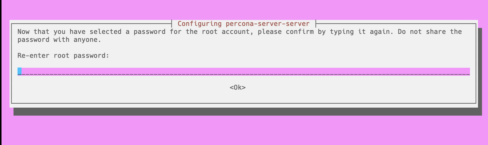

Percona Server for MySQL
Documentation
8.0.42-33 (May 19, 2025)
Percona Server for MySQL 8.0 - Documentation¶
This documentation is for the latest release: Percona Server for MySQL 8.0.42-33 (Release Notes).
Percona Server for MySQL is a freely available, fully compatible, enhanced, and open source drop-in replacement for any MySQL database. It provides superior and optimized performance, greater scalability, and availability, enhanced backups, increased visibility and instrumentation.
Thousands of enterprises trust Percona Server for MySQL to provide better performance and concurrency for their most demanding workloads.
Enjoy the benefits of Percona Server for MySQL Pro.
You can use the Quickstart Guide to use Percona Server for MySQL.
For Monitoring and Management¶
Percona Monitoring and Management (PMM )monitors and provides actionable performance data for MySQL variants, including Percona Server for MySQL, Percona XtraDB Cluster, Oracle MySQL Community Edition, Oracle MySQL Enterprise Edition, and MariaDB. PMM captures metrics and data for the InnoDB, XtraDB, and MyRocks storage engines, and has specialized dashboards for specific engine details.
Percona Server for MySQL PRO
Percona Server for MySQL Pro¶
Percona Server for MySQL Pro includes the capabilities that are typically requested by large enterprises. Percona XtraBackup Pro contains packages created and tested by Percona. These packages are supported only for Percona Customers with a subscription.
Capabilities¶
The following capabilities have been tested for 8.0.42-33 and are available in Percona Server for MySQL Pro:
| Name | Available since | Description |
|---|---|---|
| Amazon Linux 2023 | 8.0.41-32 | Install Percona Server for MySQL Pro on Amazon Linux 2023. We support both AMD64 and ARM64 versions of Amazon Linux 2023. |
| FIPS compliance | 8.0.35-27 | FIPS compliance enables all commercial cloud service providers who want to sell and increase their presence for US government entities. |
What’s in it for you?¶
- Save on deploying and maintaining build infrastructure as we do the build and testing for you
- Longer support for older versions of operating systems.
Install Percona Server for MySQL Pro
If you already use Percona Server for MySQL, you can
Upgrade to Percona Server for MySQL Pro
Community users can receive all these capabilities by building Percona Server for MySQL from the same source code.
Install Percona Server for MySQL Pro
Install Percona Server for MySQL Pro¶
Percona Server for MySQL Pro includes the capabilities that are typically requested by large enterprises. Percona XtraBackup Pro contains packages created and tested by Percona. These packages are supported only for Percona Customers with a subscription.
Review Get more help for ways that we can work with you.
This document provides guidelines how to install Pro packages of Percona Server for MySQL from Percona repositories. Check files in packages built for Percona Server for MySQL Pro
Procedure¶
-
Request access to the pro repository from Percona Support. You will receive the client ID and the access token, which you use when downloading the packages.
-
Configure the repository and install Percona Server for MySQL packages
-
Download the Percona
gpgkey:$ wget https://github.com/percona/percona-repositories/raw/main/deb/percona-keyring.gpg -
Add the Percona
gpgkey totrusted.gpg.ddirectory:$ sudo cp percona-keyring.gpg /etc/apt/trusted.gpg.d/ -
Create the
/etc/apt/sources.list.d/psmysql-pro.listconfiguration file with the following contents, and your [CLIENTID] and [TOKEN].To find the
OPERATING_SYSTEMvalue, runlsb_release -sc./etc/apt/sources.list.d/psmysql-pro.listdeb http://repo.percona.com/private/[CLIENTID]-[TOKEN]/ps-80-pro/apt/ OPERATING_SYSTEM main -
Update the local cache
$ sudo apt update -
Install Percona Server for MySQL packages
$ sudo apt install -y percona-server-server-proIf needed, install other required packages. Review the DEB packages built for Percona Server for MySQL 8.0.
-
Create the
/etc/yum.repos.d/psmysql-pro.repoconfiguration file with the following contents, and your [CLIENTID] and [TOKEN]./etc/yum.repos.d/psmysql-pro.repo[ps-8.0-pro] name=PS_8.0_PRO baseurl=http://repo.percona.com/private/[CLIENTID]-[TOKEN]/ps-80-pro/yum/release/$releasever/RPMS/x86_64 enabled=1 gpgkey = https://repo.percona.com/yum/PERCONA-PACKAGING-KEY -
Install Percona Server for MySQL packages
$ sudo dnf install percona-server-server-proInstall other required packages. Check files in the RPM package built for Percona Server for MySQL 8.0.
-
-
Start the server
$ sudo systemctl start mysqld
Next step¶
Files in packages built for Percona Server for MySQL Pro¶
Percona Server for MySQL Pro includes the capabilities that are typically requested by large enterprises. Percona XtraBackup Pro contains packages created and tested by Percona. These packages are supported only for Percona Customers with a subscription.
Files in the DEB package¶
| Package | Contains |
|---|---|
| percona-server-server-pro | The database server itself, the mysqld binary and associated files. |
| percona-server-pro-common | The files common to the server and client. |
| percona-server-client-pro | The command line client. |
| percona-server-test-pro | The database test suite. |
| percona-server-pro-source | The server source. |
| percona-mysql-router-pro | The mysql router. |
| percona-server-rocksdb-pro | The files for rocksdb installation. |
| percona-server-pro-dbg | The debug symbols. |
Files in the RPM package¶
| Package | Contains |
|---|---|
| percona-server-server-pro | The database server itself, the mysqld binary and associated files. |
| percona-server-client-pro | The command line client. |
| percona-server-test-pro | The database test suite. |
| percona-server-rocksdb-pro | The files for rocksdb installation. |
| percona-mysql-router-pro | The mysql router. |
| percona-server-shared-pro | Client shared library. |
| percona-server-pro-debuginfo | The debug symbols. |
| percona-server-devel-pro | Header files needed to compile software using the client library. |
Next steps¶
Pro build features
FIPS compliance¶
Percona Server for MySQL Pro includes the capabilities that are typically requested by large enterprises. Percona Server for MySQL Pro contains packages created and tested by Percona. These packages are supported only for Percona Customers with a subscription.
Introduced in Percona Server for MySQL Pro 8.0.35-27, Percona Server for MySQL Pro implements the same level of FIPS support as MySQL. Percona Server for MySQL can run in FIPS mode if a FIPS-enabled OpenSSL library and FIPS Object Module are available at runtime or if compiled using a FIPS-validated version of OpenSSL. You can also receive this functionality by building Percona Server for MySQL from source code.
The Federal Information Processing Standards (FIPS) are a set of regulations mandated by the United States government that ensure the security of computer systems for non-military government agencies and their contractors. These standards specify how to perform cryptographic operations, such as encryption, hashing, and digital signatures. FIPS mode is a mode of operation that enforces these standards and rejects any non-compliant algorithms or parameters.
Prerequisites¶
To prepare Percona Server for MySQL for FIPS certification, do the following:
-
Check that your operating system includes FIPS pre-approved OpenSSL library in version 3.0.x or higher. The following distributions includes FIPS pre-approved OpenSSL library in version 3.0.x or higher:
-
RedHat Enterprise Linux 9 and derivatives
-
Oracle Linux 9
The following distributions also includes OpenSSL library in version 3.0.x but do not have FIPS-approved crypto provider installed by default (you can build the crypto provider from the source for testing):
-
Debian 12
-
Ubuntu 22.04 Pro (the OpenSSL FIPS 140-3 certification is under implementation)
Note
If you enable FIPS on Ubuntu Pro with
$ sudo pro enable fips-updatesand then disable FIPS with$ sudo pro disable fips-updates, Percona Server for MySQL may stop operating properly. For example, if you disable FIPS on Ubuntu Pro with$ sudo pro disable fips-updatesand enable the FIPS mode on Percona Server withssl-fips-mode=ON, Percona Server may not load the SSL certificate.
-
-
Deploy Percona Server for MySQL from the Pro build, which is built and tested on operating systems with FIPS pre-approved OpenSSL packages.
The FIPS mode variables¶
Percona Server for MySQL uses the same variables and values as MySQL. Percona Server for MySQL enables control of FIPS mode on the server side and the client side:
-
The
ssl_fips_modesystem variable shows whether the server operates in FIPS mode. This variable is disabled by default.The
ssl_fips_modesystem variable has these values:0- disables FIPS mode1- enables FIPS mode. The exact behavior of the enabled FIPS mode depends on the OpenSSL version. The server only specifies the FIPS value to OpenSSL.2- enablesstrictFIPS mode. This value provides more restrictions than the1value. The exact behavior of thestrictFIPS mode depends on the OpenSSL version. The server only specifies the FIPS value to OpenSSL.
-
The
--ssl-fips-modeclient/server option controls whether a given client operates in FIPS mode. This setting does not change the server setting. This option is disabled by default.The
--ssl-fips-modeclient/server option has these values:OFF- disables FIPS modeON- enables FIPS mode. The exact behavior of the enabled FIPS mode depends on the OpenSSL version. The server only specifies the FIPS value to OpenSSL.STRICT- enablesstrictFIPS mode. This value provides more restrictions than theONvalue. The exact behavior of thestrictFIPS mode depends on the OpenSSL version. The server only specifies the FIPS value to OpenSSL.
The server operation in FIPS mode does not depend on which crypto module (regular or FIPS-approved) is set as the default in the OpenSSL configuration file. The server always respects the value of
--ssl-fips-modeserver command line option (OFF,ON, orSTRICT). Thessl_fips_modeglobal system variable is read-only and cannot be changed at runtime.
Enable the FIPS mode¶
To enable the FIPS mode, pass --ssl-fips-mode=ON or --ssl-fips-mode=STRICT to mysqld as a command line argument or add ssl-fips-mode=ON or --ssl-fips-mode=STRICT to the configuration file. Ignore the warning that the --ssl-fips-mode client/server option is deprecated.
Check that FIPS mode is enabled¶
To ensure that the FIPS mode is enabled, do the following:
-
Pass
--log-error-verbosity=3to mysqld as a command line argument or addlog-error-verbosity=3to the configuration file. -
Check that the error log contains the following message:
A FIPS-approved version of the OpenSSL cryptographic library has been detected in the operating system with a properly configured FIPS module available for loading. Percona Server for MySQL will load this module and run in FIPS mode.
Next steps¶
Install Percona Server for MySQL Pro
If you already use Percona Server for MySQL, you can
Upgrade to Percona Server for MySQL Pro¶
Percona Server for MySQL Pro includes the capabilities that are typically requested by large enterprises. Percona Server for MySQL Pro contains packages created and tested by Percona. These packages are supported only for Percona Customers with a subscription.
Review Get more help for ways that we can work with you.
This document provides instructions on upgrading from Percona Server for MySQL to Percona Server for MySQL Pro.
Preconditions¶
Request the access to the pro repository from Percona Support. You will receive the client ID and the access token which you use when downloading the packages.
Check files in packages built for Percona Server for MySQL Pro
Procedure¶
-
Configure the repository
-
Create the
/etc/apt/sources.list.d/psmysql-pro.listconfiguration file with the following contentsTo get the
OPERATING_SYSTEMvalue, runlsb_release -sc./etc/apt/sources.list.d/psmysql-pro.listdeb http://repo.percona.com/private/[CLIENTID]-[TOKEN]/ps-80-pro/apt/ OPERATING_SYSTEM main -
Update the local cache
$ sudo apt update
Create the
/etc/yum.repos.d/psmysql-pro.repoconfiguration file with the following contents/etc/yum.repos.d/psmysql-pro.repo[ps-8.0-pro] name=PS_8.0_PRO baseurl=http://repo.percona.com/private/[CLIENTID]-[TOKEN]/ps-80-pro/yum/main/$releasever/RPMS/x86_64 enabled=1 gpgkey = https://repo.percona.com/yum/PERCONA-PACKAGING-KEY -
-
Stop the
mysqlserver$ sudo systemctl stop mysqld -
Install Percona Server for MySQL Pro packages
$ sudo apt install -y percona-server-server-proInstall other required packages. Check files in the DEB package built for Percona Server for MySQL 8.0.
Note
On Debian 12, you may receive the following warning after running
systemctlcommands:Warning: The unit file, source configuration file, or drop-ins of mysql.service changed on disk. Run 'systemctl daemon-reload' to reload units.Run the suggested command:
$ sudo systemctl daemon-reloadThe
--allow erasingoption allows Yum to remove existing packages that conflict with the new installation. This is often necessary when upgrading or reinstalling software.$ sudo dnf install --allowerasing percona-server-server-proInstall other required packages. Check files in the RPM package built for Percona Server for MySQL 8.0.
-
Start the server
$ sudo systemctl start mysqld
Downgrade from Percona Server for MySQL Pro¶
If you want to downgrade from Percona Server for MySQL Pro to the same version of Percona Server for MySQL, do the following:
Note
In Percona Server for MySQL Pro 8.0.35-27, the downgrade from percona-mysql-router-pro to percona-mysql-router is not supported for Ubuntu 22.04.
-
Set up the Percona Server for MySQL 8.0 repository
$ sudo percona-release setup ps80 -
Stop the
mysqlserver.$ sudo systemctl stop mysqld -
Install the server package
$ sudo apt install percona-server-serverInstall other required packages. Check files in the DEB package built for Percona Server for MySQL 8.0.
-
Start the
mysqlserver$ sudo systemctl start mysqld
Note
On Debian 12, if you want to remove the Percona Server for MySQL after the downgrade, you must stop the server manually. This behavior will be fixed in future releases.
$ sudo systemctl stop mysqld
-
Set up the Percona Server for MySQL 8.0 repository
$ sudo percona-release setup ps80 -
Stop the
mysqlserver.$ sudo systemctl stop mysqld -
Install the server package
$ sudo dnf --allowerasing install percona-server-serverInstall other required packages. Check files in the RPM package built for Percona Server for MySQL 8.0.
-
Start the
mysqlserver$ sudo systemctl start mysqld
Get help from Percona¶
Our documentation guides are packed with information, but they can’t cover everything you need to know about Percona Server for MySQL. They also won’t cover every scenario you might come across. Don’t be afraid to try things out and ask questions when you get stuck.
Percona’s Community Forum¶
Be a part of a space where you can tap into a wealth of knowledge from other database enthusiasts and experts who work with Percona’s software every day. While our service is entirely free, keep in mind that response times can vary depending on the complexity of the question. You are engaging with people who genuinely love solving database challenges.
We recommend visiting our Community Forum. It’s an excellent place for discussions, technical insights, and support around Percona database software. If you’re new and feeling a bit unsure, our FAQ and Guide for New Users ease you in.
If you have thoughts, feedback, or ideas, the community team would like to hear from you at Any ideas on how to make the forum better?. We’re always excited to connect and improve everyone’s experience.
Percona experts¶
Percona experts bring years of experience in tackling tough database performance issues and design challenges.
We understand your challenges when managing complex database environments. That’s why we offer various services to help you simplify your operations and achieve your goals.
| Service | Description |
|---|---|
| 24/7 Expert Support | Our dedicated team of database experts is available 24/7 to assist you with any database issues. We provide flexible support plans tailored to your specific needs. |
| Hands-On Database Management | Our managed services team can take over the day-to-day management of your database infrastructure, freeing up your time to focus on other priorities. |
| Expert Consulting | Our experienced consultants provide guidance on database topics like architecture design, migration planning, performance optimization, and security best practices. |
| Comprehensive Training | Our training programs help your team develop skills to manage databases effectively, offering virtual and in-person courses. |
We’re here to help you every step of the way. Whether you need a quick fix or a long-term partnership, we’re ready to provide your expertise and support.
Release notes
Percona Server for MySQL 8.0 release notes index¶
Percona Server for MySQL 8.0.42-33 (2025-05-19)¶
Get started with Quickstart Guide for Percona Server for MySQL.
Percona Server for MySQL 8.0.42-33 includes all the features and bug fixes available in the MySQL 8.0.42 Community Edition and enterprise-grade features developed by Percona.
Release highlights¶
Percona Server for MySQL 8.0.42-33¶
-
Improves the
audit_log_filter_set_user()UDF to accept account names with wildcard characters ('%'and'_') in the host part. For example, you can use‘usr1@%',‘usr2%192.168.0.%’, or'usr3@%.mycorp.com'. -
Updates the C++ level of the KMPI library to enhance error handling capabilities.
-
Improves optimizer behavior by restoring correct handling of const tables in
test_quick_select(). A MySQL Upstream refactor (commit 9a13c1c) removed theQEP_TABdependency, causingget_quick_record_count()to no longer pass const table information. This could lead to suboptimal range scan boundaries. The applied patch resolves the issue by explicitly passingconst_tablestotest_quick_select(), ensuring consistent behavior with the pre-refactor logic.
The latest MyRocks storage engine incorporates code based on RocksDB version 9.3.1. Percona has applied minor modifications to the original RocksDB codebase. Check the list of modifications at https://github.com/percona/rocksdb/.
This release adds the following changes to the list of MyRocks variables.
Adds new MyRocks variables
--rocksdb_bulk_load_compression_parallel_threads--rocksdb_bulk_load_enable_unique_key_check--rocksdb_debug_skip_bloom_filter_check_on_iterator_bounds--rocksdb_enable_udt_in_mem--rocksdb_invalid_create_option_action--rocksdb_io_error_action--rocksdb_table_stats_skip_system_cf--rocksdb_use_io_uring--rocksdb_enable_instant_ddl--rocksdb_enable_instant_ddl_for_append_column--rocksdb_enable_instant_ddl_for_column_default_changes--rocksdb_enable_instant_ddl_for_drop_index_changes--rocksdb_enable_instant_ddl_for_table_comment_changes--rocksdb-bulk-load-compression-parallel-threads--rocksdb-bulk-load-enable-unique-key-check--rocksdb-debug-skip-bloom-filter-check-on-iterator-bounds
Changes default values of MyRocks variables
-
--rocksdb_disable_instant_ddl- the default value is changed fromONtoOFF. -
--rocksdb_file_checksums- the data type is changed fromBooleantoENUM. Also, the default value is changed fromOFFtoCHECKSUMS_OFF. -
--rocksdb_compaction_readahead_size- the default value is changed from0(zero) to2097152.
Deprecates MyRocks variable
--rocksdb_disable_instant_ddl- this variable is being deprecated and is expected to be removed in a future release.
Removes MyRocks variables
--rocksdb-access-hint-on-compaction-start--rocksdb_large_prefix--rocksdb_strict_collation_check--rocksdb_strict_collation_exceptions
MySQL 8.0.42¶
Improvements and bug fixes provided by Oracle for MySQL 8.0.42 and included in Percona Server for MySQL are the following:
-
Fixed an issue where
CHECK TABLEsometimes incorrectly reported that spatial indexes were corrupted. (Bug #37286473) -
Fixed an issue in InnoDB redo log recovery to improve data safety after a crash. (Bug #37061960)
-
Fixed an issue where reading
index_idvalues could lead to incorrect behavior with indexes. (Bug #36993445, Bug #37709706) -
Fixed a bug related to the
lower_case_table_namessetting that caused inconsistent behavior with table names on different systems. (Bug #32288105) -
Fixed a bug where
mysqldumpdid not properly escape certain special characters in its output. (Bug #37540722, Bug #37709163) -
The
fprintf_string()function inmysqldumpdid not use the correct quote character for escaping strings. (Bug #37607195)
Find the complete list of bug fixes and changes in the MySQL 8.0.42 Release Notes.
Improvements¶
-
PS-9024: Improves the
audit_log_filter_set_user()UDF to accept account names with wildcard characters ('%'and'_') in the host part. -
PS-9561: Updates the C++ level of the KMPI library to enhance error handling capabilities.
-
PS-9765: Updates the list of MyRocks variables. You can find the list of variables in MyRocks server variables.
Bug Fixes¶
-
PS-9033: The
audit_log_filterplugin did not register remote accesses. -
PS-9390: In some cases, using
JSON_TABLEinside anINorEXISTSsubquery caused incorrect results. This happened when the subquery referred to a table from the main query, and a semijoin optimization was applied. Percona merged the fix from MySQL. -
PS-9609: The
audit_log_filterplugin could not be installed when Percona Server was usingcomponent_keyring_kmip. -
PS-9628: The
binlog_encryptiondid not work withcomponent_keyring_kmip. -
PS-9703: In-place
ALTER TABLEoperations that internally rebuilt tables sometimes resulted in lost rows if a concurrent purge happened. -
PS-9719: When
binlog_transaction_dependency_trackingwas changed during a high-load workload, MySQL encountered a segmentation fault. -
PS-9723: MySQL server exited in
xpl::Ssl_context::~Ssl_context()under heavy load ofALTER INSTANCE RELOAD TLSqueries. -
PS-9753: Applied an optimizer patch from Enhanced MySQL to restore correct handling of const tables in
test_quick_select(). -
PS-9764: Added clang-20 to Azure Pipelines and fixed clang-20 compilation issues.
-
PS-9777: The
binlog_utils_udfplugin did not handlebinlog.indexentries the same as the Percona Server code did. -
PS-9780: The maximum size of
audit_log_filterrule was increased from 1024 characters to 16 000 characters. -
PS-9661: The encryption of system tablespaces using
component_keyring_kmipfailed.
Useful links¶
Install Percona Server for MySQL 8.0
Upgrade Percona Server for MySQL from 5.7 to 8.0
The Percona Server for MySQL GitHub repository
Download product binaries, packages, and tarballs at Percona Product Downloads
Contribute to the documentation
For training, contact Percona Training - Start learning now
Percona Server for MySQL 8.0.41-32 (2025-02-26)¶
Get started with Quickstart Guide for Percona Server for MySQL.
Percona Server for MySQL 8.0.41-32 includes all the features and bug fixes available in the MySQL 8.0.41 Community Edition and enterprise-grade features developed by Percona.
Release highlights¶
Percona Server for MySQL 8.0.41-32¶
-
Extends the Encryption user-defined functions with the following:
-
Added support for
pkcs1,oaep, ornopadding for RSA encrypt and decrypt operations -
Added support for
pkcs1orpkcs1_psspadding for RSA sign and verify operations -
Added the
encryption_udf.legacy_padding_schemesystem variable to manage legacy padding schemes -
Added the character set awareness
-
-
Improves the Data masking performance by introducing an internal term cache. The new cache speeds up lookups for
gen_blocklist()andgen_dictionary()functions by storing dictionary data in memory.Find more detailed information in the Data masking overview and in the Data masking component functions.
MySQL 8.0.41¶
Improvements and bug fixes provided by Oracle for MySQL 8.0.41 and included in Percona Server for MySQL are the following:
-
Fixed an assertion in debug builds where certain IO buffer serializations caused system hangs. (Bug #37139618)
-
Resolved a failure when dropping the primary key and adding a new
AUTO_INCREMENTcolumn as the primary key in descending order using theINPLACEalgorithm resulted in failure. (Bug #36658450) -
Fixed incorrect results, including missing rows, in queries that used a descending primary key with the
index_mergeoptimization. (Bug #106207, Bug #33767814) -
Addressed a replication channel issue where MySQL failed to stop the channel properly when large transactions were being processed, and
STOP REPLICAwas requested. This issue also prevented graceful server shutdown, requiring process termination or system restart. (Bug #115966, Bug #37008345)
Find the complete list of bug fixes and changes in the MySQL 8.0.41 Release Notes.
Improvements¶
-
PS-8389: Extends the Encryption user-defined functions to incorporate the new and modified asymmetric key functionality introduced by Oracle in MySQL 8.0.30 Enterprise Encryption Component Function Descriptions.
-
PS-9148: Extends the Data masking with new additions from MySQL 8.3.0 Enterprise Data Masking and De-Identification Component Variables.
Bug Fixes¶
-
PS-9391: The replication broke with the error
HA_ERR_KEY_NOT_FOUNDwhen theslave_rows_search_algorithmswere set toINDEX_SCAN,HASH_SCAN. -
PS-9416: The error messages from the Key Management Interoperability Protocol (KMIP) component were not descriptive.
-
PS-9537: When building a new component that used mysql_command_xxx services (such as
mysql_command_factory,mysql_command_query, etc.), it was impossible to reuse the same connection to run multiple queries. This issue was observed withSELECTqueries, but it may also apply toINSERT,UPDATE, andDELETEoperations. -
PS-9542: Added Clang-19 to Azure pipelines, and fixed the clang-19 compilation issues.
-
PS-9551: When building components that utilized MySQL command services (for example,
mysq _command_factory,mysql_command_query), reusing a single connection for multiple queries was previously impossible. This limitation was observed withSELECTqueries but may have also impactedINSERT,UPDATE, andDELETEoperations. -
PS-9611: An assertion failure occurred during server shutdown:
!is_set() || m_can_overwrite_status. -
PS-9612: Percona Server build failed if more than 128 threads were available. Percona merged the fix from MariaDB.
-
PS-9509: Percona Server did not track the
global_connection_memorywhen setting thethread_handling='pool-of-threads'option. -
PS-9614: When the
pool-of-threadswas enabled, thetimer_threadwas missing ifmysqldhad been started with the--daemonizeoption.
Useful links¶
Install Percona Server for MySQL 8.0
Upgrade Percona Server for MySQL from 5.7 to 8.0
The Percona Server for MySQL GitHub repository
Download product binaries, packages, and tarballs at Percona Product Downloads
Contribute to the documentation
For training, contact Percona Training - Start learning now
Percona Server for MySQL 8.0.40-31 (2024-12-30)¶
Get started with Quickstart Guide for Percona Server for MySQL.
Percona Server for MySQL 8.0.40-31 includes all the features and bug fixes available in the MySQL 8.0.40 Community Edition and enterprise-grade features developed by Percona.
Release highlights¶
This release merges the MySQL 8.0.40 code base. Percona has implemented the Agile Release Train Strategy. This strategy allows us to deliver software updates more frequently, ensuring you receive the latest features and improvements as soon as they’re ready. This approach helps us respond quickly to your needs and provide a better overall experience with our product.
Improvements and bug fixes provided by Oracle for MySQL 8.0.40 and included in Percona Server for MySQL are the following:
-
Changes in MySQL 8.0.33 caused queries using joins on InnoDB tables to perform worse because refactoring affected functions that were previously inline.
-
The server crashed when it tried to update columns altered with NULL as the default value using the INSTANT algorithm.
-
The server could crash during DELETE or UPDATE operations if a column was dropped using the INSTANT algorithm.
-
Importing a table created under a different sql_mode sometimes led to schema mismatches, risking data corruption in secondary indexes. The fix now includes integrity checks on the imported tablespace.
-
Rebuilding tables with secondary indexes required more file I/O operations compared to MySQL 8.0.26, which slowed down query performance.
Find the complete list of bug fixes and changes in the MySQL 8.0.40 Release Notes.
Bug Fixes¶
-
PS-9323: A file name change in the documentation broke a link to Percona Toolkit UDFs in package install output.
-
PS-9369: The Audit plugin caused a memory leak. This occurred when threads remained connected to the database for extended periods.
-
PS-9382: After an upgrade, the telemetry daemon ran continuously. The telemetry daemon was manually stopped and the service was disabled. Adding
percona_telemetry_disable=1to the configuration file and restarting MySQL led to the server becoming unresponsive and required a forced termination. -
PS-9453: The
percona_telemetrytool caused a long wait onCOND_thd_listif the root user is absent.
Useful links¶
Install Percona Server for MySQL 8.0
Upgrade Percona Server for MySQL from 5.7 to 8.0
The Percona Server for MySQL GitHub repository
Download product binaries, packages, and tarballs at Percona Product Downloads
Contribute to the documentation
For training, contact Percona Training - Start learning now
Percona Server for MySQL 8.0.39-30 (2024-10-08)¶
Get started with Quickstart Guide for Percona Server for MySQL.
Percona Server for MySQL 8.0.39-30 includes all the features and bug fixes available in the MySQL 8.0.38 Community Edition and MySQL 8.0.39 Community Edition and enterprise-grade features developed by Percona.
Release highlights¶
Improvements and bug fixes provided by Oracle for MySQL 8.0.38, MySQL 8.0.39 and included in Percona Server for MySQL are the following:
-
The server could not restart successfully after creating a large number of tables (8001 or more). This issue, Bug #36808732, is a regression of Bug #33398681.
-
Enhanced performance of tablespace file scanning during startup. (Bug #110402, Bug #35200385)
-
InnoDB file system operations now consistently perform an fsync on the parent directory when carrying out directory-altering tasks. (Bug #36174938)
-
Worker jobs now include details about the relay log file that initiated the transaction, rather than relying on the default specified by
relay_log.
Find the complete list of bug fixes and changes in the MySQL 8.0.38 Release Notes and MySQL 8.0.39 Release Notes.
Improvements¶
- PS-9233: Adds the UUID_VX component which provides a set of functions for generating and working with various versions of the Universally Unique Identifier (UUID).
Bug fixes¶
-
PS-8057: The variable
slow_query_log_fileat runtime did not match the value defined in themy.cnffile. -
PS-9214: An
ALTER TABLEoperation that rebuilt an InnoDB table using theINPLACEalgorithm could occasionally fail with an unwarranted duplicate primary key error. This could happen if there were concurrent insertions, even though theose insertions did not cause any primary key conflict. -
PS-9314: There was no connection to the server because mysqld received signal 11 when using
JSON_TABLE. -
PS-9286: The Key Management Interoperability Protocol (KMIP) component left keys in a
pre-activestate. -
PS-9306: MySQL versions 8.0.38, 8.4.1, and 9.0.0 exited upon restarting if the database contained 10,000 or more tables.
-
PS-9322: When
super_read_only=1is enabled, undo truncation couldn’t update the data dictionary (DD), resulting in orphaned truncate log files. -
PS-9379: On some platforms, using the
-l atomicflag could cause a compilation error because the compiler already has built-in support for atomic operations and does not require linking to the atomic library. -
PS-9144: In-place
ALTER TABLEoperations that internally rebuilt tables sometimes resulted in lost rows if a concurrent purge happened.
Useful links¶
Install Percona Server for MySQL 8.0
Upgrade Percona Server for MySQL from 5.7 to 8.0
The Percona Server for MySQL GitHub repository
Download product binaries, packages, and tarballs at Percona Product Downloads
Contribute to the documentation
For training, contact Percona Training - Start learning now
Percona Server for MySQL 8.0.38¶
Due to a critical fix, MySQL Community Server 8.0.39 was released shortly (22 days later) after MySQL Community Server 8.0.38. Percona has skipped the release of Percona Server for MySQL 8.0.38. Percona Server for MySQL 8.0.39 contains all bug fixes and contents from MySQL Community Server 8.0.38 and MySQL Community Server 8.0.39.
Percona Server for MySQL 8.0.37-29 (2024-08-06)¶
Get started with Quickstart Guide for Percona Server for MySQL.
Percona Server for MySQL 8.0.37-29 includes all the features and bug fixes available in the MySQL 8.0.37 Community Edition and enterprise-grade features developed by Percona.
Release highlights¶
This release enhances telemetry and provides a more comprehensive explanation of how the telemetry works, including new components, metrics files, and additional methods for disabling telemetry. Find more information in the Telemetry on Percona Server for MySQL document.
Improvements and bug fixes provided by Oracle for MySQL 8.0.37 and included in Percona Server for MySQL are the following:
-
The redo log might not record a change in column order when using instant DDL, potentially leading to an inaccurate log replay during the recovery process. (Bug #35183686)
-
Enhanced management of buffers has been implemented in deleting tablespaces to prevent a possible assertion failure. (Bug #35676106, Bug #36343647)
-
Resolved an assertion failure associated with full-text indexes. (Bug #35836581)
Find the complete list of bug fixes and changes in the MySQL 8.0.37 Release Notes.
Bug fixes¶
-
PS-7977: Fixed the broken apparmor profile after 8.0.22-13 -> 8.0.23-14 upgrade.
-
PS-8731: Fixed the incorrect path in the /etc/logrotate.d/mysql and /etc/my.cnf configuration files (Thanks to Gena Makhomed for reporting this issue.)
-
PS-8838: Added perconaserverclient.pc to libperconaserverclient21-dev package (Thanks to ひきこもりのメモ for reporting this issue.)
-
PS-9092: There were data inconsistencies during a high rate of page split/merge.
-
PS-9107: Fixed the [InnoDB] Assertion failure: ibuf0ibuf.cc:3833:ib::fatal triggered thread.
-
PS-9117: The server exited after setting the
innodb_interpreter_outputsystem variable. -
PS-9145: Fixed openssl version detection in
encryption_udf_digest_table.inc. -
PS-9151: Percona server 8.0 build failed on CentOS 7 with
-DWITH_SSL=openssl11. -
PS-9155: The server exited during the execution of the complicated query with 9 CTEs.
-
PS-9213: Fixed the typo in condition in
mysqld.cc::fix_secure_path(). -
PS-9121: MySQL exited when InnoDB failed to update a spatial index.
-
PS-9219: While converting the charset collation in a table, MySQL converted the date and time data types columns in the
.ibdfile. However, thecollation_idin the.ibdfile did not align with that of the data dictionary. -
PS-9235: Keyring vault failed to work with
binlog_rotate_encryption_master_key_at_startup.
Deprecation¶
- PS-8963: The
SEQUENCE_TABLE()function is deprecated and may be removed in a future release. We recommend that you usePERCONA_SEQUENCE_TABLE()instead. To maintain compatibility with existing third-party software,SEQUENCE_TABLEis no longer a reserved term and can be used as a regular identifier. Find more information in PERCONA_SEQUENCE_TABLE(n) function
Packaging notes¶
Percona Server for MySQL 8.0.37-29 supports Ubuntu 24.04.
Percona Server 8.0.37-29 provides ARM64 packages. On Percona Software Download, the following operating systems include ARM64 packages with the arm64.deb extension:
-
Debian GNU/Linux 12.0
-
Debian GNU/Linux 11.0
-
Ubuntu 24.04
-
Ubuntu 22.04
-
Ubuntu 20.04
Useful links¶
Install Percona Server for MySQL 8.0
Upgrade Percona Server for MySQL from 5.7 to 8.0
The Percona Server for MySQL GitHub repository
Download product binaries, packages, and tarballs at Percona Product Downloads
Contribute to the documentation
For training, contact Percona Training - Start learning now
Percona Server for MySQL 8.0.36-28 (2024-03-04)¶
Get started with Quickstart Guide for Percona Server for MySQL.
Percona Server for MySQL 8.0.36-28 includes all the features and bug fixes available in the [MySQL 8.0.36 Community Edition and enterprise-grade features developed by Percona.
Release highlights¶
Improvements and bug fixes provided by Oracle for MySQL 8.0.36 and included in Percona Server for MySQL are the following:
-
The hashing algorithm employed yielded poor performance when using a HASH field to check for uniqueness. (Bug #109548, Bug #34959356)
-
All statement instrument elements that begin with
statement/sp/%, exceptstatement/sp/stmt, are disabled by default.
Find the complete list of bug fixes and changes in the MySQL 8.0.36 Release Notes.
Bug fixes¶
PS-9018: The replica stalls when log_slave_updates=0 and a Data Definition Language (DDL) operation is executed against a non-replicated database on that replica.
PS-9048: In the Debug build, assets with OPTIMIZE table and fulltext indexes failed.
PS-9083: A fix for a server exit when the slow query log is on with additional variables.
PS-9075: ALTER TABLE ... ALGORITHM=INPLACE failed for table which is no longer encrypted.
PS-9044: Added the following variables to MyRocks:
Changed the default values for the following variables:
-
rocksdb_compaction_sequential_deletesfrom 0 to 14999 -
rocksdb_compaction_sequential_deletes_count_sdfromOFFtoON -
rocksdb_compaction_sequential_deletes_windowfrom 0 to 15000 -
rocksdb_force_flush_memtable_nowfromONtoOFF -
rocksdb_large_prefixfromOFFtoON
The rocksdb_large_prefix is deprecated.
Known issues¶
-
PS-9078: An upgrade on Ubuntu 20.04 from the following releases does not restart the MySQL service automatically. You must start the service manually.
-
Percona Server for MySQL 8.0.x to Percona Server for MySQL 8.1
-
Percona Server for MySQL 8.0.x to Percona Server for MySQL 8.2
-
Percona Server for MySQL 8.1 to Percona Server for MySQL 8.2
-
Useful links¶
Install Percona Server for MySQL 8.0
Upgrade Percona Server for MySQL from 5.7 to 8.0
The Percona Server for MySQL GitHub repository
Download product binaries, packages, and tarballs at Percona Product Downloads
Contribute to the documentation
For training, contact Percona Training - Start learning now
2023 (versions 8.0.35-27 to 8.0.31-23)
Percona Server for MySQL 8.0.35-27 (2023-12-27)¶
Get started with Quickstart Guide for Percona Server for MySQL.
Percona Server for MySQL 8.0.35-27 includes all the features and bug fixes available in the MySQL 8.0.35 Community Edition in addition to enterprise-grade features developed by Percona.
Release highlights¶
Percona Server for MySQL implements telemetry that fills in the gaps in our understanding of how you use Percona Server to improve our products. Participation in the anonymous program is optional. You can opt-out if you prefer not to share this information. Find more information in the Telemetry on Percona Server for MySQL document.
This merge fixes the following issue:
- PS-8849: The server exited with the
Assertion failure: row0mysql.cc:218:len < 256 * 256 thread.
Improvements and bug fixes provided by Oracle for MySQL 8.0.35 and included in Percona Server for MySQL are the following:
- Upgraded the linked OpenSSL library to OpenSSL 3.0.10.
- Removed the printed query string limit to display the characters for a detected deadlock section of the engine status log.
- Fixed a procession of single-character tokens by an FTS parser plugin.
Deprecations¶
The following items are deprecated in this release and using any of these items may cause a warning:
-
The
binlog_transaction_dependency_trackingserver system variable -
The
oldandnewserver system variables -
The
--character-set-client-handshakeserver variable -
INFORMATION_SCHEMA.PROCESSLIST -
The implementation of the
SHOW PROCESSLISTcommand that uses theINFORMATION_SCHEMA.PROCESSLISTtable -
The
performance_schema_show_processlistvariable
We recommend migrating from these items as soon as possible. They can be removed in a future release.
Find the full list of bug fixes and changes in the MySQL 8.0.35 Release Notes.
Bug fixes¶
-
PS-7806: Tables with column compression broke asynchronous replication.
-
PS-8671: An ocassional failure of the
innodb.ddl_killtest on Jenkins. -
PS-8741: MySQL 8.0.33 failed in Debug mode while running
innodb.ddl_crash_alter_partition. -
PS-8879: Received an out of memory error when running
ALTER TABLE ... COLUMN_FORMAT COMPRESSED;. -
PS-8885: Instead of using the path specified in the
secure_log_pathoption, the server used the default MySQL data directory to store the secure logs. -
PS-8965: In some situations, the
keyring_vaultretrieved records for already deleted keys with emptydataanddeletion_timeset. Ensured that deleted keys were properly processed. -
PS-8973: The execution of
audit_log_filter.status_var_log_sizefailed if it was run multiple times. -
PS-8975: When userstat was enabled, concurrent execution of queries to tables, including queries to
I_S.TABLE/INDEX_STATISTICSandFLUSH PRIVILEGEScommands caused deadlocks between internal locks of the Percona Server. Statements in the existing connections were stalled, and new connections to the server failed (Thanks to Pierre POMES for reporting this issue.) -
PS-8927: The
CREATE TABLE LIKEoption didn’t write the charset on binary log if it was created from a temporary table. -
PS-9011: Downstream INSTANT algo <= 8028 on table in mysql schema led to corruption post upgrade.
Useful links¶
Install Percona Server for MySQL 8.0
Upgrade Percona Server for MySQL from 5.7 to 8.0
The Percona Server for MySQL GitHub repository
Download product binaries, packages, and tarballs at Percona Product Downloads
Contribute to the documentation
For training, contact Percona Training - Start learning now
Percona Server for MySQL 8.0.34-26 (2023-09-26)¶
Get started with Quickstart Guide for Percona Server for MySQL.
Percona Server for MySQL 8.0.34-26 includes all the features and bug fixes available in the MySQL 8.0.34 Community Edition in addition to enterprise-grade features developed by Percona.
Percona Server for MySQL is a freely available, fully compatible, enhanced, and open source drop-in replacement for any MySQL database. It provides superior and optimized performance, greater scalability, and availability, enhanced backups, increased visibility and instrumentation.
Percona Server for MySQL is trusted by thousands of enterprises to provide better performance and concurrency for their most demanding workloads.
Release highlights¶
-
Percona Server for MySQL 8.0.34-26 implements the Audit Log Filter plugin. The plugin provides a set of features that you can use to monitor user activity on the selected server:
- Filter audit events based on user/connection, accessed database/table name, query content, etc. Filtering rules are in JSON format.
- Dynamically enable/disable the auditing. A server restart is not required to add or adjust existing filtering rules.
- Use filtering rules to remove sensitive data from SQL statements written to log files.
- Use filtering rules to block events matching specific criteria (for example, database/table name, user name).
- Configure filtering rules to write to audit log extra information provided via Query Attributes with each query.
- Encrypt the audit log files using AES-256 encryption. The plugin keeps a set of encryption passwords used to encrypt existing log files. External applications may use these passwords to access encrypted logs.
- Compress audit log files to reduce the storage space used by log files.
- Configure an automatic rotation and removal of log files. You can remove outdated log files based either on storage space used by log files or the age of log files.
-
Percona Server for MySQL 8.0.34-26 implements the data masking component, an improved and enchanced version of data masking plugin. The data masking component adds the following features:
- Support for multibyte character sets for random generation/masking functions
- New masking functions for IBAN, UUID, Canada SIN, and UK NIN
- New random generation functions for BAN, UUID, Canada SIN, and UK NIN
- The ability to store substitution dictionaries in the database
- The dynamic privilege
MASKING_DICTIONARIES_ADMINthat is required for dictionary manipulation operations - The automated loadable-function registration/unregistration during component installation/uninstallation
This merge fixes the following issue:
- PS-8770: The
INSTANT DDLcaused Percona Server 8.0.32 exit after upgrading from 5.7.41.
Improvements and bug fixes introduced by Oracle for MySQL 8.0.34 and included in Percona Server for MySQL are the following:
- MySQL 8.0.33 added support for the
audit_log pluginto choose which database to use to store JSON filter tables. Now, you can specify an alternative to the default system database, mysql, when running the plugin installation script. For example:
$> mysql -u root -D database_name -p < audit_log_filter_linux_install.sql
-
Adds
mysql_binlog_open(),mysql_binlog_fetch(), andmysql_binlog_close()functions to the libmysqlclient.so shared library. These functions enable developers to access a MySQL server binary log. -
For platforms on which OpenSSL libraries are bundled, the linked OpenSSL library for MySQL Server is updated from OpenSSL 1.1.1 to OpenSSL 3.0.9.
Deprecations and removals¶
-
The
mysqlpumpclient utility program is deprecated. The use of this program causes a warning. Themysqlpumpclient may be removed in future releases. The applications that depend onmysqlpumpwill usemysqldumporMySQL Shell Utilities. -
The
sync_relay_log_infoserver system variable is deprecated. Using this variable or its equivalent startup--sync-relay-log-infooption causes a warning. This variable may be removed in future releases. The applications that use this variable should be rewritten not to depend on it before the variable is removed. -
The
binlog_formatserver system variable is deprecated and may be removed in future releases. The functionality associated with this variable, which changes the binary logging format, is also deprecated.When
binlog_formatis removed, MySQL server supports only row-based binary logging. Thus, new installations should use only row-based binary logging. Migrate the existing installations that use the statement-based or mixed logging format to the row-based format.The system variables
log_bin_trust_function_creatorsandlog_statements_unsafe_for_binlogused in the context of statement-based logging are also deprecated and may be removed in future releases.Setting or selecting the values of deprecated variables causes a warning.
-
The
mysql_native_passwordauthentication plugin is deprecated and may be removed in future releases. UsingCREATE USER,ALTER USER, andSET PASSWORDoperations, insert a deprecation warning into the server error log if an account attempts to authenticate usingmysql_native_passwordas an authentication method. -
The legacy filtering mode is deprecated. New deprecation warnings are emitted for legacy audit log filtering system variables. The deprecated variables are either read-only or dynamic.
The
audit_log_policyread-only variable writes a warning message to the MySQL server error log during server startup when its value is set to any value exceptALL(default value).The
audit_log_include_accounts,audit_log_exclude_accounts,audit_log_statement_policy, andaudit_log_connection_policyare dynamic variables. Dynamic variables print a warning message based on usage:-
Passing in a
non-NULLvalue toaudit_log_include_accountsoraudit_log_exclude_accountsduring MySQL server startup writes a warning message to the server error log. -
Passing in a
non-defaultvalue toaudit_log_statement_policyoraudit_log_connection_policyduring MySQL server startup now writes a warning message to the server error log.ALLis the default value for both variables. -
Changing an existing value using
SETsyntax during a MySQL client session writes a warning message to the client log. -
Persisting a variable using
SET PERSISTsyntax during a MySQL client session writes a warning message to the client log.
-
-
The
keyring_fileandkeyring_encrypted_fileplugins are deprecated. These keyring plugins are replaced with thecomponent_keyring_fileandcomponent_keyring_encrypted_filecomponents.
Find the full list of bug fixes and changes in the MySQL 8.0.34 Release Notes.
New features¶
-
PS-8848: Increases verbosity of the connection control plugin.
-
PS-8728: Adds the data masking component to align Percona Data Masking functionality with Oracle 8.0.33.
-
PS-8042: Implements the Audit Log Filter plugin.
The following features and improvements were added by imlementing the Audit Log Filter plugin feature:
-
PS-3874: Adds options to the Audit Plugin to allow multiple configurations.
-
PS-5164: Adds
Rows_sentandRows_examinedfields to the Audit Log plugin. -
PS-5814: Allows the audit log to be rotated when MySQL starts.
-
PS-236: Prepared statements are now logged in the audit plugin.
-
PS-2480: Adds diagnostics when audit log does synchronous writes in ASYNC mode.
-
PS-7331: Sets the default value of
audit_log_rotationsoptions to rotate. -
PS-5945: Adds the MySQL server host name to
audit_logdetails when writing to the SYSLOG.
Improvements¶
-
PS-8624: Exposes the number of TABLE objects with triggers in the Table Cache.
-
PS-8742: Adds the
audit_log_filter_databasesystem variable. -
PS-3942: Adds the
audit_logMTR test to make surePING_CMDhas correctcommand_class.
Bug fixes¶
-
PS-8504: Setting a large value of
audit_log_filter_buffer_sizecaused the server exit. -
PS-8772: The instance was completely stalled when using
INSERT (...) SELECT. -
PS-8797: The audit log plugin installation caused the server exit.
-
PS-8810: The
FEDERATEDupdate on table could fail without notifications when the table containedDOUBLEcolumns. -
PS-8869: The semi-sync master waited for ack when semi-sync replica was down and when was replaced with async.
-
PS-8871: The RESOURCE GROUP hint failed when it was used within a prepared statement.
-
PS-8877: The server exited when selecting from
performance_schema.innodb_redo_log_files. -
PS-8785: The metrics were not incremented for the 1st iteration in
buf_LRU_free_from_common_LRU_list. -
PS-8907: When sending a SIGTERM signal to MySQL with connections from the x plugin, it terminated MySQL instead of shutting it down.
-
PS-8882: Performing
CREATE TABLE SELECTwas unsuccessful if you ran it when the Data-dictionary Table object Cache was full. The issue occurred after runningRENAME TABLES, which renamed a number of tables that was more significant than the Data-dictionary Table object Cache capacity (equal to--max_connections). -
PS-8836: An UPDATE failed after an INSERT. When the same UPDATE was retried, it would succeed.
-
PS-8592: XCom connection stalled forever in the
read()syscall over the network. This issue prevented nodes from re-joining the cluster.
The following bugs were fixed by imlementing the Audit Log Filter plugin:
-
PS-5784: The default
audit_log_formatparameter value for MySQL 8 was NEW but the default value for the Percona Server for MySQL Audit log plugin was OLD. -
PS-6863: The
audit_logplugin did not handle the application messages from theaudit_api_message_emitcomponent.
Packaging notes¶
Percona Server for MySQL 8.0.34-26 supports Debian 12.
Useful links¶
Install Percona Server for MySQL 8.0
Upgrade Percona Server for MySQL from 5.7 to 8.0
The Percona Server for MySQL GitHub location
Download product binaries, packages, and tarballs at Percona Product Downloads
Contribute to the documentation
For training, contact Percona Training - Start learning now
Percona Server for MySQL 8.0.33-25 Update (2023-08-02)¶
Percona Server for MySQL is a freely available, fully compatible, enhanced, and open source drop-in replacement for any MySQL database. It provides superior and optimized performance, greater scalability, and availability, enhanced backups, increased visibility and instrumentation.
Percona Server for MySQL is trusted by thousands of enterprises to provide better performance and concurrency for their most demanding workloads.
This update to the release of Percona Server for MySQL 8.0.33-25 includes the fix to the security vulnerability in mysql-shell CVE-2023-38325.
Useful links¶
Install Percona Server for MySQL 8.0
Upgrade Percona Server for MySQL from 5.7 to 8.0
The Percona Server for MySQL GitHub location
Download product binaries, packages, and tarballs at Percona Product Downloads
Contribute to the documentation
For training, contact Percona Training - Start learning now
Percona Server for MySQL 8.0.33-25 (2023-06-15)¶
| Release date | June 15, 2023 |
|---|---|
| Install instructions | Install Percona Server for MySQL |
| Upgrade instructions | Percona Server for MySQL in-place upgrading guide: from 5.7 to 8.0 |
Percona Server for MySQL 8.0.33-25 includes all the features and bug fixes available in the MySQL 8.0.33 Community Edition in addition to enterprise-grade features developed by Percona.
Percona Server for MySQL is a freely available, fully compatible, enhanced, and open source drop-in replacement for any MySQL database. It provides superior and optimized performance, greater scalability, and availability, enhanced backups, increased visibility and instrumentation.
Percona Server for MySQL is trusted by thousands of enterprises to provide better performance and concurrency for their most demanding workloads.
Release highlights¶
-
This release adds the following MyRocks variables:
-
rocksdb_bulk_load_use_sst_partitioner -
rocksdb_use_hyper_clock_cache -
rocksdb_converter_record_cached_length -
rocksdb_alter_table_comment_inplace -
rocksdb_charge_memory -
rocksdb_column_default_value_as_expression -
rocksdb_corrupt_data_action -
rocksdb_disable_instant_ddl -
rocksdb_enable_delete_range_for_drop_index -
rocksdb_partial_index_blind_delete -
rocksdb_protection_bytes_per_key -
rocksdb_use_write_buffer_manager -
This release adds a new MyRocks Information Schema Table
ROCKSDB_LIVE_FILES_METADATA. -
This release removes
rocksdb_instant_ddlvariable. Userocksdb_disable_instant_ddlinstead. -
This merge fixes the following issues:
-
PS-8477: The offline-mode persisted when doing
dba.rebootClusterFromCompleteOutage. -
PS-8699:
ALTER INSTANCE RELOAD TLShung with many concurrent connection attempts. We have included the upstream fix and added our fix for this issue, which significantly reduces the chances that the issue will reoccur.
Improvements and bug fixes introduced by Oracle for MySQL 8.0.33 and included in Percona Server for MySQL are the following:
-
The
INSTALL COMPONENTincludes theSETclause. TheSETclause sets the values of component system variables when installing one or several components. This reduces the inconvenience and limitations associated with assigning variable values in other ways. -
The mysqlbinlog
--start-positionaccepts values up to18446744073709551615. If the--read-from-remote-serveror--read-from-remote-sourceoption is used, the maximum is4294967295. (Bug #77818, Bug #21498994) -
Using a generated column with
DEFAULT(col_name)to specify the default value for a named column is not allowed and throws an error message. (Bug #34463652, Bug #34369580) -
Not all possible error states were reported during the binary log recovery process. (Bug #33658850)
-
User-defined collations are deprecated. The usage of the following user-defined collations causes a warning that is written to the log:
-
When
COLLATEis followed by the name of a user-defined collation in an SQL statement. -
When the name of a user-defined collation is used as the value of
collation_server,collation_database, orcollation_connection.
The support for user-defined collations will be removed in a future releases of MySQL.
Find the full list of bug fixes and changes in the MySQL 8.0.33 Release Notes.
New features¶
- PS-8188: Adds the
clone_exclude_plugins_listvariable. By default, the list of installed plugins on the donor and recipient must match. Theclone_exclude_plugins_listvariable allows for specifying the list of plugin exceptions.
Bug fixes¶
-
PS-8647:
tmp_table_size=51200caused server exit. -
PS-8683: Concurrent execution of
FLUSH STATUS,COM_CHANGE_USER, andSELECT FROM I_S.PROCESSLISTled to deadlock. The deadlock affected connections executing the mentioned commands and other connections and made it impossible to shut down the server properly. -
PS-8713:
mysql_binlog_xxx()symbols were not exported inlybmysqlclient.so. -
PS-8719: Audit log plugin stalled on flush.
-
PS-8747: When Federated SE internal proxy-server connection timeout occured,
Got an error writing communication packetswas reported back to the user while the actual operation was successful.
Useful links¶
The Percona Server for MySQL GitHub location
Download product binaries, packages, and tarballs at Percona Product Downloads
Contribute to the documentation
For training, contact Percona Training - Start learning now
Percona Server for MySQL 8.0.32-24 (2023-03-20)¶
| Release date | March 20, 2023 |
|---|---|
| Install instructions | Install Percona Server for MySQL |
| Upgrade instructions | Percona Server for MySQL in-place upgrading guide: from 5.7 to 8.0 |
Percona Server for MySQL 8.0.32-24 includes all the features and bug fixes available in the MySQL 8.0.32 Community Edition in addition to enterprise-grade features developed by Percona.
Percona Server for MySQL is a free, fully compatible, enhanced, and open source drop-in replacement for any MySQL database. It provides superior performance, scalability, and instrumentation.
Percona Server for MySQL is trusted by thousands of enterprises to provide better performance and concurrency for their most demanding workloads. It delivers more value to MySQL server users with optimized performance, greater performance scalability and availability, enhanced backups, and increased visibility.
Release highlights¶
-
Percona reverts the following MySQL bug fix:
The data and the GTIDs backed up by mysqldump were inconsistent when the options –single-transaction and –set-gtid-purged=ON were both used. It was because in between the transaction started by mysqldump and the fetching of GTID_EXECUTED, GTIDs on the server could have increased already. With this fixed, a FLUSH TABLES WITH READ LOCK is performed before the fetching of GTID_EXECUTED to ensure its value is consistent with the snapshot taken by mysqldump.
The MySQL fix also added a requirement when using –single-transaction and executing FLUSH TABLES WITH READ LOCK for the RELOAD privilege. (MySQL bug #109701, MySQL bug #105761)
The Percona Server version of the
mysqldumputility, in some modes, can be used with MySQL Server. This utility provides a temporary workaround for the “additional RELOAD privilege” limitation introduced by Oracle MySQL Server 8.0.32.For more information, see the Percona Performance Blog A Workaround for the “RELOAD/FLUSH_TABLES privilege required” Problem When Using Oracle mysqldump 8.0.32.
-
In Percona Server for MySQL 8.0.29-21, the default ALTER TABLE algorithm was deliberately changed from
INSTANTtoINPLACEfor safety reasons (find more details in Percona XtraBackup 8.0.29 and INSTANT ADD/DROP Columns blog post.) Since Oracle fixed the most critical bugs related toALGORITHM=INSTANTin MySQL 8.0.32, Percona Server for MySQL 8.0.32-24 returns the original (upstream) behavior. Now, the default ALTER TABLE algorithm for supported DDL column operations isINSTANT.
Improvements and bug fixes introduced by Oracle for MySQL 8.0.32 and included in Percona Server for MySQL are the following:
-
A replica can add a Generated Invisible Primary Keys(GIPK) to any InnoDB table. To achieve this behavior, the GENERATE value is added as a possible value for the CHANGE REPLICATION SOURCE TO statement’s REQUIRE_TABLE_PRIMARY_KEY_CHECK option.
-
The
REQUIRE_TABLE_PRIMARY_KEY_CHECK = GENERATEoption can be used on a per-channel basis. -
Setting
sql_generate_invisible_primary_keyon the source is ignored by a replica because this variable is not replicated. This behavior is inherited from the previous releases. -
An upgrade from 8.0.28 caused undetectable problems, such as server exit and corruption.
-
A fix for after an upgrade, all columns added with ALGORITHM=INSTANT materialized and have version=0 for any new row inserted. Now, a column added with ALGORITHM=INSTANT fails if the maximum possible size of a row exceeds the row size limit, so that all new rows with materialized ALGORITHM=INSTANT columns are within row size limit. (Bug #34558510)
-
After a drop, adding a specific column using the INSTANT algorithm could cause a data error and a server exit. (Bug #34122122)
-
An online rebuild DDL no longer crashes after a column is added with ALGORITHM=INSTANT. Thank you Qingda Hu for reporting this bug. (Bug #33788578, Bug #106279)
Find the full list of bug fixes and changes in the MySQL 8.0.32 Release Notes.
Improvements¶
-
PS-8450 : Replication: Transactions are stalled when the Certifier reconciles a transaction.
-
PS-8626 : Inserting JSON data with
LOAD DATA INFILEnow shows the failed record number.
Bug fixes¶
-
PS-8073 : Replication: Updating a table with a stored generated field in the primary key caused a replication crash.
-
PS-8577 : When the auto_increment column is modified after the table creation, the
ALTER TABLE ... auto_increment=1did not produce the expected result. -
PS-7538 : With
innodb_optimize_fulltext_onlyenabled, running OPTIMIZE TABLE on a table with an FTS index caused a server exit. -
PS-8627 : Unexpected server exit because
NO_SUCH_TABLEleads tom_opened_table=0x0. -
PS-8660 : Queries to the INFORMATION_SCHEMA or PERFORMANCE_SCHEMA would stall while connections are in the authentication phase.
-
PS-8635 : Remove the Percona implementation of
build-id. -
PS-7934 : Assertion
owned_gtids.is_owned_by(thd->owned_gtid, thd->thread_id())failed. -
PS-8613 : Fixed a noticeable performance regression when authenticating.
Useful links¶
The Percona Server for MySQL GitHub location
Contribute to the documentation
For training, contact Percona Training - Start learning now
Percona Server for MySQL 8.0.31-23 (2023-02-09)¶
| Release date | February 9, 2023 |
|---|---|
| Install instructions | Install Percona Server for MySQL |
| Download this version | Percona Server for MySQL |
Percona Server for MySQL 8.0.31-23 includes all the features and bug fixes available in the MySQL 8.0.31 Community Edition in addition to enterprise-grade features developed by Percona.
Percona Server for MySQL is a free, fully compatible, enhanced, and open source drop-in replacement for any MySQL database. It provides superior performance, scalability, and instrumentation.
Percona Server for MySQL is trusted by thousands of enterprises to provide better performance and concurrency for their most demanding workloads. It delivers more value to MySQL server users with optimized performance, greater performance scalability and availability, enhanced backups, and increased visibility.
For training, contact Percona Training - Start learning now.
Release highlights¶
Improvements and bug fixes introduced by Oracle for MySQL 8.0.31 and included in Percona Server for MySQL are the following:
-
MySQL adds support for the SQL standard
INTERSECTandEXCEPTtable operators. -
InnoDB supports parallel index builds. This improves index build performance. The sorted index entries are loaded into a B-tree in a multithread. In previous releases, this action was performed by a single thread.
-
The Performance and sys schemas show metrics for the global and session memory limits introduced in MySQL 8.0.28.
The following columns have been added to the Performance Schema tables:
Performance Schema tables Columns SETUP_INSTRUMENTS FLAGS THREADS CONTROLLED_MEMORY, MAX_CONTROLLED_MEMORY, TOTAL_MEMORY, MAX_TOTAL_MEMORY EVENTS_STATEMENTS_CURRENT, EVENTS_STATEMENTS_HISTORY, EVENTS_STATEMENTS_HISTORY_LONG MAX_CONTROLLED_MEMORY, MAX_TOTAL_MEMORY Statement Summary Tables MAX_CONTROLLED_MEMORY, MAX_TOTAL_MEMORY Performance Schema Connection Tables MAX_SESSION_CONTROLLED_MEMORY, MAX_SESSION_TOTAL_MEMORY PREPARED_STATEMENTS_INSTANCES MAX_CONTROLLED_MEMORY, MAX_TOTAL_MEMORY The following columns have been added to the sys schema
STATEMENT_ANALYSISandX$STATEMENT_ANALYSISviews:-
MAX_CONTROLLED_MEMORY
-
MAX_TOTAL_MEMORY
The
controlled_by_defaultflag has been added to thePROPERTIEScolumn of theSETUP_INSTRUMENTStable.Now, you can add and remove non-global memory instruments to the set of controlled-memory instruments. To do this, set the value of the
FLAGScolumn ofSETUP_INSTRUMENTS.SQL> UPDATE PERFORMANCE_SCHEMA.SETUP_INTRUMENTS SET FLAGS="controlled" WHERE NAME='memory/sql/NET::buff'; -
-
The
audit_log_flushvariable has been deprecated and will be removed in future releases.
Find the full list of bug fixes and changes in the MySQL 8.0.31 Release Notes.
Improvements¶
-
PS-7963: The trigger definitions are not cached in the table cache when using SELECT statements. This improvement adds the following variables:
-
table_open_cache_triggerssystem variable -
table_open_cache_triggers_hits,table_open_cache_triggers_misses, andtable_open_cache_triggers_overflowsstatus variables
-
-
PS-8433: Reduces memory spent when caching triggers by replacing a fixed-size error buffer with a variable-size error buffer.
-
PS-8593: The binary tarballs compiled in the
RelWithDebInfoconfiguration include full("-g")rather than minimal("-g1")debug information. -
PS-8553: The Oracle Linux 9 RPM packages are now built with ZenFS enabled.
Bug fixes¶
-
PS-1098: Manually rotating the log files by calling
audit_log_flushmultiple times resulted in using a wrong log file. -
PS-7923: Assertion
owned_gtids.is_owned_by(thd->owned_gtid, thd->thread_id())failed. -
PS-8106: MySQL exited when the replication was stopped on replicating a
CREATE TABLE ASstatement. -
PS-8128: An in-place upgrade of views that refer to
performance_schematables failed. -
PS-8328: MySQL 8.0 exited when using
group_concatwithgroup by with rollup. -
PS-8503:
checkpoint_agerelated status had no value. (Thanks to Huang Zhiyong for reporting this issue.) -
PS-8547: Added a space after the binary name to count all active processes, including processes started by the binary. (Thanks to user Elbandi for reporting this issue.)
-
PS-8589: The replica crashed with fatal signal 11.
-
PS-8327: The usage of
ALTER TABLE ... CHECK PARTITIONinside stored procedure failed. -
PS-8442: A fix for a crash in
buf_pool_invalidate_instance().
Deprecated and removed¶
This release removes the following features, system variables, status variables, and options:
-
innodb_encryption_redo_key_version -
innodb_encryption_rotation_pages_read_from_cache -
innodb_encryption_rotation_pages_read_from_disk -
innodb_encryption_rotation_pages_modified -
innodb_encryption_rotation_pages_flushed -
innodb_encryption_rotation_estimated_iops -
innodb_encryption_rotation_list_length -
innodb_num_pages_encrypted -
innodb_num_pages_decrypted -
innodb_encryption_threads -
innodb_encryption_rotate_key_age -
innodb_encryption_rotation_loops -
innodb_default_encryption_key_id -
rotate_system_keyand any dependencies
This release changes the following system variable options:
-
ONLINE_TO_KEYRINGandONLINE_FROM_KEYRING_TO_UNENCRYPTEDoptions are removed in thedefault_table_encryptionvariable. -
The
innodb_sys_tablespace_encryptvariable data type is changed toBoolean.
Useful links¶
2022 (versions 8.0.30-22 to 8.0.26-17)
Percona Server for MySQL 8.0.30-22 Update (2022-11-21)¶
| Release date | November 21, 2022 |
|---|---|
| Install instructions | Install Percona Server for MySQL |
| Download this version | Percona Server for MySQL |
Percona Server for MySQL 8.0.30-22 includes all the features and bug fixes available in the MySQL 8.0.30 Community Edition in addition to enterprise-grade features developed by Percona.
Percona Server for MySQL is a free, fully compatible, enhanced, and open source drop-in replacement for any MySQL database. It provides superior performance, scalability, and instrumentation.
Percona Server for MySQL is trusted by thousands of enterprises to provide better performance and concurrency for their most demanding workloads. It delivers more value to MySQL server users with optimized performance, greater performance scalability and availability, enhanced backups, and increased visibility.
For training, contact Percona Training - Start learning now
This update to the release notes adds the Deprecation and removal section.
Release highlights¶
The following features are Generally Available (GA):
The following features, variables, or options are available only in tech preview:
-
Fallback server variables for simple LDAP and SASL-based LDAP
-
Group Replication options
Improvements and bug fixes introduced by Oracle for MySQL 8.0.30 and included in Percona Server for MySQL are the following:
-
Supports Generated Invisible Primary Keys(GIPK). This feature automatically adds a primary key to InnoDB tables without a primary key. The generated key is always named
my_row_id. The GIPK feature is not enabled by default. Enable the feature by settingsql_generate_invisible_primary_keyto ON. -
The InnoDB_doublewrite system has two new settings:
-
DETECT_ONLY. This setting allows only metadata to be written to the doublewrite buffer. Database page content is not written to the buffer. Recovery does not use the buffer to fix incomplete page writes. Use this setting only when you need to detect incomplete page writes. -
DETECT_AND_RECOVER. This setting is equivalent to the current ON setting. The doublewrite buffer is enabled. Database page content is written to the buffer and the buffer is accessed to fix incomplete page writes during recovery. -
The
-skip_host_cacheserver option is deprecated and will be removed in a future release. UseSET GLOBAL host_cache_size= 0 or sethost_cache_size= 0.
Find the full list of bug fixes and changes in the MySQL 8.0.30 Release Notes.
New features¶
-
PS-8255: Added support to enable users to authenticate using FIDO authentication.
-
PS-6002: Added the global variable
--replica-enable-eventto maintain the create/alter event state on replicas. -
PS-7980: Added the global system variables
--authentication_ldap_simple_group_role_mappingand--authentication_ldap_sasl_group_role_mapping. When a user logs in with LDAP authentication, the server checks if the LDAP user is a member of any group specified in this variable. If the check is successful, the matching MySQL roles are automatically granted to the user. -
PS-8275: Implements the ability to eject a cluster node when the node exceeds the flow control threshold by adding a
MAJORITYmode togroup_replication_flow_control_modeand a global system variablegroup_replication_auto_evict_timeout.
Improvements¶
-
PS-8385: Adds the ability to call user-defined functions to register a redo log consumer. A consumer reading the redo log blocks files from being deleted or purged.
-
PS-8169: Adds the ability to use Simple Authentication and Security Layer (SASL) to send secure messages within the LDAP protocol with the SASL-based LDAP authentication. The
authentication_ldap_saslplugin performs the SASL-based LDAP authentication on the server. The client must use theauthentication_ldap_sasl_clientplugin. -
PS-8155: Implements support for multiple LDAP server for the simple LDAP authentication plugin and the SASL-based LDAP authentication plugin. If the appropriate system variable is set, and if the primary server is unavailable, the authentication plugin attempts to connect and authenticate using a fallback server. A user can also specify multiple fallback servers. The following global system variables are:
Bug fixes¶
-
PS-8204: A fix for when the
audit_log_formatwas set to XML and the logged queries were truncated after a newline character. -
PS-8246: Adapted the Encryption UDF MTR test cases to OpenSL 3.0.x. The tests failed because OpenSSL 3.0.x has a different default set of hash functions and PEM reading and writing routines generate different error messages.
-
PS-8351: The
SHOW ENGINE INNODB STATUSwould output unreadable UTF characters. -
PS-8364: When using Docker, the data directory for ICU regular expressions was missing.
-
PS-8175: While a thread executes
fil_io_set_encryption(), another thread may change thespace->encryption_type. If this happens, an assertion infil_io_set_encryption()caused an unexpected server exit. -
PS-8428: A fix for an unexpected server exit when
--innodb_encrypt_online_alter_logs=ON andALTER TABLE <tablename> ADD FULLTEXTwas executed.
Platform support¶
-
Percona Server for MySQL 8.0.30 supports Oracle Linux/Red Hat Enterprise Linux 9.
-
Percona Server for MySQL 8.0.30 supports Ubuntu 22.04.
Deprecation and removal¶
This release removes the Data Scrubbing feature.
The master_key and keyring_key options are removed in the innodb_redo_log_encrypt variable. The data type is changed to Boolean.
Useful links¶
Percona Server for MySQL 8.0.30-22 (2022-11-21)¶
| Release date | November 21, 2022 |
|---|---|
| Install instructions | Install Percona Server for MySQL |
| Download this version | Percona Server for MySQL |
Percona Server for MySQL 8.0.30-22 includes all the features and bug fixes available in the MySQL 8.0.30 Community Edition in addition to enterprise-grade features developed by Percona.
Percona Server for MySQL is a free, fully compatible, enhanced, and open source drop-in replacement for any MySQL database. It provides superior performance, scalability, and instrumentation.
Percona Server for MySQL is trusted by thousands of enterprises to provide better performance and concurrency for their most demanding workloads. It delivers more value to MySQL server users with optimized performance, greater performance scalability and availability, enhanced backups, and increased visibility.
For training, contact Percona Training - Start learning now
Release highlights¶
The following features are Generally Available (GA):
The following features, variables, or options are available only in tech preview:
-
Fallback server variables for simple LDAP and SASL-based LDAP
-
Group Replication options
Improvements and bug fixes introduced by Oracle for MySQL 8.0.30 and included in Percona Server for MySQL are the following:
-
Supports Generated Invisible Primary Keys(GIPK). This feature automatically adds a primary key to InnoDB tables without a primary key. The generated key is always named
my_row_id. The GIPK feature is not enabled by default. Enable the feature by settingsql_generate_invisible_primary_keyto ON. -
The InnoDB_doublewrite system has two new settings:
-
DETECT_ONLY. This setting allows only metadata to be written to the doublewrite buffer. Database page content is not written to the buffer. Recovery does not use the buffer to fix incomplete page writes. Use this setting only when you need to detect incomplete page writes. -
DETECT_AND_RECOVER. This setting is equivalent to the current ON setting. The doublewrite buffer is enabled. Database page content is written to the buffer and the buffer is accessed to fix incomplete page writes during recovery. -
The
-skip_host_cacheserver option is deprecated and will be removed in a future release. UseSET GLOBAL host_cache_size= 0 or sethost_cache_size= 0.
Find the full list of bug fixes and changes in the MySQL 8.0.30 Release Notes.
New features¶
-
PS-8255: Added support to enable users to authenticate using FIDO authentication.
-
PS-6002: Added the global variable
--replica-enable-eventto maintain the create/alter event state on replicas. -
PS-7980: Added the global system variables
--authentication_ldap_simple_group_role_mappingand--authentication_ldap_sasl_group_role_mapping. When a user logs in with LDAP authentication, the server checks if the LDAP user is a member of any group specified in this variable. If the check is successful, the matching MySQL roles are automatically granted to the user. -
PS-8275: Implements the ability to eject a cluster node when the node exceeds the flow control threshold by adding a
MAJORITYmode togroup_replication_flow_control_modeand a global system variablegroup_replication_auto_evict_timeout.
Improvements¶
-
PS-8385: Adds the ability to call user-defined functions to register a redo log consumer. A consumer reading the redo log blocks files from being deleted or purged.
-
PS-8169: Adds the ability to use Simple Authentication and Security Layer (SASL) to send secure messages within the LDAP protocol with the SASL-based LDAP authentication. The
authentication_ldap_saslplugin performs the SASL-based LDAP authentication on the server. The client must use theauthentication_ldap_sasl_clientplugin. -
PS-8155: Implements support for multiple LDAP server for the simple LDAP authentication plugin and the SASL-based LDAP authentication plugin. If the appropriate system variable is set, and if the primary server is unavailable, the authentication plugin attempts to connect and authenticate using a fallback server. A user can also specify multiple fallback servers. The following global system variables are:
Bug fixes¶
-
PS-8204: A fix for when the
audit_log_formatwas set to XML and the logged queries were truncated after a newline character. -
PS-8246: Adapted the Encryption UDF MTR test cases to OpenSL 3.0.x. The tests failed because OpenSSL 3.0.x has a different default set of hash functions and PEM reading and writing routines generate different error messages.
-
PS-8351: The
SHOW ENGINE INNODB STATUSwould output unreadable UTF characters. -
PS-8364: When using Docker, the data directory for ICU regular expressions was missing.
-
PS-8175: While a thread executes
fil_io_set_encryption(), another thread may change thespace->encryption_type. If this happens, an assertion infil_io_set_encryption()caused an unexpected server exit. -
PS-8428: A fix for an unexpected server exit when
--innodb_encrypt_online_alter_logs=ON andALTER TABLE <tablename> ADD FULLTEXTwas executed.
Platform support¶
-
Percona Server for MySQL 8.0.30 supports Oracle Linux/Red Hat Enterprise Linux 9.
-
Percona Server for MySQL 8.0.30 supports Ubuntu 22.04.
Useful links¶
Percona Server for MySQL 8.0.29-21 (2022-08-08)¶
Percona Server for MySQL 8.0.29-21 includes all the features and bug fixes available in the MySQL 8.0.29 Community Edition in addition to enterprise-grade features developed by Percona.
Percona Server for MySQL is a free, fully compatible, enhanced, and open source drop-in replacement for any MySQL database. It provides superior performance, scalability, and instrumentation.
Percona Server for MySQL is trusted by thousands of enterprises to provide better performance and concurrency for their most demanding workloads. It delivers more value to MySQL server users with optimized performance, greater performance scalability and availability, enhanced backups, and increased visibility. Commercial support contracts are available.
Release highlights¶
Improvements and bug fixes introduced by Oracle for MySQL 8.0.29 and included in Percona Server for MySQL are the following:
-
The Performance Schema tracks if a query was processed on the PRIMARY engine, InnoDB, or a SECONDARY engine, HeatWave. An EXECUTION_ENGINE column, which indicates the engine used, was added to the Performance Schema statement event tables and the sys.processlist and the sys.x$processlist views.
-
Added support for the IF NOT EXISTS option for the CREATE FUNCTION, CREATE PROCEDURE, and CREATE TRIGGER statements.
-
Added support for ALTER TABLE … DROP COLUMN ALGORITHM=INSTANT.
-
An anonymous user with the PROCESS privilege was unable to select processlist table rows.
Find the full list of bug fixes and changes in the MySQL 8.0.29 Release Notes.
Note
Percona Server for MySQL has changed the default for supported DDL column operations to ALGORITHM=INPLACE. This fixes the corruption issue with the INSTANT ADD/DROP COLUMNS (find more details in PS-8292.)
In MySQL 8.0.29, the default setting for supported DDL operations is ALGORITHM=INSTANT. You can explicitly specify ALGORITHM=INSTANT in DDL column operations.
Improvements¶
- PS-8258: Percona Server for MySQL can be built on the MacOS with RocksDB enabled.
Bugs fixed¶
-
PS-8291: An unexpected MySQL 8.0.29 server exit when executing ALTER TABLE … DROP COLUMN ALGORITHM=INSTANT. (Upstream #107613)
-
PS-8292: MySQL 8.0.29 failed to perform crash recovery.
-
PS-8303: A MySQL 8.0.29 server exit on ALTER TABLE created an assertion failure: dict0mem.h:2498:pos < n_def.
-
PS-8116: Executing ALTER TABLE IMPORT TABLESPACE with a different data directory failed. (Thanks to Sami Ahlroos for reporting this issue)
-
PS-8273: A MyRocks exit when inserting into a table with a unique key and TTL setting.
Packaging notes¶
Debian 9 is no longer supported.
Useful links¶
-
To contribute to the documentation, review the Documentation Contribution Guide
Percona Server for MySQL 8.0.28-20 (2022-06-20)¶
Percona Server for MySQL 8.0.28-20 includes all the features and bug fixes available in the MySQL 8.0.28 Community Edition in addition to enterprise-grade features developed by Percona.
Percona Server for MySQL is a free, fully compatible, enhanced, and open source drop-in replacement for any MySQL database. It provides superior performance, scalability, and instrumentation.
Percona Server for MySQL is trusted by thousands of enterprises to provide better performance and concurrency for their most demanding workloads. It delivers more value to MySQL server users with optimized performance, greater performance scalability and availability, enhanced backups, and increased visibility. Commercial support contracts are available.
Release highlights¶
New features and improvements introduced in Percona Server for MySQL 8.0.28-20:
-
Percona Server for MySQL implements encryption functions and variables to manage the encryption range. The functions may take an algorithm argument. Encryption converts plaintext into ciphertext using a key and an encryption algorithm. You can also use the user-defined functions with the PEM format keys generated externally by the OpenSSL utility.
-
Percona Server for MySQL adds support for the Amazon Key Management Service (AWS KMS) component.
-
ZenFS file system plugin for RocksDB is updated to version 2.1.0.
-
Memory leak and error detectors (Valgrind or AddressSanitizer) provide detailed stack traces from dynamic libraries (plugins and components). The detailed stack traces make it easier to identify and fix the issues.
Other improvements and bug fixes introduced by Oracle for MySQL 8.0.28 and included in Percona Server for MySQL are the following:
-
The
ASCIIshortcut forCHARACTER SET latin1andUNICODEshortcut forCHARACTER SET ucs2are deprecated and raise a warning to useCHARACTER SETinstead. The shortcuts will be removed in a future version. -
A stored function and a loadable function with the same name can share the same namespace. Add the schema name when invoking a stored function in the shared namespace. The server generates a warning when function names collide.
-
InnoDB supports
ALTER TABLE ... RENAME COLUMNoperations when usingALGORITHM=INSTANT. -
The limit for
innodb_open_filesnow includes temporary tablespace files. The temporary tablespace files were not counted in theinnodb_open_filesin previous versions.
Find the full list of bug fixes and changes in the MySQL 8.0.28 Release Notes.
New features¶
-
PS-7044: Implements support for encryption user-defined functions (UDFs) for OpenSSL.
-
PS-7672: Implements support for the Amazon Key Management Service component in Percona Server for MySQL.
-
PS-7748: Implements the ability to log error messages to a memory buffer.
Improvements¶
-
PS-8103: Memory leak and error detectors (Valgrind or AddressSanitizer) provide detailed stack traces from dynamic libraries (plugins and components). The detailed stack traces make it easier to identify and fix the issues.
-
ZenFS file system plugin for RocksDB is updated to version 2.1.0.
Bugs fixed¶
-
PS-6029: Data masking
gen_rnd_us_phone()function had a different format compared to MySQL upstream version. -
PS-8136:
LOCK TABLES FOR BACKUPdid not prevent InnoDB key rotation. Due to this behavior, Percona Xtrabackup couldn’t fetch the key in case the key was rotated after starting the backup. -
PS-8143: Fixed the memory leak in
File_query_log::set_rotated_name(). -
PS-7894: When a query to the MyRocks table was interrupted due to the
MAX_EXECUTION timeoption, an incorrect error message was received. (Thanks to user hagrid-the-developer for reporting this issue.) -
PS-8158: There was access to possibly not initialized memory. (Thanks to Rinat Ibragimov for reporting this issue.)
-
PS-5008: Fixed the memory leak in
sync_latch_meta_init()after mysqld shutdown. -
zenfs utility failed when a user tried to restore a single file into a specified ZenFS path.
-
RocksDB in ZenFS mode ignored OPTIONS-
files after the restart. -
RocksDB in ZenFS mode always created PersistentCache on the POSIX file system instead of creating it on ZenFS.
Useful links¶
-
To contribute to the documentation, review the Documentation Contribution Guide
Percona Server for MySQL 8.0.28-19 (2022-05-12)¶
Percona Server for MySQL 8.0.28-19 includes all the features and bug fixes available in the MySQL 8.0.28 Community Edition in addition to enterprise-grade features developed by Percona.
Percona Server for MySQL is a free, fully compatible, enhanced, and open source drop-in replacement for any MySQL database. It provides superior performance, scalability, and instrumentation.
Percona Server for MySQL is trusted by thousands of enterprises to provide better performance and concurrency for their most demanding workloads. It delivers more value to MySQL server users with optimized performance, greater performance scalability and availability, enhanced backups, and increased visibility. Commercial support contracts are available.
Release highlights¶
Improvements and bug fixes introduced by Oracle for MySQL 8.0.28 and included in Percona Server for MySQL are the following:
-
The
ASCIIshortcut forCHARACTER SET latin1andUNICODEshortcut forCHARACTER SET ucs2are deprecated and raise a warning to useCHARACTER SETinstead. The shortcuts will be removed in a future version. -
A stored function and a loadable function with the same name can share the same namespace. Add the schema name when invoking a stored function in the shared namespace. The server generates a warning when function names collide.
-
InnoDB supports
ALTER TABLE ... RENAME COLUMNoperations when usingALGORITHM=INSTANT. -
The limit for
innodb_open_filesnow includes temporary tablespace files. The temporary tablespace files were not counted in theinnodb_open_filesin previous versions.
Find the full list of bug fixes and changes in the MySQL 8.0.28 Release Notes.
Deprecation and removal¶
Starting with Percona Server for MySQL 8.0.28-19, the TokuDB storage engine is no longer supported. We have removed the storage engine from the installation packages and the storage engine is disabled in our binary builds.
Improvement¶
-
PS-7871: Using the
SET_VARsyntax, MyRocks variables can be set dynamically. -
PS-8064: The ability to change log file locations dynamically is restricted.
Bugs fixed¶
-
PS-7999: The
FEDERATEDstorage engine would not reconnect when await_timeoutwas exceeded. (Thanks to Sami Ahlroos for reporting this issue) (Upstream #105878) -
PS-7856: Fixed for a sever exit caused by an update query on a partition tables.
-
PS-8032: An Inplace index build with
lock=exclusivedid not generate anMLOG_ADD_INDEXredo. -
PS-8050: An upgrade from Percona Server for MySQL 5.7 to MySQL 8.0.26, caused a server exit with an assertion failure.
Useful links¶
-
To contribute to the documentation, review the Documentation Contribution Guide
Percona Server for MySQL 8.0.27-18 (2022-03-02)¶
- Installation Installing Percona Server for MySQL
Percona Server for MySQL 8.0.27-18 includes all the features and bug fixes available in the MySQL 8.0.27 Community Edition. in addition to enterprise-grade features developed by Percona.
Percona Server for MySQL is a free, fully compatible, enhanced and open source drop-in replacement for any MySQL database. It provides superior performance, scalability, and instrumentation.
Percona Server for MySQL is trusted by thousands of enterprises to provide better performance and concurrency for their most demanding workloads, and delivers greater value to MySQL server users with optimized performance, greater performance scalability and availability, enhanced backups and increased visibility. Commercial support contracts are available.
Release highlights¶
The following lists a number of the bug fixes for MySQL 8.0.27, provided by Oracle, and included in Percona Server for MySQL:
-
The
default_authentication_pluginis deprecated. Support for this plugin may be removed in future versions. Use theauthentication_policyvariable. -
The
binaryoperator is deprecated. Support for this operator may be removed in future versions. UseCAST(... AS BINARY). -
Fix for when a parent table initiates a cascading
SET NULLoperation on the child table, the virtual column can be set to NULL instead of the value derived from the parent table.
Find the full list of bug fixes and changes in the MySQL 8.0.27 Release Notes.
New features¶
-
PS-7960: Documented the
rocksdb_partial_index_sort_max_memvariable, therocksdb_bulk_load_partial_indexvariable, and therocksdb_cancel_manual_compactionsvariable. -
PS-2346: LP #720547: Implemented an option to allow queries with specific error codes to add entries to the Slow Query Log.
Improvements¶
-
PS-7955: Enabled ZenFS functionality on standard Percona Server packages on Debian 11 and Ubuntu 20.04.
-
PS-7931: Implemented a Slow Query Log Rotation and Expiration in Percona Server for MySQL 8.0.
-
PS-6730: The ‘Last_errno:’ field in the Slow Query Log contains only error information.
-
PS-8076: Added a deprecation warning when using XtraDB changed page tracking.
Bugs fixed¶
-
PS-7883: An
ALTERquery caused a server exit when--rocksdb_write_disable_walwas enabled. -
PS-8007: Percona Server for MySQL can fail to start if the server starts before the network mounts the datadir or a local mount of the datadir.
-
PS-7977: The AppArmor profile is broken after an 8.0.22-13 to 8.0.23-14 upgrade. (Thanks to Alex Kompel for reporting this issue)
-
PS-7958: A
SELECTstatement using a Full-Text Search index with a special character caused a server exit. -
PS-7940: The initialization of a virtual column template if a child table had a virtual column caused a restart loop. This initialization prevented a server exit when there was an
ON DELETE CASCADEstatement in the parent table and the child table had virtual columns. (Upstream #105290) -
PS-5654: On a view, the query digest for each SELECT statement is now based on the SELECT statement and not the view definition, which was the case for earlier versions (Upstream #89559)
-
PS-7975: Fix to allow test main.mtr_unit_tests to complete successfully (Thanks to Thomas Deutschmann for reporting this issue)
-
PS-7873: Fix for when the log_status table reported an incorrect executed_gtid (Thanks to zhujzhuo for reporting this issue) (Upstream #102175)
-
PS-5168 Fix for when the Slow Query Log reports
tmp_table_size:0. -
Normalized the
zenfsutility backup and restore requirements for the--pathcommand line option, the--backup_pathcommand-lne option, and therestore_pathcommand-line option. For more information, see Installing and configuring Percona Server for MySQL with ZenFS support.
Packaging notes¶
- Red Hat Enterprise Linux 6 (and derivative Linux distributions) are no longer supported.
Known issues¶
The RPM packages for Red Hat Enterprise Linux 7 (and compatible derivatives) do not support TLSv1.3, as it requires OpenSSL 1.1.1, which is currently not available on this platform.
Contact us¶
The Documentation Contribution Guide describes the methods available to contribute to the Percona Server for MySQL documentation.
For free technical help, visit the Percona Community Forum.
To report bugs or submit feature requests, open a JIRA ticket.
For paid support and managed services or consulting services, contact Percona Sales.
Percona Server for MySQL 8.0.26-17 (2022-01-26)¶
- Installation Installing Percona Server for MySQL
Percona Server for MySQL 8.0.26-17 includes all the features and bug fixes available in the MySQL 8.0.26 Community Edition. in addition to enterprise-grade features developed by Percona.
Percona Server for MySQL 8.0.26-17 is now the current GA release in the 8.0 series.
Percona Server for MySQL® is a free, fully-compatible, enhanced, and open source drop-in replacement for any MySQL database. It provides superior performance, scalability, and instrumentation.
Percona Server for MySQL is trusted by thousands of enterprises to provide better performance and concurrency for their most demanding workloads. It delivers a greater value to MySQL server users with optimized performance, greater performance scalability, and availability, enhanced backups and increased visibility. Commercial support contracts are available.
Release Highlights¶
Percona integrates a ZenFS RocksDB plugin to Percona Server for MySQL. This
plugin places files on a raw zoned block device (ZBD) using the MyRocks File
System interface. Percona provides a binary release for Debian 11.1. Other Linux distributions are adding support for ZenFS, but Percona does not offer installation packages for those distributions yet. The libzbd package is now linked statically to the RocksDB storage engine.
The following dependency libraries are updated to newer versions:
-
ZenFS v1.0.0
-
libzbd v2.0.1
For more information, see Installing and configuring Percona Server for MySQL with ZenFS support.
The following list has a number of the bug fixes for MySQL 8.0.26, provided by Oracle, and included in Percona Server for MySQL:
-
#104575: Fix for when, in the PERFORMANCE_SCHEMA.Threads table, the
srv_purge_threadandsrv_worker_threadvalues are duplicated. -
#104387: Fix for when using a REGEX comparison, a CHARACTER_SET_MISMATCH error is thrown.
-
#104576: Fix for a high CPU load being created when accessing the second index in a partition table with many columns.
Find the full list of bug fixes and changes in MySQL 8.0.26 Release Notes.
Deprecated Features¶
The TokuDB Storage Engine was declared deprecated for Percona Server for MySQL. Starting with Percona Server 8.0.26-16, the plugins are available in binary builds and packages but are disabled. The plugins will be removed from the binary builds and packages in a future version.
New options have been added to enable the plugins if they are needed to migrate the data to another storage engine.
The instructions on enabling the plugins and more information are available at the beginning of each TokuDB topic in the Percona Server fo MySQL documentation.
Bugs Fixed¶
-
The
libzbduser library is statically linked intoha_rocksdb.so. This linking allows the creation of a single binary package and requires the 5.9 kernel and higher. -
Fix for ZenFS issues with
sysbenchusing either Debian 11 or the latestlibzbduser library. -
Fix a sporadic aborting on BG write error assertion in rocksdb.bloomfilter3.
-
Fix when the
WITH_ZENFS_UTILITYCMake option is set toON. Added logic to the RocksDB CMakeLists.txt to ensure thelibgflagslibrary is installed on the system. -
Fix for the tests that rely on the
dusystem utility. Theduutility results must be converted to computations based on thezenfslist output. -
Fix for the zenfs
mkfsto allow the command to accept a pre-existing aux_path.
2021 (versions 8.0.26-16 to 8.0.23-14)
Percona Server for MySQL 8.0.26-16 (2021-10-20)¶
- Installation Installing Percona Server for MySQL
Percona Server for MySQL 8.0.26-16 includes all the features and bug fixes available in the MySQL 8.0.26 Community Edition. in addition to enterprise-grade features developed by Percona.
Percona Server for MySQL® is a free, fully compatible, enhanced and open source drop-in replacement for any MySQL database. It provides superior performance, scalability and instrumentation.
Percona Server for MySQL is trusted by thousands of enterprises to provide better performance and concurrency for their most demanding workloads, and delivers greater value to MySQL server users with optimized performance, greater performance scalability and availability, enhanced backups and increased visibility. Commercial support contracts are available.
Release Highlights¶
We have integrated a ZenFS RocksDB plugin to Percona Server for MySQL. This plugin places files on a raw zoned block device (ZBD) using the MyRocks File System interface. For more information, see Installing and configuring Percona Server for MySQL with ZenFS support.
The following list are some of the bug fixes for MySQL 8.0.26, provided by Oracle, and included in Percona Server for MySQL:
-
#104575: In the PERFORMANCE_SCHEMA.Threads table, the
srv_purge_threadandsrv_worker_threadvalues are duplicated. -
#104387: When using REGEX comparison, a CHARACTER_SET_MISMATCH error is thrown.
-
#104576: Accessing the second index in a partition table with many columns can create a high CPU load.
Find the full list of bug fixes and changes in MySQL 8.0.26 Release Notes.
New Features¶
-
PS-7757: Integrate ZenFS RocksDB plugin into Percona Server
-
PS-7777: Document RocksDB variable
rocksdb_manual_compaction_bottommost_level. -
PS-7765: Document RocksDB variable
rocksdb_fault_injection_options
Deprecated Features¶
The TokuDB Storage Engine was declared deprecated for Percona Server for MySQL. Starting with Percona Server 8.0.26-16, the plugins are available in the binary builds and packages but are disabled. The plugins will be removed from the binary builds and packages in a future version.
New options have been added to enable the plugins if they are needed to migrate the data to another storage engine.
The instructions on how to enable the plugins and more information are available at the beginning of each TokuDB topic.
Improvements¶
-
PS-7526: Fix the unexpected quoting and dropping of comments in DROP TABLE commands
-
PS-7706: Add options to explicitly enable TokuDB and TokuDB Backup that are
FALSEby default.
Bugs Fixed¶
-
PS-1344: LP #1160436: Fix if the
log_slow_statementis called unconditionally -
PS-1346: LP #1163232: Fix an anomaly with the
opt_log_slow_slave_statements. -
PS-7500: Fix the
SELECT COUNT(\*)is slow in MyRocks. -
PS-7742: Fix when enabling binary log encryption breaks the basic replication setup on Percona Server for MySQL.
-
PS-7746: Fix for a possible double call to free_share() in ha_innobase::open()
-
PS-7778: Fix for denied commands when triggers with
DEFINERare used. -
PS-1955: LP #1088529: Update the
log_slow_verbosityhelp text to add the missing the “minimal”, “standard”, and “full” options -
PS-2433: LP #1234346: Include a timestamp in the slow query log file when initializing a new file
-
PS-7790: Fix that disallows certain roles the ability to bypass the ProcFS access boundary with .. instead of
/procor/sys. -
PS-7784: Fix that reset the status variables
procfs_access_violationsandprocfs_queries -
PS-7785: Fix that reset the default value for
procfs_files_specwhich had the same value. -
PS-7788: Fix improves wildcard globbing in
proc_files_spec. -
PS-7917: Fix for installing the TokuDB storage engine with ps-admin.
Percona Server for MySQL 8.0.25-15 (2021-07-13)¶
- Installation Installing Percona Server for MySQL
Percona Server for MySQL 8.0.25-15 includes all the features and bug fixes available in the MySQL 8.0.24 Community Edition and the MySQL 8.0.25 Community Edition in addition to enterprise-grade features developed by Percona.
NOTE: The TokuDB Storage Engine was declared as deprecated in Percona Server for MySQL 8.0 and will be disabled in upcoming 8.0 versions.
We recommend migrating to the MyRocks Storage Engine.
For more information, see the Percona blog post: Heads-Up: TokuDB Support Changes and Future Removal from Percona Server for MySQL 8.0.
New Features¶
-
PS-7182: Create functionality to expose defined data from procfs for agentless environment
-
PS-7671: Add rocksdb_allow_unsafe_alter to enable crash unsafe INPLACE ADD|DROP partition
-
PS-7327: INPLACE ADD|DROP partitions in MyRocks
Improvements¶
- PS-7366: Add jemalloc memory allocation profiling on PS 8.0
Bugs Fixed¶
-
PS-7722: Multiple-Column Index using Column Prefix Key Parts fails with Index Condition Pushdown in MyRocks
-
PS-7665: The
performance_schema.metadata_locks m_column_name_lengthis uninitialized for MDL_key::FOREIGN_KEY (Upstream #103532) -
PS-7695: The
Boostdownload is no longer available. Using the -DDOWNLOAD_BOOST option with CMake (Thanks to user Benjamin Kuen for reporting this issue). -
PS-6802: Configure fails with make-4.3 with CMake Error at storage/rocksdb/CMakeLists.txt:152 (STRING) (Thanks to user Thomas Deutschmann for reporting this issue).
-
PS-7648: Optimizer switch “favor_range_scan” is not documented
-
PS-7595: Same version upgrade from PS->PXC needs mysql_upgrade
-
PS-7657: A server exit caused with an update query on a partition table with a compressed column
-
PS-7557: Mysql server version 8.0.22-13 executing the Data Masking plugin causes a server exit (Thanks to user Alfonso Luciano for reporting this issue).
-
PS-1116: LP #1719506: Audit plugin reports “command_class=error” for server-side prepared statements.
Known issues¶
Percona Server for MySQL 8.0.23-14 (2021-05-12)¶
- Installation Installing Percona Server for MySQL
Percona Server for MySQL 8.0.23-14 includes all the features and bug fixes available in MySQL 8.0.23 Community Edition in addition to enterprise-grade features developed by Percona.
New Features¶
-
PS-7364: The net_buffer_length status variable shows the buffer size of the current connection. Specify SHOW GLOBAL to see cumulative buffer size for all connections. For more information, see Adaptive Network Buffers.
-
PS-5364: Update the keyring_vault plugin to support KV Secrets Engine Version 2 (kv-v2) (Thanks to Andrey Prokofyev for reporting this issue)
-
PS-4894: Users can add calculated/virtual columns + index for the MyRocks storage engine.
-
PS-7125: Users can reconfigure the TLS certificate at runtime and reload the certificate to the X Plugin (Upstream #99895)
-
PS-7442: Add documentation for the MyRocks Information Schema Tables ROCKSDB_ACTIVE_COMPACTION_STATS and ROCKSDB_COMPACTION_HISTORY.
-
PS-7441: Add documentation for the RocksDB variable rocksdb_max_compaction_history and deprecated the strict_collation_check variable.
-
PS-7049: Update the SELinux profile and the AppArmor Policy, making these security features easier to implement for organizations.
Improvements¶
-
PS-5846: Add support for the default value clause for the MyRocks storage engine. (Thanks to user denji for reporting this issue)
-
PS-6780: Optimize support for collations other than latin1/utf8 in MyRocks. This support allows MyRocks to reconstruct and return data directly from an index read.
Bugs Fixed¶
-
PS-1956: Update specific data types to 64-bit to make slow query logs more efficient.
-
PS-7593: If a transaction has executed, changing the tx-isolation level in a session is not honored and may cause service failure.
-
PS-7578: Fix the replication failure on Update when a replica server has a primary key and the source server does not.
-
PS-7498: Prevent the replication coordinator thread from being stuck due to the MASTER_DELAY while handling the partial relay log transactions. (Upstream #102647)
-
PS-7474: ROCKSDB: Row not retrieved when using character sets that do not support Secondary Key index-only scans.
-
PS-7618: Added the libmysqlclient.so.21(libmysqlclient_21)(64bit) to the PS80 Repository(Thanks to user Mark Frost for reporting this issue).
-
PS-7098: MyRocks: ICP fails with character sets that do not support Secondary Key index-only scans, for example, utf8mb4. (Thanks to user denis for reporting this issue)
-
PS-4497: Incorrect option error message for mysqlbinlog.
-
PS-7617: In the Grant tables, the Timestamp column displays when the last change occurred to a user. In specific tables, the Timestamp column may be set to NULL.
-
PS-7566: Correct version matching in RPM spec changelog for PS packages
-
PS-7499: Improve the error log when MyRocks fails with rocksdb_validate_tables=1
-
PS-7495: Block Tablespace DDL with LOCK TABLES FOR BACKUP (Upstream #102175)
-
PS-7291: Run a variable value check when setting it with ‘set persist_only’
-
PS-7492: Update slow log formatting for tmp tables related stats
Known Issues¶
- PS-7683: If you are upgrading MyRocks from 8.0.22 to 8.0.23, you must run the following commands to add the ROCKSDB_COMPACTION_HISTORY and ROCKSDB_COMPACTION_STATS tables:
INSTALL PLUGIN ROCKSDB_COMPACTION_HISTORY SONAME 'ha_rocksdb.so'; INSTALL PLUGIN ROCKSDB_COMPACTION_STATS SONAME 'ha_rocksdb.so';
2020 (versions 8.0.22-13 to 8.0.19-10)
Percona Server for MySQL 8.0.22-13 (2020-12-14)¶
- Installation Installing Percona Server for MySQL
Percona Server for MySQL 8.0.22-13 includes all the features and bug fixes available in MySQL 8.0.22 Community Edition in addition to enterprise-grade features developed by Percona.
New Features¶
- PS-7162: Implement user-defined functions for Point-in-time Recovery in PXC operator
Improvements¶
- PS-7348: Create a set of C++ classes/macros that would simplify the creation of new user-defined functions
Bugs Fixed¶
-
PS-7346: Correct the buffer calculation for the audit plugin used when large queries are executed(PS-5395).
-
PS-7300: Modify Session temporary tablespace truncation on connection disconnect to reduce high CPU usage (Upstream #98869)
-
PS-7304: Correct package to include coredumper.a as a dependency of libperconaserverclient20-dev (Thanks to user Martin for reporting this issue)
-
PS-7236: Correct grouping by GROUP BY processing with timezone (Thanks to user larrabee for reporting this issue) (Upstream #101105)
-
PS-7286: Modify to check for boundaries for encryption_key_id
-
PS-7317: Add explicit_default_counter=10000 to innodb.table_encrypt_* MTR tests
Percona Server for MySQL 8.0.21-12 (2020-10-13)¶
- Installation Installing Percona Server for MySQL
Percona Server for MySQL 8.0.21-12 includes all the features and bug fixes available in MySQL 8.0.21 Community Edition in addition to enterprise-grade features developed by Percona.
This release fixes the security vulnerability CVE-2020-26542.
Improvements¶
-
PS-7132: Make default value of rocksdb_wal_recovery_mode compatible with InnoDB
-
PS-7245: Block enable/disable redo log with lock tables for backup
-
PS-5730: Change SELECT rotate_system_key to ALTER INSTANCE for percona system key rotation.
-
PS-7297: Modify MTR test to prevent proxy_protocol_admin_port test failure on 8.0.21
-
PS-7114: Enhance crash artifacts (core dumps and stack traces) to provide additional information to the operator
-
PS-5635: Introduce crypt_schema 2 for better error checking in encryption threads.
Bugs Fixed¶
-
PS-7203: Fix audit plugin memory leak on replicas when opening tables
-
PS-6067: Provide a fix for upstream bug #97001 in Percona Server (Upstream #97001)
-
PS-7325: Modify SELECT to correct situation when data is missing from MyRocks table when GROUP BY is used
-
PS-7275: Add variable Innodb_checkpoint_max_age
-
PS-7232: Modified Multithreaded Replica to correct the exhausted slave_transaction_retries when replica has slave_preserve_commit_order enabled (Upstream #99440)
-
PS-7231: Modify Slave_transaction::retry_transaction() to call mysql_errno() only when thd->is_error() is true
-
PS-7221: Modify get_int_sort_key_for_item_inline to return UTC string (Upstream #100402)
-
PS-7143: Suppress deadlock check for ACL Cache MDL lock to prevent server freeze
-
PS-7076: Modify to not update Cardinality after setting tokudb_cardinality_scale_percent
-
PS-7025: Fix reading ahead of insert buffer pages by dispatching of buffered AIO transfers (Upstream #100086)
-
PS-7010: Modify to Lock buffer blocks before sanity check in btr_cur_latch_leaves
-
PS-6995: Introduce a new optimizer switch to allow the user to reduce the cost of a range scan to determine best execution plan for Primary Key lookup
-
PS-7279: Modify to notify when BuildID: Not Available in case the server has been compiled with –build-id=none
-
PS-7220: Fix activity counter update in purge coordinator and workers
-
PS-7169: Set rocksdb_validate_tables to disabled RocksDB while upgrading the server from 5.7 to 8.0.20
-
PS-5741: Correct format for use of memset_s in keyring_vault
-
PS-5323: Align Keyring encryption with Master Key encryption
-
PS-7363: Modify to release locks on failure to prevent deadlock with LTFB + DROP UNDO TABLESPACE
-
PS-7360: Modify clang-4.0 compilation to correct failure from ‘-Winconsistent-missing-destructor-override’
-
PS-7359: Stabilize innodb.check_ibd_filesize_16k MTR test
-
PS-7353: Modify LDAP connection to server to be static to prevent connection failures which will lock mysqld
-
PS-7352: Correct typo in authentication_ldap_simple_ca_path to correct crash of mysqld
-
PS-7340: Add validation of default_table_encryption to confirm keyring plugin is loaded before changing modes
-
PS-7338: Set set crypt_data based on encryption status of destination table
-
PS-7328: Block create/alter/drop/undo truncation while backup lock is available and hold lock until operation is completed
-
PS-7322: Modify the right mask length calculation to handle up to string length for Data Masking
-
PS-7321: Correct Random Number Generator to create only 15 or 16 digit number in Data Masking
-
PS-7309: Modify gen_range() to support negative numbers in Data Masking
-
PS-7308: Modify limit gen_dictionary_load() to load files only from the secure-file-priv dir when secure-file-priv dir is set in Data Masking
-
PS-7307: Modify Data masking UDFs to display output using Latin1 character set
-
PS-7296: Fix online log tracking initialization to properly process existing bitmap files
-
PS-7289: Restrict innodb encryption threads to 255 and add min/max values
-
PS-7270: Fix admin_port to accept non-proxied connections when proxy_protocol_networks=’*’
-
PS-7234: Modify PS minimal tarballs to remove COPYING.AGPLv3
-
PS-7226: Modify LDAP Plugin to enhance logging and test cases
-
PS-7191: Correct documentation for PS variable default_table_encryption
-
PS-7147: Modified Relay_log_info::cannot_safely_rollback() to handle null pointer
-
PS-7140: Correct processing to apply crypt redo logs
-
PS-7120: Handle doublewrite buffer encryption for keyring key tablespaces
-
PS-7119: Correct Tests of encryption.innodb_encryption_aborted_rotation* to prevent failure
-
PS-6987: Modify to allow value of default_table_encryption to be changed only when encryption_threads are off
-
PS-7284: Fix failing test innodb.percona_changed_page_bmp_requests_debug
Percona Server for MySQL 8.0.20-11 (2020-07-21)¶
- Installation Installing Percona Server for MySQL
Percona Server for MySQL 8.0.20-11 includes all the features and bug fixes available in MySQL 8.0.20 Community Edition in addition to enterprise-grade features developed by Percona.
As of 8.0.20-11, the Percona Parallel Doublewrite buffer implementation has been removed and has been replaced with the Oracle MySQL implementation.
New Features¶
-
PS-7128: Add RocksDB variables: rocksdb_max_background_compactions, rocksdb_max_background_flushes, and rocksdb_max_bottom_pri_background_compactions
-
PS-7039: Add RocksDB variable: rocksdb_validate_tables
-
PS-6951: Add RocksDB variables: rocksdb_delete_cf, rocksdb_enable_iterate_bounds, and rocksdb_enable_remove_orphaned_dropped_cfs
-
PS-6926: Add RocksDB variables: rocksdb_table_stats_recalc_threshold_pct, rocksdb_table_stats_recalc_threshold_count, rocksdb_table_stats_background_thread_nice_value, rocksdb_table_stats_max_num_rows_scanned, rocksdb_table_stats_use_table_scan.
-
PS-6910: Add RocksDB variable: rocksdb_stats_level.
-
PS-6902: Add RocksDB variable: rocksdb_enable_insert_with_update_caching.
-
PS-6901: Add RocksDB variable: rocksdb_read_free_rpl.
-
PS-6891: Add RocksDB variable: rocksdb_master_skip_tx_api.
-
PS-6890: Add RocksDB variable: rocksdb_blind_delete_primary_key.
-
PS-6886: Add RocksDB variable: rocksdb_cache_dump.
-
PS-6885: Add RocksDB variable: rocksdb_rollback_on_timeout.
Improvements¶
-
PS-6994: Implement rocksdb_validate_tables functionality in Percona Server 8.X
-
PS-6984: Update the zstd submodule to v1.4.4.
-
PS-5764: Introduce SEQUENCE_TABLE() table-level SQL function
Bugs Fixed¶
-
PS-7019: Correct query results for LEFT JOIN with GROUP BY (Upstream #99398)
-
PS-6979: Modify the processing to call clean up functions to remove CREATE USER statement from the processlist after the statement has completed (Upstream #99200)
-
PS-6860: Merge innodb_buffer_pool_pages_LRU_flushed into buf_get_total_stat()
-
PS-7038: Set innodb-parallel-read_threads=1 to prevent kill process from hanging (Thanks to user wavelet123 for reporting this issue)
-
PS-6945: Correct tokubackup plugin process exported API to allow large file backups. (Thanks to user prohaska7 for reporting this issue)
-
PS-7000: Fix newer collations for proper space padding in MyRocks
-
PS-6991: Modify package to include missing development files (Thanks to user larrabee for reporting this issue)
-
PS-6946: Correct tokubackup processing to free memory use from the address and thread sanitizers (Thanks to user prohaska7 for reporting this issue)
-
PS-5893: Add support for running multiple instances with systemD on Debian. (Thanks to user sasha for reporting this issue)
-
PS-5620: Modify Docker image to support supplying custom TLS certificates (Thanks to user agarner for reporting this issue)
-
PS-7168: Determine if file per tablespace using table flags to prevent assertion
-
PS-7161: Fixed ‘CreateTempFile’ gunit test to support both ‘HAVE_O_TMPFILE’-style
-
PS-7142: Set ‘KEYRING_VAULT_PLUGIN_OPT’ value when required
-
PS-7138: Correct file reference for ps-admin broken in tar.gz package
-
PS-7127: Provide mechanism to grant dynamic privilege to the utility user.
-
PS-7118: Add ability to set LOWER_CASE_TABLE_NAMES option before initializing data directory
-
PS-7116: Port MyRocks fix of Index Condition Pushdown (ICP)
-
PS-7075: Provide binary tarball with shared libs and glibc suffix
-
PS-6974: Correct instability in the rocksdb.drop_cf_* tests
-
PS-6969: Correct instability in the rocksdb.index_stats_large_table
-
PS-6105: Modify innodb.mysqld_core_dump_without_buffer_pool_dynamic test to move assertion to correct location
-
PS-5735: Correct package to install the charsets on CentOS 7
-
PS-4757: Remove CHECK_IF_CURL_DEPENDS_ON_RTMP to build keyring_vault for unconditional test
-
PS-7131: Improve resume_encryption_cond conditional variable handling to avoid missed signals
-
PS-7100: Fix rocksdb_read_free_rpl test to properly count rows corresponding to broken index entries
-
PS-7082: Correct link displayed on help client command
-
PS-7169: Set rocksdb_validate_tables to disabled RocksDB while upgrading the server from 5.7 to 8.0.20
Percona Server for MySQL 8.0.19-10 (2020-03-23)¶
- Installation Installing Percona Server for MySQL
Percona Server for MySQL 8.0.19-10 includes all the features and bug fixes available in MySQL 8.0.19 Community Edition in addition to enterprise-grade features developed by Percona.
New Features¶
-
PS-5729: Added server’s UUID to Percona system keys.
-
PS-5917: Added Simplified LDAP authentication plugin.
-
PS-4464: Exposed the last global transaction identifier (GTID) executed for a CONSISTENT SNAPSHOT.
Improvements¶
-
PS-6775: Removed the KEYRING_ON option from default_table_encryption.
-
PS-6733: Added binary search to the Data masking plugin.
Bugs Fixed¶
-
PS-6811: Service failed to start asserting ACL_PROXY_USER::check_validity if –skip-name-resolve=1 and there is a Proxy user. (Upstream #98908)
-
PS-6112: Inconsistent
Binlog_snapshot_gtidwhen mysqldump was used with –single-transaction. -
PS-5923: “SELECT … INTO var_name FOR UPDATE” was not working in MySQL 8.0. (Upstream #96677)
-
PS-6150: The execution of SHOW ENGINE INNODB STATUS to show locked mutexes could cause a server exit.
-
PS-5379: Slow startup after an upgrade from MySQL 5.7 to MySQL 8. (Upstream #96340)
-
PS-6750: The installation of client packages could cause a file conflict in Red Hat Enterprise Linux 8.
-
PS-5675: Concurrent INSERT … ON DUPLICATE KEY UPDATE statements could cause a failure with a unique index violation. (Upstream #96578)
-
PS-6857: New package naming broke dbdeployer.
-
PS-6767: The execution of a stored function in a WHERE clause was skipped. (Upstream #98160)
-
PS-5421: MyRocks: Corrected documentation for rocksdb_db_write_buffer_size.
-
PS-6761: MacOS error in threadpool_unix.cc: there was no matching member function for call to ‘compare_exchange_weak’.
-
PS-6900: The test big-test required re-recording after explicit_encryption was re-added.
-
PS-6897: The main.udf_myisam test and main.transactional_acl_tables test failed on trunk.
-
PS-6106: ALTER TABLE without ENCRYPTION clause caused tables to be encrypted.
-
PS-6093: The execution of SHOW ENGINE INNODB STATUS to show locked mutexes with simultaneous access to a compressed table could cause a server exit.
-
PS-5552: Assertion ‘m_idx >= 0’ failed in plan_idx QEP_share d::idx() const. (Upstream #98258)
-
PS-6899: The tests, main.events_bugs and main.events_1, failed because 2020-01-01 was considered a future time. (Upstream #98860)
-
PS-6881: Documented that mysql 8.0 does not require mysql_upgrade.
-
PS-6796: The test, percona_changed_page_bmp_shutdown_thread, was unstable.
-
PS-6773: A conditional jump or move depended on uninitialized value(s) in sha256_password_authenticate. (Upstream #98223)
-
PS-6125: MyRocks: To set rocksdb_update_cf_options with a nonexistent column family created a partially-defined column family which could cause a server exit.
-
PS-6037: When Extra Packages Enterprise Linux (EPEL) 8 repo was enabled on CentOS/RHEL 8, jemalloc v5 was installed.
-
PS-5956: Root session could kill Utility user session.
-
PS-5952: Utility user was visible in performance_schema.threads.
-
PS-5843: A memory leak could occur after “group_replication.gr_majority_loss_restart”. (Upstream #96471)
-
PS-5642: The page tracker thread did not exit if the startup failed.
-
PS-5325: A conditional jump or move depended on uninitialized value on innodb_zip.wl5522_zip or innodb.alter_missing_tablespace.
-
PS-4678: MyRocks: Documented the generated columns limitation.
-
PS-4649: TokuDB: Documented PerconaFT (fractal tree indexing).
2019 (versions 8.0.18-9 to 8.0.13-4)
Percona Server for MySQL 8.0.18-9¶
Percona announces the release of Percona Server for MySQL 8.0.18-9 on December 11, 2019 (downloads are available here and from the Percona Software Repositories).
This release includes fixes to bugs found in previous releases of Percona Server for MySQL 8.0.
Percona Server for MySQL 8.0.18-9 is now the current GA release in the 8.0 series. All of Percona’s software is open-source and free.
Percona Server for MySQL 8.0 includes all the features available in MySQL 8.0.18 Community Edition in addition to enterprise-grade features developed by Percona.
Bugs Fixed¶
-
Setting the
nonevalue for slow_query_log_use_global_control generates an error. Bugs fixed #5813. -
If pam_krb5 allows the user to change their password, and the password expired, a new password may cause a server exit. Bug fixed #6023.
-
An incorrect assertion was triggered if any temporary tables should be logged to binlog. This event may cause a server exit. Bug fixed #5181.
-
The Handler failed to trigger on Error 1049, SQLSTATE 42000, or plain sqlexception. Bug fixed #6094. (Upstream #97682)
-
When executing
SHOW GLOBAL STATUS, the variables may return incorrect values. Bug fixed #5966. -
The memory storage engine detected an incorrect
fullcondition even though the space contained reusable memory chunks released by deleted records and the space could be reused. Bug fixed #1469.
Other bugs fixed:
#6051, #5876, #5996, #6021, #6052, #4775, #5836 (Upstream #96449), #6123, #5819, #5836, #6054, #6056, #6058, #6078, #6057, #6111, and #6073.
Percona Server for MySQL 8.0.17-8¶
Percona announces the release of Percona Server for MySQL 8.0.17-8 on October 30, 2019 (downloads are available here and from the Percona Software Repositories).
This release includes fixes to bugs found in previous releases of Percona Server for MySQL 8.0.
Percona Server for MySQL 8.0.17-8 is now the current GA release in the 8.0 series. All of Percona’s software is open-source and free.
Percona Server for MySQL 8.0 includes all the features available in MySQL 8.0.17 Community Edition in addition to enterprise-grade features developed by Percona.
New Features¶
Percona Server for MySQL has implemented the ability to have a MySQL Utility user who has system access to do administrative tasks but limited access to user schemas. The user is invisible to other users. This feature is especially useful to those who are operating MySQL as a Service. This feature has the same functionality as the utility user in earlier versions and has been delay-ported to version 8.0.
Percona Server for MySQL has implemented data masking .
Bugs Fixed¶
-
Changed the default of innodb_empty_free_list_algorithm to
backoff. Bugs fixed #5881 -
When the Adaptive Hash Index (AHI) was enabled or disabled, there was an AHI overhead during DDL operations. Bugs fixed #5747.
-
An upgrade to Percona Server for MySQL 8.0.16-7 with encrypted tablespace fails on innodb_dynamic_metadata. Bugs fixed #5874.
-
The
rocksdb.ttl_primarytest case sometimes fails. Bugs fixed #5722 (Louis Hust) -
The
rocksdb.ns_snapshot_read_committedtest case sometimes fails. Bugs fixed #5798 (Louis Hust). -
During a binlogging replication event, if the master crashes after the multi-threaded slave has begun copying to the slave’s relay log and before the process has completed, a
STOP SLAVEon the slave takes longer than expected. Bugs fixed #5824. -
The purpose of the sql_require_primary_key option is to avoid replication performance issues. Temporary tables are not replicated. The option cannot be used with temporary tables. Bugs fixed #5931.
-
When using
skip-innodb_doublewritein my.cnf, a parallel doublewrite buffer is still created. Bugs fixed #3411. -
The metadata for every InnoDB table contains encryption information, either a ‘Y’ or an ‘N’ value based on the ENCRYPTION clause or the default_table_encryption value. You are unable to switch the storage engine from InnoDB to MyRocks because MyRocks does not support the ENCRYPTION clause. Bugs fixed #5865.
-
MyRocks does not allow index condition pushdown optimization for specific data types, such as
varchar. Bugs fixed #5024.
Other bugs fixed: #5880, #5838, #5682, #5979, #5793, #6020, #5327, #5839, #5933, #5939, #5659, #5924, #5926, #5925, #5875, #5533, #5867, #5864, #5760, #5909, #5985, #5941, #5954, #5790, and #5593.
Percona Server for MySQL 8.0.16-7¶
Percona announces the release of Percona Server for MySQL 8.0.16-7 on August 15, 2019 (downloads are available here and from the Percona Software Repositories). This release includes fixes to bugs found in previous releases of Percona Server for MySQL 8.0. Percona Server for MySQL 8.0.16-7 is now the current GA release in the 8.0 series. All of Percona’s software is open-source and free.
Percona Server for MySQL 8.0 includes all the features and bug fixes available in MySQL 8.0.16 Community Edition in addition to enterprise-grade features developed by Percona.
Encryption Features General Availability (GA)¶
-
Encrypting Temporary Files
-
Encrypting the Undo Tablespace
-
Encrypting the System Tablespace
-
default_table_encryption =OFF/ON
-
table_encryption_privilege_check=OFF/ON -
Encrypting the Redo Log files for master key encryption only
-
Merge-sort-encryption
-
Encrypting Doublewrite Buffers
Bugs Fixed¶
-
Parallel doublewrite buffer writes must crash the server on an I/O error occurs. Bug fixed #5678.
-
After resetting the innodb_temp_tablespace_encrypt to
OFFduring runtime the subsequent file-per-table temporary tables continue to be encrypted. Bug fixed #5734. -
Setting the encryption to
ONfor the system tablespace generates an encryption key and encrypts system temporary tablespace pages. Resetting the encryption toOFF, all subsequent pages are written to the temporary tablespace without encryption. To allow any encrypted tables to be decrypted, the generated keys are not erased. Modifying the innodb_temp_tablespace_encrypt does not affect file-per-table temporary tables. This type of table is encrypted ifENCRYPTION=’Y’ is set during table creation. Bug fixed #5736. -
An instance started with the default values but setting the redo-log without specifying the keyring plugin parameters does not fail or throw an error. Bug fixed #5476.
-
The rocksdb_large_prefix allows index key prefixes up to 3072 bytes. The default value is changed to
TRUEto match the behavior of the innodb_large_prefix. #5655. -
On a server with a large number of tables, a shutdown may take a measurable length of time. Bug fixed #5639.
-
The changed page tracking uses the LOG flag during read operations. The redo log encryption may attempt to decrypt pages with a specific bit set and fail. This failure generates error messages. A NO_ENCRYPTION flag lets the read process safely disable decryption errors in this case. Bug fixed #5541.
-
If large pages are enabled on MySQL side, the maximum size for innodb_buffer_pool_chunk_size is effectively limited to 4GB. Bug fixed #5517. (Upstream 94747)
-
The TokuDB hot backup library continually dumps TRACE information to the server error log. The user cannot enable or disable the dump of this information. Bug fixed #4850.
Other bugs fixed: #5688, #5723, #5695, #5749, #5752, #5610, #5689, #5645, #5734, #5772, #5753, #5129, #5102, #5681, #5686, #5681, #5310, #5713, #5007, #5102, #5129, #5130, #5149, #5696, #3845, #5149, #5581, #5652, #5662, #5697, #5775, #5668, #5752, #5782, #5767, #5669, #5753, #5696, #5803, #5804, #5820, #5827, #5835, #5724, #5767, #5782, #5794, #5796, #5746 and, #5748.
Known Issues¶
Percona Server for MySQL 8.0.15-6¶
Percona announces the release of Percona Server for MySQL 8.0.15-6 on May 07, 2019 (downloads are available here and from the Percona Software Repositories).
This release includes fixes to bugs found in previous releases of Percona Server for MySQL 8.0.
Percona Server for MySQL 8.0.15-6 is now the current GA release in the 8.0 series. All of Percona’s software is open-source and free.
Percona Server for MySQL 8.0 includes all the features available in MySQL 8.0 Community Edition in addition to enterprise-grade features developed by Percona. For a list of highlighted features from both MySQL 8.0 and Percona Server for MySQL 8.0, please see the GA release announcement.
Note
If you are upgrading from 5.7 to 8.0, please ensure that you read the upgrade guide and the document Changed in Percona Server for MySQL 8.0.
New Features¶
-
The server part of MyRocks cross-engine consistent physical backups has been implemented by introducing rocksdb_disable_file_deletions and rocksdb_create_temporary_checkpoint session variables. These variables are intended to be used by backup tools. Prolonged use or other misuse can have serious side effects to the server instance.
-
RocksDB WAL file information can now be seen in the performance_schema.log_status table.
-
New Audit_log_buffer_size_overflow status variable has been implemented to track when an Audit Log Plugin entry was either dropped or written directly to the file due to its size being bigger than audit_log_buffer_size variable.
Bugs Fixed¶
-
TokuDB and MyRocks native partitioning handler objects were allocated from a wrong memory allocator. Memory was released only on shutdown and concurrent access to global memory allocator caused memory corruptions and therefore crashes. Bug fixed #5508.
-
using TokuDB or MyRocks native partitioning and
index_mergecould lead to a server crash. Bugs fixed #5206, #5562. -
upgrade from Percona Server for MySQL 5.7.24 to Percona Server for MySQL 8.0.13-3 wasn’t working with encrypted undo tablespaces. Bug fixed #5223.
-
keyring_vault_plugin couldn’t be initialized on Ubuntu Cosmic 17.10. Bug fixed #5453.
-
rotated key encryption did not register
encryption_key_idas a valid table option. Bug fixed #5482. -
INFORMATION_SCHEMA.GLOBAL_TEMPORARY_TABLES queries could crash if online
ALTER TABLEwas running in parallel. Bug fixed #5566. -
setting the log_slow_verbosity to include
innodbvalue and enabling the slow_query_log could lead to a server crash. Bug fixed #4933. -
compression_dictionary operations were not allowed under innodb-force-recovery. Now they work correctly when innodb_force_recovery is <=
2, and are forbidden when innodb_force_recovery is >=3. Bug fixed #5148. -
BLOBentries in the binary log could become corrupted in case when a database withBlackholetables served as an intermediate binary log server in a replication chain. Bug fixed #5353. -
FLUSH CHANGED_PAGE_BITMAPSwould leave gaps between the last written bitmap LSN and the InnoDB checkpoint LSN. Bug fixed #5446. -
XtraDB changed page tracking was missing pages changed by the in-place DDL. Bug fixed #5447.
-
innodb_systemtablespace information was missing from the INFORMATION_SCHEMA.innodb_tablespaces view. Bug fixed #5473. -
undo log tablespace encryption status is now available through INFORMATION_SCHEMA.innodb_tablespaces view. Bug fixed #5485 (upstream #94665).
-
enabling temporay tablespace encryption didn’t mark the
innodb_temporarytablespace with the encryption flag. Bug fixed #5490. -
server would crash during bootstrap if innodb_encrypt_tables was set to
1. Bug fixed #5492. -
fixed intermittent shutdown crashes that were happening if Thread Pool was enabled. Bug fixed #5510.
-
compression dictionary
INFORMATION_SCHEMAviews were missing when datadir was upgraded from 8.0.13 to 8.0.15. Bug fixed #5529. -
innodb_encrypt_tables variable accepted
FORCEoption only as a string. Bug fixed #5538. -
ibd2sdiutility was missing in Debian/Ubuntu packages. Bug fixed #5549. -
Docker image is now ignoring password that is set in the configuration file when first initializing. Bug fixed #5573.
-
long running
ALTER TABLE ADD INDEXcould cause asemaphore wait > 600assertion. Bug fixed #3410 (upstream #82940). -
system keyring keys initialization wasn’t thread safe. Bugs fixed #5554.
-
Backup Locks was blocking DML for RocksDB. Bug fixed #5583.
-
PerconaFT
locktreelibrary was re-licensed to Apache v2 license. Bug fixed #5501.
Other bugs fixed: #5243, #5484, #5512, #5523, #5536, #5550, #5570, #5578, #5441, #5442, #5456, #5462, #5487, #5489, #5520, and #5560.
Percona Server for MySQL 8.0.15-5¶
Percona announces the release of Percona Server for MySQL 8.0.15-5 on March 15, 2019 (downloads are available here and from the Percona Software Repositories).
This release includes fixes to bugs found in previous releases of Percona Server for MySQL 8.0.
Starting from the release 8.0.15-5 , Percona Server for MySQL uses the upstream
implementation of binary log encryption. The variable encrypt_binlog is
removed and the related command line option --encrypt_binlog is not
supported. It is important that you remove the encrypt_binlog variable from
your configuration file before you attempt to upgrade from either another
release in the Percona Server for MySQL 8.0 series or Percona Server for MySQL
5.7. Otherwise, a server boot error reports an unknown
variable. The implemented binary log encryption is compatible with the old
format: the binary log encrypted in a previous version of MySQL 8.0 series or
Percona Server for MySQL are supported.
This release is based on MySQL 8.0.14 and 8.0.15. It includes all bug fixes in these releases. Percona Server for MySQL Percona Server for MySQL 8.0.14 was skipped.
Percona Server for MySQL 8.0.15-5 is now the current GA release in the 8.0 series. All of Percona’s software is open-source and free.
Percona Server for MySQL 8.0 includes all the features available in MySQL 8.0 Community Edition in addition to enterprise-grade features developed by Percona. For a list of highlighted features from both MySQL 8.0 and Percona Server for MySQL 8.0, please see the GA release announcement.
NOTE: If you are upgrading from 5.7 to 8.0, please ensure that you read the upgrade guide and the document Changed in Percona Server for MySQL 8.0.
Bugs Fixed¶
-
The audit log produced time stamps inconsistent with the ISO8601 standard. Bug fixed #226.
-
FLUSH commands written to the binary log could cause errors in case of replication. Bug fixed #1827 (upstream #88720).
-
When audit_plugin was enabled, the server could use a lot of memory when handling large queries. Bug fixed #5395.
-
The page cleaner could sleep for long time when the system clock was adjusted to an earlier point in time. Bug fixed #5221 (upstream #93708).
-
In some cases, the MyRocks storage engine could crash without triggering the crash recovery. Bug fixed #5366.
-
In some cases, when it failed to read from a file, InnoDB did not inform the name of the file in the related error message. Bug fixed #2455 (upstream #76020).
-
The
ACCESS_DENIEDfield of theinformation_schema.user_statisticstable was not updated correctly. Bugs fixed #3956, #4996. -
MyRockscould crash while runningSTART TRANSACTION WITH CONSISTENT SNAPSHOTif other transactions were in specific states. Bug fixed #4705. -
In some cases, the server using the the
MyRocksstorage engine could crash when TTL (Time to Live) was defined on a table. Bug fixed #4911. -
MyRocks incorrectly processed transactions in which multiple statements had to be rolled back. Bug fixed #5219.
-
A stack buffer overrun could happen if the redo log encryption with key rotation was enabled. Bug fixed #5305.
-
The TokuDB storage engine would assert on load when used with jemalloc 5.x. Bug fixed #5406.
Other bugs fixed: #4106, #4107, #4108, #4121, #4474, #4640, #5055, #5218, #5328, #5369.
Percona Server for MySQL 8.0.14¶
Due to a critical fix, MySQL Community Server 8.0.15 was released shortly (11 days later) after MySQL Community Server 8.0.14. Percona has skipped the release of Percona Server for MySQL 8.0.14. The next release of Percona Server for MySQL is Percona Server for MySQL 8.0.15-5 which contains all bug fixes and contents of both MySQL Community Server 8.0.14 and MySQL Community Server 8.0.15.
Percona Server for MySQL 8.0 includes all the features available in MySQL 8.0 Community Edition in addition to enterprise-grade features developed by Percona. For a list of highlighted features from both MySQL 8.0 and Percona Server for MySQL 8.0, please see the GA release announcement.
Note
If you are upgrading from 5.7 to 8.0, please ensure that you read the upgrade guide and the document Changed in Percona Server for MySQL 8.0.
Percona Server for MySQL 8.0.13-4¶
Percona announces the release of Percona Server for MySQL 8.0.13-4 on January 17, 2019 (downloads are available here and from the Percona Software Repositories). This release contains a fix for a critical bug that prevented Percona Server for MySQL 5.7.24-26 from being upgraded to version 8.0.13-3 if there were more than around 1000 tables, or if the maximum allocated InnoDB table ID was around 1000. Percona Server for MySQL 8.0.13-4 is now the current GA release in the 8.0 series. All of Percona’s software is open-source and free.
Percona Server for MySQL 8.0 includes all the features available in MySQL 8.0 Community Edition in addition to enterprise-grade features developed by Percona. For a list of highlighted features from both MySQL 8.0 and Percona Server for MySQL 8.0, please see the GA release announcement.
NOTE: If you are upgrading from 5.7 to 8.0, please ensure that you read the upgrade guide and the document Changed in Percona Server for MySQL 8.0.
Bugs Fixed¶
-
It was not possible to upgrade from MySQL 5.7.24-26 to 8.0.13-3 if there were more than around 1000 tables, or if the maximum allocated InnoDB table ID was around 1000. Bug fixed #5245.
-
SHOW BINLOG EVENTS FROM <bad offset>is not diagnosed insideFormat_description_log_events. Bug fixed #5126 (Upstream #93544). -
There was a typo in mysqld_safe.sh: trottling was replaced with throttling. Bug fixed #240. Thanks to Michael Coburn for the patch.
-
Percona Server for MySQL 8.0 could crash with the “Assertion failure: dict0dict.cc:7451:space_id != SPACE_UNKNOWN” exception during an upgrade from Percona Server for MySQL 5.7.23 to Percona Server for MySQL 8.0.13-3 with
--innodb_file_per_table=OFF. Bug fixed #5222. -
On Debian or Ubuntu, a conflict was reported on the
/usr/bin/innochecksumfile when attempting to install Percona Server for MySQL 8 over the MySQL 8. Bug fixed #5225. -
An out-of-bound read exception could occur on debug builds in the compressed columns with dictionaries feature. Bug fixed #5311:.
-
The
innodb_data_pending_readsserver status variable contained an incorrect value. Bug fixed #5264:. Thanks to Fangxin Lou for the patch. -
A memory leak and needless allocation in compression dictionaries
could happen in
mysqldump. Bug fixed #5307. -
A compression-related memory leak could happen in
mysqlbinlog. Bug fixed #5308:.
Other bugs fixed: #4797:, #5209, #5268, #5270:, #5306, #5309:
2018 (versions 8.0.13-3 to 8.0.12-2rc1)
Percona Server for MySQL 8.0.13-3¶
Percona announces the GA release of Percona Server for MySQL 8.0.13-3 on December 21, 2018 (downloads are available here and from the Percona SoftwareRepositories). This release merges changes of MySQL 8.0.13, including all the bug fixes in it. Percona Server for MySQL 8.0.13-3 is now the current GA release in the 8.0 series. All of Percona’s software is open-source and free.
Percona Server for MySQL 8.0 includes all the features available in MySQL 8.0 Community Edition in addition to enterprise-grade features developed by Percona. For a list of highlighted features from both MySQL 8.0 and Percona Server for MySQL 8.0, please see the GA release announcement.
NOTE: If you are upgrading from 5.7 to 8.0, please ensure that you read the upgrade guide and the document Changed in Percona Server for MySQL 8.0.
Features Removed in Percona Server for MySQL 8.0¶
-
Slow Query Log Rotation and Expiration: Not widely used, can be accomplished using
logrotate -
CSV engine mode for standard-compliant quote and comma parsing
-
Expanded program option modifiers
-
The
ALL_O_DIRECTInnoDB flush method: it is not compatible with the new redo logging implementation -
XTRADB_RSEGtable fromINFORMATION_SCHEMA -
InnoDB memory size information from
SHOW ENGINE INNODB STATUS;the same information is available from Performance Schema memory summary tables -
Query cache enhancements: The query cache is no longer present in MySQL 8.0
Features Being Deprecated in Percona Server for MySQL 8.0¶
- TokuDB Storage Engine: TokuDB will be supported throughout the Percona Server for MySQL 8.0 release series, but will not be available in the next major release. Percona encourages TokuDB users to explore the MyRocks Storage Engine which provides similar benefits for the majority of workloads and has better optimized support for modern hardware.
Issues Resolved in Percona Server for MySQL 8.0.13-3¶
Improvements¶
-
#5014: Update Percona Backup Locks feature to use the new
BACKUP_ADMINprivilege in MySQL 8.0 -
#4805: Re-Implemented Compressed Columns with Dictionaries feature in PS 8.0
-
#4790: Improved accuracy of User Statistics feature
Bugs Fixed Since 8.0.12-rc1¶
-
Fixed a crash in
mysqldumpin the--innodb-optimize-keysfunctionality #4972 -
Fixed a crash that can occur when system tables are locked by the user due to a
lock_wait_timeout#5134 -
Fixed a crash that can occur when system tables are locked by the user from a
SELECT FOR UPDATEstatement #5027 -
Fixed a bug that caused
innodb_buffer_pool_sizeto be uninitialized after a restart if it was set usingSET PERSIST#5069 -
Fixed a crash in TokuDB that can occur when a temporary table experiences an autoincrement rollover #5056
-
Fixed a bug where marking an index as invisible would cause a table rebuild in TokuDB and also in MyRocks #5031
-
Fixed a bug where audit logs could get corrupted if the
audit_log_rotationswas changed during runtime. #4950 -
Fixed a bug where
LOCK INSTANCE FOR BACKUPandSTOP SLAVE SQL_THREADwould cause replication to be blocked and unable to be restarted. #4758 (Upstream #93649)
Other Bugs Fixed:
#5155, #5139, #5057, #5049, #4999, #4971, #4943, #4918, #4917, #4898, and #4744.
Known Issues¶
We have a few features and issues outstanding that should be resolved in the next release.
Pending Feature Re-Implementations and Improvements¶
-
#4892: Re-Implement Expanded Fast Index Creation feature.
-
#5216: Re-Implement Utility User feature.
-
#5143: Identify Percona features which can make use of dynamic privileges instead of
SUPER
Notable Issues in Features¶
-
#5148: Regression in Compressed Columns Feature when using
innodb-force-recovery -
#4996: Regression in User Statistics feature where
TOTAL_CONNECTIONSfield report incorrect data -
#4933: Regression in Slow Query Logging Extensions feature where incorrect transaction idaccounting can cause an assert during certain DDLs.
-
#5206: TokuDB: A crash can occur in TokuDB when using Native Partioning and the optimizer has
index_merge_unionenabled. Workaround by usingSET SESSION optimizer_switch="index_merge_union=off"; -
#5174: MyRocks: Attempting to use unsupported features against MyRocks can lead to a crash rather than an error.
-
#5024: MyRocks: Queries can return the wrong results on tables with no primary key, non-unique
CHAR/VARCHARrows, andUTF8MB4charset. -
#5045: MyRocks: Altering a column or table comment cause the table to be rebuilt
Find the release notes for Percona Server for MySQL 8.0.13-3 in our online documentation. Report bugs in the Jira bug tracker.
Percona Server for MySQL 8.0.12-2rc1¶
Following the alpha release announced earlier, Percona announces the release candidate of Percona Server for MySQL 8.0.12-2rc1 on October 31, 2018. Download the latest version from the Percona web site or the Percona Software Repositories.
This release is based on MySQL 8.0.12 and includes all bug fixes in it. It is a Release Candidate quality release and it is not intended for production. If you want a high quality, Generally Available release, use the current Stable version (the most recent stable release at the time of writing in the 5.7 series is 5.7.23-23).
Percona provides completely open-source and free software.
Installation¶
As this is a release candidate, installation is performed by enabling the testing repository and installing the software via your package manager. For Debian based distributions, see apt installation instructions; for RPM based distributions. see yum installation instructions. Note that in both cases after installing the current percona-release package, you’ll need to enable the testing repository in order to install Percona Server for MySQL for MySQL 8.0.12-2rc1. For manual installations, you can download from the testing repository directly through our website.
New Features¶
-
#4550: Native Partitioning support for MyRocks storage engine
-
#3911: Native Partitioning support for TokuDB storage engine
-
#4946: Add an option to prevent implicit creation of column family in MyRocks
-
#4839: Better default configuration for MyRocks and TokuDB
-
InnoDB changed page tracking has been rewritten to account for redo logging changes in MySQL 8.0.11. This fixes fast incremental backups for PS 8.0
-
#4434: TokuDB ROW_FORMAT clause has been removed, compression may be set by using the session variable
tokudb_row_formatinstead.
Improvements¶
- Several packaging changes to bring Percona packages more in line with upstream, including split repositories. As you’ll note from our instructions above we now ship a tool with our release packages to help manage this.
Bugs Fixed¶
-
#4785: Setting version_suffix to NULL could lead to handle_fatal_signal (sig=11) in Sys_var_version::global_value_ptr
-
#4788: Setting log_slow_verbosity and enabling the slow_query_log could lead to a server crash
-
#4937: Any index comment generated a new column family in MyRocks
-
#1107: Binlog could be corrupted when tmpdir got full
-
#1549: Server side prepared statements lead to a potential off-by-second timestamp on slaves
-
#4937:
rocksdb_update_cf_optionswas useless when specified in my.cnf or on command line. -
#4705: The server could crash on snapshot size check in RocksDB
-
#4791: SQL injection on slave due to non-quoting in binlogged
ROLLBACK TO SAVEPOINT -
#4953: rocksdb.truncate_table3 was unstable
Other bugs fixed:
-
#4811: 5.7 Merge and fixup for old DB-937 introduces possible regression
-
#4885:
Using ALTER ... ROW_FORMAT=TOKUDB_QUICKLZlead to InnoDB: Assertion failure:ha_innodb.cc:12198:m_form->s->row_type == m_create_info->row_type -
Numerous testsuite failures/crashes
Upcoming Features¶
-
New encryption features in Percona Server for MySQL 5.7 will be ported forward to Percona Server for MySQL 8.0
-
Adding back in column compression with custom data dictionaries and expanded fast index creation.
Features
Adaptive network buffers¶
To find the buffer size of the current connection, use the network_buffer_length status variable. Add SHOW GLOBAL to review the cumulative buffer sizes for all connections. This variable can help to estimate the maximum size of the network buffer’s overhead.
Network buffers grow towards the max_allowed_packet size and do not shrink until the connection is terminated. For example, if the connections are selected at random from the pool, an occasional big query eventually increases the buffers of all connections. The combination of max_allowed packet set to a value between 64MB to 128MB and the connection number between 256 to 1024 can create a large memory overhead.
Percona Server for MySQL version 8.0.23-14 introduces the net_buffer_shrink_interval variable to solve this issue. The default value is 0 (zero). If you set the value higher than 0, Percona Server records the network buffer’s maximum use size for the number of seconds set by net_buffer_shrink_interval. When the next interval starts, the network buffer is set to the recorded size. This action removes spikes in the buffer size.
You can achieve similar results by disconnecting and reconnecting the TCP connections, but this solution is a heavier process. This process disconnects and reconnects connections with small buffers.
net_buffer_shrink_interval¶
| Option | Description |
|---|---|
| Command-line: | –net-buffer-shrink-interval=# |
| Scope: | Global |
| Dynamic: | Yes |
| Data type: | integer |
| Default value: | 0 |
The interval is measured in seconds. The default value is 0, which disables the functionality. The minimum value is 0, and the maximum value is 31536000.
Audit Log Filter
Audit Log Filter overview¶
The Audit Log Filter plugin allows you to monitor, log, and block a connection or query actively executed on the selected server.
Enabling the plugin produces a log file that contains a record of server activity. The log file has information on connections and databases accessed by that connection.
The plugin uses the mysql system database to store filter and user account data. Set the audit_log_filter_database variable at server startup to select a different database.
The AUDIT_ADMIN privilege is required to enable users to manage the Audit Log Filter plugin.
Privileges¶
Define the privilege at runtime at the startup of the server. The associated Audit Log Filter privilege can be unavailable if the plugin is not enabled.
AUDIT_ADMIN¶
This privilege is defined by the server and enables the user to configure the plugin.
AUDIT_ABORT_EXEMPT¶
This privilege allows queries from a user account to always be executed. An abort item does not block them. This ability lets the user account regain access to a system if an audit is misconfigured. The query is logged due to the privilege. User accounts with the SYSTEM_USER privilege have the AUDIT_ABORT_EXEMPT privilege.
Audit Log Filter tables¶
The Audit Log Filter plugin uses mysql system database tables in the InnoDB storage engine. These tables store user account data and filter data. When you start the server, change the plugin’s database with the audit_log_filter_database variable.
The audit_log_filter table stores the definitions of the filters and has the following column definitions:
Column name |
Description |
|---|---|
| NAME | Name of the filter |
| FILTER | Definition of the filter linked to the name as a JSON value |
The audit_log_user table stores account data and has the following column definitions:
Column name |
Description |
|---|---|
| USER | The account name of the user |
| HOST | The account name of the host |
| FILTERNAME | The account filter name |
Install the Audit Log Filter¶
The plugin_dir system variable defines the plugin library location. If needed, at server startup, set the plugin_dir variable.
When upgrading a MySQL installation, plugins are not automatically upgraded. You may need to manually load the plugin after the MySQL upgrade.
In the share directory, locate the audit_log_filter_linux_install.sqlscript.
Implemented in 8.0.34, at the time you run the script, you can select the database used to store the JSON filter tables.
- If the plugin is loaded, the installation script takes the database name from the
audit_log_filter_databasevariable - If the plugin is not loaded, but passes the
-D db_nameto the mysql client when the installation script runs, uses thedb_name. - If the plugin is not loaded and the
-Doption is not provided, the installation script creates the required tables in the default database namemysql.
You can also designate a different database with the audit_log_filter_database system variable. The database name cannot be NULL or exceed 64 characters. If the database name is invalid, the audit log filter tables are not found.
With 8.0.34 and higher, use this command:
$ mysql -u -D database -p < audit_log_filter_linux_install.sql
To verify the plugin installation, run the following command:
mysql> SELECT PLUGIN_NAME, PLUGIN_STATUS FROM INFORMATION_SCHEMA.PLUGINS WHERE PLUGIN_NAME LIKE 'audit%';
Expected output
+--------------------+---------------+
| PLUGIN_NAME | PLUGIN_STATUS |
+--------------------+---------------+
| audit_log_filter | ACTIVE |
+--------------------+---------------+
After the installation, you can use the --audit_log_filter option when restarting the server. To prevent the server from not running the plugin use --audit_log_filter with either the FORCE or the FORCE_PLUS_PERMANENT values.
Formats
Audit Log Filter file format overview¶
When an auditable event occurs, the plugin writes a record to the log file.
After the plugin starts, the first record lists the description of the server and the options at startup. After the first record, the auditable events are connections, disconnections, SQL statements executed, and so on. Statements within stored procedures or triggers are not logged, only the top-level statements.
If files are referenced by LOAD_DATA, the contents are not logged.
Set with the audit_log_filter_format system variable at startup. The available format types are the following;
| Format Type | Command | Description |
|---|---|---|
| XML (new style) | audit_log_filter_format=NEW |
The default format |
| XML (old style) | audit_log_filter_format=OLD |
The original version of the XML format |
| JSON | audit_log_filter_format=JSON |
Files written as a JSON array |
By default, the file contents in the new-style XML format are not compressed or encrypted.
Changing the audit_log_filter_format, you should also change
the audit_log_filter_file name. For example, changing the audit_log_filter_format
to JSON, change the audit_log_filter_file to audit.json. If you don’t change
the audit_log_filter_file name, then all audit log filter files have the same
base name and you won’t be able to easily find when the format changed.
Audit Log Filter format - XML (new style)¶
The filter writes the audit log filter file in XML. The XML file uses UTF-8.
The
For each new file, the Audit Log Filter plugin writes the XML declaration and the root element tag. The plugin writes the closing root element when closing the file. If the file is open, this closing element is not available.
<?xml version="1.0" encoding="utf-8"?>
<AUDIT>
<AUDIT_RECORD>
<NAME>Audit</NAME>
<RECORD_ID>0_2023-03-29T11:11:43</RECORD_ID>
<TIMESTAMP>2023-03-29T11:11:43</TIMESTAMP>
<SERVER_ID>1</SERVER_ID>
</AUDIT_RECORD>
<AUDIT_RECORD>
<NAME>Command Start</NAME>
<RECORD_ID>1_2023-03-29T11:11:45</RECORD_ID>
<TIMESTAMP>2023-03-29T11:11:45</TIMESTAMP>
<STATUS>0</STATUS>
<CONNECTION_ID>1</CONNECTION_ID>
<COMMAND_CLASS>query</COMMAND_CLASS>
</AUDIT_RECORD>
<AUDIT_RECORD>
<NAME>Query</NAME>
<RECORD_ID>2_2023-03-29T11:11:45</RECORD_ID>
<TIMESTAMP>2023-03-29T11:11:45</TIMESTAMP>
<COMMAND_CLASS>create_table</COMMAND_CLASS>
<CONNECTION_ID>11</CONNECTION_ID>
<HOST>localhost</HOST>
<IP></IP>
<USER>root[root] @ localhost []</USER>
<OS_LOGIN></OS_LOGIN>
<SQLTEXT>CREATE TABLE t1 (c1 INT)</SQLTEXT>
<STATUS>0</STATUS>
</AUDIT_RECORD>
<AUDIT_RECORD>
<NAME>Query Start</NAME>
<RECORD_ID>3_2023-03-29T11:11:45</RECORD_ID>
<TIMESTAMP>2023-03-29T11:11:45</TIMESTAMP>
<STATUS>0</STATUS>
<CONNECTION_ID>11</CONNECTION_ID>
<COMMAND_CLASS>create_table</COMMAND_CLASS>
<SQLTEXT>CREATE TABLE t1 (c1 INT)</SQLTEXT>
</AUDIT_RECORD>
<AUDIT_RECORD>
<NAME>Query</NAME>
<RECORD_ID>4_2023-03-29T11:11:45</RECORD_ID>
<TIMESTAMP>2023-03-29T11:11:45</TIMESTAMP>
<COMMAND_CLASS>create_table</COMMAND_CLASS>
<CONNECTION_ID>11</CONNECTION_ID>
<HOST>localhost</HOST>
<IP></IP>
<USER>root[root] @ localhost []</USER>
<OS_LOGIN></OS_LOGIN>
<SQLTEXT>CREATE TABLE t1 (c1 INT)</SQLTEXT>
<STATUS>0</STATUS>
</AUDIT_RECORD>
<AUDIT_RECORD>
<NAME>Command End</NAME>
<RECORD_ID>5_2023-03-29T11:11:45</RECORD_ID>
<TIMESTAMP>2023-03-29T11:11:45</TIMESTAMP>
<STATUS>0</STATUS>
<CONNECTION_ID>1</CONNECTION_ID>
<COMMAND_CLASS>query</COMMAND_CLASS>
</AUDIT_RECORD>
</AUDIT>
The order of the attributes within an
The attributes in every element are the following:
| Attribute Name | Description |
|---|---|
<NAME> |
The action that generated the audit record. |
<RECORD_ID> |
The <RECORD_ID> consists of a sequence number and a timestamp value. The sequence number is initialized when the plugin opens the audit log filter file. |
<TIMESTAMP> |
Displays the date and time when the audit event happened. |
The optional attributes are the following:
| Attribute Name | Description |
|---|---|
<COMMAND_CLASS> |
Contains the type of performed action. |
<CONNECTION_ID> |
Contains the client connection identifier. |
<CONNECTION_ATTRIBUTES> |
Contains the client connection attributes. Each attribute has a <NAME> and <VALUE> pair. |
<CONNECTION_TYPE> |
Contains the type of connection security. |
<DB> |
Contains the database name. |
<HOST> |
Contains the client’s hostname. |
<IP> |
Contains the client’s IP address. |
<MYSQL_VERSION> |
Contains the MySQL server version. |
<OS_LOGIN> |
Contains the user name used during an external authentication, for example, if the user is authenticated through an LDAP plugin. If the authentication plugin does not set a value or the user is authenticated using MySQL authentication, this value is empty. |
<OS_VERSION> |
Contains the server’s operating system. |
<PRIV_USER> |
Contains the user name used by the server when checking privileges. This name may be different than <USER>. |
<PROXY_USER> |
Contains the proxy user. If a proxy is not used, the value is empty. |
<SERVER_ID> |
Contains the server ID. |
<SQLTEXT> |
Contains the text of the SQL statement. |
<STARTUP_OPTIONS> |
Contains the startup options. These options may be provided by the command line or files. |
<STATUS> |
Contains the status of a command. A 0 (zero) is a success. A nonzero value is an error. |
<STATUS_CODE> |
Contains the status of a command, which either succeeds (0) or an error occurred (1). |
<TABLE> |
Contains the table name. |
<USER> |
Contains the user name from the client. This name may be different than <PRIV_USER>. |
<VERSION> |
Contains the audit log filter format. |
Audit Log Filter format - XML (old style)¶
The old style XML format uses <AUDIT> tag as the root element and adds the </AUDIT> tag when the file closes. Each audited event is contained in an
The order of the attributes within an
<?xml version="1.0" encoding="utf-8"?>
<AUDIT>
<AUDIT_RECORD
NAME="Audit"
RECORD_ID="0_2023-03-29T11:15:52"
TIMESTAMP="2023-03-29T11:15:52"
SERVER_ID="1"/>
<AUDIT_RECORD
NAME="Command Start"
RECORD_ID="1_2023-03-29T11:15:53"
TIMESTAMP="2023-03-29T11:15:53"
STATUS="0"
CONNECTION_ID="1"
COMMAND_CLASS="query"/>
<AUDIT_RECORD
NAME="Query"
RECORD_ID="2_2023-03-29T11:15:53"
TIMESTAMP="2023-03-29T11:15:53"
COMMAND_CLASS="create_table"
CONNECTION_ID="11"
HOST="localhost"
IP=""
USER="root[root] @ localhost []"
OS_LOGIN=""
SQLTEXT="CREATE TABLE t1 (c1 INT)"
STATUS="0"/>
<AUDIT_RECORD
NAME="Query Start"
RECORD_ID="3_2023-03-29T11:15:53"
TIMESTAMP="2023-03-29T11:15:53"
STATUS="0"
CONNECTION_ID="11"
COMMAND_CLASS="create_table"
SQLTEXT="CREATE TABLE t1 (c1 INT)"/>
<AUDIT_RECORD
NAME="Query Status End"
RECORD_ID="4_2023-03-29T11:15:53"
TIMESTAMP="2023-03-29T11:15:53"
STATUS="0"
CONNECTION_ID="11"
COMMAND_CLASS="create_table"
SQLTEXT="CREATE TABLE t1 (c1 INT)"/>
<AUDIT_RECORD
NAME="Query"
RECORD_ID="5_2023-03-29T11:15:53"
TIMESTAMP="2023-03-29T11:15:53"
COMMAND_CLASS="create_table"
CONNECTION_ID="11"
HOST="localhost"
IP=""
USER="root[root] @ localhost []"
OS_LOGIN=""
SQLTEXT="CREATE TABLE t1 (c1 INT)"
STATUS="0"/>
<AUDIT_RECORD
NAME="Command End"
RECORD_ID="6_2023-03-29T11:15:53"
TIMESTAMP="2023-03-29T11:15:53"
STATUS="0"
CONNECTION_ID="1"
COMMAND_CLASS="query"/>
</AUDIT>
The required attributes are the following:
Attribute Name |
Description |
|---|---|
| NAME | The action that generated the audit record. |
| RECORD_ID | The RECORD_ID consists of a sequence number and a timestamp value. The sequence number is initialized when the plugin opens the audit log filter file. |
| TIMESTAMP | Displays the date and time when the audit event happened. |
The optional attributes are the following:
Attribute Name |
Description |
|---|---|
| COMMAND_CLASS |
Type of action performed |
| CONNECTION_ID | Client connection identifier |
| CONNECTION_TYPE | Connection security type |
| DB | Database name |
| HOST | Client's hostname |
| IP | Client's IP address |
| MYSQL_VERSION | Server version |
| OS_LOGIN | The user name used during an external authentication, for example, if the user is authenticated through an LDAP plugin. If the authentication plugin does not set a value or the user is authenticated using MySQL authentication, this value is empty. |
| OS_VERSION | Server's operating system |
| PRIV_USER | The user name used by the server when checking privileges. This name may be different than USER. |
| PROXY_USER | The proxy user. If a proxy is not used, the value is empty. |
| SERVER_ID | Server Identifier |
| SQLTEXT | SQL statement text |
| STARTUP_OPTIONS | Server startup options, either command line or config files |
| STATUS | Command's status - a 0 (zero) is a success, a non-zero is an error |
| STATUS_CODE | A 0 (zero) is a success, a non-zero is an error |
| TABLE | Table name |
| USER | Client's user name - this name may be different than PRIV_USER. |
| VERSION | Format of audit log filter |
Audit Log Filter format - JSON¶
The JSON format has one top-level JSON array, which contain JSON objects with key-value pairs. These objects represent an event in the audit. Some pairs are listed in every audit record. The audit record type determines if other key-value pairs are listed. The order of the pairs within an audit record is not guaranteed. The value description may be truncated.
Certain statistics, such as query time and size, are only available in the JSON format and help detect activity outliers when analyzed.
[
{
"timestamp": "2023-03-29 11:17:03",
"id": 0,
"class": "audit",
"server_id": 1
},
{
"timestamp": "2023-03-29 11:17:05",
"id": 1,
"class": "command",
"event": "command_start",
"connection_id": 1,
"command_data": {
"name": "command_start",
"status": 0,
"command": "query"}
},
{
"timestamp": "2023-03-29 11:17:05",
"id": 2,
"class": "general",
"event": "log",
"connection_id": 11,
"account": { "user": "root[root] @ localhost []", "host": "localhost" },
"login": { "user": "root[root] @ localhost []", "os": "", "ip": "", "proxy": "" },
"general_data": {
"command": "Query",
"sql_command": "create_table",
"query": "CREATE TABLE t1 (c1 INT)",
"status": 0}
},
{
"timestamp": "2023-03-29 11:17:05",
"id": 3,
"class": "query",
"event": "query_start",
"connection_id": 11,
"query_data": {
"query": "CREATE TABLE t1 (c1 INT)",
"status": 0,
"sql_command": "create_table"}
},
{
"timestamp": "2023-03-29 11:17:05",
"id": 4,
"class": "query",
"event": "query_status_end",
"connection_id": 11,
"query_data": {
"query": "CREATE TABLE t1 (c1 INT)",
"status": 0,
"sql_command": "create_table"}
},
{
"timestamp": "2023-03-29 11:17:05",
"id": 5,
"class": "general",
"event": "status",
"connection_id": 11,
"account": { "user": "root[root] @ localhost []", "host": "localhost" },
"login": { "user": "root[root] @ localhost []", "os": "", "ip": "", "proxy": "" },
"general_data": {
"command": "Query",
"sql_command": "create_table",
"query": "CREATE TABLE t1 (c1 INT)",
"status": 0}
},
{
"timestamp": "2023-03-29 11:17:05",
"id": 6,
"class": "command",
"event": "command_end",
"connection_id": 1,
"command_data": {
"name": "command_end",
"status": 0,
"command": "query"}
}
]
The following fields are contained in each object:
timestampidclassevent
The possible attributes in a JSON object are the following:
| Name | Description |
|---|---|
class |
Defines the type of event |
account |
Defines the MySQL account associated with the event. |
connection_data |
Defines the client connection. |
connection_id |
Defines the client connection identifier |
event |
Defines a subclass of the event class |
general_data |
Defines the executed statement or command when the audit record has a class value of general. |
id |
Defines the event ID |
login |
Defines how the client connected to the server |
query_statistics |
Defines optional query statistics and is used for outlier detection |
shutdown_data |
Defines the audit log filter termination |
startup_data |
Defines the initialization of the audit log filter plugin |
table_access_data |
Defines access to a table |
time |
Defines an integer that represents a UNIX timestamp |
timestamp |
Defines a UTC value in the YYYY-MM_DD hh:mm:ss format |
Audit Log Filter security¶
The Audit Log Filter plugin generates audit log filter files. The directory that contains these files should be accessible only to the following:
-
Users who must be able to view the log
-
Server must be able to write to the directory
The files are not encrypted by default and may contain sensitive information.
The default name for the file in the data directory is audit_filter.log. If needed, use the audit_log_filter_file system variable at server startup to change the location. Due to the log rotation, multiple audit log files may exist.
Audit Log Filter compression and encryption¶
Compression¶
You can enable compression for any format by setting the audit_log_filter_compression system variable when the server starts.
The audit_log_filter_compression variable can be either of the following:
- NONE (no compression) - the default value
- GZIP - uses the GNU Zip compression
If compression and encryption are enabled, the plugin applies compression before encryption. If you must manually recover a file with both settings, first decrypt the file and then uncompress the file.
Encryption¶
You can encrypt any audit log filter file in any format. The audit log filter plugin generates the initial password, but you can use user-defined passwords after that. The plugin stores the passwords in the keyring, so that feature must be enabled.
Set the audit_log_filter_encryption system variable with the server starts. The allowed values are the following:
- NONE - no encryption, the default value
- AES - AES-256-CBC (Cipher Block Chaining) encryption
The AES uses the 256-bit key size.
The following audit log filter functions are used with encryption:
| Function name | Description |
|---|---|
| audit_log_encryption_password_set() | Stores the password in the keyring. If encryption is enabled, the function also rotates the log file by renaming the current log file and creating a log file encrypted with the password. |
| audit_log_encryption_password_get() | Invoking this function without an argument returns the current encryption password. An argument that specifies the keyring ID of an archived password or current password returns that password by ID. |
The audit_log_filter_password_history_keep_days variable is used with encryption. If the variable is not zero (0) , invoking audit_log_encryption_password_set() causes the expiration of archived audit log passwords.
When the plugin starts with encryption enabled, the plugin checks if the keyring has an audit log filter encryption password. If no password is found, the plugin generates a random password and stores this password in the keyring. Use audit_log_encryption_password_get() to review this password.
If compression and encryption are enabled, the plugin applies compression before encryption. If you must manually recover a file with both settings, first decrypt the file and then uncompress the file.
Manually uncompressing and decrypting audit log filter files¶
To decrypt an encrypted log file, use the openssl command. For example:
openssl enc -d -aes-256-cbc -pass pass:password
-iter iterations -md sha256
-in audit.timestamp.log.pwd_id.enc
-out audit.timestamp.log
To execute that command, you must obtain a password and iterations. To do this, use audit_log_encryption_password_get().
This function gets the encryption password, and the iterations count and returns this data as a JSON-encoded string. For example, if the audit log file name is audit.20190415T151322.log.20190414T223342-2.enc, the password ID is {randomly-generated-alphanumeric-string}-2 and the keyring ID is audit-log-20190414T223342-2.
Get the keyring password:
mysql> SELECT audit_log_encryption_password_get('audit-log-20190414T223342-2');
The return value of this function may look like the following:
Expected output
{"password":"{randomly-generated-alphanumeric-string}","iterations":568977}
Reading Audit Log Filter files¶
The Audit Log Filter functions can provide a SQL interface to read JSON-format audit log files. The functions cannot read log files in other formats. Configuring the plugin for JSON logging lets the functions use the directory that contains the current audit log filter file and search in that location for readable files. The value of the audit_log_filter_file system variable provides the file location, base name, and the suffix and then searches for names that match the pattern.
If the file is renamed and no longer fits the pattern, the file is ignored.
Functions used for reading the files¶
The following functions read the files in the JSON-format:
audit_log_read- reads audit log filter events- [
audit_log_read_bookmark()](audit-log-filter-variables.md#audit_log_read_bookmark) - for the most recently read event, returns a bookmark. The bookmark can be passed toaudit_log_read()`.
Initialize a read sequence by using a bookmark or an argument that specifies the start position:
mysql> SELECT audit_log_read(audit_log_read_bookmark());
The following example continues reading from the current position:
```{.bash data-prompt="mysql>"}
mysql> SELECT audit_log_read();
Reading a file is closed when the session ends or calling audit_log_read() with another argument.
Manage the Audit Log Filter files¶
The Audit Log Filter files have the following potential results:
- Consume a large amount of disk space
- Grow large
You can manage the space by using log file rotation. This operation renames and then rotates the current log file and then uses the original name on a new current log file. You can rotate the file either manually or automatically.
If automatic rotation is enabled, you can prune the log file. This pruning operation can be based on either the log file age or combined log file size.
Manual log rotation¶
The default setting for audit_log_filter_rotate_on_size is 1GB. If this option is set to 0, the audit log filter plugin does not do an automatic rotation of the log file. You must do the rotation manually with this setting.
The SELECT audit_log_rotate() command renames the file and creates a new audit log filter file with the original name. You must have the AUDIT_ADMIN privilege.
The files are pruned if either audit_log_filter_max_size or audit_log_filter_prune_seconds have a value greater than 0 (zero) and audit_log_filter_rotate_on_size > 0.
After the files have been renamed, you must manually remove any archived audit log filter files. The renamed audit log filter files can be read by audit_log_read(). The audit_log_read() does not find the logs if the name pattern differs from the current pattern.
Filter the Audit Log Filter logs¶
The audit filter log filtering is based on rules. The filter rule definition has the ability to include or exclude events based on the following attributes:
- User account
- Audit event class
- Audit event subclass
- Audit event fields (for example,
COMMAND_CLASSorSTATUS)
You can define multiple filters and assign any filter to multiple accounts. You can also create a default filter for specific user accounts. The filters are defined using function calls. After the filter is defined, the filter is stored in mysql system tables.
Audit Log Filter functions¶
The Audit Log filter functions require AUDIT_ADMIN or SUPER privilege.
The following functions are used for rule-based filtering:
| Function | Description | Example |
|---|---|---|
| audit_log_filter_flush() | Manually flush the filter tables | SELECT audit_log_filter_flush() |
| audit_log_filter_set_filter() | Defines a filter | SELECT audit_log_filter_set_filter('log_connections','{ "filter":{}}'’) |
| audit_log_filter_remove_filter() | Removes a filter | |
| audit_log_filter_set_user() | Assigns a filter to a specific user account | |
| audit_log_filter_remove_user() | Removes the filters from a specific user account |
Using a SQL interface, you can define, display, or modify audit log filters. The filters are stored in the mysql system database.
A read-only variable, audit_log_filter_id, signals if a filter is assigned to a specific session.
Filter definitions are JSON values.
The function, audit_log_filter_flush(), forces reloading all filters and should only be invoked when modifying the audit tables. This function affects all users. Users in current sessions must either execute change-user or disconnect and reconnect.
Constraints¶
The audit_log_filter plugin must be enabled and the audit tables must exist to use the audit log filter functions. The user account must have the required privileges.
Using the audit log filter functions¶
With a new connection, the audit log filter plugin finds the user account name in the filter assignments. If a filter has been assigned, the plugin uses that filter. If no filter has been assigned, but there is a default account filter, the plugin uses that filter. If there is no filter assigned, and there is no default account filter, then the plugin does not process any event.
The default account is represented by % as the account name.
You can assign filters to a specific user account or disassociate a user account from a filter. To disassociate a user account, either unassign a filter or assign a different filter. If you remove a filter, that filter is unassigned from all users, including current users in current sessions.
Audit Log Filter restrictions¶
General restrictions¶
The Audit Log Filter has the following general restrictions:
-
Logs only SQL statements. Statements made by NoSQL APIs, such as the Memcached API, are not logged.
-
Logs only the top-level statement. Statements within a stored procedure or a trigger are not logged. Does not log the file contents for statements like
LOAD_DATA. -
If used with a cluster, the plugin must be installed on each server used to execute SQL on the cluster.
-
If used with a cluster, the application or user is responsible for aggregating all the data of each server used in the cluster.
Audit Log Filter file naming conventions¶
Name qualities¶
The audit log filter file name has the following qualities:
- Optional directory name
- Base name
- Optional suffix
Using either compression or encryption adds the following suffixes:
- Compression adds the
.gzsuffix - Encryption adds the
pwd_id.encsuffix
The pwd_id represents the password used for encrypting the log files. The audit log filter plugin stores passwords in the keyring.
You can combine compression and encryption, which adds both suffixes to the audit_filter.log name.
The following table displays the possible ways a file can be named:
| Default name | Enabled feature |
|---|---|
| audit.log | No compression or encryption |
| audit.log.gz | Compression |
| audit.log.pwd_id.enc | Encryption |
| audit.log.gz.pwd_id.enc | Compression, encryption |
Encryption ID format¶
The format for pwd_id is the following:
- A UTC value in
YYYYMMDDThhmmssformat that represents when the password was created - A sequence number that starts at
1and increases if passwords have the same timestamp value
The following are examples of pwd_id values:
20230417T082215-1
20230301T061400-1
20230301T061400-2
The following example is a list of the audit log filter files with the pwd_id:
audit_filter.log.20230417T082215-1.enc
audit_filter.log.20230301T061400-1.enc
audit_filter.log.20230301T061400-2.enc
The current password has the largest sequence number.
Renaming operations¶
During initialization, the plugin checks if a file with that name exists. If it does, the plugin renames the file. The plugin writes to an empty file.
During termination, the plugin renames the file.
Disable Audit Log Filter logging¶
The audit_log_filter_disable system variable lets you disable or enable logging for all connections.
You can set the variable in the following ways:
- Option file
- Command-line startup string
- SET statement during runtime
mysql> SET GLOBAL audit_log_filter_disable = true;
Setting audit_log_filter_disable has the following effect:
| Value | Actions |
|---|---|
| true | Generates a warning. Audit log function calls and changes in variables generate session warnings. Disables the plugin. |
| false | Re-enables the plugin and generates a warning. This is the default value. |
Privileges required¶
Setting the value of audit_log_filter_disable at runtime requires the following:
AUDIT_ADMINprivilegeSYSTEM_VARIABLES_ADMINprivilege
Audit log filter functions, options and variables¶
The following sections describe the functions, options, and variables available in the audit log filter plugin.
Audit log filter functions¶
The following audit log filter functions are available.
audit_log_encryption_password_get(keyring_id)¶
This function returns the encryption password. Any keyring plugin or keyring component can be used, but the plugin or component must be enabled. If the plugin or component is not enabled, an error occurs.
Parameters¶
keyring_id - If the function does not contain a keyring_id, the function returns the current encryption password. You can also request a specific encryption password with the keyring ID of either the current password or an archived password.
Returns¶
This function returns a JSON object containing the password, iterations count used by the password.
Example¶
mysql> SELECT audit_log_encryption_password_get();
Expected output
+---------------------------------------------+
| audit_log_encryption_password_get() |
+---------------------------------------------+
| {"password":"passw0rd","iterations":5689} |
+---------------------------------------------+
audit_log_encryption_password_set(new_password)¶
This function sets the encryption password and stores the new password in the keyring.
Parameters¶
password - the password as a string. The maximum length is 766 bytes.
Returns¶
This function returns a string. An OK indicates a success. ERROR indicates a failure.
Example¶
mysql> SELECT audit_log_encryption_password_set(passw0rd);
Expected output
+-----------------------------------------------------+
| audit_log_encryption_password_set(passw0rd) |
+-----------------------------------------------------+
| OK |
+-----------------------------------------------------+
audit_log_filter_flush()¶
This function updates the audit log filter tables and makes any changes operational.
Modifying the audit log filter tables directly with INSERT, UPDATE, or DELETE does not implement the modifications immediately. The tables must be flushed to have those changes take effect.
This function forces reloading all filters and should only be used if someone has modified the tables directly.
Important
Avoid using this function. This function performs an operation that is similar to uninstalling and reinstalling the plugin. Filters are detached from all current sessions. To restart logging, the current sessions must either disconnect and reconnect or do a change-user operation.
Parameters¶
None.
Returns¶
This function returns either an OK for success or an error message for failure.
Example¶
mysql> SELECT audit_log_filter_flush();
Expected output
+--------------------------+
| audit_log_filter_flush() |
+--------------------------+
| OK |
+--------------------------+
audit_log_read()¶
If the audit log filter format is JSON, this function reads the audit log and returns an array of the audit events as a JSON string. Generates an error if the format is not JSON.
Parameters¶
None. If the start position is not provided, the read continues from the current position.
Optional: You can specify a starting position for the read with start or a timestamp and an id, both items are considered a bookmark and can be used to identify an event. You must include both (timestamp and id) or an error is generated. If the timestamp does not include a time section, the function assumes the time is 00:00.
You can also provide a max_array_length to limit the number of log events.
Callaudit_log_read_bookmark() to return the most recently written event.
Returns¶
This function returns a string of a JSON array of the audit events, or a JSON NULL value. Returns NULL and generates an error if the call fails.
Example¶
mysql> SELECT audit_log_read(audit_log_read_bookmark());
Expected output
+------------------------------------------------------------------------------+
| audit_log_read(audit_log_read_bookmark()) |
+------------------------------------------------------------------------------+
| [{"timestamp" : "2023-06-02 09:43:25", "id": 10,"class":"connection",] |
+------------------------------------------------------------------------------+
audit_log_read_bookmark()¶
This function provides a bookmark for the most recently written audit log event as a JSON string. Generates an error if the format is not JSON.
If this function is used with [audit_log_read()](#audit_log_read), theaudit_log_read()` function starts reading at that position.
Parameters¶
None.
Returns¶
This function returns a JSON string containing a bookmark for success or NULL and an error for failure.
Example¶
mysql> SELECT audit_log_read_bookmark();
Expected output
+----------------------------------------------------+
| audit_log_read_bookmark() |
+----------------------------------------------------+
| {"timestamp" : "2023-06-02 09:43:25", "id": 10 } |
+----------------------------------------------------+
audit_log_filter_remove_filter(filter_name)¶
This function removes the selected filter from the current set of filters.
If user accounts are assigned the selected filter, the user accounts are no longer filtered. The user accounts are removed from audit_log_filter_user. If the user accounts are in a current session, they are detached from the selected filter and no longer logged.
Parameters¶
filter_name - a selected filter name as a string.
Returns¶
This function returns either an OK for success or an error message for failure.
If the filter name does not exist, no error is generated.
Example¶
mysql> SELECT audit_log_filter_remove_filter('filter-name');
Expected output
+------------------------------------------------+
| audit_log_filter_remove_filter('filter-name') |
+------------------------------------------------+
| OK |
+------------------------------------------------+
audit_log_filter_remove_user(user_name)¶
This function removes the assignment of a filter from the selected user account.
If the user account is in a current session, they are not affected. New sessions for this user account use the default account filter or are not logged.
If the user-name is %, the default account filter is removed.
Parameters¶
user_name - a selected user name in either the user_name@host_name format or %.
Returns¶
This function returns either an OK for success or an error message for failure.
If the user_name has no filter assigned, no error is generated.
Example¶
mysql> SELECT audit_log_filter_remove_user('user-name@localhost');
Expected output
+------------------------------------------------------+
| audit_log_filter_remove_user('user-name@localhost') |
+------------------------------------------------------+
| OK |
+------------------------------------------------------+
audit_log_rotate()¶
Parameters¶
None.
Returns¶
This function returns renamed file name.
Example¶
mysql> SELECT audit_log_rotate();
audit_log_filter_set_filter(filter_name, definition)¶
This function, when provided with a filter name and definition, adds the filter.
The new filter has a different filter ID. Generates an error if the filter name exists.
Parameters¶
-
filter_name- a selected filter name as a string. -
definition- Defines the definition as a JSON value.
Returns¶
This function returns either an OK for success or an error message for failure.
Example¶
mysql> SET @filter = '{ "filter": { "log": true }}'
mysql> SELECT audit_log_filter_set_filter('filter-name', @filter);
Expected output
+-------------------------------------------------------------+
| audit_log_filter_set_filter('filter-name', @filter) |
+-------------------------------------------------------------+
| OK |
+-------------------------------------------------------------+
audit_log_filter_set_user(user_name, filter_name)¶
This function assigns the filter to the selected user account.
Starting from Percona Server for MySQL 8.0.42, the audit_log_filter_set_user() UDF accepts account names with wildcard characters ('%' and '_') in the host part. For example, you can use ‘usr1@%', ‘usr2%192.168.0.%’, or 'usr3@%.mycorp.com'.
A user account can only have one filter. If the user account already has a filter, this function replaces the current filter. If the user account is in a current session, nothing happens. When the user account connects again the new filter is used.
The user name, %, is the default account. The filter assigned to % is used by any user account without a defined filter.
Parameters¶
-
user_name- a selected user name in either theuser_name@host_nameformat or%. -
filter_name- a selected filter name as a string.
Returns¶
This function returns either an OK for success or an error message for failure.
Example¶
mysql> SELECT audit_log_filter_set_user('user-name@localhost', 'filter-name');
Expected output
+-------------------------------------------------------------------+
| audit_log_filter_set_user('user-name@localhost', 'filter-name') |
+-------------------------------------------------------------------+
| OK |
+-------------------------------------------------------------------+
Audit log filter options and variables¶
audit-log-filter¶
| Option | Description |
|---|---|
| Command-line | –audit-log-filter[=value] |
| Dynamic | No |
| Scope | |
| Data type | Enumeration |
| Default | ON |
This option determines how, at startup, the server loads the audit_log_filter plugin. The plugin must be registered.
The valid values are the following:
- ON
- OFF
- FORCE
- FORCE_PLUS_PERMANENT
audit_log_filter_buffer_size¶
| Option name | Description |
|---|---|
| Command-line | –audit-log-filter-buffer-size |
| Dynamic | No |
| Scope | Global |
| Data type | Integer |
| Default | 1048576 |
| Minimum value | 4096 |
| Maximum value | 18446744073709547520 |
| Units | byes |
| Block size | 4096 |
This variable defines the buffer size in multiples of 4096 when logging is asynchronous. The contents for events are stored in a buffer. The contents are stored until the contents are written.
The plugin initializes a single buffer and removes the buffer when the plugin terminates.
audit_log_filter_compression¶
| Option name | Description |
|---|---|
| Command-line | –audit-log-filter-compression |
| Dynamic | Yes |
| Scope | Global |
| Data type | Enumeration |
| Default | NONE |
| Valid values | NONE or GZIP |
This variable defines the compression type for the audit log filter file. The values can be either NONE, the default value and file has no compression, or GZIP.
audit_log_filter_database¶
| Option name | Description |
|---|---|
| Command-line | –audit-log-filter-database |
| Dynamic | No |
| Scope | Global |
| Data type | String |
| Default | mysql |
This variable defines the audit_log_filter database. This read-only variable stores the necessary tables. Set this option at system startup. The database name cannot exceed 64 characters or be NULL.
An invalid database name prevents the use of audit log filter plugin.
audit_log_filter_disable¶
| Option name | Description |
|---|---|
| Command-line | –audit-log-filter-disable |
| Dynamic | Yes |
| Scope | Global |
| Data type | Boolean |
| Default | OFF |
This variable disables the plugin logging for all connections and any sessions.
This variable requires the user account to have SYSTEM_VARIABLES_ADMIN and AUDIT_ADMIN privileges.
audit_log_filter_encryption¶
| Option name | Description |
|---|---|
| Command-line | –audit-log-filter-encryption |
| Dynamic | No |
| Scope | Global |
| Data type | Enumeration |
| Default | NONE |
| Valid values | NONE or AES |
This variable defines the encryption type for the audit log filter file. The values can be either of the following:
NONE- the default value, no encryptionAES
audit_log_filter_file¶
| Option name | Description |
|---|---|
| Command-line | –audit-log-filter-file |
| Dynamic | No |
| Scope | Global |
| Data type | String |
| Default | audit_filter.log |
This variable defines the name and suffix of the audit log filter file. The plugin writes events to this file.
The file name and suffix can be either of the following:
- a relative path name - the plugin looks for this file in the data directory
- a full path name - the plugin uses the given value
If you use a full path name, ensure the directory is accessible only to users who need to view the log and the server.
For more information, see Naming conventions
audit_log_filter_filter_id¶
| Option name | Description |
|---|---|
| Command-line | –audit-log-filter-file-id |
| Dynamic | No |
| Scope | Session |
| Data type | Integer |
| Default | 0 |
| Minimum value | 0 |
| Maximum value | 4292967295 |
This variable defines the internal ID of the audit log filter in the current session.
The default value is 0 (zero) - the session has no assigned filter.
audit_log_filter_format¶
| Option name | Description |
|---|---|
| Command-line | –audit-log-filter-format |
| Dynamic | No |
| Scope | Global |
| Data type | Enumeration |
| Default | NEW |
| Available values | OLD, NEW, JSON |
This variable defines the audit log filter file format.
The available values are the following:
audit_log_filter_format_unix_timestamp¶
| Option name | Description |
|---|---|
| Command-line | –audit-log-filter-format-unix-timestamp |
| Dynamic | Yes |
| Scope | Global |
| Data type | Boolean |
| Default | OFF |
This option is only supported for JSON-format files.
Enabling this option adds a time field to JSON-format files. The integer represents the UNIX timestamp value and indicates the date and time when the audit event was generated. Changing the value causes a file rotation because all records must either have or do not have the time field. This option requires the AUDIT_ADMIN and SYSTEM_VARIABLES_ADMIN privileges.
This option does nothing when used with other format types.
audit_log_filter_handler¶
| Option name | Description |
|---|---|
| Command-line | –audit-log-filter-handler |
| Dynamic | No |
| Scope | Global |
| Data type | String |
| Default | FILE |
Defines where the plugin writes the audit log filter file. The following values are available:
FILE- plugin writes the log to a location specified inaudit_log_filter_fileSYSLOG- plugin writes to the syslog
audit_log_filter_key_derivation_iterations_count_mean¶
| Option name | Description |
|---|---|
| Command-line | –audit-log-filter-key-derivation-iterations-count-mean |
| Dynamic | Yes |
| Scope | Global |
| Data type | Integer |
| Default | 60000 |
| Minimum value | 1000 |
| Maximum value | 1000000 |
Defines the mean value of iterations used by the password-based derivation routine while calculating the encryption key and iv values. A random number represents the actual iteration count and deviates no more than 10% from this value.
audit_log_filter_max_size¶
| Option name | Description |
|---|---|
| Command-line | –audit-log-filter-max-size |
| Dynamic | Yes |
| Scope | Global |
| Data type | Integer |
| Default | 1GB |
| Minimum value | 0 |
| Maximum value | 18446744073709551615 |
| Unit | bytes |
| Block size | 4096 |
Defines pruning based on the combined size of the files:
The default value is 1GB.
A value of 0 (zero) disables pruning based on size.
A value greater than 0 (zero) enables pruning based on size and defines the combined size limit. When the files exceed this limit, they can be pruned.
The value is based on 4096 (block size). A value is truncated to the nearest multiple of the block size. If the value is less than 4096, the value is treated as 0 (zero).
If the values for audit_log_filter_rotate_on_size and audit_log_filter_max_size are greater than 0, we recommend that audit_log_filter_max_size value should be at least seven times the audit_log_filter_rotate_on_size value.
Pruning requires the following options:
audit_log_filter_max_sizeaudit_log_filter_rotate_on_sizeaudit_log_filter_prune_seconds
audit_log_filter_password_history_keep_days¶
| Option name | Description |
|---|---|
| Command-line | –audit-log-filter-password-history-keep-days |
| Dynamic | Yes |
| Scope | Global |
| Data type | Integer |
| Default | 0 |
Defines when passwords may be removed and measured in days.
Encrypted log files have passwords stored in the keyring. The plugin also stores a password history. A password does not expire, despite being past the value, in case the password is used for rotated audit logs. The operation of creating a password also archives the previous password.
The default value is 0 (zero). This value disables the expiration of passwords. Passwords are retained forever.
If the plugin starts and encryption is enabled, the plugin checks for an audit log filter encryption password. If a password is not found, the plugin generates a random password.
Call audit_log_encryption_password_set(new_password) to set a specific password.
audit_log_filter_prune_seconds¶
| Option name | Description |
|---|---|
| Command-line | –audit-log-filter-prune-seconds |
| Dynamic | Yes |
| Scope | Global |
| Data type | Integer |
| Default | 0 |
| Minimum value | 0 |
| Maximum value | 1844674073709551615 |
| Unit | seconds |
Defines when the audit log filter file is pruned. This pruning is based on the age of the file. The value is measured in seconds.
A value of 0 (zero) is the default and disables pruning. The maximum value is 18446744073709551615.
A value greater than 0 enables pruning. An audit log filter file can be pruned after this value.
To enable log pruning, you must set one of the following:
- Enable log rotation by setting `audit_log_filter_rotate_on_size
- Add a value greater than 0 (zero) for either
audit_log_filter_max_sizeoraudit_log_filter_prune_seconds
audit_log_filter_read_buffer_size¶
| Option name | Description |
|---|---|
| Command-line | –audit-log-filter-read-buffer-size |
| Dynamic | Yes |
| Scope | Global |
| Data type | Integer |
| Unit | Bytes |
| Default | 32768 |
This option is only supported for JSON-format files.
The size of the buffer for reading from the audit log filter file. The audit_log_filter_read() reads only from this buffer size.
audit_log_filter_rotate_on_size¶
| Option name | Description |
|---|---|
| Command-line | –audit-log-filter-rotate-on-size |
| Dynamic | Yes |
| Scope | Global |
| Data type | Integer |
| Default | 1GB |
Performs an automatic log file rotation based on the size. The default value is 1GB. If the value is greater than 0, when the log file size exceeds the value, the plugin renames the current file and opens a new log file using the original name.
If you set the value to less than 4096, the plugin does not automatically rotate the log files. You can rotate the log files manually using audit_log_rotate(). If the value is not a multiple of 4096, the plugin truncates the value to the nearest multiple.
audit_log_filter_strategy¶
| Option name | Description |
|---|---|
| Command-line | –audit-log-filter-strategy |
| Dynamic | No |
| Scope | Global |
| Data type | Enumeration |
| Default | ASYNCHRONOUS |
Defines the Audit Log filter plugin’s logging method. The valid values are the following:
| Values | Description |
|---|---|
| ASYNCHRONOUS | Waits until there is outer buffer space |
| PERFORMANCE | If the outer buffer does not have enough space, drops requests |
| SEMISYNCHRONOUS | Operating system permits caching |
| SYNCHRONOUS | Each request calls sync() |
audit_log_filter_syslog_tag¶
| Option | Description |
|---|---|
| Command-line | –audit-log-filter-syslog-tag= |
| Dynamic | No |
| Scope | Global |
| Data type | String |
| Default | audit-filter |
audit_log_filter_syslog_facility¶
| Option name | Description |
|---|---|
| Command-line | –audit-log-filter-syslog-facility |
| Dynamic | No |
| Scope | Global |
| Data type | String |
| Default | LOG_USER |
Specifies the syslog facility value. The option has the same meaning as the appropriate parameter described in the syslog(3) manual.
audit_log_filter_syslog_priority¶
| Option name | Description |
|---|---|
| Command-line | –audit-log-filter-syslog-priority |
| Dynamic | No |
| Scope | Global |
| Data type | String |
| Default | LOG_INFO |
Defines the priority value for the syslog. The option has the same meaning as the appropriate parameter described in the syslog(3) manual.
Audit log filter status variables¶
The audit log filter plugin exposes status variables. These variables provide information on the operations.
| Name | Description |
|---|---|
audit_log_filter_current_size |
The current size of the audit log filter file. If the log is rotated, the size is reset to 0. |
audit_log_filter_direct_writes |
Identifies when the log_strategy_type = ASYNCHRONOUS and messages bypass the write buffer and are written directly to the log file |
audit_log_filter_max_drop_size |
In the performance logging mode, the size of the largest dropped event. |
audit_log_filter_events |
The number of audit log filter events |
audit_log_filter_events_filtered |
The number of filtered audit log filter plugin events |
audit_log_filter_events_lost |
If the event is larger than the available audit log filter buffer space, the event is lost |
audit_log_filter_events_written |
The number of audit log filter events written |
audit_log_filter_total_size |
The total size of the events written to all audit log filter files. The number increases even when a log is rotated |
audit_log_filter_write_waits |
In the asynchronous logging mode, the number of times an event waited for space in the audit log filter buffer |
Uninstall Audit Log Filter¶
To remove the plugin, run the following:
mysql> DROP TABLE IF EXISTS mysql.audit_log_user;
mysql> DROP TABLE IF EXISTS mysql.audit_log_filter;
mysql> UNINSTALL PLUGIN audit_log_filter;
Limiting the disk space used by binary log files¶
It is a challenge to control how much disk space is used by the binary logs. The size of a binary log can vary because a single transaction must be written to a single binary log and cannot be split between multiple binary log files.
binlog_space_limit¶
| Attribute | Description |
|---|---|
| Uses the command line | Yes |
| Uses the configuration file | Yes |
| Scope | Global |
| Dynamic | No |
| Variable type | ULONG_MAX |
| Default value | 0 (unlimited) |
| Maximum value - 64-bit platform | 18446744073709547520 |
This variable places an upper limit on the total size in bytes of all binary logs. When the limit is reached, the oldest binary logs are purged until the total size is under the limit or only the active log remains.
The default value of 0 disables the feature. No limit is set on the log space. The binary logs accumulate indefinitely until the disk space is full.
Example¶
Set the binlog_space_limit to 50 GB in the my.cnf file:
[mysqld]
...
binlog_space_limit = 50G
...
Extended mysqlbinlog¶
Note
In Percona Server 8.0.18, the --compress option was marked as deprecated and may be removed in a future version of Percona Server for MySQL.
Percona Server for MySQL has implemented compression support for mysqlbinlog. This is similar to support that both mysql and
mysqldump programs include (the -C, --compress options “Use
compression in server/client protocol”). Using the compressed protocol helps
reduce the bandwidth use and speed up transfers.
Percona Server for MySQL has also implemented support for SSL.
mysqlbinlog now accepts the SSL connection options as all the
other client programs. This feature can be useful with
--read-from-remote-server option.
Version specific information¶
- 8.0.12-1: The feature was ported from Percona Server for MySQL 5.7
Extended SELECT INTO OUTFILE/DUMPFILE¶
Percona Server for MySQL improves the SELECT INTO ... OUTFILE and SELECT ... INTO DUMPFILE commands by allowing them to work with UNIX sockets and named pipes. In the past, using these types of files would cause an error.
This feature lets you quickly combine LOAD DATA LOCAL INFILE with SELECT INTO ... OUTFILE to transfer data across the network or between different partitions. It avoids creating an intermediate file, saves disk space, and reduces I/O usage. This ability makes data loading more efficient, especially for large datasets or complex configurations.
Version specific information¶
- 8.0.12-1: The feature was ported from Percona Server for MySQL 5.7.
Expanded fast index creation¶
Important
This feature is a tech preview. Before using this feature in production, we recommend that you test restoring production from physical backups in your environment, and also use the alternative backup method for redundancy.
Percona has implemented several changes related to MySQL’s fast index creation feature. Fast index creation was implemented in MySQL as a way to speed up the process of adding or dropping indexes on tables with many rows.
This feature implements a session variable that enables extended fast index creation. Besides optimizing DDL directly, expand_fast_index_creation may also optimize index access for subsequent DML statements because using it results in much less fragmented indexes.
The mysqldump command¶
A new option, --innodb-optimize-keys, was implemented in mysqldump. It
changes the way InnoDB tables are dumped, so that secondary and foreign keys
are created after loading the data, thus taking advantage of fast index
creation. More specifically:
-
KEY,UNIQUE KEY, andCONSTRAINTclauses are omitted fromCREATE TABLEstatements corresponding to InnoDB tables. -
An additional
ALTER TABLEis issued after dumping the data, in order to create the previously omitted keys.
ALTER TABLE¶
When ALTER TABLE requires a table copy, secondary keys are now dropped and
recreated later, after copying the data. The following restrictions apply:
-
Only non-unique keys can be involved in this optimization.
-
If the table contains foreign keys, or a foreign key is being added as a part of the current
ALTER TABLEstatement, the optimization is disabled for all keys.
OPTIMIZE TABLE¶
Internally, OPTIMIZE TABLE is mapped to ALTER TABLE ... ENGINE=innodb
for InnoDB tables. As a consequence, it now also benefits from fast index
creation, with the same restrictions as for ALTER TABLE.
Caveats¶
InnoDB fast index creation uses temporary files in tmpdir for all indexes being created. So make sure you have enough tmpdir space when using expand_fast_index_creation. It is a session variable, so you can temporarily switch it off if you are short on tmpdir space and/or don’t want this optimization to be used for a specific table.
There’s also a number of cases when this optimization is not applicable:
-
UNIQUEindexes inALTER TABLEare ignored to enforce uniqueness where necessary when copying the data to a temporary table; -
ALTER TABLEandOPTIMIZE TABLEalways process tables containing foreign keys as if expand_fast_index_creation is OFF to avoid dropping keys that are part of a FOREIGN KEY constraint; -
mysqldump –innodb-optimize-keys ignores foreign keys because InnoDB requires a full table rebuild on foreign key changes. So adding them back with a separate
ALTER TABLEafter restoring the data from a dump would actually make the restore slower; -
mysqldump –innodb-optimize-keys ignores indexes on
AUTO_INCREMENTcolumns, because they must be indexed, so it is impossible to temporarily drop the corresponding index; -
mysqldump –innodb-optimize-keys ignores the first UNIQUE index on non-nullable columns when the table has no
PRIMARY KEYdefined, because in this case InnoDB picks such an index as the clustered one.
System variables¶
expand_fast_index_creation¶
| Option | Description |
|---|---|
| Command Line: | Yes |
| Config file | No |
| Scope: | Local/Global |
| Dynamic: | Yes |
| Data type | Boolean |
| Default value | ON/OFF |
Kill idle transactions¶
This feature limits the age of idle transactions for all transactional storage engines. Kills any idle transaction when the specified limit is reached. This limit prevents users from blocking the InnoDB purge by mistake.
System variables¶
kill_idle_transaction¶
| Option | Description |
|---|---|
| Config file | Yes |
| Scope: | Global |
| Dynamic: | Yes |
| Data type | Integer |
| Default value | 0 (disabled) |
| Units | Seconds |
PERCONA_SEQUENCE_TABLE(n) function¶
Using PERCONA_SEQUENCE_TABLE() function provides the following:
| Benefit | Description |
|---|---|
| Generates Sequences | Acts as an inline table-valued function that generates a sequence of numbers. |
| Table-Valued Function | Unlike traditional scalar functions, PERCONA_SEQUENCE_TABLE() returns a virtual table with a single column named value containing the generated sequence. |
| Simpler Syntax | Simplifies queries that need to generate predictable sequences of numbers. |
| Flexibility | Allows dynamic definition of sequences within queries, offering more control compared to pre-defined tables for sequences. |
| Predefined Sequence | Does not manage sequences like Oracle or PostgreSQL; instead, it allows definition and generation of sequences within a SELECT statement. |
| Customization | Enables customization of starting value, increment/decrement amount, and number of values to generate. |
Version update¶
Percona Server for MySQL 8.0.37 deprecated SEQUENCE_TABLE(), and Percona may remove this function in a future release. We recommend that you use PERCONA_SEQUENCE_TABLE() instead.
To maintain compatibility with existing third-party software, SEQUENCE_TABLE is no longer a reserved term and can be used as a regular identifier.
Percona Server for MySQL 8.0.20-11 introduced the SEQUENCE_TABLE() function.
Table functions¶
The function is an inline table-valued function. This function creates a temporary table with multiple rows. You can use this function within a single SELECT statement. Oracle MySQL Server only has the JSON_TABLE table function. The Percona Server for MySQL has the JSON_TABLE and PERCONA_SEQUENCE_TABLE() table functions. A single SELECT statement generates a multi-row result set. In contrast, a scalar function (like EXP(x) or LOWER(str) always returns a single value of a specific data type.
Syntax¶
As with any derived tables, a table function requires an alias in the SELECT statement.
The result set is a single column with the predefined column name value of type BIGINT UNSIGNED. You can reference the value column in SELECT statements. The following statements are valid. Using n as the number of generated values, the following is the basic syntax:
- PERCONA_SEQUENCE_TABLE(n) [AS] alias
SELECT … FROM PERCONA_SEQUENCE_TABLE(n) [AS] alias
PERCONA_SEQUENCE_TABLE(n) [AS] alias
SELECT * FROM PERCONA_SEQUENCE_TABLE(n) AS tt;
SELECT <expr(value)> FROM PERCONA_SEQUENCE_TABLE(n) AS tt;
The first number in the series, the initial term, is defined as 0, and the series ends with a value less than n.
Basic sequence generation¶
In this example, the following statement generates a sequence:
mysql> SELECT * FROM PERCONA_SEQUENCE_TABLE(3) AS tt;
Expected output
+-------+
| value |
+-------+
| 0 |
| 1 |
| 2 |
+-------+
Start with a specific value¶
You can define the initial value using the WHERE clause. The following example starts the sequence with 4.
SELECT value AS result FROM PERCONA_SEQUENCE_TABLE(8) AS tt WHERE value >= 4;
Expected output
+--------+
| result |
+--------+
| 4 |
| 5 |
| 6 |
| 7 |
+--------+
Filter even numbers¶
Consecutive terms increase or decrease by a common difference. The default common difference value is 1. However, it is possible to filter the results using the WHERE clause to simulate common differences greater than 1.
The following example prints only even numbers from the 0..7 range:
SELECT value AS result FROM PERCONA_SEQUENCE_TABLE(8) AS tt WHERE value % 2 = 0;
Expected output
+--------+
| result |
+--------+
| 0 |
| 2 |
| 4 |
| 6 |
+--------+
Generate random numbers¶
The following is an example of using the function to populate a table with a set of random numbers:
mysql> SELECT FLOOR(RAND() * 100) AS result FROM PERCONA_SEQUENCE_TABLE(4) AS tt;
The output could be the following:
Expected output
+--------+
| result |
+--------+
| 24 |
| 56 |
| 70 |
| 25 |
+--------+
Generate random strings¶
You can populate a table with a set of pseudo-random strings with the following statement:
mysql> SELECT MD5(value) AS result FROM PERCONA_SEQUENCE_TABLE(4) AS tt;
Expected output
+----------------------------------+
| result |
+----------------------------------+
| f17d9c990f40f8ac215f2ecdfd7d0451 |
| 2e5751b7cfd7f053cd29e946fb2649a4 |
| b026324c6904b2a9cb4b88d6d61c81d1 |
| 26ab0db90d72e28ad0ba1e22ee510510 |
+----------------------------------+
Add a sequence to a table¶
You can add the sequence as a column to a new table or an existing table, as shown in this example:
mysql> CREATE TABLE t1 AS SELECT * FROM PERCONA_SEQUENCE_TABLE(4) AS tt;
mysql> SELECT * FROM t1;
Expected output
+-------+
| value |
+-------+
| 0 |
| 1 |
| 2 |
| 3 |
+-------+
Sequences are useful for various purposes, such as populating tables and generating test data.
The ProcFS plugin¶
Important
This feature is a tech preview. Before using this feature in production, we recommend that you test restoring production from physical backups in your environment, and also use the alternative backup method for redundancy.
Implemented in Percona Server for MySQL 8.0.25-15, the ProcFS plugin provides access to the Linux performance counters by running SQL queries against a Percona Server for MySQL 8.0.
You may be unable to capture operating system metrics in certain environments, such as Cloud installations or MySQL-as-a-Service installations. These metrics are essential for complete system performance monitoring.
The plugin does the following:
-
Reads selected files from the
/procfile system and the/sysfile system. -
Populates the file names and their content as rows in the INFORMATION_SCHEMA.PROCFS view.
The system variable procfs_files_spec provides access to the /proc and the /sys files and directories. This variable cannot be changed at run time, preventing a compromised account from giving itself greater access to those file systems.
Install the PLUGIN manually¶
We recommend installing the plugin as part of the package. If needed, you can install this plugin manually. Copy the procfs.so file to the mysql plugin installation directory and execute the following command:
INSTALL PLUGIN procfs SONAME 'procfs.so';
Access privileges required¶
Only users with the ACCESS_PROCFS dynamic privilege can access the INFORMATION_SCHEMA.PROCFS view. During the plugin startup, this dynamic privilege is registered with the server.
After the plugin installation, grant a user access to the INFORMATION_SCHEMA.PROCFS view by executing the following command:
GRANT ACCESS_PROCFS ON *.* TO 'user'@'host';
Important
An SELinux policy or an AppArmor profile may prevent access to file locations needed by the ProcFS plugin, such as the ‘/proc/sys/fs/file-nr’ directory or any sub-directories or files under ‘/proc/irq/’. Either edit the policy or profile to ensure that the plugin has the necessary access. If the policy and profile do not allow access, the plugin may may have unexpected behavior.
For more information, see Working with SELinux and Working with AppArmor.
Using the ProcFS plugin¶
Authorized users can obtain information from individual files by specifying the exact file name within a WHERE clause. Files that are not included are ignored and considered not to exist.
All files that match the procfs_files_spec are opened, read, stored in memory, and, finally, returned to the client. It is critical to add a WHERE clause to return only specific files to limit the impact of the plugin on the server’s performance. A failure to use a WHERE clause can lead to lengthy query response times, high load, and high memory usage on the server. The WHERE clause can contain either an equality operator, the LIKE operator, or the IN operator. The LIKE operator limits file globbing. You can write file access patterns in the glob(7) style, such as /sys/block/sd[a-z]/stat;/proc/version\*
The following example returns the proc/version:
SELECT * FROM INFORMATION_SCHEMA.PROCFS WHERE FILE = '/proc/version';
Tables¶
PROCFS¶
The schema definition of the INFORMATION_SCHEMA.PROCFS view is:
CREATE TEMPORARY TABLE `PROCFS` (
`FILE` varchar(1024) NOT NULL DEFAULT '',
`CONTENTS` longtext NOT NULL
) ENGINE=InnoDB DEFAULT CHARSET=utf8;
Status variables provide the basic metrics:
| Name | Description |
|---|---|
| procfs_access_violations | The number of attempted queries by users without the ACCESS_PROCFS privilege. |
| procfs_queries | The number of queries made against the procfs view. |
| procfs_files_read | The number of files read to provide content |
| procfs_bytes_read | The number of bytes read to provide content |
Variable¶
procfs_files_spec¶
| Option | Description |
|---|---|
| Scope: | Global |
| Dynamic: | Yes |
| Read, Write, or Read-Only: | Read-Only |
The variable has been implemented in Percona Server for MySQL 8.0.25-14.
The default value for procfs_files_spec is: /proc/cpuinfo;/proc/irq//;/proc/loadavg/proc/net/dev;/proc/net/sockstat;/proc/net/sockstat_rhe4;/proc/net/tcpstat;/proc/self/net/netstat;/proc/self/stat;/proc/self/io;/proc/self/numa_maps/proc/softirqs;/proc/spl/kstat/zfs/arcstats;/proc/stat;/proc/sys/fs/file-nr;/proc/version;/proc/vmstat
Enables access to the /proc and /sys directories and files. This variable is global, read only, and is set by using either the mysqld command line or by editing my.cnf.
Limitations¶
The following limitations are:
-
Only first 60k of /proc/ /sys/ files are returned
-
The file name size is limited to 1k
-
The plugin cannot read files if path does not start from /proc or /sys
-
Complex WHERE conditions may force the plugin to read all configured files.
Uninstall plugin¶
The following statement removes the procfs plugin.
UNINSTALL PLUGIN procfs;
Support for PROXY protocol¶
The proxy protocol helps servers see the real client address when a proxy server sits between them. Normally, servers only see the proxy’s address. For example, when HAProxy stands between a MySQL client and server, it can use the proxy protocol to show the client’s true address to the server.
This protocol is off by default because it can make the server think traffic is coming from somewhere else. You can turn it on for specific hosts or networks where you trust the proxy servers. Once enabled, these addresses can only send proxied connections.
Remember to set up proper firewall rules when you use this feature.
The proxy protocol only works with TCP connections over IPv4 and IPv6. It doesn’t work with UNIX socket connections. Also, you can’t use localhost addresses (127.0.0.1 or ::1) as proxied IP addresses, even if they’re in your allowed proxy network list.
Version specific information¶
- 8.0.12-1: The feature was ported from Percona Server for MySQL 5.7.
System variables¶
proxy_protocol_networks¶
| Option | Description |
|---|---|
| Command-line | Yes |
| Config file | Yes |
| Scope | Global |
| Dynamic | No |
| Default | (empty string) |
This setting controls which IP addresses can use the proxy protocol. It’s a global setting that you can’t change while the server is running. You can set it to either a star symbol (*) or a list of specific IP addresses and networks.
For safety, we don’t recommend using the star symbol. If you do, your server will accept the proxy protocol from any computer, which could be risky.
When listing networks, use CIDR notation. For example, write “192.168.0.0/24” to include all addresses from 192.168.0.0 to 192.168.0.255.
To keep your server safe from people pretending to be trusted sources, make this list as small as possible. Only include the IP addresses of proxy servers you trust.
Remember, you can list both IPv4 and IPv6 addresses. Separate each address or network with a comma.
SEQUENCE_TABLE(n) function¶
Using SEQUENCE_TABLE() function provides the following:
| Benefit | Description |
|---|---|
| Generates Sequences | Acts as an inline table-valued function that generates a sequence of numbers. |
| Table-Valued Function | Unlike traditional scalar functions, SEQUENCE_TABLE() returns a virtual table with a single column named value containing the generated sequence. |
| Simpler Syntax | Simplifies queries that need to generate predictable sequences of numbers. |
| Flexibility | Allows dynamic definition of sequences within queries, offering more control compared to pre-defined tables for sequences. |
| Predefined Sequence | Does not manage sequences like Oracle or PostgreSQL; instead, it allows definition and generation of sequences within a SELECT statement. |
| Customization | Enables customization of starting value, increment/decrement amount, and number of values to generate. |
Version update¶
Percona Server for MySQL 8.0.37 deprecated SEQUENCE_TABLE(), and this function can be removed in a future release. We recommend that you use PERCONA_SEQUENCE_TABLE() instead.
To maintain compatibility with existing third-party software, SEQUENCE_TABLE is no longer a reserved term and can be used as a regular identifier.
Percona Server for MySQL 8.0.20-11 introduced the SEQUENCE_TABLE() function.
Table functions¶
The function is an inline table-valued function. This function creates a temporary table with multiple rows. You can use this function within a single SELECT statement. Oracle MySQL Server only has the JSON_TABLE table function. The Percona Server for MySQL has the JSON_TABLE and SEQUENCE_TABLE() table functions. A single SELECT statement generates a multi-row result set. In contrast, a scalar function (like EXP(x) or LOWER(str) always returns a single value of a specific data type.
Syntax¶
As with any derived tables, a table function requires an alias in the SELECT statement.
The result set is a single column with the predefined column name value of type BIGINT UNSIGNED. You can reference the value column in SELECT statements. The following statements are valid. Using n as the number of generated values, the following is the basic syntax:
- SEQUENCE_TABLE(n) [AS] alias
SELECT … FROM SEQUENCE_TABLE(n) [AS] alias
SEQUENCE_TABLE(n) [AS] alias
SELECT * FROM SEQUENCE_TABLE(n) AS tt;
SELECT <expr(value)> FROM SEQUENCE_TABLE(n) AS tt;
The first number in the series, the initial term, is defined as 0, and the series ends with a value less than n.
Example usage¶
Using SEQUENCE_TABLE():
mysql> SELECT * FROM SEQUENCE_TABLE(5)) AS sequence_data;
Using PERCONA_SEQUENCE_TABLE():
mysql> SELECT * FROM PERCONA_SEQUENCE_TABLE(5)) AS sequence_data;
Basic sequence generation¶
In this example, the following statement generates a sequence:
mysql> SELECT * FROM SEQUENCE_TABLE(3) AS tt;
Expected output
+-------+
| value |
+-------+
| 0 |
| 1 |
| 2 |
+-------+
Start with a specific value¶
You can define the initial value using the WHERE clause. The following example starts the sequence with 4.
SELECT value AS result FROM SEQUENCE_TABLE(8) AS tt WHERE value >= 4;
Expected output
+--------+
| result |
+--------+
| 4 |
| 5 |
| 6 |
| 7 |
+--------+
Filter even numbers¶
Consecutive terms increase or decrease by a common difference. The default common difference value is 1. However, it is possible to filter the results using the WHERE clause to simulate common differences greater than 1.
The following example prints only even numbers from the 0..7 range:
SELECT value AS result FROM SEQUENCE_TABLE(8) AS tt WHERE value % 2 = 0;
Expected output
+--------+
| result |
+--------+
| 0 |
| 2 |
| 4 |
| 6 |
+--------+
Generate random numbers¶
The following is an example of using the function to populate a table with a set of random numbers:
mysql> SELECT FLOOR(RAND() * 100) AS result FROM SEQUENCE_TABLE(4) AS tt;
The output could be the following:
Expected output
+--------+
| result |
+--------+
| 24 |
| 56 |
| 70 |
| 25 |
+--------+
Generate random strings¶
You can populate a table with a set of pseudo-random strings with the following statement:
mysql> SELECT MD5(value) AS result FROM SEQUENCE_TABLE(4) AS tt;
Expected output
+----------------------------------+
| result |
+----------------------------------+
| f17d9c990f40f8ac215f2ecdfd7d0451 |
| 2e5751b7cfd7f053cd29e946fb2649a4 |
| b026324c6904b2a9cb4b88d6d61c81d1 |
| 26ab0db90d72e28ad0ba1e22ee510510 |
+----------------------------------+
Add a sequence to a table¶
You can add the sequence as a column to a new table or an existing table, as shown in this example:
mysql> CREATE TABLE t1 AS SELECT * FROM SEQUENCE_TABLE(4) AS tt;
mysql> SELECT * FROM t1;
Expected output
+-------+
| value |
+-------+
| 0 |
| 1 |
| 2 |
| 3 |
+-------+
Sequences are useful for various purposes, such as populating tables and generating test data.
Thread pool¶
Introduction¶
Thread pooling improves performance and scalability for MySQL-compatible databases by reusing a fixed number of pre-created threads to manage multiple client sessions. This design reduces resource overhead, lowers contention, and avoids context-switching bottlenecks during high concurrency.
The default MySQL method creates one thread per client connection. This approach works efficiently under moderate connection loads. However, as the number of active connections increases, especially beyond 20,000, system overhead becomes significant, and throughput decreases.
Percona Server for MySQL includes an integrated thread pool that replaces the default model. The thread pool manages connections more efficiently by queuing work and reusing threads, especially in OLTP environments with many short-lived queries.
Version-specific notes¶
Thread pool support in Percona Server for MySQL evolved across releases. Review the following version details to avoid configuration errors and ensure compatibility.
8.0.14¶
Beginning with 8.0.14, the upstream implementation of admin_port replaced the
previous mechanism that used extra_port and extra_max_connections.
Removed:
- These options are removed:
extra_portandextra_max_connections. They are no longer recognized and cause server startup failure.
Migration steps:
-
Remove all references to
extra_portandextra_max_connectionsfrom the configuration file before upgrading to 8.0.14 or later. -
Use the
admin_portvariable to configure administrative access if needed.
8.0.12-1¶
Percona Server for MySQL 8.0.12-1 introduced native support for the thread pool. This version ported the feature from Percona Server 5.7.
Core concepts and usage examples¶
Fixed pool of threads¶
The server initializes a specified number of threads during the startup process and maintains these active threads to handle incoming queries efficiently. The server minimizes the overhead associated with creating and destroying threads for each query by reusing threads, enhancing overall performance and responsiveness.
The following configuration setting activates the thread pool model:
[mysqld]
thread_handling = pool-of-threads
In this model, the server allocates threads from the pool to process queries as they arrive, allowing for better resource management and improved throughput, particularly in environments with high query loads. This approach ensures that available threads are quickly assigned to incoming requests, enabling timely query processing while optimizing system resources.
How the thread pool works¶
When a client connects, the server assigns the connection to a thread group using a round-robin method. Each group consists of a listener thread and multiple worker threads. The listener thread monitors active connections and queues incoming statements for processing.
The server assigns new connections to thread groups using a round-robin method. This approach balances workload evenly and prevents any group from becoming a bottleneck.
Connection 1 goes to Group 1
Connection 2 goes to Group 2
Connection 3 goes to Group 3
Connection 4 goes to Group 4
Connection 5 returns to Group 1
New queries are routed to either the high-priority queue or the low-priority queue. A query enters the high-priority queue if the connection has an open transaction and there are available high-priority tickets, which allow certain queries to be processed more quickly, ensuring that critical operations receive immediate attention. All other queries are directed to the low-priority queue.
Worker threads first scan the high-priority queue for queries to process. Once all high-priority queries have been handled, the threads process queries from the low-priority queue. After completing a query, a worker thread becomes idle and waits for the next task, helping to avoid excessive thread creation and maintaining steady performance under load.
The thread pool adapts to shifts in workload by redistributing queued tasks and prioritizing available threads. This dynamic management improves system responsiveness while minimizing the number of threads in use.

Thread groups¶
The thread pool organizes threads into distinct groups to manage client connections efficiently. Each group consists of a listener thread and multiple worker threads. The listener thread monitors incoming client connections and queuing requests for processing. Meanwhile, the worker threads handle the actual processing of these requests, allowing for concurrent execution of tasks.
[mysqld]
thread_pool_size = 8
This configuration spreads work across eight thread groups.
Priority queues¶
Each thread group maintains both a high-priority and low-priority queue to manage incoming queries effectively. When a new query arrives, the system determines its placement in one of the two queues based on the availability of high-priority tickets and the state of the transaction. The thread pool prioritizes processing by constantly checking the high-priority queue first, ensuring that critical queries receive immediate attention before any lower-priority queries are addressed. This approach optimizes resource allocation and enhances overall system responsiveness.
High-priority ticketing¶
Each connection begins with a set number of high-priority tickets that allow for the prioritization of a limited number of queries. Every time the thread pool promotes a query to the high-priority queue, one ticket is used. When queries are submitted to the server, each query is assigned a “ticket” indicating its priority level, which the thread pool uses to determine the processing order.
Here’s how the ticket system works in more detail:
| Feature | Description |
|---|---|
| Ticket Assignment | When a query is submitted, it is evaluated based on its priority. High-priority queries receive a special ticket that allows them to be processed ahead of lower-priority queries. This assignment ensures that critical tasks are addressed promptly. |
| Queue Management | The thread pool maintains separate queues for high-priority and low-priority queries. High-priority queries are placed in a queue that is processed first, while lower-priority queries wait in a separate queue. This separation helps manage resources effectively and ensures that important tasks do not get delayed. |
| Resource Allocation | The thread pool allocates resources based on the tickets. When a thread becomes available, it checks the high-priority queue first. If there are high-priority queries waiting, those queries are executed before any from the lower-priority queue. This approach maximizes the responsiveness of the system for critical operations. |
| Dynamic Adjustment | The ticket system allows for dynamic adjustments based on the current workload. If the number of high-priority queries increases, the system can adapt by allocating more resources to handle them efficiently, ensuring that performance remains optimal even during peak times. |
Configure thread pool¶
For example, this configuration setting in the server’s configuration file, my.cnf, specifies that each new connection receives five high-priority tickets. These tickets allow up to five queries to be processed before lower-priority ones.
[mysqld]
thread_pool_high_prio_tickets = 5
By executing this command in the client, users enable the server to prioritize up to five queries for processing ahead of lower-priority queries. This setting is beneficial in environments where certain operations require immediate attention. The change applies globally, affecting all new connections established after the command is executed.
mysql> mysql> SET GLOBAL thread_pool_high_prio_tickets = 5;
Either of these configurations assigns five tickets to each new connection.
High-priority modes¶
The thread_pool_high_prio_mode setting is an option that manages how queries are scheduled in the thread pool using a ticket system.
When this setting is turned on, the system prioritizes high-priority queries. Adjusting this setting can improve the performance of your applications, especially during busy times.
Configuration and monitoring¶
Administrators can fine-tune thread pool behavior by adjusting dynamic and static variables.
[mysqld]
thread_pool_stall_limit = 100
mysql> SET GLOBAL thread_pool_stall_limit = 100;
This value, in milliseconds, limits how long a task can stall before being redistributed. As with other thread pool settings, existing sessions retain their previous values.
Thread Pool Configuration Reference Sheet¶
A quick overview of system variables available for configuring the thread pool in Percona Server for MySQL.
General Variables
| Variable name | Default | Scope | Dynamic | Config file | Description |
|---|---|---|---|---|---|
thread_handling |
one-thread-per-connection |
Global | No | Yes | Chooses the thread model. Use pool-of-threads to enable thread pooling. |
thread_pool_size |
16 |
Global | No | Yes | Defines the number of thread groups. |
thread_pool_oversubscribe |
3 |
Global | Yes | Yes | Defines per-group queue saturation threshold. |
Priority Handling
| Variable name | Default | Scope | Dynamic | Config file | Description |
|---|---|---|---|---|---|
thread_pool_high_prio_tickets |
4294967295 |
Global | Yes | Yes | Maximum high-priority executions allowed per connection. |
thread_pool_high_prio_mode |
transactions |
Global | Yes | Yes | Determines which queries receive high priority. |
Thread Management
| Variable name | Default | Scope | Dynamic | Config file | Description |
|---|---|---|---|---|---|
thread_pool_max_threads |
1000 |
Global | No | Yes | Maximum number of worker threads per group. |
thread_pool_stall_limit |
6 |
Global | Yes | Yes | Wait time in milliseconds before reassigning stalled queries. |
thread_pool_idle_timeout |
60 |
Global | Yes | Yes | Seconds before idle threads above min are released. |
Extra Port Behavior
Deprecated variables (click to expand)
| Variable name | Default | Scope | Dynamic | Config file | Description |
|---|---|---|---|---|---|
extra_port |
0 |
Global | No | Yes | Legacy variable replaced by admin_port. |
extra_max_connections |
1 |
Global | No | Yes | Legacy limit for extra_port access. |
Status Metrics (Read-Only)
| Variable name | Scope | Dynamic | Description |
|---|---|---|---|
threadpool_threads |
Session | N/A | Total worker threads across all groups. |
thread_pool_idle_threads |
Session | N/A | Idle worker threads available for reuse. |
Observability Commands¶
Use these statements to inspect runtime thread pool behavior:
mysql> SHOW STATUS LIKE 'Threadpool%';
These commands reveal thread activity, idle counts, and queue saturation by group.
Note: For dynamic variables, changes apply only to new connections. Existing sessions retain their original settings until reconnect.
Configuration reference¶
This section consolidates key thread pool variables, their behavior, and how to configure them both statically and dynamically.
thread_handling¶
Controls which thread management model the server uses.
-
Allowed values:
one-thread-per-connection,pool-of-threads -
Description: Use
pool-of-threadsto enable the thread pool. This setting must be configured inmy.cnfbefore server startup. -
Default:
one-thread-per-connection -
This value is not dynamic and requires a server restart.
thread_pool_size¶
Defines the number of thread groups.
-
Allowed values: Any positive integer (commonly 2 to 64)
-
Description: Each group manages client connections with its own listener and worker threads.
-
Default: 16
-
This value is static and requires a server restart.
thread_pool_high_prio_tickets¶
Limits the number of high-priority queries per connection.
-
Allowed values: 0 to 4294967295
-
Description: Each time a connection uses high-priority scheduling, one ticket is consumed.
-
Default: 4294967295
-
This setting can be configured statically.
-
This setting can be configured dynamically.
-
This change applies only to new client connections.
thread_pool_high_prio_mode¶
Controls which queries qualify for high-priority scheduling.
-
Allowed values:
transactions,statements,none -
Description: Use
transactionsto prioritize active transactions, orstatementsto prioritize all statements from ticketed connections. -
Default:
transactions -
This setting can be configured statically.
-
This setting can be configured dynamically.
-
This change affects new sessions only. Existing sessions retain the previous mode until reconnect.
thread_pool_stall_limit¶
Controls how long to wait before rescheduling stalled queries.
-
Allowed values: Integer ≥ 1 (milliseconds)
-
Description: If a query remains blocked beyond this time, the pool may redistribute it to another group.
-
Default: 6
-
This setting can be configured statically.
-
This setting can be configured dynamically.
-
This setting helps improve query responsiveness under unbalanced workloads.
thread_pool_max_threads¶
Defines the maximum number of worker threads per group.
-
Allowed values: Integer ≥
thread_pool_max_threads -
Description: Controls the upper bound on thread creation. If reached, new queries wait in the queue.
-
Default: 1000
-
This setting is not dynamic and requires a server restart.
Use these variables together to tune concurrency, queue behavior, and scheduling control based on your workload and connection volume.
Trigger updates¶
Clients can issue simultaneous queries for a table. To avoid scalability problems, each thread-handling query has its own table instance. The server uses a special cache, called the Table Cache, which contains open table instanances. The use of the cache avoids paying the penalty in resources for opening and closing tables for each statement.
The table_open_cache system variable sets soft limits on the cache size. This limit can be temporarily exceeded if the currently executing queries require more open tables than specified. However, when these queries complete, the server closes the unused table instances from this cache using the least recently used (LRU) algorithm.
The table_open_cache_instances system variable shows the number of open tables cache instances.
For more information, see How MySQL opens and closes tables.
Opening a table with triggers in Table Cache also parses the trigger definitions and associates the open table instance with its own instances of the defined trigger bodies. When a connection executes a DML statement and must run a trigger, that connection gets its own instance of the trigger body for that specific open table instance. As a result of this approach, caching open table instances and also caching an associated trigger body for each trigger can consume a surprising amount of memory.
Version specific information¶
Percona Server for MySQL 8.0.34 adds the open_tables_with_triggers status variable.
Percona Server for MySQL 8.0.31 adds the following abilities:
- Avoid using table instances with fully-loaded and parsed triggers by read-only queries
- Show trigger CREATE statements even if the statement is unparseable
The additional system variable reduces the Table Cache memory consumption on the server when tables that contain trigger definitions also are part of a significant read-only workload.
System variables¶
table_open_cache_triggers¶
| Option | Description |
|---|---|
| Command-line | --table-open-cache-triggers |
| Dynamic | Yes |
| Scope | Global |
| Data type | Integer |
| Default | 524288 |
| Minimum value | 1 |
| Maximum value | 524288 |
This variable allows you to set a soft limit on the maximum of open tables in the Table Cache, which contains fully-loaded triggers. By default, the value is the maximum value to avoid existing users observing a change in behavior.
If the number of open table instances with fully-loaded triggers exceeds the value, then unused table instances with fully-loaded triggers are removed. This operation uses the least recently used (LRU) method for managing storage areas.
The value can be a start-up option or changed dynamically.
Status variables¶
The following status variables are available:
| Variable name | Description |
|---|---|
Open_tables_with_triggers |
The current number of TABLE instances with fully-loaded triggers in the table_open_cache. |
table_open_cache_triggers_hits |
A hit means the statement required an open table instance with fully-loaded triggers and was able to get one from the table_open_cache. |
table_open_cache_triggers_misses |
A miss means the statement requiring an open table instance with fully-loaded triggers was not found one in the table_open_cache. The statement may find a table instance without fully-loaded triggers and finalized their loading for it. |
table_open_cache_triggers_overflows |
An overflow indicates the number of unused table instances with triggers that were expelled from the table_open_cache due to the table_open_cache_triggers soft limit. This variable may demonstrate that the table_open_cache_triggers value should be increased. |
SHOW CREATE TRIGGER statment changes¶
The SHOW CREATE TRIGGER statement shows the CREATE statement used to create
the trigger. The statement also shows definitions which can no longer be
parsed. For example, you can show the definition of a trigger created before
a server upgrade which changed the trigger syntax.
Percona Toolkit UDFs¶
Three Percona Toolkit UDFs that provide faster checksums are provided:
-
libfnv1a_udf -
libfnv_udf -
libmurmur_udf
Version specific information¶
- 8.0.12-1: The feature was ported from Percona Server for MySQL 5.7.
Other information¶
- Author/Origin: Baron Schwartz
Installation¶
These UDFs are part of the Percona Server for MySQL packages. To install one of the UDFs into the server, execute one of the following commands, depending on which UDF you want to install:
mysql -e "CREATE FUNCTION fnv1a_64 RETURNS INTEGER SONAME 'libfnv1a_udf.so'"
mysql -e "CREATE FUNCTION fnv_64 RETURNS INTEGER SONAME 'libfnv_udf.so'"
mysql -e "CREATE FUNCTION murmur_hash RETURNS INTEGER SONAME 'libmurmur_udf.so'"
Executing each of these commands will install its respective UDF into the server.
Troubleshooting¶
If you get the error:
Error message
ERROR 1126 (HY000): Can't open shared library 'fnv_udf.so' (errno: 22 fnv_udf.so: cannot open shared object file: No such file or directory)
Then you may need to copy the .so file to another location in your system. Try both /lib and /usr/lib. Look at your environment’s $LD_LIBRARY_PATH variable for clues. If none is set, and neither /lib nor /usr/lib works, you may need to set LD_LIBRARY_PATH to /lib or /usr/lib.
Other reading¶
- Percona Toolkit documentation
Utility user¶
Percona Server for MySQL has implemented ability to have a MySQL user who has system access to do administrative tasks but limited access to user schema. This feature is especially useful to those operating MySQL As A Service.
This user has a mixed and special scope of abilities and protection:
-
Utility user does not appear in the mysql.user table and can not be modified by any other user, including root.
-
Utility user does not appear in INFORMATION_SCHEMA.USER_STATISTICS, INFORMATION_SCHEMA.CLIENT_STATISTICS or THREAD_STATISTICS tables or in any performance_schema tables.
-
Utility user’s queries may appear in the general and slow logs.
-
Utility user does not have the ability create, modify, delete or see any schemas or data not specified, except for information_schema.
-
Utility user may modify all visible, non-read-only system variables (see expanded_option_modifiers functionality).
-
Utility user may see, create, modify and delete other system users only if given access to the mysql schema.
-
Regular users may be granted proxy rights to the utility user but attempts to impersonate the utility user fail. The utility user may not be granted proxy rights on any regular user.
For example, GRANT PROXY ON utility_user TO regular_user; does not fail, but any actual attempt to impersonate as the utility user fails.
GRANT PROXY ON regular_user TO utility_user; fails when utility_user is an exact match or is more specific than than the utility user specified.
At server start, the server notes in the log output that the utility user exists and the schemas that the utility user can access.
Version specific information¶
-
The utility_user_dynamic_privileges variable was implemented in Percona Server for MySQL 8.0.20-11.
-
Percona Server for MySQL 8.0.17-8: The feature was ported from Percona Server for MySQL 5.7.
System variables¶
In order to have the ability for a special type of MySQL user, which will have a very limited and special amount of control over the system and can not be see or modified by any other user including the root user, three new options have been added.
utility_user¶
| Option | Description |
|---|---|
| Command Line: | Yes |
| Config file | utility_user=<user@host> |
| Scope: | Global |
| Dynamic: | No |
| Data type | String |
| Default | NULL |
Specifies a MySQL user that will be added to the internal list of users and recognized as the utility user.
Option utility_user specifies the user which the system creates and recognizes as the utility user. The host in the utility user specification follows conventions described in the MySQL manual. For example, the conventions allow wildcards and IP masks. Anonymous user names are not permitted to be used for the utility user name.
This user must not be an exact match to any other user that exists in the mysql.user table. If the server detects that the user specified with this option exactly matches any user within the mysql.user table on start up, the server reports an error and exits gracefully.
If host name wildcards are used and a more specific user specification is identified on start up, the server reports a warning and continues.
Error message
utility_user=frank@% and [frank@localhost](mailto:frank@localhost) exists within the mysql.user table.
If a client attempts to create a MySQL user that matches this user specification exactly or if host name wildcards are used for the utility user and the user being created has the same name and a more specific host, the creation attempt fails with an error.
Error message
utility_user=frank@% and CREATE USER [‘frank@localhost](mailto:'frank@localhost)’;
As a result of these requirements, it is strongly recommended that a very unique user name and reasonably specific host be used.
Verify the script or tools test they are running within the correct user by executing SELECT CURRENT_USER() and comparing the result against the known utility user.
utility_user_password¶
| Option | Description |
|---|---|
| Command Line: | Yes |
| Config file | utility_user_password=password |
| Scope: | Global |
| Dynamic: | No |
| Data type | String |
| Default | NULL |
Specifies the password required for the utility user.
Option utility_user_password specifies the password for the utility user and must be specified or the server exits with an error.
Utility user password
utility_user_password=Passw0rD
utility_user_schema_access¶
| Option | Description |
|---|---|
| Command Line: | Yes |
| Config file | utility_user_schema_access=schema,schema,schema |
| Scope: | Global |
| Dynamic: | No |
| Data type | String |
| Default | NULL |
Specifies the schemas that the utility user has access to in a comma delimited list.
Option utility_user_schema_access specifies the name(s) of the schema(s) that the utility user will have access to read write and modify. If a particular schema named here does not exist on start up it will be ignored. If a schema by the name of any of those listed in this option is created after the server is started, the utility user will have full access to it.
Utility user schema access
utility_user_schema_access=schema1,schema2,schema3
utility_user_privileges¶
| Option | Description |
|---|---|
| Command Line: | Yes |
| Config file | utility_user_privileges=privilege1,privilege2,privilege3 |
| Scope: | Global |
| Dynamic: | No |
| Data type | String |
| Default | NULL |
This variable can be used to specify a comma-separated list of extra access privileges to grant to the utility user. Supported values for the privileges list are: SELECT, INSERT, UPDATE, DELETE, CREATE, DROP, RELOAD, SHUTDOWN, PROCESS, FILE, GRANT, REFERENCES, INDEX, ALTER, SHOW DATABASES, SUPER, CREATE TEMPORARY TABLES, LOCK TABLES, EXECUTE, REPLICATION SLAVE, REPLICATION CLIENT, CREATE VIEW, SHOW VIEW, CREATE ROUTINE, ALTER ROUTINE, CREATE USER, EVENT, TRIGGER, CREATE TABLESPACE
Option utility-user-privileges allows a comma-separated list of extra access privileges to grant to the utility user.
Utility user privileges
utility-user-privileges =”CREATE,DROP,LOCK TABLES”;
utility_user_dynamic_privileges¶
| Option | Description |
|---|---|
| Command Line: | Yes |
| Config file | utility_user_dynamic_privileges=privilege1,privilege2,privilege3 |
| Scope: | Global |
| Dynamic: | No |
| Data type | String |
| Default | NULL |
This variable was implemented in Percona Server for MySQL 8.0.20-11.
This variable allows a comma-separated list of extra access dynamic privileges to grant to the utility user. The supported values for the dynamic privileges are:
-
APPLICATION_PASSWORD_ADMIN
-
AUDIT_ADMIN
-
BACKUP_ADMIN
-
BINLOG_ADMIN
-
BINLOG_ENCRYPTION_ADMIN
-
CLONE_ADMIN
-
CONNECTION_ADMIN
-
ENCRYPTION_KEY_ADMIN
-
FIREWALL_ADMIN
-
FIREWALL_USER
-
GROUP_REPLICATION_ADMIN
-
INNODB_REDO_LOG_ARCHIVE
-
NDB_STORED_USER
-
PERSIST_RO_VARIABLES_ADMIN
-
REPLICATION_APPLIER
-
REPLICATION_SLAVE_ADMIN
-
RESOURCE_GROUP_ADMIN
-
RESOURCE_GROUP_USER
-
ROLE_ADMIN
-
SESSION_VARIABLES_ADMIN
-
SET_USER_ID
-
SHOW_ROUTINE
-
SYSTEM_USER
-
SYSTEM_VARIABLES_ADMIN
-
TABLE_ENCRYPTION_ADMIN
-
VERSION_TOKEN_ADMIN
-
XA_RECOVER_ADMIN
Other dynamic privileges may be defined by plugins.
Option utility_user_dynamic_privileges allows a comma-separated list of extra-access dynamic privileges to grant to the utility user.
Utility user dynamic privileges
utility_user_dynamic_privileges =”SYSTEM_USER,AUDIT_ADMIN”;
Quickstart guide
Overview¶
Percona Server for MySQL is a freely available, fully compatible, enhanced, and open source drop-in replacement for any MySQL database and provides enterprise-grade features in security, availability, data management, visibility, instrumentation, and performance.
To start with Percona Server for MySQL quickly, this Quickstart guide focuses on either using Docker, or installing with APT or DNF.
You can explore alternative installation options in the Install topic in the Percona Server for MySQL documentation.
Review Get more help for ways that we can work with you.
Purpose of the Quickstart¶
This document guides you through the initial setup process, including setting a root password in either APT or DNF, creating a database.
You can also do the following:
-
Download and install Percona Server for MySQL packages for your operating system
-
Work with the Quickstart for the Percona Operator for MySQL based on the Percona Server for MySQL using Helm or the Quickstart for the Percona Operator for MySQL based on the Percona Server for MySQL using Minikube to find out more about the Percona Operator.
Steps for first-time users¶
The following guides walk you through the setup process and working with a database for a developer. Select the installation method that works best in your environment.
Next steps¶
Run Percona Server for MySQL 8.0 in a Docker container
Run Percona Server for MySQL 8.0 in a Docker Compose container
Run Percona Server for MySQL in a Docker container¶
You are welcome to name any items to match your organization’s standards or use your table structure and data. If you do, the results are different from the expected results.
Prerequisites¶
- Docker Engine installed and running
- Stable internet connection
- Basic understanding of the command-line interface (CLI)
Always adapt the commands and configurations to your specific environment and security requirements.
Start a Docker container¶
To use the “Docker run” command, specify the name or ID of the image you want to use and, optionally, some flags and arguments that modify the container’s behavior. The command has the following options:
| Option | Description |
|---|---|
-d |
Runs the container in detached mode, allowing the container to operate in the background. |
-p 3306:3306 |
Maps the container’s MySQLport (3306) tothe same port yourhost, enabling external access. |
--name psmysql |
Provides a meaningful name to the container. If you do not use this option, Docker adds a random name. |
-e MYSQL_ROOT_PASSWORD=secret |
Adds an environmental variable and changes the password from the default password. |
--v myvol:/var/lib/mysql |
Mounts a host directory (myvol) as the container’s data volume, ensuring persistent storage for the database between container lifecycles. |
percona/percona-server:8.0.40 |
The image with the tag (8.0.40) to specify a specific release. |
You must provide at least one environment variable to access the database, such as MYSQL_ROOT_PASSWORD, MYSQL_DATABASE, MYSQL_USER, and MYSQL_PASSWORD or the instance refuses to initialize.
If needed, you can replace the secret password with a stronger password.
For this document, we add the 8.0.40 tag. In Docker, a tag is a label assigned to an image and is used to maintain different versions of an image. If we did not add a tag, Docker uses latest as the default tag and downloads the latest image from percona/percona-server on the Docker Hub.
To run the Docker ARM64 version of Percona Server for MySQL, use the 8.0.40-aarch64 tag instead of 8.0.40.
$ docker run -d -p 3306:3306 --name psmysql \
-e MYSQL_ROOT_PASSWORD=secret \
-v myvol:/var/lib/mysql \
percona/percona-server:8.0.40-aarch64
Expected output
Unable to find image 'percona/percona-server:8.0.40-aarch64' locally
8.0.40-aarch64: Pulling from percona/percona-server
d6f6a69cdebb: Pull complete
4f8794caafba: Pull complete
d80629460c71: Pull complete
f550e519928f: Pull complete
fb91f65fb039: Pull complete
e8f7e0c2fbae: Pull complete
Digest: sha256:4944f9b365e0dc88f41b3b704ff2a02d1459fd07763d7d1a444b263db8498e1f
Status: Downloaded newer image for percona/percona-server:8.0.40-aarch64
01d4f6d188b609ff92158605f8528d640aa28ff5720efa0286b36f51d4bec11c
Connect to the database instance¶
To connect to a MySQL database on a container, use the Docker exec command with the database instance connect command. You must know the name or ID of the container that runs the database server and the database credentials.
The Docker exec command runs a specified command in a running container. The database instance connect command connects to a MySQL server with the user name and password.
For this example, we have the following options:
| Option | Description |
|---|---|
it |
Interact with the container and be a pseudo-terminal |
psmysql |
Running container name |
mysql |
Connects to a database instance |
-u |
Specifies the user account used to connect |
-p |
Use this password when connecting |
You must enter the password when the server prompts you.
Connect to the database instance example
$ docker exec -it psmysql mysql -uroot -p
You are prompted to enter the password, which is secret. If you have changed the password, use your password. You will not see any characters as you type.
Enter password:
You should see the following result.
Expected output
Welcome to the MySQL monitor. Commands end with ; or \g.
Your MySQL connection id is 8
Server version: 8.0.40 Percona Server (GPL), Release 26, Revision 0fe62c85
Copyright (c) 2009-2025 Percona LLC and/or its affiliates
Copyright (c) 2000, 2025, Oracle and/or its affiliates.
Oracle is a registered trademark of Oracle Corporation and/or its
affiliates. Other names may be trademarks of their respective
owners.
Type 'help;' or '\h' for help. Type '\c' to clear the current input statement.
mysql>
Create a database¶
Benefits and what to watch out for when creating databases and tables
Creating a database and table has the following benefits:
- Store and organize your data in a structured and consistent way.
- Query and manipulate your data using SQL.
- Enforce data integrity and security using constraints, triggers, views, roles, and permissions.
- Optimize your data access and performance using indexes, partitions, caching, and other techniques.
When you create a table, design your database schema carefully, changing it later may be difficult and costly. You should experiment with concurrency, transactions, locking, isolation, and other issues that may arise when multiple users access the same data. You must backup and restore your data regularly, as data loss or corruption may occur due to hardware failures, human errors, or malicious attacks.
To create a database, use the CREATE DATABASE statement. You can optionally specify the character set and collation for the database in the statement. After the database is created, select the database using the USE statement or the -D option in the MySQL client.
mysql> CREATE DATABASE mydb;
Expected output
Query OK, 1 row affected (0.01 sec)
mysql> use mydb;
Expected output
Database changed
Create a table¶
Create a table using the CREATE TABLE statement. You can specify the values for each column or use the DEFAULT keyword for columns with default values, data types, constraints, indexes, and other options.
mysql> CREATE TABLE `employees` (
`id` mediumint(8) unsigned NOT NULL auto_increment,
`name` varchar(255) default NULL,
`email` varchar(255) default NULL,
`country` varchar(100) default NULL,
PRIMARY KEY (`id`)
) AUTO_INCREMENT=1;
Expected output
Query OK, 0 rows affected, 1 warning (0.03 sec)
Insert data into the table¶
Insert data into the table using the INSERT INTO SQL statement. This statement adds multiple records into a table in one statement.
mysql> INSERT INTO `employees` (`name`,`email`,`country`)
VALUES
("Erasmus Richardson","posuere.cubilia.curae@outlook.net","England"),
("Jenna French","rhoncus.donec@hotmail.couk","Canada"),
("Alfred Dejesus","interdum@aol.org","Austria"),
("Hamilton Puckett","dapibus.quam@outlook.com","Canada"),
("Michal Brzezinski","magna@icloud.pl","Poland"),
("Zofia Lis","zofial00@hotmail.pl","Poland"),
("Aisha Yakubu","ayakubu80@outlook.com","Nigeria"),
("Miguel Cardenas","euismod@yahoo.com","Peru"),
("Luke Jansen","nibh@hotmail.edu","Netherlands"),
("Roger Pettersen","nunc@protonmail.no","Norway");
Expected output
Query OK, 10 rows affected (0.02 sec)
Records: 10 Duplicates: 0 Warnings: 0
Run a SELECT query¶
SELECT queries retrieve data from one or more tables based on specified criteria. They are the most common type of query and can be used for various purposes, such as displaying, filtering, sorting, aggregating, or joining data. SELECT queries do not modify the data in the database but can affect the performance if the query involves large or complex datasets.
mysql>SELECT id, name, email, country FROM employees WHERE country = 'Poland';
Expected output
+----+-------------------+---------------------+---------+
| id | name | email | country |
+----+-------------------+---------------------+---------+
| 5 | Michal Brzezinski | magna@icloud.pl | Poland |
| 6 | Zofia Lis | zofial00@hotmail.pl | Poland |
+----+-------------------+---------------------+---------+
2 rows in set (0.00 sec)
Run an Update query¶
UPDATE queries modify existing data in a table. They are used to change or correct the information stored in the database. UPDATE queries can update one or more columns and rows simultaneously, depending on the specified conditions. They may also fail if they violate any constraints or rules defined on the table.
An example of an UPDATE query and then run a SELECT with a WHERE clause to verify the update.
mysql> UPDATE employees SET name = 'Zofia Niemec' WHERE id = 6;
Expected output
Query OK, 1 row affected (0.01 sec)
Rows matched: 1 Changed: 1 Warnings: 0
mysql> SELECT name FROM employees WHERE id = 6;
Expected output
+--------------+
| name |
+--------------+
| Zofia Niemec |
+--------------+
1 row in set (0.00 sec)
Run an INSERT query¶
INSERT queries add new data to a table. They are used to populate the database with new information. INSERT queries can insert one or more rows at a time, depending on the syntax. The query may fail if it violates any constraints or rules defined on the table, such as primary keys, foreign keys, unique indexes, or triggers.
Insert a row into a table and then run a SELECT with a WHERE clause to verify the record was inserted.
mysql> INSERT INTO `employees` (`name`,`email`,`country`)
VALUES
("Kenzo Sasaki","KenSasaki@outlook.com","Japan");
Expected output
Query OK, 1 row affected (0.01 sec)
mysql> SELECT id, name, email, country FROM employees WHERE id = 11;
Expected output
+----+--------------+-----------------------+---------+
| id | name | email | country |
+----+--------------+-----------------------+---------+
| 11 | Kenzo Sasaki | KenSasaki@outlook.com | Japan |
+----+--------------+-----------------------+---------+
1 row in set (0.00 sec)
Run a Delete query¶
DELETE queries remove existing data from a table. They are used to clean up the information no longer needed or relevant in the database. The DELETE queries can delete one or more rows at a time, depending on the specified conditions. They may also trigger cascading deletes on related tables if foreign key constraints are enforced.
Delete a row in the table and run a SELECT with a WHERE clause to verify the deletion.
mysql> DELETE FROM employees WHERE id >= 11;
Expected output
Query OK, 1 row affected (0.01 sec)
mysql> SELECT id, name, email, country FROM employees WHERE id > 10;
Expected output
Empty set (0.00 sec)
Clean up¶
The following steps do the following:
-
Exits the MySQL command client shell and the Docker container
-
Removes the Docker container and the Docker image
-
Removes the Docker volume.
The steps are as follows:
-
To exit the MySQL command client shell we use
exit. You can also use the\qorquitcommands. The execution of the statement also closes the connection.-
An example of exiting the MySQL command client shell and closing the connection.
mysql> exitExpected output
Bye
-
-
You may want to remove the docker container and the image if they are no longer needed or to free up disk space. To remove a docker container, use the command
docker rmfollowed bypsmysql, the container ID or name. To remove a docker image, use the commanddocker rmifollowed bypercona/percona-server:8.0.40, the image ID or name and the tag. If you are running the ARM64 version of Percona Server, edit the Docker command to use the8.0.40-aarch64tag withdocker image rmi percona/percona-server:8.0.40-aarch64-
An example of removing a Docker container.
$ docker container rm psmysql -fExpected output
* An example of removing a Docker image. If running the ARM64 version of Percona Server, edit the Docker command to use thepsmysql8.0.40-aarch64tag. This edit changes the command todocker image rmi percona/percona-server:8.0.40-aarch64$ docker image rmi percona/percona-server:8.0.40Expected output
Untagged: percona/percona-server:8.0.40 Untagged: percona/percona-server@sha256:4944f9b365e0dc88f41b3b704ff2a02d1459fd07763d7d1a444b263db8498e1f Deleted: sha256:b2588da614b1f382468fc9f44600863e324067a9cae57c204a30a2105d61d9d9 Deleted: sha256:1ceaa6dc89e328281b426854a3b00509b5df13826a9618a09e819a830b752ebd Deleted: sha256:77471692427a227eb16d06907357956c3bb43f0fdc3ecf6f8937e1acecae24fe Deleted: sha256:8db06cc7b0430437edc7f118b139d2195cb65e2e8025f9a4517d16778f615384 Deleted: sha256:e5a57a2fafec4ab9482240f28927651d56545c19626e344aceb8be3704c3c397 Deleted: sha256:f86198f39b893674d44d424c958f23183bf919d2ced20e1f519714d0972d75ed Deleted: sha256:db9672f7e12e374d5e9016b758a29d5444e8b0fd1246a6f1fc5c2b3c847dddcf
-
-
Remove the docker volume if a container does not use the volume and you no longer need it.
-
An example of removing a Docker volume.
$ docker volume rm myvolExpected output
myvol
-
Troubleshooting¶
-
Connection Refusal: Ensure Docker is running and the container is active. Verify port 3306 is accessible on the container’s IP address.
-
Incorrect Credentials: Double-check the root password you set during container launch.
-
Data Loss: Always back up your data regularly outside the container volume.
Security measures¶
-
Strong Passwords: Utilize complex, unique passwords for the root user and any additional accounts created within the container. The alphanumeric password should contain at least 12 characters. The password should include uppercase and lowercase letters, numbers, and symbols.
-
Network Restrictions: Limit network access to the container by restricting firewall rules to only authorized IP addresses.
-
Periodic Updates: Regularly update the Percona Server image and Docker Engine to mitigate known vulnerabilities.
-
Data Encryption: Consider encrypting the data directory within the container volume for an additional layer of security.
-
Monitor Logs: Actively monitor container logs for suspicious activity or errors.
Remember, responsible container management and robust security practices are crucial for safeguarding your MySQL deployment. By following these guidelines, you can leverage the benefits of Docker and Percona Server while prioritizing the integrity and security of your data.
Next step¶
Run Percona Server for MySQL with Docker Compose¶
You are welcome to name any items to match your organization’s standards or use your table structure and data. However, if you do, the results are different from the expected results.
Docker Compose benefits
Using a Docker Compose file offers several significant benefits for managing multi-container Docker applications.
One key advantage is the simplified management of multi-container applications. A single docker-compose.yml file defines all the services, networks, and volumes your application requires. With a single command (docker-compose up), you can start and manage the entire stack rather than individually managing each container. This streamlines development, testing, and deployment workflows.
Docker Compose also provides declarative configuration. You define your application’s desired state in the docker-compose.yml file, and Docker Compose ensures that the Docker environment matches this configuration. This declarative approach makes understanding and reproducing your application’s setup easier.
Furthermore, it enables service dependencies and linking. You can explicitly define dependencies between services in the Compose file. For example, you can specify that your web application service depends on the database service. Docker Compose ensures that dependencies are started in the correct order. Services can also easily communicate with each other using their service names as hostnames within the Docker network created by Compose.
Another benefit is volume and network management. Docker Compose allows you to define and manage volumes for persistent data and networks for inter-container communication within the Compose file. This ability simplifies the creation and management of these essential Docker resources.
Finally, Docker Compose promotes reproducibility and portability. The docker-compose.yml file is a blueprint for your application’s environment. As long as Docker and Docker Compose are installed, you can easily spin up the same application stack on different machines or environments, ensuring consistency across development, testing, and production. This ability makes collaboration and deployment significantly easier.
Prerequisites¶
-
Docker Engine 24.0 or later
-
Docker Compose v2.0 or later
-
2GB RAM minimum
-
10GB free disk space
-
Internet connection
Create a directory¶
These commands create a directory and then navigate into the directory.
These commands create a directory called my-percona-server and then change the location to that directory. Any new files or folders you make will go into my-percona-server.
Try this now: Copy and paste the code into your terminal and execute it.
$ mkdir my-percona-server
$ cd my-percona-server
Add a docker-compose.yml file¶
These options define the Docker Compose setup’s services, resources, and configuration.
-
Defining a single service named
mysql. -
Specifying the Docker image
percona/percona-server:8.0to use for themysqlcontainer. -
Explicitly naming the Docker container
percona-mysql. -
Setting environment variables within the
mysqlcontainer for configuration:-
Using the value of the
MYSQL_ROOT_PASSWORDenvironment variable for the MySQL root password. -
Using the value of the
MYSQL_DATABASEenvironment variable for the initial database name. -
Using the value of the
MYSQL_USERenvironment variable for a new MySQL user. -
Using the value of the
MYSQL_PASSWORDenvironment variable for the new MySQL user’s password.
-
-
Mapping the host port specified by
MYSQL_PORTto port3306inside themysqlcontainer. -
Create a named volume
mysql_dataand mount it to/var/lib/mysqlinside the container for persistent data storage. -
Defining a top-level
volumessection for named volumes. -
Defining a named volume called
mysql_data. -
Specifying the
localDocker volume driver for themysql_datavolume.
services:
mysql:
image: percona/percona-server:8.0
container_name: percona-mysql
environment:
- MYSQL_ROOT_PASSWORD=${MYSQL_ROOT_PASSWORD}
- MYSQL_DATABASE=${MYSQL_DATABASE}
- MYSQL_USER=${MYSQL_USER}
- MYSQL_PASSWORD=${MYSQL_PASSWORD}
ports:
- "${MYSQL_PORT}:3306"
volumes:
- mysql_data:/var/lib/mysql
volumes: mysql_data:
driver: local
Environmental variables with Docker Compose¶
Placing an .env file in the same directory as your docker-compose.yml file offers several advantages for managing your Dockerized application’s configuration. Docker Compose automatically detects and loads environment variables defined in this .env file.
.env file benefits
One key benefit is centralized configuration. You keep environment-specific settings, such as database credentials, API keys, and port numbers, in a single, easily manageable file. This separation of configuration from your docker-compose.yml makes your Compose file more generic and reusable across different environments (development, testing, production).
Another advantage is improved security. By storing sensitive information in an .env file, you avoid hardcoding these values directly into your docker-compose.yml or Dockerfile. This reduces the risk of accidentally exposing sensitive data in version control systems. You typically add the .env file to your .gitignore to prevent accidental commits.
Furthermore, using an .env file enhances readability and maintainability. Your docker-compose.yml file becomes cleaner as it references environment variables instead of containing raw configuration values. This ability makes understanding the services and their dependencies easier without being cluttered by specific settings. When configuration changes are needed, you modify only the .env file, simplifying updates.
Finally, this approach promotes environment-specific overrides. You can have different .env files for various environments (for example, .env.development, .env.test, .env.production). You can easily switch configurations without altering your Compose file by copying the appropriate .env file to .env before running docker-compose up. This ability streamlines the deployment process across various stages of your application’s lifecycle.
Here is a definition for each of the environment variables listed in the .env file:
| Environment Variable | Description |
|---|---|
MYSQL_ROOT_PASSWORD |
Sets the root user’s password for the MySQL server. The root user has full privileges. Replace the default with a strong password in production. |
MYSQL_DATABASE |
Specifies the name of the default database created on startup (e.g., myapp). Applications use it to store and retrieve data. |
MYSQL_USER |
Creates a new MySQL user (e.g., appuser). Grant this user specific privileges based on your needs. |
MYSQL_PASSWORD |
Sets the password for MYSQL_USER. Replace the default with a secure value to protect access. |
MYSQL_PORT |
Defines the port MySQL listens on (default is 3306). Change it if needed for security or conflicts. |
# MySQL environment variables
MYSQL_ROOT_PASSWORD=change_this_root_password
MYSQL_DATABASE=myapp
MYSQL_USER=appuser
MYSQL_PASSWORD=change_this_user_password
MYSQL_PORT=3306
Validate the docker-compose.yml file¶
This command validates the syntax and configuration of your docker-compose.yml file.
- Executing the
docker-compose configcommand.
If your docker-compose.yml file is correctly formatted and all options are valid, this command will output the resolved configuration of your services, volumes, and networks. This output represents the final configuration that Docker Compose will use when you run docker-compose up.
If your docker-compose.yml file contains syntax errors or invalid options, the command will instead output error messages indicating the location and nature of the problems, allowing you to correct them before attempting to start your containers.
Try this now: Navigate to the directory containing your docker-compose.yml file in your terminal and run the following command:
docker-compose config
Expected output
name: percona-mysql
services:
mysql:
container_name: percona-mysql
environment:
MYSQL_DATABASE: myapp
MYSQL_PASSWORD: change_this_user_password
MYSQL_ROOT_PASSWORD: change_this_root_password
MYSQL_USER: appuser
image: percona/percona-server:8.0
networks:
default: null
ports:
- mode: ingress
target: 3306
published: "3306"
protocol: tcp
volumes:
- type: volume
source: mysql_data
target: /var/lib/mysql
volume: {}
networks:
default:
name: percona-mysql_default
volumes:
mysql_data:
name: percona-mysql_mysql_data
driver: local
Start the container¶
This command starts the containers defined in your docker-compose.yml file in detached mode.
- Executing the
docker-compose up -dcommand.
Running this command instructs Docker Compose to create and start the services defined in your docker-compose.yml file. The -d flag signifies “detached” mode, which means the containers will run in the background, freeing up your terminal.
Docker Compose will first pull any necessary images if they are not already present locally, create the containers, configure networks and volumes, and start the services. You can then interact with your application while the containers run in the background.
Try this now: Ensure you are in the same directory as your docker-compose.yml file in your terminal and run the following command:
docker-compose up -d
Expected output
[+] Running 11/11
✔ mysql Pulled 32.3s
✔ 56631da24b0d Pull complete 7.5s
✔ 5aee836c3728 Pull complete 7.6s
✔ a5fd539367b0 Pull complete 7.6s
✔ fc4a4cc146b3 Pull complete 8.6s
✔ 7a3939b8d92c Pull complete 30.5s
✔ 6fdbd2a9e883 Pull complete 30.5s
✔ 70ac4d191dd1 Pull complete 30.5s
✔ 5872370b843d Pull complete 30.5s
✔ 8310fa1d2765 Pull complete 30.5s
✔ 4437564bc659 Pull complete 30.6s
[+] Running 3/3
✔ Network percona-mysql_default Creat... 0.0s
✔ Volume "percona-mysql_mysql_data" C... 0.0s
✔ Container percona-mysql Started 0.3s
Connect to the database¶
This command executes the mysql client command-line tool inside the running mysql container, allowing you to interact with the database as the appuser.
-
Executing the
docker compose exec mysql mysqlcommand to run a command within themysqlservice container. -
Specifying the user as
appuserusing the-uflag. -
Specifying the password as
myappusing the-pflag. Note that this way of providing the password on the command line is generally discouraged for security reasons in production environments.
After you enter the correct password (which you defined in your .env file as the value for MYSQL_PASSWORD), you will be connected to the MySQL server running inside the percona-mysql container as the appuser. You will then see the MySQL command prompt (mysql>), allowing you to execute SQL queries against the myapp database (which was defined by the MYSQL_DATABASE environment variable).
Try this now: If your percona-mysql container is running (started with docker-compose up -d), copy and paste the following command into your terminal and press Enter. You will then be prompted to enter the password for the appuser.
docker compose exec mysql mysql -u appuser -p myapp
Enter password:
Expected output
Welcome to the MySQL monitor. Commands end with ; or \g.
Your MySQL connection id is 14
Server version: 8.0.41-32 Percona Server (GPL), Release 32, Revision b8e378ec
Copyright (c) 2009-2025 Percona LLC and/or its affiliates
Copyright (c) 2000, 2025, Oracle and/or its affiliates.
Oracle is a registered trademark of Oracle Corporation and/or its
affiliates. Other names may be trademarks of their respective
owners.
Type 'help;' or '\h' for help. Type '\c' to clear the current input statement.
mysql>
Determine the Current Database¶
This section demonstrates how to identify the database currently selected within your MySQL session using a simple SQL query.
mysql> SELECT DATABASE();
Expected output
+------------+
| DATABASE() |
+------------+
| myapp |
+------------+
1 row in set (0.00 sec)
mysql>
Create the employees table¶
The CREATE TABLE statement defines a new table named employees in the current database. This table includes several columns to store information about employees.
The first column is id, which stores integer values. The AUTO_INCREMENT attribute ensures that each new row automatically receives a unique, incrementing integer value for this column. The PRIMARY KEY constraint indicates that this column uniquely identifies each record in the employees table and does not allow null values.
The next two columns, first_name and last_name, store strings of up to 50 characters. The NOT NULL constraint specifies that these columns must have a value for every row; they cannot be left empty.
The department column stores strings of up to 50 characters and holds the employee’s department. This column allows null values.
The salary column stores decimal numbers. The DECIMAL(10,2) data type indicates that this column can store numbers with 10 digits, with two digits after the decimal point.
Finally, the hire_date column stores date values, representing the employee’s hire date.
mysql> CREATE TABLE employees (
id INT AUTO_INCREMENT PRIMARY KEY,
first_name VARCHAR(50) NOT NULL,
last_name VARCHAR(50) NOT NULL,
department VARCHAR(50),
salary DECIMAL(10,2),
hire_date DATE
);
Expected output
Query OK, 0 rows affected (0.03 sec)
mysql>
Basic queries¶
Insert operations¶
The INSERT INTO statement adds a new row of data to the employees table.
-
Specifying the
employeestable as the target for the insertion. -
Listing the columns for the new data:
first_name,last_name,department,salary, andhire_date. -
Providing the values for the new row in the order of the listed columns:
'John','Smith','Engineering',75000.00, and'2024-01-15'.
Try this now: Copy and paste the code into your SQL editor and execute it.
mysql>
INSERT INTO employees (first_name, last_name, department, salary, hire_date)
VALUES ('John', 'Smith', 'Engineering', 75000.00, '2024-01-15');
Expected output
Query OK, 1 row affected (0.01 sec)
This query shows all information about the employee record you just created. The query works by:
-
Getting all employee data (
SELECT *where the asterisk (*) means “select all columns”) -
Looking only for the most recently added record (using
WHERE id = LAST_INSERT_ID())
LAST_INSERT_ID() is a special MySQL function that finds the ID of the last record you inserted
The query results will show you the complete record of the employee you just added, including any automatically generated fields like the ID.
This function only works if your employee table has an auto-increment ID column and you’ve just performed an INSERT operation in the same session.
Try it now: Copy and paste this code into your SQL editor and execute it immediately after adding a new employee.
mysql> SELECT * FROM employees WHERE id = LAST_INSERT_ID();
Expected output
+----+-----------+-----------+-------------+---------+------------+
| id | first_name| last_name | department | salary | hire_date |
+----+-----------+-----------+-------------+---------+------------+
| 1 | John | Smith | Engineering | 75000.00| 2024-01-15|
+----+-----------+-----------+-------------+---------+------------+
1 row in set (0.00 sec)
This query adds several new employees to your database in a single operation. The query works by:
-
Specifying which table to add data to (
INSERT INTO employees) -
Listing which columns will receive data (
first_name, last_name, department, salary, hire_date) -
Providing the values for each new employee record (
VALUESfollowed by data sets in parentheses).
To add your employees instead, replace the values inside each set of parentheses with your employee information. You can add as many employees as needed by adding more values, separated by commas.
The date format uses YYYY-MM-DD (Year-Month-Day), which is the standard SQL date format regardless of your country’s date conventions.
Try it now: Copy and paste this code into your SQL editor and execute it to add these three employees simultaneously.
mysql> INSERT INTO employees (first_name, last_name, department, salary, hire_date) VALUES
('Sarah', 'Johnson', 'Marketing', 65000.00, '2024-02-01'),
('Michael', 'Brown', 'Engineering', 78000.00, '2024-01-20'),
('Lisa', 'Davis', 'HR', 62000.00, '2024-03-10');
Expected output
Query OK, 3 rows affected (0.01 sec)
Records: 3 Duplicates: 0 Warnings: 0
This query gets all information about employees hired after a specific date and sorts them chronologically. The query works by:
-
Getting all employee data (
SELECT *where the asterisk (*) means “select all columns”) -
Adding a filter that only returns employees hired on or after February 1, 2024 (using
WHERE hire_date >= '2024-02-01') -
Sorting results by hire date from earliest to most recent (using
ORDER BY hire_date)
To change the date, simply replace ‘2024-02-01’ with your desired cutoff date using the YYYY-MM-DD format (Year-Month-Day, like ‘2024-03-15’ for March 15, 2024).
SQL databases use the YYYY-MM-DD format regardless of your country’s date format. This international standard avoids confusion between different formats (such as MM/DD/YYYY or DD/MM/YYYY).
Try it now: Copy and paste this code into your SQL editor and execute it to see immediate results.
mysql> SELECT * FROM employees
WHERE hire_date >= '2024-02-01'
ORDER BY hire_date;
Expected output
+----+------------+-----------+------------+----------+------------+
| id | first_name | last_name | department | salary | hire_date |
+----+------------+-----------+------------+----------+------------+
| 2 | Sarah | Johnson | Marketing | 65000.00 | 2024-02-01 |
| 4 | Lisa | Davis | HR | 62000.00 | 2024-03-10 |
+----+------------+-----------+------------+----------+------------+
2 rows in set (0.00 sec)
The SELECT COUNT(*) statement determines the total number of records in the employees table.
-
Counting all rows within the
employeestable using theCOUNT(*)function. -
Assigning the alias
total_employeesto the resulting count for clarity in the output.
Executing this command returns a single row with one column labeled total_employees. The value in this column represents the total number of employees currently stored in the employees table.
Try this now: Copy and paste the code into your SQL editor and execute it.
mysql> SELECT COUNT(*) as total_employees FROM employees;
Expected output
+-----------------+
| total_employees |
+-----------------+
| 4 |
+-----------------+
1 row in set (0.01 sec)
Update operations¶
The UPDATE employees statement changes information in the employees table.
-
Specifying the
employeestable as the one to modify. -
Setting the
salarycolumn to the value80000.00. -
Filtering the update only the row where the
idcolumn equals1.
Running this command modifies the record for the employee with an ID of 1. The salary is updated to 80000.00. You will see a confirmation indicates the change.
Try this now: Copy and paste the code into your SQL editor and execute it.
mysql> UPDATE employees
SET salary = 80000.00
WHERE id = 1;
Expected output
Query OK, 1 row affected (0.01 sec)
Records: 1 Changed: 1 Warnings: 0
The SELECT statement retrieves specific details for an employee from the employees table.
-
Selecting the
id,first_name,last_name, andsalarycolumns. -
Specifying the
employeestable as the source of the data. -
Filtering the results to show only the employee where the
idequals1.
This command displays the id, first_name, last_name, and the updated salary for the employee with an id of 1. You can verify the changes made by the previous UPDATE statement.
Try this now: Copy and paste the code into your SQL editor and execute it.
mysql> SELECT id, first_name, last_name, salary
FROM employees
WHERE id = 1;
Expected output
+----+------------+-----------+----------+
| id | first_name | last_name | salary |
+----+------------+-----------+----------+
| 1 | John | Smith | 80000.00 |
+----+------------+-----------+----------+
1 row in set (0.00 sec)
The UPDATE employees statement modifies the employees’ salaries in the ‘Engineering’ department.
-
Specifying the
employeestable as the one to update. -
Setting the
salarycolumn to its current value multiplied by1.05, effectively increasing it by 5%. -
Filtering the update to affect only the rows where the
departmentcolumn equals'Engineering'.
Running this query increases the salary of all employees in the ‘Engineering’ department by 5%. You will see a confirmation indicating the number of rows you changed.
Try this now: Copy and paste the code into your SQL editor and execute it.
mysql> UPDATE employees
SET salary = salary * 1.05
WHERE department = 'Engineering';
Expected output
Query OK, 2 rows affected (0.00 sec)
Rows matched: 2 Changed: 2 Warnings: 0
SELECT statement retrieves specific details for employees in the ‘Engineering’ department.
-
Selecting the
id,first_name,last_name,department, andsalarycolumns. -
Specifying the
employeestable as the source of the data. -
Filtering the results to show only the employees if the
departmentis equal to'Engineering'.
This command displays the id, first_name, last_name, department, and the updated salary for all employees in the ‘Engineering’ department.
Try this now: Copy and paste the code into your SQL editor and execute it.
mysql> SELECT id, first_name, last_name, department, salary
FROM employees
WHERE department = 'Engineering';
Expected output
+----+------------+-----------+-------------+----------+
| id | first_name | last_name | department | salary |
+----+------------+-----------+-------------+----------+
| 1 | John | Smith | Engineering | 84000.00 |
| 3 | Michael | Brown | Engineering | 81900.00 |
+----+------------+-----------+-------------+----------+
2 rows in set (0.00 sec)
The SELECT statement calculates the average salary for each department in the employees table.
-
Selecting the
departmentcolumn. -
Calculating the average of the
salarycolumn using theAVG()function and assigning the aliasavg_salaryto the result. -
Grouping the rows by the
departmentcolumn using theGROUP BYclause. This grouping ensures that the average salary is calculated separately for each unique department.
Executing this command returns a table showing each distinct department in the employees table and the corresponding average salary for the employees within that department.
Try this now: Copy and paste the code into your SQL editor and execute it.
mysql> SELECT department,
AVG(salary) as avg_salary
FROM employees
GROUP BY department;
Expected output
+-------------+--------------+
| department | avg_salary |
+-------------+--------------+
| Engineering | 82950.000000 |
| Marketing | 65000.000000 |
| HR | 62000.000000 |
+-------------+--------------+
3 rows in set (0.00 sec)
Delete operations¶
If you delete a record using these queries, you cannot retrieve that record without specific rollback mechanisms in place. Exercise caution when using the DELETE statement.
Most database systems are designed with rollback mechanisms and archives. These mechanisms change how you delete a record. The deleted record is often not entirely removed from the database. Instead, it is removed from the active data set but stored in a different table, which is an archive. This non-removal allows for potential recovery of the data if needed. Always check your database’s documentation to understand how it handles deletions and whether rollback options are available.
The DELETE FROM statement removes a specific record from the employees table.
-
Specifying the
employeestable as the target for deletion. -
Filtering the deletion only affects the row where the
idcolumn equals4.
Running this command removes the employee record with an id of 4 from the employees table. You will see a confirmation that one row has been affected.
Try this now: Copy and paste the code into your SQL editor and execute it.
mysql> DELETE FROM employees
WHERE id = 4;
Expected output
Query OK, 1 row affected (0.00 sec)
The SELECT * FROM employees statement attempts to retrieve all columns for a specific employee from the employees table.
-
Selecting all columns (
*) from theemployeestable. -
Filtering the results to show only the employee where the
idis equal to4.
Executing this command returns an empty set. This result is because the employee record with an id of 4 was previously removed from the table using the DELETE statement. Once you delete a record, that record is no longer available in the table for querying.
Try this now: Copy and paste the code into your SQL editor and execute it.
mysql> SELECT * FROM employees WHERE id = 4;
Expected output
Empty set (0.00 sec)
The SELECT COUNT(*) statement determines the current total number of records in the employees table.
-
Counting all rows within the
employeestable using theCOUNT(*)function. -
Assigning the alias
remaining_employeesto the resulting count for clarity in the output.
Executing this command returns a single row with one column labeled remaining_employees. The value in this column represents the current total number of employees in the table after the deletion operation. You will observe that this number is one less than the total count before the deletion.
Try this now: Copy and paste the code into your SQL editor and execute it.
mysql> SELECT COUNT(*) as remaining_employees FROM employees;
Expected output
+---------------------+
| remaining_employees |
+---------------------+
| 3 |
+---------------------+
1 row in set (0.00 sec)
Close the current session¶
The exit command closes the current MySQL client session.
- Executing the
exitcommand terminates the connection between your client and the server.
Running this command will close your current interaction with the MySQL server, and you will return to your operating system’s command prompt. To run more database commands, you first need to connect to the server again using the mysql command followed by your login credentials
Try this now: Copy and paste the code into your SQL editor and execute it.
mysql> exit
Expected output
Bye
Stop the container¶
Use these Docker Compose commands to stop containers, remove them without a prompt, and clean up everything.
• Stopping running containers to pause the services without deleting them.
• Removing stopped containers without confirmation to clean up resources quickly.
• Deleting all containers, networks, volumes, and images created by Compose to reset the environment completely.
The first command stops the running containers. The second command deletes the stopped containers right away. The third command clears everything, including any persistent data and images created by Compose.
Try this now: Copy and paste the code into your terminal.
# stop running containers
docker-compose down
Use these commands to remove your setup or start fresh.
# Remove stopped containers without a prompt
docker-compose rm -f
# Remove everything: containers, networks, volumes, and images
docker-compose down --volumes --rmi all
Install with APT¶
Install the Percona repositories using APT.
Prerequisits¶
-
Either use
sudoor run as root -
Stable Internet access
Installation steps¶
The “expected output” depends on the operating system. The following examples are based on Ubuntu 22.04.
-
Update the package index.
$ sudo apt updateThe result depends on the operating system. The following result is based on Ubuntu 22.04:
Expected output
Hit:1 http://us.archive.ubuntu.com/ubuntu jammy InRelease Get:2 http://us.archive.ubuntu.com/ubuntu jammy-updates InRelease [119 kB] Hit:3 http://us.archive.ubuntu.com/ubuntu jammy-backports InRelease ... -
Install curl.
$ sudo apt install -y curlThe result depends on the operating system. The following result is based on Ubuntu 22.04:
Expected output
Reading package lists... Done Building dependency tree... Done Reading state information... Done ... -
Download the
percona-releaserepository package:$ curl -O https://repo.percona.com/apt/percona-release_latest.generic_all.debYou should see the following result:
Expected output
% Total % Received % Xferd Average Speed Time Time Time Current Dload Upload Total Spent Left Speed 100 11804 100 11804 0 0 17375 0 --:--:-- --:--:-- --:--:-- 17358 ... -
Install the downloaded package and any dependencies:
$ sudo apt install -y gnupg2 lsb-release ./percona-release_latest.generic_all.debYou should see the following result:
Expected output
Reading package lists... Done Building dependency tree... Done Reading state information... Done Note, selecting 'percona-release' instead of './percona-release_latest.generic_all.deb' lsb-release is already the newest version (11.1.0ubuntu4). lsb-release set to manually installed. ... -
Update the package listing.
$ sudo apt updateThe result depends on the operating system. The following result is based on Ubuntu 22.04:
Expected output
Hit:1 http://us.archive.ubuntu.com/ubuntu jammy InRelease Get:2 http://repo.percona.com/percona/apt jammy InRelease [15.7 kB] Hit:3 http://us.archive.ubuntu.com/ubuntu jammy-updates InRelease Hit:4 http://us.archive.ubuntu.com/ubuntu jammy-backports InRelease ... -
Set up the Percona Server for MySQL 8.0 repository:
$ sudo percona-release setup ps80The result depends on the operating system. The following result is based on Ubuntu 22.04:
Expected output
* Disabling all Percona Repositories * Enabling the Percona Server 8.0 repository * Enabling the Percona Tools repository Hit:1 http://us.archive.ubuntu.com/ubuntu jammy InRelease Hit:2 http://us.archive.ubuntu.com/ubuntu jammy-updates InRelease Hit:3 http://repo.percona.com/prel/apt jammy InRelease ... -
Enable the Percona Server for MySQL release.
$ sudo percona-release enable ps-80 releaseYou should see the following result:
Expected output
* Enabling the Percona Server 8.0 repository <*> All done! ==> Please run "apt-get update" to apply changes -
Update the package listing.
$ sudo apt updateThe result depends on the operating system. The following result is based on Ubuntu 22.04:
Expected output
Hit:1 http://us.archive.ubuntu.com/ubuntu jammy InRelease Get:2 http://repo.percona.com/percona/apt jammy InRelease [15.7 kB] Hit:3 http://us.archive.ubuntu.com/ubuntu jammy-updates InRelease Hit:4 http://us.archive.ubuntu.com/ubuntu jammy-backports InRelease ... -
Install Percona Server for MySQL 8.0.
$ sudo apt install -y percona-server-serverThe result depends on the operating system. The following result is based on Ubuntu 22.04:
Expected output
Reading package lists... Done Building dependency tree... Done Reading state information... Done The following additional packages will be installed: debsums libaio1 libdpkg-perl libfile-fcntllock-perl libfile-fnmatch-perl libmecab2 percona-server-client percona-server-common Suggested packages: debian-keyring gcc | c-compiler binutils git bzr The following NEW packages will be installed: debsums libaio1 libdpkg-perl libfile-fcntllock-perl libfile-fnmatch-perl libmecab2 percona-server-client percona-server-common percona-server-server 0 upgraded, 9 newly installed, 0 to remove and 161 not upgraded. Need to get 172 MB of archives. After this operation, 612 MB of additional disk space will be used. ... -
The installation asks you to enter a password. We use ‘secret’ for these examples, but you can use any password. You must remember to use your password for the rest of the Quickstart.

-
Confirm your password.

-
Choose the type of authentication, based on the compatibility and the security requirements of your applications.
The Strong password encryption uses a more secure hashing algorithm to store and verify passwords, which makes it harder for attackers to crack them.
The Legacy authentication method uses the older and less secure hashing algorithm that was used in previous versions of MySQL.

-
[Optional] You can increase the security of MySQL by running
sudo mysql_secure installation.After installing MySQL, you should run the
mysql_secure_installationscript to improve the security of your database server. This script helps you perform several important tasks, such as:-
Set a password for the root user
-
Select a level for the password validation policy
-
Remove anonymous users
-
Disable root login remotely
-
Remove the test database
-
Reload the privilege table to ensure all changes take effect immediately
By running this script, you can prevent unauthorized access to your server and protect your data from potential threats.
$ sudo mysql_secure_installationExpected output
Securing the MySQL server deployment. Enter password for user root: VALIDATE PASSWORD COMPONENT can be used to test passwords and improve security. It checks the strength of password and allows the users to set only those passwords which are secure enough. Would you like to setup VALIDATE PASSWORD component? Press y|Y for Yes, any other key for No: There are three levels of password validation policy: LOW Length >= 8 MEDIUM Length >= 8, numeric, mixed case, and special characters STRONG Length >= 8, numeric, mixed case, special characters and dictionary file Please enter 0 = LOW, 1 = MEDIUM and 2 = STRONG: 1 Using existing password for root. Estimated strength of the password: 0 Change the password for root ? ((Press y|Y for Yes, any other key for No) : New password: Re-enter new password: Estimated strength of the password: 100 Do you wish to continue with the password provided?(Press y|Y for Yes, any other key for No) : By default, a MySQL installation has an anonymous user, allowing anyone to log into MySQL without having to have a user account created for them. This is intended only for testing, and to make the installation go a bit smoother. You should remove them before moving into a production environment. Remove anonymous users? (Press y|Y for Yes, any other key for No) : Success. Normally, root should only be allowed to connect from 'localhost'. This ensures that someone cannot guess at the root password from the network. Disallow root login remotely? (Press y|Y for Yes, any other key for No) : Success. By default, MySQL comes with a database named 'test' that anyone can access. This is also intended only for testing, and should be removed before moving into a production environment. Remove test database and access to it? (Press y|Y for Yes, any other key for No) : - Dropping test database... Success. - Removing privileges on test database... Success. Reloading the privilege tables will ensure that all changes made so far will take effect immediately. Reload privilege tables now? (Press y|Y for Yes, any other key for No) : Success. All done! -
-
When the installation is complete, check the service status.
$ sudo systemctl status mysqlExpected output
● mysql.service - Percona Server Loaded: loaded (/lib/systemd/system/mysql.service; enabled; vendor preset: enabled) Active: active (running) since Fri 2024-02-16 10:24:58 UTC; 3min 7s ago Process: 4456 ExecStartPre=/usr/share/mysql/mysql-systemd-start pre (code=exited, status=0/SUCCESS) Main PID: 4501 (mysqld) Status: "Server is operational" Tasks: 39 (limit: 2219) Memory: 371.7M CPU: 11.800s CGroup: /system.slice/mysql.service └─4501 /usr/sbin/mysqld Feb 16 10:24:56 vagrant systemd[1]: Starting Percona Server... Feb 16 10:24:58 vagrant systemd[1]: Started Percona Server.If needed, restart the service
$ sudo systemctl status mysql -
Log in to the server. Use the password you entered during the installation process, which could be
secretor whatever you have selected. You do not see the characters in the password as you type.$ mysql -uroot -p Enter password:Expected output
Welcome to the MySQL monitor. Commands end with ; or \g. Your MySQL connection id is 8 Server version: 8.0.40 Percona Server (GPL), Release '27', Revision '2f8eeab2'$ Copyright (c) 2009-2025 Percona LLC and/or its affiliates Copyright (c) 2000, 2025, Oracle and/or its affiliates. Oracle is a registered trademark of Oracle Corporation and/or its affiliates. Other names may be trademarks of their respective owners. Type 'help;' or '\h' for help. Type '\c' to clear the current input statement. mysql>
Create a database¶
Benefits and what to watch out for when creating databases and tables
Creating a database and table has the following benefits:
- Store and organize your data in a structured and consistent way.
- Query and manipulate your data using SQL.
- Enforce data integrity and security using constraints, triggers, views, roles, and permissions.
- Optimize your data access and performance using indexes, partitions, caching, and other techniques.
When you create a table, design your database schema carefully, changing it later may be difficult and costly. You should experiment with concurrency, transactions, locking, isolation, and other issues that may arise when multiple users access the same data. You must backup and restore your data regularly, as data loss or corruption may occur due to hardware failures, human errors, or malicious attacks.
To create a database, use the CREATE DATABASE statement. You can optionally specify the character set and collation for the database in the statement. After the database is created, select the database using the USE statement or the -D option in the MySQL client.
mysql> CREATE DATABASE mydb;
Expected output
Query OK, 1 row affected (0.01 sec)
mysql> use mydb;
Expected output
Database changed
Create a table¶
Create a table using the CREATE TABLE statement. You can specify the values for each column or use the DEFAULT keyword for columns with default values, data types, constraints, indexes, and other options.
mysql> CREATE TABLE `employees` (
`id` mediumint(8) unsigned NOT NULL auto_increment,
`name` varchar(255) default NULL,
`email` varchar(255) default NULL,
`country` varchar(100) default NULL,
PRIMARY KEY (`id`)
) AUTO_INCREMENT=1;
Expected output
Query OK, 0 rows affected, 1 warning (0.03 sec)
Insert data into the table¶
Insert data into the table using the INSERT INTO SQL statement. This statement adds multiple records into a table in one statement.
mysql> INSERT INTO `employees` (`name`,`email`,`country`)
VALUES
("Erasmus Richardson","posuere.cubilia.curae@outlook.net","England"),
("Jenna French","rhoncus.donec@hotmail.couk","Canada"),
("Alfred Dejesus","interdum@aol.org","Austria"),
("Hamilton Puckett","dapibus.quam@outlook.com","Canada"),
("Michal Brzezinski","magna@icloud.pl","Poland"),
("Zofia Lis","zofial00@hotmail.pl","Poland"),
("Aisha Yakubu","ayakubu80@outlook.com","Nigeria"),
("Miguel Cardenas","euismod@yahoo.com","Peru"),
("Luke Jansen","nibh@hotmail.edu","Netherlands"),
("Roger Pettersen","nunc@protonmail.no","Norway");
Expected output
Query OK, 10 rows affected (0.02 sec)
Records: 10 Duplicates: 0 Warnings: 0
Run a SELECT query¶
SELECT queries retrieve data from one or more tables based on specified criteria. They are the most common type of query and can be used for various purposes, such as displaying, filtering, sorting, aggregating, or joining data. SELECT queries do not modify the data in the database but can affect performance if they involve large or complex datasets.
mysql>SELECT id, name, email, country FROM employees WHERE country = 'Poland';
Expected output
+----+-------------------+---------------------+---------+
| id | name | email | country |
+----+-------------------+---------------------+---------+
| 5 | Michal Brzezinski | magna@icloud.pl | Poland |
| 6 | Zofia Lis | zofial00@hotmail.pl | Poland |
+----+-------------------+---------------------+---------+
2 rows in set (0.00 sec)
Run an Update query¶
UPDATE queries modify existing data in a table. They are used to change or correct the information stored in the database. UPDATE queries can update one or more columns and rows simultaneously, depending on the specified conditions. They may also fail if they violate any constraints or rules defined on the table.
An example of an UPDATE query and then run a [SELECT](#run-a-select-query) with a WHERE clause to verify the update.
mysql> UPDATE employees SET name = 'Zofia Niemec' WHERE id = 6;
Expected output
Query OK, 1 row affected (0.01 sec)
Rows matched: 1 Changed: 1 Warnings: 0
mysql> SELECT name FROM employees WHERE id = 6;
Expected output
+--------------+
| name |
+--------------+
| Zofia Niemec |
+--------------+
1 row in set (0.00 sec)
Run an INSERT query¶
INSERT queries add new data to a table and populate the database with new information. Depending on the syntax, INSERT queries can insert one or more rows at a time. The query may fail if it violates any constraints or rules defined on the table, such as primary keys, foreign keys, unique indexes, or triggers.
Insert a row into a table and then run a SELECT with a WHERE clause to verify the record was inserted.
mysql> INSERT INTO `employees` (`name`,`email`,`country`)
VALUES
("Kenzo Sasaki","KenSasaki@outlook.com","Japan");
Expected output
Query OK, 1 row affected (0.01 sec)
mysql> SELECT id, name, email, country FROM employees WHERE id = 11;
Expected output
+----+--------------+-----------------------+---------+
| id | name | email | country |
+----+--------------+-----------------------+---------+
| 11 | Kenzo Sasaki | KenSasaki@outlook.com | Japan |
+----+--------------+-----------------------+---------+
1 row in set (0.00 sec)
Run a Delete query¶
DELETE queries remove existing data from a table. They are used to clean up information no longer needed or relevant in the database. Depending on the specified conditions, DELETE queries can delete one or more rows at a time. They may also trigger cascading deletes on related tables if foreign key constraints are enforced.
Delete a row in the table and run a SELECT with a WHERE clause to verify the deletion.
mysql> DELETE FROM employees WHERE id >= 11;
Expected output
Query OK, 1 row affected (0.01 sec)
mysql> SELECT id, name, email, country FROM employees WHERE id > 10;
Expected output
Empty set (0.00 sec)
Troubleshooting¶
-
Connection Issues: Double-check credentials, ensure service is running, and verify firewall configurations if applicable.
-
Permission Errors: Grant necessary permissions to users using GRANT statements within the MySQL shell.
-
Package Installation Issues: Refer to Percona documentation and online forums for specific error messages and solutions.
Security best practices¶
-
Strong Passwords: Utilize complex and unique passwords for all users, especially the root account.
-
Minimize Permissions: Grant users only the privileges necessary for their tasks.
-
Disable Unnecessary Accounts: Remove test accounts and unused accounts.
-
Regular Backups: Implement consistent backup routines to safeguard your data.
-
Keep Software Updated: Maintain Percona Server and related packages updated with security patches.
-
Monitor Server Activity: Employ tools, like Percona Monitoring and Management, and logs to monitor server activity for suspicious behavior.
Next step¶
Install with DNF¶
Use the Percona repositories to install using DNF.
Prerequisits¶
-
Either use
sudoor run as root -
Stable Internet access
Installation steps¶
The “expected output” depends on the operating system. The following examples are based on Oracle Linux 9.3.
-
Use the DNF package manager to install
percona-release.$ sudo dnf install -y https://repo.percona.com/yum/percona-release-latest.noarch.rpmExpected output
Oracle Linux 9 BaseOS Latest (x86_64) 7.0 MB/s | 20 MB 00:02 Oracle Linux 9 Application Stream Packages (x86_64) 7.3 MB/s | 28 MB 00:03 Oracle Linux 9 UEK Release 7 (x86_64) 6.7 MB/s | 27 MB 00:04 Last metadata expiration check: 0:00:04 ago on Fri 16 Feb 2024 12:34:26 PM UTC. percona-release-latest.noarch.rpm 37 kB/s | 20 kB 00:00 Dependencies resolved. ... * Enabling the Percona Original repository <*> All done! * Enabling the Percona Release repository <*> All done! The percona-release package now contains a percona-release script that can enable additional repositories for our newer products. For example, to enable the Percona Server 8.0 repository use: percona-release setup ps80 Note: To avoid conflicts with older product versions, the percona-release setup command may disable our original repository for some products. For more information, please visit: https://www.percona.com/doc/percona-repo-config/percona-release.html Verifying : percona-release-1.0-27.noarch 1/1 Installed: percona-release-1.0-27.noarch Complete! -
Use the
percona-releasetool to set up the repository for Percona Server for MySQL 8.0.$ sudo percona-release setup ps-80Expected output
* Disabling all Percona Repositories On Red Hat 8 systems it is needed to disable the following DNF module(s): mysql to install Percona-Server Do you want to disable it? [y/N] y Disabling dnf module... Percona Release release/noarch YUM repository 2.7 kB/s | 1.8 kB 00:00 Unable to resolve argument mysql Error: Problems in request: missing groups or modules: mysql DNF mysql module was disabled * Enabling the Percona Server 8.0 repository * Enabling the Percona Tools repository <*> All done! -
Enable the
ps-80 releaserepository.$ sudo percona-release enable ps-80 releaseExpected output
* Enabling the Percona Server 8.0 repository <*> All done! -
Install the latest version of Percona Server for MySQL 8.0. This installation may take some time.
$ sudo dnf install -y percona-server-serverExpected output
Percona Server 8.0 release/x86_64 YUM repository 1.0 MB/s | 2.3 MB 00:02 Percona Tools release/x86_64 YUM repository 761 kB/s | 1.1 MB 00:01 Last metadata expiration check: 0:00:01 ago on Fri 16 Feb 2024 03:07:45 PM UTC. Dependencies resolved. … perl-vars-1.05-480.el9.noarch Complete! -
Check the status of the mysql service and restart if needed.
$ sudo systemctl status mysqlExpected output
○ mysqld.service - MySQL Server Loaded: loaded (/usr/lib/systemd/system/mysqld.service; enabled; preset: disabled) Active: inactive (dead) Docs: man:mysqld(8) http://dev.mysql.com/doc/refman/en/using-systemd.html$ sudo systemctl restart mysqlThis command has no output.
-
Percona Server for MySQL generates a temporary password during installation. You must have the service running to access the log.
$ sudo grep 'temporary password' /var/log/mysqld.logExpected output
2024-02-12T16:05:03.969449Z 6 [Note] [MY-010454] [Server] A temporary password is generated for root@localhost: [random-generated-password] -
Log in to the server. Use the password retrieved by the
grepcommand. You can type the password or copy-and-paste. You do not see the characters in the password as you type.$ mysql -uroot -p Enter password:Expected output
Welcome to the MySQL monitor. Commands end with ; or \g. Your MySQL connection id is 8 Server version: 8.0.40 Percona Server (GPL), Release '27', Revision '2f8eeab2'$ Copyright (c) 2009-2025 Percona LLC and/or its affiliates Copyright (c) 2000, 2025, Oracle and/or its affiliates. Oracle is a registered trademark of Oracle Corporation and/or its affiliates. Other names may be trademarks of their respective owners. Type 'help;' or '\h' for help. Type '\c' to clear the current input statement. mysql> -
The temporary password must be replaced. Run the ALTER USER command tochange the password for the root user. Remember or save the new password. You will need it to log into the server in the next step.
mysql> ALTER USER 'root'@'localhost' IDENTIFIED BY '[your password]';Expected output
Query OK, 0 rows affected (0.01 sec) -
Log out of the server. to verify that the password has changed.
mysql> exitExpected output
Bye -
Log into the server with the new password to verify that the password has changed.
$ mysql -uroot -p Enter password:Expected output
Welcome to the MySQL monitor. Commands end with ; or \g. Your MySQL connection id is 8 Server version: 8.0.40 Percona Server (GPL), Release '27', Revision '2f8eeab2'$ Copyright (c) 2009-2025 Percona LLC and/or its affiliates Copyright (c) 2000, 2025, Oracle and/or its affiliates. Oracle is a registered trademark of Oracle Corporation and/or its affiliates. Other names may be trademarks of their respective owners. Type 'help;' or '\h' for help. Type '\c' to clear the current input statement. mysql>
Create a database¶
Benefits and what to watch out for when creating databases and tables
Creating a database and table has the following benefits:
- Store and organize your data in a structured and consistent way.
- Query and manipulate your data using SQL.
- Enforce data integrity and security using constraints, triggers, views, roles, and permissions.
- Optimize your data access and performance using indexes, partitions, caching, and other techniques.
When you create a table, design your database schema carefully, changing it later may be difficult and costly. You should experiment with concurrency, transactions, locking, isolation, and other issues that may arise when multiple users access the same data. You must backup and restore your data regularly, as data loss or corruption may occur due to hardware failures, human errors, or malicious attacks.
To create a database, use the CREATE DATABASE statement. You can optionally specify the character set and collation for the database in the statement. After the database is created, select the database using the USE statement or the -D option in the MySQL client.
mysql> CREATE DATABASE mydb;
Expected output
Query OK, 1 row affected (0.01 sec)
mysql> use mydb;
Expected output
Database changed
Create a table¶
Create a table using the CREATE TABLE statement. You can specify the values for each column or use the DEFAULT keyword for columns with default values, data types, constraints, indexes, and other options.
mysql> CREATE TABLE `employees` (
`id` mediumint(8) unsigned NOT NULL auto_increment,
`name` varchar(255) default NULL,
`email` varchar(255) default NULL,
`country` varchar(100) default NULL,
PRIMARY KEY (`id`)
) AUTO_INCREMENT=1;
Expected output
Query OK, 0 rows affected, 1 warning (0.03 sec)
Insert data into the table¶
Insert data into the table using the INSERT INTO SQL statement. This statement adds multiple records into a table in one statement.
mysql> INSERT INTO `employees` (`name`,`email`,`country`)
VALUES
("Erasmus Richardson","posuere.cubilia.curae@outlook.net","England"),
("Jenna French","rhoncus.donec@hotmail.couk","Canada"),
("Alfred Dejesus","interdum@aol.org","Austria"),
("Hamilton Puckett","dapibus.quam@outlook.com","Canada"),
("Michal Brzezinski","magna@icloud.pl","Poland"),
("Zofia Lis","zofial00@hotmail.pl","Poland"),
("Aisha Yakubu","ayakubu80@outlook.com","Nigeria"),
("Miguel Cardenas","euismod@yahoo.com","Peru"),
("Luke Jansen","nibh@hotmail.edu","Netherlands"),
("Roger Pettersen","nunc@protonmail.no","Norway");
Expected output
Query OK, 10 rows affected (0.02 sec)
Records: 10 Duplicates: 0 Warnings: 0
Run a SELECT query¶
SELECT queries retrieve data from one or more tables based on specified criteria. They are the most common type of query and can be used for various purposes, such as displaying, filtering, sorting, aggregating, or joining data. SELECT queries do not modify the data in the database but can affect performance if they involve large or complex datasets.
mysql>SELECT id, name, email, country FROM employees WHERE country = 'Poland';
Expected output
+----+-------------------+---------------------+---------+
| id | name | email | country |
+----+-------------------+---------------------+---------+
| 5 | Michal Brzezinski | magna@icloud.pl | Poland |
| 6 | Zofia Lis | zofial00@hotmail.pl | Poland |
+----+-------------------+---------------------+---------+
2 rows in set (0.00 sec)
Run an Update query¶
UPDATE queries modify existing data in a table. They are used to change or correct the information stored in the database. UPDATE queries can update one or more columns and rows simultaneously, depending on the specified conditions. They may also fail if they violate any constraints or rules defined on the table.
An example of an UPDATE query and then run a [SELECT](#run-a-select-query) with a WHERE clause to verify the update.
mysql> UPDATE employees SET name = 'Zofia Niemec' WHERE id = 6;
Expected output
Query OK, 1 row affected (0.01 sec)
Rows matched: 1 Changed: 1 Warnings: 0
mysql> SELECT name FROM employees WHERE id = 6;
Expected output
+--------------+
| name |
+--------------+
| Zofia Niemec |
+--------------+
1 row in set (0.00 sec)
Run an INSERT query¶
INSERT queries add new data to a table and populate the database with new information. Depending on the syntax, INSERT queries can insert one or more rows at a time. The query may fail if it violates any constraints or rules defined on the table, such as primary keys, foreign keys, unique indexes, or triggers.
Insert a row into a table and then run a SELECT with a WHERE clause to verify the record was inserted.
mysql> INSERT INTO `employees` (`name`,`email`,`country`)
VALUES
("Kenzo Sasaki","KenSasaki@outlook.com","Japan");
Expected output
Query OK, 1 row affected (0.01 sec)
mysql> SELECT id, name, email, country FROM employees WHERE id = 11;
Expected output
+----+--------------+-----------------------+---------+
| id | name | email | country |
+----+--------------+-----------------------+---------+
| 11 | Kenzo Sasaki | KenSasaki@outlook.com | Japan |
+----+--------------+-----------------------+---------+
1 row in set (0.00 sec)
Run a Delete query¶
DELETE queries remove existing data from a table. They are used to clean up the information no longer needed or relevant in the database. The DELETE queries can delete one or more rows at a time, depending on the specified conditions. They may also trigger cascading deletes on related tables if foreign key constraints are enforced.
Delete a row in the table and run a SELECT with a WHERE clause to verify the deletion.
mysql> DELETE FROM employees WHERE id >= 11;
Expected output
Query OK, 1 row affected (0.01 sec)
mysql> SELECT id, name, email, country FROM employees WHERE id > 10;
Expected output
Empty set (0.00 sec)
Troubleshooting:¶
Installation:
-
Verify repository is enabled:
sudo dnf repolist -
Check for package conflicts:
sudo dnf repoquery --deplist percona-server-server -
Consult package logs:
sudo journalctl -u dnf
MySQL startup:
-
Review system logs:
sudo journalctl -u mysqld -
Check configuration files: /etc/my.cnf
Security Steps:¶
-
Keep software updated:
sudo DNF updateregularly. -
Strong root password: Set a complex, unique password using
mysql_secure_installation. -
Disable unused accounts and databases: Remove unnecessary elements.
-
Monitor Server Activity: Employ tools, like Percona Monitoring and Management, and logs to monitor server activity for suspicious behavior.
-
Backup data regularly: Ensure robust backups for disaster recovery.
Secure the installation¶
You can increase the security of MySQL by running sudo mysql_secure installation.
After installing MySQL, you should run the mysql_secure_installation script to improve the security of your database server. This script helps you perform several important tasks, such as:
-
Set a password for the root user
-
Select a level for the password validation policy
-
Remove anonymous users
-
Disable root login remotely
-
Remove the test database
-
Reload the privilege table to ensure all changes take effect immediately
By running this script, you can prevent unauthorized access to your server and protect your data from potential threats.
$ sudo mysql_secure_installation
Expected output
Securing the MySQL server deployment.
Enter password for user root:
VALIDATE PASSWORD COMPONENT can be used to test passwords
and improve security. It checks the strength of password
and allows the users to set only those passwords which are
secure enough. Would you like to setup VALIDATE PASSWORD component?
Press y|Y for Yes, any other key for No:
There are three levels of password validation policy:
LOW Length >= 8
MEDIUM Length >= 8, numeric, mixed case, and special characters
STRONG Length >= 8, numeric, mixed case, special characters and dictionary file
Please enter 0 = LOW, 1 = MEDIUM and 2 = STRONG: 1
Using existing password for root.
Estimated strength of the password: 0
Change the password for root ? ((Press y|Y for Yes, any other key for No) :
New password:
Re-enter new password:
Estimated strength of the password: 100
Do you wish to continue with the password provided?(Press y|Y for Yes, any other key for No) :
By default, a MySQL installation has an anonymous user,
allowing anyone to log into MySQL without having to have
a user account created for them. This is intended only for
testing, and to make the installation go a bit smoother.
You should remove them before moving into a production
environment.
Remove anonymous users? (Press y|Y for Yes, any other key for No) :
Success.
Normally, root should only be allowed to connect from
'localhost'. This ensures that someone cannot guess at
the root password from the network.
Disallow root login remotely? (Press y|Y for Yes, any other key for No) :
Success.
By default, MySQL comes with a database named 'test' that
anyone can access. This is also intended only for testing,
and should be removed before moving into a production
environment.
Remove test database and access to it? (Press y|Y for Yes, any other key for No) :
- Dropping test database...
Success.
- Removing privileges on test database...
Success.
Reloading the privilege tables will ensure that all changes
made so far will take effect immediately.
Reload privilege tables now? (Press y|Y for Yes, any other key for No) :
Success.
All done!
Next step¶
Next steps¶
After creating a database and running queries, you have taken the first steps to become a MySQL beginner developer. However, there is still more to learn and practice to improve your skills and knowledge. Some of the next steps you can take are learning and using the following:
-
Familiarize yourself with the different data types, such as integers, strings, dates, and booleans, and choose the right one for your data.
-
Create and use indexes to optimize the performance of your queries and reduce the load on your database server.
-
Combine data from multiple tables and sources using joins, subqueries, and unions.
-
Use functions, procedures, triggers, and views to encapsulate the logic, automate the tasks, and create reusable components.
-
Use transactions, locks, and isolation levels to ensure data integrity and consistency in concurrent operations.
-
Use backup and restore tools to protect your data from loss or corruption.
-
Use security features, such as users, roles, privileges, and encryption, to protect your data from unauthorized access or modification.
-
Use debugging and testing tools like logs, error messages, breakpoints, and assertions to identify and fix errors in your code or queries.
-
Use documentation and commenting tools, such as comments, diagrams, schemas, and manuals, to explain and document your code or queries.
These tasks will expand your knowledge and skills in using Percona Server for MySQL and become more confident and proficient in developing database applications.
Review the Percona Server for MySQL documentation for more information.
Other Percona products¶
For backups and restores¶
Percona XtraBackup (PXB) is a 100% open source backup solution for all versions of Percona Server for MySQL and MySQL® that performs online non-blocking, tightly compressed, highly secure full backups on transactional systems. Maintain fully available applications during planned maintenance windows with Percona XtraBackup.
For monitoring and management¶
Percona Monitoring and Management (PMM )monitors and provides actionable performance data for MySQL variants, including Percona Server for MySQL, Percona XtraDB Cluster, Oracle MySQL Community Edition, Oracle MySQL Enterprise Edition, and MariaDB. PMM captures metrics and data for the InnoDB, XtraDB, and MyRocks storage engines, and has specialized dashboards for specific engine details.
Install PMM and connect your MySQL instances to it.
For high availability¶
Percona XtraDB Cluster (PXC) is a 100% open source, enterprise-grade, highly available clustering solution for MySQL multi-master setups based on Galera. PXC helps enterprises minimize unexpected downtime and data loss, reduce costs, and improve the performance and scalability of their database environments, supporting their critical business applications in the most demanding public, private, and hybrid cloud environments.
Percona XtraDB Cluster Quick Start guide
Advanced command-line tools¶
Percona Toolkit is a collection of advanced command-line tools used by the Percona support staff to perform various MySQL, MongoDB, and system tasks that are complex or difficult to perform manually. These tools are ideal alternatives to “one-off” scripts because they are professionally developed, formally tested, and documented. Each tool is self-contained, so installation is quick and easy and does not install libraries.
Operators¶
Percona Operator for MySQL and Percona Operator for MySQL based on Percona XtraDB Cluster are tools designed to simplify the deployment, management, and scaling of MySQL and Percona XtraDB Cluster (PXC) instances in Kubernetes environments. These operators automate various database tasks such as backups, recovery, and updates, ensuring high availability and reliability. They provide robust features like automated failover, self-healing, and seamless scaling, which help maintain optimal database performance and reduce manual intervention. By leveraging Kubernetes’ orchestration capabilities, these operators enhance the efficiency and resilience of MySQL and PXC deployments, making them well-suited for modern cloud-native applications.
Percona Operator for MySQL Documentation
Percona Operator for MySQL based on Percona XtraDB Cluster
Cloud-native database services¶
Percona Everest is an open-source cloud-native database platform that helps developers deploy code faster, scale deployments rapidly, and reduce database administration overhead while regaining control over their data, database configuration, and DBaaS costs.
Install
Install Percona Server for MySQL¶
Before installing, review the Percona Server for MySQL 8.0 Release notes.
We gather Telemetry data in the Percona packages and Docker images.
We recommend using the repositories that Percona provides to simplify the installation process. The percona-release tool makes installing and updating your software and its dependencies easy using your operating system package manager. The Percona Software repositories contain YUM (RPM packages for Red Hat Enterprise Linux and derivatives) and APT (DEB packages for Ubuntu and Debian) for Percona software such as Percona Server for MySQL, Percona XtraBackup, and Percona Toolkit.
For more information, see Percona Software repositories and the percona-release tool.
To get started quickly, use the Quickstart guide. You can find instructions for either Docker or installing with a package manager.
Review Get more help for ways that we can work with you.
The following guides describe the installation procedures for using the official Percona Software repositories.
Install Percona Server for MySQL Pro¶
Install Percona Server for MySQL Pro
Upgrade to Percona Server for MySQL Pro¶
If you already use Percona Server for MySQL, you can Upgrade to Percona Server for MySQL Pro
Before you start
Percona Product Download Instructions¶
Select the software¶
Do the following steps to select the software:
- Open Percona Product Downloads
- Locate the Percona Software, for example, Percona Server for MySQL
- In
Select Product, select the which product, for example, Percona Server 8.0 - In
Select Product Version, select the version, for example, PERCONA-SERVER-8.0.31-23 - In
Select Platform, select the operating system, for example, DEBIAN GNU/LINUX 12.0 (“Bookworm”).
The easiest method is to download all packages. The Package Download Options may mix AMD64 and ARM64 packages. Select the correct CPU architecture for your system.
Download to a local computer¶
In Package Download Options, select a specific package or select the DOWNLOAD ALL PACKAGES button
The selected packages are downloaded to the local computer.
Download to another computer¶
In Package Download Options, select a specific package or select the DOWNLOAD ALL PACKAGES button, and hover your cursor over the DOWNLOAD arrow. Right-click and in the drop-down menu, select Copy Link.
Paste the link in your terminal to download the selected package.
Use percona-release¶
A user of Percona Server for MySQL prioritizes efficiency and reliability. Installing the software directly offers a baseline solution, but for enhanced control, convenience, and security, use the Percona Software repositories and the percona-release tool. The percona-release tool method provides simplified, secure, and efficient Percona Server for MySQL installation and experience.
Effortless Repository Management¶
With a single command, percona-release configures your system to access official Percona repositories, eliminating the need to identify and add individual sources manually. When adding a new Percona product; percona-release handles the repository setup seamlessly.
Targeted Repositories¶
Choose from various repositories, including specific versions, stability channels (stable, testing, experimental), and individual Percona products like XtraBackup or Toolkit. This granular control ensures you obtain the exact software configuration desired.
Automatic Updates¶
Benefit from automatic updates to repository lists, guaranteeing access to the latest packages as Percona releases them.
Streamlined Package Management¶
Leverage your system’s native package manager (apt for Debian/Ubuntu, yum for Red Hat/CentOS) to install Percona Server for MySQL and related components. This familiar interface simplifies the process, eliminating the need to download and manage individual packages.
Dependency Resolution¶
percona-release intelligently handles package dependencies, ensuring all necessary components are automatically installed alongside Percona Server for MySQL. No more wrestling with missing libraries or compatibility issues.
Consistent Configuration¶
percona-release guarantees consistent package versions across your systems by maintaining centralized repositories. This configuration simplifies configuration management and reduces the risk of inconsistencies arising from manual installations.
GPG Key Verification¶
percona-release uses GPG keys to cryptographically verify the authenticity and integrity of packages downloaded from Percona repositories. This security measure protects you from malicious software or tampered packages, ensuring the software you install is genuine and secure.
Signed Packages¶
All packages within Percona repositories are digitally signed, further bolstering security and tamper detection. This added layer of protection provides peace of mind, knowing the software you install has not been compromised.
Regular Security Updates¶
Percona actively releases security updates for its software. By using percona-release, you gain access to these critical updates when they become available, helping you maintain a secure and stable database environment.
Use APT
Use an APT repository to install Percona Server for MySQL 8.0¶
Ready-to-use packages are available from the Percona Server for MySQL software repositories and the Percona downloads page.
Specific information on the supported platforms, products, and versions is described in Percona Software and Platform Lifecycle.
We gather Telemetry data in the Percona packages and Docker images.
Review Get more help for ways that we can work with you.
Version changes¶
Starting with Percona Server 8.0.37-29, the following operating systems on Percona Software Download include ARM64 packages with the arm64.deb extension:
-
Debian GNU/Linux 12.0
-
Debian GNU/Linux 11.0
-
Ubuntu 24.04
-
Ubuntu 22.04
-
Ubuntu 20.04
Install Percona Server for MySQL using APT¶
-
This command line instruction uses the
aptcommand to update the package lists for upgrades and new package installations.-
sudois a command that allows you to run programs with the security privileges of another user, by default, as the superuser. Updating the package lists typically requires superuser or ‘root’ privileges. -
aptis a command-line interface that handles package management in Debian and its derivatives. -
updateoption resynchronizes the package index files from the sources specified in the system’ssources.listfile. You should run this command regularly to get the latest package updates.
$ sudo apt update -
-
This command line instruction uses superuser privileges to install the
curlpackage using theaptpackage manager.curlis a command-line tool used to transfer data using various network protocols.$ sudo apt install curl -
This command line instruction uses
curlto download thepercona-release_latest.generic_all.debfile from thehttps://repo.percona.com/aptlocation.The
-0option saves the downloaded file with the same name used in the URL.$ curl -O https://repo.percona.com/apt/percona-release_latest.generic_all.deb -
The following command uses the
aptcommand to install multiple packages.gnupg2is the GNU Privacy Guard that provides cryptographic privacy and authentication.lsb-releaseis a Linux utility that provides certain Linux Standard Base (LSB) and distribution-specific information../percona-release_latest.generic_all.debis a Debian package in the current directory.$ sudo apt install gnupg2 lsb-release ./percona-release_latest.generic_all.deb -
The following command uses superuser privileges to update the package lists from the repositories so that the system knows about the latest versions of packages and their dependencies.
$ sudo apt update -
This command line instruction uses
percona-releasecommand, a tool provided by Percona, to set up a specific Percona Server version.$ sudo percona-release setup ps80 -
You can check the repository setup for the Percona original release list in
/etc/apt/sources.list.d/percona-original-release.list. The APT system uses this file to know where to find updates and new packages for Percona software. -
This command uses the
aptcommand to install thepercona-server-serverpackage.$ sudo apt install percona-server-server
See Configuring Percona repositories with percona-release for more information.
Starting with Percona Server for MySQL 8.0.28-19 (2022-05-12), the TokuDB storage engine is no longer supported. For more information, see the TokuDB Introduction and TokuDB version changes.
Percona Server for MySQL contains user-defined functions from the Percona Toolkit. These user-defined functions provide faster checksums. For more details on the user-defined functions, see Percona Toolkit UDF functions.
After the installation completes, run the following commands to create these functions:
mysql -e "CREATE FUNCTION fnv1a_64 RETURNS INTEGER SONAME 'libfnv1a_udf.so'"
mysql -e "CREATE FUNCTION fnv_64 RETURNS INTEGER SONAME 'libfnv_udf.so'"
mysql -e "CREATE FUNCTION murmur_hash RETURNS INTEGER SONAME 'libmurmur_udf.so'"
Install the Percona Testing repository using APT¶
Percona offers pre-release builds from the testing repository. As a superuser, run percona-release with the testing argument to enable it.
$ sudo percona-release enable ps80 testing
Do not run testing repository builds in production. The build may not contain all the features available in the final release and may change without notice.
Files in the DEB package built for Percona Server for MySQL 8.0¶
| Package | Contains |
|---|---|
| percona-server-server | The database server itself, the mysqld binary and associated files. |
| percona-server-common | The files common to the server and client. |
| percona-server-client | The command line client. |
| percona-server-dbg | Debug symbols for the server. |
| percona-server-test | The database test suite. |
| percona-server-source | The server source. |
| percona-server-rocksdb | The files for rocksdb installation. |
| percona-mysql-router | The mysql router. |
| libperconaserverclient21-dev | Header files needed to compile software to use the client library. |
| libperconaserverclient21 | The client-shared library. The version is incremented when there is an ABI change that requires software using the client library to be recompiled or its source code modified. |
Build APT packages¶
If you wish to build your own Debian/Ubuntu (dpkg) packages of Percona Server for MySQL, you first need to start with a source tarball, either from the Percona website or by generating your own by following the instructions above (Installing Percona Server for MySQL from the Git Source Tree).
Extract the source tarball:
$ tar xfz Percona-Server-8.0.13-3-Linux.x86_64.ssl102.tar.gz
$ cd Percona-Server-8.0.13-3
Copy the Debian packaging in the directory that Debian expects it to be in:
$ cp -ap build-ps/debian debian
Update the changelog for your distribution (here we update for the unstable distribution - sid), setting the version number appropriately. The trailing one in the version number is the revision of the Debian packaging.
$ dch -D unstable --force-distribution -v "8.0.13-3-1" "Update to 8.0.13-3"
Build the Debian source package:
$ dpkg-buildpackage -S
Use sbuild to build the binary package in a chroot:
$ sbuild -d sid percona-server-8.0_8.0.13-3-1.dsc
You can give different distribution options to dch and sbuild to build binary
packages for all Debian and Ubuntu releases.
Note
PAM Authentication Plugin is not built with the server by default. In order to build the Percona Server for MySQL with PAM plugin, an additional option -DWITH_PAM=ON should be used.
Install Percona Server for MySQL 8.0 using downloaded DEB packages¶
When installing packages manually, you must resolve all the dependencies and install missing packages yourself. You must install the following packages before manually installing Percona Server:
-
mysql-common -
libjemalloc1 -
libaio1 -
libmecab2.
Download the packages from Percona Product Downloads. If needed, Instructions for the Percona Product Download are available.
-
The following example uses
Wgetto download the Percona Server 8.0 bundle from the specified URL. The bundle is a tar archive containing the Percona Server 8.0.31-23 binary for Debian Buster (x86_64 architecture):$ wget https://downloads.percona.com/downloads/Percona-Server-8.0/Percona-Server-8.0.31-23/binary/debian/buster/x86_64/Percona-Server-8.0.31-23-r71449379-buster-x86_64-bundle.tar -
The command line instruction uses the
tarcommand to extract files from a tarball (a type of compressed file). Thetarcommand is a Unix utility that stores and extracts files from an archive file known as a tarfile.The
xvfoption combines three separate options:x,v, andf.-
xextract the files from the archive -
vverbose - print the file names as they are extracted -
ffile - use the following argument as the name of the archive file
The following command extracts the contents of the
Percona-Server-8.0.31-23-r71449379-buster-x86_64-bundle.tarfile and prints the file names.$ tar xvf Percona-Server-8.0.31-23-r71449379-buster-x86_64-bundle.tarExpected output
libperconaserverclient21_8.0.31-23-1.buster_amd64.deb libperconaserverclient21-dev_8.0.31-23-1.buster_amd64.deb percona-mysql-router_8.0.31-23-1.buster_amd64.deb percona-server-client_8.0.31-23-1.buster_amd64.deb percona-server-common_8.0.31-23-1.buster_amd64.deb percona-server-dbg_8.0.31-23-1.buster_amd64.deb percona-server-rocksdb_8.0.31-23-1.buster_amd64.deb percona-server-server_8.0.31-23-1.buster_amd64.deb percona-server-source_8.0.31-23-1.buster_amd64.deb percona-server-test_8.0.31-23-1.buster_amd64.deb -
-
Install Percona Server for MySQL using the
dpkgutility to install Debian (.deb) packages. The installation requires either root or thesudocommand.sudoallows you to run programs with the security privileges of another user, usually as the superuser.dpkgis a package manager for Debian-based systems and can install, remove, and provide information about.debpackages.The
-ioption tellsdpkgto install the package.The
*.debis a wildcard that matches any file in the current directory that ends with the.debextension.$ sudo dpkg -i *.deb
Starting with Percona Server for MySQL 8.0.28-19 (2022-05-12), the TokuDB storage engine is no longer supported. For more information, see the TokuDB Introduction and TokuDB changes by Percona Server for MySQL version.
Apt pinning the Percona Server for MySQL 8.0 packages¶
Apt pinning is a feature in Debian and its derivatives like Ubuntu, allowing you to prioritize package versions from different repositories. When you pin the Percona Server for MySQL 8.0 packages, you tell your system’s package manager to prefer this specific version over others available in different repositories. This ability is beneficial when you want to ensure that you’re running a specific version of Percona Server for MySQL due to compatibility or stability reasons, despite newer versions available elsewhere.
To apt pin Percona Server for MySQL 8.0, you must first open the /etc/apt/preferences.d/ directory and create a new file for the Percona Server package. In this file, you will specify the package name followed by a pinning priority. A higher priority ensures that the version of Percona Server you wish to install is preferred over other versions.
You should include the version number of the Percona Server in the ‘Package’ field to identify the package.
Then, assign a priority in the ‘Pin-Priority’ field; a common practice is to set it above 1000 to prioritize it over other packages.
The pinning takes place in the preference file. To pin a package, set the Pin-Priority to higher numbers.
Make a new file /etc/apt/preferences.d/00percona.pref. For example, add the following to the preference file:
Package:
Pin: release o=Percona Development Team
Pin-Priority: 1001
Save this file and update your package lists with sudo apt update. Finally, install Percona Server for MySQL 8.0 with sudo apt install percona-server-server-8.0, and apt will adhere to your pinning preferences.
For more information, see debian wiki on AptConfiguration.
Run Percona Server for MySQL 8.0 after APT repository installation¶
Percona Server for MySQL stores the data files in /var/lib/mysql/ by
default. You can find the configuration file that is used to manage Percona Server for MySQL in /etc/mysql/my.cnf.
Note
Debian and Ubuntu installation doesn’t automatically create a special debian-sys-maint user which can be used by the control scripts to control the Percona Server for MySQL mysqld and mysqld_safe services which was the case with previous Percona Server for MySQL versions. If you still require this user you’ll need to create it manually.
Run the following commands as root or by using the sudo command
-
Starting the service
Percona Server for MySQL is started automatically after it gets installed unless it encounters errors during the installation process. You can also manually start it by running:
service mysql start -
Confirming that service is running. You can check the service status by running:
service mysql status -
Stopping the service
You can stop the service by running:
service mysql stop -
Restarting the service.
service mysql restart
Note
Debian 9.0 (stretch) and Ubuntu 18.04 LTS (bionic) come with systemd as the default system and service manager. You can invoke all the above commands with systemctl instead of service. Currently, both are supported.
Working with AppArmor¶
For information on AppArmor, see Working with AppArmor.
Uninstall Percona Server for MySQL 8.0 using the APT package manager¶
To uninstall Percona Server for MySQL, you must remove all the installed
packages. Removing packages with apt remove does not remove the
configuration and data files. Removing the packages with apt purge does remove the packages with configuration files and data files (all the databases). Depending on your needs, you can choose which command best suits you.
-
To uninstall Percona Server for MySQL, you must stop the Percona Server for MySQL service:
$ sudo systemctl stop mysql -
Remove the Percona Server for MySQL packages. You can use either command.
a. The command,
apt removeremoves only the packages. This operation does not remove the data files (databases, tables, logs, configuration, and other files).$ sudo apt remove percona-server\If you do not need these remaining files, remove them manually.b. This command removes all the packages and any associated configuration files. This action ensures the complete removal of the packages from the system.
```{.bash data-prompt="$"} $ sudo apt purge percona-server\` ``` -
To ensure associated packages are removed, run the following command:
$ sudo apt autoremove -
You can manually remove the data directory by executing the following command. Back up any of the necessary data before deleting the files.
$ sudo rm -rf /var/lib/mysql/
Use YUM
Install from Percona Software repository¶
Ready-to-use packages are available from the Percona Server for MySQL software repositories and the download page.
The Percona yum repository supports popular RPM-based operating systems. The easiest way to install the Percona RPM repository is to install an RPM configuring yum and installing the Percona GPG key.
We gather Telemetry data in the Percona packages and Docker images.
Review Get more help for ways that we can work with you.
Version changes¶
Starting with Percona Server 8.0.33-25, the RPM builds for RHEL 8 and RHEL 9 contain ARM packages with the aarch64.rpm extension. This means that Percona Server for MySQL is available for users on ARM-based systems.
Supported platforms¶
Specific information on the supported platforms, products, and versions are described in Percona Software and Platform Lifecycle.
Red Hat Certified¶
Percona Server for MySQL is certified for Red Hat Enterprise Linux 8. This certification is based on common and secure best practices and successful interoperability with the operating system. Percona Server is listed in the Red Hat Ecosystem Catalog.
Limitations¶
The RPM packages for Red Hat Enterprise Linux 7 and the compatible derivatives do not support TLSv1.3. This version requires OpenSSL 1.1.1, which is currently unavailable on this platform.
RHEL 8 and other EL8 systems enable the MySQL module by default. This module hides the Percona-provided packages and the module must be disabled to make these packages visible. The following command disables the module:
$ sudo yum module disable mysql
Percona Server for MySQL PRO¶
Percona Server for MySQL Pro includes the capabilities that are typically requested by large enterprises. Percona XtraBackup Pro contains packages created and tested by Percona. These packages are supported only for Percona Customers with a subscription.
Install Percona Server for MySQL Pro
Install Percona Server for MySQL from Percona yum repository¶
For more information on the Percona Software repositories and configuring Percona Repositories with percona-release, see the Percona Software Repositories Documentation. Run the following commands as a root user or with sudo.
The first command uses yum to install the Percona repository from the Percona website. The second command enables the ps-80 release series of the Percona Server. The third command allows the tools repository. This repository contains additional Percona software. The fourth command installs Percona Server for MySQL.
$ sudo yum install https://repo.percona.com/yum/percona-release-latest.noarch.rpm
$ sudo percona-release enable-only ps-80 release
$ sudo percona-release enable tools release
$ sudo yum install percona-server-server
The first command uses yum to install the Percona repository from the Percona website. The second command uses the percona-release script to set up the ps-80 release series of Percona Server. The third command installs Percona Server for MySQL.
$ sudo yum install https://repo.percona.com/yum/percona-release-latest.noarch.rpm
$ sudo percona-release setup ps-80
$ sudo yum install percona-server-server
Available storage engines¶
Percona Server for MySQL 8.0 comes with the TokuDB storage engine and MyRocks storage engine. These storage engines are installed as plugins.
Percona Server for MySQL 8.0.28-19 (2022-05-12)and higher do not support the TokuDB storage engine. We have removed the storage engine from the installation packages and disabled the storage engine in our binary builds. For more information, see TokuDB version changes.
For information on how to install and configure TokuDB, refer to the TokuDB Installation guide.
For information on how to install and configure MyRocks, refer to the Percona MyRocks Installation guide.
Percona yum Testing repository¶
Percona offers pre-release builds from our testing repository.
To subscribe to the testing repository, you enable the testing
repository in /etc/yum.repos.d/percona-release.repo by updating the second section, ‘testing’ and set both percona-testing-$basearch and percona-testing-noarch to enabled = 1.
There are three sections in this file:
-
release
-
testing
-
experimental
You must install the Percona repository first if the installation has not been done already.
Files in the RPM package built for Percona Server for MySQL 8.0¶
Each of the Percona Server for MySQL RPM packages has a particular purpose.
| Package | Contains |
|---|---|
| percona-server-server | Server itself (the mysqld binary) |
| percona-server-debuginfo | Debug symbols for the server |
| percona-server-client | Command line client |
| percona-server-devel | Header files needed to compile software using the client library. |
| percona-server-shared | Client shared library. |
| percona-server-rocksdb | The files for rocksdb installation. |
| percona-mysql-router | The mysql router. |
| percona-server-shared-compat | Shared libraries for software compiled against older versions of the client library. The following libraries are included in this package: libmysqlclient.so.12, libmysqlclient.so.14, libmysqlclient.so.15, libmysqlclient.so.16, and libmysqlclient.so.18. This package is not included in downloads for Red Hat Enterprise Linux 9 and derivatives. |
| percona-server-test | Includes the test suite for Percona Server for MySQL. |
Build from RPM packages¶
This guide provides step-by-step instructions for building Percona Server for MySQL from source and packaging it as an RPM package. The guide covers setting up the build environment, downloading the source code, creating a SPEC file, building the RPM package, and verifying the installation.
Prerequisites¶
Install the required build dependencies:
# Install build dependencies
$ sudo yum groupinstall "Development Tools"
$ sudo yum install \
cmake \
openssl-devel \
libaio-devel \
ncurses-devel \
boost-devel \
rpmdevtools \
rpmlint \
systemd-devel \
vim-common
On newer RHEL-based distributions, use the dnf package manager:
# Install build dependencies
$ sudo dnf groupinstall "Development Tools"
$ sudo dnf install \
cmake \
openssl-devel \
libaio-devel \
ncurses-devel \
boost-devel \
rpmdevtools \
rpmlint \
systemd-devel \
vim-common
The yum groupinstall command installs a group of development tools using the yum package manager. The “Development Tools” group includes essential compilers, debuggers, and other tools required for building software.
The yum install command installs additional packages required for building Percona Server for MySQL. These packages include CMake, OpenSSL development libraries, libaio development libraries, ncurses development libraries, Boost development libraries, rpmdevtools, rpmlint, systemd development libraries, and vim-common.
Setup RPM build environment¶
These commands set up the necessary directory structure for building RPM packages.
# Create RPM build directory structure
$ rpmdev-setuptree
# Directory structure created:
# ~/rpmbuild/
# ├── BUILD
# ├── RPMS
# ├── SOURCES
# ├── SPECS
# └── SRPMS
The rpmdev-setuptree command creates the necessary directory structure for building RPM packages. The structure includes the following directories:
-
BUILD: Where the build process takes place. -
RPMS: Where the finished RPM packages are stored. -
SOURCES: Where the source tarballs and other sources are stored. -
SPECS: Where the SPEC files are stored. -
SRPMS: Where the source RPM packages are stored.
Download and prepare source¶
These commands help you download the necessary source files and libraries required to build Percona Server for MySQL.
# Download Percona Server source
$ cd ~/rpmbuild/SOURCES
$ wget https://downloads.percona.com/downloads/Percona-Server-8.0/Percona-Server-8.0.42-33/source/tarball/percona-server-8.0.40.tar.gz
Change to the SOURCES directory within your rpmbuild environment using the cd command. Then, use the wget command to download the Percona Server source tarball from the specified URL. This tarball contains the source code needed to build Percona Server.
# Download boost if not included
$ wget https://boostorg.jfrog.io/artifactory/main/release/1.77.0/source/boost_1_77_0.tar.gz
Use the wget command to download the Boost library tarball from the specified URL. Boost provides a set of libraries that help with various programming tasks, and you need it for building Percona Server if it’s not already included in the source.
Create SPEC file¶
This SPEC file automates the process of building, installing, and packaging Percona Server for MySQL into an RPM package, ensuring that all necessary steps and dependencies are properly managed.
Create ~/rpmbuild/SPECS/percona-server-8.0.spec:
%define mysql_version 8.0.40
%define rpm_version 8.0.40
Name: percona-server
Version: %{mysql_version}
Release: 1%{?dist}
Summary: Percona Server for MySQL
License: GPL-2.0
Source0: percona-server-%{mysql_version}.tar.gz
Source1: boost_1_77_0.tar.gz
BuildRequires: cmake
BuildRequires: openssl-devel
BuildRequires: libaio-devel
BuildRequires: ncurses-devel
BuildRequires: systemd-devel
BuildRequires: boost-devel
%description
Percona Server for MySQL is a free, fully compatible, enhanced, and open source drop-in replacement for MySQL.
%prep
%setup -q -n percona-server-%{mysql_version}
%build
mkdir build
cd build
cmake .. \
-DCMAKE_INSTALL_PREFIX=/usr \
-DINSTALL_LAYOUT=RPM \
-DWITH_SSL=system \
-DWITH_BOOST=../../boost_1_77_0 \
-DWITH_SYSTEMD=1
make %{?_smp_mflags}
%install
cd build
make DESTDIR=%{buildroot} install
%files
%{_bindir}/*
%{_sbindir}/*
%{_libdir}/*
%{_datadir}/*
%{_sysconfdir}/*
%{_unitdir}/*
%post
/sbin/ldconfig
%systemd_post mysqld.service
%preun
%systemd_preun mysqld.service
%postun
/sbin/ldconfig
%systemd_postun_with_restart mysqld.service
The provided SPEC file outlines the instructions to build and package Percona Server for MySQL as an RPM package. Here’s a breakdown of what each section does:
-
Definitions:
These lines define variables for the MySQL and RPM version numbers.%define mysql_version 8.0.40 %define rpm_version 8.0.40 -
Package Information:
This section provides metadata about the package, including its name, version, release number, summary, and license.Name: percona-server Version: %{mysql_version} Release: 1%{?dist} Summary: Percona Server for MySQL License: GPL-2.0 -
Sources:
These lines specify the source tarballs needed to build the package.Source0: percona-server-%{mysql_version}.tar.gz Source1: boost_1_77_0.tar.gz -
Build Requirements:
This section lists the packages required to build the software.BuildRequires: cmake BuildRequires: openssl-devel BuildRequires: libaio-devel BuildRequires: ncurses-devel BuildRequires: systemd-devel BuildRequires: boost-devel -
Description:
A brief description of the package.%description Percona Server for MySQL is a free, fully compatible, enhanced, and open source drop-in replacement for MySQL. -
Preparation:
This section sets up the build environment by extracting the source tarball.%prep %setup -q -n percona-server-%{mysql_version} -
Build:
This section compiles the software using CMake and Make, with specific build options.%build mkdir build cd build cmake .. \ -DCMAKE_INSTALL_PREFIX=/usr \ -DINSTALL_LAYOUT=RPM \ -DWITH_SSL=system \ -DWITH_BOOST=../../boost_1_77_0 \ -DWITH_SYSTEMD=1 make %{?_smp_mflags} -
Installation:
This section installs the compiled software into a build root directory.%install cd build make DESTDIR=%{buildroot} install -
Files:
This section lists the files and directories included in the package.%files %{_bindir}/* %{_sbindir}/* %{_libdir}/* %{_datadir}/* %{_sysconfdir}/* %{_unitdir}/* -
Post-Installation and Pre-Uninstallation Scripts:
These scripts handle tasks to be performed after installation and before and after uninstallation, such as updating the shared library cache and managing the%post /sbin/ldconfig %systemd_post mysqld.service %preun %systemd_preun mysqld.service %postun /sbin/ldconfig %systemd_postun_with_restart mysqld.servicemysqldservice with systemd.
Build RPM package¶
These commands help you build and verify RPM packages from a downloaded Percona Server for MySQL tar file. The first command builds the package, while the second command checks the directory to confirm that the packages are created successfully.
# Build the RPM package
$ cd ~/rpmbuild
rpmbuild -ba SPECS/percona-server-8.0.spec
First, change to the rpmbuild directory with the cd command. Then, use the rpmbuild -ba command to build the RPM package based on the percona-server-8.0.spec file located in the SPECS directory. The -ba option tells rpmbuild to build both the binary and source RPM packages.
# Check for built packages
$ ls -l RPMS/x86_64/
This command lists the contents of the RPMS/x86_64 directory to verify that the built RPM packages are present. The ls -l command lists the files in the directory, and the RPMS/x86_64/ argument specifies the directory to list.
Important build configuration options¶
These CMAKE options help configure the build process according to your specific requirements, ensuring that the software is installed and functions correctly on your system.
-DCMAKE_INSTALL_PREFIX=/usr: Installation directory-DINSTALL_LAYOUT=RPM: RPM-specific installation layout-DWITH_SSL=system: Use system OpenSSL-DWITH_BOOST: Path to Boost library-DWITH_SYSTEMD=1: Enable systemd support
These commands are CMake options used to customize the build process for your project. Here is what each one does:
| Option | Description |
|---|---|
-DCMAKE_INSTALL_PREFIX=/usr |
This option sets the installation directory to /usr. When you install the software, the files will be placed in the /usr directory. |
-DINSTALL_LAYOUT=RPM |
This option specifies the installation layout for RPM packages. It ensures that the files are organized in a way that is compatible with RPM packaging standards. |
-DWITH_SSL=system |
This option tells CMake to use the system’s OpenSSL library. Instead of compiling and using a separate OpenSSL library, it will use the one already installed on your system. |
-DWITH_BOOST |
This option sets the path to the Boost library. It ensures that CMake can find and use the Boost libraries during the build process. |
-DWITH_SYSTEMD=1 |
This option enables support for systemd, the system and service manager for Linux operating systems. It allows the software to integrate with systemd for service management. |
Verify¶
These commands help you verify the integrity of the RPM package and check for any dependencies, and ensures a smooth installation process.
# Check RPM package integrity
$ rpm -Kv RPMS/x86_64/percona-server-*.rpm
This command verifies the integrity of the built RPM package. The -K option stands for check, and -v is for verbose output.
# Check package dependencies
$ rpm -qpR RPMS/x86_64/percona-server-*.rpm
This command lists the dependencies required by the built RPM package. The -qpR option queries the package for its dependencies.
Install¶
These steps help you install and verify the Percona Server package on your system, and ensures everything is set up correctly.
# Install built package
$ sudo rpm -ivh RPMS/x86_64/percona-server-*.rpm
This command installs the built Percona Server package. The -i option stands for install, -v for verbose, and -h shows hash marks as the package installs. Using sudo ensures you have the necessary administrative privileges.
Check the installation¶
$ rpm -qa | grep percona-server
$ mysqld --version
This command has the following options:
rpm -qa | grep percona-server: This command lists all installed packages and filters the list to show only those related to Percona Server. The rpm -qa command queries all installed RPM packages, and grep percona-server searches for Percona Server entries.
mysqld --version: This command displays the installed version of the MySQL server, confirming the successful installation of Percona Server.
Troubleshoot¶
The following are common issues encountered during the RPM build process:
| Issue | Troubleshooting Steps |
|---|---|
| Missing dependencies | bash $ # Install additional dependencies if needed sudo yum-builddep SPECS/percona-server-8.0.spec |
| Build failures | - Check build logs in ~/rpmbuild/BUILD/ - Verify all build dependencies are installed - Ensure enough disk space is available |
| Version mismatches | - Double-check version numbers in SPEC file - Verify source tarball version matches SPEC file |
Install Percona Server for MySQL using downloaded RPM packages¶
You should be aware that when you install packages manually, you must resolve and install any dependencies. This process may involve finding and installing the necessary dependencies before installing the packages. Dependencies are other packages that a package may need to function correctly. For example, a package may rely on a specific library. If that library is not installed, or if the installed library is the wrong version, the package may not work correctly.
Package managers, like APT or DNF install the dependencies for you.
Download the packages from Percona Product Downloads. If needed, Instructions for the Percona Product Download are available.
Version changes¶
Starting with Percona Server 8.0.33-25, the RPM builds for RHEL 8 and RHEL 9 contain ARM packages with the aarch64.rpm extension. This means that Percona Server for MySQL is available for users on ARM-based systems.
Download and install RPM packages¶
The following example downloads Percona Server for MySQL 8.0.42-33 release packages for RHEL 8.
-
Using
Wget, the following command downloads a specific version of Percona Server for MySQL on Red Hat Enterprise Linux 8 from the Percona website.$ wget https://downloads.percona.com/downloads/Percona-Server-8.0/Percona-Server-8.0.42-33/binary/redhat/8/x86_64/Percona-Server-8.0.42-33-re5c6e9d2-el8-x86_64-bundle.tar -
The following command extracts the contents of Percona Server for MySQL tarball. The
tarcommand uses these options for the extraction:-
x- extract -
v- a verbose description of thetarextraction -
f- name of the archive file
$ tar xvf Percona-Server-8.0.42-33-re5c6e9d2-el8-x86_64-bundle.tar -
-
The following command uses the
lsutility to list the RPM files in the current directory. The command uses the*.rpmpattern. The*is a wildcard that matches any number of characters. The.rpmspecifies that we only want the files that end in this extension.The output should look like the following:$ ls *.rpmExpected output
percona-icu-data-files-8.0.42-33.1.el8.x86_64.rpm percona-mysql-router-8.0.42-33.1.el8.x86_64.rpm percona-mysql-router-debuginfo-8.0.42-33.1.el8.x86_64.rpm percona-server-client-8.0.42-33.1.el8.x86_64.rpm percona-server-client-debuginfo-8.0.42-33.1.el8.x86_64.rpm percona-server-debuginfo-8.0.42-33.1.el8.x86_64.rpm percona-server-debugsource-8.0.42-33.1.el8.x86_64.rpm percona-server-devel-8.0.42-33.1.el8.x86_64.rpm percona-server-rocksdb-8.0.42-33.1.el8.x86_64.rpm percona-server-rocksdb-debuginfo-8.0.42-33.1.el8.x86_64.rpm percona-server-server-8.0.42-33.1.el8.x86_64.rpm percona-server-server-debuginfo-8.0.42-33.1.el8.x86_64.rpm percona-server-shared-8.0.42-33.1.el8.x86_64.rpm percona-server-shared-compat-8.0.42-33.1.el8.x86_64.rpm percona-server-shared-debuginfo-8.0.42-33.1.el8.x86_64.rpm percona-server-test-8.0.42-33.1.el8.x86_64.rpm percona-server-test-debuginfo-8.0.42-33.1.el8.x86_64.rpm -
[Optional] Install
jemalloc. The following command downloads a specific version ofjemallocfor RHEL 8 from the Percona repository.$ wget https://repo.percona.com/yum/release/8/RPMS/x86_64/jemalloc-3.6.0-1.el8.x86_64.rpm -
An EL8-based RHEL distribution or derivatives package installation requires you to disable the
mysqlmodule. We are installing a different version than the one provided by the module, so we must disable the module before installation.$ sudo dnf module disable mysql -
The following command uses superuser privileges to install RPM packages in the current directory using the
rpmcommand. Therpmcommand uses the following options:-
i- install -
v- verbose, describe the process in detail -
h- display hash marks (#) to display installation progress
$ sudo rpm -ivh *.rpm -
Run Percona Server for MySQL¶
Percona Server for MySQL stores the data files in /var/lib/mysql/ by
default. The configuration file used to manage Percona Server for MySQL is the /etc/my.cnf.
Manage the service¶
You would use systemctl to manage system services and daemons in a Linux environment. It provides a systematic and unified interface for controlling the state of services and checking their status. With systemctl, you can start a service to initiate its operations, stop it to terminate its operations, restart it to refresh its state, and check the status to monitor its performance and health. This command is essential for system administrators who need precise control over service management tasks.
The RHEL distributions and derivatives come with systemd as the default system and service manager.
systemctl is a command-line utility that is used to control the systemd system and service manager. It’s a primary tool for managing services on Linux distributions that use systemd.
You can use either sytemctl or service. Currently, both options are supported.
Percona Server for MySQL is not started automatically on the RHEL distributions and derivatives after installation.
The following command uses superuser privileges to start, check the status, stop, and restart the MySQL service using systemctl.
$ sudo systemctl start mysql
$ sudo systemctl status mysql
$ sudo systemctl stop mysql
$ sudo systemctl restart mysql
SELinux and security¶
Security-Enhanced Linux (SELinux) is a security feature of the Linux operating system that provides a mechanism for supporting access control security policies. This ability includes mandatory access controls (MAC), which the United States National Security Agency (NSA) implemented and first introduced in CentOS and Red Hat Enterprise Linux.
As you administer your system, SELinux gives you a framework to manage access controls, such as setting permissions and deciding which users or programs can access specific files. SELinux operates on the principle of least privilege, where every process and system user runs with only the minimum permissions necessary to function.
For information on SELinux, see Working with SELinux.
The RHEL 8 distributions and derivatives have added a system-wide cryptographic policies component. This component lets administrators manage the cryptographic compliance of the entire system with a single command. This ability simplifies the task of meeting specific security requirements for cryptographic algorithms.
Uninstall Percona Server for MySQL¶
To completely uninstall Percona Server for MySQL, remove all the installed packages and data files.
-
Stop the Percona Server for MySQL service:
$ sudo systemctl stop mysql -
As a superuser, either
rootor usingsudo, useyumand theremoveoption. You can use theremoveoption to remove a specific package or a group of packages. In the example, the command removes all packages starting withpercona-server.$ sudo yum remove percona-server* -
The first command removes the
/var/lib/mysqldirectory and everything within it. The second command removes the/etc/my.cnffile, the main configuration file for Percona Server for MySQL.Warning
This step removes all the packages and deletes all the data files (databases, tables, logs, and other files). Take a backup before doing this in case you need the data.
$ rm -rf /var/lib/mysql $ rm -f /etc/my.cnf
Use binary tarballs
Install Percona Server for MySQL 8.0 from a binary tarball¶
A binary tarball contains a group of files, including the source code, bundled together into one file using the tar command and compressed using gzip.
See the list of the binary tarball available based on the Percona Server for MySQL version to select the right tarball for your environment.
You can download the binary tarballs from the Linux - Generic section on the download page.
Fetch and extract the correct binary tarball. For example, for Debian 10:
$ wget https://downloads.percona.com/downloads/Percona-Server-8.0/Percona-Server-8.0.26-16/binary/tarball/Percona-Server-8.0.26-16-Linux.x86_64.glibc2.12.tar.gz
Install Percona Server for MySQL Pro from a binary tarball¶
You can download the required binary tarball for Percona Server for MySQL Pro using your CLIENTID and TOKEN in the following link https://repo.percona.com/private/[CLIENTID]-[TOKEN]/ps-80-pro/tarballs/.
Fetch and extract the correct binary tarball using your CLIENTID and TOKEN. For example, for Oracle Linux 9:
wget https://repo.percona.com/private/[CLIENTID]-[TOKEN]/ps-80-pro/tarballs/Percona-Server-8.0.42-33/Percona-Server-Pro-8.0.42-33-Linux.x86_64.glibc2.34-debug.tar.gz
Binary tarball file names available based on the Percona Server for MySQL version¶
For later version of Percona Server for MySQL, the tar files are organized by the glibc2 version. You can find this version on your operating system with the following command:
$ ldd --version
Expected output
ldd (Ubuntu GLIBC 2.35-0ubuntu3.1) 2.35
Copyright (C) 2022 Free Software Foundation, Inc.
This is free software; see the source for copying conditions. There is NO
warranty; not even for MERCHANTABILITY or FITNESS FOR A PARTICULAR PURPOSE.
Written by Roland McGrath and Ulrich Drepper.
If the glibc2 version from your operating system is not listed, then this Percona Server for MySQL version does not support that operating system.
Binary tarball file name organization¶
The following lists the platform and the associated full binary file name used by Percona Server for MySQL tar files from version 8.0.26-16 and later.
| Platform | Percona Server for MySQL tarball name | glibc2 version |
|---|---|---|
| Ubuntu 22.04 | Percona-Server-8.0.30-22-Linux.x86_64.glibc2.35-zenfs.tar.gz | glibc2.35 |
| Ubuntu 20.04 | Percona-Server-8.0.30-22-Linux.x86_64.glibc2.31.tar.gz | glibc2.31 |
| Ubuntu 18.04 | Percona-Server-8.0.30-22-Linux.x86_64.glibc2.27.tar.gz | glibc2.27 |
| Red Hat Enterprise 9 | Percona-Server-8.0.30-22-Linux.x86_64.glibc2.34.tar.gz | glibc2.34 |
| Red Hat Enterprise 8 | Percona-Server-8.0.30-22-Linux.x86_64.glibc2.28.tar.gz | glibc2.28 |
| Red Hat Enterprise 7 | Percona-Server-8.0.30-22-Linux.x86_64.glibc2.17.tar.gz | glibc2.17 |
| Red Hat Enterprise 6 | Percona-Server-8.0.20-11-Linux.x86_64.glibc2.12.tar.gz | glibc2.12 |
The types of files are as follows:
| Type | Name | Description |
|---|---|---|
| Full | Percona-Server-<version-number>-Linux.x86_64.<glibc2-version>.tar.gz | Contains all files available |
| Minimal | Percona-Server-<version-number>-Linux.x86_64.<glibc2-version>-minimal.tar.gz | Contains binaries and libraries |
| Debug | Percona-Server-<version-number>-Linux.x86_64.<glibc2-version>-debug.tar.gz | Contains the minimal build files and test files, and debug symbols |
| Zenfs | Percona-Server-<version-number>-Linux.x86_64.<glibc2-version>-zenfs.tar.gz | Contains the zenfs files and can be either a full or minimal installation |
The following binary tarballs are available for Percona Server for MySQL Pro builds from version 8.0.35-27 and later.
| Platform | Percona Server for MySQL Pro tarball name | glibc2 version |
|---|---|---|
| Ubuntu 22.04 | Percona-Server-Pro-8.0.42-33-Linux.x86_64.glibc2.35.tar.gz | glibc2.35 |
| Ubuntu 22.04 | Percona-Server-Pro-8.0.42-33-Linux.x86_64.glibc2.35-minimal.tar.gz | glibc2.35 |
| Red Hat Enterprise 9 | Percona-Server-Pro-8.0.42-33-Linux.x86_64.glibc2.34.tar.gz | glibc2.34 |
| Red Hat Enterprise 9 | Percona-Server-Pro-8.0.42-33-Linux.x86_64.glibc2.34-minimal.tar.gz | glibc2.34 |
The types of files are the following:
| Type | Name | Description |
|---|---|---|
| Full | Percona-Server-Pro-<version-number>-Linux.x86_64.<glibc2-version>.tar.gz | Contains all files available |
| Minimal | Percona-Server-Pro<version-number>-Linux.x86_64.<glibc2-version>.minimal.tar.gz | Contains binaries and libraries |
Implemented in Percona for MySQL 8.0.26-16, the following binary tarballs are available for the MyRocks ZenFS installation. See Installing and configuring Percona Server for MySQL with ZenFS support for more information and the installation procedure.
| Type | Name | Description |
|---|---|---|
| Full | Percona-Server-<version number>-Linux.x86_64.<glibc-version>-zenfs.tar.gz | Contains the binaries, libraries, test files, and debug symbols |
| Minimal | Percona-Server-<version number>-Linux.x86_64.<glibc-version>-zenfs-minimal.tar.gz | Contains the binaries and libraries but does not include test files or debug symbols |
At this time, you can enable the ZenFS plugin in the following distributions:
| Distribution Name | Notes |
|---|---|
| Debian 11.1 | Able to run the ZenFS plugin |
| Ubuntu 20.04.3 | Requires the 5.11 HWE kernel patched with the allow blk-zoned ioctls without CAPT_SYS_ADMIN patch |
If you do not enable the ZenFS functionality on Ubuntu 20.04, the binaries with ZenFS support can run on the standard 5.4 kernel. Other Linux distributions are adding support for ZenFS, but Percona does not provide installation packages for those distributions.
The multiple binary tarballs from earlier versions are replaced with the following:
| Type | Name | Operating systems | Description |
|---|---|---|---|
| Full | Percona-Server-<version number>-Linux.x86_64.glibc2.12.tar.gz | Built for CentOS 6 | Contains binaries, libraries, test files, and debug symbols |
| Minimal | Percona-Server-<version number>-Linux.x86_64.glibc2.12-minimal.tar.gz | Built for CentOS 6 | Contains binaries and libraries but does not include test files, or debug symbols |
| Full | Percona-Server-<version number>-Linux.x86_64.glibc2.17.tar.gz | Compatible with any supported operating system except for CentOS 6 | Contains binaries, libraries, test files, and debug symbols |
| Minimal | Percona-Server-<version number>-Linux.x86_64.glibc2.17-minimal.tar.gz | Compatible with any supported operating system except for CentOS 6 | Contains binaries and libraries but does not include test files or debug symbols |
The tarball file has the following characteristics:
| Type | Name | Description |
|---|---|---|
| Full | Percona-Server-<version-number>-Linux.x86_64.<glibc2-version>.tar.gz | Contains all files available |
| Minimal | Percona-Server-<version-number>-Linux.x86_64.<glibc2-version>.minimal.tar.gz | Contains binaries and libraries |
| Debug | Percona-Server-<version-number>-Linux.x86_64.<glibc2-version>.debug.tar.gz | Contains the minimal build files and test files, and debug symbols |
For Percona Server for MySQL 8.0.19-10 and earlier, multiple tarballs are provided based on the OpenSSL library available in the distribution:
-
ssl100 - for Debian prior to 9 and Ubuntu prior to 14.04 versions (
libssl.so.1.0.0 => /usr/lib/x86_64-linux-gnu/libssl.so.1.0.0); -
ssl102 - for Debian 9 and Ubuntu versions starting from 14.04 (
libssl.so.1.1 => /usr/lib/libssl.sl.1.1) -
ssl101 - for CentOS 6 and CentOS 7 (
libssl.so.10 => /usr/lib64/libssl.so.10); -
ssl102 - for CentOS 8 and RedHat 8 (
libssl.so.1.1 => /usr/lib/libssl.so.1.1.1b);
Compile from source
Install Percona Server for MySQL from a source tarball¶
Fetch and extract the source tarball.
For example
$ wget https://downloads.percona.com/downloads/Percona-Server-8.0/Percona-Server-8.0.26-16/binary/tarball/Percona-Server-8.0.26-16-Linux.x86_64.glibc2.12.tar.gz
$ tar xfz Percona-Server-8.0.26-16-Linux.x86_64.glibc2.12.tar.gz
To complete the installation, follow the instructions in Compile Percona Server for MySQL from Source.
Compile Percona Server for MySQL 8.0 from source¶
The following instructions install Percona Server for MySQL 8.0.
Install Percona Server for MySQL from the Git Source Tree¶
Percona uses the Github revision
control system for development. To build the latest Percona Server for MySQL
from the source tree, you will need git installed on your system.
You can now fetch the latest Percona Server for MySQL 8.0 sources.
$ git clone https://github.com/percona/percona-server.git
$ cd percona-server
$ git checkout 8.0
$ git submodule init
$ git submodule update
If you are going to be making changes to Percona Server for MySQL 8.0 and wanting to distribute the resulting work, you can generate a new source tarball (exactly the same way as we do for release):
$ cmake .
$ make dist
After either fetching the source repository or extracting a source tarball (from Percona or one you generated yourself), you will now need to configure and build Percona Server for MySQL.
First, run CMake to configure the build. Here you can specify all the normal build options as you do for a normal MySQL build. Depending on what options you wish to compile Percona Server for MySQL with, you may need other libraries installed on your system. Here is an example using a configure line similar to the options that Percona uses to produce binaries:
$ cmake . -DCMAKE_BUILD_TYPE=RelWithDebInfo -DBUILD_CONFIG=mysql_release -DFEATURE_SET=community
Compile from source¶
Now, compile using make:
$ make
Install:
$ make install
Percona Server for MySQL 8.0 is installed on your system.
Docker
Run Percona Server for MySQL in a Docker Container¶
Docker lets developers build, deploy, run, update, and manage containers, which isolate applications from the host system. Docker containers are made from Docker images, which are snapshots of the configuration needed to run an application, such as the code and libraries.
Percona solutions
Percona provides a range of solutions and services for open source databases. Some of the critical solutions offered are the following:
-
Database Distributions: Percona offers enhanced, enterprise-ready versions of popular open source databases, such as MySQL, MongoDB, and PostgreSQL
-
Backup Solutions: They provide tools for backing up your databases.
-
Clustering Solutions: Percona offers solutions for setting up and managing database clusters.
-
Observability, Monitoring, and Management Solutions: Percona Monitoring and Management (PMM) is an open source platform for managing and monitoring MySQL, MongoDB, and PostgreSQL performance.
-
Kubernetes Operators: Percona provides Kubernetes operators for automated provisioning and managing databases in Kubernetes.
These databases are supported across traditional deployments, cloud-based platforms, and hybrid IT environments. Percona’s solutions are designed for peak performance, security, scalability, and availability. They also offer support and services for these databases, ensuring they run faster and more reliably.
For this document, container refers to the Docker container and instance refers to the database server in the container.
Reasons for deploying Percona Server in Docker
Deploying a Percona Server for MySQL container is an efficient, fast solution to setting up a database quickly without using too many resources. This type of deployment works best for small to medium applications.
You should deploy a Percona Server for MySQL database in Docker for several reasons. Here are some of them:
- Portability: Docker containers can run on any platform that supports Docker. This flexibility lets you move your database or installation steps from one platform to another.
- Isolation: Docker containers are isolated from each other and the host system. This isolation means you can run multiple instances of MySQL on the same machine without interfering with each other or affecting the host’s performance. You can also isolate your database from other applications or services that might pose a security risk or consume too many resources.
- Scalability: Depending on the load and demand, you can scale docker containers up or down. You can use tools like Docker Compose or Kubernetes to orchestrate multiple containers and manage their configuration, networking, and deployment. You can also use Docker Swarm or Amazon ECS to distribute your containers across multiple nodes and achieve high availability and fault tolerance.
- Versioning: Docker images and containers contain all the dependencies and configurations needed to run your application. You can use tags to specify different versions of your images and easily switch between them. You can also use Docker Hub or other registries to store and share your images with others.
- Development: Docker containers can help you create a consistent and reproducible development environment that matches your production environment. You can use tools like Dockerfile or Docker Build to automate the creation of your images and ensure they have the same settings and packages as your production images. You can also use tools like Docker Volumes or Bind Mounts to persist and share your data between containers or the host system.
Review Get more help for ways that we can work with you.
Percona Server for MySQL has an official Docker image hosted on Docker Hub. If you want the latest version, use the latest tag. You can reference a specific version using the Docker tag filter for the 8.0 versions.
We gather Telemetry data in the Percona packages and Docker images.
Make sure that you are using the latest version of Docker. The apt and yum versions may be outdated and cause errors. Install Docker on your system.
Starting a detached container¶
You can start a background container with the --detached or -d option, which runs the container in the background. In detached mode, the container exits when the root process used to run the container exits.
Benefits of using Docker run
The docker run command automatically pulls the image from a registry if that image is not available locally and starts a Docker container. A container is an isolated environment that runs an application on the host operating system. An image is a template that contains the application code and its dependencies. You can use this command to run an application in a container without affecting the host system or other containers.
The benefits of using the Docker run command are:
- Allows you to run applications consistently and safely across different platforms and environments.
- Reduces the overhead and complexity of installing and configuring applications and their dependencies on the host system.
- Improves the security and isolation of applications by limiting their access to the host resources and other containers.
- Enables faster development and deployment cycles by allowing you to easily create, update, and destroy containers.
The following example starts a container named ps with the latest version of
Percona Server for MySQL 8.0. This action also creates the root user and uses root as the password. Please note that root is not a secure password.
$ docker run -d \
--name ps \
-e MYSQL_ROOT_PASSWORD=root \
percona/percona-server:8.0
Expected output
Unable to find image 'percona/percona-server:8.0' locally
8.0: Pulling from percona/percona-server
By default, Docker pulls the image from Docker Hub if it is not available locally.
To view the container’s logs, use the following command:
$ docker logs ps --follow
Expected output
Initializing database
2022-09-07T15:20:03.158128Z 0 [System] [MY-013169] [Server] /usr/sbin/mysqld (mysqld 8.0.29-21) initializing of server in progress as process 15
2022-09-07T15:20:03.167764Z 1 [System] [MY-013576] [InnoDB] InnoDB initialization has started.
2022-09-07T15:20:03.530600Z 1 [System] [MY-013577] [InnoDB] InnoDB initialization has ended.
2022-09-07T15:20:04.367600Z 0 [Warning] [MY-013829] [Server] Missing data directory for ICU regular expressions: /usr/lib64/mysql/private/.
...
2022-09-07T15:20:13.706090Z 0 [System] [MY-011323] [Server] X Plugin ready for connections. Bind-address: '::' port: 33060, socket: /var/lib/mysql/mysqlx.sock
2022-09-07T15:20:13.706136Z 0 [System] [MY-010931] [Server] /usr/sbin/mysqld: ready for connections. Version: '8.0.29-21' socket: '/var/lib/mysql/mysql.sock' port: 3306 Percona Server (GPL), Release 21, Revision c59f87d2854.
You can access the server when you see the ready for connections information in the log.
Percona Server for MySQL ARM64¶
Percona Server for MySQL is available in the ARM64 architecture. You can find the version and architecture on Docker Hub Percona/Percona-Server Tags. Docker Hub provides images for multiple OS/ARCH combinations, letting you select the version and architecture that aligns with your specific system. Docker Hub has two elements for identifying and managing container images: tags and OS/ARCH.
Tags are labels attached to Docker images. The tag identifies the different versions of the same image.
You use a tag to do the following:
-
Pull a specific version of an image (for example, percona/percona-server:22.04)
-
Access the latest version (for example, percona/percona-server:latest)
The OS/ARCH refers to the combination of the operating system (OS) and architecture (ARCH) that an image is designed to run on. Common examples of OS/ARCH combinations include the following:
-
linux/amd64: Runs on Linux systems with 64-bit AMD or Intel processors
-
arm64/v8: Runs on ARM-based systems with 64-bit architecture
Select the desired tag and verify the OS/ARCH (linux/arm64/v8). Add that tag to the docker run command. If you do not add a tag, Docker uses latest as the default tag and assumes you are in the AMD64 architecture.
For example, to download 8.0.35 in linux/arm64/v8, add the 8.0.35-aarch64 tag. The aarch64 section defines the architecture as ARM64. Run the following command:
$ docker run -d \
--name ps \
-e MYSQL_ROOT_PASSWORD=root \
percona/percona-server:8.0.35-aarch64
Expected output
Unable to find image 'percona/percona-server:8.0.35-aarch64' locally
8.0.35-aarch64: Pulling from percona/percona-server
0f09b26fb4cb: Pull complete
...
121231b07f2a: Pull complete
Digest: sha256:610e7e3beffd09b8a037e2b172452d1231188a6ba12c414e7ffb306846f63b34
Status: Downloaded newer image for percona/percona-server:8.0.35-aarch64
c0de02ce3b84281e030a710e184f20a6b8f012133ca15a51ed6a35e75d1d8e22
You can also use 8.0.35-27.1-multi. Docker selects the appropriate architecture.
Using Docker --platform for emulation¶
If you must use an AMD64 version in an ARM64 architecture, add --platform Linux/amd64 to specify the target platform in the docker run command. This option lets you construct images compatible with different architectures using an emulation.
Be aware of the following when running an emulation:
-
May be slower than running in the native architecture for compute-heavy tasks
-
Adds complexity to your environment and may require additional configuration
-
May find subtle architectural differences which lead to runtime issues
Be sure to test the image throughly before using it in production.
Passing Options¶
You can pass options with the docker run command. For example, the following command uses UTF-8 as the default setting for character set and collation for all databases:
$ docker run -d \
--name ps \
-e MYSQL_ROOT_PASSWORD=root \
percona/percona-server:8.0 \
--character-set-server=utf8 \
--collation-server=utf8_general_ci
Accessing the Percona Server Container¶
The docker exec command lets you have a shell inside the container. This command uses it which forwards your input stream as an interactive TTY.
An example of accessing the detached container:
$ docker exec -it ps /bin/bash
If you need to troubleshoot, the error log is found in /var/log/ or /var/log/mysql/. The file name may be error.log or mysqld.log.
Troubleshooting¶
You can view the error log with the following command:
[mysql@ps] $ more /var/log/mysql/error.log
Expected output
...
2017-08-29T04:20:22.190474Z 0 [Warning] 'NO_ZERO_DATE', 'NO_ZERO_IN_DATE' and 'ERROR_FOR_DIVISION_BY_ZERO' sql modes should be used with strict mode. They will be merged with strict mode in a future release.
2017-08-29T04:20:22.190520Z 0 [Warning] 'NO_AUTO_CREATE_USER' sql mode was not set.
...
Accessing the database¶
You can access the database either with Docker exec or using the mysql command in the container’s shell.
An example of using Docker exec to access the database:
$ docker exec -ti ps mysql -uroot -proot
Expected output
mysql: [Warning] Using a password on the command line interface can be insecure.
Welcome to the MySQL monitor. Commands end with ; or \g.
Your MySQL connection id is 9
...
Exiting Percona Server also exits the container.
You can also run the MySQL command-line client within the container’s shell to access the database:
[mysql@ps] $ mysql -uroot -proot
Expected output
mysql: [Warning] Using a password on the command line interface can be insecure.
Welcome to the MySQL monitor. Commands end with ; or \g.
Your MySQL connection id is 8
Server version: 8.0.29-21 Percona Server (GPL), Release 21, Revision c59f87d2854
Copyright (c) 2009-2022 Percona LLC and/or its affiliates
Copyright (c) 2000, 2022, Oracle and/or its affiliates.
Oracle is a registered trademark of Oracle Corporation and/or its
affiliates. Other names may be trademarks of their respective
owners.
Type 'help;' or '\h' for help. Type '\c' to clear the current input statement.
Accessing the server from an application in another container¶
The image exposes the standard MySQL port 3306,
so container linking makes the Percona Server instance available
from other containers.
To link a container running your application
(in this case, from an image named app/image)
with the Percona Server container,
run it with the following command:
$ docker run -d \
--name app \
--link ps \
app/image:latest
This application container will be able to access the Percona Server container via port 3306.
Storing data¶
There are two ways to store data used by applications that run in Docker containers:
-
Let Docker manage the storage of your data by writing the database files to disk on the host system using its internal volume management.
-
Create a data directory on the host system on high-performance storage and mount it to a directory visible from the container. This method places the database files in a known location on the host system, and makes it easy for tools and applications on the host system to access the files. The user should ensure that the directory exists, that the user accounts have required permissions, and that any other security mechanisms on the host system are set up correctly.
For example, if you create a data directory on a suitable volume
on your host system named /local/datadir,
you run the container with the following command:
$ docker run -d \
--name ps \
-e MYSQL_ROOT_PASSWORD=root \
-v /local/datadir:/var/lib/mysql \
percona/percona-server:8.0
The -v /local/datadir:/var/lib/mysql option
mounts the /local/datadir directory on the host
to /var/lib/mysql in the container,
which is the default data directory used by Percona Server for MySQL.
Do not add MYSQL_ROOT_PASSWORD to the docker run command if the data directory contains subdirectories, files, or data.
Note
If you have SELinux enabled, assign the relevant policy type to the new data directory so that the container will be allowed to access it:
$ chcon -Rt svirt_sandbox_file_t /local/datadir
Port forwarding¶
Docker allows mapping ports on the container to ports on the host system
using the -p option.
If you run the container with this option,
you can connect to the database by connecting your client
to a port on the host machine.
This ability simplifies consolidating instances to a single host.
To map the standard MySQL port 3306 to port 6603 on the host:
$ docker run -d \
--name ps \
-e MYSQL_ROOT_PASSWORD=root \
-p 6603:3306 \
percona/percona-server:8.0
Exiting the container¶
If you are in the interactive shell, use CTRL-D or exit to exit the session.
If you have a non-shell process running, interrupt the process with CTRL-C before using either CTRL-D or exit.
Stopping the container¶
The docker stop container command sends a TERM signal, then waits 10 seconds and sends a KILL signal. The following example stops the ps container:
$ docker stop ps
The default length of time before stopping a container is 10 seconds. A very large instance cannot dump the data from memory to disk within that time. With this type of instance, add the --time or the -t option to docker stop:
$ docker stop ps -t 600
Removing the container¶
To remove a stopped container, use the docker rm command.
$ docker rm ps
For more information¶
Review the Docker Docs
Docker environment variables¶
When running a Docker container with Percona Server,
you can adjust the configuration of the instance
Add one or more environment variables to the docker run command.
These variables will not affect you if you start the container with a data directory that already contains a database. Any pre-existing database remains untouched on the container startup.
The variables are optional, but you must specify at least one of the following:
-
MYSQL_DATABASE- the database schema name that is created when the container starts -
MYSQL_USER- create a user account when the container starts -
MYSQL_PASSWORD- used withMYSQL_USERto create a password for that user account. -
MYSQL_ALLOW_EMPTY_PASSWORD- creates a root user with an empty password. This option is insecure and only should be used for testing or proof of concept when the database can be removed afterward. Anyone can connect asroot. -
MYSQL_ROOT_PASSWORD- this password is used for therootuser account. This option is not recommended for production. -
MYSQL_RANDOM_ROOT_PASSWORD- set this variable instead ofMYSQL_ROOT_PASSWORDwhen you want Percona Server to generate a password for you. The generated password is available in the container’s logs only during the first start of the container. Usedocker logs. You cannot retrieve the password after the first start.
To further secure your instance, use the MYSQL_ONETIME_PASSWORD variable.
These variables are visible to anyone able to run Docker inspect.
$ docker inspect ps
Expected output
...
"Env": [
"MYSQL_ROOT_PASSWORD=root",
"PATH=/usr/local/sbin:/usr/local/bin:/usr/sbin:/usr/bin:/sbin:/bin",
"PS_VERSION=8.0.29-21.1",
"OS_VER=el8",
"FULL_PERCONA_VERSION=8.0.29-21.1.el8"
]
...
You should use Docker secrets or volumes instead.
Percona Server for MySQL also allows adding the _FILE suffix to a variable name. This suffix lets you add the value in a path so that the value cannot be inspected from outside the container.
Use Docker Compose and named volumes¶
Docker Compose simplifies managing containerized services. This guide shows how to run Percona Server for MySQL 8.0 with persistent storage for data, logs, and backups using named Docker volumes.
Benefits¶
Creating a docker-compose.yml file offers numerous advantages for managing containerized applications effectively:
| Benefit | Description |
|---|---|
| Simplifies multi-container management | Define and manage multiple services (containers) in a single configuration file, making it easy to run, stop, and scale your application. |
| Automates dependency handling | Specify dependencies between services, ensuring containers start in the correct order, such as databases starting before application servers. |
| Enhances portability | Share the docker-compose.yml file across environments (development, staging, production) to ensure consistent behavior regardless of system setup. |
| Supports scalability | Easily scale services using the docker-compose up –scale command, allowing you to run multiple instances of specific containers. |
| Improves readability | Centralizes configuration in a human-readable YAML format, making it easier to understand and modify compared to command-line options. |
| Enables reproducibility | Store application settings and container configurations in version control to ensure consistent deployments. |
| Allows persistent data | Define volumes directly in the file to persist data for services, ensuring storage remains intact even when containers are stopped. |
| Facilitates networking | Automatically sets up networks for containers to communicate with each other without requiring manual configuration. |
| Simplifies environment variables management | Integrate .env files to externalize sensitive information like database passwords and access tokens. |
| Reduces errors | Avoid repetitive CLI commands by storing configurations in the file, reducing the chance of mistakes during deployment. |
Directory structure¶
Docker automatically manages volumes, so you don’t create folders manually.
percona-compose/
├── .env
└── docker-compose.yml
Create .env¶
Using an .env file for MySQL Docker containers has several advantages:
| Benefit | Description |
|---|---|
| Keeps sensitive data secure | Stores environment variables (e.g., passwords) in an .env file, keeping them out of docker-compose.yml to avoid exposure. |
| Simplifies configuration | Centralizes environment variables, making it easier to manage and update configurations in one place. |
| Improves portability | Enables reuse of variables across different environments (development, staging, production) without changes to configuration files. |
| Enhances readability | Keeps docker-compose.yml or Dockerfiles cleaner by externalizing environment variables. |
| Facilitates collaboration | Allows the use of shared templates (e.g., .env.example) for required variables, while hiding actual secrets. |
| Supports dynamic updates | Makes it easy to update environment variables without modifying Docker configurations or scripts. |
By leveraging an .env file, you streamline both security and ease of use for MySQL container deployments. This approach ensures better organization and adaptability for various environments.
MYSQL_ROOT_PASSWORD=supersecurepassword
MYSQL_DATABASE=mydb
MYSQL_USER=myuser
MYSQL_PASSWORD=myuserpassword
Create docker-compose.yml¶
By using a docker-compose.yml file, you streamline container orchestration, ensure consistency, and simplify collaboration across teams.
services:
mysql:
image: percona/percona-server:8.0
container_name: percona-server
ports:
- "3306:3306"
environment:
MYSQL_ROOT_PASSWORD: ${MYSQL_ROOT_PASSWORD}
MYSQL_DATABASE: ${MYSQL_DATABASE}
MYSQL_USER: ${MYSQL_USER}
MYSQL_PASSWORD: ${MYSQL_PASSWORD}
volumes:
- percona-data:/var/lib/mysql # Database data
- percona-logs:/var/log/mysql # MySQL logs
- percona-backups:/backups # XtraBackup output (optional, for future use)
restart: unless-stopped
volumes:
percona-data:
percona-logs:
percona-backups:
Start the Container¶
The command has the following options:
-
up: Starts the containers specified in the docker-compose.yml file. -
-d: Runs the containers in detached mode, meaning they operate in the background.
$ docker-compose up -d
Expected output
{.text .no-copy}
[+] Running 11/11
✔ mysql Pulled 34.1s
✔ 56631da24b0d Pull complete 28.9s
✔ 5aee836c3728 Pull complete 28.9s
✔ a5fd539367b0 Pull complete 28.9s
✔ fc4a4cc146b3 Pull complete 28.9s
✔ 7a3939b8d92c Pull complete 32.1s
✔ 6fdbd2a9e883 Pull complete 32.1s
✔ 70ac4d191dd1 Pull complete 32.1s
✔ 5872370b843d Pull complete 32.1s
✔ 8310fa1d2765 Pull complete 32.1s
✔ 4437564bc659 Pull complete 32.2s
[+] Running 5/5
✔ Network percona-compose_default Created 0.0s
✔ Volume "percona-compose_percona-data" Created 0.0s
✔ Volume "percona-compose_percona-logs" Created 0.0s
✔ Volume "percona-compose_percona-backups" Created 0.0s
✔ Container percona-server Star... 0.3s
Docker automatically creates the volumes:
• percona-data: stores MySQL tables
• percona-logs: stores logs generated by the database
• percona-backups: a mount point you can use for Percona XtraBackup
Connect to the server and run a simple query¶
After the container is up, you can connect to the running server instance using the mysql client included in the container.
Run the following command to open a MySQL shell in the container:
$ docker exec -it percona-server mysql -u root -p
You must enter the root password.
Expected output
Enter password:
Welcome to the MySQL monitor. Commands end with ; or \g.
Your MySQL connection id is 9
Server version: 8.0.41-32 Percona Server (GPL), Release 32, Revision b8e378ec
Copyright (c) 2009-2025 Percona LLC and/or its affiliates
Copyright (c) 2000, 2025, Oracle and/or its affiliates.
Oracle is a registered trademark of Oracle Corporation and/or its
affiliates. Other names may be trademarks of their respective
owners.
Type 'help;' or '\h' for help. Type '\c' to clear the current input statement.
mysql>
Run a simple query:
mysql> SHOW DATABASES;
Expected output
+--------------------+
| Database |
+--------------------+
| information_schema |
| mydb |
| mysql |
| performance_schema |
| sys |
+--------------------+
5 rows in set (0.02 sec)
Create a test database and table¶
The following query creates a test_db database and test_table:
mysql> CREATE DATABASE test_db;
USE test_db;
CREATE TABLE test_table (id INT AUTO_INCREMENT PRIMARY KEY, name VARCHAR(100));
INSERT INTO test_table (name) VALUES ('Sample Data');
SELECT * FROM test_table;
Expected output
Query OK, 1 row affected (0.02 sec)
Database changed
Query OK, 0 rows affected (0.01 sec)
Query OK, 1 row affected (0.01 sec)
+----+-------------+
| id | name |
+----+-------------+
| 1 | Sample Data |
+----+-------------+
1 row in set (0.00 sec)
mysql>
Remember to mysql> exit when you are finished working with the server.
Use the backup volume with XtraBackup¶
When you run XtraBackup inside a container, either in the same network or another container, you can target /backups to store backup files.
An example of using Docker to backup the server:
$ docker run --rm \
--volumes-from percona-server \
-v percona_backups:/backup \
percona/percona-xtrabackup:8.0 \
xtrabackup --backup \
--target-dir=/backup \
--host=percona-server \
--user=myuser \
--password=mypassword
Best practices¶
-
Use named volumes to simplify backup and migration.
-
Mount logs separately for easier troubleshooting and rotation.
-
Use docker volume inspect to view volume metadata and mount points.
Shut down and clean up¶
You can stop the stack but retain volumes:
$ docker-compose down
You can also remove all resources, including volumes:
$ docker-compose down -v
Upgrade
Upgrade from 5.7 to 8.0 overview¶
Upgrading your server to 8.0 has the following benefits:
| Benefits | Description |
|---|---|
| Security fixes | These patches and updates protect your data from cyberattacks and address vulnerabilities or bugs in the database software. |
| New or improved features | You have access to new or improved features which enhance the functionality, performance, and availability of the database. |
| Reduced labor | You can automate some routine tasks. |
| Relevance | Your customers and stakeholders have changing needs and expectations. Using the latest version can help to deliver solutions faster. |
| Reduced operational costs | An upgraded database server can help reduce your operational costs because the server has improved efficiency and scalability. |
Not upgrading your database can have the following risks:
| Risks | Description |
|---|---|
| Security risks | Your database server is vulnerable to cyberattacks because you do not receive security fixes. These attacks can result in data breaches, data loss, and data corruption. These actions can harm the organization’s reputation and lose money. |
| Service risks | You do not benefit from new or improved features. This risk may cause poor user experience, reduced productivity, and increased downtime. |
| Support risks | You are limited in support access. This risk can result in longer resolution times, unresolved issues, and higher support costs. |
| Compatibility risks | You can experience compatibility issues with hardware, operating system, or applications since the older version is not supported on newer platforms. At some point, the database server is no longer supportable. |
| Failure risk | A failure in either hardware, operating system or application may force an upgrade at the wrong time. |
Review Get more help for ways that we can work with you.
Create a test environment to verify the upgrade before you upgrade the production servers. The test environment is crucial to the success of the upgrade. There is no supported downgrade procedure. You can try to replicate from an 8.0 version to 5.7 or restore a backup.
Several tools in the Percona Toolkit can help with the upgrade process.
We recommend upgrading to the latest version. The following topics describe the major changes from 5.7 to 8.0:
- General changes
- InnoDB changes
- Security and account management changes
- Deprecated in 8.0
- Removed in 8.0
Review the documentation for other changes between 5.7 to 8.0.
Review Upgrade Strategies for an overview of the major strategies.
The following list summarizes a number of the changes in the 8.0 series and has useful guides that can help you perform a smooth upgrade. We strongly recommend reading this information:
Review other Percona blogs that contain upgrade information.
Implemented in Percona Server for MySQL 8.0.15-5, Percona Server for MySQL uses the upstream implementation of binary log file encryption and relay log file encryption.
Known limitation¶
The Percona 5.7 and Percona 8.0 Dockerfiles have a different user ID (UID). This difference can create compatibility and permissions issues. The UID determines the permissions for the anonymous volume mounts. Since the UIDs differ between versions, the container does not have the necessary permissions to access or modify these volumes.
Plan an upgrade¶
A database upgrade must be planned and tested. The downtime requirements are a major factor in the upgrade strategy.
The following steps should be reviewed and tested:
| Step | Description |
|---|---|
| Review current environment | Research which server components/plugins are used, application versions are used, user connections and when is the database has the heaviest traffic. |
| Hardware and software requirements | Review if any infrastructure upgrades are required to support the database upgrade. Consider if the hardware and the software must be upgraded. |
| Do regression testing | Perform regression testing in the test environment. |
| Upgrade sequence | Review the high priority processes to plan testing the process. |
| Back up and rollback | Plan what happens if the upgrade fails. Back up the important files, including configuration files. Be aware that after the database server is upgraded, downgrading is not supported. |
| Release notes | Review the release notes for the new version. |
Upgrade strategies¶
There are different strategies to consider when upgrading from MySQL 5.7 to MySQL 8.
In-place upgrade¶
An upgrade, version 8 does not allow a rollback. The in-place upgrade strategy is not recommended, and it should be used only as a last resort.
An in-place upgrade involves shutting down the 5.7 server, and replacing the server binaries, or packages, with new ones. At this point the new server version can be started on the existing data directory. If the new version is less than 8.0.16, you should run mysql_upgrade. Note that the server should be configured to perform a slow shutdown by setting innodb_fast_shutdown=0 prior to shutdown.
The benefits are:
- Less additional infrastructure cost compared to a new environment, but nodes must be tested.
- An upgrade can be completed over weeks with cool-down periods between reader node upgrades.
- Requires a failover of production traffic, and for minimal downtime you must have good high-availability tools.
If you use XA transactions with InnoDB, running XA RECOVER before upgrading checks for uncommitted XA transactions. If results are returned, either commit or rollback the XA transactions by issuing an XA COMMIT or XA ROLLBACK statement.
New environment with cut over¶
Upgrading with a new environment involves provisioning a duplicate environment with the same number of servers with the same hardware specs and same operating system as the current production nodes.
On the newly provided hardware, the target MySQL version will be installed. The new environment will be set up, and the production data will be recovered. Remember that you can use pt-config-diff to verify MySQL configurations.
Replication from the current source to the newly built environment will be established. At cutover time, all writes on the current source will be halted, and the application traffic will need to be redirected to the new source. The cutover can be done using a Virtual IP address or manually redirecting the application itself. Once writes are being received on the new environment, you are in a fail forward situation, and the old environment can be torn down.
This will have additional infrastructure cost, as an entire new environment must be built. Ability to upgrade both the OS and the DBMS at the same time. Allows upgrade of hardware easily. Requires only a single cutover window.
Changes
General changes¶
MySQL now incorporates a transactional data dictionary that stores information about database objects.
An atomic DDL statement combines the data dictionary updates, storage engine operations, and binary log writes associated with a DDL operation into a single, atomic transaction.
The MySQL server now automatically performs all necessary upgrade tasks at the next startup to upgrade the system tables in the mysql schema, as well as objects in other schemas such as the sys schema and user schemas. It is no longer required to manually invoke mysql_upgrade as of version 8.0.16.
MySQL Server now supports SSL session reuse by default with a timeout setting that maintains a session cache that establishes the period a client is permitted to request session reuse for new connections.
MySQL now supports the creation and management of resource groups, and permits assigning threads running within the server to particular groups so that threads execute according to the resources available to the group.
MySQL table encryption can now be managed globally by defining and enforcing encryption defaults. The default_table_encryption variable defines an encryption default for newly created schemas and general tablespace. These defaults are enforced by enabling the table_encryption_privilege_check variable.
The default character set has changed from latin1 to utf8mb4. The utf8mb4 character set has several new collations available.
MySQL supports the use of expressions as default values for the BLOB, TEXT, GEOMETRY, and JSON data types.
MySQL now has a backup lock that permits DMLs during an online backup while preventing operations that could result in an inconsistent snapshot.
MySQL Server now permits a TCP/IP port to be configured specifically for administrative connections. This administration port is available even when max_connections connections are already established on the primary port.
MySQL Server now supports invisible indexes which are not used by the optimizer, and makes it possible to test the effect of removing an index without actually removing it.
MySQL Server now has a Document Store for developing both SQL and NoSQL document applications using a single database.
MySQL 8.0 makes it possible to persist global, dynamic server variables using the SET PERSIST command instead of the usual SET GLOBAL one.
InnoDB changes¶
The maximum auto-increment counter value is now persistent across server restarts.
When encountering index tree corruption, InnoDB writes a corruption flag to the redo log, which makes the corruption flag crash-safe.
A new dynamic variable, innodb_deadlock_detect, may be used to disable deadlock detection.
InnoDB temporary tables are now created in the shared temporary tablespace, ibtmp1.
System tables and data dictionary tables are now created in a single InnoDB tablespace file named mysql.ibd in the MySQL data directory.
By default, undo logs now reside in two undo tablespaces, not in the system tablespace, and are created when the MySQL instance is initialized.
The new innodb_dedicated_server variable, disabled by default, can be used to have InnoDB automatically configure several options based on detected server memory.
Tablespace files can be moved or restored to a new location while the server is offline using the innodb_directories option.
Security & account management changes in MySQL 8.0¶
The grant tables in the mysql system database are now InnoDB (transactional) tables.
A new caching_sha2_password authentication plugin is available. Like the sha256_password plugin, caching_sha2_password implements SHA-256 password hashing, but uses caching to address latency issues at connect time.
MySQL now supports roles, which are named collections of privileges. Roles can be created and dropped. Roles can have privileges granted to and revoked from them. Roles can be granted to and revoked from user accounts.
MySQL now incorporates the concept of user account categories, with system and regular users distinguished according to whether they have the SYSTEM_USER privilege.
MySQL now maintains information about password history, enabling restrictions on reuse of previous passwords.
MySQL now supports FIPS mode, if compiled using OpenSSL, and an OpenSSL library and FIPS Object Module are available at runtime.
MySQL now enables administrators to configure user accounts such that too many consecutive login failures due to incorrect passwords cause temporary account locking.
As of MySQL 8.0.27, MySQL supports multi-factor authentication (MFA), which makes it possible to create accounts that have up to three authentication methods.
Deprecated in MySQL 8.0¶
The utf8mb3 character set is deprecated. Please use utf8mb4 instead. The utf8mb3 character set is valid in MySQL 8.0, however, it is recommended to use utf8mb4 for the improved Unicode support. Review Migrating to utf8mb4: Things to consider for more information.
The caching_sha2_password is the default authentication plugin in MySQL 8.0 and provides a superset of the capabilities of the sha256_password authentication plugin. The sha256_password is deprecated. The new default authentication plugin ‘caching_sha2_password’ offers more secure password hashing and improved client connection authentication than the previously used ‘mysql_native_password’.
The existing users that are created with mysql_native_password plugin can still be used and logged in to the DB. The new users will be created with caching_sha2_password plugin if you don’t change the default authentication plugin.
The mysql_upgrade client is deprecated because its capabilities for upgrading the system tables in the mysql system schema and objects in other schemas have been moved into the MySQL server. As of MySQL 8.0.16, the server performs all tasks previously handled by mysql_upgrade. The upgrade process automatically starts by running a new MySQL binary with an older data directory. The mysql_upgrade_info file, which creates a text file in the data directory and used to store the MySQL version number. In data_directory, new InnoDB files are created.
After installing a new MySQL version, the server now automatically performs all necessary upgrade tasks at the next startup and is not dependent on the DBA invoking mysql_upgrade.
In addition, the server updates the contents of the help tables (something mysql_upgrade did not do).
A new upgrade option provides control over how the server performs automatic data dictionary and server upgrade operations at startup. The validate_password plugin has been reimplemented to use the server component infrastructure. The plugin form of validate_password is still available but is deprecated.
The ENGINE clause for the ALTER TABLESPACE and DROP TABLESPACE statements. The PAD_CHAR_TO_FULL_LENGTH SQL mode. AUTO_INCREMENT support is deprecated for columns of type FLOAT and DOUBLE (and any synonyms). Consider removing the AUTO_INCREMENT attribute from such columns, or convert them to an integer type. The UNSIGNED attribute is deprecated for columns of type FLOAT, DOUBLE, and DECIMAL (and any synonyms). Consider using a simple CHECK constraint instead for such columns. FLOAT(M,D) and DOUBLE(M,D) syntax to specify the number of digits for columns of type FLOAT and DOUBLE (and any synonyms) is a nonstandard MySQL extension. This syntax is deprecated. The nonstandard C-style &&, ||, and ! operators that are synonyms for the standard SQL AND, OR, and NOT operators, respectively, are deprecated. Applications that use the nonstandard operators should be adjusted to use the standard operators.
The relay_log_info_file system variable and –master-info-file option are deprecated. Previously, these were used to specify the name of the relay log info log and master info log when relay_log_info_repository=FILE and master_info_repository=FILE were set, but those settings have been deprecated. The use of files for the relay log info log and master info log has been superseded by crash-safe slave tables, which are the default in MySQL 8.0. The use of the MYSQL_PWD environment variable to specify a MySQL password is deprecated.
Removed in MySQL 8.0¶
The innodb_locks_unsafe_for_binlog system variable is removed. The READ COMMITTED isolation level provides similar functionality.
Using GRANT to create users. Instead, use CREATE USER. Following this practice makes the NO_AUTO_CREATE_USER SQL mode immaterial for GRANT statements, so it too is removed, and an error now is written to the server log when the presence of this value for the sql_mode option in the options file prevents mysqld from starting.
Using GRANT to modify account properties other than privilege assignments. This includes authentication, SSL, and resource-limit properties. Instead, establish such properties at account-creation time with CREATE USER or modify them afterward with ALTER USER.
IDENTIFIED BY PASSWORD ‘auth_string’ syntax for CREATE USER and GRANT. Instead, use IDENTIFIED WITH auth_plugin AS ‘auth_string’ for CREATE USER and ALTER USER, where the ‘auth_string’ value is in a format compatible with the named plugin.
The PASSWORD() function. Additionally, PASSWORD() removal means that SET PASSWORD … = PASSWORD(‘auth_string’) syntax is no longer available. The old_passwords system variable.
The query cache was removed. Removal includes the following: The FLUSH QUERY CACHE and RESET QUERY CACHE statements. These system variables: query_cache_limit, query_cache_min_res_unit, query_cache_size, query_cache_type, query_cache_wlock_invalidate. These status variables: Qcache_free_blocks, Qcache_free_memory, Qcache_hits, Qcache_inserts, Qcache_lowmem_prunes, Qcache_not_cached, Qcache_queries_in_cache, Qcache_total_blocks.
The removal of the query cache also removed the following thread states:
checking privileges on cached querychecking query cache for a queryinvalidating query cache entriessending cached result to the clientstoring result in the query cacheWaiting for query cache lock
The tx_isolation and tx_read_only system variables have been removed. Use transaction_isolation and transaction_read_only instead.
The sync_frm system variable is removed because .frm files are obsolete.
The secure_auth system variable and –secure-auth client option have been removed. The MYSQL_SECURE_AUTH option for the mysql_options() C API function was removed. The log_warnings system variable and –log-warnings server option have been removed. Use the log_error_verbosity system variable instead. The global scope for the sql_log_bin system variable was removed. sql_log_bin has session scope only, and applications that rely on accessing @@GLOBAL.sql_log_bin should be adjusted. The unused date_format, datetime_format, time_format, and max_tmp_tables system variables are removed. The deprecated ASC or DESC qualifiers for GROUP BY clauses are removed. Queries that previously relied on GROUP BY sorting may produce results that differ from previous MySQL versions. To produce a given sort order, provide an ORDER BY clause. The parser no longer treats N as a synonym for NULL in SQL statements. Use NULL instead. This change does not affect text file import or export operations performed with LOAD DATA or SELECT … INTO OUTFILE, for which NULL continues to be represented by N. The client-side –ssl and –ssl-verify-server-cert options have been removed. Use –ssl-mode=REQUIRED instead of –ssl=1 or –enable-ssl. Use –ssl-mode=DISABLED instead of –ssl=0, –skip-ssl, or –disable-ssl. Use –ssl-mode=VERIFY_IDENTITY instead of –ssl-verify-server-cert options. The mysql_install_db program has been removed from MySQL distributions. Data directory initialization should be performed by invoking mysqld with the –initialize or –initialize-insecure option instead. In addition, the –bootstrap option for mysqld that was used by mysql_install_db was removed, and the INSTALL_SCRIPTDIR CMake option that controlled the installation location for mysql_install_db was removed. The mysql_plugin utility was removed. Alternatives include loading plugins at server startup using the –plugin-load or –plugin-load-add option, or at runtime using the INSTALL PLUGIN statement.
The resolveip utility is removed. nslookup, host, or dig can be used instead.
Review Features removed in MySQL 8.0 for more information
Percona Tools that can help with an upgrade¶
Percona has several tools in our Percona Toolkit that can help with upgrade planning, and make the entire process much easier and less prone to downtime or issues.
| Name | Description |
|---|---|
| pt-upgrade | tool helps you run application SELECT queries and generates reports on how each query pattern performs on the servers across different versions of MySQL |
| pt-query-digest | As best practice dictates gathering and testing all application queries by activating the slow log for a period of time, most companies will end up with an enormous amount of slow log data. The pt-query-digest tool can assist in query digest preparation for your upgrade testing. |
| pt-config-diff | The pt-config-diff tool helps in determining the differences in MySQL settings between files and server variables. This allows comparison of the upgraded version to the previous version, allowing validation of configuration differences. |
| pt-show-grants | The pt-show-grants tool extracts, orders, and then prints grants for MySQL user accounts. This can help to export and backup your MySQL grants prior to an upgrade, or allow you to easily replicate users from one server to another by simply extracting the grants from the first server and piping the output directly into another server. |
For more information, see Percona Toolkit
Percona Server for MySQL in-place upgrade guide: from 5.7 to 8.0¶
Important
An in-place upgrade is not recommended. Use a replication upgrade.
An in-place upgrade involves shutting down the 5.7 server, and replacing the server binaries, or packages, with new ones. At this point the new server version can be started on the existing data directory. If the new version is less than 8.0.16, you should run mysql_upgrade. Note that the server should be configured to perform a slow shutdown by setting innodb_fast_shutdown=0 prior to shutdown. While an in-place upgrade may not be suitable for all environments, especially those environments with many variables to consider, the upgrade should work in most cases.
The benefits are:
- Less additional infrastructure cost compared to a new environment, but nodes must be tested.
- An upgrade can be completed over weeks with cool-down periods between reader node upgrades.
- Requires a failover of production traffic, and for minimal downtime you must have good high-availability tools.
Before you start the upgrade process, it is recommended to make a full backup of your database.
Copy the database configuration file, for example, my.cnf, to another directory to save it.
Warning
Do not upgrade from 5.7 to 8.0 on a crashed instance. If the server instance has crashed, run the crash recovery before proceeding with the upgrade.
The encrypt-binlog variable is
removed, and the related command-line option –encrypt-binlog is not
supported. It is important to remove the encrypt-binlog variable from your
configuration file before you attempt to upgrade either from another release
in the Percona Server for MySQL 8.0 series or from Percona Server for MySQL 5.7.
Otherwise, a server boot error is generated and reports an unknown
variable.
The implemented binary log file encryption is compatible with the older format. The encrypted binary log file used in a previous version of MySQL 8.0 series or Percona Server for MySQL series is supported.
You can select one of the following ways to upgrade Percona Server for MySQL from 5.7 to 8.0:
-
Upgrade with the Percona repositories
-
Upgrade from systems that use the MyRocks or TokuDB Storage Engine and Partitioned Tables
-
Upgrade with standalone packages
Upgrade by migrating from one environment to another¶
A cut over upgrade involves migrating an exact copy of the database server from one environment to an upgraded server without redesigning the database, code or supported features. The environments must have the same hardware and operating system.
During the migration, all writes on the current server are stopped and application traffic is redirected to the new server. After the application begins writing to the new server, you can start tear down the old environment.
The benefits are the following:
-
Can upgrade the operating system and database server at the same time
-
Allows an upgrade of the hardware
-
Requires only one migration
The disadvantage is an entire environment must be built.
Upgrade using the Percona repositories¶
We recommend using the Percona repositories to upgrade your server.
Find the instructions on how to enable the repositories in the following documents:
If you used the TokuDB storage engine in Percona Server for MySQL 5.7, we recommend that you migrate to either MyRocks or InnoDB, verify the migration, and then upgrade to 8.0. Percona Server for MySQL 8.0.29 removed the TokuDB storage engine.
Run the following commands as root or use the sudo command.
-
Make a full backup (or dump if possible) of your database. Move the database configuration file,
my.cnf, to another directory to save it. If the configuration file is not moved, it can be overwritten. -
Stop the server with the appropriate command for your system:
systemctl stop mysql`
-
Modify the database configuration file,
my.cnf, as needed. -
Install Percona Server for MySQL:
$ sudo apt update $ sudo apt install curl $ curl -O https://repo.percona.com/apt/percona-release_latest.generic_all.deb $ sudo apt install gnupg2 lsb-release ./percona-release_latest.generic_all.deb $ sudo apt update $ sudo percona-release setup ps80 $ sudo apt install percona-server-server -
Install the storage engine packages.
Percona Server for MySQL 8.0.28-19 removes TokuDB. For more information, see TokuDB Introduction.
If you used the TokuDB storage engine in Percona Server for MySQL 5.7, we recommend that you migrate to either MyRocks or InnoDB, verify the migration, and then upgrade to 8.0.
If you used the MyRocks storage engine in Percona Server for MySQL 5.7, install the
percona-server-rocksdbpackage:$ sudo apt install percona-server-rocksdb -
Running the upgrade:
Starting with Percona Server for MySQL 8.0.16-7,
mysql_upgradeis deprecated. After this version, no operation occurs and this utility generates a message. The mysqld binary automatically runs the upgrade process if needed.To find more information, see MySQL Upgrade Process Upgrades
If you are upgrading to a Percona Server for MySQL version before 8.0.16-7, the installation script does not automatically run
mysql_upgrade. Runmysql_upgrademanually.$ mysql_upgradeExpected output
Checking if update is needed. Checking server version. Running queries to upgrade MySQL server. Checking system database. mysql.columns_priv OK mysql.db OK mysql.engine_cost OK ... Upgrade process completed successfully. Checking if update is needed. -
Restart the service
$ sudo systemctl restart mysqld
After the service has been successfully restarted you can use the new Percona Server for MySQL 8.0.
Run the following commands as root or use the sudo command.
-
Make a full backup (or dump if possible) of your database. Copy the database configuration file, for example,
my.cnf, to another directory to save it. -
Stop the server with the appropriate command for your system:
$ systemctl stop mysql` -
Check your installed packages with
rpm -qa | grep Percona-Server. -
Remove the packages without dependencies. This command only removes the specified packages and leaves any dependent packages. The command does not prompt for confirmation:
$ rpm -qa | grep Percona-Server | xargs rpm -e --nodepsIt is important to remove the packages without dependencies as many packages may depend on these (as they replace
mysql) and will be removed if omitted.To remove the listed packages, run:
$ rpm -qa | grep '^mysql-' | xargs rpm -e --nodeps -
Install the
percona-server-serverpackage:{.bash data-prompt="$"} $ sudo yum install https://repo.percona.com/yum/percona-release-latest.noarch.rpm $ sudo percona-release setup ps80 $ sudo yum install percona-server-server -
Install the storage engine packages. Percona Server for MySQL 8.0.28-19 removes TokuDB. For more information, see TokuDB Introduction.
If you used the TokuDB storage engine in Percona Server for MySQL 5.7, we recommend that you migrate to either MyRocks or InnoDB, verify the migration, and then upgrade to 8.0.
If you used the MyRocks storage engine in Percona Server for MySQL 5.7, install the
percona-server-rocksdbpackage:$ yum install percona-server-rocksdb -
Modify your configuration file,
my.cnf, and reinstall the plugins if necessary. -
Running the upgrade
Starting with Percona Server for MySQL 8.0.16-7,
mysql_upgradeis deprecated. After this version, no operation occurs and this utility generates a message. The mysqld binary automatically runs the upgrade process if needed.To find more information, see MySQL Upgrade Process Upgrades
If you are upgrading to a Percona Server for MySQL version before 8.0.16-7, you can start the mysql service using
service mysql start. Usemysql_upgradeto migrate to the new grant tables. Themysql_upgraderebuilds the required indexes and does the required modifications:$ mysql_upgrade -
Restart the service.
$ systemctl mysql restart`.
After the service has been successfully restarted you can use the Percona Server for MySQL 8.0.
Upgrade from systems that use the MyRocks or TokuDB storage engine and partitioned tables¶
Due to the limitation imposed by MySQL, the storage engine provides support for partitioning. MySQL 8.0 only provides support for partitioned table for the InnoDB storage engine.
If you use partitioned tables with the MyRocks or TokuDB storage engine, the upgrade may fail if you do not enable the native partitioning provided by the storage engine.
TokuDB is deprecated. For more information, see TokuDB Introduction.
Before you attempt the upgrade, check whether you have any tables that are not using the native partitioning.
$ mysqlcheck -u root --all-databases --check-upgrade
If tables are found, mysqlcheck issues a warning:
Enable either the rocksdb_enable_native_partition variable or the tokudb_enable_native_partition variable depending on the storage engine and restart the server.
Your next step is to alter the tables that are not using the native partitioning with the
UPGRADE PARTITIONING clause:
ALTER TABLE <table-name> UPGRADE PARTITIONING
Complete these steps for each table that mysqlcheck list. Otherwise, the upgrade to 8.0 fails and your error log contains messages like the following:
2018-12-17T18:34:14.152660Z 2 [ERROR] [MY-013140] [Server] The 'partitioning' feature is not available; you need to remove '--skip-partition' or use MySQL built with '-DWITH_PARTITION_STORAGE_ENGINE=1'
2018-12-17T18:34:14.152679Z 2 [ERROR] [MY-013140] [Server] Can't find file: './comp_test/t1_RocksDB_lz4.frm' (errno: 0 - Success)
2018-12-17T18:34:14.152691Z 2 [ERROR] [MY-013137] [Server] Can't find file: './comp_test/t1_RocksDB_lz4.frm' (OS errno: 0 - Success)
Perform a distribution upgrade in-place on a system with installed Percona packages¶
The following is the recommended process for performing a distribution upgrade on a system with the Percona packages installed:
-
Record the installed Percona packages.
-
Back up the data and configurations.
-
Uninstall the Percona packages without removing the configuration file or data.
-
Perform the upgrade by following the distribution upgrade instructions
-
Reboot the system.
-
Install the Percona packages intended for the upgraded version of the distribution.
Upgrade using Standalone Packages¶
Make a full backup (or dump if possible) of your database. Move the database configuration file, my.cnf, to another direction to save it. Stop the server with /etc/init.d/mysql stop.
-
Remove the installed packages with their dependencies:
sudo apt autoremove percona-server percona-client -
Do the required modifications in the database configuration file
my.cnf. -
Download the following packages for your architecture:
-
percona-server-server -
percona-server-client -
percona-server-common -
libperconaserverclient21
The following example will download Percona Server for MySQL 8.0.29-21 release packages for Debian 11.0:
$ wget https://downloads.percona.com/downloads/Percona-Server-LATEST/Percona-Server-8.0.29-21/binary/debian/bullseye/x86_64/Percona-Server-8.0.29-21-rc59f87d2854-bullseye-x86_64-bundle.tar -
-
Unpack the bundle to get the packages:
tar xvf Percona-Server-8.0.29-21-rc59f87d2854-bullseye-x86_64-bundle.tar.After you unpack the bundle, you should see the following packages:
$ ls *.debExpected output
llibperconaserverclient21-dev_8.0.29-21-1.bullseye_amd64.deb percona-server-dbg_8.0.29-21-1.bullseye_amd64.deb libperconaserverclient21_8.0.29-21-1.bullseye_amd64.deb percona-server-rocksdb_8.0.29-21-1.bullseye_amd64.deb percona-mysql-router_8.0.29-21-1.bullseye_amd64.deb percona-server-server_8.0.29-21-1.bullseye_amd64.deb percona-server-client_8.0.29-21-1.bullseye_amd64.deb percona-server-source_8.0.29-21-1.bullseye_amd64.deb percona-server-common_8.0.29-21-1.bullseye_amd64.deb percona-server-test_8.0.29-21-1.bullseye_amd64.deb -
Install Percona Server for MySQL:
$ sudo dpkg -i *.debThis command installs the packages from the bundle. Another option is to download or specify only the packages you need for running Percona Server for MySQL installation (
libperconaserverclient21-dev_8.0.29-21-1.bullseye_amd64.deb,percona-server-client-8.0.29-21-1.bullseye_amd64.deb,percona-server-common-8.0.29-21-1.bullseye_amd64.deb, andpercona-server-server-8.0.29-21-1.bullseye_amd64.deb.Warning
When installing packages manually, you must resolve all the dependencies and install missing packages yourself. At least the following packages should be installed before installing Percona Server for MySQL 8.0: *
libmecab2, *libjemalloc1, *zlib1g-dev, *libaio1. -
Running the upgrade:
Starting with
Percona Server 8.0.16-7,mysql_upgradeis deprecated. The functionality moved to the mysqld binary which automatically runs the upgrade process, if needed. If you attempt to runmysql_upgrade, no operation happens and the following message appears: “The mysql_upgrade client is now deprecated. The actions executed by the upgrade client are now done by the server.” To find more information, see MySQL Upgrade Process UpgradesIf you are upgrading to a Percona Server for MySQL version before 8.0.16-7, the installation script does not run automatically
mysql_upgrade. You must runmysql_upgrademanually.$ mysql_upgradeExpected output
Checking if update is needed. Checking server version. Running queries to upgrade MySQL server. Checking system database. mysql.columns_priv OK mysql.db OK mysql.engine_cost OK ... Upgrade process completed successfully. Checking if update is needed. -
Restart the service with
service mysql restart. After the service has been successfully restarted use the new Percona Server for MySQL 8.0.
-
Check the installed packages:
$ rpm -qa | grep percona-serverExpected output
percona-server-shared-8.0.29-21.1.el8.x86_64 percona-server-shared-compat-8.0.29-21.1.el8.x86_64 percona-server-client-8.0.29-21.1.el8.x86_64 percona-server-server-8.0.29-21.1.el8.x86_64You may have the
shared-compatpackage, which is required for compatibility. -
Remove the packages without dependencies with
rpm -qa | grep percona-server | xargs rpm -e --nodeps.It is important that you remove the packages without dependencies as many packages may depend on these (as they replace
mysql) and will be removed if omitted.To remove the listed packages, run:
$ rpm -qa | grep '^mysql-'| xargs rpm -e --nodeps` -
Download the packages of the desired series for your architecture from the download page. The easiest way is to download the bundle which contains all the packages. The following example downloads Percona Server for MySQL 8.0.29-21 release packages for CentOS 8:
$ wget https://downloads.percona.com/downloads/Percona-Server-LATEST/Percona-Server-8.0.29-21/binary/redhat/8/x86_64/Percona-Server-8.0.29-21-rc59f87d2854-el8-x86_64-bundle.tar -
Unpack the bundle to get the packages
$ tar xvf Percona-Server-8.0.29-21-rc59f87d2854-el8-x86_64-bundle.tarAfter you unpack the bundle, you should see the following packages:
ls \*.rpm -
Install Percona Server for MySQL:
$ sudo rpm -ivh percona-server-server-8.0.29-21.1.el8.x86_64.rpm \ > percona-server-client-8.0.29-21.1.el8.x86_64.rpm \ > percona-server-shared-8.0.29-21.1.el8.x86_64.rpm \ > percona-server-shared-compat-8.0.29-21.1.el8.x86_64.rpmThis command installs only packages required to run the Percona Server for MySQL 8.0.
-
You can install all the packages (for debugging, testing, etc.) with
sudo rpm -ivh \*.rpm.Note
When manually installing packages, you must resolve all the dependencies and install missing ones.
-
Modify your configuration file,
my.cnf, and install the plugins if necessary. If you are using the TokuDB storage engine you must comment out all the TokuDB specific variables in your configuration file(s) before starting the server, otherwise, the server will not start.
RHEL/CentOS automatically backs up the previous configuration file to /etc/my.cnf.rpmsave and installs the default my.cnf. After the upgrade/install process completes you can move the old configuration file back (after you remove all the unsupported system variables).
- The schema of the grant table has changed, the server must be started without reading the grants. Add a line to my.cnf in the [mysqld] section,
[mysqld]
skip-grant-tables
Restart the mysql server with service mysql start.
-
Running the upgrade:
Starting with Percona Server for MySQL 8.0.16-7,
mysql_upgradeis deprecated. After this version, no operation occurs and this utility generates a message. The mysqld binary automatically runs the upgrade process if needed.To find more information, see MySQL Upgrade Process Upgrades
If you are upgrading to a Percona Server for MySQL version before 8.0.16-7, run
mysql_upgradeto migrate to the new grant tables and rebuild the required indexes and do the required modifications. -
Restart the server with
service mysql restart. After the service has been successfully restarted you can use the new Percona Server for MySQL 8.0.
Downgrade Percona Server for MySQL¶
A downgrade from Percona Server for MySQL 8.0 to 5.7 is not supported.
A downgrade from a Percona Server for MySQL 8.0 version to an earlier 8.0 version is not supported.
Percona does not test a downgrade operation between versions.
Each release of Percona Server for MySQL 8.0 can contain significant changes that are not backward-compatible. Restoring a backup to an earlier version may fail, for example, if your code uses a feature that does not exist in an earlier version.
Before you upgrade to the latest release, do the following:
-
Make a full backup of your data and test the backup
-
Thoroughly test in a staging environment
MySQL 8 Minor Version Upgrades Are ONE-WAY Only
Review Get more help for ways that we can work with you.
Post-Installation
Working with AppArmor¶
The operating system has a Discretionary Access Controls (DAC) system. AppArmor supplements the DAC with a Mandatory Access Control (MAC) system. AppArmor is the default security module for Ubuntu or Debian systems and uses profiles to define how programs access resources.
AppArmor is path-based and restricts processes by using profiles. Each profile contains a set of policy rules. Some applications may install their profile along with the application. If an installation does not also install a profile, then that application is not part of the AppArmor subsystem. You can also create profiles since they are simple text files stored in the /etc/apparmor.d directory.
A profile is in one of the following modes:
-
Enforce - the default setting, applications are prevented from taking actions restricted by the profile rules.
-
Complain - applications are allowed to take restricted actions, and the actions are logged.
-
Disabled - applications are allowed to take restricted actions, and the actions are not logged.
You can mix enforce profiles and complain profiles in your server.
Install the utilities used to control AppArmor¶
Install the apparmor-utils package to work with profiles. Use these utilities to create, update, enforce, switch to complain mode, and disable profiles, as needed:
$ sudo apt install apparmor-utils
Expected output
Reading package lists... Done
Building dependency tree
...
The following additional packages will be installed:
python3-apparmor python3-libapparmor
...
Check the current status¶
As root or using sudo, you can check the AppArmor status:
$ sudo aa-status
Expected output
apparmor module is loaded.
34 profiles are loaded.
32 profiles in enforce mode.
...
/usr/sbin/mysqld
...
2 profiles in complain mode.
...
3 profiles have profiles defined.
...
0 processes are in complain mode.
0 processes are unconfined but have a profile defined.
Switch a profile to complain mode¶
Switch a profile to complain mode when the program is in your path with this command:
$ sudo aa-complain <program>
If needed, specify the program’s path in the command:
$ sudo aa-complain /sbin/<program>
If the profile is not stored in /etc/apparmor.d/, use the following command:
$ sudo aa-complain /path/to/profiles/<program>
Switch a profile to enforce mode¶
Switch a profile to the enforce mode when the program is in your path with this command:
$ sudo aa-enforce <program>
If needed, specify the program’s path in the command:
$ sudo aa-enforce /sbin/<program>
If the profile is not stored in /etc/apparmor.d/, use the following command:
$ sudo aa-enforce /path/to/profile
Disable one profile¶
You can disable a profile but it is recommended to Switch a Profile to Complain mode.
Use either of the following methods to disable a profile:
$ sudo ln -s /etc/apparmor.d/usr.sbin.mysqld /etc/apparmor.d/disable/
$ sudo apparmor_parser -R /etc/apparmor.d/usr.sbin.mysqld
or
$ aa-disable /etc/apparmor.d/usr.sbin.mysqld
Reload all profiles¶
Run either of the following commands to reload all profiles:
$ sudo service apparmor reload
or
$ sudo systemctl reload apparmor.service
Reload one profile¶
To reload one profile, run the following:
$ sudo apparmor_parser -r /etc/apparmor.d/<profile>
For some changes to take effect, you may need to restart the program.
Disable AppArmor¶
AppArmor provides security and disabling the system is not recommened. If AppArmor must be disabled, run the following commands:
-
Check the status.
$ sudo apparmor_status -
Stop and disable AppArmor.
$ sudo systemctl stop apparmor $ sudo systemctl disable apparmor
Add the mysqld profile¶
Add the mysqld profile with the following procedure:
-
Download the current version of the AppArmor:
$ wget https://raw.githubusercontent.com/percona/percona-server/8.0/build-ps/debian/extra/apparmor.d/usr.sbin.mysqld.inThe expected output:
... Saving to 'apparamor-profile` ... -
Move the file to /etc/apparmor.d/usr.sbin.mysqld
$ sudo mv apparmor-profile /etc/apparmor.d/usr.sbin.mysqld -
Create an empty file for editing:
$ sudo touch /etc/apparmor.d/local/usr.sbin.mysqld -
Load the profile:
$ sudo apparmor_parser -r -T -W /etc/apparmor.d/usr.sbin.mysqld -
Restart Percona Server for MySQL:
$ sudo systemctl restart mysql -
Verify the profile status:
$ sudo aa-statusExpected output
... processes are in enforce mode ... /usr/sbin/mysqld (100840) ...
Edit the mysqld profile¶
Only edit /etc/apparmor.d/local/usr.sbin.mysql. We recommend that you switch a profile to Complain mode before editing the file. Edit the file in any text editor. When your work is done, Reload one profile and Switch a Profile to Enforce mode.
Configure a custom data directory location¶
You can change the data directory to a non-default location, like /var/lib/mysqlcustom. You should enable audit mode, to capture all of the actions, and edit the profile to allow access for the custom location.
$ cat /etc/mysql/mysql.conf.d/mysqld.cnf
Expected output
The Percona Server 8.0 configuration file.
For explanations see
https://dev.mysql.com/doc/mysql/en/server-system-variables.html
[mysqld]
pid-file = /var/run/mysqld/mysqld.pid
socket = /var/run/mysqld/mysqld.sock
*datadir = /var/lib/mysqlcustom*
log-error = /var/log/mysql/error.log
Enable audit mode for mysqld. In this mode, the security policy is enforced and all access is logged.
$ aa-audit mysqld
Restart Percona Server for MySQL.
$ sudo systemctl mysql restart
The restart fails because AppArmor has blocked access to the custom data directory location. To diagnose the issue, check the logs for the following:
-
ALLOWED - A log event when the profile is in complain mode and the action violates a policy.
-
DENIED - A log event when the profile is in enforce mode and the action is blocked.
For example, the following log entries show DENIED:
Expected output
...
Dec 07 12:17:08 ubuntu-s-4vcpu-8gb-nyc1-01-aa-ps audit[16013]: AVC apparmor="DENIED" operation="mknod" profile="/usr/sbin/mysqld" name="/var/lib/mysqlcustom/binlog.index" pid=16013 comm="mysqld" requested_mask="c" denied_mask="c" fsuid=111 ouid=111
Dec 07 12:17:08 ubuntu-s-4vcpu-8gb-nyc1-01-aa-ps kernel: audit: type=1400 audit(1607343428.022:36): apparmor="DENIED" operation="mknod" profile="/usr/sbin/mysqld" name="/var/lib/mysqlcustom/mysqld_tmp_file_case_insensitive_test.lower-test" pid=16013 comm="mysqld" requested_mask="c" denied_mask="c" fsuid=111 ouid=111
...
Open /etc/apparmor.d/local/usr.sbin.mysqld in a text editor and edit the following entries in the Allow data dir access section.
Allow data dir access
/var/lib/mysqlcustom/ r,
/var/lib/mysqlcustom/** rwk,
In etc/apparmor.d/local/usr.sbin.mysqld, comment out, using the # symbol, the current entries in the Allow data dir access section. This step is optional. If you skip this step, mysqld continues to access the default data directory location.
Note
Edit the local version of the file instead of the main profile. Separating the changes makes maintenance easier.
Reload the profile:
$ apparmor_parser -r -T /etc/apparmor.d/usr.sbin.mysqld
Restart mysql:
$ systemctl restart mysqld
Set up a custom log location¶
To move your logs to a custom location, you must edit the my.cnf configuration file and then edit the local profile to allow access:
cat /etc/mysql/mysql.conf.d/mysqld.cnf
Expected output
The Percona Server 8.0 configuration file.
For explanations see
https://dev.mysql.com/doc/mysql/en/server-system-variables.html
[mysqld]
pid-file = /var/run/mysqld/mysqld.pid
socket = /var/run/mysqld/mysqld.sock
datadir = /var/lib/mysql
log-error = /*custom-log-dir*/mysql/error.log
Verify the custom directory exists.
$ ls -la /custom-log-dir/
Expected output
total 12
drwxrwxrwx 3 root root 4096 Dec 7 13:09 .
drwxr-xr-x 24 root root 4096 Dec 7 13:07 ..
drwxrwxrwx 2 root root 4096 Dec 7 13:09 mysql
Restart Percona Server.
$ service mysql start
Expected output
Job for mysql.service failed because the control process exited with error code.
See "systemctl status mysql.service" and "journalctl -xe" for details.
$ journalctl -xe
Expected output
...
AVC apparmor="DENIED" operation="mknod" profile="/usr/sbin/mysqld" name="/custom-log-dir/mysql/error.log"
...
The access has been denied by AppArmor. Edit the local profile in the Allow log file access section to allow access to the custom log location.
$ cat /etc/apparmor.d/local/usr.sbin.mysqld
Expected output
Site-specific additions and overrides for usr.sbin.mysqld..
For more details, please see /etc/apparmor.d/local/README.
Allow log file access
/custom-log-dir/mysql/ r,
/custom-log-dir/mysql/** rw,
Reload the profile:
$ apparmor_parser -r -T /etc/apparmor.d/usr.sbin.mysqld
Restart Percona Server:
$ systemctl restart mysqld
Set secure_file_priv directory location¶
By default, secure_file_priv points to the following location:
mysql> mysqlshow variables like 'secure_file_priv';
Expected output
+------------------+-----------------------+
| Variable_name | Value |
+------------------+-----------------------+
| secure_file_priv | /var/lib/mysql-files/ |
+------------------+-----------------------+
To allow access to another location, in a text editor, open the local profile. Review the settings in the Allow data dir access section:
Allow data dir access
/var/lib/mysql/ r,
/var/lib/mysql/** rwk,
Edit the local profile in a text editor to allow access to the custom location.
$ cat /etc/apparmor.d/local/usr.sbin.mysqld
Expected output
Site-specific additions and overrides for usr.sbin.mysqld..
For more details, please see /etc/apparmor.d/local/README.
Allow data dir access
/var/lib/mysqlcustom/ r,
/var/lib/mysqlcustom/** rwk,
Reload the profile:
$ apparmor_parser -r -T /etc/apparmor.d/usr.sbin.mysqld
Restart Percona Server for MySQL:
$ systemctl restart mysqld
Binary logs and replication improvements¶
Due to continuous development, Percona Server for MySQL incorporated a number of improvements related to replication and binary logs handling. This resulted in replication specifics, which distinguishes it from MySQL.
Safety of statements with a LIMIT clause¶
Summary of the fix¶
MySQL considers all UPDATE/DELETE/INSERT ... SELECT statements with
LIMIT clause to be unsafe, no matter wether they are really producing
non-deterministic result or not, and switches from statement-based logging
to row-based one. Percona Server for MySQL is more accurate, it acknowledges such
instructions as safe when they include ORDER BY PK or WHERE
condition. This fix has been ported from the upstream bug report
#42415 (#44).
Performance improvement on relay log position update¶
Relay log position fix¶
MySQL always updated relay log position in multi-source replications setups regardless of whether the committed transaction has already been executed or not. Percona Server omits relay log position updates for the already logged GTIDs.
Relay log position details¶
Particularly, such unconditional relay log position updates caused additional
fsync operations in case of relay-log-info-repository=TABLE, and with the
higher number of channels transmitting such duplicate (already executed)
transactions the situation became proportionally worse. Bug fixed #1786
(upstream #85141).
Performance improvement on source and connection status updates¶
Source and connection status update fix¶
Replica nodes configured to update source status and connection information only on log file rotation did not experience the expected reduction in load. MySQL was additionally updating this information in case of multi-source replication when replica had to skip the already executed GTID event.
Source and connection status details¶
The configuration with master_info_repository=TABLE and
sync_master_info=0 makes replica to update source status and connection
information in this table on log file rotation and not after each
sync_master_info event, but it didn’t work on multi-source replication setups.
Heartbeats sent to the replica to skip GTID events which it had already executed
previously, were evaluated as relay log rotation events and reacted with
mysql.slave_master_info table sync. This inaccuracy could produce huge (up
to 5 times on some setups) increase in write load on the replica, before this
problem was fixed in Percona Server for MySQL. Bug fixed #1812 (upstream
#85158).
Write FLUSH commands to the binary log¶
FLUSH commands, such as FLUSH SLOW LOGS, are not written to the
binary log if the system variable binlog_skip_flush_commands is set
to ON.
In addition, the following changes were implemented in the behavior of
read_only and super_read_only modes:
-
When
read_onlyis set to ON, anyFLUSH ...command executed by a normal user (without theSUPERprivilege) are not written to the binary log regardless of the value of the binlog_skip_flush_command variable. -
When super_read_only is set to ON, any
FLUSH ...command executed by any user (even by those with theSUPERprivilege) are not written to the binary log regardless of the value of the binlog_skip_flush_commands variable.
An attempt to run a FLUSH command without either SUPER or RELOAD
privileges results in the ER_SPECIFIC_ACCESS_DENIED_ERROR exception
regardless of the value of the binlog_skip_flush_commands variable.
binlog_skip_flush_commands¶
| Option | Description |
|---|---|
| Command-line | Yes |
| Config file | Yes |
| Scope | Global |
| Dynamic | Yes |
| Default | OFF |
This variable was introduced in Percona Server for MySQL 8.0.15-5.
When binlog_skip_flush_commands is set to ON, FLUSH ... commands are not written to the binary
log. See Writing FLUSH Commands to the Binary Log for more information
about what else affects the writing of FLUSH commands to the binary log.
Note
FLUSH LOGS, FLUSH BINARY LOGS, FLUSH TABLES WITH READ LOCK, and FLUSH TABLES ... FOR EXPORT are not written to the binary log no matter what value the binlog_skip_flush_commands variable contains. The FLUSH command is not recorded to the binary log and the value of binlog_skip_flush_commands is ignored if the FLUSH command is run with the NO_WRITE_TO_BINLOG keyword (or its alias LOCAL).
Maintaining comments with DROP TABLE¶
When you issue a DROP TABLE command, the binary log stores the command but removes comments and encloses the table name in quotation marks. If you require the binary log to maintain the comments and not add quotation marks, enable binlog_ddl_skip_rewrite.
binlog_ddl_skip_rewrite¶
| Option | Description |
|---|---|
| Command-line | Yes |
| Config file | Yes |
| Scope | Global |
| Dynamic | Yes |
| Default | OFF |
This variable was introduced in Percona Server for MySQL 8.0.26-16.
If the variable is enabled, single table DROP TABLE DDL statements are logged in the binary log with comments. Multi-table DROP TABLE DDL statements are not supported and return an error.
SET binlog_ddl_skip_rewrite = ON;
/*comment at start*/DROP TABLE t /*comment at end*/;
Binary log user defined functions¶
To implement Point in Time recovery, we have added the binlog_utils_udf. The following user-defined functions are included:
| Name | Returns | Description |
|---|---|---|
| get_binlog_by_gtid() | Binlog file name as STRING | Returns the binlog file name that contains the specified GTID |
| get_last_gtid_from_binlog() | GTID as STRING | Returns the last GTID found in the specified binlog |
| get_gtid_set_by_binlog() | GTID set as STRING | Returns all GTIDs found in the specified binlog |
| get_binlog_by_gtid_set() | Binlog file name as STRING | Returns the file name of the binlog which contains at least one GTID from the specified set. |
| get_first_record_timestamp_by_binlog() | Timestamp as INTEGER | Returns the timestamp of the first event in the specified binlog |
| get_last_record_timestamp_by_binlog() | Timestamp as INTEGER | Returns the timestamp of the last event in the specified binlog |
Note
All functions returning timestamps return their values as microsecond precision UNIX time. In other words, they represent the number of microseconds since 1-JAN-1970.
All functions accepting a binlog name as the parameter accepts only short names, without a path component. If the path separator (‘/’) is found in the input, an error is returned. This serves the purpose of restricting the locations from where binlogs can be read. They are always read from the current binlog directory (@@log_bin_basename system variable).
All functions returning binlog file names return the name in short form, without a path component.
The basic syntax for get_binlog_by_gtid() is the following:
* get_binlog_by_gtid(string) [AS] alias
Usage: SELECT get_binlog_by_gtid(string) [AS] alias
Example:
CREATE FUNCTION get_binlog_by_gtid RETURNS STRING SONAME 'binlog_utils_udf.so';
SELECT get_binlog_by_gtid("F6F54186-8495-47B3-8D9F-011DDB1B65B3:1") AS result;
Expected output
+--------------+
| result |
+==============+
| binlog.00001 |
+--------------+
DROP FUNCTION get_binlog_by_gtid;
The basic syntax for get_last_gtid_from_binlog() is the following:
* get_last_gtid_from_binlog(string) [AS] alias
Usage: SELECT get_last_gtid_from_binlog(string) [AS] alias
For example:
CREATE FUNCTION get_last_gtid_from_binlog RETURNS STRING SONAME 'binlog_utils_udf.so';
SELECT get_last_gtid_from_binlog("binlog.00001") AS result;
Expected output
+-----------------------------------------+
| result |
+=========================================+
| F6F54186-8495-47B3-8D9F-011DDB1B65B3:10 |
+-----------------------------------------+
DROP FUNCTION get_last_gtid_from_binlog;
The basic syntax for get_gtid_set_by_binlog() is the following:
* get_gtid_set_by_binlog(string) [AS] alias
Usage: SELECT get_gtid_set_by_binlog(string) [AS] alias
For example:
CREATE FUNCTION get_gtid_set_by_binlog RETURNS STRING SONAME 'binlog_utils_udf.so';
SELECT get_gtid_set_by_binlog("binlog.00001") AS result;
Expected output
+-------------------------+
| result |
+=========================+
| 11ea-b9a7:7,11ea-b9a7:8 |
+-------------------------+
DROP FUNCTION get_gtid_set_by_binlog;
The basic syntax for get_binlog_by_gtid_set() is the following:
- get_binlog_by_gtid_set(string) [AS] alias
Usage: SELECT get_binlog_by_gtid_set(string) [AS] alias
Example:
CREATE FUNCTION get_binlog_by_gtid_set RETURNS STRING SONAME 'binlog_utils_udf.so';
SELECT get_binlog_by_gtid_set("11ea-b9a7:7,11ea-b9a7:8") AS result;
Expected output
+---------------------------------------------------------------+
| result |
+===============================================================+
| bin.000003 |
+---------------------------------------------------------------+
DROP FUNCTION get_binlog_by_gtid_set;
The basic syntax for get_first_record_timestamp_by_binlog() is the following:
* get_first_record_timestamp_by_binlog(TIMESTAMP) [AS] alias
Usage: SELECT get_first_record_timestamp_by_binlog(TIMESTAMP) [AS] alias
For example:
CREATE FUNCTION get_first_record_timestamp_by_binlog RETURNS INTEGER SONAME 'binlog_utils_udf.so';
SELECT FROM_UNIXTIME(get_first_record_timestamp_by_binlog("bin.00003") DIV 1000000) AS result;
Expected output
+---------------------+
| result |
+=====================+
| 2020-12-03 09:10:40 |
+---------------------+
DROP FUNCTION get_first_record_timestamp_by_binlog;
The basic syntax for get_last_record_timestamp_by_binlog() is the following:
* get_last_record_timestamp_by_binlog(TIMESTAMP) [AS] alias
Usage: SELECT get_last_record_timestamp_by_binlog(TIMESTAMP) [AS] alias
For example:
CREATE FUNCTION get_last_record_timestamp_by_binlog RETURNS INTEGER SONAME 'binlog_utils_udf.so';
SELECT FROM_UNIXTIME(get_last_record_timestamp_by_binlog("bin.00003") DIV 1000000) AS result;
Expected output
+---------------------+
| result |
+=====================+
| 2020-12-04 04:18:56 |
+---------------------+
DROP FUNCTION get_last_record_timestamp_by_binlog;
Limitations¶
For the following variables, do not define values with one or more dot (.) characters:
A value defined with these characters is handled differently in MySQL and Percona XtraBackup and can cause unpredictable behavior.
Post-installation¶
Review Get more help for ways that we can work with you.
Depending on the type of installation, you may need to do the following tasks:
Installed using binary files or compiling from source¶
| Task |
|---|
| Initialize the data dictionary |
| Test the server |
| Set service to start at boot time |
Initialize the data directory¶
If you install the server using either the source distribution or generic binary distribution files, the data directory is not initialized, and you must run the initialization process after installation.
Run mysqld with the –initialize option or the initialize-insecure option.
Executing mysqld with either option does the following:
-
Verifies the existence of the data directory
-
Initializes the system tablespace and related structures
-
Creates system tables including grant tables, time zone tables, and server-side help tables
-
Creates
root@localhost
You should run the following steps with the mysql login.
-
Navigate to the MySQL directory. The example uses the default location.
$ cd /usr/local/mysql -
Create a directory for the MySQL files. The secure_file_priv uses the directory path as a value.
$ mkdir mydataThe
mysqluser account should have thedrwxr-x---permissions. Four sections define the permissions; file or directory, User, Group, and Others.The first character designates if the permissions are for a file or directory. The first character is
dfor a directory.The rest of the sections are specified in three-character sets.
Permission User Group Other Read Yes Yes No Write Yes No No Execute Yes Yes No -
Run the command to initialize the data directory.
$ bin/mysqld --initialize
Test the server¶
After you have initialized the data directory, and the server is started, you can run tests on the server.
This section assumes you have used the default installation settings. If you have modified the installation, navigate to the installation location. You can also add the location by Setting the Environment Variables.
You can use the mysqladmin client to access the server.
If you have issues connecting to the server, use the root user and the root account password.
$ sudo mysqladmin -u root -p version
Expected output
Enter password:
mysql Ver 8.0.19-10 for debian-linux-gnu on x86_64 (Percona Server (GPL), Release '10', Revision 'f446c04')
...
Server version 8.0.19-10
Protocol version 10
Connection Localhost via UNIX socket
UNIX socket /var/run/mysqld/mysqld.sock
Uptime: 4 hours 58 min 10 section
Threads: 2 Questions: 16 Slow queries: 0 Opens: 139 Flush tables: 3
Open tables: 59 Queries per second avg: 0.0000
Use mysqlshow to display database and table information.
$ sudo mysqlshow -u root -p
Expected output
Enter password:
+---------------------+
| Databases |
+=====================+
| information_schema |
+---------------------+
| mysql |
+---------------------+
| performance_schema |
+---------------------+
| sys |
+---------------------+
Set service to run at boot time¶
After a generic binary installation, manually configure systemd support.
The following commands start, check the status, and stop the server:
$ sudo systemctl start mysqld
$ sudo systemctl status mysqld
$ sudo systemctl stop mysqld
Run the following command to start the service at boot time:
$ sudo systemctl enable mysqld
$ sudo systemctl disable mysqld
All installations¶
| Task |
|---|
| Update the root password |
| Secure the server |
| Populate the time zone tables |
Update the root password¶
During an installation on Debian/Ubuntu, you are prompted to enter a root password. On Red Hat Enterprise Linux and derivatives, you update the root password after installation.
Restart the server with the --skip-grant-tables option to allow access without a password. This option is insecure. This option also disables remote connections.
$ sudo systemctl stop mysqld
$ sudo systemctl set-environment MYSQLD_OPTS="--skip-grant-tables"
$ sudo systemctl start mysqld
$ mysql
Reload the grant tables to be able to run the ALTER USER statement. Enter a password that satisfies the current policy.
mysql> FLUSH PRIVILEGES;
mysql> ALTER USER 'root'@'localhost' IDENTIFIED BY 'rootPassword_12';
mysql> exit
ERROR 1819 (HY000) Your password does not satisfy the current policy, run the following command to see policy requirement.
mysql> SHOW VARIABLES LIKE 'validate_password%';
Stop the server, remove the --skip-grant-tables option, start the server, and log into the server with the updated password.
$ sudo systemctl stop mysqld
$ sudo systemctl unset-environment MYSQLD_OPTS
$ sudo systemctl start mysqld
$ mysql -u root -p
Secure the server¶
The mysql_secure_installation script improves the security of the instance.
The script does the following:
-
Changes the
rootpassword -
Disallows remote login for
rootaccounts -
Removes anonymous users
-
Removes the
testdatabase -
Reloads the privilege tables
The following statement runs the script:
$ mysql_secure_installation
Populate the time zone tables¶
The time zone system tables are the following:
-
time_zone -
time_zone_leap_second -
time_zone_name -
time_zone_transition -
time_zone_transition_type
If you install the server using either the source distribution or the generic binary distribution files, the installation creates the time zone tables, but the tables are not populated.
The mysql_tzinfo_to_sql program
populates the tables from the zoneinfo directory data available in Linux.
A common method to populate the tables is to add the zoneinfo directory path
to mysql_tzinfo_to_sql and then send the output into
the mysql system schema.
The example assumes you are running the command with the root account.
The account must have the privileges for modifying the mysql
system schema.
$ mysql_tzinfo_to_sql /usr/share/zoneinfo | mysql -u root -p -D mysql
Working with SELinux¶
The Linux kernel, through the Linux Security Module (LSM), supports Security-Enhanced Linux (SELinux). This module provides a way to support mandatory access control policies. SELinux defines how confined processes interact with files, network ports, directories, other processes, and additional server components.
An SELinux policy defines the set of rules, the types for files, and the domains for processes. Rules determine how a process interacts with another type. SELinux decides whether to allow or deny an action based on the subject’s context, what object initiates the action and what object is the action’s target.
A label represents the context for administrators and users.
CentOS 7 and CentOS 8 contain a MySQL SELinux policy. Percona Server for MySQL is a drop-in replacement for MySQL and can use this policy without changes.
SELinux context example¶
To view the SELinux context, add the -Z switch to many of the utilities. Here is an example of the context for mysqld:
$ ps -eZ | grep mysqld_t
Expected output
system_u:system_r:mysqld_t:s0 3356 ? 00:00:01 mysqld
The context has the following properties:
-
User - system_u
-
Role - system_r
-
Type or domain - mysqld_t
-
Sensitivity level - s0 3356
Most SELinux policy rules are based on the type or domain.
List SELinux types or domains associated with files¶
The security property that SELinux relies on is the Type security property. The type name often end with a _t. A group of objects with the same type security value belongs to the same domain.
To view the mysqldb_t types associated with the MySQL directories and files, run the following command:
$ ls -laZ /var/lib/ | grep mysql
Expected output
drwxr-x--x. mysql mysql system_u:object_r:mysqld_db_t:s0 mysql
drwxr-x---. mysql mysql system_u:object_r:mysqld_db_t:s0 mysql-files
drwxr-x---. mysql mysql system_u:object_r:mysqld_db_t:s0 mysql-keyring
Note
If a policy type does not define the type property for an object, the default value is unconfined_t.
SELinux modes¶
SELinux has the following modes:
-
Disabled - No SELinux policy modules loaded, which disables policies. Nothing is reported.
-
Permissive - SELinux is active, but policy modules are not enforced. A policy violation is reported but does not stop the action.
-
Enforcing - SELinux is active, and violations are reported and denied. If there is no rule to allow access to a confined resource, SELinux denies the access.
Policy types¶
SELinux has several policy types:
-
Targeted - Most processes operate without restriction. Specific services are contained in security domains and defined by policies.
-
Strict - All processes are contained in security domains and defined by policies.
SELinux has confined processes that run in a domain and restricts everything unless explicitly allowed. An unconfined process in an unconfined domain is allowed almost all access.
MySQL is a confined process, and the policy module defines which files are read, which ports are opened, and so on. SELinux assumes the Percona Server for MySQL installation uses the default file locations and default ports.
If you change the default, you must also edit the policy. If you do not update the policy, SELinux, in enforcing mode, denies access to all non-default resources.
Check the SELinux mode¶
To check the current SELinux mode, use either of the following commands:
$ sestatus
Expected output
SELinux status: enabled
SELinuxfs mount: /sys/fs/selinux
SELinux root directory: /etc/selinux
Loaded policy name: targeted
Current mode: enforcing
Mode from config file: enforcing
Policy MLS status: enabled
Policy deny_unknown status: allowed
Memory protection checking: actual (secure)
Max kernel policy version: 31
or
$ grep ^SELINUX= /etc/selinux/config
Expected output
SELINUX=enforcing
Note
Add the -b parameter to sestatus to display the Policy booleans. The boolean values for each parameter is shown. An example of using the b parameter is the following:
$ sestatus -b | grep mysql
Expected output
mysql_connect_any off
selinuxuser_mysql_connect_enabled
The /etc/selinux/config file controls if SELinux is disabled or enabled, and if enabled, whether SELinux operates in enforcing mode or permissive mode.
Disable SELinux¶
If you plan to use the enforcing mode at another time, use the permissive mode instead of disabling SELinux. During the time that SELinux is disabled, the system may contain mislabeled objects or objects with no label. If you re-enable SELinux and plan to set SELinux to enforcing, you must follow the steps to Relabel the entire file system.
On boot, to disable SELinux, set the selinux=0 kernel option. The kernel does not load the SELinux infrastructure. This option has the same effect as changing the SELINUX=disabled instruction in the configuration file and then rebooting the system.
Additional SELinux tools¶
Install the SELinux management tools, such as semanage or sesearch, if needed.
On RHEL 7 or compatible operating systems, use the following command as root:
$ yum -y install policycoreutils-python
On RHEL 8 or compatible operating systems, use the following command as root:
$ yum -y install policycoreutils-python-utils
Note
You may need root privileges to run SELinux management commands.
Switch the mode in the configuration file¶
Switching between modes may help when troubleshooting or when modifying rules.
To permanently change the mode, edit the /etc/selinux/config file and change the SELINUX= value. You should also verify the change.
$ cat /etc/selinux/config | grep SELINUX= | grep -v ^#
Expected output
SELINUX=enforcing
SELINUX=enforcing
$ sudo sed -i 's/^SELINUX=.*/SELINUX=permissive/g' /etc/selinux/config
$ cat /etc/selinux/config | grep SELINUX= | grep -v ^#
Expected output
SELINUX=permissive
SELINUX=permissive
Reboot your system after the change.
If switching from either disabled mode or permissive mode to enforcing, see Relabel the entire file system.
Switch the mode until the next reboot¶
To change the mode until the next reboot, use either of the following commands as root:
$ setenforce Enforcing
or
$ setenforce 1
The following setenforce parameters are available:
| setenforce parameters | Also Permitted |
|---|---|
| 0 | Permissive |
| 1 | Enforcing |
You can view the current mode by running either of the following commands:
$ getenforce
Expected output
Enforcing
or
$ sestatus | grep -i mode
Expected output
Current mode: permissive
Mode from config file: enforcing
Switch the mode for a service¶
You can move one or more services into a permissive domain. The other services remain in enforcing mode.
To add a service to the permissive domain, run the following as root:
$ sudo semanage permissive -a mysqld_t
To list the current permissive domains, run the following command:
$ sudo semanage permissive -l
Expected output
...
Customized Permissive Types
mysqld_t
Builtin Permissive Types
...
To delete a service from the permissive domain, run the following:
$ sudo semanage permissive -d mysqld_t
The service returns to the system’s SELinux mode. Be sure to follow the steps to Relabel the entire file system.
Relabel the entire file system¶
Switching from disabled or permissive to enforcing requires additional steps. The enforcing mode requires the correct contexts, or labels, to function. The permissive mode allows users and processes to label files and system objects incorrectly. The disabled mode does not load the SELinux infrastructure and does not label resources or processes.
RHEL and compatible systems, use the fixfiles application for relabeling. You can relabel the entire file system or the file contexts of an application.
For one application, run the following command:
$ fixfiles -R mysqld restore
To relabel the file system without rebooting the system, use the following command:
$ fixfiles -f -F relabel
Another option relabels the file system during a reboot. You can either add a touch file, read during the reboot operation, or configure a kernel boot parameter. The completion of the relabeling operation automatically removes the touch file.
Add the touch file as root:
$ touch /.autorelabel
To configure the kernel, add the autorelabel=1 kernel parameter to the boot parameter list. The parameter forces a system relabel. Reboot in permissive mode to allow the process to complete before changing to enforcing.
Note
Relabeling an entire filesystem takes time. When the relabeling is complete, the system reboots again.
Set a custom data directory¶
If you do not use the default settings, SELinux, in enforcing mode, prevents access to the system.
For example, during installation, you have used the following configuration:
datadir=/var/lib/mysqlcustom
socket=/var/lib/mysqlcustom/mysql.sock
Restart the service.
$ service mysqld restart
Expected output
Redirecting to /bin/systemctl restart mysqld.service
Job for mysqld.service failed because the control process exited with error code.
See "systemctl status mysqld.service" and "journalctl -xe" for details.
Check the journal log to see the error code.
$ journalctl -xe
Expected output
...
SELinux is preventing mysqld from getattr access to the file /var/lib/mysqlcustom/ibdata1.
...
Check the SELinux types in /var/lib/mysqlcustom.
ls -1aZ /var/lib/mysqlcustom
Expected output
total 164288
drwxr-x--x. 6 mysql mysql system_u:object_r:var_lib_t:s0 4096 Dec 2 07:58 .
drwxr-xr-x. 38 root root system_u:object_r:var_lib_t:s0 4096 Dec 1 14:29 ..
...
-rw-r-----. 1 mysql mysql system_u:object_r:var_lib_t:s0 12582912 Dec 1 14:29 ibdata1
...
To solve the issue, use the following methods:
-
Set the proper labels for
mysqlcustomfiles -
Change the mysqld SELinux policy to allow mysqld access to
var_lib_tfiles.
The recommended solution is to set the proper labels. The following procedure assumes you have already created and set ownership to the custom data directory location:
-
To change the SELinux context, use
semanage fcontext. In this step, you define how SELinux deals with the custom paths:$ semanage fcontext -a -e /var/lib/mysql /var/lib/mysqlcustomSELinux applies the same labeling schema, defined in the mysqld policy, for the
/var/lib/mysqldirectory to the custom directory. Files created within the custom directory are labeled as if they were in/var/lib/mysql. -
To
restoreconcommand applies the change.$ restorecon -R -v /var/lib/mysqlcustom -
Restart the mysqld service:
$ service mysqld start
Set a custom log location¶
If you do not use the default settings, SELinux, in enforcing mode, prevents access to the location. Change the log location to a custom location in my.cnf:
log-error=/logs/mysqld.log
Verify the log location with the following command:
$ ls -laZ /
Expected output
...
drwxrwxrwx. 2 root root unconfined_u:object_r:default_t:s0 6 Dec 2 09:16 logs
...
Starting MySQL returns the following message:
$ service mysql start
Expected output
Redirecting to /bin/systemctl start mysql.service
Job for mysqld.service failed because the control process exited with error code.
See "systemctl status mysqld.service" and "journalctl -xe" for details.
$ journalctl -xe
...
SELinux is preventing mysqld from write access to the directory logs.
...
The default SELinux policy allows mysqld to write logs into a location tagged with var_log_t, which is the /var/log location. You can solve the issue with either of the following methods:
-
Tag the
/logslocation properly -
Edit the SELinux policy to allow mysqld access to all directories.
To tag the custom /logs location is the recommended method since it locks down access. Run the following commands to tag the custom location:
$ semanage fcontext -a -t var_log_t /logs
$ restorecon -v /logs
You may not be able to change the /logs directory label. For example, other applications, with their own rules, use the same directory.
To adjust the SELinux policy when a directory is shared, follow these steps:
-
Create a local policy:
ausearch -c 'mysqld' --raw | audit2allow -M my-mysqld -
This command generates the my-mysqld.te and the my-mysqld.pp files. The mysqld.te is the type enforcement policy file. The my-mysqld.pp is the policy module loaded as a binary file into the SELinux subsystem.
An example of the my-myslqd.te file:
module my-mysqld 1.0; require { *type mysqld_t*; type var_lib_t; *type default_t*; class file getattr; *class dir write*; } ============= mysqld_t ============== *allow mysqld_t default_t:dir write*; allow mysqld_t var_lib_t:file getattr;The policy contains rules for the custom data directory and the custom logs directory. We have set the proper labels for the data directory location, and applying this auto-generated policy would loosen our hardening by allowing mysqld to access
var_lib_ttags. -
SELinux-generated events are converted to rules. A generated policy may contain rules for recent violations and include unrelated rules. Unrelated rules are generated from actions, such as changing the data directory location, that are not related to the logs directory. Add the
--startparameter to use log events after a specific time to filter out the unwanted events. This parameter captures events when the time stamp is equal to the specified time or later. SELinux generates a policy for the current actions.$ ausearch --start 10:00:00 -c 'mysqld' --raw | audit2allow -M my-mysqld -
This policy allows mysqld writing into the tagged directories. Open the my_mysqld file:
module my-mysqld 1.0; require { type mysqld_t; type default_t; class dir write; } ============= mysqld_t ============== allow mysqld_t default_t:dir write; -
Install the SELinux policy module:
$ semodule -i my-mysqld.pp
Restart the service. If you have a failure, check the journal log and follow the same procedure.
If SELinux prevents mysql from creating a log file inside the directory. You can view all the violations by changing the SELinux mode to permissive and then running mysqld. All violations are logged in the journal log. After this run, you can generate a local policy module, install it, and switch SELinux back to enforcing mode. Follow this procedure:
-
Unload the current local my-mysqld policy module:
$ semodule -r my-mysqld -
You can put a single domain into permissive mode. Other domains on the system to remain in enforcing mode. Use
semanage permissivewith the-aparameter to change mysqld_t to permissive mode:$ semanage permissive -a mysqld_t -
Verify the mode change:
$ semdule -l | grep permissiveExpected output
... permissive_mysqld_t ... -
To make searching the log easier, return the time:
$ date -
Start the service.
$ service mysqld start -
MySQL starts, and SELinux logs the violations in the journal log. Check the journal log:
$ journalctl -xe -
Stop the service:
$ service mysqld stop -
Generate a local mysqld policy, using the time returned from step 4:
$ ausearch --start <date-c 'mysqld' --raw | audit2allow -M my-mysqld -
Review the policy (the policy you generate may be different):
$ cat my-mysqld.teExpected output
module my-mysqld 1.0; require { type default_t; type mysqld_t; class dir { add_name write }; class file { append create open }; } ============= mysqld_t ============== allow mysqld_t default_t:dir { add_name write }; allow mysqld_t default_t:file { append create open }; -
Install the policy:
$ semodule -i my-mysqld.pp -
Use
semanage permissivewith the-dparameter, which deletes the permissive domain for the service:$ semanage permissive -d mysqld_t -
Restart the service:
$ service mysqld start
Note
Use this procedure to adjust the local mysqld policy module. You should review the changes which are generated to ensure the rules are not too tolerant.
Set secure_file_priv directory¶
Update the SELinux tags for the /var/lib/mysql-files/ directory, used for SELECT ... INTO OUTFILE or similar operations, if required. The server needs only read/write access to the destination directory.
To set secure_file_priv to use this directory, run the following commands to set the context:
$ semanage fcontext -a -t mysqld_db_t "/var/lib/mysql-files/(/.*)?"
$ restorecon -Rv /var/lib/mysql-files
Edit the path for a different location, if needed.
Manage
Extended SHOW GRANTS¶
In Oracle MySQL SHOW GRANTS displays only the privileges granted
explicitly to the named account. Other privileges might be available
to the account, but they are not displayed. For example, if an
anonymous account exists, the named account might be able to use its
privileges, but SHOW GRANTS will not display them. Percona Server for MySQL offers the SHOW EFFECTIVE GRANTS command to display
all the effectively available privileges to the account, including
those granted to a different account.
Example¶
If we create the following users:
mysql> CREATE USER grantee@localhost IDENTIFIED BY 'grantee1';
Expected output
Query OK, 0 rows affected (0.50 sec)
mysql> CREATE USER grantee IDENTIFIED BY 'grantee2';
Expected output
Query OK, 0 rows affected (0.09 sec)
mysql> CREATE DATABASE db2;
Expected output
Query OK, 1 row affected (0.20 sec)
mysql> GRANT ALL PRIVILEGES ON db2.* TO grantee WITH GRANT OPTION;
Expected output
Query OK, 0 rows affected (0.12 sec)
SHOW EFFECTIVE GRANTSoutput before the change:
mysql> SHOW EFFECTIVE GRANTS;
Expected output
+----------------------------------------------------------------------------------------------------------------+
| Grants for grantee@localhost |
+----------------------------------------------------------------------------------------------------------------+
| GRANT USAGE ON *.* TO 'grantee'@'localhost' IDENTIFIED BY PASSWORD '*9823FF338D44DAF02422CF24DD1F879FB4F6B232' |
+----------------------------------------------------------------------------------------------------------------+
1 row in set (0.04 sec)
Although the grant for the db2 database isn’t shown, grantee user has enough privileges to create the table in that database:
user@trusty:~$ mysql -ugrantee -pgrantee1 -h localhost
mysql> CREATE TABLE db2.t1(a int);
Expected output
Query OK, 0 rows affected (1.21 sec)
- The output of
SHOW EFFECTIVE GRANTSafter the change shows all the privileges for thegranteeuser:
mysql> SHOW EFFECTIVE GRANTS;
Expected output
+-------------------------------------------------------------------+
| Grants for grantee@localhost |
+-------------------------------------------------------------------+
| GRANT USAGE ON *.* TO 'grantee'@'localhost' IDENTIFIED BY PASSWORD|
| '*9823FF338D44DAF02422CF24DD1F879FB4F6B232' |
| GRANT ALL PRIVILEGES ON `db2`.* TO 'grantee'@'%' WITH GRANT OPTION|
+-------------------------------------------------------------------+
2 rows in set (0.00 sec)
Version specific information¶
- 8.0.12-1: The feature was ported from Percona Server for MySQL 5.7.
Other reading¶
- #53645 -
SHOW GRANTSnot displaying all the applicable grants
UNINSTALL COMPONENT¶
The UNINSTALL COMPONENT does the following:
- Deactivates the component
- Uninstalls the component
If the statement does not undo any persisted variables.
If an error, such as a misspelled component name, occurs, the statement fails and nothing happens.
You can uninstall multiple components at the same time.
Required privilege¶
The statement requires the DELETE privilege for the mysql.component system table. Executing the statement removes the registration row from this table.
Example¶
The following is an example of the UNINSTALL COMPONENT statement.
mysql > UNINSTALL COMPONENT 'file://componentA' ;
Plugins
MySQL Clone plugin
Clone plugin overview¶
The Clone plugin lets you clone data from either a local server or from a remote server. The plugin creates a physical snapshot of the data stored in InnoDB, which includes schemas, tables, tablespaces, and data dictionary metadata. The cloned data is a functional data directory and can be used for provisioning a server.
The following table lists the cloning operation types:
| Cloning operation type | Description |
|---|---|
| Local | Clones the data from the server where the operation is initiated to either a directory on the same server or a server node. |
| Remote | Clones the data from the donor to the joiner over the network. |
When replicating a large number of transactions, the Clone plugin may be a more efficient solution.
Install the Clone plugin¶
The Clone plugin must be installed on both the donor and the joiner servers at either server startup or at runtime. To install the plugin at runtime, run the following command:
mysql> INSTALL PLUGIN clone SONAME 'mysql_clone.so';
Review the INFORMATION_SCHEMA.PLUGINS table or run the SHOW PLUGINS command to verify the installation. The following is an example of querying the PLUGINS table.
mysql> SELECT PLUGIN_NAME, PLUGIN_STATUS FROM INFORMATION_SCHEMA.PLUGINS WHERE PLUGIN_NAME='clone';
The result lists the Clone plugin and the status.
For more information about the Clone plugin, see:
Load the Clone plugin¶
You cannot use the --plugin-load-add option to load the clone plugin during an upgrade from a previous MySQL version. Attempting to do so will raise an error. Upgrade the server first, then start it with plugin-load-add=mysql_clone.so.
Load the plugin¶
Locate the Plugin Library File: Ensure the plugin library file (mysql_clone.so) is in the MySQL plugin directory (plugin_dir system variable). Set plugin_dir at server startup if necessary.
Load the Plugin at Server Startup: Use the --plugin-load-add option to name the library file. Add the following lines to your my.cnf file:
[mysqld]
plugin-load-add=mysql_clone.so
Load the Plugin at Runtime: Alternatively, you can load the plugin at runtime with the following SQL statement:
INSTALL PLUGIN clone SONAME 'mysql_clone.so';
This command loads the plugin and registers it in the mysql.plugins table, ensuring it loads automatically at subsequent server startups without --plugin-load-add.
Verify Plugin installation¶
Check the INFORMATION_SCHEMA.PLUGINS table or use the SHOW PLUGINS statement to verify the plugin installation:
SELECT PLUGIN_NAME, PLUGIN_STATUS
FROM INFORMATION_SCHEMA.PLUGINS
WHERE PLUGIN_NAME = 'clone';
Control plugin activation state¶
If the plugin is registered with INSTALL PLUGIN or loaded with --plugin-load-add, use the --clone option at server startup to control its activation state. To load the plugin at startup and prevent it from being removed at runtime, add these options:
[mysqld]
plugin-load-add=mysql_clone.so
clone=FORCE_PLUS_PERMANENT
To prevent the server from running without the clone plugin, use --clone with FORCE or FORCE_PLUS_PERMANENT. These options ensure the server startup fails if the plugin does not initialize successfully.
Use the Clone plugin¶
The Clone plugin in the server enables you to create a physical copy of a server instance. This feature simplifies server provisioning and replication setup. Using the Clone plugin, you can quickly copy data from one server instance (donor) to another (recipient).
Common scenarios¶
The following are common scenarios for using the Clone plugin:
| Scenario | Description |
|---|---|
| Set up new replicas quickly | Without manual data copying |
| Bootstrap new Group Replication members | Efficiently add new members to the group |
| Create physical backups | With minimal performance impact |
| Build test environments | Mirror production data for accurate testing |
| Provision new MySQL server instances | Quickly set up new servers with existing data |
| Perform local cloning | Clone data within the same server for testing or backup purposes |
| Clone encrypted and compressed data | Support for cloning encrypted and page-compressed data |
The Clone Plugin significantly reduces the time needed to create full server instance copies compared to traditional backup and restore methods.
Local clone on the same server¶
To clone data to a different directory on the same server:
mysql> CLONE LOCAL DATA DIRECTORY = '/path/to/destination/directory';
This command creates a full copy of all databases in the source directory.
Remote cloning to copy data between servers¶
On the source server, create a user with the necessary privileges:
mysql> CLONECREATE USER clone_user@'%' IDENTIFIED BY 'password';
mysql> GRANT CLONE_ADMIN ON *.* TO clone_user@'%';
On the target server, run the clone command:
mysql> CLONE INSTANCE FROM 'clone_user'@'donor_host':3306
IDENTIFIED BY 'password';
The destination server will shut down, replace its data, and restart automatically.
Monitor clone operations¶
Check the status of ongoing and completed clone operations:
mysql> SELECT * FROM performance_schema.clone_status;
mysql> SELECT * FROM performance_schema.clone_progress;
Additional details are recorded in the server error log.
For more information about the Clone plugin, see:
Clone plugin limitations¶
The clone plugin clones instances within the same series only. It clones from version 8.0.37 to 8.0.42, but not from 8.0 to 8.4. Before the 8.0.37 version, it requires matching point release numbers.
Before version 8.0.27, the clone plugin blocks DDL on the donor and recipient during cloning. This block includes TRUNCATE TABLE. Use dedicated donor instances to work around this limitation. DML continues during cloning.
From the 8.0.27 version, the clone plugin allows concurrent DDL on the donor by default. The clone_block_ddl variable controls this limit.
The clone plugin clones from a donor to a hotfix instance of the same version from 8.0.26 version onward.
The clone plugin clones one MySQL instance at a time. It does not clone multiple instances in one operation.
The clone plugin does not support the X Protocol port (mysqlx_port) for remote cloning.
The clone plugin does not clone MySQL server configurations. The recipient keeps its own settings.
The clone plugin does not clone binary logs.
The clone plugin clones InnoDB data only. It clones other storage engine tables, like MyISAM and CSV, as empty tables.
The clone plugin does not support connections to the donor through MySQL Router.
Local cloning does not clone general tablespaces created with absolute paths. This prevents file path conflicts.
Back up and restore
Backup and restore overview¶
Backups are data snapshots that are taken at a specific time and are stored in a common location in a common format. A backup is only useful for a defined time.
The following scenarios require a backup to recover:
| Reason | Description |
|---|---|
| Hardware or host failure | Issues with disks, such as stalls or broken disks. With cloud services, the instance can be unaccessible or broken. |
| Corrupted data | This issue can be caused by power outages, the database failed to write correctly and close the file. |
| User mistake | Deleting data or an update overwriting good data with bad data |
| Natural disaster or data center failure | Power outage, flooding, or internet issues |
| Compliance | Required to comply with regulations and standards |
Strategies¶
Define a backup and restore strategy for each of your databases. The strategies should have the following practices:
| Practice | Description |
|---|---|
| Retention | How long should you keep the backups. This decision should be based on the organization’s data governance policies and the expense of storing the backups. The schedule for backups should match the retention schedule. |
| Document | Document the strategy and any related policies. The documents should include information about the process and any tools used during backup or restore. |
| Encrypt | Encrypt the backup and secure the storage locations |
| Test | Test the backups on a timely basis. |
The backup strategy defines type and the backup frequency, the hardware required, how the backups are verified, and storing the backups, which also includes the backup security. The strategy uses the following metrics:
| Metric | Description |
|---|---|
| Recovery Time Objective (RTO) | How long can the system be down? |
| Recovery Point Objective (RPO) | How much data can the organization lose? |
The restore strategy defines which user account has the restore responsibility and how and frequency of testing the restore process.
These strategies require planning, implementation, and rigorous testing. You must test your restore process with each type of backup used to validate the backup and measure the recovery time. Automate this testing as much as possible. You should also document the process. In case of disaster, you can follow the procedures in the document without wasting time.
If you are using replication, consider using a dedicated replica for backups because the operation can cause a high CPU load.
Physical backup or logical backup¶
A backup can be either a physical backup or a logical backup.
Physical backups¶
A physical backup copies the files needed to store and recover the database. They can be data files, configuration files, logs, and other types of files. The physical database can be stored in the cloud, in offline storage, on disc, or tape.
Percona XtraBackup takes a physical backup. You can also use RDS/LVM Snapshots or the MySQL Enterprise Backup.
If the server is stopped or down, you can copy the datadir with the cp command or the rsync command.
Logical backups¶
A logical backup contains the structural details. This type of backup contains tables, views, procedures, and functions.
Tools like mysqldump ,
mydumper,
mysqlpump, and
mysql shell
take a logical backup.
Comparison¶
| Comparison | Physical backup | Logical backup |
|---|---|---|
| Content | The physical database files | The tables, users, procedures, and functions |
| Restore speed | Restore can be quick | Restore can be slower and does not include file information. |
| Storage | Can take more space | Based on what is selected, the backup can be smaller |
Backup locks¶
Percona Server for MySQL offers the LOCK TABLES FOR BACKUP statement as a
lightweight alternative to FLUSH TABLES WITH READ LOCK for both physical and
logical backups.
Note
As of Percona Server for MySQL 8.0.13-4, LOCK TABLES FOR BACKUP requires the BACKUP_ADMIN privilege.
LOCK TABLES FOR BACKUP¶
LOCK TABLES FOR BACKUP uses a new MDL lock type to block updates to
non-transactional tables and DDL statements for all tables. If there is an
active LOCK TABLES FOR BACKUP lock then all DDL statements and all updates
to MyISAM, CSV, MEMORY, ARCHIVE, TokuDB, and MyRocks tables will be blocked
in the Waiting for backup lock status, visible in PERFORMANCE_SCHEMA or
PROCESSLIST.
LOCK TABLES FOR BACKUP has no effect on SELECT queries for all mentioned
storage engines. Against InnoDB, MyRocks, Blackhole and Federated tables,
the LOCK TABLES FOR BACKUP is not applicable to the INSERT, REPLACE,
UPDATE, DELETE statements: Blackhole tables obviously have no relevance
to backups, and Federated tables are ignored by both logical and physical backup
tools.
Unlike FLUSH TABLES WITH READ LOCK, LOCK TABLES FOR BACKUP does not
flush tables, i.e. storage engines are not forced to close tables and tables are
not expelled from the table cache. As a result, LOCK TABLES FOR BACKUP only
waits for conflicting statements to complete (i.e. DDL and updates to
non-transactional tables). It never waits for SELECTs, or UPDATEs to InnoDB or
MyRocks tables to complete, for example.
If an “unsafe” statement is executed in the same connection that is holding a
LOCK TABLES FOR BACKUP lock, it fails with the following error:
Expected output
ERROR 1880 (HY000): Can't execute the query because you have a conflicting backup lock
UNLOCK TABLES releases the lock acquired by LOCK TABLES FOR BACKUP.
The intended use case for Percona XtraBackup is:
LOCK TABLES FOR BACKUP
... copy .frm, MyISAM, CSV, etc. ...
UNLOCK TABLES
... get binlog coordinates ...
... wait for redo log copying to finish ...
Privileges¶
The LOCK TABLES FOR BACKUP requires the BACKUP_ADMIN
privilege.
Interaction with other global locks¶
The LOCK TABLES FOR BACKUP has no effect if the current connection already
owns a FLUSH TABLES WITH READ LOCK lock, as it is a more restrictive
lock. If FLUSH TABLES WITH READ LOCK is executed in a connection that has
acquired LOCK TABLES FOR BACKUP, FLUSH TABLES WITH READ LOCK fails with
an error.
If the server is operating in the read-only mode (i.e. read_only set
to 1), statements that are unsafe for backups will be either blocked or fail
with an error, depending on whether they are executed in the same connection
that owns LOCK TABLES FOR BACKUP lock, or other connections.
MyISAM index and data buffering¶
MyISAM key buffering is normally write-through, i.e. by the time each update to a MyISAM table is completed, all index updates are written to disk. The only exception is delayed key writing feature which is disabled by default.
When the global system variable delay_key_write is set to ALL,
key buffers for all MyISAM tables are not flushed between updates, so a
physical backup of those tables may result in broken MyISAM indexes. To
prevent this, LOCK TABLES FOR BACKUP will fail with an error if
delay_key_write is set to ALL. An attempt to set delay_key_write to ALL when there’s an active backup lock will
also fail with an error.
Another option to involve delayed key writing is to create MyISAM tables with
the DELAY_KEY_WRITE option and set the delay_key_write variable to
ON (which is the default). In this case, LOCK TABLES FOR BACKUP will not
be able to prevent stale index files from appearing in the backup. Users are
encouraged to set delay_key_writes to OFF in the configuration
file, my.cnf, or repair MyISAM indexes after restoring from a physical
backup created with backup locks.
MyISAM may also cache data for bulk inserts, e.g. when executing multi-row
INSERTs or LOAD DATA statements. Those caches, however, are flushed between
statements, so have no effect on physical backups as long as all statements
updating MyISAM tables are blocked.
The mysqldump Command¶
mysqldump has also been extended with a new option,
lock-for-backup (disabled by default). When used together with the
--single-transaction option, the option makes mysqldump issue
LOCK TABLES FOR BACKUP before starting the dump operation to prevent unsafe
statements that would normally result in an inconsistent backup.
When used without the --single-transaction option,
lock-for-backup is automatically converted to lock-all-tables.
The option lock-for-backup is mutually exclusive with lock-all-tables, i.e. specifying both on the command line will lead to an error.
If the backup locks feature is not supported by the target server, but
lock-for-backup is specified on the command line, mysqldump aborts with an error.
Version specific information¶
- 8.0.12-1: The feature was ported from Percona Server for MySQL 5.7.
System Variables¶
have_backup_locks¶
| Option | Description |
|---|---|
| Command Line: | Yes |
| Config file | No |
| Scope: | Global |
| Dynamic: | No |
| Data type | Boolean |
| Default value | YES |
This is a server variable implemented to help other utilities decide what
locking strategy can be implemented for a server. When available, the backup
locks feature is supported by the server and the variable value is always
YES.
Status variables¶
Com_lock_tables_for_backup¶
| Option | Description |
|---|---|
| Scope: | Global/Session |
| Data type | Numeric |
This status variable indicates the number of times the corresponding statements have been executed.
Client command line parameter¶
lock-for-backup¶
| Option | Description |
|---|---|
| Command Line: | Yes |
| Scope: | Global |
| Dynamic: | No |
| Data type | String |
| Default value | Off |
When used together with the –-single-transaction option, the option
makes mysqldump issue LOCK TABLES FOR BACKUP before starting the dump
operation to prevent unsafe statements that would normally result in an
inconsistent backup.
Extended mysqldump¶
Backup locks support¶
When used together with the –single-transaction option, the
lock-for-backup option makes mysqldump issue LOCK
TABLES FOR BACKUP before starting the dump operation to prevent
unsafe statements that would normally result in an inconsistent
backup.
More information can be found on the Backup Locks feature documentation.
Compressed columns support¶
mysqldump supports the Compressed columns with dictionaries feature. More information about the relevant options can be found on the Compressed columns with dictionaries feature page.
Taking backup by descending primary key order¶
–order-by-primary-desc tells mysqldump to take the backup by
descending primary key order (PRIMARY KEY DESC) which can be useful if
the storage engine is using the reverse order column for a primary key.
RocksDB support¶
mysqldump detects when MyRocks is installed and available. If there is a session variable named rocksdb_skip_fill_cache mysqldump sets it to 1.
mysqldump will now automatically enable session the variable rocksdb_bulk_load if it is supported by the target server.
Version specific information¶
- 8.0.12-1: The feature was ported from Percona Server for MySQL 5.7
Start transaction with consistent snapshot¶
Percona Server for MySQL has ported MariaDB enhancement for START TRANSACTION WITH CONSISTENT SNAPSHOTS feature to MySQL 5.6 group commit implementation. This enhancement makes binary log positions consistent with InnoDB transaction snapshots.
This feature is quite useful to obtain logical backups with correct positions without running a FLUSH TABLES WITH READ LOCK. Binary log position can be obtained by two newly implemented status variables: Binlog_snapshot_file and Binlog_snapshot_position. After starting a transaction using the START TRANSACTION WITH CONSISTENT SNAPSHOT, these two variables will provide you with the binlog position corresponding to the state of the database of the consistent snapshot so taken, irrespectively of which other transactions have been committed since the snapshot was taken.
Snapshot cloning¶
The Percona Server for MySQL implementation extends the START TRANSACTION WITH CONSISTENT SNAPSHOT syntax with the optional FROM SESSION clause:
START TRANSACTION WITH CONSISTENT SNAPSHOT FROM SESSION <session_id>;
When specified, all participating storage engines and binary log instead of creating a new snapshot of data (or binary log coordinates), create a copy of the snapshot which has been created by an active transaction in the specified session. session_id is the session identifier reported in the Id column of SHOW PROCESSLIST.
Currently, snapshot cloning is only supported by XtraDB and the binary log. As with the regular START TRANSACTION WITH CONSISTENT SNAPSHOT, snapshot clones can only be created with the REPEATABLE READ isolation level.
For XtraDB, a transaction with a cloned snapshot will only see data visible or changed by the donor transaction. That is, the cloned transaction will see no changes committed by transactions that started after the donor transaction, not even changes made by itself. Note that in case of chained cloning the donor transaction is the first one in the chain. For example, if transaction A is cloned into transaction B, which is in turn cloned into transaction C, the latter will have read view from transaction A (i.e., the donor transaction). Therefore, it will see changes made by transaction A, but not by transaction B.
mysqldump¶
mysqldump has been updated to use new status variables automatically when they are supported by the server and both –single-transaction and –master-data are specified on the command line. Along with the mysqldump improvements introduced in Backup Locks there is now a way to generate mysqldump backups that are guaranteed to be consistent without using FLUSH TABLES WITH READ LOCK even if --master-data is requested.
System variables¶
have_snapshot_cloning¶
| Option | Description |
|---|---|
| Command Line: | Yes |
| Config file | No |
| Scope: | Global |
| Dynamic: | No |
| Data type | Boolean |
This server variable is implemented to help other utilities detect if the server supports the FROM SESSION extension. When available, the snapshot cloning feature and the syntax extension to START TRANSACTION WITH CONSISTENT SNAPSHOT are supported by the server, and the variable value is always YES.
Status variables¶
Binlog_snapshot_file¶
| Option | Description |
|---|---|
| Scope: | Global |
| Data type | String |
Binlog_snapshot_position¶
| Option | Description |
|---|---|
| Scope: | Global |
| Data type | Numeric |
Binlog_snapshot_gtid_executed¶
| Option | Description |
|---|---|
| Scope: | Global |
| Data type | UUID |
Returns the gtid_executed state when start transaction with consistent snapshot starts. Within this transaction, the GTID returns the same value. Other sessions can have transactions that modify the gtid_executed.
These status variables are only available when the binary log is enabled globally.
Other reading¶
Secure
LDAP features
Using LDAP authentication plugins¶
LDAP (Lightweight Directory Access Protocol) provides an alternative method to access existing directory servers, which maintain information about individuals, groups, and organizations.
Version specific information¶
Percona Server for MySQL 8.0.30-22 implements an SASL-based LDAP authentication plugin. This plugin only supports the SCRAM-SHA-1 SASL mechanism.
Percona Server for MySQL 8.0.19-10 implements the simple LDAP authentication. The Percona simple LDAP authentication plugin is a free and Open Source implementation of the MySQL Enterprise Simple LDAP authentication plugin.
Plugin names and file names¶
The following tables show the plugin names and the file name for simple LDAP authentication and SASL-based LDAP authentication.
| Plugin or file | Plugin name or file name |
|---|---|
| Server-side plugin | authentication_ldap_simple |
| client-side plugin | mysql_clear_password |
| library file | authentication_ldap_simple.so |
| Plugin or file | Plugin name or file name |
|---|---|
| Server-side plugin | authentication_ldap_sasl |
| client-side plugin | authentication_ldap_sasl_client |
| library files | authentication_ldap_sasl.so authentication_ldap_sasl_client.so |
How does the authentication work¶
The server-side LDAP plugins work only with the specific client-side plugin:
-
The
authentication_ldap_simpleplugin, on the server, performs the simple LDAP authentication. The client, usingmysql_clear_password, connects to the server. The client plugin sends the password to the server as cleartext. For this method, use a secure connection between the client and server. -
The
authentication_ldap_saslplugin, on the server, performs the SASL-based LDAP authentication. The client must use theauthentication_ldap_sasl_clientplugin. The method does not send the password to the server in cleartext. The server-side and client-side plugins use Simple Authentication and Security Layer (SASL) to send secure messages within the LDAP protocol.
For either method, the database server rejects the connection if the client user name and the host name do not match a server account.
If a database server LDAP authentication is successful, the LDAP server searches for an entry. The LDAP server matches the user and authenticates using the LDAP password. If the database server account names the LDAP user distinguished name (DN), added by the IDENTIFIED WITH <plugin-name> BY '<auth-string>' clause, the LDAP server uses that value and the LDAP password provided by the client. This method fails if the DN and password have incorrect values
If the LDAP server finds multiple matches or no match, authentication fails.
If the password is correct, and the LDAP server finds a match, then LDAP authentication succeeds. The LDAP server returns the LDAP entry and the authentication plugin determines the authenticated user’s name based on the entry. If the LDAP entry has no group attribute, the plugin returns the client user name as the authenticated name. If the LDAP entry has a group attribute, the plugin returns the group value as the authenticated name.
The database server compares the client user name to the authenticated user name. If these names are the same, the database server uses the client user name to check for privileges. If the name differs, then the database server looks for an account that matches the authenticated name.
Prerequisites for authentication¶
The LDAP authentication plugins required the following:
-
An available LDAP server
-
The LDAP server must contain the LDAP user accounts to be authenticated
-
The OpenLDAP client library must be available on the same system as the plugin
The SASL-based LDAP authentication additionally requires the following:
-
Configure the LDAP server to communicate with a SASL server
-
Available SASL client library on the same system as the client plugin.
-
Services are configured to use the supported SCRAM-SHA-1 SASL mechanism
Install the plugins¶
You can use either of the following methods to install the plugins.
The SASL-based LDAP authentication is available on Percona Server for MySQL 8.0.30-22 and later.
Load the plugins at server start¶
Use either of the following methods to load the plugin at server start.
Add the following statements to your my.cnf file to load simple LDAP authentication:
[mysqld]
plugin-load-add=authentication_ldap_simple.so
authentication_ldap_simple_server_host=127.0.0.1
authentication_ldap_simple_bind_base_dn='dc=percona, dc=com'
Restart the server for the changes to take effect.
Add the following statements to your my.cnf file to load the SASL-based LDAP authentication:
[mysqld]
plugin-load-add=authentication_ldap_sasl.so
authentication_ldap_sasl_server_host=127.0.0.1
authentication_ldap_sasl_bind_base_dn='dc=percona, dc=com'
Load the plugins at runtime¶
Install the plugin with the following statements.
mysql> INSTALL PLUGIN authentication_ldap_simple SONAME 'authentication_ldap_simple.so';
mysql> INSTALL PLUGIN authentication_ldap_sasl SONAME 'authentication_ldap_sasl.so';
To set and persist values at runtime, use the following statements:
mysql> SET PERSIST authentication_ldap_sasl_server_host='127.0.0.1';
mysql> SET PERSIST authentication_ldap_sasl_bind_base_dn='dc=percona, dc=com';
Create a user¶
There are several methods to add or modify a user.
There are several methods to add or modify a user.
In the CREATE USER statement or the ALTER USER statement, for simple LDAP authentication, you can specify the authentication_ldap_simple plugin in the IDENTIFIED WITH clause:
mysql> CREATE USER ... IDENTIFIED WITH authentication_ldap_simple;
Using the IDENTIFIED WITH clause, the database server assigns the specified plugin.
If you provide the optional authentication string clause, ‘cn,ou,dc,dc’ in the example, the string is stored along with the password.
mysql> CREATE USER ... IDENTIFIED WITH authentication_ldap_simple BY 'cn=[user name],ou=[organization unit],dc=[domain component],dc=com'
Unless the authentication_ldap_simple_group_role_mapping variable is used, creating a user with an authentication string does not use the following system variables:
Creating the user with IDENTIFIED BY authentication_ldap_simple uses the variables.
Creating the user with the authentication_ldap_simple_group_role_mapping variable also adds the authentication_ldap_simple_bind_root_dn and authentication_ldap_simple_bind_root_pwd variables.
There are several methods to add or modify a user.
For SASL-based LDAP authentication, in the CREATE USER statement or the ALTER USER statement, you can specify the authentication_ldap_sasl plugin:
mysql> CREATE USER ... IDENTIFIED WITH authentication_ldap_sasl;
If you provide the optional authentication string clause, ‘cn,ou,dc,dc’ in the example, the string is stored along with the password.
mysql> CREATE USER ... IDENTIFIED WITH authentication_ldap_sasl BY 'cn=[user name],ou=[organization unit],dc=[domain component],dc=com'
Unless the authentication_ldap_sasl_group_role_mapping variable is used, creating a user with an authentication string does not use the following system variables:
Creating the user with IDENTIFIED BY authentication_ldap_sasl uses the variables.
Creating the user with the authentication_ldap_sasl_group_role_mapping variable also adds theauthentication_ldap_sasl_bind_root_dn and authentication_ldap_sasl_bind_root_pwd variables.
Examples¶
The following sections are examples of using simple LDAP authentication and SASL-based LDAP authentication.
For the purposes of this example, we use the following LDAP user:
uid=ldapuser,ou=testusers,dc=percona,dc=com
The following example configures an LDAP user and connects to the database server.
Create a database server account for ldapuser with the following statement:
mysql> CREATE USER 'ldapuser'@'localhost' IDENTIFIED WITH authentication_ldap_simple BY 'uid=ldapuser,ou=testusers,dc=percona,dc=com';
The authentication string does not include the LDAP password. This password must be provided by the client user when they connect.
mysql> mysql --user=ldapuser --password --enable-cleartext-plugin
The user enters the ldapuser password. The client sends the password as cleartext, which is necessary when using a server-side LDAP library without SASL. The following actions may minimize the risk:
- Require that the database server clients explicitly enable the
mysql_clear_passwordplugin with--enable-cleartext-plugin. - Require that the database server clients connect to the database server using an encrypted connection
The following example configures an LDAP user and connect to the database server.
Create a database server account for ldapuser with the following statement:
mysql> CREATE USER 'ldapuser'@'localhost' IDENTIFIED WITH authentication_ldap_sasl AS 'uid=ldapuser,ou=testusers,dc=percona,dc=com';
The authentication string does not include the LDAP password. This password must be provided by the client user when they connect.
Clients connect ot the database server by providing the database server user name and LDAP password:
mysql> mysql --user=ldapuser --password
The authentication is similar to the authentication method used by simple LDAP authentication, except that the client and the database server SASL LDAP plugins use SASL messages. These messages are secure within the LDAP protocol.
Uninstall the plugins¶
If you installed either plugin at server startup, remove those options from the my.cnf file, remove any startup options that set LDAP system variables, and restart the server.
If you installed the plugins at runtime, run the following statements:
mysql> UNINSTALL PLUGIN authentication_ldap_simple;
If you installed the plugins at runtime, run the following statements:
mysql> UNINSTALL PLUGIN authentication_ldap_sasl;
If you used SET_PERSIST, use RESET PERSIST to remove the settings.
LDAP SASL system variables¶
Authentication system variables¶
Percona 8.0.30-22 adds LDAP_SASL variables and the fallback server variables for simple LDAP and SASL-based LDAP.
The installation adds the following variables:
| Variable name | Description |
|---|---|
| authentication_ldap_sasl_bind_base_dn | Base distinguished name |
| authentication_ldap_sasl_bind_root_dn | Root distinguished name |
| authentication_ldap_sasl_bind_root_dn_pwd | Password for the root distinguished name |
| authentication_ldap_sasl_ca_path | Absolute path of the certificate authority |
| authentication_ldap_sasl_fallback_server_host | If the primary server is unavailable, the authentication plugin attempts to connect to the fallback server |
| authentication_ldap_sasl_fallback_server_port | The port number for the fallback server |
| authentication_ldap_sasl_group_role_mapping | A list of LDAP group names - MySQL role pairs |
| authentication_ldap_sasl_group_search_attr | Name of the attribute that specifies the group names in the LDAP directory entries |
| authentication_ldap_sasl_group_search_filter | Custom group search filter |
| authentication_ldap_sasl_init_pool_size | Initial size of the connection pool to the LDAP server |
| authentication_ldap_sasl_log_status | logging level |
| authentication_ldap_sasl_max_pool_size | Maximum size of the pool of connections to the LDAP server |
| authentication_ldap_sasl_server_host | LDAP server host |
| authentication_ldap_sasl_server_port | LDAP server TCP/IP port number |
| authentication_ldap_sasl_ssl | If plugin connections to the LDAP server use the SSL protocol (ldaps://) |
| authentication_ldap_sasl_tls | If plugin connections to the LDAP server are secured with STARTTLS (ldap://) |
| authentication_ldap_sasl_user_search_attr | Name of the attribute that specifies user names in the LDAP directory entries |
The following variables are described in detail:
authentication_ldap_sasl_bind_base_dn¶
| Option | Description |
|---|---|
| Command-line | –authentication-ldap-sasl-bind-base-dn=value |
| Scope | Global |
| Dynamic | Yes |
| Data type | String |
| Default | NULL |
The base distinguished name (DN) for SASL-based LDAP authentication. You can limit the search scope by using the variable as the base of the search.
authentication_ldap_sasl_bind_root_dn¶
| Option | Description |
|---|---|
| Command-line | –authentication-ldap-sasl-bind-root-dn=value |
| Scope | Global |
| Dynamic | Yes |
| Data type | String |
| Default | NULL |
The root distiguished name (DN) used to authenticate SASL-based LDAP. When performing a search, this variable is used with
authentication_ldap_sasl_bind_root_pwd as the authenticating credentials to the LDAP server.
authentication_ldap_sasl_bind_root_pwd¶
| Option | Description |
|---|---|
| Command-line | –authentication-ldap-sasl-bind-root-pwd=value |
| Scope | Global |
| Dynamic | Yes |
| Data type | String |
| Default | NULL |
The root password used to authenticate against SASL-based LDAP server. This variable is used with
authentication_ldap_sasl_bind_root_dn.
authentication_ldap_sasl_ca_path¶
| Option | Description |
|---|---|
| Command-line | –authentication-ldap-sasl-ca_path=value |
| Scope | Global |
| Dynamic | Yes |
| Data type | String |
| Default | NULL |
The certificate authority’s absolute path used to verify the LDAP certificate.
authentication_ldap_sasl_fallback_server_host¶
| Option | Description |
|---|---|
| Command-line | –authentication-ldap-sasl-fallback-server-host |
| Scope | Global |
| Dynamic | Yes |
| Type | Sting |
| Default | NULL |
Use with authentication_ldap_sasl_fallback_server_port.
If the primary server is unavailable, the authentication plugin attempts to connect to the fallback server and authenticate using that server.
authentication_ldap_sasl_fallback_server_port¶
| Option | Description |
|---|---|
| Command-line | –authentication-ldap-sasl-fallback-server-port |
| Scope | Global |
| Dynamic | Yes |
| Type | Integer |
| Default | NULL |
Use with authentication_ldap_sasl_fallback_server_host.
If the primary server is unavailable, the authentication plugin attempts to connect to the fallback server and authenticate using that server.
If the fallback server host has a value, and the fallback port is 0, users can specify multiple fallback servers.
Use this format to specify multiple fallback servers: authentication_ldap_sasl_fallback_server_host="ldap(s)://host:port,ldap(s)://host2:port2, for example.
authentication_ldap_sasl_group_role_mapping¶
| Option | Description |
|---|---|
| Command-line | –authentication-ldap-sasl-group-role-mapping=value |
| Scope | Global |
| Dynamic | Yes |
| Data type | String |
| Default | Null |
When an LDAP user logs in, the server checks if the LDAP user is a member of the specified group. If the user is, then the server automatically grants the database server roles to the user.
The variable has this format: <ldap_group>=<mysql_role>,<ldap_group2>=<mysql_role2>,.
authentication_ldap_sasl_group_search_attr¶
| Option | Description |
|---|---|
| Command-line | –authentication-ldap-sasl-group-search-attr=value |
| Scope | Global |
| Dynamic | Yes |
| Data type | String |
| Default | cn |
The attribute name that specifies group names in the LDAP directory entries for SASL-based LDAP authentication.
authentication_ldap_sasl_group_search_filter¶
| Option | Description |
|---|---|
| Command-line | –authentication-ldap-sasl-group-search-filter=value |
| Scope | Global |
| Dynamic | Yes |
| Data type | String |
| Default | (|(&(objectClass=posixGroup)(memberUid=%s))(&(objectClass=group)(member=%s))) |
The custom group search filter for SASL-based LDAP authentication.
authentication_ldap_sasl_init_pool_size¶
| Option | Description |
|---|---|
| Command-line | –authentication-ldap-sasl-init-pool-size=value |
| Scope | Global |
| Dynamic | Yes |
| Data type | Integer |
| Default | 10 |
| Minimum value | 0 |
| Maximum value | 32767 |
| Unit | connections |
The initial size of the connection pool to the LDAP server for SASL-based LDAP authentication.
authentication_ldap_sasl_log_status¶
| Option | Description |
|---|---|
| Command-line | –authentication-ldap-sasl-log-status=value |
| Scope | Global |
| Dynamic | Yes |
| Data type | Integer |
| Default | 1 |
| Minimum value | 1 |
| Maximum value | 6 |
The logging level for messages written to the error log for SASL-based LDAP authentication.
authentication_ldap_sasl_max_pool_size¶
| Option | Description |
|---|---|
| Command-line | –authentication-ldap-sasl-max-pool-size=value |
| Scope | Global |
| Dynamic | Yes |
| Data type | Integer |
| Default | 1000 |
| Minimum value | 0 |
| Maximum value | 32767 |
| Unit | connections |
The maximum connection pool size to the LDAP server in SASL-based LDAP authentication. The variable is used with authentication_ldap_sasl_init_pool_size.
authentication_ldap_sasl_server_host¶
| Option | Description |
|---|---|
| Command-line | –authentication-ldap-sasl-server-host=value |
| Scope | Global |
| Dynamic | Yes |
| Data type | String |
| Default | NULL |
The LDAP server host used for SASL-based LDAP authentication. The LDAP server host can be an IP address or a host name.
authentication_ldap_sasl_server_port¶
| Option | Description |
|---|---|
| Command-line | –authentication-ldap-sasl-server-port=value |
| Scope | Global |
| Dynamic | Yes |
| Data type | Integer |
| Default | 389 |
| Minimum value | 1 |
| Maximum value | 32376 |
The LDAP server TCP/IP port number used for SASL-based LDAP authentication.
authentication_ldap_sasl_ssl¶
| Option | Description |
|---|---|
| Command-line | –authentication-ldap-sasl-ssl=value |
| Scope | Global |
| Dynamic | Yes |
| Data type | Boolean |
| Default | OFF |
If this variable is enabled, the plugin connects to the server with SSL.
authentication_ldap_sasl_tls¶
| Option | Description |
|---|---|
| Command-line | –authentication-ldap-sasl-tls=value |
| Scope | Global |
| Dynamic | Yes |
| Data type | Boolean |
| Default | OFF |
If this variable is enabled, the plugin connects to the server with TLS.
authentication_ldap_sasl_user_search_attr¶
| Option | Description |
|---|---|
| Command-line | –authentication-ldap-sasl-user-search-attr=value |
| Scope | Global |
| Dynamic | Yes |
| Data type | String |
| Default | uid |
The attribute name that specifies the user names in LDAP directory entries in SASL-based LDAP authentication.
For more details, see the LDAP Authentication documentation.
LDAP Simple system variables¶
The following variables are static. These variables can only be modified by restarting the server with a new value set in the configuration file (for example, my.cnf or my.ini) or passed as a command-line option when starting the server.
authentication_ldap_simple_bind_base_dn¶
| Option | Details |
|---|---|
| Command-line | --authentication-ldap-simple-bind-base-dn |
| Scope | global |
| Dynamic | Yes |
| Data Type | String |
| Default | NULL |
This variable sets the base Distinguished Name (DN) for binding to the LDAP server during simple LDAP authentication.
Setting this value correctly is crucial for security. Incorrect values can cause authentication failures or security risks.
authentication_ldap_simple_bind_root_dn¶
| Option | Description |
|---|---|
| Command-line | --authentication-ldap-simple-bind-root-dn=value |
| Scope | Global |
| Dynamic | No |
| Data type | String |
| Default | NULL |
Percona Server for MySQL uses a root Distinguished Name (DN) to connect to the LDAP server for simple LDAP authentication. This variable is used with authentication_ldap_simple_bind_root_pwd. This root DN, along with the root password, is used to authenticate with the LDAP server and obtain a connection.
-
If the MySQL account does not specify an LDAP user DN:
-
MySQL first authenticates to the LDAP server using the provided root DN and password.
-
Then, it searches the LDAP directory for the user DN corresponding to the MySQL user’s name.
-
Finally, MySQL attempts to authenticate using the found user DN and the password provided by the MySQL user.
-
If the MySQL account specifies an LDAP user DN:
-
MySQL directly authenticates to the LDAP server using the provided user DN and the password supplied by the MySQL user.
-
This method is faster as it avoids the initial authentication step with the root DN.
authentication_ldap_simple_bind_root_pwd¶
| Option | Description |
|---|---|
| Command-line | --authentication-ldap-simple-bind-root-pwd=value |
| Scope | Global |
| Dynamic | No |
| Data type | String |
| Default | NULL |
The root password used to authenticate against an LDAP. This variable is used with authentication_ldap_simple_bind_root_dn.
authentication_ldap_simple_ca_path¶
| Option | Description |
|---|---|
| Command-line | --authentication-ldap-simple-ca_path=value |
| Scope | Global |
| Dynamic | No |
| Data type | String |
| Default | Null |
This variable specifies the absolute path to the Certificate Authority (CA) file for LDAP Simple authentication. This variable allows the authentication plugin to verify the LDAP server certificate, enhancing security.
authentication_ldap_simple_fallback_server_host¶
| Option | Description |
|---|---|
| Command-line | –authentication-ldap-simple-fallback-server-host |
| Scope | Global |
| Dynamic | Yes |
| Type | Sting |
| Default | NULL |
Use with authentication_ldap_simple_fallback_server_port.
If the primary server is unavailable, the authentication plugin attempts to connect to the fallback server and authenticate using that server.
authentication_ldap_simple_fallback_server_port¶
| Option | Description |
|---|---|
| Command-line | –authentication-ldap-simple-fallback-server-port |
| Scope | Global |
| Dynamic | Yes |
| Type | Integer |
| Default | NULL |
Use with authentication_ldap_simple_fallback_server_host.
If the primary server is unavailable, the authentication plugin attempts to connect to the fallback server and authenticate using that server.
If the fallback server host has a value, and the fallback port is 0, users can specify multiple fallback servers.
Use this format to specify multiple fallback servers: authentication_ldap_simple_fallback_server_host="ldap(s)://host:port,ldap(s)://host2:port2, for example.
authentication_ldap_simple_group_role_mapping¶
| Option | Description |
|---|---|
| Command-line | –authentication-ldap-simple-group-role-mapping=value |
| Scope | Global |
| Dynamic | Yes |
| Data type | String |
| Default | Null |
When an LDAP user logs in, the server checks if the LDAP user is a member of the specified group. If the user is, then the server automatically grants the database server roles to the user.
The variable has this format: <ldap_group>=<mysql_role>,<ldap_group2>=<mysql_role2>,.
authentication_ldap_simple_group_search_attr¶
| Option | Description |
|---|---|
| Command-line | –authentication-ldap-simple-group-search-attr=value |
| Scope | Global |
| Dynamic | Yes |
| Data type | String |
| Default | cn |
The attribute name that specifies group names in the LDAP directory entries for simple LDAP authentication.
authentication_ldap_simple_group_search_filter¶
| Option | Description |
|---|---|
| Command-line | –authentication-ldap-simple-group-search-filter=value |
| Scope | Global |
| Dynamic | Yes |
| Data type | String |
| Default | (|(&(objectClass=posixGroup)(memberUid=%s))(&(objectClass=group)(member=%s))) |
The custom group search filter for simple LDAP authentication.
authentication_ldap_simple_init_pool_size¶
| Option | Description |
|---|---|
| Command-line | –authentication-ldap-simple-init-pool-size=value |
| Scope | Global |
| Dynamic | Yes |
| Data type | Integer |
| Default | 10 |
| Minimum value | 0 |
| Maximum value | 32767 |
| Unit | connections |
The initial size of the connection pool to the LDAP server for simple LDAP authentication.
authentication_ldap_simple_log_status¶
| Option | Description |
|---|---|
| Command-line | –authentication-ldap-simple-log-status=value |
| Scope | Global |
| Dynamic | Yes |
| Data type | Integer |
| Default | 1 |
| Minimum value | 1 |
| Maximum value | 6 |
The logging level for messages written to the error log for simple LDAP authentication.
authentication_ldap_simple_max_pool_size¶
| Option | Description |
|---|---|
| Command-line | –authentication-ldap-simple-max-pool-size=value |
| Scope | Global |
| Dynamic | Yes |
| Data type | Integer |
| Default | 1000 |
| Minimum value | 0 |
| Maximum value | 32767 |
| Unit | connections |
The maximum connection pool size to the LDAP server in simple LDAP authentication. The variable is used with authentication_ldap_simple_init_pool_size.
authentication_ldap_simple_server_host¶
| Option | Description |
|---|---|
| Command-line | --authentication-ldap-simple-server-host=value |
| Scope | Global |
| Dynamic | No |
| Data type | String |
| Default | Null |
The LDAP server host used for LDAP authentication.
authentication_ldap_simple_server_port¶
| Option | Description |
|---|---|
| Command-line | --authentication-ldap-simple-server-port=value |
| Scope | Global |
| Dynamic | No |
| Data type | String |
| Default | Null |
The LDAP server TCP/IP port number used for LDAP authentication.
authentication_ldap_simple_ssl¶
| Option | Description |
|---|---|
| Command-line | --authentication-ldap-simple-ssl=value |
| Scope | Global |
| Dynamic | No |
| Data type | String |
| Default | Null |
If this variable is enabled, the plugin connects to the server with SSL.
authentication_ldap_simple_tls¶
| Option | Description |
|---|---|
| Command-line | --authentication-ldap-simple-tls=value |
| Scope | Global |
| Dynamic | No |
| Data type | String |
| Default | Null |
If this variable is enabled, the plugin connects to the server with TLS.
authentication_ldap_simple_user_search_attr¶
| Option | Description |
|---|---|
| Command-line | –authentication-ldap-simple-user-search-attr=value |
| Scope | Global |
| Dynamic | Yes |
| Data type | String |
| Default | uid |
The attribute name that specifies the user names in LDAP directory entries in simple LDAP authentication.
For more details, see the LDAP Authentication documentation.
Data masking
Data masking overview¶
Data masking protects sensitive information by restricting data access to authorized users only. When you need to present, demonstrate, or test software without revealing actual data, masking creates safe versions of your data. The masking process changes values while keeping the same data format, making the original values impossible to recover. This security approach reduces organizational risk because any exposed data becomes worthless to unauthorized parties.
Data masking in Percona Server for MySQL is an essential tool for protecting sensitive information in various scenarios:
| Scenario | Description |
|---|---|
| Protecting data in development and testing | Developers and testers require realistic data to validate applications. By masking sensitive details, such as credit card numbers, Social Security numbers, and addresses, accurate user information can be safeguarded in non-production environments. |
| Compliance with data privacy regulations | Stringent laws like GDPR, HIPAA, and CCPA mandate the protection of personal data. Data masking enables the anonymization of personal information, facilitating its use for analysis and reporting while ensuring compliance with regulations. |
| Securing data when collaborating with external entities | Sharing data with third-party vendors demands the masking of sensitive information to prevent access to accurate personal details. |
| Supporting customer service and training | Customer support teams and trainers often require access to customer data. Through data masking, they can utilize realistic information without compromising actual customer details. |
| Facilitating data analysis and reporting | Analysts rely on access to data for generating reports and uncovering insights. By employing data masking techniques, they can work with realistic data sets without compromising privacy. |
These examples underscore how data masking serves as a crucial safeguard for sensitive information, allowing organizations to leverage their data effectively across diverse functions.
Version updates¶
Percona Server for MySQL 8.0.41 introduces performance improvements for data masking through an internal term cache. The cache affects the following functions in the data masking component:
The new cache stores dictionary data in memory, making lookups faster than the previous method of querying the <masking_functions.masking_database>.masking_dictionaries table each time. This speed boost is especially noticeable when you’re working with many rows of data.
However, the cache brings some new considerations. If you change the dictionary table directly (instead of using the proper dictionary management functions), your cache and table data can become different.
The dictionary manipulation functions are the following:
To fix this, you can use the new masking_dictionaries_flush() function to sync them back up. This function returns 1 when successful.
The changes also affect how row-based replication works. When dictionary changes happen on the source server, they travel through the binary log to the replica server. While the replica applies these changes to its table correctly, the dictionary term cache doesn’t update right away.
To handle this, there’s a new system setting called component_masking_functions.dictionaries_flush_interval_seconds()
By default, it’s set to 0. When you set it higher, the system starts a background process that refreshes the cache at your specified interval. This helps replicas stay in sync after receiving binary log updates. The value specifies the number of seconds between each sync.
Data masking techniques¶
The common data masking techniques are the following:
| Technique | Description |
|---|---|
| Character substitution | Replaces sensitive data with a matching symbol (X,*). For example, a phone number becomes XXX-XXX-XXXX. |
| Value generation | Replaces sensitive data with realistic-looking alternative values. For example, for testing purposes, you can generate a realistic alternative United States Social Security Number. |
Additional resources¶
Component:
Install the data masking component
Data masking component functions
Plugin:
Compare the data masking component to the data masking plugin¶
The Data Masking component feature is in tech preview.
Percona Server for MySQL 8.0.34 introduces a data masking component that operates like a plugin but features a different architecture, enhancing the server’s functionality. Below are the main differences between the component and the plugin:
| Scenario | Description |
|---|---|
| Character set support | The component allows multi-byte character sets for general-purpose masking functions, while the plugin does not. |
| Masking capabilities | The component can mask PAN, SSN, IBAN, UUID, Canada SIN, and UK NIN. In contrast, the plugin only handles PAN and SSN. |
| Data generation | The component generates random email, US phone, PAN, SSN, IBAN, UUID, Canada SIN, and UK NIN data, while the plugin generates fewer types: email, US phone, PAN, and SSN. |
| Dictionary storage | The component stores substitution dictionaries in the database, as opposed to the plugin, which keeps these dictionaries in a file. |
| Privilege management | The component uses the MASKING_DICTIONARIES_ADMIN privilege for dictionary management, while the plugin requires the FILE privilege. |
| Function handling | The component automatically registers or unregisters loadable functions during installation or uninstallation, while the plugin does not offer this automatic process. |
Additional resources¶
Data masking component
Install the data masking component¶
Percona Server for MySQL 8.0.34 adds the data masking component. Percona Server for MySQL also has the Data Masking plugin.
Useful link
Compare the data masking component and the data masking plugin
Before installing the component, you must uninstall the data masking plugin and all of the functions. The removal avoids conflicts.
The component has the following parts:
- A database server system table used to store the terms and dictionaries
- A
component_masking_functionscomponent that contains the loadable functions
The MASKING_DICTIONARIES_ADMIN privilege may be required by some functions.
Install the component¶
The following steps install the component:
-
Create
masking_dictionaries.mysql> CREATE TABLE IF NOT EXISTS mysql.masking_dictionaries( Dictionary VARCHAR(256) NOT NULL, Term VARCHAR(256) NOT NULL, UNIQUE INDEX dictionary_term_idx (Dictionary, Term) ) ENGINE = InnoDB DEFAULT CHARSET=utf8mb4; -
Install the data masking components and the loadable functions.
mysql> INSTALL COMPONENT 'file://component_masking_functions'; -
The
MASKING_DICTIONARIES_ADMINis required to use the the following functions:-
masking_dictionary_term_add -
masking_dictionary_term_remove -
masking_dictionary_removemysql> GRANT MASKING_DICTIONARIES_ADMIN ON *.* TO <user>;
-
Useful links¶
Data masking component functions and variables¶
The feature is in tech preview.
Permissions¶
In Percona Server for MySQL 8.0.41, dictionary-related functions no longer run internal queries as the root user without a password. Following MySQL best practices, many admins disable the root user, which previously caused these functions to stop working. The server now uses the built-in mysql.session user to execute dictionary queries.
However, for this to work, you need to grant the mysql.session user SELECT, INSERT, UPDATE, and DELETE privileges on the masking_dictionaries table.
mysql> GRANT SELECT, INSERT, UPDATE, DELETE ON mysql.masking_dictionaries TO 'mysql.session'@'localhost';
If you change the value of the masking_functions.masking_database system variable to something other than mysql, make sure to update the GRANT query to match the new value.
mysql> GRANT SELECT, INSERT, UPDATE, DELETE ON <masking_functions.masking_database>.masking_dictionaries TO 'mysql.session'@'localhost';
Data masking component functions¶
| Name | Details |
|---|---|
gen_blocklist(str, from_dictionary_name, to_dictionary_name) |
Replace a term from a dictionary |
gen_dictionary(dictionary_name) |
Returns a random term from a dictionary |
gen_range(lower, upper) |
Returns a number from a range |
gen_rnd_canada_sin() |
Generates a Canadian Social Insurance number |
gen_rnd_email([name_size, surname_size, domain]) |
Generates an email address |
gen_rnd_iban([country, size]) |
Generates an International Bank Account number |
gen_rnd_pan() |
Generates a Primary account number for a payment card |
gen_rnd_ssn() |
Generates a US Social Security number |
gen_rnd_uk_nin() |
Generates a United Kingdom National Insurance number |
gen_rnd_us_phone() |
Generates a US phone number |
gen_rnd_uuid() |
Generates a Universally Unique Identifier |
mask_canada_sin(str [,mask_char]) |
Masks the Canadian Social Insurance number |
mask_iban(str [,mask_char]) |
Masks the International Bank Account number |
mask_inner(str, margin1, margin2 [,mask_char]) |
Masks the inner part of a string |
mask_outer(str, margin1, margin2 [,mask_char]) |
Masks the outer part of the string |
mask_pan(str [,mask_char]) |
Masks the Primary Account number for a payment card |
mask_pan_relaxed(str [,mask_char]) |
Partially masks the Primary Account number for a payment card |
mask_ssn(str [,mask_char]) |
Masks the US Social Security number |
mask_uk_nin(str [,mask_char]) |
Masks the United Kingdom National Insurance number |
mask_uuid(str [,mask_char]) |
Masks the Universally Unique Identifier |
masking_dictionaries_flush() |
Resyncs the internal dictionary term cache |
masking_dictionary_remove(dictionary_name) |
Removes the dictionary |
masking_dictionary_term_add(dictionary_name, term_name) |
Adds a term to the masking dictionary |
masking_dictionary_term_remove(dictionary_name, term_name) |
Removes a term from the masking dictionary |
gen_blocklist(str, from_dictionary_name, to_dictionary_name)¶
Replaces a term from one dictionary with a randomly selected term in another dictionary.
Version update¶
Percona Server for MySQL 8.0.41 introduces an internal term cache. The server now uses in-memory data structures for lookups instead of querying the <masking_functions.masking_database>.masking_dictionaries table every time. This improvement boosts performance, especially when handling multiple rows.
Parameters¶
| Parameter | Optional | Description | Type |
|---|---|---|---|
term |
No | The term to replace | String |
from_dictionary_name |
No | The dictionary that stores the term. | String |
to_dictionary_name |
No | The dictionary that stores the replacement term | String |
Returns¶
A term, selected at random, from the dictionary listed in to_dictionary_name that replaces the selected term. If the selected term is not listed in the from_dictionary_name or a dictionary is missing, then the term is returned. If the to_dictionary_name does not exist, then returns NULL. The character set of the returned string is the same character set of the term parameter.
Returns NULL if you invoke this function with NULL as the primary argument.
Example¶
mysql> SELECT gen_blocklist('apple', 'fruit', 'nut');
Expected output
+-----------------------------------------+
| gen_blocklist('apple', 'fruit', 'nut') |
+-----------------------------------------+
| walnut |
+-----------------------------------------+
gen_dictionary(dictionary_name)¶
Returns a term from a dictionary selected at random.
Version update¶
Percona Server for MySQL 8.0.41 introduces an internal term cache. The server now uses in-memory data structures for lookups instead of querying the <masking_functions.masking_database>.masking_dictionaries table every time. This improvement boosts performance, especially when handling multiple rows.
Parameters¶
| Parameter | Optional | Description | Type |
|---|---|---|---|
dictionary_name |
No | Select the random term from this dictionary | String |
Returns¶
A random term from the dictionary listed in dictionary_name in the utf8mb4 character set. Returns NULL if the dictionary_name does not exist.
Example¶
mysql> SELECT gen_dictionary('trees');
Expected output
+--------------------------------------------------+
| gen_dictionary('trees') |
+--------------------------------------------------+
| Norway spruce |
+--------------------------------------------------+
gen_range(lower, upper)¶
Returns a number from a defined range.
Parameters¶
| Parameter | Optional | Description | Type |
|---|---|---|---|
lower |
No | The lower boundary of the range | Integer |
upper |
No | The upper boundary of the range | Integer |
The upper parameter value must be an integer either greater than or equal to the lower parameter value.
Returns¶
An integer, selected at random, from an inclusive range defined by the lower parameter value and the upper parameter value, or NULL if the upper boundary is less than the lower boundary.
Example¶
mysql> SELECT gen_range(10, 100);
Expected output
+--------------------------------------+
| gen_range(10,100) |
+--------------------------------------+
| 56 |
+--------------------------------------+
gen_rnd_canada_sin()¶
Generates a Canada Social Insurance Number (SIN).
Important
Only use this function for testing because the result could be a legitimate SIN. Use mask_canada_sin to disguise the result if you must publish the result.
Parameters¶
None.
Returns¶
Returns a Canada SIN formatted in three groups of three digits (for example, 123-456-789) in the utf8mb4 character set. To ensure the number is consistent, the number is verified with the Luhn algorithm.
Example¶
mysql> SELECT gen_rnd_canada_sin();
Expected output
+-------------------------+
| gen_rnd_canada_sin() |
+-------------------------+
| 506-948-819 |
+-------------------------+
gen_rnd_email([name_size, surname_size, domain])¶
Generates a random email address in the name.surname@domain format.
Parameters¶
| Parameter | Optional | Description | Type |
|---|---|---|---|
name_size |
Yes | Specifies the number of characters in the name part. The default number is five. The minimum number is one. The maximum number is 1024. | Integer |
surname_size |
Yes | Specifies the number of characters in the surname part. The default number is seven. The minimum number is one. The maximum number is 1024. | Integer |
domain |
Yes | Specifies the domain name used. The default value is example.com. |
Integer |
Returns¶
A generated email address as a string in the same character set as domain. If the domain value is not specified, then the string is in the utf8mb4 character set. The name and surname are random lower-case letters (a - z).
Example¶
mysql> SELECT gen_rnd_email(name_size=4, surname_size=5, domain='mydomain.edu');
Expected output
+-------------------------------------+
| gen_rnd_email(4, 5, 'mydomain.edu') |
+-------------------------------------+
| qwer.asdfg@mydomain.edu |
+-------------------------------------+
gen_rnd_iban([country, size])¶
Generates an Internal Bank Account Number (IBAN).
Important
Generating an IBAN with a valid country code should only be used for testing. The function does not check if the generated value is a legitimate bank account. If you must publish the result, consider using mask_iban to disguise the result. The function does not perform a checksum on the bank account number.
Parameters¶
| Parameter | Optional | Description | Type |
|---|---|---|---|
country |
Yes | A two-character country code | String |
size |
Yes | Number of characters | Integer |
If the country is not specified, the default value is ZZ. The value must be two upper-case characters (A-Z) or an error is returned.
The default value for size is 16. The minimum value is 15. The maximum value is 34.
Returns¶
The function returns a string that is the length of the size value. The string consists of country (two characters) followed by the (size - 2) random digits.
The character set is the same as the country parameter or if that parameter is not specified, the character set is utf8mb4.
Example¶
mysql> SELECT gen_rnd_iban();
Expected output
+-------------------+
| gen_rnd_iban() |
+-------------------+
|ZZ78959120078536 |
+-------------------+
gen_rnd_pan()¶
Generates a Primary Account Number (PAN) for a payment card that passes basic checksum validation.
The generated PAN can be one of the following:
-
American Express
-
Visa
-
Mastercard
-
Discover
Important
Generating the PAN should only be used for testing. The function does not check if the generated value is a legitimate primary account number. If you must publish the result, consider using mask_pan or mask_pan_relaxed() to disguise the result.
Parameters¶
None
Returns¶
A random PAN string in utf8mb4 character set.
Example¶
mysql> SELECT gen_rnd_pan();
Expected output
+-------------------+
| gen_rnd_pan() |
+-------------------+
| 1234567898765432 |
+-------------------+
gen_rnd_ssn()¶
Generates a United States Social Security Account Number (SSN).
Parameters¶
None
Returns¶
A SSN string in a nine-digit number format “AAA-GG-SSSS” in the utf8mb4 character set. The number has three parts, the first three digits are the area number, the group number, and the serial number. The generated SSN uses ‘900’ or greater numbers for the area number. These numbers are not legitimate because they are outside the approved range.
Example¶
mysql> SELECT gen_rnd_ssn();
Expected output
+----------------+
| gen_rnd_ssn() |
+----------------+
| 970-03-0370 |
-----------------+
gen_rnd_uk_nin()¶
Generates a United Kingdom National Insurance Number (NIN).
Important
This function should only be used for testing. The function does not check if the generated value is a legitimate United Kingdom National Insurance number. If you must publish the result, consider masking the result with mask_uk_nin.
Parameters¶
None.
Returns¶
A NIN string in the utf8mb4 character set. The string is nine (9) characters in length, always starts with ‘AA’ and ends with ‘C’.
Example¶
mysql> SELECT gen_rnd_uk_nin();
Expected output
+----------------------+
| gen_rnd_uk_nin() |
+----------------------+
| AA123456C |
+----------------------+
gen_rnd_us_phone()¶
Generates a United States phone number with the 555 area code. The ‘555’ area code represents fictional numbers.
Parameters¶
None
Returns¶
Returns a United States phone number in the utf8mb4 character set.
Example¶
mysql> SELECT gen_rnd_us_phone();
Expected output
+--------------------+
| gen_rnd_us_phone() |
+--------------------+
| 1-555-249-2029 |
+--------------------+
gen_rnd_uuid()¶
Generates a version 4 Universally Unique Identifier (UUID).
Parameters¶
None.
Returns¶
Returns a UUID as a string in the utf8mb4 character set.
Example¶
mysql> SELECT gen_rnd_uuid();
Expected output
+------------------------------------+
| gen_rnd_uuid() |
+------------------------------------+
|9a3b642c-06c6-11ee-be56-0242ac120002|
+------------------------------------+
mask_canada_sin(str [,mask_char])¶
Masks a Canada Social Insurance Number (SIN).
Parameters¶
| Parameter | Optional | Description | Type |
|---|---|---|---|
str |
No | The string to be masked | String |
mask_char |
Yes | The masking character | String |
The str accepts an alphanumeric string.
If you do not specify a mask_char, the default character is X. The mask_char value can be a multibyte character in any character set and may not be same character set as str.
Returns¶
A string with the selected characters masked by a specified mask_char or the default value for that parameter. The function supports multibyte characters in any character set. The character set of the return value is the same as str.
An error is reported if str length is an incorrect length.
Returns a NULL if you invoke this function with NULL as the primary argument.
Example¶
mysql> SELECT mask_canada_sin('555-555-555');
Expected output
+--------------------------------+
| mask_canada_sin('555-555-555') |
+--------------------------------+
| XXX-XXX-XXX |
+--------------------------------+
mask_iban(str [,mask_char])¶
Masks an Internal Bank Account Number (IBAN).
Parameters¶
| Parameter | Optional | Description | Type |
|---|---|---|---|
str |
No | The string to be masked | String |
mask_char |
Yes | Character used for masking | String |
The str accepts either of the following:
-
No separator symbol
-
Groups of four characters. These groups can be separated by a space or any separator character.
The default value for mask_char is *. The value can be a multibyte character in any character set and may not be same character set as str.
Returns¶
Returns the masked string. The character set of the result is the same as the character set of str.
An error is reported if the str length is incorrect.
Returns NULL if you invoke this function with NULL as the primary argument.
Example¶
mysql> SELECT mask_iban('DE27 1002 02003 77495 4156');
Expected output
+---------------------------------------------+
| mask_iban('DE27 1002 02003 77495 4156') |
+---------------------------------------------+
| DE** **** **** **** **** |
+---------------------------------------------+
mask_inner(str, margin1, margin2 [,mask_char])¶
Returns the string where a selected inner portion is masked with a substitute character.
Parameters¶
| Parameter | Optional | Description | Type |
|---|---|---|---|
string |
No | The string to be masked | String |
margin1 |
No | The number of characters on the left end of the string to remain unmasked | Integer |
margin2 |
No | The number of characters on the right end of the string to remain unmasked | Integer |
mask_char |
Yes | The masking character | String |
The margin1 value cannot be a negative number. A value of 0 (zero) masks all characters.
The margin2 value cannot be a negative number. A value of 0 (zero) masks all characters.
If the sum of margin1 and margin2 is greater than or equal to the string length, no masking occurs.
If the mask_char is not specified, the default is ‘X’. The mask_char value can be a multibyte character in any character set and may not be same character set as str.
Returns¶
A string with the selected characters masked by a specified mask_char or that parameter’s default value in the character set of the string parameter.
Returns NULL if you invoke this function with NULL as the primary argument.
Example¶
mysql> SELECT mask_inner('123456789', 1, 2);
Expected output
+-----------------------------------+
| mask_inner('123456789', 1, 2) |
+-----------------------------------+
| 1XXXXXX89 |
+-----------------------------------+
mask_outer(str, margin1, margin2 [,mask_char])¶
Returns the string where a selected outer portion is masked with a substitute character.
Parameters¶
| Parameter | Optional | Description | Type |
|---|---|---|---|
string |
No | The string to be masked | String |
margin1 |
No | On the left end of the string, mask this designated number of characters | Integer |
margin2 |
No | On the right end of the string, mask this designated number of characters | Integer |
mask_char |
Yes | The masking character | String |
The margin1 cannot be a negative number. A value of 0 (zero) does not mask any characters.
The margin2 cannot be a negative number. A value of 0 (zero) does not mask any characters.
If the sum of margin1 and margin2 is greater than or equal to the string length, the string is masked.
If the mask_char is not specified, the default is ‘X’. The mask_char value can be a multibyte character in any character set and may not be same character set as str.
Returns¶
A string with the selected characters masked by a specified mask_char or that parameter’s default value in the same character set as string.
Returns NULL if you invoke this function with NULL as the primary argument.
Example¶
mysql> SELECT mask_outer('123456789', 2, 2);
Expected output
+------------------------------------+
| mask_outer('123456789', 2, 2). |
+------------------------------------+
| XX34567XX |
+------------------------------------+
mask_pan(str [,mask_char])¶
Returns a masked payment card Primary Account Number (PAN). The mask replaces the PAN number with the specified character except for the last four digits.
Parameters¶
| Parameter | Optional | Description | Type |
|---|---|---|---|
str |
No | The string to be masked | String |
mask_char |
Yes | The masking character | String |
The str contains a minimum of 14 or a maximum of 19 alphanumeric characters.
If the mask_char is not specified, the default value is ‘X’. The mask_char value can be a multibyte character in any character set and may not be same character set as str.
Returns¶
A string with the selected characters masked by a specified mask_char or that parameter’s default value. The character set of the result is the same character set as str.
An error occurs if the str parameter is not the correct length.
Returns NULL if you invoke this function with NULL as the primary argument.
Example¶
mysql> SELECT mask_pan (gen_rnd_pan());
Expected output
+------------------------------------+
| mask_pan(gen_rnd_pan()) |
+------------------------------------+
| XXXXXXXXXXX2345 |
+------------------------------------+
mask_pan_relaxed(str [,mask_char])¶
Returns a masked payment card Primary Account Number (PAN). The first six numbers and the last four numbers and the rest of the string masked by specified character or X.
Parameters¶
| Parameter | Optional | Description | Type |
|---|---|---|---|
str |
No | The string to be masked | String |
mask_char |
Yes | The specified character for masking | String |
The str must contain a minimum of 14 or a maximum of 19 alphanumeric characters.
If the mask_char is not specified, the default value is ‘X’.
Returns¶
A string with the first six numbers and the last four numbers and the rest of the string masked by a specified mask_char or that parameter’s default value (X). The character set of the result is the same character set as str.
The mask_char value can be a multibyte character in any character set and may not be same character set as str.
Reports an error is the str parameter is not the correct length.
Returns NULL if you invoke this function with NULL as the primary argument.
Example¶
mysql> SELECT mask_pan_relaxed(gen_rnd_pan());
Expected output
+------------------------------------------+
| mask_pan_relaxed(gen_rnd_pan()) |
+------------------------------------------+
| 520754XXXXXX4848 |
+------------------------------------------+
mask_ssn(str [,mask_char])¶
Returns a masked United States Social Security Number(SSN). The mask replaces the SSN number with the specified character except for the last four digits.
Parameters¶
| Parameter | Optional | Description | Type |
|---|---|---|---|
str |
No | The string to be masked | String |
mask_char |
Yes | The masking character | String |
The str accepts either of the following:
- Nine integers, no separator symbol
- Nine integers in the
AAA-GG-SSSpattern. The-(dash symbol) is the separator character.
If the mask_char is not specified, the default value is *. The mask_char value can be a multibyte character in any character set and may not be same character set as str.
Returns¶
A string with the selected characters masked by a specified mask_char or that parameter’s default value in the same character set of str.
Reports an error if the value of the str is an incorrect length.
Returns a NULL value if you invoke this function with NULL as the primary argument.
Example¶
mysql> SELECT mask_ssn('555-55-5555', 'X');
Expected output
+-----------------------------+
| mask_ssn('555-55-5555','X') |
+-----------------------------+
| XXX-XX-5555 |
+-----------------------------+
mask_uk_nin(str [,mask_char])¶
Returns a masked a United Kingdom National Insurance Number (NIN). The mask replaces the NIN number with the specified character except for the first two digits.
Parameters¶
| Parameter | Optional | Description | Type |
|---|---|---|---|
str |
No | The string to be masked | String |
mask_char |
Yes | The masking character | String |
The str accepts an alpha-numeric string and does not check format and the str can use any separator character.
If the mask_char is not specified, the default value is *. The mask_char value can be a multibyte character in any character set and may not be same character set as str.
Returns¶
Returns a string with the selected characters masked by a specified mask_char or that parameter’s default value in the same character set as str.
An error occurs if the str parameter is not the correct length.
Returns a NULL value if you invoke this function with NULL as the primary argument.
Example¶
mysql> SELECT mask_uk_nin ('CT 26 46 83 D');
Expected output
+------------------------------------+
| mask_uk_nin('CT 26 46 83 D') |
+------------------------------------+
| CT ** ** ** * |
+------------------------------------+
mask_uuid(str [,mask_char])¶
Masks a Universally Unique Identifier (UUID).
Parameters¶
| Parameter | Optional | Description | Type |
|---|---|---|---|
str |
No | The string to be masked | String |
mask_char |
Yes | The masking character | String |
The str format is ********-****-****-****-************.
If the mask_char is not specified, the default value is ‘*’. The mask_char value can be a multibyte character in any character set and may not be same character set as str.
Returns¶
A string with the characters masked by a specified mask_char or that parameter’s default value in the same character set as str.
Returns an error if the length of str is incorrect.
Returns NULL if you invoke this function with NULL as the primary argument.
Example¶
mysql> SELECT mask_uuid('9a3b642c-06c6-11ee-be56-0242ac120002');
Expected output
+-------------------------------------------------------+
| mask_uuid('9a3b642c-06c6-11ee-be56-0242ac120002') |
+-------------------------------------------------------+
|********_****_****_****_************ |
+-------------------------------------------------------+
masking_dictionaries_flush()¶
Resyncs the internal dictionary term cache.
Parameters¶
None
Returns¶
Returns an integer value of 1 (one) when successful.
Example¶
mysql> SELECT masking_dictionaries_flush();
Expected output
+------------------------------+
| masking_dictionaries_flush() |
+------------------------------+
| 1 |
+---------------------------- +
masking_dictionary_remove(dictionary_name)¶
Removes all of the terms and then removes the dictionary.
Requires the MASKING_DICTIONARIES_ADMIN privilege.
Parameters¶
| Parameter | Optional | Description | Type |
|---|---|---|---|
dictionary_name |
No | The dictionary to be removed | String |
Returns¶
Returns a integer value of 1 (one) if the operation is successful. Returns the integer value of 0 (zero) for a failure.
Example¶
mysql> SELECT masking_dictionary_remove('trees');
Expected output
+------------------------------------------+
| masking_dictionary_remove('trees') |
+------------------------------------------+
| 1 |
+------------------------------------------+
masking_dictionary_term_add(dictionary_name, term_name)¶
Adds a term to the dictionary and requires the MASKING_DICTIONARIES_ADMIN privilege.
Parameters¶
| Parameter | Optional | Description | Type |
|---|---|---|---|
dictionary_name |
No | The dictionary where the term is added | String |
term_name |
No | The term added to the selected dictionary | String |
Returns¶
Returns a integer value of 1 (one) if the operation is successful. Returns the integer value of 0 (zero) for a failure. If the dictionary_name does not exist, the operation creates the dictionary.
The operation uses INSERT IGNORE and can have the following outcomes:
-
The
term_nameis truncated if theterm_namelength is greater than maximum length of theTermfield in themysql.masking_dictionariestable. -
The character of the
dictionary_nameis not supported by theDictionaryfield inmysql.masking_dictionariestable, the character is implicitly converted to ‘?’. -
If the character of the
term_nameis not supported by theTermfield in themysql.masking_dictionariestable, the character is implicitly converted to ‘?’.
The following command returns the table information:
mysql> DESCRIBE mysql.masking_dictionaries;
The result returns the table structure.
Expected output
+------------+--------------+------+-----+---------+-------+
| Field | Type | Null | Key | Default | Extra |
+------------+--------------+------+-----+---------+-------+
| Dictionary | varchar(256) | NO | PRI | NULL | |
| Term | varchar(256) | NO | PRI | NULL | |
+------------+--------------+------+-----+---------+-------+
2 rows in set (0.02 sec)
Modify the table with an ALTER TABLE statement, if needed.
Example¶
mysql> SELECT masking_dictionary_term_add('trees','pine');
Expected output
+-----------------------------------------------+
| masking_dictionary_term_add('trees', 'pine') |
+-----------------------------------------------+
| 1 |
+-----------------------------------------------+
masking_dictionary_term_remove(dictionary_name, term_name)¶
Removes the selected term from the dictionary.
Requires the MASKING_DICTIONARIES_ADMIN privilege.
Parameters¶
| Parameter | Optional | Description | Type |
|---|---|---|---|
dictionary_name |
No | The dictionary that contains the term_name |
String |
term_name |
No | The term to be removed | String |
Returns¶
Returns a integer value of 1 (one) if the operation is successful. Returns the integer value of 0 (zero) for a failure.
Returns NULL if the operation fails. An operation can fail if the following occurs:
- The
term_nameis not available in the dictionary specified bydictionary_name - The
dictionary_namecould not be found
Parameters¶
| Parameter | Optional | Description | Type |
|---|---|---|---|
dictionary_name |
No | The dictionary for the term | String |
term_name |
No | The term to be added | String |
Example¶
mysql> SELECT masking_dictionary_term_remove('trees','pine');
Expected output
+-------------------------------------------------------+
| masking_dictionary_term_remove('trees', 'pine') |
+-------------------------------------------------------+
| 1 |
+-------------------------------------------------------+
System variables¶
| Name | Details |
|---|---|
dictionaries_flush_interval_seconds (integer, unsigned) |
The number of seconds between updates to the internal dictionary cache to match changes in the dictionaries table. |
masking_database(string) |
Set a different database name to use for the dictionaries table. |
dictionaries_flush_interval_seconds(integer, unsigned)¶
| Option | Description |
|---|---|
| command-line | Yes |
| scope | Global |
| data type | unsigned integer |
| default | 0 |
Percona Server for MySQL 8.0.41 adds this variable: the number of seconds between synchronization between the dictionaries table and the internal dictionary cache. The default value is 0 seconds (disabled), and the maximum value is 31,536,000 seconds (1 year).
masking_database(string)¶
| Option | Description |
|---|---|
| Scope: | Global |
| Read, Write, or Read-Only: | Read-Only |
| Data type | String |
| Default value | “mysql” |
Specify the name of the database that holds the masking_dictionaries table. By default, it uses the mysql database.
Uninstall the data masking component¶
The following steps uninstall the component:
-
Uninstall the component with
UNINSTALL_COMPONENTand the loadable functions.mysql> UNINSTALL COMPONENT 'file://component_masking_functions'; -
Drop
masking_dictionaries.mysql> DROP TABLE mysql.masking_dictionaries;
Useful links¶
Data masking plugin
Install and remove the data masking plugin¶
This feature was implemented in Percona Server for MySQL version Percona Server for MySQL 8.0.17-8.
The Percona Data Masking plugin is a free and Open Source implementation of the MySQL’s data masking plugin. Data Masking provides a set of functions to hide sensitive data with modified content.
Install the plugin¶
The following command installs the plugin and the functions:
INSTALL PLUGIN data_masking SONAME 'data_masking.so';
Uninstall the plugin¶
Use the UNINSTALL PLUGIN statement and the DROP FUNCTION statement to disable and uninstall the plugin and then remove the functions.
UNINSTALL PLUGIN data_masking;
Data masking plugin functions¶
This feature was implemented in Percona Server for MySQL 8.0.17-8.
The Percona Data Masking plugin is a free and Open Source implementation of the MySQL’s data masking plugin. Data Masking provides a set of functions to hide sensitive data with modified content.
Data masking can have either of the characteristics:
-
Generation of random data, such as an email address
-
De-identify data by transforming the data to hide content
The data masking functions have the following categories:
-
General purpose
-
Special purpose
-
Generating Random Data with Defined characteristics
-
Using Dictionaries to Generate Random Data
General purpose¶
The general purpose data masking functions are the following:
| Function | Description |
| mask_inner(string, margin1, margin2 [, character]) | Returns a result where only the inner part of a string is masked. A different masking character can be specified. | .
| mask_outer(string, margin1, margin2 [, character]) | Masks the outer part of the string. The inner section is not masked. A different masking character can be specified. |
Examples¶
An example of mask_inner:
mysql> SELECT mask_inner('123456789', 1, 2);
Expected output
+-----------------------------------+
| mask_inner('123456789', 1, 2) |
+-----------------------------------+
|1XXXXXX89 |
+-----------------------------------+
An example of mask_outer:
mysql> SELECT mask_outer('123456789', 2, 2);
Expected output
+------------------------------------+
| mask_outer('123456789', 2, 2). |
+------------------------------------+
| XX34567XX |
+------------------------------------+
Special Purpose¶
The special purpose data masking functions are as follows:
| Parameter | Description |
| mask_pan(string) | Masks the Primary Account Number (PAN) by replacing the string with an “X” except for the last four characters. The PAN string must be 15 characters or 16 characters in length. |
| mask_pan_relaxed(string) | Returns the first six numbers and the last four numbers. The rest of the string is replaced by “X”. |
| mask_ssn(string) | Returns a string with only the last four numbers visible. The rest of the string is replaced by “X”. |
Examples¶
An example of mask_pan.
mysql> SELECT mask_pan (gen_rnd_pan());
Expected output
+------------------------------------+
| mask_pan(gen_rnd_pan()) |
+------------------------------------+
| XXXXXXXXXXX2345 |
+------------------------------------+
An example of mask_pan_relaxed:
mysql> SELECT mask_pan_relaxed(gen_rnd_pan());
Expected output
+------------------------------------------+
| mask_pan_relaxed(gen_rnd_pan()) |
+------------------------------------------+
| 520754XXXXXX4848 |
+------------------------------------------+
An example of mask_ssn:
mysql> SELECT mask_ssn('555-55-5555');
Expected output
+-------------------------+
| mask_ssn('555-55-5555') |
+-------------------------+
| XXX-XX-5555 |
+-------------------------+
Generate random data for specific requirements¶
These functions generate random values for specific requirements.
| Parameter | Description |
| gen_range(lower, upper) | Generates a random number based on a selected range and supports negative numbers. |
| gen_rnd_email() | Generates a random email address. The domain is example.com. |
| gen_rnd_pan([size in integer]) | Generates a random primary account number. This function should only be used for test purposes. |
| gen_rnd_us_phone() | Generates a random U.S. phone number. The generated number adds the 1 dialing code and is in the 555 area code. The 555 area code is not valid for any U.S. phone number. |
| gen_rnd_ssn() | Generates a random, non-legitimate US Social Security Number in an AAA-BBB-CCCC format. This function should only be used for test purposes. |
Examples¶
An example of gen_range(lower, upper):
mysql> SELECT gen_range(10, 100);
Expected output
+--------------------------------------+
| gen_range(10,100) |
+--------------------------------------+
| 56 |
+--------------------------------------+
An example of gen_range(lower, upper) with negative numbers:
mysql> SELECT gen_range(-100,-80);
Expected output
+--------------------------------------+
| gen_range(-100,-80) |
+--------------------------------------+
| -91 |
+--------------------------------------+
An example of gen_rnd_email():
mysql> SELECT gen_rnd_email();
Expected output
+---------------------------------------+
| gen_rnd_email() |
+---------------------------------------+
| sma.jrts@example.com |
+---------------------------------------+
An example of mask_pan(gen_rnd_pan()):
mysql> SELECT mask_pan(gen_rnd_pan());
Expected output
+-------------------------------------+
| mask_pan(gen_rnd_pan()) |
+-------------------------------------+
| XXXXXXXXXXXX4444 |
+-------------------------------------+
An example of gen_rnd_us_phone():
mysql> SELECT gen_rnd_us_phone();
Expected output
+-------------------------------+
| gen_rnd_us_phone() |
+-------------------------------+
| 1-555-635-5709 |
+-------------------------------+
An example of gen_rnd_ssn():
mysql> SELECT gen_rnd_ssn()
Expected output
+-----------------------------+
| gen_rnd_ssn() |
+-----------------------------+
| 995-33-5656 |
+-----------------------------+
Use dictionaries to generate random terms¶
Use a selected dictionary to generate random terms. The dictionary must be loaded from a file with the following characteristics:
-
Plain text
-
One term per line
-
Must contain at least one entry
Copy the dictionary files to a directory accessible to MySQL. Percona Server for MySQL* 8.0.21-12 enabled using the secure-file-priv option for gen_dictionary_load(). The secure-file-priv option defines the directories where gen_dictionary_load() loads the dictionary files.
Note
Percona Server for MySQL 8.0.34 deprecates the gen_blacklist() function. Use gen_blocklist() instead.
| Parameter | Description | Returns |
| gen_blacklist(str, dictionary_name, replacement_dictionary_name) | Replaces a term with a term from a second dictionary. Deprecated in Percona Server for MySQL 8.0.34. | A dictionary term |
| gen_blocklist(str, dictionary_name, replacement_dictionary_name) | Replaces a term with a term from a second dictionary. | A dictionary term |
| gen_dictionary(dictionary_name) | Randomizes the dictionary terms | A random term from the selected dictionary. |
| gen_dictionary_drop(dictionary_name) | Removes the selected dictionary from the dictionary registry. | Either success or failure |
| gen_dictionary_load(dictionary path, dictionary name) | Loads a file into the dictionary registry and configures the dictionary name. The name can be used with any function. If the dictionary is edited, you must drop and then reload the dictionary to view the changes. | Either success or failure |
Example¶
An example of gen_blocklist():
mysql> SELECT gen_blocklist('apple', 'fruit', 'nut');
Expected output
+-----------------------------------------+
| gen_blocklist('apple', 'fruit', 'nut') |
+-----------------------------------------+
| walnut |
+-----------------------------------------+
An example of gen_dictionary():
mysql> SELECT gen_dictionary('trees');
Expected output
+--------------------------------------------------+
| gen_dictionary('trees') |
+--------------------------------------------------+
| Norway spruce |
+--------------------------------------------------+
An example of gen_dictionary_drop():
mysql> SELECT gen_dictionary_drop('mytestdict')
Expected output
+-------------------------------------+
| gen_dictionary_drop('mytestdict') |
+-------------------------------------+
| Dictionary removed |
+-------------------------------------+
An example of gen_dictionary_load(path, name):
mysql> SELECT gen_dictionary_load('/usr/local/mysql/dict-files/testdict', 'testdict');
Expected output
+-------------------------------------------------------------------------------+
| gen_dictionary_load('/usr/local/mysql/mysql/dict-files/testdict', 'testdict') |
+-------------------------------------------------------------------------------+
| Dictionary load successfully |
+-------------------------------------------------------------------------------+
FIDO authentication plugin¶
Important
This feature is a tech preview. Before using this feature in production, we recommend that you test restoring production from physical backups in your environment, and also use the alternative backup method for redundancy.
Percona Server for MySQL 8.0.30-22 adds support for the Fast Identify Online (FIDO) authentication method that uses a plugin. The FIDO authentication provides a set of standards that reduces the reliance on passwords.
The server-side fido authentication plugin enables authentication using external devices. If this plugin is the only authentication plugin used by the account, this plugin allows authentication without a password. Multi-factor authentication can use non-FIDO MySQL authentication methods, the FIDO authentication method, or a combination of both.
All distributions include the client-side authentication_fido_client plugin. This plugin allows clients to connect to accounts that use authentication_fido and authenticate on a server that has that plugin loaded.
Plugin and library file names¶
The plugin and library file names are listed in the following table.
| Plugin or file name | Plugin or library file name |
|---|---|
| Server-side plugin | authentication_fido |
| Client-side plugin | authentication_fido_client |
| Library file | authentication_fido.so |
Install the FIDO authentication plugin¶
The library file must be stored in the directory named by the plugin_dir variable.
At server startup, use the --plugin_load_add option with the library name. The option must be added each time the server starts.
[mysqld]
...
plugin-load-add=authentication_fido.so
...
mysql> INSTALL PLUGIN authentication_fido SONAME `authentication_fido.so`;
Verify installation¶
Use the SHOW PLUGINS statement or query the INFORMATION_SCHEMA.PLUGINS table to verify that the plugin was loaded successfully and is active.
Check the server error log if the plugin is not loaded.
Use FIDO authentication¶
FIDO can be used with non-FIDO authentication. See Use FIDO authentication with non-FIDO authentication. FIDO can be used to create 1FA accounts that do not require passwords. For instructions, see Use FIDO.
Use FIDO authentication with non-FIDO authentication¶
A FIDO device is associated with the account using FIDO authentication. The FIDO device must be registered before the account can be used in a one-time process. This device must be available and the user must perform whatever FIDO device action required, such as adding a thumbprint, or the registration fails.
The registration can only be performed by the user named by the account. An error occurs if a user attempts the registration for another user.
The device registration can be performed on the mysql client or MySQL Shell. Use the --fido-register-factor option with the factor or factors for the device. For example, if you are using FIDO as a second authentication method, which is a common practice, the statement is --fido-register-factor=2.
Any authentication factors that proceed the FIDO registration must succeed before the registration continues.
The server checks the user account information to determine if the FIDO device requires registration. If the device must be registered, the server switches the client session to sandbox mode. The registration must be completed before any other activity. In this mode, only ALTER USER statements are permitted. If the session is started with --fido-register-factor, the client generates the statements required to register. After the registration is complete, the session is switched out of sandbox mode and the client can proceed as normal.
After the device is registered, the server updates the mysql.user system table for that account with the device registration status and stores the public key and credential ID.
The user must use the same FIDO device during registration and authentication. If the device is reset or the user attempts to use a different device, the authentication fails. To use a different device, the registered device must be unregistered and you must complete the registration process again.
Use FIDO authentication as the only method¶
If FIDO is used as the only method of authentication, the method does not use a password. The authentication uses a method such as a biometric scan or a security key.
The user creates an account with the PASSWORDLESS_USER_ADMIN privilege and the CREATE USER privilege.
The first element of the authentication_policy value must be an asterisk(*). Do not start with the plugin name. For information about configuring the authentication policy value, see Configuring the Multifactor Authentication Policy.
You must include the INITIAL AUTHENTICATION IDENTIFIED BY clause in the CREATE USER statement. The server does accept the statement without the clause but the account is unusable because the user cannot connect to the server to register the device.
The CREATE USER syntax is the following:
mysql> CREATE USER <username>@<hostname> IDENTIFIED WITH authentication_fido INITIAL AUTHENTICATION IDENTIFIED BY '<password>';
During registration, the user must authenticate with the password. After the device is registered, the server deletes the password and modifies the account to make FIDO the only authentication method.
Unregister a FIDO device¶
If the FIDO device is replaced or lost, the following actions occur:
| Action required | Who can perform the action |
|---|---|
| Unregister the previous device | The account owner or any user with the CREATE USER privilege can unregister the device |
| Register the new device | The user planning to use the device must register the new device |
The statement to unregister a device is as follows:
mysql> ALTER USER `username`@`hostname` {2|3} FACTOR UNREGISTER;
Encryption functions
Encryption functions overview¶
This document provides comprehensive information about encryption functions that transform plaintext data into encrypted ciphertext. These functions provide robust security measures that require proper documentation to implement and maintain effectively. This guide offers the necessary information for successful implementation.
Overview of capabilities¶
This documentation will guide you through:
-
Implementing data encryption protocols
-
Executing data decryption procedures
-
Implementing digital signature authentication
-
Avoiding common implementation pitfalls
First, let’s review some key terms you’ll encounter throughout this guide.
Glossary of terms¶
Here’s a quick reference guide to the cryptographic terms used in this document:
-
Encryption: The process of converting readable data into a coded format that can only be decoded with the correct key.
-
Decryption: The reverse process of encryption, converting coded data back to its original readable form.
-
Symmetric Encryption: A type of encryption where the same key is used for both encryption and decryption, like a single key that locks and unlocks the same door.
-
Asymmetric Encryption: A type of encryption that uses a pair of keys - a public key for encryption and a private key for decryption, or vice versa.
-
RSA (Rivest-Shamir-Adleman): One of the most widely used asymmetric encryption algorithms, named after its creators.
-
DSA (Digital Signature Algorithm): An algorithm specifically designed for creating digital signatures.
-
DH (Diffie-Hellman): A method that allows two parties to establish a shared secret key over an insecure channel without sharing any secret information beforehand.
-
Digest/Hash: A fixed-size string of bytes generated from input data of any size, functioning like a digital fingerprint of the data.
-
Digital Signature: An electronic equivalent of a handwritten signature that uses asymmetric cryptography to verify authenticity.
-
Padding: Additional data added to a message before encryption to enhance security and prevent pattern analysis.
-
PEM Format: Privacy Enhanced Mail format, a common format for storing and sending cryptographic keys, certificates, and other data.
Now, let’s examine common implementation challenges in encryption systems.
Implementation challenges¶
⚠️ Common encryption mistakes
Key management is a critical aspect of encryption systems that requires rigorous planning and careful implementation.
Here are the most common implementation issues:
-
Key loss: When decryption keys are lost, data becomes permanently inaccessible, even to authorized personnel.
-
Algorithm-key mismatch: Using incompatible keys and algorithms results in decryption failures.
-
Exceeding size limitations: Attempting to encrypt data larger than algorithm constraints can cause failures in both encryption and decryption processes.
-
Insufficient documentation: Failing to properly document the encryption process and key management procedures can lead to system failures.
Version updates¶
Percona Server for MySQL 8.0.41 introduces several important new features that enhance security capabilities while requiring careful implementation.
Padding options for RSA encryption¶
| Padding type | Security level | Application | Characteristics |
|---|---|---|---|
pkcs1 |
Basic | Legacy compatibility | Standard protection with known limitations |
oaep |
High | Modern applications | Enhanced protection with additional security layers |
no |
None | Specialized cases only | No protection, vulnerable to multiple attack vectors |
Detailed padding explanations¶
`pkcs1` padding: The nostalgic option
Think of `pkcs1` padding as the security equivalent of a 90s-era car alarm. It adds random stuffing to your message to stop pattern analysis, making your message look different each time. It's decent protection against casual thieves but not against determined professionals with modern tools. It's like putting your valuables in a safe that shouts "HEY! I'M A SAFE!" when touched.`oaep` padding: The recommended secure option
`oaep` padding (Optimal Asymmetric Encryption Padding) implements a mathematically robust random mask that significantly increases resistance to cryptanalysis (the science of breaking encryption). This method applies multiple layers of protection to the encrypted data, making it the recommended option for systems requiring high security standards. The additional computational overhead is justified by the enhanced security protections it provides.`no` padding: Non-secure implementation option
The unpadded encryption implementation provides no additional cryptographic protection for the message content. This approach eliminates randomization elements, exposing the encrypted data to various cryptanalytic attacks including pattern analysis. This option should only be implemented in specialized circumstances where compatibility with specific systems is required or where separate security controls are implemented at another layer. Not recommended for standard security implementations.Signature padding options¶
| Padding Type | Security Level | Characteristics | Best For |
|---|---|---|---|
pkcs1 |
Standard | Consistent signatures | Compatibility with older systems |
pkcs1_pss |
High | Unique signature every time | Modern security needs |
`pkcs1` padding: The basic signature
`pkcs1` padding for signatures is like signing your name the same way every time. It takes your message, creates a fingerprint, adds some standard framing, and locks it with your private key. It works fine until someone figures out how to copy your signature style, at which point your security is compromised. It's simple and compatible with older systems, but not the strongest option available.`pkcs1_pss` padding: The signature with flair
`pkcs1_pss` padding is like adding a unique flourish to your signature every single time. Even when signing the exact same document twice, the signatures will look completely different - yet both will verify correctly. This makes signature forgery dramatically harder, as there's no consistent pattern to copy. If you're serious about security (and if you're reading this, you should be), this is your go-to option.Other new features¶
-
encryption_udf.legacy_padding_schemesystem variable - provides compatibility with legacy systems and previous implementations -
Character set awareness - ensures proper handling of different character encodings during encryption operations
Percona Server for MySQL 8.0.28-20 introduces tools for selective data encryption, allowing precise control over which data elements receive encryption protections.
Character sets and component encryption UDFs¶
🏭 Automated feature
These functions automatically manage character sets, eliminating the need for manual character encoding management during encryption operations.
The implementation handles complex character set conversions internally, allowing developers to focus on encryption logic rather than encoding issues.
What happens to your input¶
| Input Type | What Happens | Why It Matters |
|---|---|---|
| Algorithms, digest names, keys | Automatically converted to ASCII | Prevents character encoding mismatches between encryption and decryption operations |
| Messages and signatures | Transformed into raw binary | Computers process binary, not human-readable formats |
What you get back¶
| Output Type | Format | What to Expect |
|---|---|---|
| Key files | Human-readable ASCII text | Viewable without terminal issues |
| Encrypted messages & signatures | Binary data | Looks like gibberish (this is correct!) |
External key management¶
🔒 External Key Management
For enhanced security, cryptographic keys can be generated outside the database server using dedicated cryptographic tools and hardware.
Keys can be generated externally with OpenSSL and imported into the system. This approach separates key generation from the database environment, reducing the attack surface and allowing for specialized key generation hardware if required.
External key generation¶
| Tool | Command Example | What It Creates |
|---|---|---|
| OpenSSL | openssl genrsa -out private.pem 2048 |
RSA private key |
| OpenSSL | openssl rsa -in private.pem -pubout -out public.pem |
RSA public key from private key |
| OpenSSL | openssl dsaparam -genkey 2048 -out dsaprivate.pem |
DSA private key |
Your OpenSSL-generated keys work seamlessly with these functions - just read the PEM file and pass its content to the encryption functions.
How you might break this¶
⚠️ Common Mistakes With External Keys:
-
Importing a key in the wrong format
-
Using a key type incompatible with your chosen algorithm
-
Forgetting to remove newlines from PEM files when storing in variables
-
Storing keys directly in your database without proper protection
If you encounter any of these issues, you may receive a non-descriptive error message. Ensure that your keys are correctly formatted and stored securely.
Cryptographic digest functions vs. encryption¶
These two fundamental cryptographic technologies serve different security purposes and should not be confused in implementation:
-
Cryptographic Digest Functions (hashes):
-
Generate a fixed-length unique data representation that serves as a cryptographic fingerprint
-
Provide data integrity verification by detecting modifications at the bit level
-
Can be digitally signed to verify data origin and authenticate the source
-
Implement mathematically irreversible one-way functions by design
-
Common implementation error: Attempting to retrieve original data from digest values, which is mathematically impossible
-
-
Encryption:
-
Implements reversible transformation of data using cryptographic algorithms
-
Renders data unreadable without the appropriate decryption key
-
Ensures complete data recovery with the correct cryptographic key
-
Common implementation error: Inadequate key management leading to permanent data loss
-
When to use which¶
Use digests when:
-
You need to verify data hasn’t changed
-
You want to store passwords (never store actual passwords, ever!)
-
You need to create a digital signature
Use encryption when:
-
You need to keep data secret but retrieve it later
-
You’re storing sensitive information that must remain recoverable
-
You need to securely transmit data over insecure channels
Key length considerations¶
Selecting appropriate cryptographic key lengths requires balancing security requirements with computational overhead. The following considerations should guide implementation decisions:
-
Key length security characteristics:
-
Security strength increases exponentially with bit length - a 2048-bit RSA key provides significantly higher security than a 1024-bit key
-
Computational requirements increase proportionally with key length, affecting system performance
-
Security margin increases logarithmically - doubling key length provides exponentially more possible combinations
-
Common implementation error: Implementing maximum key lengths for all applications without considering performance implications
-
Two types of cryptographic relationships:
-
Symmetric: Same key locks and unlocks (AES, etc.)
-
Like having one key that works on both sides of your door
-
Blazingly fast compared to asymmetric encryption
-
The problem: How do you securely share that key with other parties without exposing it during transmission
-
-
Asymmetric: Different keys for locking and unlocking (RSA, DSA, etc.)
-
Like a safety deposit box where you have one key and the bank has another
-
Significantly slower (think 1000x or more) than symmetric encryption
-
But solves the key distribution problem brilliantly
-
This is what we’re focusing on in this document
-
-
Size limits that will bite you:
-
RSA can only encrypt messages smaller than your key size (minus padding)
-
A 2048-bit key can’t encrypt a 2048-bit message - more on this particular trap later
-
If you try to encrypt something too large, you’ll get an error that explains absolutely nothing.
-
Encryption functions¶
Quick start guide¶
⚡ Get Started in 5 Minutes
-- Install the encryption component INSTALL COMPONENT 'file://component_encryption_udf'; -- Create keys SET @private_key = create_asymmetric_priv_key('RSA', 3072); SET @public_key = create_asymmetric_pub_key('RSA', @private_key); -- Encrypt data SET @ciphertext = asymmetric_encrypt('RSA', 'Secret message', @public_key); -- Decrypt data SET @plaintext = asymmetric_decrypt('RSA', @ciphertext, @private_key);See complete examples for more detailed use cases.
Functions¶
🧰 Cryptographic function library
The following section documents each cryptographic function available in the library. Each function is categorized by purpose with detailed implementation specifications.
Function quick reference¶
| Category | Function | What It Does | Common Use Case |
|---|---|---|---|
| Encryption | asymmetric_encrypt() | Puts your data in a math lockbox | Protecting sensitive data |
| asymmetric_decrypt() | Opens the lockbox and gets your data back | Retrieving protected data | |
| Key Management | create_asymmetric_priv_key() | Makes your secret key | Creating your private key |
| create_asymmetric_pub_key() | Creates a shareable public key | Generating keys to distribute | |
| Digital Signatures | asymmetric_sign() | Stamps your message with your secret key | Proving a message is from you |
| asymmetric_verify() | Checks if a signature is real or fake | Verifying message authenticity |
Asymmetric encryption functions¶
These functions implement public key cryptography utilizing key pairs. The encryption and decryption operations require different keys from the same key pair.
| Function Name | Purpose |
|---|---|
| asymmetric_encrypt | Encrypts plaintext data using asymmetric cryptography. Only the corresponding key can decrypt. |
| asymmetric_decrypt | Decrypts ciphertext that was encrypted with the corresponding asymmetric key. |
Asymmetric key management functions¶
These functions facilitate the generation and management of asymmetric cryptographic key pairs:
| Function Name | Description |
|---|---|
| create_asymmetric_priv_key | Generates a private key with specified algorithm and security parameters |
| create_asymmetric_pub_key | Derives the corresponding public key from a private key for distribution |
Digital Signature functions¶
These functions implement digital signature operations for message authentication and verification:
| Function Name | Description |
|---|---|
| asymmetric_sign | Applies a cryptographic signature to a message digest using a private key |
| asymmetric_verify | Validates the authenticity of a digital signature using the corresponding public key |
Diffie-Hellman functions¶
🤝 Shared secret generation
These functions facilitate secure key exchange between parties through the Diffie-Hellman protocol without transmitting sensitive key material.
| Function Name | Description | Application |
|---|---|---|
| asymmetric_derive | Generates a shared cryptographic secret through asymmetric key combination | When implementing secure communication channels between parties |
| create_dh_parameters | Generates the prime numbers and parameters required for Diffie-Hellman key exchange | As a prerequisite for Diffie-Hellman key generation |
Encryption threshold variables¶
⚙️ System configuration
These settings let you control how strong your encryption can be. They’re like speed limits for your security system.
Keys that are too strong might slow down your system. It’s like having a super-heavy padlock that takes forever to open.
| Setting Name | What It Does | Default | Range | Performance Impact |
|---|---|---|---|---|
| encryption_udf.dh_bits_threshold | Sets how strong Diffie-Hellman keys can be | 10000 | 1024-10000 | Higher values significantly increase key generation time |
| encryption_udf.dsa_bits_threshold | Sets how strong DSA keys can be | 9984 | 1024-9984 | Higher values increase key generation time |
| encryption_udf.rsa_bits_threshold | Sets how strong RSA keys can be | 16384 | 1024-16384 | Higher values increase key generation and encryption/decryption time |
| encryption_udf.legacy_padding | Turns old-style padding on or off | OFF | ON/OFF | Minor impact on encryption speed, major impact on security |
Install component_encryption_udf¶
📦 Installation Guide
Before you can lock up your data, you need to install your security tools.
Quick installation steps¶
- Use a simple command to add the encryption tools
- Once you run the command, all the tools are ready right away
- Best part: You don’t need to run any complex setup commands!
You’ll need the INSERT permission on the mysql.component table to install this. The system just adds one row to this table to remember the tools are installed.
-- Install the encryption component
INSTALL COMPONENT 'file://component_encryption_udf';
-- Verify installation
SELECT * FROM mysql.component;
Note
If you’re building Percona Server for MySQL from scratch, the encryption UDF component can be enabled or disabled using the -DWITH_ENCRYPTION_UDF CMake flag. By default, this flag is set to ON, meaning the encryption UDF component is built and included in the installation. If you want to build Percona Server without this component, you can disable it by setting -DWITH_ENCRYPTION_UDF=OFF during the CMake configuration stage of the build process.
User-defined functions described¶
Asymmetric_decrypt(algorithm, crypt_str, key_str)¶
🔓 Data Decryption Function
This function decrypts ciphertext to recover the original plaintext using asymmetric cryptography.
Quick reference¶
| Parameter | Required | Description |
|---|---|---|
| algorithm | Yes | Cryptographic algorithm identifier (currently only ‘RSA’) |
| crypt_str | Yes | The encrypted data (ciphertext) to be decrypted |
| key_str | Yes | The decryption key in PEM format |
| padding | No | Padding scheme: ‘no’, ‘pkcs1’, or ‘oaep’ |
Return value¶
The function returns the original plaintext message decoded from the ciphertext.
Parameter details¶
-
algorithm - Specifies the cryptographic algorithm to be used for decryption (currently only RSA is supported)
-
key_str - The decryption key in PEM format. Requirements:
- Must be properly formatted and valid
-
Must correspond to the encryption key used (public key if encrypted with private key, or private key if encrypted with public key)
-
crypt_str - The encrypted binary data to be decrypted
-
padding - Specifies the padding scheme implemented in version 8.0.41:
no- No padding (requires exact-size messages)pkcs1- PKCS#1 v1.5 padding schemeoaep- Optimal Asymmetric Encryption Padding (more secure)
If not specified, the system uses the value from the encryption_udf.legacy_padding_scheme variable.
Example usage
-- Decrypt data using a private key
SET @plaintext = asymmetric_decrypt('RSA', @ciphertext, @private_key, 'oaep');
-- Verify the decrypted result
SELECT @plaintext;
Asymmetric_derive(pub_key_str, priv_key_str)¶
🤝 Shared secret generation
This function implements the Diffie-Hellman key exchange protocol to establish a shared cryptographic secret between two parties without transmitting sensitive key material.
Quick reference¶
| Parameter | Required | Description |
|---|---|---|
| pub_key_str | Yes | The recipient’s public key |
| priv_key_str | Yes | The initiator’s private key |
Required parameters¶
-
pub_key_str - The recipient party’s public key in PEM format
-
priv_key_str - The initiator’s private key in PEM format
Return value¶
-
Returns a cryptographic key value that will be identical for both parties when they perform their respective calculations
-
The function enables secure symmetric key establishment without transmitting the actual secret key
Example usage
-- Generate a shared secret
SET @shared_secret = asymmetric_derive(@their_public_key, @my_private_key);
-- Use the shared secret for symmetric encryption
-- Both parties will have the same shared secret
Asymmetric_encrypt(algorithm, str, key_str)¶
🔒 Data Encryption Function
This function transforms plaintext data into encrypted format using asymmetric cryptography. The encrypted data can only be decrypted with the corresponding key.
Quick reference¶
| Parameter | Required | Description |
|---|---|---|
| algorithm | Yes | Cryptographic algorithm identifier (currently only ‘RSA’) |
| str | Yes | The plaintext message to encrypt |
| key_str | Yes | The encryption key (public or private) in PEM format |
| padding | No | Padding scheme: ‘no’, ‘pkcs1’, or ‘oaep’ |
Return value¶
The function returns the encrypted ciphertext as binary data.
Parameter details¶
-
algorithm - Specifies the cryptographic algorithm to be used for encryption (currently only RSA is supported)
-
str - The plaintext data to be encrypted. Note that message length is constrained by the key size and padding scheme selected. Maximum message length must not exceed the key size minus padding overhead.
-
key_str - The encryption key in PEM format (can be either a public or private key depending on implementation requirements)
-
padding - A parameter added in version 8.0.41 that specifies the padding scheme:
no- No padding (requires exact-size messages, not recommended for production)pkcs1- PKCS#1 v1.5 padding scheme (standard protection)oaep- Optimal Asymmetric Encryption Padding (enhanced security)
If not specified, the system uses the value from the encryption_udf.legacy_padding_scheme variable.
Example usage
-- Encrypt sensitive data using a public key
SET @ciphertext = asymmetric_encrypt('RSA', 'Secret message', @public_key, 'oaep');
-- Store or transmit the encrypted data
INSERT INTO secure_messages VALUES (@ciphertext);
⚠️ Size Limits: Remember that your message size is limited by your key size and padding method. For a 2048-bit key with OAEP padding, your message must be smaller than (2048/8)-42 = 214 bytes.
Asymmetric_sign(algorithm, digest_str, priv_key_str, digest_type, [padding])¶
✍️ Digital Signature Function
This function applies a cryptographic signature to a message digest using a private key. The signature provides authentication, non-repudiation, and integrity verification capabilities. Each signature is unique even when signing the same content multiple times.
Quick reference¶
| Parameter | Required | Description |
|---|---|---|
| algorithm | Yes | Signature algorithm (‘RSA’ or ‘DSA’) |
| digest_str | Yes | The message digest (hash value) |
| priv_key_str | Yes | The signer’s private key in PEM format |
| digest_type | Yes | The hash algorithm identifier (e.g., ‘SHA256’) |
| padding | No | For RSA only: ‘pkcs1’ or ‘pkcs1_pss’ |
Security considerations¶
⚠️ Implementation Risks: * Using public key instead of private key for signing operations * Signing raw message data instead of message digest * Inconsistent algorithm selection across systems * Inadequate private key protection and backup procedures
Return value¶
The function returns a digital signature as binary data that cryptographically proves the authenticity of the message.
Parameter details¶
- algorithm - Specifies the signature algorithm:
- ‘RSA’ - RSA signature algorithm (widely implemented)
-
‘DSA’ - Digital Signature Algorithm (alternative implementation)
-
digest_str - The cryptographic hash of the message
- Generate using the create_digest function
-
Always sign the digest rather than the raw message for security and performance
-
priv_key_str - The signer’s private key
- Requires secure storage and access controls
-
Must be in PEM format (standard key encoding format)
-
digest_type - The hash algorithm identifier
- Common implementations include ‘SHA256’, ‘SHA512’, etc.
-
Reference the digest type table for all supported algorithms
-
padding - Signature padding scheme (for RSA algorithm only)
- Options: ‘pkcs1’ or ‘pkcs1_pss’
- Default is determined by the encryption_udf.legacy_padding_scheme setting
Example usage
-- Generate a message digest
SET @digest = create_digest('SHA256', 'Important message');
-- Sign the digest
SET @signature = asymmetric_sign('RSA', @digest, @private_key, 'SHA256', 'pkcs1_pss');
-- Store the signature with the message
INSERT INTO signed_messages VALUES ('Important message', @signature);
Asymmetric_verify(algorithm, digest_str, sig_str, pub_key_str, digest_type, [padding])¶
🔍 Signature verification function
This function validates the authenticity of a digital signature by verifying it against the original message digest using the signer’s public key. It provides cryptographic proof of message integrity and sender identity.
Quick reference¶
| Parameter | Required | Description |
|---|---|---|
| algorithm | Yes | Signature algorithm (‘RSA’ or ‘DSA’) |
| digest_str | Yes | The message digest (hash value) |
| sig_str | Yes | The digital signature to verify |
| pub_key_str | Yes | The signer’s public key in PEM format |
| digest_type | Yes | The hash algorithm identifier (e.g., ‘SHA256’) |
| padding | No | For RSA only: ‘pkcs1’ or ‘pkcs1_pss’ |
Return value¶
The function returns a binary verification result:
* 1 - Signature verified successfully (authentic)
* 0 - Signature verification failed (inauthentic or corrupted)
Parameter details¶
- algorithm - Specifies the signature algorithm for verification
- Must match the algorithm used during signature creation
-
Supported values: ‘RSA’ or ‘DSA’
-
digest_str - The cryptographic hash of the message
- Generate using the create_digest function
-
Must use identical hashing algorithm as used during signing
-
sig_str - The digital signature to be verified
- Generated by the asymmetric_sign function
-
Binary data containing cryptographic validation information
-
pub_key_str - The signer’s public key
- Must correspond to the private key used for signature creation
-
Required in PEM format
-
digest_type - The hash algorithm identifier
- Must match the algorithm used during signature creation
-
Reference the algorithm table for supported options
-
padding - The signature padding scheme
- Applicable only for RSA signatures
- Must match the padding scheme used during signature creation
- Default is determined by
encryption_udf.legacy_padding_scheme
⚠️ Common Verification Pitfalls¶
| Mistake | What Happens | How to Avoid |
|---|---|---|
| Using wrong public key | Verification always fails | Double-check key ownership |
| Verifying tampered message | Verification correctly fails | Don’t change the message after signing |
| Using wrong digest type | Verification fails mysteriously | Use same digest type as signing |
| Mismatched padding | Verification fails with no clear reason | Use same padding as signing |
Example usage
-- Retrieve a signed message and its signature
SELECT message, signature INTO @message, @signature FROM signed_messages LIMIT 1;
-- Generate the message digest
SET @digest = create_digest('SHA256', @message);
-- Verify the signature (1 = valid, 0 = invalid)
SET @is_valid = asymmetric_verify('RSA', @digest, @signature, @public_key, 'SHA256', 'pkcs1_pss');
-- Check the result
SELECT IF(@is_valid = 1, 'Signature is valid', 'Signature is forged or corrupted') AS verification_result;
Create_asymmetric_priv_key(algorithm, key_len)¶
🔑 Private key generation function
This function generates a cryptographic private key using the specified algorithm and security parameters. The private key serves as the foundation for asymmet
| Mistake | Consequence | Better Approach |
|---|---|---|
| Too small key | Vulnerable to attacks | Use at least 2048 bits for RSA |
| Too large key | Extremely slow operations | Balance security with performance |
| Unsecured storage | Key theft | Store keys in secure, restricted locations |
| No backup | Permanent data loss | Backup keys with proper security |
Taking too long?¶
Some keys (especially strong ones) take a while to create. If you’re getting impatient:
KILL QUERY <id>;
-- or
KILL CONNECTION <id>;
This works for RSA and DSA keys. DH keys are quick, so no worries there.
Example usage
-- Create a 3072-bit RSA private key
SET @private_key = create_asymmetric_priv_key('RSA', 3072);
-- Create a 2048-bit DSA private key
SET @dsa_key = create_asymmetric_priv_key('DSA', 2048);
-- Create DH parameters and then a DH key
SET @dh_params = create_dh_parameters(2048);
SET @dh_key = create_asymmetric_priv_key('DH', 2048, @dh_params);
-- Save your key for future use
INSERT INTO secure_keys (key_id, key_content) VALUES ('my_primary_key', @private_key);
Create_asymmetric_pub_key(algorithm, priv_key_str)¶
🔓 Public key extraction function
This function extracts a public key from your private key. Think of it as creating a deposit-only ATM card - people can put money in, but they can’t take any out.
Quick reference¶
| Parameter | Required | Description |
|---|---|---|
| algorithm | Yes | Key algorithm (‘RSA’, ‘DSA’, or ‘DH’) |
| priv_key_str | Yes | Your private key in PEM format |
What you get back¶
A public key in PEM format - another block of garbled text you can freely share.
What you need to extract your public key¶
- algorithm - What kind of key are we working with?
- Must match the private key type: ‘RSA’, ‘DSA’, or ‘DH’
-
Get this wrong and you’ll get errors
-
priv_key_str - Your secret private key
- Must be in PEM
Create_dh_parameters(key_len)¶
This function creates the special math values for Diffie-Hellman keys. It’s like creating a recipe that two people will follow to create identical secret sauces without ever sharing their individual ingredients.
Warning: Patience required!¶
This can take a LONG time - much longer than making regular keys. Cancel with:
KILL [QUERY|CONNECTION] <id>
Think of it like the difference between: * Making regular keys = making a sandwich * Creating DH parameters = baking bread from scratch
What you get back¶
A block of special values in PEM format. You’ll use these later when creating DH keys.
What you need to create parameters¶
key_len - How mathematically strong should these be? * Choose between 1,024 and 10,000 bits * Default is 10,000 (strongest but slowest) * Admins can adjust the maximum with encryption_udf.dh_bits_threshold
Create_digest(digest_type, str)¶
Creates a digest from the given string using the given digest type. The digest string can be used with asymmetric_sign and asymmetric_verify.
Create_digest output¶
The digest of the given string as a binary string
Create_digest parameters¶
The parameters are the following:
-
digest_type - the OpenSSL version installed on your system determines the available hash functions. The following table lists these functions:
OpenSSL 1.0.2 OpenSSL 1.1.0 OpenSSL 1.1.1 OpenSSL 3.0.x md5 md5 md5 md5 sha1 sha1 sha1 sha1 sha224 sha224 sha224 sha224 sha384 sha384 sha384 sha384 sha512 sha512 sha512 sha512 md4 md4 md4 md4 sha md5-sha1 md5-sha1 md5-sha1 ripemd160 ripemd160 ripemd160 sha512-224 whirlpool whirlpool sha512-224 sha512-256 blake2b512 sha512-256 sha3-224 blake2s256 whirlpool sha3-256 sm3 sha3-384 blake2b512 sha3-512 blake2s256 sm3 sha3-224 blake2b512 sha3-384 blake2s256 sha3-512 blake2b512 shake128 blake2s256 shake256 -
str - String used to generate the digest string.
Encryption threshold variables¶
OpenSSL defines the maximum key length limits. Server administrators can limit the maximum key length using the encryption threshold variables.
The variables are automatically registered when component_encryption_udf is installed.
| Variable Name |
|---|
| encryption_udf.dh_bits_threshold |
encryption_udf.dh_bits_threshold¶
The variable sets the maximum limit for the create_dh_parameters user-defined function and precedes the OpenSSL maximum length value.
| Option | Description |
|---|---|
| command-line | Yes |
| scope | Global |
| data type | unsigned integer |
| default | 10000 |
The range for this variable is from 1024 to 10,000. The default value is 10,000.
encryption_udf.dsa_bits_threshold¶
The variable sets the threshold limits for the create_asymmetric_priv_key user-defined function when it is invoked with the DSA parameter and takes precedence over the OpenSSL maximum length value.
| Option | Description |
|---|---|
| command-line | Yes |
| scope | Global |
| data type | unsigned integer |
| default | 9984 |
The range for this variable is from 1,024 to 9,984. The default value is 9,984.
Encryption_udf.legacy_padding_scheme¶
The variable enables or disables the legacy padding scheme for certain encryption operations.
895|
| Option | Description |
|---|---|
| command-line | Yes |
| scope | Global |
| data type | Boolean |
| default | OFF |
This system variable is a BOOLEAN type and is set to OFF by default.
This variable controls how the functions asymmetric_encrypt(), asymmetric_decrypt(), asymmetric_sign(), and asymmetric_verify() behave when you don’t explicitly set the padding parameter.
Understanding padding schemes¶
Think of padding like packing a box:
* oaep is like using a big box with lots of bubble wrap
* no padding is like using an exact-size box with no padding
* pkcs1 is like using a box with just a thin layer of protection
When encryption_udf.legacy_padding_scheme is OFF (default):
- For locking data: Functions use
oaeppadding (the big box with lots of bubble wrap) - For signing data: Functions use
pkcs1_psspadding (the fancy signature style)
When encryption_udf.legacy_padding_scheme is ON:
- For locking data: Functions use
pkcs1padding (the box with thin protection) - For signing data: Functions use
pkcs1padding (the basic signature style)
You can also pick a padding style yourself in the asymmetric_encrypt() and asymmetric_decrypt() functions with RSA encryption. Just add 'no', 'pkcs1', or 'oaep' as the last parameter. If you don’t pick one, the system uses whatever encryption_udf.legacy_padding_scheme is set to.
Size limits for each padding style¶
| Padding Box | How much can fit inside |
|---|---|
oaep |
Your key size minus 42 bytes (less room, but most secure) |
no |
Must be EXACTLY your key size (like a perfect-fit box) |
pkcs1 |
Your key size minus 11 bytes (more room than oaep) |
Example: How much fits in a pkcs1 box¶
Let’s say you have a 1024-bit RSA key:
- First, convert bits to bytes:
-
1024 bits ÷ 8 = 128 bytes
-
Then, subtract the padding space:
-
128 bytes - 11 bytes = 117 bytes
-
Result: Your message must be 117 bytes or less
If your message is bigger than what fits, you’ll need: * A bigger key size, or * A different padding style
Padding for signatures¶
When you sign data with asymmetric_sign() or verify with asymmetric_verify(), you can choose a padding style too:
* pkcs1 - the basic style
* pkcs1_pss - the extra-secure style
If you don’t pick one, the system checks the encryption_udf.legacy_padding_scheme setting. You can only use padding with RSA algorithms.
Want to learn more?¶
Check out this article: Digital Signatures: Another layer of Data Protection in Percona Server for MySQL
Encryption_udf.rsa_bits_threshold¶
This setting controls how strong RSA keys can be when you create them with the create_asymmetric_priv_key function. Think of it as setting a limit on how big of a padlock you can make.
| Option | What it means |
|---|---|
| command-line | You can set it when starting MySQL |
| scope | Affects the whole server |
| data type | A number without decimals |
| default | 16384 (strongest possible) |
You can choose any number between 1,024 (good) and 16,384 (extremely strong). The default is set to the maximum of 16,384.
Examples you can try¶
Here are some simple examples to help you get started:
Example 1: Setting limits and working with keys¶
This example shows how to: * Set how strong keys can be * Create your private key (your secret key) * Create your public key (the key you can share) * Lock (encrypt) some text * Unlock (decrypt) it again
-- Set Global variable
mysql> SET GLOBAL encryption_udf.dh_bits_threshold = 4096;
-- Set Global variable
mysql> SET GLOBAL encryption_udf.rsa_bits_threshold = 4096;
-- Create a private key
mysql> SET @private_key = create_asymmetric_priv_key('RSA', 3072);
-- Create a public key
mysql> SET @public_key = create_asymmetric_pub_key('RSA', @private_key);
-- Encrypt data using the private key (you can also use the public key)
mysql> SET @ciphertext = asymmetric_encrypt('RSA', 'This text is secret', @private_key);
-- Decrypt data using the public key (you can also use the private key)
-- The decrypted value @plaintext should be identical to the original 'This text is secret'
mysql> SET @plaintext = asymmetric_decrypt('RSA', @ciphertext, @public_key);
Example 2: Creating digital signatures¶
This example shows how to: * Create a fingerprint (digest) of your message * Sign that fingerprint with your private key * Check if the signature is real
-- Generate a digest string
mysql> SET @digest = create_digest('SHA256', 'This is the text for digest');
-- Generate a digest signature
mysql> SET @signature = asymmetric_sign('RSA', @digest, @private_key, 'SHA256');
-- Verify the signature against the digest
-- The @verify_signature must be equal to 1
mysql> SET @verify_signature = asymmetric_verify('RSA', @digest, @signature, @public_key, 'SHA256');
Example 3: Creating a shared secret¶
This example shows how two people can create the same secret key without ever sharing their private keys:
- Create the recipe (DH parameter) for making the shared secret
- Make two sets of keys (one for each person)
- Person 1 creates the shared secret using their private key and Person 2’s public key
- Person 2 creates the SAME shared secret using their private key and Person 1’s public key
This is like two people who each have half of a recipe - when combined, they both end up with the same final dish!
-- Generate a DH parameter
mysql> SET @dh_parameter = create_dh_parameters(3072);
-- Generate DH key pairs
mysql> SET @private_1 = create_asymmetric_priv_key('DH', @dh_parameter);
mysql> SET @public_1 = create_asymmetric_pub_key('DH', @private_1);
mysql> SET @private_2 = create_asymmetric_priv_key('DH', @dh_parameter);
mysql> SET @public_2 = create_asymmetric_pub_key('DH', @private_2);
-- Generate a symmetric key using the public_1 and private_2
-- The @symmetric_1 must be identical to @symmetric_2
mysql> SET symmetric_1 = asymmetric_derive(@public_1, @private_2);
-- Generate a symmetric key using the public_2 and private_1
-- The @symmetric_2 must be identical to @symmetric_1
mysql> SET symmetric_2 = asymmetric_derive(@public_2, @private_1);
Example 4: Different ways to create keys¶
Here are three different ways to create and save your keys:
* Using a simple variable with SET
* Using a query with SELECT INTO
* Saving directly to a table with INSERT
mysql> SET @private_key1 = create_asymmetric_priv_key('RSA', 3072);
mysql> SELECT create_asymmetric_priv_key('RSA', 3072) INTO @private_key2;
mysql> INSERT INTO key_table VALUES(create_asymmetric_priv_key('RSA', 3072));
Removing the encryption toolbox¶
When you’re done using these tools, you can remove them from your system. Think of it like uninstalling an app when you no longer need it.
Use this simple command:
mysql> UNINSTALL COMPONENT 'file://component_encryption_udf';
This removes all the encryption functions from your MySQL server.
PAM authentication plugin¶
Percona PAM Authentication Plugin is a free and Open Source implementation of the MySQL’s authentication plugin. This plugin acts as a mediator between the MySQL server, the MySQL client, and the PAM stack. The server plugin requests authentication from the PAM stack, forwards any requests and messages from the PAM stack over the wire to the client (in cleartext) and reads back any replies for the PAM stack.
PAM plugin uses dialog as its client side plugin. Dialog plugin can be loaded to any client application that uses libperconaserverclient/libmysqlclient library.
Here are some of the benefits that Percona dialog plugin offers over the default one:
-
It correctly recognizes whether PAM wants input to be echoed or not, while the default one always echoes the input on the user’s console.
-
It can use the password which is passed to MySQL client via “-p” parameter.
-
Dialog client installation bug has been fixed.
Percona offers two versions of this plugin:
-
Full PAM plugin called auth_pam. This plugin uses dialog.so. It fully supports the PAM protocol with arbitrary communication between client and server.
-
Oracle-compatible PAM called auth_pam_compat. This plugin uses mysql_clear_password which is a part of Oracle MySQL client. It also has some limitations, such as, it supports only one password input. You must use
-poption in order to pass the password to auth_pam_compat.
These two versions of plugins are physically different. To choose which one you want used, you must use IDENTIFIED WITH ‘auth_pam’ for auth_pam, and IDENTIFIED WITH ‘auth_pam_compat’ for auth_pam_compat.
Version specific information¶
Implemented in Percona Server for MySQL 8.0.12-1: The feature was ported from Percona Server for MySQL 5.7.
A plugin may not be supported in later releases of MySQL or Percona Server for MySQL since version changes may introduce incompatible changes.
Installation¶
This plugin requires manual installation because it isn’t installed by default.
mysql> INSTALL PLUGIN auth_pam SONAME 'auth_pam.so';
After the plugin has been installed it should be present in the plugins list. To check if the plugin has been correctly installed and active
mysql> SHOW PLUGINS;
Expected output
...
| auth_pam | ACTIVE | AUTHENTICATION | auth_pam.so | GPL |
Configuration¶
In order to use the plugin, authentication method should be configured. Simple setup can be to use the standard UNIX authentication method (pam_unix).
Note
To use pam_unix, mysql will need to be added to the shadow group in order to have enough privileges to read the /etc/shadow.
A sample /etc/pam.d/mysqld file:
auth required pam_unix.so
account required pam_unix.so
For added information in the system log, you can expand it to be:
auth required pam_warn.so
auth required pam_unix.so audit
account required pam_unix.so audit
Creating a user¶
After the PAM plugin has been configured, users can be created with the PAM plugin as authentication method
mysql> CREATE USER 'newuser'@'localhost' IDENTIFIED WITH auth_pam;
This will create a user newuser that can connect from localhost who will be authenticated using the PAM plugin. If the pam_unix method is being used user will need to exist on the system.
Supplementary groups support¶
Percona Server for MySQL has implemented PAM plugin support for supplementary groups. Supplementary or secondary groups are extra groups a specific user is member of. For example user joe might be a member of groups: joe (his primary group) and secondary groups developers and dba. A complete list of groups and users belonging to them can be checked with cat /etc/group command.
This feature enables using secondary groups in the mapping part of the authentication string, like “mysql, developers=joe, dba=mark”. Previously only primary groups could have been specified there. If user is a member of both developers and dba, PAM plugin will map it to the joe because developers matches first.
Known issues¶
Default mysql stack size is not enough to handle pam_encryptfs module. The workaround is to increase the MySQL stack size by setting the thread-stack variable to at least 512KB or by increasing the old value by 256KB.
PAM authentication can fail with mysqld: pam_unix(mysqld:account): Fork failed: Cannot allocate memory error in the /var/log/secure even when there is enough memory available. Current workaround is to set vm.overcommit_memory to 1:
echo 1 /proc/sys/vm/overcommit_memory
and by adding the vm.overcommit_memory = 1 to /etc/sysctl.conf to make the change permanent after reboot. Authentication of internal (i.e. non PAM) accounts continues to work fine when mysqld reaches this memory utilization level. NOTE: Setting the vm.overcommit_memory to 1 will cause kernel to perform no memory overcommit handling which could increase the potential for memory overload and invoking of OOM killer.
SSL improvements¶
Percona Server for MySQL passes Elliptic Curve Cryptography (ECC) ciphers to OpenSSL by default.
Note
Although documented as supported, elliptic-curve crypto-based ciphers do not work with MySQL.
The secure_log_path variable¶
secure_log_path¶
This variable is implemented in Percona Server for MySQL 8.0.28-19 (2022-05-12).
| Variable Name | Description |
|---|---|
| Command-line | –secure-log-path |
| Dynamic | No |
| Scope | Global |
| Data type | String |
| Default | empty string |
This variable restricts the location of the slow_query_log, general_log, and buffered_error_log files. Also, this variable is applied to the following options:
-
slow_query_log_file- specifies the name of the slow query log file and the directory where to store this file. -
general_log_file- specifies the name of the general log file and the directory where to store this file. -
buffered_error_log_filename- specifies the name of the buffered error log file and the directory where to store this file. You can specify the size of the buffer for error logging in bytes with thebuffered-error-log-sizeoption.
The secure_log_path variable is read-only and is set up in a configuration file or the command line.
The value accepts a directory name as a string. The default value is an empty string. An empty string adds a warning to the error log and the log files are located in the default directory, /var/lib/mysql. If the value is a directory name, the log files are located in that directory. An attempt to move the log files from the specified directory results in an error.
The example of the secure_log_path variable usage¶
Run the following commands as root:
-
Create the direcory to store the log files.
[root@localhost ~]# mkdir /var/lib/mysqld-logs -
Enable the following options and set them up with the created directory in /etc/my.cnf configuration file.
[mysqld] secure_log_path=/var/lib/mysqld-logs general-log=ON general-log-file=/var/lib/mysqld-logs/general_log slow-query-log=ON slow-query-log-file=/var/lib/mysqld-logs/slow_log buffered-error-log-size=1000 buffered-error-log-filename=/var/lib/mysqld-logs/buffered_log -
Change the owner and group of the
/var/lib/mysqld-logsdirectory and all its subdirectories and files tomysql.[root@localhost ~]# chown -R mysql:mysql /var/lib/mysqld-logs -
Restart the MySQL server.
[root@localhost ~]# systemctl restart mysql -
Check that the slow query log and the general log are enabled for the MySQL server.
[root@localhost ~]# mysql -e "select @@slow_query_log, @@general_log, @@secure_log_path"Expected output
+------------------+---------------+-----------------------+ | @@slow_query_log | @@general_log | @@secure_log_path | +------------------+---------------+-----------------------+ | 1 | 1 | /var/lib/mysqld-logs/ | +------------------+---------------+-----------------------+ -
Check that the slow query log and the general log are stored in the
/var/lib/mysqld-logsdirectory.[root@localhost ~]# cd /var/lib/mysqld-logs/ [root@localhost mysqld-logs]# ls -lrthExpected output
-rw-r-----. 1 mysql mysqld-logs 240 Aug 18 11:56 localhost-slow.log -rw-r-----. 1 mysql mysqld-logs 565 Aug 18 11:56 localhost.log
UUID_VX component¶
Introduced in Percona Server for MySQL 8.0.39-30, the UUID_VX component provides functions for working with various versions of Universally Unique Identifiers (UUIDs). This feature allows for:
-
Managing any UUID version: You can handle various UUID versions, including UUIDv1, UUIDv4, and others.
-
Generating UUIDs for specific versions: This includes creating time-based UUIDs (versions 1, 6, and 7) and random UUIDs (version 4).
-
Enhancing support for UUID-based operations: This adds flexibility in how UUIDs are generated and used within the database.
By utilizing UUID_VX, you can tailor UUID generation to suit your application’s needs. For instance, time-based UUIDs ensure chronological ordering, which can improve indexing and query performance in distributed systems. Random UUIDs, on the other hand, provide a higher level of uniqueness and are helpful for security-sensitive applications.
This component empowers developers to optimize their database operations by choosing the most appropriate UUID version for specific scenarios.
Universally unique identifier (UUID) overview¶
A universally unique identifier (UUID) is a 128-bit number used to uniquely identify information in computer systems. It is commonly represented as a 32-character hexadecimal string divided into five groups separated by hyphens.
Benefits of using UUIDs¶
UUIDs offer several advantages in distributed systems:
-
Global uniqueness: UUIDs ensure each identifier is unique across different databases and systems without a central authority. This prevents ID conflicts when merging data from multiple sources.
-
Decentralized generation: Different systems can generate UUIDs independently, removing the need for coordination. This is particularly useful in distributed environments.
-
Scalability: UUIDs support distributed databases by adding new records without generating duplicate IDs, even with concurrent insertions.
-
Improved data merging: UUIDs prevent conflicts when combining data from different sources, simplifying the merging process.
-
Security: Randomly generated UUIDs (like UUIDv4) are hard to predict, adding an extra security layer when used as identifiers.
UUID versions¶
The table below describes the different UUID versions and their characteristics:
| UUID version | Description |
|---|---|
| Version 1 (time-based) | - Generated using the current time and a node identifier (usually a MAC address). - Ensures uniqueness over time and across nodes. |
| Version 2 (DCE security) | - Similar to version 1 but includes POSIX UID/GID for enhanced security. |
| Version 3 (name-based, MD5 hash) | - Generated from a namespace identifier and a name (string). - Uses the MD5 hashing algorithm to derive the UUID. |
| Version 4 (random) | - Completely random UUIDs. - Offers uniqueness without requiring specific inputs. |
| Version 5 (name-based, SHA-1 hash) | - Similar to version 3 but uses SHA-1 instead of MD5 for a stronger hash function. |
| Version 6 (time-ordered) | - A reordered version of UUIDv1 for better indexing and storage efficiency. |
| Version 7 (Unix epoch time) | - Encodes a high-precision Unix timestamp with random data. - Provides unique, time-ordered UUIDs ideal for database indexing. |
| Version 8 (custom) | - Reserved for user-defined and experimental purposes. - Allows custom formats and structures. |
Challenges with UUIDv4 in databases¶
While UUIDv4 provides strong uniqueness through randomness, using it as a primary key in distributed databases is generally discouraged due to the following issues:
| Issue | Description |
|---|---|
| Inefficient indexing | UUIDv4 lacks order, making indexing inefficient. Databases struggle to keep records organized, leading to slower query performance. |
| Fragmentation | The random distribution of UUIDv4 causes data fragmentation, reducing storage efficiency. |
| Storage overhead | UUIDs (128 bits) consume more storage space than traditional integer keys, increasing memory usage. |
Consider using UUIDv7 to improve performance in distributed databases. UUIDv7 encodes a Unix timestamp (millisecond precision) in the first 48 bits, followed by six bits for the UUID version and variant, with the remaining 74 bits as random data. This structure makes UUIDv7 nearly sequential, improving indexing and query efficiency.
Advantages of UUIDv7¶
The following advantages make UUIDv7 a better choice for distributed databases:
-
Time-ordered values improve indexing performance and data locality.
-
Better scalability for high-insert workloads in distributed databases.
-
Maintains uniqueness while allowing an efficient query range.
Install the UUID_VX component¶
mysql> INSTALL COMPONENT 'file://component_uuid_vx_udf';
Expected output
Query OK, 0 rows affected (0.03 sec)
Character sets available¶
The following character sets are used in the component:
| Character set | Description |
|---|---|
| ascii | Used everywhere UUID strings are returned by functions or accepted as function arguments. |
| utf8mb4 | Used for string arguments in hash-based UUID generators, like UUID_V3() and UUID_V5() functions. |
| binary | Used for arguments in the BIN_TO_UUID_VX() function and for results from the UUID_VX_TO_BIN() function. |
Functions available in UUID_VX¶
The following functions are compatible with all UUID versions:
| Function name | Argument | Description |
|---|---|---|
BIN_TO_UUID_VX() |
One string argument that must be hexadecimal of exactly 32 characters (16 bytes) | The function returns a UUID with binary data from the argument. It returns an error for all other inputs. |
IS_MAX_UUID_VX() |
One string argument representing a UUID in standard or hexadecimal form. | The function returns true if the argument is a valid UUID and is a MAX UUID. It returns false for all other inputs. If the argument is NULL, it returns NULL. The function throws an error if the argument cannot be parsed as a UUID. |
IS_NIL_UUID_VX() |
One string argument representing a UUID in standard or hexadecimal form. | The function returns true if the string is a NIL UUID. If the argument is NULL, it returns NULL. If the argument is not a valid UUID, it throws an error. |
IS_UUID_VX() |
One string argument representing a UUID in either standard or hexadecimal form. | The function returns true if the argument is a valid UUID. If the argument is NULL, it returns NULL. For any other input, it returns false. |
MAX_UUID_VX() |
No argument | This function generates a MAX UUID, which has all 128 bits set to one (FFFFFFFF-FFFF-FFFF-FFFF-FFFFFFFFFFFF). This function result is the opposite of the NIL UUID. |
NIL_UUID_VX() |
No argument. | This function generates a NIL UUID, which has all 128 bits set to zero (00000000-0000-0000-0000-000000000000). |
UUID_VX_TO_BIN() |
One string argument, formatted as a UUID or in hexadecimal form | The function converts the string argument to its binary representation. |
UUID_VX_VARIANT() |
One string argument representing a UUID in either standard or hexadecimal format. | The function returns the UUID version (1-8) or an error if the argument is not a valid UUID or returns NULL if the input is NULL. |
UUID_VX_VERSION() |
One string representing a UUID in standard or hexadecimal form. | The function returns version of UUID(1-8). The function throws an error if the argument is not a valid UUID in formatted or hexadecimal form or returns a NULL if the argument is NULL. If the argument is a valid UUID string with an unknown value (outside of the 1-8 range), the function returns -1. |
Examples of functions for all UUID versions¶
mysql> SELECT is_uuid_vx('01900bf6-0eb0-715a-80f4-636367e07777');
Expected output
+----------------------------------------------------+
| is_uuid_vx('01900bf6-0eb0-715a-80f4-636367e07777') |
+----------------------------------------------------+
| 1 |
+----------------------------------------------------+
mysql> SELECT uuid_vx_version('01900bf6-0eb0-715a-80f4-636367e07777');
Expected output
+---------------------------------------------------------+
| uuid_vx_version('01900bf6-0eb0-715a-80f4-636367e07777') |
+---------------------------------------------------------+
| 7 |
+---------------------------------------------------------+
mysql> SELECT uuid_vx_variant('01900bf6-0eb0-715a-80f4-636367e07777');
Expected output
+---------------------------------------------------------+
| uuid_vx_variant('01900bf6-0eb0-715a-80f4-636367e07777') |
+---------------------------------------------------------+
| 1 |
+---------------------------------------------------------+
UUID generator functions¶
The following functions generate specific UUID versions:
| UUID Version | Arguement | Description |
|---|---|---|
UUID_V1() |
No argument | Generates a version 1 UUID based on a timestamp. If possible, use UUID_V7() instead. |
UUID_V3() |
One or two arguments: the first argument is a string that is hashed with MD5 and used in the UUID; the second argument is optional and specifies a namespace (integer values: DNS: 0, URL: 1, OID: 2, X.500: 3; default is 1 or URL). | Generates a version 3 UUID based on a name. Note: MD5 is outdated and not secure. Be sure to use caution and avoid exposing sensitive data. |
UUID_V4() |
No argument | The function generates a version 4 UUID using random numbers, similar to the built-in UUID() function. |
UUID_V5() |
One or two arguments: the first argument is a string that is hashed with SHA1 and used in the UUID; the second argument is optional and specifies a namespace (integer values: DNS: 0, URL: 1, OID: 2, X.500: 3; default is 1 or URL). | Generates a version 5 UUID based on a name. Note: SHA1 is better than MD5 but still not secure. Use with caution and avoid exposing sensitive data. |
UUID_V6() |
No argument | Generates a version 6 UUID based on a timestamp. If possible, use UUID_V7() instead. |
UUID_V7() |
Can have either no argument or a one integer argument: the argument is the number of milliseconds to adjust the timestamp forward or backward (negative values). | Generates a version 7 UUID based on a timestamp. If there is no argument, no timestamp shift occurs. Timestamp shift can hide the actual creation time of the record. |
The UUID_v3() function and UUID_v5() function do not validate the string argument, such as whether the URL is formatted correctly or the DNS name is correct. These functions generate a string hash and then add that hash to a UUID with the defined namespace. The user specifies the string.
UUID generator examples¶
UUID version 1:
mysql> SELECT uuid_v1();
Expected output
+--------------------------------------+
| uuid_v1() |
+--------------------------------------+
| 14c22f93-2962-11ef-9078-c3abf1c446bb |
+--------------------------------------+
UUID version 3 takes one argument and uses the default UUID namespace as “URL”.
mysql> SELECT uuid_v3('http://example.com');
Expected output
+--------------------------------------+
| uuid_v3('http://example.com') |
+--------------------------------------+
| d632b50c-7913-3137-ae9a-2d93f56e70d5 |
+--------------------------------------+
UUID version 3 takes one argument and uses an explicit UUID namespace “URL”.
mysql> SELECT uuid_v3('http://example.com', 1);
Expected output
+--------------------------------------+
| uuid_v3('http://example.com') |
+--------------------------------------+
| d632b50c-7913-3137-ae9a-2d93f56e70d5 |
+--------------------------------------+
UUID version 3 takes one argument, with the explicit UUID namespace set to “DNS”.
mysql> SELECT uuid_v3('example.com',0);
Expected output
+--------------------------------------+
| uuid_v3('example.com',0) |
+--------------------------------------+
| 9073926b-929f-31c2-abc9-fad77ae3e8eb |
+--------------------------------------+
UUID version 4:
mysql> SELECT uuid_v4();
Expected output
+--------------------------------------+
| uuid_v4() |
+--------------------------------------+
| a408e4ad-9b98-4edb-a105-40f22648a928 |
+--------------------------------------+
UUID version 5:
mysql> SELECT uuid_v5("http://example.com");
Expected output
+--------------------------------------+
| uuid_v5("http://example.com") |
+--------------------------------------+
| 8c9ddcb0-8084-5a7f-a988-1095ab18b5df |
+--------------------------------------+
UUID version 6:
mysql> SELECT uuid_v6();
Expected output
+--------------------------------------+
| uuid_v6() |
+--------------------------------------+
| 1ef29686-2168-64a7-b9a2-adb13f80f118 |
+--------------------------------------+
UUID version 7 generation:
mysql>SELECT uuid_v7();
Expected output
+--------------------------------------+
| uuid_v7() |
+--------------------------------------+
| 019010f6-0426-70f0-80b0-b63decd3d7d1 |
+--------------------------------------+
1 row in set (0.00 sec)
UUID version 7 with timestamp offset in 84000 seconds in the future
mysql> SELECT uuid_v7(84000000);
Expected output
+--------------------------------------+
| uuid_v7(84000000) |
+--------------------------------------+
| 019015f8-c7c4-70b4-8043-fe241c2be36c |
+--------------------------------------+
Time-based functions¶
The following functions are used only with time-based UUIDs, specifically versions 1, 6, and 7.
| Function name | Argument | Description |
|---|---|---|
| UUID_VX_TO_TIMESTAMP() | One string argument | Returns a timestamp string like “2024-05-29 18:04:14.201”. The function throws an error if the argument is not parsable as UUID v.1,6,7. The function always uses UTC, regardless of MySQL’s system or time zone settings. |
| UUID_VX_TO_TIMESTAMP_TZ() | One string argument | Returns a timestamp string with the time zone like “Wed May 29 18:05:07 2024 GMT”. The function throws an error if the argument is not parsable as UUID v.1,6,7. The function always uses UTC (GMT zone), regardless of MySQL’s system or time zone settings. |
| UUID_VX_TO_UNIXTIME() | One string argument | Returns the number of milliseconds since the Epoch. The function throws an error if the argument is not parsable as UUID v.1,6,7. |
Timestamp-based function examples¶
mysql> SELECT uuid_vx_to_timestamp('01900bf6-0eb0-715a-80f4-636367e07777');
Expected output
+--------------------------------------------------------------+
| uuid_vx_to_timestamp('01900bf6-0eb0-715a-80f4-636367e07777') |
+--------------------------------------------------------------+
| 2024-06-12 10:19:53.392 |
+--------------------------------------------------------------+
1 row in set (0.00 sec)
mysql> SELECT uuid_vx_to_timestamp_tz('01900bf6-0eb0-715a-80f4-636367e07777');
Expected output
+-----------------------------------------------------------------+
| uuid_vx_to_timestamp_tz('01900bf6-0eb0-715a-80f4-636367e07777') |
+-----------------------------------------------------------------+
| Wed Jun 12 10:19:53 2024 GMT |
+-----------------------------------------------------------------+
mysql> SELECT uuid_vx_to_unixtime('01900bf6-0eb0-715a-80f4-636367e07777');
Expected output
+-------------------------------------------------------------+
| uuid_vx_to_unixtime('01900bf6-0eb0-715a-80f4-636367e07777') |
+-------------------------------------------------------------+
| 1718187593392 |
+-------------------------------------------------------------+
Uninstall the UUID_VX component¶
mysql> UNINSTALL COMPONENT 'file://component_uuid_vx_udf';
Expected output
Query OK, 0 rows affected (0.03 sec)
Data-at-rest-encryption
Data at Rest Encryption¶
The following system variables, status variables, and options have been removed in Percona Server for MySQL 8.0.31-23.
| Variable name |
|---|
innodb_encryption_rotation_pages_read_from_cache |
innodb_encryption_rotation_pages_read_from_disk |
innodb_encryption_rotation_pages_modified |
innodb_encryption_rotation_pages_flushed |
innodb_encryption_rotation_estimated_iops |
innodb_encryption_rotation_list_length |
innodb_num_pages_encrypted |
innodb_num_pages_decrypted |
innodb_encryption_threads |
innodb_encryption_rotate_key_age |
innodb_encryption_rotation_loops |
innodb_default_encryption_key_id |
rotate_system_key and any dependencies |
The following system variable options have been changed in Percona Server for MySQL 8.0.31-23.
| Variable name | Changed |
|---|---|
default_table_encryption |
Changed to two options: ON or OFF |
innodb_sys_tablespace_encrypt |
Changed to Boolean |
Data security is a concern for institutions and organizations. Transparent
Data Encryption (TDE) or Data at Rest Encryption encrypts
data files. Data at rest is
any data that is not accessed or changed frequently, stored on different
types of storage devices. Encryption ensures that if an unauthorized user
accesses the data files from the file system, the user cannot read the contents.
If the user uses master key encryption, the MySQL keyring plugin stores the InnoDB master key, used for the master key encryption implemented by MySQL. The master key is also used to encrypt redo logs, and undo logs, along with the tablespaces.
The InnoDB tablespace encryption has the following components:
-
The database instance has a master key for tablespaces and a master key for binary log encryption.
-
Each tablespace has a tablespace key. The key is used to encrypt the Tablespace data pages. Encrypted tablespace keys are written on the tablespace header. In the master key implementation, the tablespace key cannot be changed unless you rebuild the table.
Two separate keys allow the master key to be rotated in a minimal operation. When the master key is rotated, each tablespace key is decrypted and re-encrypted with the new master key. The key rotation only reads and writes to the first page of each tablespace file (.ibd).
An InnoDB tablespace file is comprised of multiple logical and physical pages. Page 0 is the tablespace header page and keeps the metadata for the tablespace. The encryption information is stored on page 0 and the tablespace key is encrypted.
An encrypted page is decrypted at the I/O layer, added to the buffer pool, and used to access the data. A buffer pool page is not encrypted. The page is encrypted by the I/O layer before the page is flushed to disk.
Percona XtraBackup support¶
Percona XtraBackup version 8 supports the backup of encrypted general tablespaces.
Percona XtraBackup only supports features that are Generally Available (GA) in Percona Server for MySQL. Due to time constraints, GA features may be supported in a later Percona XtraBackup release. Review the Percona XtraBackup release notes for more information.
Keyring plugin and components
Compare keyring components and keyring plugins¶
If you want to store encryption keys in Percona Server for MySQL securely, you have two options: keyring components and plugins. They are similar in functionality, but they have some differences that you should consider before choosing.
Keyring components are newer and more flexible than keyring plugins. You can load them using a manifest file, so you don’t need the --early-plugin-load option. You can also configure the keyring components using their configuration files instead of system variables. Keyring components have fewer restrictions on the types and lengths of keys they can handle. For example, keyring components can support RSA keys, while keyring plugins cannot.
However, keyring components also have some disadvantages. They may be incompatible with certain features such as InnoDB encryption threads. They also require more steps to install and uninstall than keyring plugins. You must create and edit each component’s manifest file, configuration file, and component directory.
Keyring plugins are older than keyring components. You can load them using the --early-plugin-load option, which is more straightforward than a manifest file. You can also configure them using system variables, which are easier to manage than configuration files. Keyring plugins are compatible with certain features that use encryption keys.
However, keyring plugins also have some limitations. They have more restrictions on the types and lengths of keys they can support. For example, they cannot handle RSA keys, while keyring components can. They also require you to specify the plugin name and library file for each plugin you load.
To summarize, keyring components and plugins are ways to store encryption keys in Percona Server for MySQL, but they have different advantages and disadvantages. You should choose the one that suits your needs and preferences.
Use the keyring component or keyring plugin¶
The keyring_vault plugin can store the encryption keys inside the HashiCorp Vault.
Percona Server for MySQL may use either of the following plugins:
-
keyring_file stores the keyring data locally
-
keyring_vault provides an interface for the database with a HashiCorp Vault server to store key and secure encryption keys.
Note
The keyring_file plugin should not be used for regulatory compliance.
To install the plugin, follow the installing and uninstalling plugins instructions.
Load the keyring plugin¶
You should load the plugin at server startup with the -early-plugin-load
option to enable keyrings.
Warning
Only one keyring plugin should be enabled at a time. Enabling multiple keyring plugins is not supported and may result in data loss.
We recommend that you load the plugin in the configuration file to facilitate recovery for encrypted tables. Also, the redo log encryption and the undo log encryption cannot be used without --early-plugin-load. The normal plugin load happens too late in startup.
Note
The keyring_vault extension, “.so” and the file location for the vault configuration should be changed to match your operating system’s extension and the file location in your operating system.
To use the keyring_vault, you can add this option to your configuration file:
[mysqld]
early-plugin-load="keyring_vault=keyring_vault.so"
loose-keyring_vault_config="/home/mysql/keyring_vault.conf"
The keyring_vault extension, ".so" and the file location for the vault
configuration should be changed to match your operating system's extension
and operating system location.
You could also run the following command which loads the keyring_file plugin:
$ mysqld --early-plugin-load="keyring_file=keyring_file.so"
Note
If a server starts with multiple plugins loaded early, the --early-plugin-load option should contain the plugin names in a double-quoted list, separating each plugin name by a semicolon. The double quotes ensure the semicolons do not create issues when executing the list in a script.
After installing the plugin, you must also point the
keyring_vault_config variable to the keyring_vault
configuration file.
The keyring_vault_config file has the following information:
-
vault_url- the Vault server address -
secret_mount_point- the mount point name where the keyring_vault stores the keys. -
secret_mount_point_version- theKV Secrets Engine version (kv or kv-v2)used. Implemented in Percona Server for MySQL 8.0.23-14. -
token- a token generated by the Vault server -
vault_ca [optional]- if the machine does not trust the Vault’s CA certificate, this variable points to the CA certificate used to sign the Vault’s certificates
This is an example of a configuration file:
vault_url = https://vault.public.com:8202
secret_mount_point = secret
secret_mount_point_version = AUTO
token = {randomly-generated-alphanumeric-string}
vault_ca = /data/keyring_vault_confs/vault_ca.crt
Warning
Each secret_mount_point must be used by only one server. If multiple servers use the same secret_mount_point, the behavior is unpredictable.
The first time a key is fetched from a keyring, the keyring_vault communicates with the Vault server to retrieve the key type and data.
secret_mount_point_version information¶
Implemented in Percona Server for MySQL 8.0.23-14, the secret_mount_point_version
can be either a 1, 2, AUTO, or the secret_mount_point_version
parameter is not listed in the configuration file.
| Value | Description |
|---|---|
| 1 | Works with KV Secrets Engine - Version 1 (kv). When forming key operation URLs, the secret_mount_point is always used without any transformations. For example, to return a key named skey, the URL is |
| 2 | Works with KV Secrets Engine - Version 2 (kv) The initialization logic splits the secret_mount_point parameter into two parts:
mount_point_path and the directory_path are needed to form key access URLs: |
| AUTO | An autodetection mechanism probes and determines if the secrets engine version is kv or kv-v2 and based on the outcome will either use the secret_mount_point as is, or split the secret_mount_point into two parts. |
| Not listed | If the secret_mount_point_version is not listed in the configuration file, the behavior is the same as AUTO. |
If you set the secret_mount_point_version to 2 but the path pointed
by secret_mount_point is based on KV Secrets Engine - Version 1 (kv),
an error is reported, and the plugin fails to initialize.
If you set the secret_mount_point_version to 1 but the path pointed
by secret_mount_point is based on KV Secrets Engine -
Version 2 (kv-v2), the plugin initialization succeeds but any MySQL
keyring-related operations fail.
Upgrade from 8.0.22-13 or earlier to 8.0.23-14 or later¶
The keyring_vault plugin configuration files created before
Percona Server for MySQL 8.0.23-14 work only with KV Secrets Engine -
Version 1 (kv) and do not have the secret_mount_point_version
parameter. After the upgrade to 8.0.23-14 or later, the
secret_mount_point_version is implicitly considered AUTO and the
information is probed and the secrets engine version is determined to 1.
Upgrade from Vault Secrets Engine Version 1 to Version 2¶
You can upgrade from the Vault Secrets Engine Version 1 to Version 2. Use either of the following methods:
-
Set the
secret_mount_point_versiontoAUTOor the variable is not set in thekeyring_vaultplugin configuration files in all Percona Servers. TheAUTOvalue ensures that the autodetection mechanism is invoked during the plugin’s initialization. -
Set the
secret_mount_point_versionto2to ensure that plugins do not initialize unless thekvtokv-v2upgrade completes.
Note
The keyring_vault plugin that works with kv-v2 secret engines does not use the built-in key versioning capabilities. The keyring key versions are encoded into key names.
KV Secret Engine considerations for upgrading from 5.7 to 8.0¶
When you upgrade from Percona Server for MySQL 5.7.32 or older, you can only use
KV Secrets Engine 1 (kv). You can upgrade to any version of
Percona Server for MySQL 8.0. The old keyring_vault`` plugin and newkeyring_vaultplugin work correctly with the existing Vault Server
data under the existingkeyring_vault` plugin configuration file.
If you upgrade from Percona Server for MySQL 5.7.33 or newer, you have the following options:
If you are using KV Secrets Engine 1 (kv), you can upgrade to any version of Percona Server for MySQL 8.0.
If you use KV Secrets Engine 2 (kv-v2)you can upgrade with *Percona Server for MySQL* 8.0.23 or newer. *Percona Server for MySQL* 8.0.23.14 is the first version of the 8.0 series which has thekeyring_vaultplugin that supportskv-v2`.
A user-created key deletion is only possible using the keyring_udf plugin, which deletes the key from the in-memory hash map and the Vault server.
You cannot delete system keys, such as the master key.
This plugin supports the SQL interface for keyring key management described in the General-Purpose Keyring Key-Management Functions
manual.
The plugin library contains user-defined keyring functions allowing access to the internal keyring service functions. To enable the functions, you
must enable the keyring_udf plugin:
mysql> INSTALL PLUGIN keyring_udf SONAME 'keyring_udf.so';
Note
The keyring_udf plugin must be installed. Using the user-defined functions without the keyring_udf plugin generates an error.
You must also create keyring encryption user-defined functions.
Use the keyring_file component¶
See keyring component installation for information on installing the component.
Warning
The keyring_file component should not be used for regulatory compliance.
System variables¶
keyring_vault_config¶
| Option | Description |
|---|---|
| Command-line | –keyring-vault-config |
| Scope | Global |
| Dynamic | Yes |
| Data type | Text |
| Default |
This variable defines the location of the keyring_vault_plugin configuration file.
keyring_vault_timeout¶
| Option | Description |
|---|---|
| Command-line | –keyring-vault-timeout |
| Scope | Global |
| Dynamic | Yes |
| Data type | Numeric |
| Default | 15 |
Set the duration in seconds for the Vault server connection timeout. The
default value is 15. The allowed range is from 0 to 86400. The
timeout can also be disabled to wait an infinite amount of time by setting
this variable to 0.
Using the Key Management Interoperability Protocol (KMIP)¶
Percona Server for MySQL 8.0.27-18 adds support for the OASIS Key Management Interoperability Protocol (KMIP). This implementation was tested with the PyKMIP server and the HashiCorp Vault Enterprise KMIP Secrets Engine.
KMIP enables communication between key management systems and the database server. The protocol can do the following:
-
Streamline encryption key management
-
Eliminate redundant key management processes
Component installation¶
The KMIP component must be installed with a manifest. A keyring component is not loaded with the --early-plugin-load option on the server. The server uses a manifest and the component consults its configuration file during initialization. You should only load a keyring component with a manifest file. Do not use the INSTALL_COMPONENT statement, which loads the keyring components too late in the startup sequence of the server. For example, InnoDB requires the component, but because the components are registered in the mysql.component table, this table is loaded after InnoDB initialization.
You should create a global manifest file named mysqld.my in the installation directory and, optionally, create a local manifest file, also named mysqld.my in a data directory.
To install a keyring component, you must do the following:
-
Write a manifest in a valid JSON format
-
Write a configuration file
A manifest file indicates which component to load. If the manifest file does not exist, the server does not load the component associated with that file. During startup, the server reads the global manifest file from the installation directory. The global manifest file can contain the required information or point to a local manifest file located in the data directory. If you have multiple server instances that use different keyring components use a local manifest file in each data directory to load the correct keyring component for that instance.
Note
Enable only one keyring plugin or one keyring component at a time for each server instance. Enabling multiple keyring plugins or keyring components or mixing keyring plugins or keyring components is not supported and may result in data loss.
The following is an example of a global manifest file that does not use local manifests:
{
"read_local_manifest": false,
"components": "file://component_keyring_kmip"
}
The following is an example of a global manifest file that points to a local manifest file:
{
"read_local_manifest": true
}
The following is an example of a local manifest file:
{
"components": "file://component_keyring_kmip"
}
The configuration settings are either in a global configuration file or a local configuration file. The settings are the same. The following JSON example of a configuration file.
{
"server_addr": "127.0.0.1",
"server_port": "5696",
"client_ca": "client_certificate.pem",
"client_key": "client_key.pem",
"server_ca": "root_certificate.pem"
}
For more information, see Keyring Component installation
Use the Amazon Key Management Service (AWS KMS)¶
As of Percona Server for MySQL 8.0.30-22, the Amazon Key Management Service (AWS KMS) feature is Generally Available (GA).
Percona Server for MySQL 8.0.28-20 adds support for the Amazon Key Management Service (AWS KMS). Percona Server generates the keyring keys. Amazon Web Services (AWS) encrypts the keyring data.
The AWS KMS lets you create and manage cryptographic keys across AWS services. For more information, see the AWS Key Management Service Documentation.
To use the AWS KMS component, do the following:
-
Have an AWS user account. This account has an access key and a secret key.
-
Create a KMS key ID. The KMS key can then be referenced in the configuration either by its ID, alias (the key can have any number of aliases), or ARN.
Component installation¶
You should only load the AWS KMS component with a manifest file. The server uses this manifest file, and the component consults its configuration file during initialization.
For more information, see Installing and Uninstalling Components
You should create a global manifest file named mysqld.my in the installation directory and, optionally, create a local manifest file, also named mysqld.my in a data directory.
To install a KMS component, do the following:
-
Write a manifest in a valid JSON format
-
Write a configuration file
A manifest file indicates which component to load. The server does not load the component if the manifest file associated with the component does not exist. The server reads the global manifest file from the installation directory during startup. The global manifest file can contain the required information or point to a local manifest file in the data directory. If you have multiple server instances that use different keyring components, use a local manifest file in each data directory to load the correct keyring component for that instance.
Note
Enable only one keyring plugin or one keyring component at a time for each server instance. Enabling multiple keyring plugins or keyring components or mixing keyring plugins or keyring components is not supported and may result in data loss.
The following example is a global manifest file that does not use local manifests:
{
"read_local_manifest": false,
"components": "file://component_keyring_kms"
}
The following is an example of a global manifest file that points to a local manifest file:
{
"read_local_manifest": true
}
The following is an example of a local manifest file:
{
"components": "file://component_keyring_kms"
}
The configuration settings are either in a global configuration file or a local configuration file. The settings are the same.
The KMS configuration file has the following options:
-
read_local_config
-
path - the location of the JSON keyring database file.
-
read_only - if true, the keyring cannot be modified.
-
kms_key - the identifier of an AWS KMS master key. The user must create this key before creating the manifest file. The identifier can be one of the following:
-
UUID
-
Alias
-
ARN
-
For more information, see Finding the key ID and key ARN.
-
region - the AWS where the KMS is stored. Any HTTP request connects to this region.
-
auth_key - an AWS user authentication key. The user must have access to the KMS key.
-
secret_access_key - the secret key (API “password”) for the AWS user.
Note
The configuration file contains authentication information. Only the MySQL process should be able to read this file.
The following JSON is an example of a configuration file:
{
"read_local_config": "true/false",
"path": "/usr/local/mysql/keyring-mysql/aws-keyring-data",
"region": "eu-central-1",
"kms_key": "UUID, alias or ARN as displayed by the KMS console",
"auth_key": "AWS user key",
"secret_access_key": "AWS user secret key"
}
For more information, see Keyring Component installation
Encrypt File-Per-Table Tablespace¶
A file-per-table tablespace stores the
table data and the indexes for a single InnoDB table. In this tablespace
configuration, each table is stored in a .ibd file.
The architecture for data at rest encryption for file-per-table tablespace has two tiers:
-
Master key
-
Tablespace keys
The keyring plugin must be installed and enabled. The
file_per_table tablespace inherits the schema default encryption setting unless you explicitly define encryption in CREATE TABLE or ALTER TABLE.
mysql> CREATE TABLE ... ENCRYPTION='Y';
mysql> ALTER TABLE ... ENCRYPTION='Y';
Using ALTER TABLE without the ENCRYPTION option does not change the encryption state. An encrypted table remains encrypted or an unencrypted table remains unencrypted.
Encrypt schema or general tablespace¶
Percona Server for MySQL uses the same encryption architecture as *MySQL, a two-tier system consisting of a master key and tablespace keys. The master key can be changed, or rotated in the keyring, as needed. Each tablespace key, when decrypted, remains the same.
The feature requires the keyring plugin.
Set the default for schemas and general tablespace encryption¶
The tables in a general tablespace are either all encrypted or all unencrypted. A tablespace cannot contain a mixture of encrypted tables and unencrypted tables.
In versions before Percona Server for MySQL 8.0.16-7, use the variable innodb_encrypt_tables.
innodb_encrypt_tables¶
| Option | Description |
|---|---|
| Command-line | –innodb-encrypt-tables |
| Scope | Global |
| Dynamic | Yes |
| Data type | Text |
| Default | OFF |
The variable is deprecated and removed in Percona Server for MySQL 8.0.16-7.
The default setting is “OFF”.
The encryption of a schema or a general tablespace is determined by the default_table_encryption variable unless you specify the ENCRYPTION clause in the CREATE SCHEMA or CREATE TABLESPACE statement. This variable is implemented in Percona Server for MySQL version 8.0.16-7.
You can set the default_table_encryption variable in an individual
connection.
mysql> SET default_table_encryption=ON;
System variable¶
default_table_encryption¶
Percona Server for MySQL 8.0.31-23 removes the ONLINE_TO_KEYRING and ONLINE_TO_KEYRING_TO_UNENCRYPTED options.
| Option | Description |
|---|---|
| Command-line | default-table-encryption |
| Scope | Session |
| Dynamic | Yes |
| Data type | Text |
| Default | OFF |
Defines the default encryption setting for schemas and general tablespaces. The variable allows you to create or alter schemas or tablespaces without specifying the ENCRYPTION clause. The default encryption setting applies only to schemas and general tablespaces and is not applied to the MySQL system tablespace.
The variable has the following possible options:
| Value | Description |
|---|---|
ON |
New tables are encrypted. Add ENCRYPTION="N" to the CREATE TABLE or ALTER TABLE statement to create unencrypted tables. |
OFF |
By default, new tables are unencrypted. Add ENCRYPTION="Y" to the CREATE TABLE or ALTER TABLE statement to create encrypted tables. |
ONLINE_TO_KEYRING |
This option is technical preview quality. Percona Server for MySQL 8.0.31-23 removes this option.* Converts a tablespace encrypted by a Master Key to use Advanced Encryption Key Rotation. You can only apply the keyring encryption when creating tables or altering tables. |
ONLINE_FROM_KEYRING_TO_UNENCRYPTED |
This option is technical preview quality. Percona Server for MySQL 8.0.31-23 removes this option.* Converts a tablespace encrypted by Advanced Encryption Key Rotation to unencrypted. |
Note
The ALTER TABLE statement changes the current encryption mode only if you use the ENCRYPTION clause.
Merge-sort-encryption¶
innodb_encrypt_online_alter_logs¶
| Option | Description |
|---|---|
| Command-line | –innodb_encrypt-online-alter-logs |
| Scope | Global |
| Dynamic | Yes |
| Data type | Boolean |
| Default | OFF |
This variable simultaneously turns on the encryption of files used by InnoDB for full-text search using parallel sorting, building indexes using merge sort, and online DDL logs created by InnoDB for online DDL. Encryption is available for file merges used in queries and backend processes.
Use ENCRYPTION¶
If you do not set the default encryption setting, you can create general
tablespaces with the ENCRYPTION setting.
mysql> CREATE TABLESPACE tablespace_name ENCRYPTION='Y';
All tables contained in the tablespace are either encrypted or not encrypted.
You cannot encrypt only some of the tables in a general tablespace. This
feature extends the CREATE TABLESPACE statement to
accept the ENCRYPTION='Y/N' option.
Note
Prior to Percona Server for MySQL 8.0.13, the ENCRYPTION option was specific to the CREATE TABLE or SHOW CREATE TABLE statement.
As of Percona Server for MySQL 8.0.13, the option is a tablespace attribute and is not allowed with the CREATE TABLE or SHOW CREATE TABLE statement except with file-per-table tablespaces.
In an encrypted general tablespace, an attempt to create an unencrypted table generates the following error:
mysql> CREATE TABLE t3 (a INT, b TEXT) TABLESPACE foo ENCRYPTION='N';
Expected output
ERROR 1478 (HY0000): InnoDB: Tablespace 'foo' can contain only ENCRYPTED tables.
The server diagnoses an attempt to create or move tables, including partitioned ones, to a general tablespace with an incompatible encryption setting and aborts the process.
If you must move tables between incompatible tablespaces, create tables with the same structure in another tablespace and run INSERT INTO SELECT from each of the source tables into the destination tables.
Export an encrypted general tablespace¶
You can only export encrypted file-per-table tablespaces
Encrypt system tablespace¶
Version changes¶
Percona Server for MySQL 8.0.31-23 removes keyring encryption with advanced encryption key rotation and associated system variables, status variables, and options.
Keyring encryption is a tech preview feature.
Overview¶
Percona Server for MySQL supports system tablespace encryption. The InnoDB system tablespace may be encrypted with the master key encryption. The limitation is the following:
- You cannot convert the system tablespace from the encrypted state to the unencrypted state, or the unencrypted state to the encrypted state. If a conversion is needed, create a new instance with the system tablespace in the required state and transfer the user tables to that instance.
To enable system tablespace encryption, edit my.cnf, and set the innodb_sys_tablespace_encrypt =“ON”
System tablespace encryption can only be enabled with the --initialize option
You can create an encrypted table as follows:
mysql> CREATE TABLE table_name TABLESPACE=innodb_system ENCRYPTION='Y';
System variables¶
innodb_sys_tablespace_encrypt¶
| Option | Description |
|---|---|
| Command-line | –innodb-sys-tablespace-encrypt |
| Scope | Global |
| Dynamic | No |
| Data type | Boolean |
| Default | OFF |
Enables the encryption of the InnoDB system tablespace.
Re-encrypt the system tablespace¶
You can re-encrypt the system tablespace key with master key rotation. When the master key is rotated, the tablespace key is decrypted and re-encrypt with the new master key. Only the first page of the tablespace (.ibd) file is read and written during the key rotation. The tables in the tablespace are not re-encrypted.
mysql> ALTER INSTANCE ROTATE INNODB MASTER KEY;
Encrypt temporary files¶
For InnoDB user-created temporary tables are created in a temporary tablespace
file and use the innodb_temp_tablespace_encrypt variable.
The CREATE TEMPORARY TABLE does not support the ENCRYPTION clause. The TABLESPACE clause cannot be set to innodb_temporary.
The global temporary tablespace datafile ibtmp1 contains the temporary table
undo logs while intrinsic temporary tables and user-created temporary tables
are located in the encrypted session temporary tablespace.
To create new temporary tablespaces unencrypted, the following variables must
be set to OFF at runtime:
-
innodb_temp_tablespace_encrypt -
default_table_encryption
Any existing encrypted user-created temporary files and intrinsic temporary tables remain in an encrypted session.
Temporary tables are only destroyed when the session is disconnected.
The default_table_encryption setting in my.cnf determines if a temporary table is encrypted.
If the innodb_temp_tablespace_encrypt = “OFF” and the
default_table_encryption =”ON”, the user-created temporary tables are
encrypted. The temporary tablespace data file ibtmp1, which contains undo
logs, is not encrypted.
If the innodb_temp_tablespace_encrypt is “ON” for the system tablespace,
InnoDB generates an encryption key and encrypts the system’s temporary
tablespace. If you reset the encryption to “OFF”, all subsequent pages are
written to an unencrypted tablespace. Any generated keys are not erased to
allow encrypted tables and undo data to be decrypted.
For each temporary file, an encryption key has the following attributes:
-
Generated locally
-
Maintained in memory for the lifetime of the temporary file
-
Discarded with the temporary file
System variables¶
encrypt_tmp_files¶
| Option | Description |
|---|---|
| Command-line | –encrypt_tmp_files |
| Scope | Global |
| Dynamic | No |
| Data type | Boolean |
| Default | OFF |
This variable turns “ON” the encryption of temporary files created by the Percona Server for MySQL. The default value is OFF.
innodb_temp_tablespace_encrypt¶
| Option | Description |
|---|---|
| Command-line | innodb-temp-tablespace-encrypt |
| Scope | Global |
| Dynamic | Yes |
| Data type | Boolean |
| Default | OFF |
When this variable is set to ON, the server encrypts the global temporary
tablespace and has the .ibtmp1 file extension and the session temporary tablespace and has the .ibt file extension.
The variable does not enforce the encryption of currently open temporary files and does not rebuild the system’s temporary tablespace to encrypt data that has already been written.
Encrypt Binary Log Files and Relay Log Files¶
Binary log file and relay log file encryption at rest ensures the server-generated binary logs are encrypted in persistent storage.
Upgrade from Percona Server for MySQL 8.0.15-5 or later¶
As of 8.0.15-5, Percona Server for MySQL uses the upstream implementation of the binary log file and relay log file encryption.
The encrypt-binlog variable is
removed, and the related command-line option –encrypt-binlog is not
supported. It is important to remove the encrypt-binlog variable from your
configuration file before you attempt to upgrade either from another release
in the Percona Server for MySQL 8.0 series or from Percona Server for MySQL 5.7.
Otherwise, a server boot error is generated and reports an unknown
variable.
The implemented binary log file encryption is compatible with the older format. The encrypted binary log file used in a previous version of MySQL 8.0 series or Percona Server for MySQL series is supported.
Architecture¶
The Binary log encryption uses the following tiers:
-
File password
-
Binary log file encryption key
The file password encrypts the content of a single binary file or relay log file. The binary log encryption key encrypts the file password and the key is stored in the keyring.
Implementation¶
After you have enabled the binlog_encryption variable and the keyring is
available, you can encrypt the data content for new binary log files and relay
log files. Only the data content is encrypted. The server generates a MySQL error if you attempt to encrypt a binary log file or
relay log file without a keyring.
In replication, the source maintains the binary log and the replica maintains a binary log copy called the relay log. The source uses SSL connections to encrypt the stream, and the events are re-executed on the replica. The source and replicas can have separate keyring storage and different keyring plugins.
The server rotates the binary log and relay log files if binlog_encryption = OFF. All new log files are unencrypted. Any encrypted files are not unencrypted.
When an encrypted binary log is dumped, and this operation involves decryption,
use mysqlbinlog with the --read-from-remote-server option.
Note
The –read-from-remote-server option only applies to the binary logs. Encrypted relay logs can not be dumped or decrypted with this option.
Enable binary log encryption¶
In Percona Server for MySQL 8.0.15-5 and later, set the binlog_encryption variable
to ON in a startup configuration file, such as my.cnf. The default is OFF.
binlog_encryption=ON
Verify the encryption¶
To verify that the binary log encryption option is enabled, run the following statement:
mysql> SHOW BINARY LOGS;
The SHOW BINARY LOGS output displays the name, size, and if a binary log file is encrypted or unencrypted.
Expected output
+-------------------+----------------+---------------+
| Log_name | File_size | Encrypted |
+-------------------+----------------+---------------+
| binlog.00011 | 72367 | No |
| binlog:00012 | 71503 | No |
| binlog:00013 | 73762 | Yes |
+-------------------+----------------+---------------+
Binary log file variables¶
encrypt_binlog¶
| Option | Description |
|---|---|
| Command-line | –encrypt-binlog |
| Dynamic | No |
| Scope | Global |
| Data type | Boolean |
| Default | OFF |
Percona Server for MySQL 8.0.15-5 removes this variable.
This variable enables or disables the binary log and relay log file encryption.
Encrypting the Redo Log data¶
Version changes¶
Percona Server for MySQL 8.0.30-22 changes the data type to Boolean and removes the master_key and keyring_key options.
Percona Server for MySQL 8.0.16-7 implements the options.
Overview¶
MySQL uses the redo log files to apply changes during data recovery.
Writing the redo log data to disk encrypts the data and reading the redo log data from disk unencrypts the data. When the redo log data is in memory, the data is unencrypted. The Redo log data uses the tablespace encryption key.
Warning
After the redo log is enabled, a MySQL 8.0.30 regression prevents disabling the redo log.
After starting the server, an attempt to encrypt the redo log files fails if you have the following conditions:
- Server started with no keyring specified
- Server started with a keyring, but you specified a redo log encryption method that is different from the previously used method on the server.
Starting with MySQL 8.0.30, the most recent checkpoint and the redo log encryption metadata is stored in the redo log file header.
After enabling redo log encryption, attempting a normal restart without the keyring plugin or keyring component is not possible, since InnoDB scans the redo log pages during startup. Without the keyring plugin or keyring component, this operation is not possible when the redo log pages are encrypted. You can do a forced startup without the redo logs.
System variable¶
innodb_redo_log_encrypt¶
| Variable | Description |
|---|---|
| Command-line | –innodb-redo-log-encrypt |
| Dynamic | Yes |
| Scope | Global |
| Data type | Boolean |
| Default | OFF |
| Option | Description |
|---|---|
| ON | This option is a compatibility alias for the master_key. Any existing redo log pages remain unencrypted; new pages are encrypted when written to disk. |
| OFF | Any existing encrypted pages remain encrypted; new pages are unencrypted. |
| master_key | Removed in Percona Server for MySQL 8.0.30-22 |
| keyring_key | Removed in Percona Server for MySQL 8.0.30-22 |
Determines the encryption for the table redo log data. The default option for the variable is OFF.
Encrypt the undo tablespace¶
The undo data may contain sensitive information about the database operations.
You can encrypt the data in an undo log using the innodb_undo_log_encrypt option. You can change the setting for this variable in the configuration file, as a startup parameter, or during runtime as a global variable. The undo data encryption must be enabled; the feature is disabled by default.
innodb_undo_log_encrypt¶
| Option | Description |
|---|---|
| Command-line | –innodb_undo-log_encrypt |
| Scope | Global |
| Dynamic | Yes |
| Data type | Boolean |
| Default | OFF |
Defines if the undo log data is encrypted. The default for the undo log is “OFF”, which disables the encryption.
You can create up to 127 undo tablespaces and you can, with the server running, add or reduce the number of undo tablespaces.
Note
If you disable encryption, any encrypted undo data remains encrypted. To remove this data, and truncate the undo tablespace.
How to enable encryption on an undo log¶
You enable encryption for an undo log by adding the following to the my.cnf file:
[mysqld]
...
innodb_undo_log_encrypt=ON
...
Rotate the master key¶
The Master key should be periodically rotated. Rotate the key if you believe the key has been compromised. The Master key rotation changes the Master key and tablespace keys are re-encrypted and updated in the tablespace headers. The operation does not affect tablespace data.
If the master key rotation is interrupted, the rotation operation is rolled forward when the server restarts. InnoDB reads the encryption data from the tablespace header, if certain tablespace keys have been encrypted with the prior master key, InnoDB retrieves the master key from the keyring to decrypt the tablespace key. InnoDB re-encrypts the tablespace key with the new Master key.
To allow for Master Key rotation, you can encrypt an already encrypted InnoDB
system tablespace with a new master key by running the following ALTER
INSTANCE statement:
mysql> ALTER INSTANCE ROTATE INNODB MASTER KEY;
The rotation operation must complete before any tablespace encryption operation can begin.
Note
The rotation re-encrypts each tablespace key. The tablespace key is not changed. If you want to change a tablespace key, disable and then re-enable encryption.
Advanced encryption key rotation¶
Important
This feature, and associated system variables, status variables, and options have been removed in Percona Server for MySQL 8.0.31-23.
The Advanced Encryption Key Rotation feature lets you perform specific encryption and decryption tasks in real time.
The following table explains the benefits of Advanced Encryption Key Rotation:
| Advanced Encryption Key Rotation | Master Key Encryption |
|---|---|
| Encrypts any existing tablespaces in a single operation. Advanced Encryption Key Rotation allows encryption to be applied to all or selected existing tablespaces. You can exclude tablespaces. | Encrypts each existing tablespace as a separate operation. |
| Encrypts tables with a key from a keyring. | Encrypts tables with a key that is then stored in the encryption header of the tablespace. |
| Re-encrypts each tablespace page by page when the key is rotated. | Re-encrypts only the tablespace encryption header when the key is rotated. |
If you enable Advanced Encryption Key Rotation with a Master key encrypted tablespace, the tablespace is re-encrypted with the keyring key in a background process. If the Advanced Encryption Key Rotation feature is enabled, you cannot convert a tablespace to use Master key encryption. You must disable the feature before you convert the tablespace.
This feature is in tech preview.
You must have the SYSTEM_VARIABLES_ADMIN privilege or the SUPER privilege to set these variables.
innodb_encryption_threads¶
This variable is removed in Percona Server for MySQL 8.0.31-23.
| Option | Description |
|---|---|
| Command-line | –innodb-encryption-threads |
| Scope | Global |
| Dynamic | Yes |
| Data type | Numeric |
| Default | 0 |
This variable works in combination with the
default_table_encryption variable set to ONLINE_TO_KEYRING.
This variable
configures the number of threads for background encryption. For the online
encryption, the value must be greater than zero.
innodb_online_encryption_rotate_key_age¶
This variable is removed in Percona Server for MySQL 8.0.31-23.
| Option | Description |
|---|---|
| Command-line | –innodb-online-encryption-rotate-key-age |
| Scope | Global |
| Dynamic | Yes |
| Data type | Numeric |
| Default | 1 |
Defines the rotation for the re-encryption of a table encrypted using KEYRING. The value of this variable determines the how frequently the encrypted tables are re-encrypted.
For example, the following values would trigger a re-encryption in the following intervals:
-
The value is 1, and the table is re-encrypted on each key rotation.
-
The value is 2, and the table is re-encrypted on every other key rotation.
-
The value is 10, and the table is re-encrypted on every tenth key rotation.
You should select the value which best fits your operational requirements.
innodb_encryption_rotation_iops¶
This variable is removed in Percona Server for MySQL 8.0.31-23.
| Option | Description |
|---|---|
| Command-line | –innodb-encryption-rotation-iops |
| Scope | Global |
| Dynamic | Yes |
| Data type | Numeric |
| Default | 100 |
Defines the number of input/output operations per second (iops) available for use by a key rotation process.
innodb_default_encryption_key_id¶
This variable is removed in Percona Server for MySQL 8.0.31-23.
| Option | Description |
|---|---|
| Command-line | –innodb-default-encryption-key-id |
| Scope | Session |
| Dynamic | Yes |
| Data type | Numeric |
| Default | 0 |
Defines the default encryption ID used to encrypt tablespaces.
Use Keyring Encryption¶
This feature is removed in Percona Server for MySQL 8.0.31-23.
Keyring management is enabled for each table, per file table, separately when
you set encryption in the ENCRYPTION clause to KEYRING in the supported
SQL statement.
-
CREATE TABLE … ENCRYPTION=’KEYRING’
-
ALTER TABLE … ENCRYPTION=’KEYRING’
Note
Running an ALTER TABLE ... ENCRYPTION='N' on a table created with ENCRYPTION='KEYRING' converts the table to the existing MySQL schema, tablespace, or table encryption state.
Encrypt doublewrite buffers¶
A summary of Doublewrite buffer and Doublewrite buffer encryption changes:
| Percona Server for MySQL Versions | Doublewrite Buffer and Doublewrite Buffer Encryption Implementation |
|---|---|
| Percona Server from Percona-Server-8.0.23-14 | MySQL 8.0.23 implemented its own version of parallel doublewrite encryption. Pages that belong to encrypted tablespaces are also written into the doublewrite buffer in an encrypted form. The Percona implementation was reverted and theinnodb_parallel_dblwr_encrypt is deprecated and may be removed in later releases. |
| Percona Server from Percona-Server-8.0.20-11 to Percona-Server-8.0.22-13 inclusive | MySQL 8.0.20 implemented its own parallel doublewrite buffer, which is stored in external files (#ib_16384_xxx.dblwr) and not stored in the system tablespace. Percona’s implementation was reverted. As a result, innodb_parallel_doublewrite_path was deprecated. However, MySQL did not implement parallel doublewrite buffer encryption at this time, so Percona reimplemented parallel doublewrite buffer encryption on top of the MySQL parallel doublewrite buffer implementation. Percona preserved the meaning and functionality of the innodb_parallel_dblwr_encrypt variable. |
| Percona-Server-8.0.12-1.alpha to Percona-Server-8.0.19-10 inclusive | Percona Server for MySQL had its own implementation of the parallel doublewrite buffer which was enabled by setting the innodb_parallel_doublewrite_path variable. Enabling the innodb_parallel_dblwr_encrypt controlled whether the parallel doublewrite pages were encrypted or not. In case the parallel doublewrite buffer was disabled (innodb_parallel_doublewrite_path was set to empty string),the doublewrite buffer pages were located in the system tablespace (ibdata1). The system tablespace itself could be encrypted by setting innodb_sys_tablespace_encrypt, which also encrypted the doublewrite buffer pages. |
For Percona Server for MySQL versions below Percona Server for MySQL version 8.0.23-14, Percona encrypts the doublewrite buffer using innodb_parallel_dblwr_encrypt.
innodb_parallel_dblwr_encrypt¶
| Option | Description |
|---|---|
| Command-line | –innodb-parallel-dblwr-encrypt |
| Scope | Global |
| Dynamic | Yes |
| Data type | Boolean |
| Default | OFF |
Percona Server for MySQL 8.0.23-14 has deprecated this variable and the variable has no effect.
This variable controls whether the parallel doublewrite buffer pages were encrypted or not. The encryption used the key of the tablespace to which the page belongs.
Starting from Percona Server for MySQL 8.0.23-14 the value of this variable is ignored. Pages from the encrypted tablespaces are always written to the doublewrite buffer as encrypted, and pages from unencrypted tablespaces are always written unencrypted.
The innodb_parallel_dblwr_encrypt is accepted but has no effect. An explicit attempt to change the value generates the following warning in the error log file:
Error message
**Setting Percona-specific INNODB_PARALLEL_DBLWR_ENCRYPT is deprecated and has no effect.**
Verify the encryption for tables, tablespaces, and schemas¶
If a general tablespace contains tables, check the table information to see if the table is encrypted. When the general tablespace contains no tables, you may verify if the tablespace is encrypted or not.
For single tablespaces, verify the ENCRYPTION option using INFORMATION_SCHEMA.TABLES and the CREATE OPTIONS settings.
mysql> SELECT TABLE_SCHEMA, TABLE_NAME, CREATE_OPTIONS FROM
INFORMATION_SCHEMA.TABLES WHERE CREATE_OPTIONS LIKE '%ENCRYPTION%';
Expected output
+----------------------+-------------------+------------------------------+
| TABLE_SCHEMA | TABLE_NAME | CREATE_OPTIONS |
+----------------------+-------------------+------------------------------+
|sample | t1 | ENCRYPTION="Y" |
+----------------------+-------------------+------------------------------+
A flag field in the INFORMATION_SCHEMA.INNODB_TABLESPACES has bit number
13 set if the tablespace is encrypted. This bit can be checked with the flag &
8192 expression in the following way:
SELECT space, name, flag, (flag & 8192) != 0 AS encrypted FROM
INFORMATION_SCHEMA.INNODB_TABLESPACES WHERE name in ('foo', 'test/t2', 'bar',
'noencrypt');
The encrypted table metadata is contained in the
INFORMATION_SCHEMA.INNODB_TABLESPACES_ENCRYPTION table. You must have the
Process privilege to view the table information.
Note
This table is in tech preview and may change in future releases.
mysql> DESCRIBE INNODB_TABLESPACES_ENCRYPTION;
Expected output
+-----------------------------+--------------------+-----+----+--------+------+
| Field | Type | Null| Key| Default| Extra|
+-----------------------------+--------------------+-----+----+--------+------+
| SPACE | int(11) unsigned | NO | | | |
| NAME | varchar(655) | YES | | | |
| ENCRYPTION_SCHEME | int(11) unsigned | NO | | | |
| KEYSERVER_REQUESTS | int(11) unsigned | NO | | | |
| MIN_KEY_VERSION | int(11) unsigned | NO | | | |
| CURRENT_KEY_VERSION | int(11) unsigned | NO | | | |
| KEY_ROTATION_PAGE_NUMBER | bigint(21) unsigned| YES | | | |
| KEY_ROTATION_MAX_PAGE_NUMBER| bigint(21) unsigned| YES | | | |
| CURRENT_KEY_ID | int(11) unsigned | NO | | | |
| ROTATING_OR_FLUSHING | int(1) unsigned | NO | | | |
+-----------------------------+--------------------+-----+----+--------+------+
To identify encryption-enabled schemas, query the INFORMATION_SCHEMA.SCHEMATA table:
mysql> SELECT SCHEMA_NAME, DEFAULT_ENCRYPTION FROM
INFORMATION_SCHEMA.SCHEMATA WHERE DEFAULT_ENCRYPTION='YES';
Expected output
+------------------------------+---------------------------------+
| SCHEMA_NAME | DEFAULT_ENCRYPTION |
+------------------------------+---------------------------------+
| samples | YES |
+------------------------------+---------------------------------+
Note
The SHOW CREATE SCHEMA statement returns the DEFAULT ENCRYPTION clause.
Replicate
Manage group replication flow control¶
In replication, flow control prevents one member from falling too far behind the cluster and avoids excessive buffering. A cluster is not required to keep members in sync together for replication. The pending transactions in the relay log only increase for the lagging replica. Each member sends statistics to the group.
Flow control sets a threshold on the queue for transactions waiting in the certification queue or the transactions waiting in the applier queue. If the thresholds are exceeded, and during the duration that they are exceeded, flow control adjusts the writer members to the capacity of the delayed member. This action ensures that all members are in sync.
Flow controls work asynchronously and depend on the following:
- Monitoring the throughput and queue sizes of each member
- Throttling members to avoid writing beyond the capacity available
The following system variables set flow control behavior for Group Replication:
- group_replication_flow_control_mode
- group_replication_flow_control_certifier_threshold
- group_replication_flow_control_applier_threshold
Flow control is enabled and disabled by selecting a value in the group_replication_flow_control_mode variable. Flow control can also be enabled on the certifier or applier level or both and sets the threshold level.
Group replication system variables¶
group_replication_auto_evict_timeout¶
The variable is in tech preview mode. Before using the variable in production, we recommend that you test restoring production from physical backups in your environment, and also use the alternative backup method for redundancy.
| Option | Description |
|---|---|
| Introduced | 8.0.30-22 |
| Command-line | –group-replication-auto-evict-timeout |
| Dynamic | Yes |
| Scope | Global |
| Type | Integer |
| Default value | 0 |
| Maximum Value | 65535 |
| Unit | seconds |
The value can be changed while Group Replication is running. The change takes effect immediately. Every node in the group can have a different timeout value, but, to avoid unexpected exits, we recommend that all nodes have the same value.
The variable specifies a period of time in seconds before a node is automatically evicted if the node exceeds the flow control threshold. The default value is 0, which disables the eviction. To set the timeout, change the value with a number higher than zero.
In single-primary mode, the primary server ignores the timeout.
group_replication_certification_loop_chunk_size¶
| Option | Description |
|---|---|
| Introduced | 8.0.32-24 |
| Command-line | –group-replication-certification-loop-chunk-size |
| Dynamic | Yes |
| Scope | Global |
| Data type | ulong |
| Default value | 0 |
Defines the size of the chunk that must be processed during the certifier garbage collection phase after which the client transactions are allowed to interleave. The default value is 0.
The minimum value is 0. The maximum value is 4294967295.
group_replication_certification_loop_sleep_time¶
| Option | Description |
|---|---|
| Introduced | 8.0.32-24 |
| Command-line | –group-replication-certification-loop-sleep-time |
| Dynamic | Yes |
| Scope | Global |
| Data type | ulong |
| Default value | 0 |
Defines the sleep time in microseconds that the certifier garbage collection loop allows client transactions to interleave. The default value is 0.
The minimum value is 0. The maximum value is 1000000.
group_replication_flow_control_mode¶
| Option | Description |
|---|---|
| Introduced | 8.0.32-24 |
| Command-line | –group_replication_flow_control_mode |
| Dynamic | Yes |
| Scope | Global |
| Data type | Enumeration |
| Default value | Quota |
| Valid values | DISABLED QUOTA MAJORITY |
The “MAJORITY” value is in tech preview mode. Before using the variable in production, we recommend that you test restoring production from physical backups in your environment, and also use the alternative backup method for redundancy.
The variable specifies the mode use for flow control.
Percona Server for MySQL 8.0.30-22 adds the “MAJORITY” value to the group_replication_flow_control_mode variable. In “MAJORITY” mode, flow control is activated only if the majority, more than half the number of members, exceed the flow control threshold. The other values are not changed.
group_replication_xcom_ssl_accept_retries¶
| Option | Description |
|---|---|
| Introduced | 8.0.34-26 |
| Command-line | –group_replication_xcom_ssl_accept_retries |
| Dynamic | Yes |
| Scope | Global |
| Data type | integer |
| Default value | 10 |
This variable is only effective on START GROUP_REPLICATION, and only when group replication is
configured with SSL.
Defines the number of retries before closing the socket. On each retry, the server thread calls SSL_accept(), with a timeout defined by group_replication_xcom_ssl_socket_timeout. Used by the SSL handshake process after the connection has been accepted by the first accept() call.
The default value is 10.
group_replication_xcom_ssl_socket_timeout¶
| Option | Description |
|---|---|
| Introduced | 8.0.34-26 |
| Command-line | –group_replication_xcom_ssl_socket_timeout |
| Dynamic | Yes |
| Scope | Global |
| Data type | integer |
| Default value | 0 |
| Measured in | seconds |
This variable is only effective on START GROUP_REPLICATION, and only when group replication is
configured with SSL.
Defines a file-descriptor level timeout, measured in seconds, for both accept() and SSL_accept() calls when group replication listens on the xcom port.
When set to a valid value, for example, 5 then both accept() and SSL_accept() return after 5 seconds.
The default value has been set to 0 (waits infinitely) for backward compatibility.
Monitor
Audit log plugin¶
Percona Audit Log Plugin provides monitoring and logging of connection and query activity that were performed on specific server. Information about the activity is stored in a log file. This implementation is alternative to the MySQL Enterprise Audit Log Plugin.
Version specific information¶
The release of Percona Server for MySQL 8.0.34-26introduces the Audit Log Filter plugin. This plugin has more options and improvements.
The Audit Log Filter plugin is available in Percona Server for MySQL 8.4 as a component.
The Audit log plugin has been removed from Percona Server for MySQL 8.4.
-
8.0.12-1: The feature was ported from Percona Server for MySQL 5.7.
-
Percona Server for MySQL 8.0.15-6: The Audit_log_buffer_size_overflow variable was implemented.
Install the plugin¶
The audit Log plugin is installed, but, by default, is not enabled when you install Percona Server for MySQL. To check if the plugin is enabled run the following command. This command searches for plugins with names containing the word “audit” in the information_schema.PLUGINS table.
mysql> SELECT * FROM information_schema.PLUGINS WHERE PLUGIN_NAME LIKE '%audit%';
The empty result suggests that no such plugins are installed or loaded.
Expected output
Empty set (0.00 sec)
This command checks for system variables whose names start with “audit.”
mysql> SHOW variables LIKE 'audit%';
The empty result means that no such system variables exist or are currently defined.
Expected output
Empty set (0.01 sec)
This command lists system variables with names starting with “plugin.” As seen in the example output, it displays the plugin_dir variable, which specifies the directory path where MySQL plugins are stored.
mysql> SHOW variables LIKE 'plugin%';
Expected output
+---------------+------------------------+
| Variable_name | Value |
+---------------+------------------------+
| plugin_dir | /usr/lib/mysql/plugin/ |
+---------------+------------------------+
1 row in set (0.00 sec)
Note
The location of the MySQL plugin directory depends on the operating system and may be different on your system.
The following command enables the plugin:
mysql> INSTALL PLUGIN audit_log SONAME 'audit_log.so';
Run the following command to verify if the plugin was installed correctly:
mysql> SELECT * FROM information_schema.PLUGINS WHERE PLUGIN_NAME LIKE '%audit%'\G
Expected output
*************************** 1. row ***************************
PLUGIN_NAME: audit_log
PLUGIN_VERSION: 0.2
PLUGIN_STATUS: ACTIVE
PLUGIN_TYPE: AUDIT
PLUGIN_TYPE_VERSION: 4.1
PLUGIN_LIBRARY: audit_log.so
PLUGIN_LIBRARY_VERSION: 1.7
PLUGIN_AUTHOR: Percona LLC and/or its affiliates.
PLUGIN_DESCRIPTION: Audit log
PLUGIN_LICENSE: GPL
LOAD_OPTION: ON
1 row in set (0.00 sec)
You can review the audit log variables with the following command:
mysql> SHOW variables LIKE 'audit%';
Expected output
+-----------------------------+---------------+
| Variable_name | Value |
+-----------------------------+---------------+
| audit_log_buffer_size | 1048576 |
| audit_log_exclude_accounts | |
| audit_log_exclude_commands | |
| audit_log_exclude_databases | |
| audit_log_file | audit.log |
| audit_log_flush | OFF |
| audit_log_format | OLD |
| audit_log_handler | FILE |
| audit_log_include_accounts | |
| audit_log_include_commands | |
| audit_log_include_databases | |
| audit_log_policy | ALL |
| audit_log_rotate_on_size | 0 |
| audit_log_rotations | 0 |
| audit_log_strategy | ASYNCHRONOUS |
| audit_log_syslog_facility | LOG_USER |
| audit_log_syslog_ident | percona-audit |
| audit_log_syslog_priority | LOG_INFO |
+-----------------------------+---------------+
18 rows in set (0.00 sec)
Log format¶
The plugin supports the following log formats: OLD, NEW, JSON, and CSV. The OLD format and the NEW format are based on XML. The OLD format defines each log record with XML attributes. The NEW format defines each log record with XML tags. The information logged is the same for all four formats. The audit_log_format variable controls the log format choice.
Format examples¶
The following formats are available:
<AUDIT_RECORD
NAME="Query"
RECORD="3_2021-06-30T11:56:53"
TIMESTAMP="2021-06-30T11:57:14 UTC"
COMMAND_CLASS="select"
CONNECTION_ID="3"
STATUS="0"
SQLTEXT="select * from information_schema.PLUGINS where PLUGIN_NAME like '%audit%'"
USER="root[root] @ localhost []"
HOST="localhost"
OS_USER=""
IP=""
DB=""
/>
<AUDIT_RECORD>
<NAME>Query</NAME>
<RECORD>16684_2021-06-30T16:07:41</RECORD>
<TIMESTAMP>2021-06-30T16:08:06 UTC</TIMESTAMP>
<COMMAND_CLASS>select</COMMAND_CLASS>
<CONNECTION_ID>2</CONNECTION_ID>
<STATUS>0</STATUS>
<SQLTEXT>select id, holder from one</SQLTEXT>
<USER>root[root] @ localhost []</USER>
<HOST>localhost</HOST>
<OS_USER></OS_USER>
<IP></IP>
<DB></DB>
{"audit_record":{"name":"Query","record":"13149_2021-06-30T15:03:11","timestamp":"2021-06-30T15:07:58 UTC","command_class":"show_databases","connection_id":"2","status":0,"sqltext":"show databases","user":"root[root] @ localhost []","host":"localhost","os_user":"","ip":"","db":""}}
"Query","22567_2021-06-30T16:10:09","2021-06-30T16:19:00 UTC","select","2",0,"select count(*) from one","root[root] @ localhost []","localhost","","",""
Audit log events¶
The audit Log plugin generates a log of following events.
Audit event indicates that audit logging started or finished. NAME field will be Audit when logging started and NoAudit when logging finished. Audit record also includes server version and command-line arguments.
??? example "Audit event"
```text
<AUDIT_RECORD
NAME="Audit"
RECORD="1_2021-06-30T11:56:53"
TIMESTAMP="2021-06-30T11:56:53 UTC"
MYSQL_VERSION="5.7.34-37"
STARTUP_OPTIONS="--daemonize --pid-file=/var/run/mysqld/mysqld.pid"
OS_VERSION="x86_64-debian-linux-gnu"
/>
```
Connect record event will have NAME field Connect when user logged in or login failed, or Quit when connection is closed.
The additional fields for this event are the following:
* `CONNECTION_ID`
* `STATUS`
* `USER`
* `PRIV_USER`
* `OS_LOGIN`
* `PROXY_USER`
* `HOST`
* `IP`
The value for STATUS is 0 for successful logins and non-zero for failed logins.
Disconnect event
<AUDIT_RECORD
NAME="Quit"
RECORD="5_2021-06-29T19:33:03"
TIMESTAMP="2021-06-29T19:34:38Z"
CONNECTION_ID="14"
STATUS="0"
USER="root"
PRIV_USER="root"
OS_LOGIN=""
PROXY_USER=""
HOST="localhost"
IP=""
DB=""
/>
Additional fields for this event are: COMMAND_CLASS (values come from the com_status_vars array in the `sql/mysqld.cc`` file in a MySQL source distribution.
Examples are select, alter_table, create_table, etc.), CONNECTION_ID, STATUS (indicates an error when the vaule is non-zero), SQLTEXT (text of SQL-statement), USER, HOST, OS_USER, IP.
The possible values for the NAME name field for this event are Query, Prepare, Execute, Change user, etc.
Query event
<AUDIT_RECORD
NAME="Query"
RECORD="4_2021-06-29T19:33:03"
TIMESTAMP="2021-06-29T19:33:34Z"
COMMAND_CLASS="show_variables"
CONNECTION_ID="14"
STATUS="0"
SQLTEXT="show variables like 'audit%'"
USER="root[root] @ localhost []"
HOST="localhost"
OS_USER=""
IP=""
DB=""
/>
Stream the audit log to syslog¶
To stream the audit log to syslog you’ll need to set audit_log_handler variable to SYSLOG. To control the syslog file handler, the following variables can be used: audit_log_syslog_ident, audit_log_syslog_facility, and audit_log_syslog_priority These variables have the same meaning as appropriate parameters described in the syslog(3) manual.
Note
The actions for the variables: audit_log_strategy, audit_log_buffer_size, audit_log_rotate_on_size, audit_log_rotations are captured only with FILE handler.
Filter methods¶
You can filter the results by the following methods.
The filtering by user feature adds two new global variables: audit_log_include_accounts and audit_log_exclude_accounts to specify which user accounts should be included or excluded from audit logging.
Only one of these variables can contain a list of users to be either included or excluded, while the other must be NULL. If one of the variables is set to be not NULL (contains a list of users), the attempt to set another one fails. An empty string means an empty list.
Changes of audit_log_include_accounts and audit_log_exclude_accounts do not apply to existing server connections.
The filtering by SQL command type adds two new global variables: audit_log_include_commands and audit_log_exclude_commands to specify which command types should be included or excluded from audit logging.
Only one of these variables can contain a list of command types to be
either included or excluded, while the other needs to be NULL. If one of
the variables is set to be not NULL (contains a list of command types),
the attempt to set another one will fail. An empty string is defined as an empty list.
If both the audit_log_exclude_commands variable and the
audit_log_include_commands variable are NULL, all commands are logged.
The filtering by an SQL database is implemented by two global variables: audit_log_include_databases and audit_log_exclude_databases to specify which databases should be included or excluded from audit logging.
Only one of these variables can contain a list of databases to be either
included or excluded, while the other needs to be NULL. If one of the
variables is set to be not NULL (contains a list of databases), the
attempt to set another one will fail. Empty string means an empty list.
If query is accessing any of databases listed in
audit_log_include_databases, the query will be logged.
If query is accessing only databases listed in
audit_log_exclude_databases, the query will not be logged.
CREATE TABLE statements are logged unconditionally.
Changes of audit_log_include_databases and audit_log_exclude_databases do not apply to existing server connections.
Filter examples¶
The following are examples of the different filters.
The following example adds users who will be monitored:
mysql> SET GLOBAL audit_log_include_accounts = 'user1@localhost,root@localhost';
Expected output
Query OK, 0 rows affected (0.00 sec)
If you try to add users to both the include list and the exclude list, the server returns the following error:
mysql> SET GLOBAL audit_log_exclude_accounts = 'user1@localhost,root@localhost';
Expected output
ERROR 1231 (42000): Variable 'audit_log_exclude_accounts' can't be set to the value of 'user1@localhost,root@localhost'
To switch from filtering by included user list to the excluded user list or back,
first set the currently active filtering variable to NULL:
mysql> SET GLOBAL audit_log_include_accounts = NULL;
Expected output
Query OK, 0 rows affected (0.00 sec)
mysql> SET GLOBAL audit_log_exclude_accounts = 'user1@localhost,root@localhost';
Expected output
Query OK, 0 rows affected (0.00 sec)
mysql> SET GLOBAL audit_log_exclude_accounts = "'user'@'host'";
Expected output
Query OK, 0 rows affected (0.00 sec)
mysql> SET GLOBAL audit_log_exclude_accounts = '''user''@''host''';
Expected output
Query OK, 0 rows affected (0.00 sec)
mysql> SET GLOBAL audit_log_exclude_accounts = '\'user\'@\'host\'';
Expected output
Query OK, 0 rows affected (0.00 sec)
To see which user accounts have been added to the exclude list, run the following command:
mysql> SELECT @@audit_log_exclude_accounts;
Expected output
+------------------------------+
| @@audit_log_exclude_accounts |
+------------------------------+
| 'user'@'host' |
+------------------------------+
1 row in set (0.00 sec)
Account names from mysql.user table are logged in the audit log. For example when you create a user:
mysql> CREATE USER 'user1'@'%' IDENTIFIED BY '111';
Expected output
Query OK, 0 rows affected (0.00 sec)
When user1 connects from localhost, the user is listed:
<AUDIT_RECORD
NAME="Connect"
RECORD="2_2021-06-30T11:56:53"
TIMESTAMP="2021-06-30T11:56:53 UTC"
CONNECTION_ID="6"
STATUS="0"
USER="user1" ;; this is a 'user' part of account in 8.0
PRIV_USER="user1"
OS_LOGIN=""
PROXY_USER=""
HOST="localhost" ;; this is a 'host' part of account in 8.0
IP=""
DB=""
/>
To exclude user1 from logging in Percona Server for MySQL 8.0, set:
SET GLOBAL audit_log_exclude_accounts = 'user1@%';
The value can be NULL or comma separated list of accounts in form
user@host or 'user'@'host' (if user or host contains comma).
The available command types can be listed by running:
mysql> SELECT name FROM performance_schema.setup_instruments WHERE name LIKE "statement/sql/%" ORDER BY name;
Expected output
+------------------------------------------+
| name |
+------------------------------------------+
| statement/sql/alter_db |
| statement/sql/alter_db_upgrade |
| statement/sql/alter_event |
| statement/sql/alter_function |
| statement/sql/alter_procedure |
| statement/sql/alter_server |
| statement/sql/alter_table |
| statement/sql/alter_tablespace |
| statement/sql/alter_user |
| statement/sql/analyze |
| statement/sql/assign_to_keycache |
| statement/sql/begin |
| statement/sql/binlog |
| statement/sql/call_procedure |
| statement/sql/change_db |
| statement/sql/change_master |
...
| statement/sql/xa_rollback |
| statement/sql/xa_start |
+------------------------------------------+
145 rows in set (0.00 sec)
You can add commands to the include filter by running:
mysql> SET GLOBAL audit_log_include_commands= 'set_option,create_db';
Create a database with the following command:
mysql> CREATE DATABASE sample;
Expected output
<AUDIT_RECORD>
<NAME>Query</NAME>
<RECORD>24320_2021-06-30T17:44:46</RECORD>
<TIMESTAMP>2021-06-30T17:45:16 UTC</TIMESTAMP>
<COMMAND_CLASS>create_db</COMMAND_CLASS>
<CONNECTION_ID>2</CONNECTION_ID>
<STATUS>0</STATUS>
<SQLTEXT>CREATE DATABASE sample</SQLTEXT>
<USER>root[root] @ localhost []</USER>
<HOST>localhost</HOST>
<OS_USER></OS_USER>
<IP></IP>
<DB></DB>
</AUDIT_RECORD>
To switch the command type filtering type from included type list to the excluded list
or back, first reset the currently-active list to NULL:
mysql> SET GLOBAL audit_log_include_commands = NULL;
Expected output
Query OK, 0 rows affected (0.00 sec)
mysql> SET GLOBAL audit_log_exclude_commands= 'set_option,create_db';
Expected output
Query OK, 0 rows affected (0.00 sec)
A stored procedure has the call_procedure command type. All
the statements executed within the procedure have the same type
call_procedure as well.
To add databases to be monitored, run:
mysql> SET GLOBAL audit_log_include_databases = 'test,mysql,db1';
Expected output
Query OK, 0 rows affected (0.00 sec)
mysql> SET GLOBAL audit_log_include_databases= 'db1','db3';
Expected output
Query OK, 0 rows affected (0.00 sec)
If you you try to add databases to both include and exclude lists server will show you the following error:
mysql> SET GLOBAL audit_log_exclude_databases = 'test,mysql,db1';
Error message
ERROR 1231 (42000): Variable 'audit_log_exclude_databases can't be set to the value of 'test,mysql,db1'
To switch from filtering by included database list to the excluded one or back,
first set the currently active filtering variable to NULL:
mysql> SET GLOBAL audit_log_include_databases = NULL;
Expected output
Query OK, 0 rows affected (0.00 sec)
mysql> SET GLOBAL audit_log_exclude_databases = 'test,mysql,db1';
Expected output
Query OK, 0 rows affected (0.00 sec)
System variables¶
audit_log_strategy¶
| Option | Description |
|---|---|
| Command Line: | Yes |
| Scope: | Global |
| Dynamic: | No |
| Data type | String |
| Default value | ASYNCHRONOUS |
| Allowed values | ASYNCHRONOUS, PERFORMANCE, SEMISYNCHRONOUS, SYNCHRONOUS |
This variable is used to specify the audit log strategy, possible values are:
-
ASYNCHRONOUS- (default) log using memory buffer, do not drop messages if buffer is full -
PERFORMANCE- log using memory buffer, drop messages if buffer is full -
SEMISYNCHRONOUS- log directly to file, do not flush and sync every event -
SYNCHRONOUS- log directly to file, flush and sync every event
This variable has effect only when audit_log_handler is set to FILE.
audit_log_file¶
| Option | Description |
|---|---|
| Command Line: | Yes |
| Scope: | Global |
| Dynamic: | No |
| Data type | String |
| Default value | audit.log |
This variable is used to specify the filename that’s going to store the audit log. It can contain the path relative to the datadir or absolute path.
audit_log_flush¶
| Option | Description |
|---|---|
| Command Line: | Yes |
| Scope: | Global |
| Dynamic: | Yes |
| Data type | String |
| Default value | OFF |
When this variable is set to ON log file will be closed and reopened. This can be used for manual log rotation.
audit_log_buffer_size¶
| Option | Description |
|---|---|
| Command Line: | Yes |
| Scope: | Global |
| Dynamic: | No |
| Data type | Numeric |
| Default value | 1 Mb |
This variable can be used to specify the size of memory buffer used for logging, used when audit_log_strategy variable is set to ASYNCHRONOUS or PERFORMANCE values. This variable has effect only when audit_log_handler is set to FILE.
audit_log_exclude_accounts¶
| Option | Description |
|---|---|
| Command Line: | Yes |
| Scope: | Global |
| Dynamic: | Yes |
| Data type | String |
This variable is used to specify the list of users for which
Filtering by user is applied. The value can be NULL or comma
separated list of accounts in form user@host or 'user'@'host' (if user
or host contains comma). If this variable is set, then
audit_log_include_accounts must be unset, and vice versa.
audit_log_exclude_commands¶
| Option | Description |
|---|---|
| Command Line: | Yes |
| Scope: | Global |
| Dynamic: | Yes |
| Data type | String |
This variable is used to specify the list of commands for which
Filtering by SQL command type is applied. The value can be NULL or
comma separated list of commands. If this variable is set, then
audit_log_include_commands must be unset, and vice versa.
audit_log_exclude_databases¶
| Option | Description |
|---|---|
| Command Line: | Yes |
| Scope: | Global |
| Dynamic: | Yes |
| Data type | String |
Use this variable to specify the databases to be filtered. The value can be NULL or a comma-separated list of databases if you set this variable, unset audit_log_include_databases, and vice versa.
audit_log_format¶
| Option | Description |
|---|---|
| Command Line: | Yes |
| Scope: | Global |
| Dynamic: | No |
| Data type | String |
| Default value | OLD |
| Allowed values | OLD, NEW, CSV, JSON |
This variable is used to specify the audit log format. The audit log plugin
supports four log formats: OLD, NEW, JSON, and CSV. OLD and
NEW formats are based on XML, where the former outputs log record properties
as XML attributes and the latter as XML tags. Information logged is the same in
all four formats.
audit_log_include_accounts¶
| Option | Description |
|---|---|
| Command Line: | Yes |
| Scope: | Global |
| Dynamic: | Yes |
| Data type | String |
This variable is used to specify the list of users for which
Filtering by user is applied. The value can be NULL or comma
separated list of accounts in form user@host or 'user'@'host' (if user
or host contains comma). If this variable is set, then
audit_log_exclude_accounts must be unset, and vice versa.
audit_log_include_commands¶
| Option | Description |
|---|---|
| Command Line: | Yes |
| Scope: | Global |
| Dynamic: | Yes |
| Data type | String |
This variable is used to specify the list of commands for which
Filtering by SQL command type is applied. The value can be NULL or
comma separated list of commands. If this variable is set, then
audit_log_exclude_commands must be unset, and vice versa.
audit_log_include_databases¶
| Option | Description |
|---|---|
| Command Line: | Yes |
| Scope: | Global |
| Dynamic: | Yes |
| Data type | String |
This variable defines the list of databases to be filtered. You can set the value to NULL or a comma-separated list of databases. If you set this variable, you must unset audit_log_exclude_databases; the opposite is true.
audit_log_policy¶
| Option | Description |
|---|---|
| Command Line: | Yes |
| Scope: | Global |
| Dynamic: | Yes |
| Data type | String |
| Default | ALL |
| Allowed values | ALL, LOGINS, QUERIES, NONE |
This variable is used to specify which events should be logged. Possible values are:
-
ALL- all events will be logged -
LOGINS- only logins will be logged -
QUERIES- only queries will be logged -
NONE- no events will be logged
audit_log_rotate_on_size¶
| Option | Description |
|---|---|
| Command Line: | Yes |
| Scope: | Global |
| Dynamic: | Yes |
| Data type | Numeric |
| Default value | 0 |
This variable is measured in bytes and specifies the maximum size of the audit log file. Upon reaching this size, the audit log will be rotated. The rotated log files are present in the same directory as the current log file. The sequence number is appended to the log file name upon rotation.
If the value is set to 0 (the default), the audit log files won’t rotate.
Set the audit_log_handler to FILE to enable this variable.
audit_log_rotations¶
| Option | Description |
|---|---|
| Command Line: | Yes |
| Scope: | Global |
| Dynamic: | No |
| Data type | Numeric |
| Default value | 0 |
This variable is used to specify how many log files should be kept when
audit_log_rotate_on_size variable is set to non-zero value. This
variable has effect only when audit_log_handler is set to FILE.
audit_log_handler¶
| Option | Description |
|---|---|
| Command Line: | Yes |
| Scope: | Global |
| Dynamic: | No |
| Data type | String |
| Default value | FILE |
| Allowed values | FILE, SYSLOG |
This variable is used to configure where the audit log will be written. If it is
set to FILE, the log will be written into a file specified by
audit_log_file variable. If it is set to SYSLOG, the audit log
will be written to syslog.
audit_log_syslog_ident¶
| Option | Description |
|---|---|
| Command Line: | Yes |
| Scope: | Global |
| Dynamic: | No |
| Data type | String |
| Default value | percona-audit |
This variable is used to specify the ident value for syslog. This variable
has the same meaning as the appropriate parameter described in the syslog(3)
manual.
audit_log_syslog_facility¶
| Option | Description |
|---|---|
| Command Line: | Yes |
| Scope: | Global |
| Dynamic: | No |
| Data type | String |
| Default value | LOG_USER |
This variable is used to specify the facility value for syslog. This
variable has the same meaning as the appropriate parameter described in the
syslog(3) manual.
audit_log_syslog_priority¶
| Option | Description |
|---|---|
| Command Line: | Yes |
| Scope: | Global |
| Dynamic: | No |
| Data type | String |
| Default value | LOG_INFO |
This variable is used to specify the priority value for syslog. This
variable has the same meaning as the appropriate parameter described in the
syslog(3) manual.
Status Variables¶
Audit_log_buffer_size_overflow¶
| Option | Description |
|---|---|
| Scope: | Global |
| Data type | Numeric |
The number of times an audit log entry was either dropped or written directly to the file due to its size being bigger than audit_log_buffer_size variable.
Jemalloc memory allocation profiling¶
Implemented in Percona Server for MySQL 8.0.25-15, Percona Server for MySQL can take advantage of the memory-profiling ability of the jemalloc allocator. This ability provides a method to investigate memory-related issues.
Requirements¶
This memory-profiling requires jemalloc_detected. This read-only variable returns true if jemalloc with the profiling-enabled option is being used by Percona Server for MySQL.
As root, customize jemalloc with the following flags:
| Option | Description |
|---|---|
| –enable-stats | Enables statistics-gathering ability |
| –enable-prof | Enables heap profiling and the ability to detect leaks. |
Using LD_PRELOAD. Build the library, configure the malloc configuration with the prof:true string, and then use LD_PRELOAD to preload the libjemalloc.so library. The libprocess MemoryProfiler class detects the library automatically and enables the profiling support.
The following is an example of the required commands:
./configure --enable-stats --enable-prof && make && make install
MALLOC_CONF=prof:true
LD_PRELOAD=/usr/lib/libjemalloc.so
Use Percona Server for MySQL with jemalloc with profiling enabled¶
To detect if jemalloc is set, run the following command:
SELECT @@jemalloc_detected;
To enable jemalloc profiling in a MySQL client, run the following command:
set global jemalloc_profiling=on;
The malloc_stats_totals table returns the statistics, in bytes, of the memory usage. The command takes no parameters and returns the results as a table.
The following example commands display this result:
use performance_schema;
SELECT * FROM malloc_stats_totals;
Expected output
+----+------------+------------+------------+-------------+------------+
| id | ALLOCATION | MAPPED | RESIDENT | RETAINED | METADATA |
+----+------------+------------+------------+-------------+------------+
| 1 | 390977528 | 405291008 | 520167424 | 436813824 | 9933744 |
+----+------------+------------+------------+-------------+------------+
1 row in set (0.00 sec)
The malloc_stats table returns the cumulative totals, in bytes, of several statistics per type of arena. The command takes no parameters and returns the results as a table.
The following example commands display this result:
use performance_schema;
mysql> SELECT * FROM malloc_stats ORDER BY TYPE DESC LIMIT 3;
Expected output
+--------+-------------+-------------+-------------+-------------+
| TYPE | ALLOCATED | NMALLOC | NDALLOC | NRESQUESTS |
+--------+-------------+-------------+-------------+-------------+
| small | 23578872 | 586156 | 0 | 2649417 |
| large | 367382528 | 2218 | 0 | 6355 |
| huge | 0 | 0 | 0 | |
+--------+-------------+-------------+-------------+-------------+
3 rows in set (0.00 sec)
Dumping the profile¶
The profiling samples the malloc() calls and stores the sampled stack traces in a separate location in memory. These samples can be dumped into the filesystem. A dump returns a detailed view of the state of the memory.
The process is global; therefore, only a single concurrent run is available and only the most recent runs are stored on disk.
Use the following command to create a profile dump file:
flush memory profile;
The generated memory profile dumps are written to the /tmp directory.
You can analyze the dump files with jeprof program, which must be installed on the host system in the appropriate path. This program is a perl script that post-processes the dump files in their raw format. The program has no connection to the jemalloc library and the version numbers are not required to match.
To verify the dump, run the following command:
ls /tmp/jeprof_mysqld*
/tmp/jeprof_mysqld.1.0.170013202213
jeprof --show_bytes /tmp/jeprof_mysqld.1.0.170013202213 jeprof.*.heap
You can also access the memory profile to plot a graph of the memory use. This ability requires that jeprof and dot are in the /tmp path. For the graph to display useful information, the binary file must contain symbol information.
Run the following command:
jeprof --dot /usr/sbin/mysqld /tmp/jeprof_mysqld.1.0.170013202213 > /tmp/jeprof1.dot
dot --Tpng /tmp/jeprof1.dot > /tmp/jeprof1.png
Note
An example of allocation graph.
PERFORMANCE_SCHEMA tables¶
In 8.0.25.14, the following tables are implemented to retrieve memory allocation statistics for a running instance or return the cumulative number of allocations requested or allocations returned for a running instance.
More information about the stats that are returned can be found in jemalloc.
malloc_stats_totals¶
The current stats for allocations. All measurements are in bytes.
| Column Name | Description |
|---|---|
| ALLOCATED | The total amount the application allocated |
| ACTIVE | The total amount allocated by the application of active pages. A multiple of the page size and this value is greater than or equal to the stats.allocated value. The sum does not include allocator metadata pages and stats.arenas.<i>.pdirty or stats.arenas.<i>.pmuzzy. |
| MAPPED | The total amount in chunks that are mapped by the allocator in active extents. This value does not include inactive chunks. The value is at least as large as the stats.active and is a multiple of the chunk size. |
| RESIDENT | A maximum number the allocator has mapped in physically resident data pages. All allocator metadata pages and unused dirty pages are included in this value. Pages may not be physically resident if they correspond to demand-zeroed virtual memory that has not yet been touched. This value is a maximum rather than a precise value and is a multiple of the page size. The value is greater than the stats.active. |
| RETAINED | The amount retained by the virtual memory mappings of the operating system. This value does not include any returned mappings. This type of memory, usually de-committed, untouched, or purged. The value is associated with physical memory and is excluded from mapped memory statistics. |
| METADATA | The total amount dedicated to metadata. This value contains the base allocations which are used for bootstrap-sensitive allocator metadata structures. Transparent huge pages usage is not included. |
malloc_stats¶
The cumulative number of allocations requested or allocations returned for a running instance.
| Column Name | Description |
|---|---|
| Type | The type of object: small, large, and huge |
| ALLOCATED | The number of bytes that are currently allocated to the application. |
| NMALLOC | A cumulative number of times an allocation was requested from the arena’s bins. The number includes times when the allocation satisfied an allocation request or filled a relevant tcache if opt.tcache is enabled. |
| NDALLOC | A cumulative number of times an allocation was returned to the arena’s bins. The number includes times when the allocation was deallocated or flushed the relevant tcache if opt.tcache is enabled. |
| NREQUESTS | The cumulative number of allocation requests satisfied. |
System variables¶
The following variables have been added:
jemalloc_detected¶
Description: This read-only variable returns true if jemalloc with profiling enabled is detected. The following options are required:
-
Jemalloc is installed and compiled with profiling enabled
-
Percona Server for MySQL is configured to use jemalloc by using the environment variable
LD_PRELOAD. -
The environment variable
MALLOC_CONFis set toprof:true.
The following options are:
-
Scope: Global
-
Variable Type: Boolean
-
Default Value: false
jemalloc_profiling¶
Description: Enables jemalloc profiling. The variable requires jemalloc_detected.
-
Command Line: –jemalloc_profiling[=(OFF|ON)]
-
Config File: Yes
-
Scope: Global
-
Dynamic: Yes
-
Variable Type: Boolean
-
Default Value: OFF
Disable profiling¶
To disable jemalloc profiling, in a MySQL client, run the following command:
set global jemalloc_profiling=off;
Misc. INFORMATION_SCHEMA tables¶
This page lists the INFORMATION_SCHEMA tables added to standard MySQL by Percona Server for MySQL that don’t exist elsewhere in the documentation.
Temporary tables¶
Note
This feature implementation is considered tech preview quality.
Only the temporary tables that were explicitly created with CREATE TEMPORARY TABLE or ALTER TABLE are shown, and not the ones created to process complex queries.
INFORMATION_SCHEMA.GLOBAL_TEMPORARY_TABLES¶
| Column Name | Description |
|---|---|
| ‘SESSION_ID’ | ‘MySQL connection id’ |
| ‘TABLE_SCHEMA’ | ‘Schema in which the temporary table is created’ |
| ‘TABLE_NAME’ | ‘Name of the temporary table’ |
| ‘ENGINE’ | ‘Engine of the temporary table’ |
| ‘NAME’ | ‘Internal name of the temporary table’ |
| ‘TABLE_ROWS’ | ‘Number of rows of the temporary table’ |
| ‘AVG_ROW_LENGTH’ | ‘Average row length of the temporary table’ |
| ‘DATA_LENGTH’ | ‘Size of the data (Bytes)’ |
| ‘INDEX_LENGTH’ | ‘Size of the indexes (Bytes)’ |
| ‘CREATE_TIME’ | ‘Date and time of creation of the temporary table’ |
| ‘UPDATE_TIME’ | ‘Date and time of the latest update of the temporary table’ |
The feature was ported from Percona Server for MySQL 5.7 in 8.0.12-1.
This table holds information on the temporary tables that exist for all connections. You don’t need the SUPER privilege to query this table.
INFORMATION_SCHEMA.TEMPORARY_TABLES¶
| Column Name | Description |
|---|---|
| ‘SESSION_ID’ | ‘MySQL connection id’ |
| ‘TABLE_SCHEMA’ | ‘Schema in which the temporary table is created’ |
| ‘TABLE_NAME’ | ‘Name of the temporary table’ |
| ‘ENGINE’ | ‘Engine of the temporary table’ |
| ‘NAME’ | ‘Internal name of the temporary table’ |
| ‘TABLE_ROWS’ | ‘Number of rows of the temporary table’ |
| ‘AVG_ROW_LENGTH’ | ‘Average row length of the temporary table’ |
| ‘DATA_LENGTH’ | ‘Size of the data (Bytes)’ |
| ‘INDEX_LENGTH’ | ‘Size of the indexes (Bytes)’ |
| ‘CREATE_TIME’ | ‘Date and time of creation of the temporary table’ |
| ‘UPDATE_TIME’ | ‘Date and time of the latest update of the temporary table’ |
The feature was ported from Percona Server for MySQL 5.7 in 8.0.12-1.
This table holds information on the temporary tables existing for the running connection.
Process list¶
Note
MySQL 8.0.22 provides the Performance Schema processlist table which can be directly queried.
This page describes Percona changes to both the standard MySQL SHOW PROCESSLIST command and the standard MySQL INFORMATION_SCHEMA table PROCESSLIST.
Version specific information¶
- 8.0.12-1: The feature was ported from Percona Server for MySQL 5.7.
INFORMATION_SCHEMA Tables¶
INFORMATION_SCHEMA.PROCESSLIST
This table implements modifications to the standard MySQL INFORMATION_SCHEMA table PROCESSLIST.
| Column Name | Description |
|---|---|
| ‘ID’ | ‘The connection identifier.’ |
| ‘USER’ | ‘The MySQL user who issued the statement.’ |
| ‘HOST’ | ‘The host name of the client issuing the statement.’ |
| ‘DB’ | ‘The default database, if one is selected, otherwise NULL.’ |
| ‘COMMAND’ | ‘The type of command the thread is executing.’ |
| ‘TIME’ | ‘The time in seconds that the thread has been in its current state.’ |
| ‘STATE’ | ‘An action, event, or state that indicates what the thread is doing.’ |
| ‘INFO’ | ‘The statement that the thread is executing, or NULL if it is not executing any statement.’ |
| ‘TIME_MS’ | ‘The time in milliseconds that the thread has been in its current state.’ |
| ‘ROWS_EXAMINED’ | ‘The number of rows examined by the statement being executed (NOTE: This column is not updated for each examined row so it does not necessarily show an up-to-date value while the statement is executing. It only shows a correct value after the statement has completed.).’ |
| ‘ROWS_SENT’ | ‘The number of rows sent by the statement being executed.’ |
| ‘TID’ | ‘The Linux Thread ID. For Linux, this corresponds to light-weight process ID (LWP ID) and can be seen in the ps -L output. In case when Thread Pool is enabled, “TID” is not null for only currently executing statements and statements received via “extra” connection.’ |
Example output¶
Table PROCESSLIST:
mysql> SELECT * FROM INFORMATION_SCHEMA.PROCESSLIST;
Expected output
+----+------+-----------+--------------------+---------+------+-----------+---------------------------+---------+-----------+---------------+
| ID | USER | HOST | DB | COMMAND | TIME | STATE | INFO | TIME_MS | ROWS_SENT | ROWS_EXAMINED |
+----+------+-----------+--------------------+---------+------+-----------+---------------------------+---------+-----------+---------------+
| 12 | root | localhost | information_schema | Query | 0 | executing | select * from processlist | 0 | 0 | 0 |
+----+------+-----------+--------------------+---------+------+-----------+---------------------------+---------+-----------+---------------+
Slow query log
Improved slow query log¶
This feature adds microsecond time resolution and additional statistics to the slow query log output. It lets you turn the slow query log on or off at runtime, adds logging for the replica SQL thread, and adds fine-grained control over what and how much to log into the slow query log.
You can use the Percona Toolkit pt-query-digest tool to aggregate similar queries together and report on those that consume the most execution time.
Version specific information¶
- 8.0.12-1: The feature was ported from Percona Server for MySQL 5.7.
Other information¶
Changes to the log format¶
The feature adds more information to the slow log output.
Expected output
# Time: 130601 8:01:06.058915
# User@Host: root[root] @ localhost [] Id: 42
# Schema: imdb Last_errno: 0 Killed: 0
# Query_time: 7.725616 Lock_time: 0.000328 Rows_sent: 4 Rows_examined: 1543720 Rows_affected: 0
# Bytes_sent: 272 Tmp_tables: 0 Tmp_disk_tables: 0 Tmp_table_sizes: 0
# Full_scan: Yes Full_join: No Tmp_table: No Tmp_table_on_disk: No
# Filesort: No Filesort_on_disk: No Merge_passes: 0
SET timestamp=1370073666;
SELECT id,title,production_year FROM title WHERE title = 'Bambi';
Another example (log_slow_verbosity =profiling):
Expected output
# Time: 130601 8:03:20.700441
# User@Host: root[root] @ localhost [] Id: 43
# Schema: imdb Last_errno: 0 Killed: 0
# Query_time: 7.815071 Lock_time: 0.000261 Rows_sent: 4 Rows_examined: 1543720 Rows_affected: 0
# Bytes_sent: 272
# Profile_starting: 0.000125 Profile_starting_cpu: 0.000120
Profile_checking_permissions: 0.000021 Profile_checking_permissions_cpu: 0.000021
Profile_Opening_tables: 0.000049 Profile_Opening_tables_cpu: 0.000048 Profile_init: 0.000048
Profile_init_cpu: 0.000049 Profile_System_lock: 0.000049 Profile_System_lock_cpu: 0.000048
Profile_optimizing: 0.000024 Profile_optimizing_cpu: 0.000024 Profile_statistics: 0.000036
Profile_statistics_cpu: 0.000037 Profile_preparing: 0.000029 Profile_preparing_cpu: 0.000029
Profile_executing: 0.000012 Profile_executing_cpu: 0.000012 Profile_Sending_data: 7.814583
Profile_Sending_data_cpu: 7.811634 Profile_end: 0.000013 Profile_end_cpu: 0.000012
Profile_query_end: 0.000014 Profile_query_end_cpu: 0.000014 Profile_closing_tables: 0.000023
Profile_closing_tables_cpu: 0.000023 Profile_freeing_items: 0.000051
Profile_freeing_items_cpu: 0.000050 Profile_logging_slow_query: 0.000006
Profile_logging_slow_query_cpu: 0.000006
# Profile_total: 7.815085 Profile_total_cpu: 7.812127
SET timestamp=1370073800;
SELECT id,title,production_year FROM title WHERE title = 'Bambi';
Notice that the Killed: keyword is followed by zero when the
query successfully completes. This keyword is followed by a number other than zero if the query is unsuccessful:
| Killed Numeric Code | Exception |
|---|---|
| 0 | NOT_KILLED |
| 1 | KILL_BAD_DATA |
| 1053 | ER_SERVER_SHUTDOWN (see MySQL Documentation) |
| 1317 | ER_QUERY_INTERRUPTED (see MySQL Documentation) |
| 3024 | ER_QUERY_TIMEOUT (see MySQL Documentation) |
| Any other number | KILLED_NO_VALUE (Catches all other cases) |
Connection and Schema Identifier¶
Each slow log entry now contains a connection identifier so you can trace all the queries from a single connection. This identifier is the same value shown in the Id column in SHOW FULL PROCESSLIST or returned from the CONNECTION_ID() function.
Each entry also contains a schema name to trace all the queries for a particular schema.
Expected output
# Id: 43 Schema: imdb
Microsecond time resolution and extra row information¶
This microsecond time resolution and extra row information are the ‘microflowfeature's original functionality.Query_timeandLock_time` are logged with microsecond resolution.
The feature also adds information about how many rows were examined for SELECT queries and how many were analyzed and affected for UPDATE, DELETE, and INSERT queries.
Expected output
# Query_time: 0.962742 Lock_time: 0.000202 Rows_sent: 4 Rows_examined: 1543719 Rows_affected: 0
Values and context:
-
Rows_examined: Number of rows scanned -SELECT -
Rows_affected: Number of rows changed -UPDATE,DELETE,INSERT
Memory footprint¶
The feature provides information about the amount of bytes sent for the result of the query and the number of temporary tables created for its execution - differentiated by whether they were created on memory or on disk - with the total number of bytes used by them.
Expected output
# Bytes_sent: 8053 Tmp_tables: 1 Tmp_disk_tables: 0 Tmp_table_sizes: 950528
Values and context:
-
Bytes_sent: The amount of bytes sent for the result of the query -
Tmp_tables: Number of temporary tables created on memory for the query -
Tmp_disk_tables: Number of temporary tables created on disk for the query -
Tmp_table_sizes: Total Size in bytes for all temporary tables used in the query
Query plan information¶
The database can execute a query using different methods:
-
Using indexes
-
Scanning the entire table
-
Creating temporary tables
Each query can be executed in various ways. For example, it may use indexes or do a full table scan, or a temporary table may be needed. These are the things that you can usually see by running EXPLAIN on the query. The feature will now allow you to see the most important facts about the execution in the log file.
Expected output
# Full_scan: Yes Full_join: No Tmp_table: No Tmp_table_on_disk: No
# Filesort: No Filesort_on_disk: No Merge_passes: 0
The values and their meanings are documented with the log_slow_filter option.
InnoDB usage information¶
The final part of the output is the InnoDB usage statistics. MySQL currently shows many per-session statistics for operations with SHOW SESSION STATUS, but that does not include those of InnoDB, which are always global and shared by all threads. This feature lets you see those values for a given query.
Expected output
# InnoDB_IO_r_ops: 6415 InnoDB_IO_r_bytes: 105103360 InnoDB_IO_r_wait: 0.001279
# InnoDB_rec_lock_wait: 0.000000 InnoDB_queue_wait: 0.000000
# InnoDB_pages_distinct: 6430
| Value | Description |
|---|---|
| InnoDB_IO_r_ops | Counts the planned page read operations. The actual number may differ due to asynchronous operations. |
| InnoDB_IO_r_bytes | Similar to InnoDB_IO_r_ops but measures the operations in bytes instead of counts. |
| InnoDB_IO_r_wait | Shows how long (in seconds) InnoDB took to read data from storage. |
| InnoDB_rec_lock_wait | Indicates how long (in seconds) the query waited for row locks. |
| InnoDB_queue_wait | Measures how long (in seconds) the query waited to enter the InnoDB queue or waited inside the queue for execution. |
| InnoDB_pages_distinct | Estimates the number of unique pages the query accessed. It uses a small hash array to represent the entire buffer pool, which may lead to inaccuracy for queries accessing many pages. |
If the query did not use InnoDB tables, that information is written into the log instead of the above statistics.
Slow query log variables¶
This feature adds microsecond time resolution and additional statistics to the slow query log output. It lets you enable or disable the slow query log at runtime, adds logging for the replica SQL thread, and adds fine-grained control over what and how much to log into the slow query log.
System Variables¶
log_slow_filter¶
| Option | Description |
|---|---|
| Command-line | Yes |
| Config file | Yes |
| Scope | Global, Session |
| Dynamic | Yes |
Controls which slow queries are recorded in the slow query log based on any combination of the following values:
| Option | Description |
|---|---|
filesort |
Logs when a query requires sorting. |
filesort_on_disk |
Records queries that sort results using temporary tables on disk. |
full_join |
Records queries that join tables without using indexes. |
full_scan |
Records queries that scan the entire table. |
qc_miss |
Logs queries that could not be served from the query cache. |
tmp_table |
Records queries that create temporary tables in memory. |
tmp_table_on_disk |
Records queries that create temporary tables on disk. |
Multiple values are separated by commas. For example: full_scan,tmp_table_on_disk
If no values are specified, the filter is disabled and all queries are logged.
log_slow_rate_type¶
| Option | Description |
|---|---|
| Command-line | Yes |
| Config file | Yes |
| Scope | Global |
| Dynamic | yes |
| Data type | Enumerated |
| Default | session, query |
Determines the context of log_slow_rate_limit.
| Value | Description |
|---|---|
| session | The rate limit applies to the entire server session. The maximum number of slow queries allowed per second is counted across all queries executed within that session. |
| query | The rate limit applies to each individual query. This means that each query can be logged as slow if it exceeds the specified limit, regardless of the overall session activity. |
log_slow_rate_limit¶
| Option | Description |
|---|---|
| Command-line | Yes |
| Config file | Yes |
| Scope | Global, session |
| Dynamic | yes |
| Default | 1 |
| Range | 1-1000 |
The log_slow_rate_limit variable controls how often queries are logged in the slow query log. Instead of logging every query, it only logs one out of every n queries, where n is the value of log_slow_rate_limit.
By default, n is 1, so all queries are logged. This setting helps reduce the amount of information in the slow query log, which is useful during debugging to avoid overwhelming the log file.
Please note: when log_slow_rate_type is session rate limiting is disabled for the replication thread.
Logging all queries might consume I/O bandwidth and cause the log file to grow large.
-
When log_slow_rate_type is
session, this option lets you log full sessions, so you have complete records of sessions for later analysis; but you can rate-limit the number of sessions that are logged. Note that this feature will not work well if your application uses any type of connection pooling or persistent connections. Note that you change log_slow_rate_limit insessionmode, you should reconnect for get effect. -
When log_slow_rate_type is
query, this option lets you log just some queries for later analysis. For example, if you set the value to 100, then one percent of queries will be logged.
Note that every query has global unique query_id and every connection can has it own (session) log_slow_rate_limit.
Decision “log or no” calculated in following manner:
-
if
log_slow_rate_limit= 1 - log every query -
If
log_slow_rate_limit> 1 - log every 1/log_slow_rate_limitquery.
This allows flexible setup logging behavior.
For example, if you set the value to 100, then 1 query for every 100 queries of sessions/queries is logged.
In Percona Server for MySQL information about the log_slow_rate_limit has been added to the slow query log. This means that if the log_slow_rate_limit is effective it will be reflected in the slow query log for each written query.
Expected output
Log_slow_rate_type: query Log_slow_rate_limit: 10
log_slow_sp_statements¶
| Option | Description |
|---|---|
| Command-line | Yes |
| Config file | Yes |
| Scope | Global |
| Dynamic | Yes |
| Data type | Enumerated |
| Default | session |
| Range | session, query |
If TRUE, statements executed by stored procedures are logged to the slow if it is open.
Percona Server for MySQL implemented improvements for logging of stored procedures to the slow query log:
-
Each query from a stored procedure is now logged to the slow query log individually
-
CALLitself isn’t logged to the slow query log anymore as this would be counting twice for the same query which would lead to incorrect results -
Queries that were called inside of stored procedures are annotated in the slow query log with the stored procedure name in which they run.
Example of the improved stored procedure slow query log entry:
mysqlDELIMITER //
mysqlCREATE PROCEDURE improved_sp_log()
BEGIN
SELECT * FROM City;
SELECT * FROM Country;
END//
mysqlDELIMITER ;
mysqlCALL improved_sp_log();
When we check the slow query log after running the stored procedure, with log_slow_sp_statements set to TRUE, it should look like this:
Expected output
# Time: 150109 11:38:55
# User@Host: root[root] @ localhost []
# Thread_id: 40 Schema: world Last_errno: 0 Killed: 0
# Query_time: 0.012989 Lock_time: 0.000033 Rows_sent: 4079 Rows_examined: 4079 Rows_affected: 0 Rows_read: 4079
# Bytes_sent: 161085
# Stored routine: world.improved_sp_log
SET timestamp=1420803535;
SELECT * FROM City;
# User@Host: root[root] @ localhost []
# Thread_id: 40 Schema: world Last_errno: 0 Killed: 0
# Query_time: 0.001413 Lock_time: 0.000017 Rows_sent: 4318 Rows_examined: 4318 Rows_affected: 0 Rows_read: 4318
# Bytes_sent: 194601
# Stored routine: world.improved_sp_log
SET timestamp=1420803535;
If variable log_slow_sp_statements is set to FALSE:
-
Entry is added to a slow-log for a
CALLstatement only and not for any of the individual statements run in that stored procedure -
Execution time is reported for the
CALLstatement as the total execution time of theCALLincluding all its statements
If we run the same stored procedure with the log_slow_sp_statements is set to FALSE slow query log should look like this:
Expected output
# Time: 150109 11:51:42
# User@Host: root[root] @ localhost []
# Thread_id: 40 Schema: world Last_errno: 0 Killed: 0
# Query_time: 0.013947 Lock_time: 0.000000 Rows_sent: 4318 Rows_examined: 4318 Rows_affected: 0 Rows_read: 4318
# Bytes_sent: 194612
SET timestamp=1420804302;
CALL improved_sp_log();
Note
Support for logging stored procedures doesn’t involve triggers, so they won’t be logged even if this feature is enabled.
log_slow_verbosity¶
| Option | Description |
|---|---|
| Command-line | Yes |
| Config file | Yes |
| Scope | Global, session |
| Dynamic | Yes |
Specifies how much information to include in your slow log. The value is a comma-delimited string, and can contain any combination of the following values:
-
microtime: Log queries with microsecond precision. -
query_plan: Log information about the query’s execution plan. -
innodb: Log InnoDB statistics. -
minimal: Equivalent to enabling justmicrotime. -
standard: Equivalent to enablingmicrotime,query_plan. -
full: Equivalent tomicrotime,query_plan,innodb. -
profiling: Enables profiling of all queries in all connections. -
profiling_use_getrusage: Enables usage of the getrusage function. -
query_info: Enables printingQuery_tablesandQuery_digestinto the slow query log. These fields are disabled by default.
You can combine the options. For example, to enable microsecond query timing and InnoDB statistics, set this option to microtime,innodb or standard.
slow_query_log_use_global_control¶
| Option | Description |
|---|---|
| Command-line | Yes |
| Config file | Yes |
| Scope | Global |
| Dynamic | Yes |
| Default | None |
Specifies which variables have global scope instead of local. For such variables, the global variable value is used in the current session, but without copying this value to the session value. Value is a “flag” variable - you can specify multiple values separated by commas
-
none: All variables use local scope -
log_slow_filter: Global variable log_slow_filter has effect (instead of local) -
log_slow_rate_limit: Global variable log_slow_rate_limit has effect (instead of local) -
log_slow_verbosity: Global variable log_slow_verbosity has effect (instead of local) -
long_query_time: Global variable long_query_time has effect (instead of local) -
min_examined_row_limit: Global variablemin_examined_row_limithas effect (instead of local) -
allGlobal variables has effect (instead of local)
slow_query_log_always_write_time¶
| Option | Description |
|---|---|
| Command-line | Yes |
| Config file | Yes |
| Scope | Global |
| Dynamic | Yes |
| Default | 10 |
This variable can be used to specify the query execution time after which the query will be written to the slow query log. It can be used to specify an additional execution time threshold for the slow query log, that, when exceeded, will cause a query to be logged unconditionally, that is, log_slow_rate_limit will not apply to it.
Slow query log rotation and expiration¶
Important
This feature is a tech preview. Before using this feature in production, we recommend that you test restoring production from physical backups in your environment, and also use the alternative backup method for redundancy.
This feature was implemented in Percona Server for MySQL 8.0.27-18.
Percona has implemented two new variables, max_slowlog_size and max_slowlog_files to provide users with ability to control the slow query log disk usage. These variables have the same behavior as the max_binlog_size variable and the max_binlog_files variable used for controlling the binary log.
System variables¶
max_slowlog_size¶
| Option | Description |
|---|---|
| Command-line | Yes |
| Config file | Yes |
| Scope | Global |
| Dynamic | Yes |
| Data type | numeric |
| Default | 0 (unlimited) |
| Range | 0 - 1073741824 |
The max_slowlog_size variable controls when the server rotates the slow query log file based on size.
The value is set to 0 by default, which means the server does not automatically rotate the slow query log file.
The block size is 4096 bytes. If you set a value that is not a multiple of 4096, the server rounds it down to the nearest multiple of 4096. For example, setting max_slowlog_size to any value less than 4096 will effectively set the value to 0.
If you set a limit for this size and enable this feature, the server will rename the slow query log file to slow_query_log_file.000001 once it reaches the specified size.
max_slowlog_files¶
| Option | Description |
|---|---|
| Command-line | Yes |
| Config file | Yes |
| Scope | Global |
| Dynamic | Yes |
| Data type | numeric |
| Default | 0 (unlimited) |
| Range | 0 - 102400 |
This variable limits the total amount of slow query log files and is used with max_slowlog_size.
The server creates and adds slow query logs until it reaches the range’s upper value. When the upper value is reached, the server creates a new slow query log file with a higher sequence number and deletes the log file with the lowest sequence number, maintaining the total amount defined in the range.
User statistics¶
This feature adds several INFORMATION_SCHEMA tables, several commands, and the userstat variable. The tables and commands can be used to understand the server activity better and identify the source of the load.
The functionality is disabled by default and must be enabled by setting userstat to ON. It works by keeping several hash tables in memory. To avoid contention over global mutexes, each connection has its own local statistics, which are occasionally merged into the global statistics, and the local statistics are then reset to 0.
Version specific information¶
- 8.0.12-1: The feature was ported from Percona Server for MySQL 5.7.
Other information¶
- Author/Origin: Google; Percona added the
INFORMATION_SCHEMAtables and the userstat variable.
System variables¶
userstat¶
| Option | Description |
|---|---|
| Command-line | Yes |
| Config file | Yes |
| Scope | Global |
| Dynamic | Yes |
| Data type | BOOLEAN |
| Default | OFF |
| Range | ON/OFF |
Enables or disables collection of statistics. The default is OFF, meaning no statistics are gathered. This is to ensure that the statistics collection doesn’t cause any extra load on the server unless desired.
thread_statistics¶
| Option | Description |
|---|---|
| Command-line | Yes |
| Config file | Yes |
| Scope | Global |
| Dynamic | Yes |
| Data type | BOOLEAN |
| Default | OFF |
| Range | ON/OFF |
Enables or disables collection of thread statistics. The default is OFF, meaning no thread statistics are gathered. This is to ensure that the statistics collection doesn’t cause any extra load on the server unless desired. The variable userstat must be enabled as well in order for thread statistics to be collected.
INFORMATION_SCHEMA Tables¶
INFORMATION_SCHEMA.CLIENT_STATISTICS¶
| Column Name | Description |
|---|---|
| ‘CLIENT’ | ‘The IP address or hostname from which the connection originated.’ |
| ‘TOTAL_CONNECTIONS’ | ‘The number of connections created for this client.’ |
| ‘CONCURRENT_CONNECTIONS’ | ‘The number of concurrent connections for this client.’ |
| ‘CONNECTED_TIME’ | ‘The cumulative number of seconds elapsed while there were connections from this client.’ |
| ‘BUSY_TIME’ | ‘The cumulative number of seconds there was activity on connections from this client.’ |
| ‘CPU_TIME’ | ‘The cumulative CPU time elapsed, in seconds, while servicing this client’s connections.’ |
| ‘BYTES_RECEIVED’ | ‘The number of bytes received from this client’s connections.’ |
| ‘BYTES_SENT’ | ‘The number of bytes sent to this client’s connections.’ |
| ‘BINLOG_BYTES_WRITTEN’ | ‘The number of bytes written to the binary log from this client’s connections.’ |
| ‘ROWS_FETCHED’ | ‘The number of rows fetched by this client’s connections.’ |
| ‘ROWS_UPDATED’ | ‘The number of rows updated by this client’s connections.’ |
| ‘TABLE_ROWS_READ’ | ‘The number of rows read from tables by this client’s connections. (It may be different from ROWS_FETCHED.)’ |
| ‘SELECT_COMMANDS’ | ‘The number of SELECT commands executed from this client’s connections.’ |
| ‘UPDATE_COMMANDS’ | ‘The number of UPDATE commands executed from this client’s connections.’ |
| ‘OTHER_COMMANDS’ | ‘The number of other commands executed from this client’s connections.’ |
| ‘COMMIT_TRANSACTIONS’ | ‘The number of COMMIT commands issued by this client’s connections.’ |
| ‘ROLLBACK_TRANSACTIONS’ | ‘The number of ROLLBACK commands issued by this client’s connections.’ |
| ‘DENIED_CONNECTIONS’ | ‘The number of connections denied to this client.’ |
| ‘LOST_CONNECTIONS’ | ‘The number of this client’s connections that were terminated uncleanly.’ |
| ‘ACCESS_DENIED’ | ‘The number of times this client’s connections issued commands that were denied.’ |
| ‘EMPTY_QUERIES’ | ‘The number of times this client’s connections sent empty queries to the server.’ |
This table holds statistics about client connections. The Percona version of the feature restricts this table’s visibility to users who have the SUPER or PROCESS privilege.
For example:
mysql>SELECT * FROM INFORMATION_SCHEMA.CLIENT_STATISTICS\G
Expected output
*************************** 1. row ***************************
CLIENT: 10.1.12.30
TOTAL_CONNECTIONS: 20
CONCURRENT_CONNECTIONS: 0
CONNECTED_TIME: 0
BUSY_TIME: 93
CPU_TIME: 48
BYTES_RECEIVED: 5031
BYTES_SENT: 276926
BINLOG_BYTES_WRITTEN: 217
ROWS_FETCHED: 81
ROWS_UPDATED: 0
TABLE_ROWS_READ: 52836023
SELECT_COMMANDS: 26
UPDATE_COMMANDS: 1
OTHER_COMMANDS: 145
COMMIT_TRANSACTIONS: 1
ROLLBACK_TRANSACTIONS: 0
DENIED_CONNECTIONS: 0
LOST_CONNECTIONS: 0
ACCESS_DENIED: 0
EMPTY_QUERIES: 0
INFORMATION_SCHEMA tables¶
INFORMATION_SCHEMA.INDEX_STATISTICS¶
| Column Name | Description |
|---|---|
| ‘TABLE_SCHEMA’ | ‘The schema (database) name.’ |
| ‘TABLE_NAME’ | ‘The table name.’ |
| ‘INDEX_NAME’ | ‘The index name (as visible in SHOW CREATE TABLE).’ |
| ‘ROWS_READ’ | ‘The number of rows read from this index.’ |
This table shows statistics on index usage. An older version of the feature contained a single column that had the TABLE_SCHEMA, TABLE_NAME, and INDEX_NAME columns concatenated together. The Percona version of the feature separates these into three columns. Users can see entries only for tables to which they have SELECT access.
This table makes it possible to do many things that were difficult or impossible previously. For example, you can use it to find unused indexes and generate DROP commands to remove them.
Example:
mysql> SELECT * FROM INFORMATION_SCHEMA.INDEX_STATISTICS WHERE TABLE_NAME='tables_priv';
Expected output
+--------------+-----------------------+--------------------+-----------+
| TABLE_SCHEMA | TABLE_NAME | INDEX_NAME | ROWS_READ |
+--------------+-----------------------+--------------------+-----------+
| mysql | tables_priv | PRIMARY | 2 |
+--------------+-----------------------+--------------------+-----------+
Note
The current implementation of index statistics doesn’t support partitioned tables.
INFORMATION_SCHEMA.TABLE_STATISTICS¶
| Column Name | Description |
|---|---|
| ‘TABLE_SCHEMA’ | ‘The schema (database) name.’ |
| ‘TABLE_NAME’ | ‘The table name.’ |
| ‘ROWS_READ’ | ‘The number of rows read from the table.’ |
| ‘ROWS_CHANGED’ | ‘The number of rows changed in the table.’ |
| ‘ROWS_CHANGED_X_INDEXES’ | ‘The number of rows changed in the table, multiplied by the number of indexes changed.’ |
This table is similar in function to the INDEX_STATISTICS table.
For example:
mysql> SELECT * FROM INFORMATION_SCHEMA.TABLE_STATISTICS WHERE TABLE_NAME='tables_priv';
Expected output
+--------------+-------------------------------+-----------+--------------+------------------------+
| TABLE_SCHEMA | TABLE_NAME | ROWS_READ | ROWS_CHANGED | ROWS_CHANGED_X_INDEXES |
+--------------+-------------------------------+-----------+--------------+------------------------+
| mysql | tables_priv | 2 | 0 | 0 |
+--------------+-------------------------------+-----------+--------------+------------------------+
Note
The current implementation of table statistics doesn’t support partitioned tables.
INFORMATION_SCHEMA.THREAD_STATISTICS¶
| Column Name | Description |
|---|---|
| ‘THREAD_ID’ | ‘Thread ID’ |
| ‘TOTAL_CONNECTIONS’ | ‘The number of connections created from this thread.’ |
| ‘CONNECTED_TIME’ | ‘The cumulative number of seconds elapsed while there were connections from this thread.’ |
| ‘BUSY_TIME’ | ‘The cumulative number of seconds there was activity from this thread.’ |
| ‘CPU_TIME’ | ‘The cumulative CPU time elapsed while servicing this thread.’ |
| ‘BYTES_RECEIVED’ | ‘The number of bytes received from this thread.’ |
| ‘BYTES_SENT’ | ‘The number of bytes sent to this thread.’ |
| ‘BINLOG_BYTES_WRITTEN’ | ‘The number of bytes written to the binary log from this thread.’ |
| ‘ROWS_FETCHED’ | ‘The number of rows fetched by this thread.’ |
| ‘ROWS_UPDATED’ | ‘The number of rows updated by this thread.’ |
| ‘TABLE_ROWS_READ’ | ‘The number of rows read from tables by this tread.’ |
| ‘SELECT_COMMANDS’ | ‘The number of SELECT commands executed from this thread.’ |
| ‘UPDATE_COMMANDS’ | ‘The number of UPDATE commands executed from this thread.’ |
| ‘OTHER_COMMANDS’ | ‘The number of other commands executed from this thread.’ |
| ‘COMMIT_TRANSACTIONS’ | ‘The number of COMMIT commands issued by this thread.’ |
| ‘ROLLBACK_TRANSACTIONS’ | ‘The number of ROLLBACK commands issued by this thread.’ |
| ‘DENIED_CONNECTIONS’ | ‘The number of connections denied to this thread.’ |
| ‘LOST_CONNECTIONS’ | ‘The number of thread connections that were terminated uncleanly.’ |
| ‘ACCESS_DENIED’ | ‘The number of times this thread issued commands that were denied.’ |
| ‘EMPTY_QUERIES’ | ‘The number of times this thread sent empty queries to the server.’ |
| ‘TOTAL_SSL_CONNECTIONS’ | ‘The number of thread connections that used SSL.’ |
In order for this table to be populated with statistics, the additional variable thread_statistics should be set to ON.
INFORMATION_SCHEMA.USER_STATISTICS¶
| Column Name | Description |
|---|---|
| ‘USER’ | ‘The username. The value #mysql_system_user# appears when there is no username (such as for the replica SQL thread).’ |
| ‘TOTAL_CONNECTIONS’ | ‘The number of connections created from this user.’ |
| ‘CONCURRENT_CONNECTIONS’ | ‘The number of concurrent connections for this user.’ |
| ‘CONNECTED_TIME’ | ‘The cumulative number of seconds elapsed while there were connections from this user.’ |
| ‘BUSY_TIME’ | ‘The cumulative number of seconds there was activity on connections from this user.’ |
| ‘CPU_TIME’ | ‘The cumulative CPU time elapsed, in seconds, while servicing this user’s connections.’ |
| ‘BYTES_RECEIVED’ | ‘The number of bytes received from this user’s connections.’ |
| ‘BYTES_SENT’ | ‘The number of bytes sent to this user’s connections.’ |
| ‘BINLOG_BYTES_WRITTEN’ | ‘The number of bytes written to the binary log from this user’s connections.’ |
| ‘ROWS_FETCHED’ | ‘The number of rows fetched by this user’s connections.’ |
| ‘ROWS_UPDATED’ | ‘The number of rows updated by this user’s connections.’ |
| ‘TABLE_ROWS_READ’ | ‘The number of rows read from tables by this user’s connections. (It may be different from ROWS_FETCHED.)’ |
| ‘SELECT_COMMANDS’ | ‘The number of SELECT commands executed from this user’s connections.’ |
| ‘UPDATE_COMMANDS’ | ‘The number of UPDATE commands executed from this user’s connections.’ |
| ‘OTHER_COMMANDS’ | ‘The number of other commands executed from this user’s connections.’ |
| ‘COMMIT_TRANSACTIONS’ | ‘The number of COMMIT commands issued by this user’s connections.’ |
| ‘ROLLBACK_TRANSACTIONS’ | ‘The number of ROLLBACK commands issued by this user’s connections.’ |
| ‘DENIED_CONNECTIONS’ | ‘The number of connections denied to this user.’ |
| ‘LOST_CONNECTIONS’ | ‘The number of this user’s connections that were terminated uncleanly.’ |
| ‘ACCESS_DENIED’ | ‘The number of times this user’s connections issued commands that were denied.’ |
| ‘EMPTY_QUERIES’ | ‘The number of times this user’s connections sent empty queries to the server.’ |
This table contains information about user activity. The Percona version of the patch restricts this table’s visibility to users who have the SUPER or PROCESS privilege.
The table gives answers to questions such as which users cause the most load, and whether any users are being abusive. It also lets you measure how close to capacity the server may be. For example, you can use it to find out whether replication is likely to start falling behind.
Example:
mysql>SELECT * FROM INFORMATION_SCHEMA.USER_STATISTICS\G
Expected output
*************************** 1. row ***************************
USER: root
TOTAL_CONNECTIONS: 5592
CONCURRENT_CONNECTIONS: 0
CONNECTED_TIME: 6844
BUSY_TIME: 179
CPU_TIME: 72
BYTES_RECEIVED: 603344
BYTES_SENT: 15663832
BINLOG_BYTES_WRITTEN: 217
ROWS_FETCHED: 9793
ROWS_UPDATED: 0
TABLE_ROWS_READ: 52836023
SELECT_COMMANDS: 9701
UPDATE_COMMANDS: 1
OTHER_COMMANDS: 2614
COMMIT_TRANSACTIONS: 1
ROLLBACK_TRANSACTIONS: 0
DENIED_CONNECTIONS: 0
LOST_CONNECTIONS: 0
ACCESS_DENIED: 0
EMPTY_QUERIES: 0
Commands Provided¶
-
FLUSH CLIENT_STATISTICS -
FLUSH INDEX_STATISTICS -
FLUSH TABLE_STATISTICS -
FLUSH THREAD_STATISTICS -
FLUSH USER_STATISTICS
These commands discard the specified type of stored statistical information.
-
SHOW CLIENT_STATISTICS -
SHOW INDEX_STATISTICS -
SHOW TABLE_STATISTICS -
SHOW THREAD_STATISTICS -
SHOW USER_STATISTICS
These commands are another way to display the information you can get from the INFORMATION_SCHEMA tables. The commands accept WHERE clauses. They also accept but ignore LIKE clauses.
Status Variables¶
Com_show_client_statistics¶
| Option | Description |
|---|---|
| Scope | Global/Session |
| Data type | numeric |
The Com_show_client_statistics statement counter variable indicates the number of times the statement SHOW CLIENT_STATISTICS has been executed.
Com_show_index_statistics¶
| Option | Description |
|---|---|
| Scope | Global/Session |
| Data type | numeric |
The Com_show_index_statistics statement counter variable indicates the number of times the statement SHOW INDEX_STATISTICS has been executed.
Com_show_table_statistics¶
| Option | Description |
|---|---|
| Scope | Global/Session |
| Data type | numeric |
The Com_show_table_statistics statement counter variable indicates the number of times the statement SHOW TABLE_STATISTICS has been executed.
Com_show_thread_statistics¶
| Option | Description |
|---|---|
| Scope | Global/Session |
| Data type | numeric |
The Com_show_thread_statistics statement counter variable indicates the number of times the statement SHOW THREAD_STATISTICS has been executed.
Com_show_user_statistics¶
| Option | Description |
|---|---|
| Scope | Global/Session |
| Data type | numeric |
The Com_show_user_statistics statement counter variable indicates the number of times the statement SHOW USER_STATISTICS has been executed.
Troubleshoot
Use Percona Monitoring and Management (PMM) Advisors¶
Percona Monitoring and Management (PMM) provides several categories of Advisors. Each Advisor contains a set of automated checks. These checks investigate your database settings for a specific range of possible issues.
The Percona Platform hosts the Advisors.
The PMM Server automatically downloads the Advisors if the Advisors and Telemetry options are enabled in Configuration > Settings > Advanced Settings. Both options are enabled by default.
See also
Handle corrupted tables¶
When a server subsystem tries to access a corrupted table, the server may crash. If this outcome is not desirable when a corrupted table is encountered, set the new system innodb_corrupt_table_action variable to a value which allows the ongoing operation to continue without crashing the server.
The server error log registers attempts to access corrupted table pages.
Interacting with the innodb_force_recovery variable¶
The innodb_corrupt_table_action variable may work in conjunction with the innodb_force_recovery variable which considerably reduces the effect of InnoDB subsystems running in the background.
If the innodb_force_recovery option is <4, corrupted pages are lost and the server may continue to run due to the innodb_corrupt_table_action variable having a non-default value.
For more information about the innodb_force_recovery variable, see Forcing InnoDB Recovery from the MySQL Reference Manual.
This feature adds a new system variable.
Version specific information¶
- 8.0.12-1: The feature was ported from Percona Server for MySQL 5.7.
System variables¶
innodb_corrupt_table_action¶
| Option | Description |
|---|---|
| Command-line | Yes |
| Config file | Yes |
| Scope | Global |
| Dynamic | Yes |
| Data type | ULONG |
| Default | assert |
| Range | assert, warn, salvage |
-
Enabling
innodb_file_per_tableand using theassertvalue creates an assertion failure which causes XtraDB to intentionally crash the server. This action is expected when detecting corrupted data in a single-table tablespace. -
Enabling
innodb_file_per_tableand using thewarnvalue causes XtraDB to pass the table corruption ascorrupt tableinstead of crashing the server. Detecting the file as corrupt also disables the file I/O for that data file, except for the deletion operation. -
Enabling
innodb_file_per_tableand using thesalvagevalue causes XtraDB to allow read access to the corrupted tablespace but ignores any corrupted pages.
Using libcoredumper¶
A core dump file is the documented moment of a computer when either the computer or an application exits. Developers examine the dump as one of the tasks when searching for the cause of a failure.
The libcoredumper is a free and Open Source fork of google-coredumper,
enhanced to work on newer Linux versions, and GCC and CLANG.
Enabling the libcoredumper¶
Enable core dumps for troubleshooting purposes.
To enable the libcoredumper, add the coredumper variable to the
mysqld section of my.cnf. This variable is independent of the
older core-file variable.
The variable can have the following possible values:
| Value | Description |
|---|---|
| Blank | The core dump is saved under MySQL datadir and named core. |
| A path ending with / | The core dump is saved under the specified directory and named core. |
| Full path with a filename | The core dump is saved under the specified directory and filename |
Restart the server.
Verifying the libcoredumper is active¶
MySQL writes to the log when generating a core file and delegates the core dump operation to the Linux kernel.
Writing a core file
MySQL using the libcoredumper to generate the file creates the following
message in the log:
Writing a core file using lib coredumper
Every core file adds a crash timestamp instead of a PID for the following reasons:
- Correlates the core file with the crash. MySQL prints a UTC timestamp on the crash log.
10:02:09 UTC - mysqld got signal 11;
- Stores multiple core files.
Note
For example, operators and containers run as the process id of PID 1. If the process ID is used to identify the core file, each container crash generates a core dump that overwrites the previous core file.
Disabling the libcoredumper¶
You can disable the libcoredumper. A core file may contain sensitive data and takes disk space.
To disable the libcoredumper you must do the following:
-
In the
mysqldsection of my.cnf, remove thelibcoredumpervariable. -
Restart the server.
Too Many Connections warning in the MySQL Error Log¶
When the log_error_verbosity system variable is set to 2 or higher, the server generates a Too many connections warning in the error log.
Benefits¶
This warning provides the following benefits:
| Benefit | Description |
|---|---|
| Monitoring server load | The “Too many connections” warning provides a clear indication that the database server is experiencing a high volume of incoming connections, which can be a sign of increased server load or potential performance issues. |
| Proactive troubleshooting | By monitoring the error log for this warning, developers and DBAs can quickly identify when the server is reaching its connection limit and take appropriate actions, such as scaling up resources or optimizing connection management. |
| Capacity planning | The frequency and patterns of “Too many connections” warnings can help database server teams plan for future infrastructure needs, ensuring that the server can handle the expected workload without performance degradation. |
| Identifying connection leaks | Persistent “Too many connections” warnings may indicate a problem with connection management, such as connections not being properly closed or released. This can help identify and address potential connection leaks. |
| Compliance and auditing | The error log, including the “Too many connections” warnings, can be valuable for compliance and auditing purposes, providing a record of server behavior and potential issues. |
Version specific information¶
In version 8.0.12-1, the “Too many connections” warning feature was ported from Percona Server for MySQL 5.7.
Stack trace¶
Developers use the stack trace in the debug process, either an interactive investigation or during the post-mortem. No configuration is required to generate a stack trace.
Implemented in Percona Server for MySQL 8.0.21-12, stack trace adds the following:
| Name | Description |
|---|---|
| Prints binary BuildID | The Strip utility removes unneeded sections and debugging information to reduce the size. This method is standard with containers where the size of the image is essential. The BuildID lets you resolve the stack trace when the Strip utility removes the binary symbols table. |
| Print the server version information | The version information establishes the starting point for analysis. Some applications, such as MySQL, only print this information to a log on startup, and when the crash occurs, the size of the log may be large, rotated, or truncated. |
Thread based profiling¶
Percona Server for MySQL now uses thread based profiling by default, instead of process based profiling. This was implemented because with process based profiling, threads on the server, other than the one being profiled, can affect the profiling information.
Version specific information¶
- 8.0.12-1: The feature was ported from Percona Server for MySQL 5.7.
Thread based profiling is using the information provided by the kernel getrusage function. Since the 2.6.26 kernel version, thread based resource usage is available with the RUSAGE_THREAD. This means that the thread based profiling will be used if you’re running the 2.6.26 kernel or newer, or if the RUSAGE_THREAD has been ported back.
This feature is enabled by default if your system supports it, in other cases it uses process based profiling.
Storage engines
Percona XtraDB storage engine
Multiple page asynchronous I/O requests¶
The I/O unit size in InnoDB is only one page, even if the server doing read ahead. A 16KB
I/O unit size is too small for sequential reads, and less efficient than a larger I/O unit size. InnoDB uses Linux asynchronous I/O (aio) by default. By submitting multiple, consecutive 16KB read requests at the same time, Linux internally merges the requests and
reads more efficiently.
This feature is able to submit multiple page I/O requests and works in the background. You can manage the feature with the linear read-ahead technique. This technique adds pages to the buffer pool based on the buffer pool pages being accessed sequentially. The innodb_read_ahead_threshold configuration parameter controls this operation.
On a HDD RAID 1+0 environment, more than 1000MB/s disk reads can be achieved by submitting 64 consecutive pages requests at once, while only 160MB/s disk reads is shown by submitting single page request.
Version specific information¶
- 8.0.12-1 - The feature was ported from Percona Server for MySQL 5.7.
Status variables¶
Innodb_buffered_aio_submitted¶
| Option | Description |
|---|---|
| Scope: | Global |
| Data type: | Numeric |
This variable shows the number of submitted buffered asynchronous I/O requests.
Other reading¶
XtraDB changed page tracking¶
Important
Starting with Percona Server for MySQL 8.0.30, the changed page tracking feature is removed and no longer supported.
Starting with Percona Server for MySQL 8.0.27, the page tracking feature is deprecated and may be removed in future versions.
We recommend using the MySQL page tracking feature. For more information, see MySQL InnoDB Clone and page tracking.
XtraDB now tracks the pages that have changes written to them according to the redo log. This information is written out in special changed page bitmap files. This information can be used to speed up incremental backups using Percona XtraBackup by removing the need to scan whole data files to find the changed pages. Changed page tracking is done by a new XtraDB worker thread that reads and parses log records between checkpoints. The tracking is controlled by a new read-only server variable innodb_track_changed_pages.
Bitmap filename format used for changed page tracking is ib_modified_log_<seq>_<startlsn>.xdb. The first number is the sequence number of the bitmap log file and the startlsn number is the starting LSN number of data tracked in that file. Example of the bitmap log files should look like this:
Expected output
ib_modified_log_1_0.xdb
ib_modified_log_2_1603391.xdb
Sequence number can be used to easily check if all the required bitmap files are present. Start LSN number will be used in XtraBackup and INFORMATION_SCHEMA queries to determine which files have to be opened and read for the required LSN interval data. The bitmap file is rotated on each server restart and whenever the current file size reaches the predefined maximum. This maximum is controlled by a new innodb_max_bitmap_file_size variable.
Old bitmap files may be safely removed after a corresponding incremental backup is taken. For that there are server User statements for handling the XtraDB changed page bitmaps. Removing the bitmap files from the filesystem directly is safe too, as long as care is taken not to delete data for not-yet-backuped LSN range.
This feature will be used for implementing faster incremental backups that use this information to avoid full data scans in Percona XtraBackup.
User statements for handling the XtraDB changed page bitmaps¶
New statements have been introduced for handling the changed page bitmap tracking. All of these statements require SUPER privilege.
-
FLUSH CHANGED_PAGE_BITMAPS- this statement can be used for synchronous bitmap write for immediate catch-up with the log checkpoint. This is used by innobackupex to make sure that XtraBackup indeed has all the required data it needs. -
RESET CHANGED_PAGE_BITMAPS- this statement will delete all the bitmap log files and restart the bitmap log file sequence. -
PURGE CHANGED_PAGE_BITMAPS BEFORE <lsn>- this statement will delete all the change page bitmap files up to the specified log sequence number.
Additional information in SHOW ENGINE INNODB STATUS¶
When log tracking is enabled, the following additional fields are displayed in the LOG section of the SHOW ENGINE INNODB STATUS output:
-
“Log tracked up to:” displays the LSN up to which all the changes have been parsed and stored as a bitmap on disk by the log tracking thread
-
“Max tracked LSN age:” displays the maximum limit on how far behind the log tracking thread may be.
Note
Implemented in Percona Server for MySQL 8.0.13-4, a new InnoDB monitor, log_writer_on_tracker_waits, records log writer waits due to changed page tracking lag. This log writer works in parallel with other log_writer_on_[*]_ waits monitors.
INFORMATION_SCHEMA tables¶
This table contains a list of modified pages from the bitmap file data. As these files are generated by the log tracking thread parsing the log whenever the checkpoint is made, it is not real-time data.
INFORMATION_SCHEMA.INNODB_CHANGED_PAGES¶
| Column Name | Description |
|---|---|
| ‘INT(11) space_id’ | ‘space id of modified page’ |
| ‘INT(11) page_id’ | ‘id of modified page’ |
| ‘BIGINT(21) start_lsn’ | ‘start of the interval’ |
| ‘BIGINT(21) end_lsn’ | ‘end of the interval ‘ |
The start_lsn and the end_lsn columns denote between which two checkpoints this page was changed at least once. They are also equal to checkpoint LSNs.
Number of records in this table can be limited by using the variable innodb_max_changed_pages.
Version specific information¶
- 8.0.12-1: The feature was ported from Percona Server for MySQL 5.7.
System variables¶
innodb_max_changed_pages¶
| Option | Description |
|---|---|
| Command Line: | Yes |
| Config file | Yes |
| Scope: | Global |
| Dynamic: | Yes |
| Data type | Numeric |
| Default value | 1000000 |
| Range | 1 - 0 (unlimited) |
This variable is used to limit the result row count for the queries from INFORMATION_SCHEMA.INNODB_CHANGED_PAGES table.
innodb_track_changed_pages¶
| Option | Description |
|---|---|
| Command Line: | Yes |
| Config file | Yes |
| Scope: | Global |
| Dynamic: | No |
| Data type | Boolean |
| Default value | 0 - False |
| Range | 0-1 |
This variable is used to enable/disable XtraDB changed page tracking feature.
innodb_max_bitmap_file_size¶
| Option | Description |
|---|---|
| Command Line: | Yes |
| Config file | Yes |
| Scope: | Global |
| Dynamic: | Yes |
| Data type | Numeric |
| Default value | 104857600 (100 MB) |
| Range | 4096 (4KB) - 18446744073709551615 (16EB) |
This variable is used to control maximum bitmap size after which the file will be rotated.
Compressed columns with dictionaries¶
The per-column compression feature is a data type modifier, independent from
user-level SQL and InnoDB data compression, that causes the data stored in the
column to be compressed on writing to storage and decompressed on reading. For
all other purposes, the data type is identical to the one without the modifier,
i.e. no new data types are created. Compression is done by using the zlib
library.
Additionally, it is possible to pre-define a set of strings for each compressed column to achieve a better compression ratio on relatively small individual data items.
This feature provides:
-
a better compression ratio for text data which consists of a large number of predefined words (e.g. JSON or XML) using compression methods with static dictionaries
-
a way to select columns in the table to compress (in contrast to the InnoDB row compression method). This feature is based on a patch provided by Weixiang Zhai.
Specifications¶
The feature is limited to InnoDB/XtraDB storage engine and to columns of the following data types:
-
BLOB(includingTINYBLOB,MEDIUMBLOB,LONGBLOG) -
TEXT(includingTINYTEXT,MEDUUMTEXT,LONGTEXT) -
VARCHAR(includingNATIONAL VARCHAR) -
VARBINARY -
JSON
A compressed column is declared by using the syntax that extends the existing
COLUMN_FORMAT modifier: COLUMN_FORMAT COMPRESSED. If this modifier is
applied to an unsupported column type or storage engine, an error is returned.
The compression can be specified:
-
when creating a table:
CREATE TABLE ... (..., foo BLOB COLUMN_FORMAT COMPRESSED, ...); -
when altering a table and modifying a column to the compressed format:
ALTER TABLE ... MODIFY [COLUMN] ... COLUMN_FORMAT COMPRESSED, orALTER TABLE ... CHANGE [COLUMN] ... COLUMN_FORMAT COMPRESSED.
Unlike Oracle MySQL, compression is applicable to generated stored columns. Use this syntax extension as follows:
mysql> CREATE TABLE t1(
id INT,
a BLOB,
b JSON COLUMN_FORMAT COMPRESSED,
g BLOB GENERATED ALWAYS AS (a) STORED COLUMN_FORMAT COMPRESSED WITH COMPRESSION_DICTIONARY numbers
) ENGINE=InnoDB;
To decompress a column, specify a value other than COMPRESSED to
COLUMN_FORMAT: FIXED, DYNAMIC, or DEFAULT. If there is a column
compression/decompression request in an ALTER TABLE, it is forced to the
COPY algorithm.
Two new variables: innodb_compressed_columns_zip_level and innodb_compressed_columns_threshold have been implemented.
Compression dictionary support¶
To achieve a better compression ratio on relatively small individual data items, it is possible to predefine a compression dictionary, which is a set of strings for each compressed column.
Compression dictionaries can be represented as a list of words in the form of a
string (a comma or any other character can be used as a delimiter although not
required). In other words, a, bb, ccc, a bb ccc, and abbccc will have
the same effect. However, the latter is more compact. The Quote symbol
quoting is handled by regular SQL quoting. The maximum supported dictionary length is 32506 bytes (zlib limitation).
The compression dictionary is stored in a new system InnoDB table. As this table is of the data dictionary kind, concurrent reads are allowed, but writes are serialized, and reads are blocked by writes. Table read through old read views are not supported, similar to InnoDB internal DDL transactions.
Interaction with innodb_force_recovery variable¶
Compression dictionary operations are treated like DDL operations with the
exception when innodb_force_value is set to 3: with values
less than 3, compression dictionary operations are allowed, and with
values >= 3, they are forbidden.
Note
Prior to Percona Server for MySQL 8.0.15-6 using Compression dictionary operations with innodb_force_recovery variable set to value > 0 would result in an error.
Example¶
In order to use the compression dictionary, you need to create it. This can be done by running:
mysql> SET @dictionary_data = 'one' 'two' 'three' 'four';
Expected output
Query OK, 0 rows affected (0.00 sec)
mysql> CREATE COMPRESSION_DICTIONARY numbers (@dictionary_data);
Expected output
Query OK, 0 rows affected (0.00 sec)
To create a table that has both compression and compressed dictionary support you should run:
mysql> CREATE TABLE t1(
id INT,
a BLOB COLUMN_FORMAT COMPRESSED,
b BLOB COLUMN_FORMAT COMPRESSED WITH COMPRESSION_DICTIONARY numbers
) ENGINE=InnoDB;
The following example shows how to insert a sample of JSON data into the table:
SET @json_value =
'[\n'
' {\n'
' "one" = 0,\n'
' "two" = 0,\n'
' "three" = 0,\n'
' "four" = 0\n'
' },\n'
' {\n'
' "one" = 0,\n'
' "two" = 0,\n'
' "three" = 0,\n'
' "four" = 0\n'
' },\n'
' {\n'
' "one" = 0,\n'
' "two" = 0,\n'
' "three" = 0,\n'
' "four" = 0\n'
' },\n'
' {\n'
' "one" = 0,\n'
' "two" = 0,\n'
' "three" = 0,\n'
' "four" = 0\n'
' }\n'
']\n'
;
mysql> INSERT INTO t1 VALUES(0, @json_value, @json_value);
Query OK, 1 row affected (0.01 sec)
INFORMATION_SCHEMA Tables¶
This feature implements two new INFORMATION_SCHEMA tables.
INFORMATION_SCHEMA.COMPRESSION_DICTIONARY¶
| Column Name | Description |
|---|---|
| ‘BIGINT(21)_UNSIGNED dict_version’ | ‘dictionary version’ |
| ‘VARCHAR(64) dict_name’ | ‘dictionary name’ |
| ‘BLOB dict_data’ | ‘compression dictionary string’ |
This table provides a view of the internal compression dictionary. The
SUPER privilege is required to query it.
INFORMATION_SCHEMA.COMPRESSION_DICTIONARY_TABLES¶
| Column Name | Description |
|---|---|
| ‘BIGINT(21)_UNSIGNED table_schema’ | ‘table schema’ |
| ‘BIGINT(21)_UNSIGNED table_name’ | ‘table ID from INFORMATION_SCHEMA.INNODB_SYS_TABLES’ |
| ‘BIGINT(21)_UNSIGNED column_name’ | ‘column position (starts from 0 as in INFORMATION_SCHEMA.INNODB_SYS_COLUMNS)’ |
| ‘BIGINT(21)_UNSIGNED dict_name’ | ‘dictionary ID’ |
This table provides a view over the internal table that stores the mapping
between the compression dictionaries and the columns using them. The SUPER
privilege is require to query it.
Limitations¶
Compressed columns cannot be used in indices (neither on their own nor as parts of composite keys).
Note
CREATE TABLE t2 AS SELECT \* FROM t1 will create a new table with a compressed column, whereas CREATE TABLE t2 AS SELECT CONCAT(a,'') AS a FROM t1 will not create compressed columns.
At the same time, after executing the CREATE TABLE t2 LIKE t1 statement, t2.a will have the COMPRESSED attribute.
ALTER TABLE ... DISCARD/IMPORT TABLESPACE is not supported for tables with
compressed columns. To export and import tablespaces with compressed columns,
you uncompress them first with: ALTER TABLE ... MODIFY ...
COLUMN_FORMAT DEFAULT.
mysqldump command line parameters¶
By default, with no additional options, mysqldump will generate a MySQL
compatible SQL output.
All /\*!50633 COLUMN_FORMAT COMPRESSED \*/ and /\*!50633 COLUMN_FORMAT
COMPRESSED WITH COMPRESSION_DICTIONARY <dictionary> \*/ won’t be in the dump.
When a new option enable-compressed-columns is specified, all
/\*!50633 COLUMN_FORMAT COMPRESSED \*/ will be left intact and all /\*!50633
COLUMN_FORMAT COMPRESSED WITH COMPRESSION_DICTIONARY <dictionary> \*/ will be
transformed into /\*!50633 COLUMN_FORMAT COMPRESSED \*/. In this mode, the
dump will contain the necessary SQL statements to create compressed columns,
but without dictionaries.
When a new enable-compressed-columns-with-dictionaries option is specified, dump will contain all compressed column attributes and compression dictionary.
Moreover, the following dictionary creation fragments will be added before
CREATE TABLE statements which are going to use these dictionaries for the
first time.
/*!50633 DROP COMPRESSION_DICTIONARY IF EXISTS <dictionary>; */
/*!50633 CREATE COMPRESSION_DICTIONARY <dictionary>(...); */
Two new options add-drop-compression-dictionary and
skip-add-drop-compression-dictionary will control if /\*!50633 DROP
COMPRESSION_DICTIONARY IF EXISTS <dictionary> \*/ part from previous paragraph
will be skipped or not. By default, add-drop-compression-dictionary
the mode will be used.
When both enable-compressed-columns-with-dictionaries and
--tab=<dir> (separate file for each table) options are specified, necessary
compression dictionaries will be created in each output file using the
following fragment (regardless of the values of
add-drop-compression-dictionary and
skip-add-drop-compression-dictionary options).
/*!50633 CREATE COMPRESSION_DICTIONARY IF NOT EXISTS <dictionary>(...); */
Version specific information¶
- Percona Server for MySQL 8.0.13-3: The feature was ported from Percona Server for MySQL 5.7.
System variables¶
innodb_compressed_columns_zip_level¶
| Option | Description |
|---|---|
| Command-line | Yes |
| Config file | Yes |
| Scope | Global |
| Dynamic | Yes |
| Data type | Numeric |
| Default | 6 |
| Range | 0-9 |
This variable is used to specify the compression level used for compressed
columns. Specifying 0 will use no compression, 1 the fastest, and 9
the best compression. The default value is 6.
innodb_compressed_columns_threshold¶
| Option | Description |
|---|---|
| Command-line | Yes |
| Config file | Yes |
| Scope | Global |
| Dynamic | Yes |
| Data type | Numeric |
| Default | 96 |
| Range | 1 - 2^64-1 (or 2^32-1 for 32-bit release) |
By default, a value being inserted will be compressed if its length exceeds innodb_compressed_columns_threshold bytes. Otherwise, it will be stored in the raw (uncompressed) form.
Please also note that because of the nature of some data, the compressed representation can be longer than the original value. In this case, it does not make sense to store such values in compressed form as Percona Server for MySQL would have to waste both memory space and CPU resources for unnecessary decompression. Therefore, even if the length of such non-compressible values exceeds innodb_compressed_columns_threshold, they will be stored in an uncompressed form (however, an attempt to compress them will still be made).
This parameter can be tuned to skip unnecessary attempts of data compression for values that are known in advance by the user to have a bad compression ratio of their first N bytes.
Enforce storage engine¶
Percona Server for MySQL lets you enforce a specific storage engine for table creation. You do this with the enforce_storage_engine variable.
Benefits¶
The option allows you to enforce a specific storage engine for all table creations. This ability can be useful for:
When enforce_storage_engine is set, Percona Server behaves as follows:
| Benefit | Description |
|---|---|
| Ensuring consistency | Prevents creating tables with different storage engines, ensuring consistent behavior and performance. |
| Simplifying administration | Centralizing the storage engine selection streamlines database administration procedures. |
| Optimizing performance | Improves performance when an application is designed for a specific storage engine. |
| Compliance | Enforces a specific storage engine to meet regulatory or compliance requirements. |
Version information¶
- Percona Server for MySQL 8.0.13-4: The feature was ported from Percona Server for MySQL 5.7.
System variables¶
enforce_storage_engine¶
| Option | Description |
|---|---|
| Command Line: | Yes |
| Config file | Yes |
| Scope: | Global |
| Dynamic: | No |
| Data type | String |
| Default value | NULL |
This variable is not case-sensitive.
When enforce_storage_engine is set, the server enforces specfic rules for table creation.
If NO_ENGINE_SUBSTITUTION SQL mode is enabled.
The server enforces strict storage engine rules during table creation. If you specify a storage engine that differs from the enforced engine, the server will do the following:
-
Generates an error
-
Does not create a table
If NO_ENGINE_SUBSTITUTION SQL mode is disabled.
When you specify a storage engine that differs from the enforced engine, the server does the following:
-
Creates the table using the enforced storage engine
-
Issues a warning about engine substitution
You can check the current SQL mode settings:
mysql> SELECT @sql_mode;
The server requires a valid storage engine setting for enforce_storage_engine. If the storage engine is not available, the server does not start.
You can check the available storage engines with the following command:
mysql> SHOW ENGINES;
Expected output
Engine | Support | Comment
------------|---------|------------------
InnoDB | DEFAULT | Supports transactions, foreign keys
MyISAM | YES | MySQL storage engine
MEMORY | YES | Hash based, stored in memory
CSV | YES | CSV storage engine
ARCHIVE | YES | Archive storage engine
The Support column indicates the following:
-
DEFAULT: The default engine -
YES: Engine is supported -
NO: Engine is not supported -
DISABLED: Engine is disabled
Important
If you use enforce_storage_engine, you must either disable
it before doing mysql_upgrade or run mysql_upgrade with the server
started with the --skip-grants-tables option.
Example¶
To enforce the InnoDB storage engine, add this option to your my.cnf file:
[mysqld]
enforce_storage_engine=InnoDB
Changes to the my.cnf do not affect a running server. You must restart the server for the change to take effect:
$ sudo systemctl restart mysqld
Improved MEMORY storage engine¶
As of MySQL 5.5.15, a Fixed Row Format (FRF) is still being used in the MEMORY storage engine. The fixed row format imposes restrictions on the type of columns as it assigns in advance a limited amount of memory per row. This renders a VARCHAR field in a CHAR field in practice and makes it impossible to have a TEXT or BLOB field with that engine implementation.
To overcome this limitation, the Improved MEMORY Storage Engine is introduced in this release for supporting true VARCHAR, VARBINARY, TEXT, and BLOB fields in the MEMORY tables.
This implementation is based on the Dynamic Row Format (DFR) introduced by the mysql-heap-dynamic-rows patch.
DFR is used to store column values in a variable-length form, thus helping to decrease the memory footprint of those columns and making possible BLOB and TEXT fields and real VARCHAR and VARBINARY.
Unlike the fixed implementation, each column value in DRF uses only as much space as required. Variable-length values can use up to 4 bytes to store the actual value length, and only the necessary number of blocks is used to store the value.
Rows in DFR are represented internally by multiple memory blocks, which means that a single row can consist of multiple blocks organized into one set. Each row occupies at least one block, there can not be multiple rows within a single block. Block size can be configured when creating a table (see below).
This DFR implementation has two caveats regarding ordering and indexes.
Caveats¶
Ordering of rows¶
In the absence of ORDER BY, records may be returned in a different order than the previous MEMORY implementation.
This is not a bug. Any application relying on a specific order without an ORDER BY clause may deliver unexpected results. A specific order without ORDER BY is a side effect of a storage engine and query optimizer implementation which may and will change between minor MySQL releases.
Indexing¶
It is currently impossible to use indexes on BLOB columns due to some limitations of the Dynamic Row Format. Trying to create such an index will fail with the following error:
Expected output
BLOB column '<name>' can't be used in key specification with the used table type.
Restrictions¶
For performance reasons, a mixed solution is implemented: the fixed format is used at the beginning of the row, while the dynamic one is used for the rest of it.
The size of the fixed-format portion of the record is chosen automatically on CREATE TABLE and cannot be changed later. This, in particular, means that no indexes can be created later with CREATE INDEX or ALTER TABLE when the dynamic row format is used.
All values for columns used in indexes are stored in fixed format at the first block of the row, then the following columns are handled with DRF.
This sets two restrictions to tables:
* the order of the fields and therefore,
* the minimum size of the block used in the table.
Ordering of columns¶
The columns used in fixed format must be defined before the dynamic ones in the CREATE TABLE statement. If this requirement is not met, the engine will not be able to add blocks to the set for these fields and they will be treated as fixed.
Minimum block size¶
The block size has to be big enough to store all fixed-length information in the first block. If not, the CREATE TABLE or ALTER TABLE statements will fail (see below).
Limitations¶
MyISAM tables are still used for query optimizer internal temporary tables where the MEMORY tables could be used now instead: for temporary tables containing large VARCHAR\`s, ``BLOB, andTEXT` columns.
Setting row format¶
Taking the restrictions into account, the Improved MEMORY Storage Engine will choose DRF over FRF at the moment of creating the table according to following criteria:
* There is an implicit request of the user in the column types **OR**
* There is an explicit request of the user **AND** the overhead incurred by `DFR` is beneficial.
Implicit request¶
The implicit request by the user is taken when there is at least one BLOB or TEXT column in the table definition. If there are none of these columns and no relevant option is given, the engine will choose FRF.
For example, this will yield the use of the dynamic format:
mysql> CREATE TABLE t1 (f1 VARCHAR(32), f2 TEXT, PRIMARY KEY (f1)) ENGINE=HEAP;
While this will not:
mysql> CREATE TABLE t1 (f1 VARCHAR(16), f2 VARCHAR(16), PRIMARY KEY (f1)) ENGINE=HEAP;
Explicit request¶
The explicit request is set with one of the following options in the CREATE TABLE statement:
* `KEY_BLOCK_SIZE = <value>`
* Requests the DFR with the specified block size (in bytes)
Despite its name, the KEY_BLOCK_SIZE option refers to a block size used to store data rather then indexes. The reason for this is that an existing CREATE TABLE option is reused to avoid introducing new ones.
The Improved MEMORY Engine checks whether the specified block size is large enough to keep all key column values. If it is too small, table creation will abort with an error.
After DRF is requested explicitly and there are no BLOB or TEXT columns in the table definition, the Improved MEMORY Engine will check if using the dynamic format provides any space saving benefits as compared to the fixed one:
* if the fixed row length is less than the dynamic block size (plus the dynamic row overhead - platform dependent) **OR**
* there isn’t any variable-length columns in the table or `VARCHAR` fields are declared with length 31 or less,
the engine will revert to the fixed format as it is more space efficient in such case. The row format being used by the engine can be checked using SHOW TABLE STATUS.
Examples¶
On a 32-bit platform:
mysql> CREATE TABLE t1 (f1 VARCHAR(32), f2 VARCHAR(32), f3 VARCHAR(32), f4 VARCHAR(32), PRIMARY KEY (f1)) KEY_BLOCK_SIZE=124 ENGINE=HEAP;
mysql> SHOW TABLE STATUS LIKE 't1';
Expected output
Name Engine Version Rows Avg_row_length Data_length Max_data_length Index_length Data_free Auto_increment Create_time Update_time Check_time Collation Checksum Create_options Comment
t1 MEMORY 10 X 0 X 0 0 NULL NULL NULL NULL latin1_swedish_ci NULL row_format=DYNAMIC KEY_BLOCK_SIZE=124
On a 64-bit platform:
mysqlCREATE TABLE t1 (f1 VARCHAR(32), f2 VARCHAR(32), f3 VARCHAR(32), f4 VARCHAR(32), PRIMARY KEY (f1)) KEY_BLOCK_SIZE=124 ENGINE=HEAP;
mysqlSHOW TABLE STATUS LIKE 't1';
Expected output
Name Engine Version Rows Avg_row_length Data_length Max_data_length Index_length Data_free Auto_increment Create_time Update_time Check_time Collation Checksum Create_options Comment
t1 MEMORY 10 X 0 X 0 0 NULL NULL NULL NULL latin1_swedish_ci NULL KEY_BLOCK_SIZE=124
Implementation details¶
MySQL MEMORY tables keep data in arrays of fixed-size chunks. These chunks are organized into two groups of HP_BLOCK structures:
-
group1contains indexes, with oneHP_BLOCKper key (part ofHP_KEYDEF), -
group2contains record data, with a singleHP_BLOCKfor all records.
While columns used in indexes are usually small, other columns in the table may need to accommodate larger data. Typically, larger data is placed into VARCHAR or BLOB columns.
The Improved MEMORY Engine implements the concept of dataspace, HP_DATASPACE, which incorporates the HP_BLOCK structures for the record data, adding more information for managing variable-sized records.
Variable-size records are stored in multiple “chunks”, which means that a single record of data (a database “row”) can consist of multiple chunks organized into one “set”, contained in HP_BLOCK structures.
In variable-size format, one record is represented as one or many chunks depending on the actual data, while in fixed-size mode, one record is always represented as one chunk. The index structures would always point to the first chunk in the chunkset.
Variable-size records are necessary only in the presence of variable-size columns. The Improved Memory Engine will be looking for BLOB or VARCHAR columns with a declared length of 32 or more. If no such columns are found, the table will be switched to the fixed-size format. You should always put such columns at the end of the table definition in order to use the variable-size format.
Whenever data is being inserted or updated in the table, the Improved Memory Engine will calculate how many chunks are necessary.
For INSERT operations, the engine only allocates new chunksets in the recordspace. For UPDATE operations it will modify the length of the existing chunkset if necessary, unlinking unnecessary chunks at the end, or allocating and adding more if a larger length is needed.
When writing data to chunks or copying data back to a record, fixed-size columns are copied in their full format, while VARCHAR and BLOB columns are copied based on their actual length, skipping any NULL values.
When allocating a new chunkset of N chunks, the engine will try to allocate chunks one-by-one, linking them as they become allocated. For allocating a single chunk, it will attempt to reuse a deleted (freed) chunk. If no free chunks are available, it will try to allocate a new area inside a HP_BLOCK.
When freeing chunks, the engine will place them at the front of a free list in the dataspace, each one containing a reference to the previously freed chunk.
The allocation and contents of the actual chunks varies between fixed and variable-size modes:
-
Format of a fixed-size chunk:
-
uchar[]* Withsizeof=chunk_dataspace_length, but at leastsizeof(uchar\*)bytes. It keeps actual data or pointer to the next deleted chunk, wherechunk_dataspace_lengthequals to full record length -
uchar* Status field (1 means “in use”, 0 means “deleted”)
-
-
Format of a variable-size chunk:
-
uchar[]* Withsizeof=chunk_dataspace_length, but at leastsizeof(uchar\*)bytes. It keeps actual data or pointer to the next deleted chunk, wherechunk_dataspace_lengthis set according to table’skey_block_size -
uchar\** Pointer to the next chunk in this chunkset, or NULL for the last chunk -
uchar* Status field (1 means “first”, 0 means “deleted”, 2 means “linked”)
-
Total chunk length is always aligned to the next sizeof(uchar\*).
See also
InnoDB page fragmentation counters¶
InnoDB page fragmentation is caused by random insertion or deletion from a secondary index. This means that the physical ordering of the index pages on the disk is not same as the index ordering of the records on the pages. As a consequence this means that some pages take a lot more space and that queries which require a full table scan can take a long time to finish.
To provide more information about the InnoDB page fragmentation Percona Server for MySQL now provides the following counters as status variables: Innodb_scan_pages_contiguous, Innodb_scan_pages_disjointed, Innodb_scan_data_size, Innodb_scan_deleted_recs_size, and Innodb_scan_pages_total_seek_distance.
Version specific information¶
- 8.0.12-1: The feature was ported from Percona Server for MySQL 5.7
Status variables¶
Innodb_scan_pages_contiguous¶
| Option | Description |
|---|---|
| Scope | Session |
| Data type | Numeric |
This variable shows the number of contiguous page reads inside a query.
Innodb_scan_pages_disjointed¶
| Option | Description |
|---|---|
| Scope | Session |
| Data type | Numeric |
This variable shows the number of disjointed page reads inside a query.
Innodb_scan_data_size¶
| Option | Description |
|---|---|
| Scope | Session |
| Data type | Numeric |
This variable shows the size of data in all InnoDB pages read inside a
query (in bytes) - calculated as the sum of page_get_data_size(page) for
every page scanned.
Innodb_scan_deleted_recs_size¶
| Option | Description |
|---|---|
| Scope | Session |
| Data type | Numeric |
This variable shows the size of deleted records (marked as deleted in
page_delete_rec_list_end()) in all InnoDB pages read inside a query
(in bytes) - calculated as the sum of page_header_get_field(page,
PAGE_GARBAGE) for every page scanned.
Innodb_scan_pages_total_seek_distance¶
| Option | Description |
|---|---|
| Scope | Session |
| Data type | Numeric |
This variable shows the total seek distance when moving between pages.
Related reading¶
InnoDB full-text search improvements¶
Ignoring stopword list¶
By default, all Full-Text Search indexes check the stopwords list, to see if any indexed elements contain words on that list.
Using this list for n-gram indexes isn’t always suitable, for example, any
item that contains a or i will be ignored. Another word that can’t be
searched is east, this one will find no matches because a is on the
FTS stopword list.
To resolve this issue, Percona Server for MySQL has the
innodb_ft_ignore_stopwords variable to control whether
InnoDB Full-Text Search should ignore the stopword list.
Although this variable is introduced to resolve n-gram issues, it affects all Full-Text Search indexes as well.
Being a stopword doesn’t just mean being one of the predefined
words from the list. Tokens shorter than innodb_ft_min_token_size
or longer than innodb_ft_max_token_size
are also considered stopwords. Therefore, when
innodb_ft_ignore_stopwords is set to ON even for non-ngram
FTS, innodb_ft_min_token_size / innodb_ft_max_token_size will be
ignored meaning that in this case very short and very long words will
also be indexed.
System variables¶
innodb_ft_ignore_stopwords¶
| Option | Description |
|---|---|
| Command-line | Yes |
| Config file | Yes |
| Scope | Session, Global |
| Dynamic | Yes |
| Data type | Boolean |
| Default | OFF |
When enabled, this variable will instruct InnoDB Full Text Search parser to ignore the stopword list when building/updating an FTS index.
Improved InnoDB I/O scalability¶
Because InnoDB is a complex storage engine it must be configured properly in order to perform at its best. Some points are not configurable in standard InnoDB. The goal of this feature is to provide a more exhaustive set of options for XtraDB.
Version specific information¶
- 8.0.12-1: The feature was ported from Percona Server for MySQL 5.7.
Note
Implemented in Percona Server for MySQL 8.0.13-4, max checkpoint age has been removed because the information is identical to log capacity.
System variables¶
innodb_flush_method¶
| Option | Description |
|---|---|
| Command-line | Yes |
| Config file | Yes |
| Scope | Global |
| Dynamic | No |
| Data type | Enumeration |
| Default | NULL |
| Allowed values | fsync, O_DSYNC, O_DIRECT, O_DIRECT_NO_FSYNC, littlesync, nosync |
The following values are allowed:
* `fdatasync`: use `fsync()` to flush data, log, and parallel doublewrite files.
* `O_SYNC`: use `O_SYNC` to open and flush the log and parallel doublewrite files; use `fsync()` to flush the data files. Do not use `fsync()` to flush the parallel doublewrite file.
* `O_DIRECT`: use O_DIRECT to open the data files and `fsync()` system call to flush data, log, and parallel doublewrite files.
* `O_DIRECT_NO_FSYNC`: use O_DIRECT to open the data files and parallel doublewrite files, but does not use the `fsync()` system call to flush the data files, log files, and parallel doublewrite files. Do not use this option for the *XFS* file system.
Note
On an ext4 filesystem, set innodb_log_write_ahead_size to match the filesystem’s write-ahead block size. This variable avoids unaligned AIO/DIO warnings.
Starting from Percona Server for MySQL 8.0.20-11, the innodb_flush_method affects doublewrite buffers exactly the same as in MySQL 8.0.20.
Status variables¶
The following information has been added to SHOW ENGINE INNODB STATUS to confirm the checkpointing activity:
The max checkpoint age
The current checkpoint age target
The current age of the oldest page modification which has not been flushed to disk yet.
The current age of the last checkpoint
...
---
LOG
---
Log sequence number 0 1059494372
Log flushed up to 0 1059494372
Last checkpoint at 0 1055251010
Max checkpoint age 162361775
Checkpoint age target 104630090
Modified age 4092465
Checkpoint age 4243362
0 pending log writes, 0 pending chkp writes
...
Extended show engine InnoDB status¶
This feature reorganizes the output of SHOW ENGINE INNODB STATUS
to improve readability and to provide additional information. The
variable innodb_show_locks_held controls the umber of
locks held to print for each InnoDB transaction.
This feature modified the SHOW ENGINE INNODB STATUS command as follows:
-
Added extended information about InnoDB internal hash table sizes (in bytes) in the
BUFFER POOL AND MEMORYsection; also added buffer pool size in bytes. -
Added additional LOG section information.
Other information¶
- Author / Origin: Baron Schwartz, https://lists.mysql.com/internals/35174
System variables¶
innodb_show_locks_held¶
| Option | Description |
|---|---|
| Command-line | Yes |
| Config file | Yes |
| Scope | Global |
| Dynamic | Yes |
| Data type | ULONG |
| Default | 10 |
| Range | 0 - 1000 |
Specifies the number of locks held to print for each InnoDB transaction in
SHOW ENGINE INNODB STATUS.
innodb_print_lock_wait_timeout_info¶
| Option | Description |
|---|---|
| Command-line | Yes |
| Config file | Yes |
| Scope | Global |
| Dynamic | Yes |
| Data type | Boolean |
| Default | OFF |
Makes InnoDB to write information about all lock wait timeout errors into the log file.
This allows to find out details about the failed transaction, and, most
importantly, the blocking transaction. Query string can be obtained from EVENTS_STATEMENTS_CURRENT table, based on the
PROCESSLIST_ID field, which corresponds to thread_id from the log
output.
Taking into account that blocking transaction is often a multiple statement one, following query can be used to obtain blocking thread statements history:
SELECT s.SQL_TEXT FROM performance_schema.events_statements_history s
INNER JOIN performance_schema.threads t ON t.THREAD_ID = s.THREAD_ID
WHERE t.PROCESSLIST_ID = %d
UNION
SELECT s.SQL_TEXT FROM performance_schema.events_statements_current s
INNER JOIN performance_schema.threads t ON t.THREAD_ID = s.THREAD_ID
WHERE t.PROCESSLIST_ID = %d;
The PROCESSLIST_ID in this example is exactly the thread id from error log output.
Status variables¶
The status variables here contain information available in the output of SHOW
ENGINE INNODB STATUS, organized by the sections SHOW ENGINE INNODB STATUS
displays. If you are familiar with the output of SHOW ENGINE INNODB STATUS,
you will probably already recognize the information these variables contain.
BACKGROUND THREAD¶
The following variables contain information in the BACKGROUND THREAD
section of the output from SHOW ENGINE INNODB STATUS.
Expected output
-----------------
BACKGROUND THREAD
-----------------
srv_master_thread loops: 1 srv_active, 0 srv_shutdown, 11844 srv_idle
srv_master_thread log flush and writes: 11844
InnoDB has a source thread which performs background tasks depending on the server state, once per second. If the server is under workload, the source thread runs the following: performs background table drops; performs change buffer merge, adaptively; flushes the redo log to disk; evicts tables from the dictionary cache if needed to satisfy its size limit; makes a checkpoint. If the server is idle: performs background table drops, flushes and/or checkpoints the redo log if needed due to the checkpoint age; performs change buffer merge at full I/O capacity; evicts tables from the dictionary cache if needed; and makes a checkpoint.
Innodb_master_thread_active_loops¶
| Option | Description |
|---|---|
| Scope | Global |
| Data type | Numeric |
This variable shows the number of times the above one-second loop was executed for active server states.
Innodb_master_thread_idle_loops¶
| Option | Description |
|---|---|
| Scope | Global |
| Data type | Numeric |
This variable shows the number of times the above one-second loop was executed for idle server states.
Innodb_background_log_sync¶
| Option | Description |
|---|---|
| Scope | Global |
| Data type | Numeric |
This variable shows the number of times the InnoDB source thread has written and flushed the redo log.
SEMAPHORES¶
The following variables contain information in the SEMAPHORES section of
the output from SHOW ENGINE INNODB STATUS. An example of that output is:
Expected output
----------
SEMAPHORES
----------
OS WAIT ARRAY INFO: reservation count 9664, signal count 11182
Mutex spin waits 20599, rounds 223821, OS waits 4479
RW-shared spins 5155, OS waits 1678; RW-excl spins 5632, OS waits 2592
Spin rounds per wait: 10.87 mutex, 15.01 RW-shared, 27.19 RW-excl
INSERT BUFFER AND ADAPTIVE HASH INDEX¶
The following variables contain information in the INSERT BUFFER AND ADAPTIVE
HASH INDEX section of the output from SHOW ENGINE INNODB STATUS. An
example of that output is:
Expected output
-------------------------------------
INSERT BUFFER AND ADAPTIVE HASH INDEX
-------------------------------------
Ibuf: size 1, free list len 6089, seg size 6091,
44497 inserts, 44497 merged recs, 8734 merges
0.00 hash searches/s, 0.00 non-hash searches/s
Innodb_ibuf_free_list¶
| Option | Description |
|---|---|
| Scope | Global |
| Data type | Numeric |
Innodb_ibuf_segment_size¶
| Option | Description |
|---|---|
| Scope | Global |
| Data type | Numeric |
LOG¶
The following variables contain information in the LOG section of the
output from SHOW ENGINE INNODB STATUS. An example of that output is:
Expected output
LOG
---
Log sequence number 10145937666
Log flushed up to 10145937666
Pages flushed up to 10145937666
Last checkpoint at 10145937666
Max checkpoint age 80826164
Checkpoint age target 78300347
Modified age 0
Checkpoint age 0
0 pending log writes, 0 pending chkp writes
9 log i/o's done, 0.00 log i/o's/second
Log tracking enabled
Log tracked up to 10145937666
Max tracked LSN age 80826164
Innodb_lsn_current¶
| Option | Description |
|---|---|
| Scope | Global |
| Data type | Numeric |
This variable shows the current log sequence number.
Innodb_lsn_flushed¶
| Option | Description |
|---|---|
| Scope | Global |
| Data type | Numeric |
This variable shows the current maximum LSN that has been written and flushed to disk.
Innodb_lsn_last_checkpoint¶
| Option | Description |
|---|---|
| Scope | Global |
| Data type | Numeric |
This variable shows the LSN of the latest completed checkpoint.
Innodb_checkpoint_age¶
| Option | Description |
|---|---|
| Scope | Global |
| Data type | Numeric |
This variable shows the current InnoDB checkpoint age, i.e., the difference between the current LSN and the LSN of the last completed checkpoint.
Innodb_checkpoint_max_age¶
| Option | Description |
|---|---|
| Scope | Global |
| Data type | Numeric |
This variable shows the maximum allowed checkpoint age above which the redo log is close to full and a checkpoint must happen before any further redo log writes.
Note
This variable was removed in Percona Server for MySQL 8.0.13-4 due to a change in MySQL. The variable is identical to log capacity.
BUFFER POOL AND MEMORY¶
The following variables contain information in the BUFFER POOL AND MEMORY
section of the output from SHOW ENGINE INNODB STATUS. An example of that
output is:
Expected output
----------------------
BUFFER POOL AND MEMORY
----------------------
Total memory allocated 137363456; in additional pool allocated 0
Total memory allocated by read views 88
Internal hash tables (constant factor + variable factor)
Adaptive hash index 2266736 (2213368 + 53368)
Page hash 139112 (buffer pool 0 only)
Dictionary cache 729463 (554768 + 174695)
File system 824800 (812272 + 12528)
Lock system 333248 (332872 + 376)
Recovery system 0 (0 + 0)
Dictionary memory allocated 174695
Buffer pool size 8191
Buffer pool size, bytes 134201344
Free buffers 7481
Database pages 707
Old database pages 280
Modified db pages 0
Pending reads 0
Pending writes: LRU 0, flush list 0 single page 0
Pages made young 0, not young 0
0.00 youngs/s, 0.00 non-youngs/s
Pages read 707, created 0, written 1
0.00 reads/s, 0.00 creates/s, 0.00 writes/s
No buffer pool page gets since the last printout
Pages read ahead 0.00/s, evicted without access 0.00/s, Random read ahead 0.00/s
LRU len: 707, unzip_LRU len: 0
Innodb_mem_adaptive_hash¶
| Option | Description |
|---|---|
| Scope | Global |
| Data type | Numeric |
This variable shows the current size, in bytes, of the adaptive hash index.
Innodb_mem_dictionary¶
| Option | Description |
|---|---|
| Scope | Global |
| Data type | Numeric |
This variable shows the current size, in bytes, of the InnoDB in-memory data dictionary info.
Innodb_mem_total¶
| Option | Description |
|---|---|
| Scope | Global |
| Data type | Numeric |
This variable shows the total amount of memory, in bytes, InnoDB has allocated in the process heap memory.
Innodb_buffer_pool_pages_LRU_flushed¶
| Option | Description |
|---|---|
| Scope | Global |
| Data type | Numeric |
This variable shows the total number of buffer pool pages which have been flushed from the LRU list, i.e., too old pages which had to be flushed in order to make buffer pool room to read in new data pages.
Innodb_buffer_pool_pages_made_not_young¶
| Option | Description |
|---|---|
| Scope | Global |
| Data type | Numeric |
This variable shows the number of times a buffer pool page was not marked as accessed recently in the LRU list because of innodb_old_blocks_time variable setting.
Innodb_buffer_pool_pages_made_young¶
| Option | Description |
|---|---|
| Scope | Global |
| Data type | Numeric |
This variable shows the number of times a buffer pool page was moved to the young end of the LRU list due to its access, to prevent its eviction from the buffer pool.
Innodb_buffer_pool_pages_old¶
| Option | Description |
|---|---|
| Scope | Global |
| Data type | Numeric |
This variable shows the total number of buffer pool pages which are considered to be old according to the Making the Buffer Pool Scan Resistant manual page.
TRANSACTIONS¶
The following variables contain information in the TRANSACTIONS section of
the output from SHOW INNODB STATUS. An example of that output is:
Expected output
------------
TRANSACTIONS
------------
Trx id counter F561FD
Purge done for trx's n:o < F561EB undo n:o < 0
History list length 19
LIST OF TRANSACTIONS FOR EACH SESSION:
---TRANSACTION 0, not started, process no 993, OS thread id 140213152634640
mysql thread id 15933, query id 32109 localhost root
show innodb status
---TRANSACTION F561FC, ACTIVE 29 sec, process no 993, OS thread id 140213152769808 updating or deleting
mysql tables in use 1, locked 1
Innodb_max_trx_id¶
| Option | Description |
|---|---|
| Scope | Global |
| Data type | Numeric |
This variable shows the next free transaction id number.
Innodb_oldest_view_low_limit_trx_id¶
| Option | Description |
|---|---|
| Scope | Global |
| Data type | Numeric |
This variable shows the highest transaction id, above which the current oldest open read view does not see any transaction changes. Zero if there is no open view.
Innodb_purge_trx_id¶
| Option | Description |
|---|---|
| Scope | Global |
| Data type | Numeric |
This variable shows the oldest transaction id whose records have not been purged yet.
Innodb_purge_undo_no¶
| Option | Description |
|---|---|
| Scope | Global |
| Data type | Numeric |
INFORMATION_SCHEMA Tables¶
The following table contains information about the oldest active transaction in the system.
INFORMATION_SCHEMA.XTRADB_READ_VIEW¶
| Column Name | Description |
|---|---|
| ‘READ_VIEW_LOW_LIMIT_TRX_NUMBER’ | This is the highest transactions number at the time the view was created. |
| ‘READ_VIEW_UPPER_LIMIT_TRX_ID’ | This is the highest transactions ID at the time the view was created. This means that it should not see newer transactions with IDs bigger than or equal to that value. |
| ‘READ_VIEW_LOW_LIMIT_TRX_ID’ | This is the latest committed transaction ID at the time the oldest view was created. This means that it should see all transactions with IDs smaller than or equal to that value. |
Note
Starting with Percona Server for MySQL 8.0.20-11, in INFORMATION_SCHEMA.XTRADB_READ_VIEW, the data type for the following columns is changed from VARCHAR(18) to BIGINT UNSIGNED:
-
READ_VIEW_LOW_LIMIT_TRX_NUMBER -
READ_VIEW_UPPER_LIMIT_TRX_ID -
READ_VIWE_LOW_LIMIT_TRX_ID
The columns contain 64-bit integers, which is too large for VARCHAR(18).
The following table contains information about the memory usage for InnoDB/XtraDB hash tables.
INFORMATION_SCHEMA.XTRADB_INTERNAL_HASH_TABLES¶
| Column Name | Description |
|---|---|
| ‘INTERNAL_HASH_TABLE_NAME’ | Hash table name |
| ‘TOTAL_MEMORY’ | Total amount of memory |
| ‘CONSTANT_MEMORY’ | Constant memory |
| ‘VARIABLE_MEMORY’ | Variable memory |
Other reading¶
The Percona XtraDB storage engine¶
Percona XtraDB is an enhanced version of the InnoDB storage engine, designed to better scale on modern hardware. It also includes a variety of other features useful in high-performance environments. It is fully backward compatible, and so can be used as a drop-in replacement for standard InnoDB.
Percona XtraDB includes all of InnoDB ‘s robust, reliable ACID-compliant
design and advanced MVCC architecture, and builds on that solid foundation
with more features, more tunability, more metrics, and more scalability. In
particular, it is designed to scale better on many cores, use memory more
efficiently, and be more convenient and useful. The new features are
specially designed to alleviate some of InnoDB’s limitations. We choose
features and fixes based on customer requests and on our best judgment of
real-world needs as a high-performance consulting company.
Percona XtraDB engine will not have further binary releases, it is distributed as part of the Percona Server for MySQL.
Prefix index queries optimization¶
Percona Server for MySQL has ported Prefix Index Queries Optimization feature from Facebook patch for MySQL.
Prior to this InnoDB would always fetch the clustered index for all prefix columns in an index, even when the value of a particular record was smaller than the prefix length. This implementation optimizes that case to use the record from the secondary index and avoid the extra lookup.
Status variables¶
Innodb_secondary_index_triggered_cluster_reads¶
| Option | Description |
|---|---|
| Scope: | Global |
| Data type: | Numeric |
This variable shows the number of times secondary index lookup triggered cluster lookup.
Innodb_secondary_index_triggered_cluster_reads_avoided¶
| Option | Description |
|---|---|
| Scope: | Global |
| Data type: | Numeric |
This variable shows the number of times prefix optimization avoided triggering cluster lookup.
Version specific information¶
- 8.0.12-1: The feature was ported from Percona Server for MySQL 5.7
Limit the estimation of records in a Query¶
Important
This feature is a tech preview. Before using this feature in production, we recommend that you test restoring production from physical backups in your environment, and also use the alternative backup method for redundancy.
This page describes an alternative when running queries against a large number of table partitions. When a query runs, InnoDB estimates the records in each partition. This process can result in more pages read and more disk I/O, if the buffer pool must fetch the pages from disk. This process increases the query time if there are a large number of partitions.
The addition of two variables makes it possible to override records_in_range which effectively bypasses the process.
Warning
The use of these variables may result in improper index selection by the optimizer.
innodb_records_in_range¶
| Option | Description |
|---|---|
| Command-line: | --innodb-records-in-range |
| Scope: | Global |
| Dynamic: | Yes |
| Data type: | Numeric |
| Default | 0 |
Important
This feature is a tech preview. Before using this feature in production, we recommend that you test restoring production from physical backups in your environment, and also use the alternative backup method for redundancy.
The variable provides a method to limit the number of records estimated for a query.
mysql> SET @@GLOBAL.innodb_records_in_range=100;
100
innodb_force_index_records_in_range¶
| Option | Description |
|---|---|
| Command-line: | --innodb-force-index-records-in-range |
| Scope: | Global |
| Dynamic: | Yes |
| Data type: | Numeric |
| Default | 0 |
Important
This feature is a tech preview. Before using this feature in production, we recommend that you test restoring production from physical backups in your environment, and also use the alternative backup method for redundancy.
This variable provides a method to override the records_in_range result when a FORCE INDEX is used in a query.
mysql> SET @@GLOBAL.innodb_force_index_records_in_range=100;
100
Using the favor_range_scan optimizer switch¶
Important
This feature is a tech preview. Before using this feature in production, we recommend that you test restoring production from physical backups in your environment, and also use the alternative backup method for redundancy.
In specific scenarios, the optimizer chooses to scan a table instead of using a range scan. The conditions are the following:
-
Table with an extremely large number of rows
-
Compound primary keys made of two or more columns
-
WHERE clause contains multiple range conditions
The optimizer_switch controls the optimizer behavior. The favor_range_scan switch arbitrarily lowers the cost of a range scan by a factor of 10.
The available values are:
-
ON
-
OFF (Default)
-
DEFAULT
mysql> SET optimizer_switch='favor_range_scan=on';
Show storage engines¶
This feature changes the comment field displayed when the SHOW STORAGE ENGINES command is executed and XtraDB is the storage engine.
Version specific information¶
- 8.0.12-1: The feature was ported from Percona Server for MySQL 5.7.
Before the Change:
mysql> show storage engines;
Expected output
+------------+---------+----------------------------------------------------------------+--------------+------+------------+
| Engine | Support | Comment | Transactions | XA | Savepoints |
+------------+---------+----------------------------------------------------------------+--------------+------+------------+
| InnoDB | YES | Supports transactions, row-level locking, and foreign keys | YES | YES | YES |
...
+------------+---------+----------------------------------------------------------------+--------------+------+------------+
After the Change:
mysql> show storage engines;
Expected output
+------------+---------+----------------------------------------------------------------------------+--------------+------+------------+
| Engine | Support | Comment | Transactions | XA | Savepoints |
+------------+---------+----------------------------------------------------------------------------+--------------+------+------------+
| InnoDB | YES | Percona-XtraDB, Supports transactions, row-level locking, and foreign keys | YES | YES | YES |
...
+------------+---------+----------------------------------------------------------------------------+--------------+------+------------+
XtraDB performance improvements for I/O-bound highly-concurrent workloads¶
Priority refill for the buffer pool free list¶
In highly-concurrent I/O-bound workloads the following situation may happen:
-
Buffer pool free lists are used faster than they are refilled by the LRU cleaner thread.
-
Buffer pool free lists become empty and more and more query and utility (i.e., purge) threads stall, checking whether a buffer pool free list has became non-empty, sleeping, performing single-page LRU flushes.
-
The number of buffer pool free list mutex waiters increases.
-
When the LRU manager thread (or a single page LRU flush by a query thread) finally produces a free page, it is starved from putting it on the buffer pool free list as it must acquire the buffer pool free list mutex too. However, being one thread in up to hundreds, the chances of a prompt acquisition are low.
This is addressed by delegating all the LRU flushes to the to the LRU manager thread, never attempting to evict a page or perform a LRU single page flush by a query thread, and introducing a backoff algorithm to reduce buffer pool free list mutex pressure on empty buffer pool free lists. This is controlled through a new system variable innodb_empty_free_list_algorithm.
innodb_empty_free_list_algorithm¶
| Option | Description |
|---|---|
| Command-line: | Yes |
| Config file: | Yes |
| Scope: | Global |
| Dynamic: | Yes |
| Data type: | legacy, backoff |
| Default | legacy |
When legacy option is set, server will use the upstream algorithm and when
the backoff is selected, Percona implementation will be used.
Multi-threaded LRU flusher¶
Percona Server for MySQL features a true multi-threaded LRU flushing. In this scheme, each buffer pool instance has its own dedicated LRU manager thread that is tasked with performing LRU flushes and evictions to refill the free list of that buffer pool instance. Existing multi-threaded flusher no longer does any LRU flushing and is tasked with flush list flushing only.
-
All threads still synchronize on each coordinator thread iteration. If a particular flushing job is stuck on one of the worker threads, the rest will idle until the stuck one completes.
-
The coordinator thread heuristics focus on flush list adaptive flushing without considering the state of free lists, which might be in need of urgent refill for a subset of buffer pool instances on a loaded server.
-
LRU flushing is serialized with flush list flushing for each buffer pool instance, introducing the risk that the right flushing mode will not happen for a particular instance because it is being flushed in the other mode.
The following InnoDB metrics are no longer accounted, as their semantics do
not make sense under the current LRU flushing design:
buffer_LRU_batch_flush_avg_time_slot, buffer_LRU_batch_flush_avg_pass,
buffer_LRU_batch_flush_avg_time_thread,
buffer_LRU_batch_flush_avg_time_est.
The need for InnoDB recovery thread writer threads is also removed, consequently all associated code is deleted.
Doublewrite buffer¶
As of Percona Server for MySQL 8.0.20-11, the parallel doublewrite buffer is replaced with the MySQL implementation.
innodb_parallel_doublewrite_path¶
| Option | Description |
|---|---|
| Command-line: | Yes |
| Scope: | Global |
| Dynamic: | No |
| Data type: | String |
| Default | xb_doublewrite |
As of Percona Server for MySQL 8.0.20-11, this variable is considered deprecated and has no effect. You should use innodb_doublewrite_dir.
This variable is used to specify the location of the parallel doublewrite file. It accepts both absolute and relative paths. In the latter case they are treated as relative to the data directory.
Percona Server for MySQL has introduced several options, only available in builds
compiled with UNIV_PERF_DEBUG C preprocessor define.
innodb_sched_priority_master¶
| Option | Description |
|---|---|
| Command-line: | Yes |
| Config file: | Yes |
| Scope: | Global |
| Dynamic: | Yes |
| Data type: | Boolean |
This variable can be added to the configuration file.
Other reading¶
Percona MyRocks
Percona MyRocks introduction¶
MyRocks is a storage engine for MySQL based on RocksDB, an embeddable, persistent key-value store. Percona MyRocks is an implementation for Percona Server for MySQL.
The RocksDB store is based on the log-structured merge-tree (or LSM tree). It is optimized for fast storage and combines outstanding space and write efficiency with acceptable read performance. As a result, MyRocks has the following advantages compared to other storage engines, if your workload uses fast storage, such as SSD:
-
Requires less storage space
-
Provides more storage endurance
-
Ensures better IO capacity
Important
The latest MyRocks storage engine is based on recent RocksDB source code, with minor modifications applied by Percona.
To check the RocksDB version currently used by MyRocks, run the following command:
$ head storage/rocksdb/rocksdb/HISTORY.md
Expected output
...
## 8.5.1 (08/31/2023)
...
Percona MyRocks Installation Guide
Differences between Percona MyRocks and Facebook MyRocks
Percona MyRocks installation guide¶
Percona MyRocks is distributed as a separate package that can be enabled as a plugin for Percona Server for MySQL 8.0 and later versions.
Note
File formats across different MyRocks variants may not be compatible. Percona Server for MySQL supports only Percona MyRocks. Migrating from one variant to another requires a logical data dump and reload.
Install Percona MyRocks¶
It is recommended to install Percona software from official repositories:
-
Configure Percona repositories as described in Percona Software Repositories Documentation.
-
Install Percona MyRocks using the corresponding package manager:
- For Debian or Ubuntu:
$ sudo apt install percona-server-rocksdbNote
Review the Installing and configuring Percona Server for MySQL with ZenFS support document for the Installation and the Configuration information.
- For RHEL or CentOS:
$ sudo yum install percona-server-rocksdb
After installation, you should see the following output:
Expected output
* This release of |Percona Server| is distributed with RocksDB storage engine.
* Run the following script to enable the RocksDB storage engine in Percona Server:
$ ps-admin --enable-rocksdb -u <mysql_admin_user> -p[mysql_admin_pass] [-S <socket>] [-h <host> -P <port>]
Enable MyRocks with ps-admin¶
Run the ps-admin script as system root user or with sudo
and provide the MySQL root user credentials
to properly enable the RocksDB (MyRocks) storage engine:
$ sudo ps-admin --enable-rocksdb -u root -pPassw0rd
Expected output
Checking if RocksDB plugin is available for installation ...
INFO: ha_rocksdb.so library for RocksDB found at /usr/lib64/mysql/plugin/ha_rocksdb.so.
Checking RocksDB engine plugin status...
INFO: RocksDB engine plugin is not installed.
Installing RocksDB engine...
INFO: Successfully installed RocksDB engine plugin.
Note
When you use the ps-admin script to enable Percona MyRocks, it performs the following:
-
Disables Transparent huge pages
-
Installs and enables the RocksDB plugin
If the script returns no errors, Percona MyRocks should be successfully enabled on the server. You can verify it as follows:
mysql> SHOW ENGINES;
Expected output
+---------+---------+----------------------------------------------------------------------------+--------------+------+------------+
| Engine | Support | Comment | Transactions | XA | Savepoints |
+---------+---------+----------------------------------------------------------------------------+--------------+------+------------+
| ROCKSDB | YES | RocksDB storage engine | YES | YES | YES |
...
| InnoDB | DEFAULT | Percona-XtraDB, Supports transactions, row-level locking, and foreign keys | YES | YES | YES |
+---------+---------+----------------------------------------------------------------------------+--------------+------+------------+
10 rows in set (0.00 sec)
Note that the RocksDB engine is not set to be default,
new tables will still be created using the InnoDB (XtraDB) storage engine.
To make RocksDB storage engine default,
set default-storage-engine=rocksdb in the [mysqld] section
of my.cnf and restart Percona Server for MySQL.
Alternatively, you can add ENGINE=RocksDB
after the CREATE TABLE statement
for every table that you create.
Install MyRocks plugins¶
You can install MyRocks manually with a series of INSTALL PLUGIN statements. You must have the INSERT privilege for the mysql.plugin system table.
The following statements install MyRocks:
INSTALL PLUGIN ROCKSDB SONAME 'ha_rocksdb.so';
INSTALL PLUGIN ROCKSDB_CFSTATS SONAME 'ha_rocksdb.so';
INSTALL PLUGIN ROCKSDB_DBSTATS SONAME 'ha_rocksdb.so';
INSTALL PLUGIN ROCKSDB_PERF_CONTEXT SONAME 'ha_rocksdb.so';
INSTALL PLUGIN ROCKSDB_PERF_CONTEXT_GLOBAL SONAME 'ha_rocksdb.so';
INSTALL PLUGIN ROCKSDB_CF_OPTIONS SONAME 'ha_rocksdb.so';
INSTALL PLUGIN ROCKSDB_GLOBAL_INFO SONAME 'ha_rocksdb.so';
INSTALL PLUGIN ROCKSDB_COMPACTION_HISTORY SONAME 'ha_rocksdb.so';
INSTALL PLUGIN ROCKSDB_COMPACTION_STATS SONAME 'ha_rocksdb.so';
INSTALL PLUGIN ROCKSDB_ACTIVE_COMPACTION_STATS SONAME 'ha_rocksdb.so';
INSTALL PLUGIN ROCKSDB_DDL SONAME 'ha_rocksdb.so';
INSTALL PLUGIN ROCKSDB_INDEX_FILE_MAP SONAME 'ha_rocksdb.so';
INSTALL PLUGIN ROCKSDB_LOCKS SONAME 'ha_rocksdb.so';
INSTALL PLUGIN ROCKSDB_TRX SONAME 'ha_rocksdb.so';
INSTALL PLUGIN ROCKSDB_DEADLOCK SONAME 'ha_rocksdb.so';
Remove Percona MyRocks¶
It will not be possible to access tables created using the RocksDB engine
with another storage engine after you remove Percona MyRocks.
If you need this data, alter the tables to another storage engine.
For example, to alter the City table to InnoDB, run the following:
mysql> ALTER TABLE City ENGINE=InnoDB;
To disable and uninstall the RocksDB engine plugins,
use the ps-admin script as follows:
$ sudo ps-admin --disable-rocksdb -u root -pPassw0rd
Expected output
Checking RocksDB engine plugin status...
INFO: RocksDB engine plugin is installed.
Uninstalling RocksDB engine plugin...
INFO: Successfully uninstalled RocksDB engine plugin.
After the engine plugins have been uninstalled, remove the Percona MyRocks package:
-
For Debian or Ubuntu:
$ sudo apt remove percona-server-rocksdb-8.0 -
For RHEL or CentOS:
$ sudo yum remove percona-server-rocksdb-80.x86_64
Finally, remove all the MyRocks Server Variables
from the configuration file (my.cnf)
and restart Percona Server for MySQL.
Uninstall MyRocks plugins¶
You can uninstall the plugins for MyRocks. You must have the DELETE privilege for the mysql.plugin system table.
The following statements remove the MyRocks plugins:
UNINSTALL PLUGIN ROCKSDB;
UNINSTALL PLUGIN ROCKSDB_CFSTATS;
UNINSTALL PLUGIN ROCKSDB_DBSTATS;
UNINSTALL PLUGIN ROCKSDB_PERF_CONTEXT;
UNINSTALL PLUGIN ROCKSDB_PERF_CONTEXT_GLOBAL;
UNINSTALL PLUGIN ROCKSDB_CF_OPTIONS;
UNINSTALL PLUGIN ROCKSDB_GLOBAL_INFO;
UNINSTALL PLUGIN ROCKSDB_COMPACTION_HISTORY;
UNINSTALL PLUGIN ROCKSDB_COMPACTION_STATS;
UNINSTALL PLUGIN ROCKSDB_ACTIVE_COMPACTION_STATS;
UNINSTALL PLUGIN ROCKSDB_DDL;
UNINSTALL PLUGIN ROCKSDB_INDEX_FILE_MAP;
UNINSTALL PLUGIN ROCKSDB_LOCKS;
UNINSTALL PLUGIN ROCKSDB_TRX;
UNINSTALL PLUGIN ROCKSDB_DEADLOCK;
Updated supported features¶
The following is a list of the latest supported features:
-
Percona Server for MySQL 8.0.27-18 adds support for
SELECT FOR UPDATE SKIP LOCKED/NOWAIT. The transaction isolation level must beREAD COMMITTED. -
Percona Server for MySQL 8.0.27-18 adds the ability to cancel ongoing manual compactions. The cancel methods are the following:
-
Using either Control+C (from a session) or KILL (from another session) for client sessions running manual compactions by
SET GLOBAL rocksdb_compact_cf (variable). -
Using a global variable
rocksdb_cancel_manual_compactionsto cancel all ongoing manual compactions.
-
-
Percona Server for MySQL 8.0.23-14 adds supported for Generated Columns and index are supported. Generated columns are not supported in versions earlier than 8.0.23-14.
-
Percona Server for MySQL 8.0.23-14 adds support for explicit DEFAULT value expressions. From version 8.0.13-3 to version 8.0.22-13, MyRocks did not support these expressions.
MyRocks limitations¶
The MyRocks storage engine lacks the following features compared to InnoDB:
-
Online DDL is not supported due to the lack of atomic DDL support.
* There is no `ALTER TABLE ... ALGORITHM=INSTANT` functionality * A partition management operation only supports the `COPY` algorithms, which rebuilds the partition table and moves the data based on the new `PARTITION ... VALUE` definition. In the case of `DROP PARTITION`, the data not moved to another partition is deleted.
You should also consider the following:
-
All collations are supported on
CHARandVARCHARindexed columns. By default, MyRocks prevents creating indexes with non-binary collations (includinglatin1). You can optionally use it by setting rocksdb_strict_collation_exceptions tot1(table names with regex format), but non-binary covering indexes other thanlatin1(excludinggerman1) still require a primary key lookup to return theCHARorVARCHARcolumn. -
Either
ORDER BY DESCorORDER BY ASCis slow. This is because of “Prefix Key Encoding” feature in RocksDB. See https://www.slideshare.net/matsunobu/myrocks-deep-dive/58 for details. By default, ascending scan is faster and descending scan is slower. If the “reverse column family” is configured, then descending scan will be faster and ascending scan will be slower. Note that InnoDB also imposes a cost when the index is scanned in the opposite order. -
When converting from large MyISAM/InnoDB tables, either by using the
ALTERorINSERT INTO SELECTstatements it’s recommended that you check the Data loading documentation and create MyRocks tables as below (in case the table is sufficiently big it will cause the server to consume all the memory and then be terminated by the OOM killer):
SET session sql_log_bin=0;
SET session rocksdb_bulk_load=1;
ALTER TABLE large_myisam_table ENGINE=RocksDB;
SET session rocksdb_bulk_load=0;
Expected output
.. warning::
If you are loading large data without enabling :ref:`rocksdb_bulk_load`
or :ref:`rocksdb_commit_in_the_middle`, please make sure transaction
ize is small enough. All modifications of the ongoing transactions are
kept in memory.
-
With partitioned tables that use the TokuDB or MyRocks storage engine, the upgrade only works with native partitioning.
-
Percona Server for MySQL 8.0 and Unicode 9.0.0 standards have defined a change in the handling of binary collations. These collations are handled as NO PAD, trailing spaces are included in key comparisons. A binary collation comparison may result in two unique rows inserted and does not generate a`DUP_ENTRY` error. MyRocks key encoding and comparison does not account for this character set attribute.
Not supported on MyRocks¶
MyRocks does not support the following:
-
Operating as either a source or a replica in any replication topology that is not exclusively row-based. Statement-based and mixed-format binary logging is not supported. For more information, see Replication Formats.
-
Using multi-valued indexes. Implemented in Percona Server for MySQL 8.0.17, InnoDB supports this feature.
-
Using spatial data types .
-
Using the Clone Plugin and the Clone Plugin API. As of Percona Server for MySQL 8.0.17, InnoDB supports either these features.
-
Using encryption in tables. At this time, during an
ALTER TABLEoperation, MyRocks mistakenly detects all InnoDB tables as encrypted. Therefore, any attempt toALTERan InnoDB table to MyRocks fails.As a workaround, we recommend a manual move of the table. The following steps are the same as the
ALTER TABLE ... ENGINE=...process:-
Use
SHOW CREATE TABLE ...to return the InnoDB table definition. -
With the table definition as the source, perform a
CREATE TABLE ... ENGINE=RocksDB. -
In the new table, use
INSERT INTO <new table> SELECT \* FROM <old table>.
Note
With MyRocks and with large tables, it is recommended to set the session variable
rocksdb_bulk_load=1during the load to prevent running out of memory. This recommendation is because of the MyRocks large transaction limitation. For more information, see MyRocks Data Loading -
Differences between Percona MyRocks and Facebook MyRocks¶
The original MyRocks was developed by Facebook and works with their implementation of MySQL. Percona MyRocks is a branch of MyRocks for Percona Server for MySQL and includes the following differences from the original implementation:
- The behavior of the
START TRANSACTION WITH CONSISTENT SNAPSHOTstatement depends on the transaction isolation level.
| Storage Engine | Transaction isolation level | |
|---|---|---|
READ COMMITTED |
REPEATABLE READ |
|
| InnoDB | Success | Success |
| Facebook MyRocks | Fail | Success (MyRocks engine only; read-only, as all MyRocks engine snapshots) |
| Percona MyRocks | Fail with any DML which would violate the read-only snapshot constraint | Success (read-only snapshots independent of the engines in use) |
- Percona MyRocks includes the
lz4andzstdstatically linked libraries.
MyRocks column families¶
MyRocks stores all data in a single server instance as a collection of key-value pairs within the log structured merge tree data structure. This is a flat data structure that requires that keys be unique throughout the whole data structure. MyRocks incorporates table IDs and index IDs into the keys.
Each key-value pair belongs to a column family. It is a data structure similar in concept to tablespaces. Each column family has distinct attributes, such as block size, compression, sort order, and MemTable. Utilizing these attributes, MyRocks effectively uses column families to store indexes.
On system initialization, MyRocks creates two column families. The
__system__ column family is reserved by MyRocks; no user created tables or
indexes belong to this column family. The default column family is the
location for the indexes created by the user when you a column family is not
explicitly specified.
To be able to apply a custom block size, compression, or sort order you need to
create an index in its own column family using the COMMENT clause.
The following example demonstrates how to place the PRIMARY KEY into the
cf1 column family and the index kb — into the cf2 column family.
CREATE TABLE t1 (a INT, b INT,
PRIMARY KEY(a) COMMENT 'cfname=cf1',
KEY kb(b) COMMENT 'cfname=cf2')
ENGINE=ROCKSDB;
The column family name is specified as the value of the cfname attribute at
the beginning of the COMMENT clause. The name is case sensitive and may not
contain leading or trailing whitespace characters.
The COMMENT clause may contain other information following the semicolon
character (;) after the column family name: ‘cfname=foo; special column
family’. If the column family cannot be created, MyRocks uses the default
column family.
Warning
The cfname attribute must be all lowercase. Place the equals sign (=) in front of the column family name without any whitespace on both sides of it.
COMMENT 'cfname=Foo; Creating the Foo family name'
See also
Using COMMENT to Specify Column Family Names with Multiple Table Partitions
https://github.com/facebook/mysql-5.6/wiki/Column-Families-on-Partitioned-Tables.
Controlling the number of column families to reduce memory consumption¶
Each column family has its own MemTable. It is an in-memory data structure where data are written to before they are flushed to SST files. The queries also use MemTables first. To reduce the overall memory consumption, the number of active column families should stay low.
With the option |opt.no-create-column-family| set to true, the COMMENT
clause will not treat cfname as a special token; it will not be possible to
create column families using the COMMENT clause.
Column family options¶
On startup, the server applies the |opt.default-cf-options| option to all
existing column families. You may use the |opt.override-cf-options| option to
override the value of any attribute of a chosen column family.
Note that the options |opt.dcfo| and |opt.ocfo| are read-only at runtime.
At runtime, use the the |opt.update-cf-options| option to update some column
family attributes.
Performance Schema MyRocks changes¶
RocksDB WAL file information can be seen in the
performance_schema.log_status
table in the STORAGE ENGINE column.
This feature has been implemented in Percona Server for MySQL 8.0.15-6.
Example¶
mysql> select * from performance_schema.log_status\G
Expected output
*************************** 1. row ***************************
SERVER_UUID: f593b4f8-6fde-11e9-ad90-080027c2be11
LOCAL: {"gtid_executed": "", "binary_log_file": "binlog.000004", "binary_log_position": 1698222}
REPLICATION: {"channels": []}
STORAGE_ENGINES: {"InnoDB": {"LSN": 36810235, "LSN_checkpoint": 36810235}, "RocksDB": {"wal_files": [{"path_name": "/000026.log", "log_number": 26, "size_file_bytes": 371869}]}}
1 row in set (0.00 sec)
MyRocks Information Schema tables¶
When you install the MyRocks plugin for MySQL, the Information Schema is extended to include the following tables:
ROCKSDB_GLOBAL_INFO¶
Columns¶
| Column Name | Type |
|---|---|
| TYPE | varchar(513) |
| NAME | varchar(513) |
| VALUE | varchar(513) |
ROCKSDB_CFSTATS¶
Columns¶
| Column Name | Type |
|---|---|
| CF_NAME | varchar(193) |
| STAT_TYPE | varchar(193) |
| VALUE | bigint(8) |
ROCKSDB_TRX¶
This table stores mappings of RocksDB transaction identifiers to MySQL client identifiers to enable associating a RocksDB transaction with a MySQL client operation.
Columns¶
| Column Name | Type |
|---|---|
| TRANSACTION_ID | bigint |
| STATE | varchar(193) |
| NAME | varchar(193) |
| WRITE_COUNT | bigint |
| LOCK_COUNT | bigint |
| TIMEOUT_SEC | int |
| WAITING_KEY | varchar(513) |
| WAITING_COLUMN_FAMILY_ID | int |
| IS_REPLICATION | int |
| SKIP_TRX_API | int |
| READ_ONLY | int |
| HAS_DEADLOCK_DETECTION | int |
| NUM_ONGOING_BULKLOAD | int |
| THREAD_ID | int |
| QUERY | varchar(193) |
ROCKSDB_CF_OPTIONS¶
Columns¶
| Column Name | Type |
|---|---|
| CF_NAME | varchar(193) |
| OPTION_TYPE | varchar(193) |
| VALUE | varchar(193) |
ROCKSDB_ACTIVE_COMPACTION_STATS¶
Columns¶
| Column Name | Type |
|---|---|
| THREAD_ID | bigint |
| CF_NAME | varchar(193) |
| INPUT_FILES | varchar(513) |
| OUTPUT_FILES | varchar(513) |
| COMPACTION_REASON | varchar(513) |
ROCKSDB_COMPACTION_HISTORY¶
Columns¶
| Column Name | Type |
|---|---|
| THREAD_ID | bigint |
| CF_NAME | varchar(513) |
| INPUT_LEVEL | integer |
| OUTPUT_LEVEL | integer |
| INPUT_FILES | varchar(513) |
| OUTPUT_FILES | varchar(513) |
| COMPACTION_REASON | varchar(513) |
| START_TIMESTAMP | bigint |
| END_TIMESTAMP | bigint |
ROCKSDB_COMPACTION_STATS¶
Columns¶
| Column Name | Type |
|---|---|
| CF_NAME | varchar(193) |
| LEVEL | varchar(513) |
| TYPE | varchar(513) |
| VALUE | double |
ROCKSDB_DBSTATS¶
Columns¶
| Column Name | Type |
|---|---|
| STAT_TYPE | varchar(193) |
| VALUE | bigint(8) |
ROCKSDB_DDL¶
Columns¶
| Column Name | Type |
|---|---|
| TABLE_SCHEMA | varchar(193) |
| TABLE_NAME | varchar(193) |
| PARTITION_NAME | varchar(193) |
| INDEX_NAME | varchar(193) |
| COLUMN_FAMILY | int(4) |
| INDEX_NUMBER | int(4) |
| INDEX_TYPE | smallint(2) |
| KV_FORMAT_VERSION | smallint(2) |
| TTL_DURATION | bigint(8) |
| INDEX_FLAGS | bigint(8) |
| CF | varchar(193) |
| AUTO_INCREMENT | bigint(8) unsigned |
ROCKSDB_INDEX_FILE_MAP¶
Columns¶
| Column Name | Type |
|---|---|
| COLUMN_FAMILY | int(4) |
| INDEX_NUMBER | int(4) |
| SST_NAME | varchar(193) |
| NUM_ROWS | bigint(8) |
| DATA_SIZE | bigint(8) |
| ENTRY_DELETES | bigint(8) |
| ENTRY_SINGLEDELETES | bigint(8) |
| ENTRY_MERGES | bigint(8) |
| ENTRY_OTHERS | bigint(8) |
| DISTINCT_KEYS_PREFIX | varchar(400) |
ROCKSDB_LIVE_FILES_METADATA¶
| Column Name | Type |
|---|---|
| CF_NAME | varchar(193) |
| LEVEL | varchar(513) |
| NAME | varchar(513) |
| DB_PATH | varchar(513) |
| FILE_NUMBER | bigint |
| FILE_TYPE | varchar(193) |
| SIZE | bigint |
| RELATIVE_FILENAME | varchar(193) |
| DIRECTORY | varchar(513) |
| TEMPERATURE | varchar(193) |
| FILE_CHECKSUM | varchar(513) |
| FILE_CHECKSUM_FUNC_NAME | varchar(193) |
| SMALLEST_SEQNO | bigint |
| LARGEST_SEQNO | bigint |
| SMALLEST_KEY | varchar(513) |
| LARGEST_KEY | varchar(513) |
| NUM_READS_SAMPLED | bigint |
| BEING_COMPACTED | tinyint |
| NUM_ENTRIES | bigint |
| NUM_DELETIONS | bigint |
| OLDEST_BLOB_FILE_NUMBER | bigint |
| OLDEST_ANCESTER_TIME | bigint |
| FILE_CREATION_TIME | bigint |
ROCKSDB_LOCKS¶
This table contains the set of locks granted to MyRocks transactions.
Columns¶
| Column Name | Type |
|---|---|
| COLUMN_FAMILY_ID | int(4) |
| TRANSACTION_ID | bigint |
| KEY | varchar(513) |
| MODE | varchar(32) |
ROCKSDB_PERF_CONTEXT¶
Columns¶
| Column Name | Type |
|---|---|
| TABLE_SCHEMA | varchar(193) |
| TABLE_NAME | varchar(193) |
| PARTITION_NAME | varchar(193) |
| STAT_TYPE | varchar(193) |
| VALUE | bigint(8) |
ROCKSDB_PERF_CONTEXT_GLOBAL¶
Columns¶
| Column Name | Type |
|---|---|
| STAT_TYPE | varchar(193) |
| VALUE | bigint(8) |
ROCKSDB_DEADLOCK¶
This table records information about deadlocks.
Columns¶
| Column Name | Type |
|---|---|
| DEADLOCK_ID | bigint(8) |
| TRANSACTION_ID | bigint(8) |
| CF_NAME | varchar(193) |
| WAITING_KEY | varchar(513) |
| LOCK_TYPE | varchar(193) |
| INDEX_NAME | varchar(193) |
| TABLE_NAME | varchar(193) |
| ROLLED_BACK | bigint(8) |
MyRocks server variables¶
The MyRocks server variables expose configuration of the underlying RocksDB engine. There several ways to set these variables:
-
For production deployments, you should have all variables defined in the configuration file.
-
Dynamic variables can be changed at runtime using the
SETstatement. -
If you want to test things out, you can set some of the variables when starting
mysqldusing corresponding command-line options.
If a variable was not set in either the configuration file or as a command-line option, the default value is used.
Also, all variables can exist in one or both of the following scopes:
-
Global scope defines how the variable affects overall server operation.
-
Session scope defines how the variable affects operation for individual client connections.
rocksdb_access_hint_on_compaction_start¶
| Option | Description |
|---|---|
| Command-line | –rocksdb-access-hint-on-compaction-start |
| Dynamic | No |
| Scope | Global |
| Data type | String or numeric |
| Default | NORMAL or 1 |
As of Percona Server for MySQL 8.0.42, the --rocksdb-access-hint-on-compaction-start variable has been removed.
Specifies the file access pattern once a compaction is started, applied to all input files of a compaction. Possible values are:
-
0=NONE -
1=NORMAL(default) -
2=SEQUENTIAL -
3=WILLNEED
rocksdb_advise_random_on_open¶
| Option | Description |
|---|---|
| Command-line | –rocksdb-advise-random-on-open |
| Dynamic | No |
| Scope | Global |
| Data type | Boolean |
| Default | ON |
Specifies whether to hint the underlying file system that the file access pattern is random, when a data file is opened. Enabled by default.
rocksdb_allow_concurrent_memtable_write¶
| Option | Description |
|---|---|
| Command-line | –rocksdb-allow-concurrent-memtable-write |
| Dynamic | No |
| Scope | Global |
| Data type | Boolean |
| Default | OFF |
Enable concurrent memtable writes¶
This option is a direct bridge to RocksDB’s DBOptions::allow_concurrent_memtable_write. If this setting is not enabled, MyRocks processes memtable updates sequentially, even when multiple threads issue writes simultaneously. Enabling this option allows parallel memtable updates, which can improve write throughput in multi-threaded workloads.
When to enable¶
This setting is disabled by default. Consider enabling rocksdb_allow_concurrent_memtable_write in the following situations:
| Condition | Description |
|---|---|
| High concurrent write workload | Your application has many threads or clients writing to MyRocks at the same time. Enabling this option can improve throughput and reduce latency in multi-threaded environments. |
| Write-bound workloads | If write performance is a bottleneck and CPU usage is low during writes, it may be due to serialized memtable updates. Enabling this option allows better use of CPU cores and can improve overall write performance. |
rocksdb_allow_to_start_after_corruption¶
| Option | Description |
|---|---|
| Command-line | –rocksdb_allow_to_start_after_corruption |
| Dynamic | No |
| Scope | Global |
| Data type | Boolean |
| Default | OFF |
Specifies whether to allow server to restart once MyRocks reported data corruption. Disabled by default.
Once corruption is detected server writes marker file (named ROCKSDB_CORRUPTED) in the data directory and aborts. If marker file exists, then mysqld exits on startup with an error message. The restart failure will continue until the problem is solved or until mysqld is started with this variable turned on in the command line.
Note
Not all memtables support concurrent writes.
rocksdb_allow_mmap_reads¶
| Option | Description |
|---|---|
| Command-line | –rocksdb-allow-mmap-reads |
| Dynamic | No |
| Scope | Global |
| Data type | Boolean |
| Default | OFF |
Specifies whether to allow the OS to map a data file into memory for reads. Disabled by default. If you enable this, make sure that rocksdb_use_direct_reads is disabled.
rocksdb_allow_mmap_writes¶
| Option | Description |
|---|---|
| Command-line | –rocksdb-allow-mmap-writes |
| Dynamic | No |
| Scope | Global |
| Data type | Boolean |
| Default | OFF |
Specifies whether to allow the OS to map a data file into memory for writes. Disabled by default.
rocksdb_allow_unsafe_alter¶
| Option | Description |
|---|---|
| Command-line | –rocksdb-allow-unsafe-alter |
| Dynamic | No |
| Scope | Global |
| Data type | Boolean |
| Default | OFF |
Enables crash unsafe INPLACE ADD|DROP partition.
rocksdb_alter_column_default_inplace¶
| Option | Description |
|---|---|
| Command-line | –rocksdb-alter-column-default-inplace |
| Dynamic | Yes |
| Scope | Global |
| Data type | Boolean |
| Default | ON |
Allows an inplace alter for the ALTER COLUMN default operation.
rocksdb_alter_table_comment_inplace¶
| Option | Description |
|---|---|
| Command-line | –rocksdb_alter_table_comment_inplace |
| Dynamic | Yes |
| Scope | Global |
| Data type | Boolean |
| Default | OFF |
The variable was implemented in Percona Server for MySQL 8.0.33-25.
Allows changing ALTER TABLE COMMENT inplace.
This variable is disabled (OFF) by default.
rocksdb_base_background_compactions¶
| Option | Description |
|---|---|
| Command-line | –rocksdb-base-background-compactions |
| Dynamic | No |
| Scope | Global |
| Data type | Numeric |
| Default | 1 |
Specifies the suggested number of concurrent background compaction jobs,
submitted to the default LOW priority thread pool in RocksDB. The default is 1.
The allowed range of values is from -1 to 64. The maximum value depends on the
rocksdb_max_background_compactions variable. This variable was
replaced with rocksdb_max_background_jobs, which automatically
decides how many threads to allocate toward flush/compaction.
rocksdb_blind_delete_primary_key¶
| Option | Description |
|---|---|
| Command-line | –rocksdb-blind-delete-primary-key |
| Dynamic | Yes |
| Scope | Global, Session |
| Data type | Boolean |
| Default | OFF |
The variable was implemented in Percona Server for MySQL 8.0.20-11. Skips verifying if rows exists before executing deletes. The following conditions must be met:
-
The variable is enabled
-
Only a single table listed in the
DELETEstatement -
The table has only a primary key with no secondary keys
rocksdb_block_cache_numshardbits¶
| Option | Description |
|---|---|
| Command-line | –rocksdb-block-cache-numshardbits |
| Dynamic | No |
| Scope | Global |
| Data type | Numeric |
| Default | -1 |
This variable has been implemented in Percona Server for MySQL 8.0.36-28.
This variable specifies the number of shards ,numShardBits, for the block cache in RocksDB. The cache is sharded into 2^numShardBits shards by the key hash.
The default value is -1. The -1 value means that RocksDB automatically determines the number of shards for the block cache based on the cache capacity.
The minimum value is -1 and the maximum value is 8.
rocksdb_block_cache_size¶
| Option | Description |
|---|---|
| Command-line | –rocksdb-block-cache-size |
| Dynamic | No |
| Scope | Global |
| Data type | Numeric |
| Default | 536870912 |
Specifies the size of the LRU block cache for RocksDB. This memory is reserved for the block cache, which is in addition to any filesystem caching that may occur.
Minimum value is 1024,
because that’s the size of one block.
Default value is 536870912.
Maximum value is 9223372036854775807.
rocksdb_bulk_load_fail_if_not_bottommost_level¶
| Option | Description |
|---|---|
| Command-line | –rocksdb_bulk_load_fail_if_not_bottommost_level |
| Dynamic | Yes |
| Scope | Global, Session |
| Data type | Boolean |
| Default | OFF |
The variable was implemented in Percona Server for MySQL 8.0.33-25.
When this variable is enabled, the bulk load fails if an sst file created during bulk load cannot be placed to the bottommost level in the rocksdb.
This variable can be enabled or disabled only when the rocksdb_bulk_load is OFF.
This variable is disabled (OFF) by default.
Warning
When rocksdb_bulk_load_fail_if_not_bottommost_level is disabled, it may cause severe performance impact.
rocksdb_block_restart_interval¶
| Option | Description |
|---|---|
| Command-line | –rocksdb-block-restart-interval |
| Dynamic | No |
| Scope | Global |
| Data type | Numeric |
| Default | 16 |
Specifies the number of keys for each set of delta encoded data.
Default value is 16.
Allowed range is from 1 to 2147483647.
rocksdb_block_size¶
| Option | Description |
|---|---|
| Command-line | –rocksdb-block-size |
| Dynamic | No |
| Scope | Global |
| Data type | Numeric |
| Default | 16 KB |
Specifies the size of the data block for reading RocksDB data files.
The default value is 16 KB.
The allowed range is from 1024 to 18446744073709551615 bytes.
rocksdb_block_size_deviation¶
| Option | Description |
|---|---|
| Command-line | –rocksdb-block-size-deviation |
| Dynamic | No |
| Scope | Global |
| Data type | Numeric |
| Default | 10 |
Specifies the threshold for free space allowed in a data block
(see rocksdb_block_size).
If there is less space remaining,
close the block (and write to new block).
Default value is 10, meaning that the block is not closed
until there is less than 10 bits of free space remaining.
Allowed range is from 1 to 2147483647.
rocksdb_bulk_load¶
| Option | Description |
|---|---|
| Command-line | –rocksdb-bulk-load |
| Dynamic | Yes |
| Scope | Global, Session |
| Data type | Boolean |
| Default | OFF |
Specifies whether to use bulk load: MyRocks will ignore checking keys for uniqueness or acquiring locks during transactions. Disabled by default. Enable this only if you are certain that there are no row conflicts, for example, when setting up a new MyRocks instance from a MySQL dump.
When the rocksdb_bulk_load variable is enabled, it behaves as if the variable rocksdb_commit_in_the_middle is enabled, even if the variable rocksdb_commit_in_the_middle is disabled.
rocksdb_bulk_load_allow_sk¶
| Option | Description |
|---|---|
| Command-line | –rocksdb-bulk-load-allow-sk |
| Dynamic | Yes |
| Scope | Global, Session |
| Data type | Boolean |
| Default | OFF |
Enabling this variable allows secondary keys to be added using the bulk loading
feature. This variable can be enabled or disabled only when the rocksdb_bulk_load is OFF.
rocksdb_bulk_load_allow_unsorted¶
| Option | Description |
|---|---|
| Command-line | –rocksdb-bulk-load-allow-unsorted |
| Dynamic | Yes |
| Scope | Global, Session |
| Data type | Boolean |
| Default | OFF |
By default, the bulk loader requires its input to be sorted in the primary key order. If enabled, unsorted inputs are allowed too, which are then sorted by the bulkloader itself, at a performance penalty.
rocksdb_bulk_load_compression_parallel_threads¶
| Option | Description |
|---|---|
| Command-line | –rocksdb-bulk-load-compression-parallel-threads |
| Dynamic | Yes |
| Scope | Global, Session |
| Data type | Numeric |
| Default | 1 |
| Minimum | 1 |
| Maximum | 1024 |
Added in Percona Server for MySQL 8.0.42-33.
Specifies the number of parallel worker threads used to compress SST data blocks during bulk load.
rocksdb_bulk_load_enable_unique_key_check¶
| Option | Description |
|---|---|
| Command-line | –rocksdb-bulk-load-enable-unique-key-check |
| Dynamic | Yes |
| Scope | Global, Session |
| Data type | Boolean |
| Default | OFF |
Added in Percona Server for MySQL 8.0.42-33.
Controls whether the unique key constraint is checked during bulk loading. This setting can only be changed when bulk loading is disabled.
rocksdb_bulk_load¶
| Option | Description |
|---|---|
| Command-line | –rocksdb-bulk-load |
| Dynamic | Yes |
| Scope | Global, Session |
| Data type | Boolean |
| Default | OFF |
Specifies whether to use bulk load: MyRocks will ignore checking keys for uniqueness or acquiring locks during transactions. Disabled by default. Enable this only if you are certain that there are no row conflicts, for example, when setting up a new MyRocks instance from a MySQL dump.
When the rocksdb_bulk_load variable is enabled, it behaves as if the variable rocksdb_commit_in_the_middle is enabled, even if the variable rocksdb_commit_in_the_middle is disabled.
rocksdb_bulk_load_partial_index¶
| Option | Description |
|---|---|
| Command-line | –rocksdb-bulk-load-partial-index |
| Dynamic | Yes |
| Scope | Local |
| Data type | Boolean |
| Default | ON |
The variable was implemented in Percona Server for MySQL 8.0.27-18. Materializes partial index during bulk load instead of leaving the index empty.
rocksdb_bulk_load_use_sst_partitioner¶
| Option | Description |
|---|---|
| Command-line | –rocksdb_bulk_load_use_sst_partitioner |
| Dynamic | Yes |
| Scope | Global, Session |
| Data type | Boolean |
| Default | OFF |
The variable was implemented in Percona Server for MySQL 8.0.33-25.
If enabled, this variable uses sst partitioner to split sst files to ensure bulk load sst files can be ingested to bottommost level.
This variable is disabled (OFF) by default.
rocksdb_bulk_load_size¶
| Option | Description |
|---|---|
| Command-line | –rocksdb-bulk-load-size |
| Dynamic | Yes |
| Scope | Global, Session |
| Data type | Numeric |
| Default | 1000 |
Specifies the number of keys to accumulate
before committing them to the storage engine when bulk load is enabled
(see rocksdb_bulk_load).
Default value is 1000,
which means that a batch can contain up to 1000 records
before they are implicitly committed.
Allowed range is from 1 to 1073741824.
rocksdb_bytes_per_sync¶
| Option | Description |
|---|---|
| Command-line | –rocksdb-bytes-per-sync |
| Dynamic | Yes |
| Scope | Global |
| Data type | Numeric |
| Default | 0 |
Specifies how often should the OS sync files to disk
as they are being written, asynchronously, in the background.
This operation can be used to smooth out write I/O over time.
Default value is 0 meaning that files are never synced.
Allowed range is up to 18446744073709551615.
rocksdb_cache_dump¶
| Option | Description |
|---|---|
| Command-line | –rocksdb-cache-dump |
| Dynamic | No |
| Scope | Global |
| Data type | Boolean |
| Default | ON |
The variable was implemented in Percona Server for MySQL 8.0.20-11. Includes RocksDB block cache content in core dump. This variable is enabled by default.
rocksdb_cache_high_pri_pool_ratio¶
| Option | Description |
|---|---|
| Command-line | –rocksdb-cache-high-pri-pool-ratio |
| Dynamic | No |
| Scope | Global |
| Data type | Double |
| Default | 0.0 |
This variable specifies the size of the block cache high-pri pool. The default value and minimum value is 0.0. The maximum value is 1.0.
rocksdb_cache_index_and_filter_blocks¶
| Option | Description |
|---|---|
| Command-line | –rocksdb-cache-index-and-filter-blocks |
| Dynamic | No |
| Scope | Global |
| Data type | Boolean |
| Default | ON |
Specifies whether RocksDB should use the block cache for caching the index and bloomfilter data blocks from each data file. Enabled by default. If you disable this feature, RocksDB allocates additional memory to maintain these data blocks.
rocksdb_cache_index_and_filter_with_high_priority¶
| Option | Description |
|---|---|
| Command-line | –rocksdb-cache-index-and-filter-with-high-priority |
| Dynamic | No |
| Scope | Global |
| Data type | Boolean |
| Default | ON |
Specifies whether RocksDB should use the block cache with high priority for caching the index and bloomfilter data blocks from each data file. Enabled by default. If you disable this feature, RocksDB allocates additional memory to maintain these data blocks.
rocksdb_cancel_manual_compactions¶
| Option | Description |
|---|---|
| Command-line | –rocksdb-cancel-manual-compactions |
| Dynamic | Yes |
| Scope | Global |
| Data type | Boolean |
| Default | OFF |
The variable was implemented in Percona Server for MySQL 8.0.27-18. Cancels all ongoing manual compactions.
rocksdb_charge_memory¶
| Option | Description |
|---|---|
| Command-line | –rocksdb_charge_memory |
| Dynamic | No |
| Scope | Global |
| Data type | Boolean |
| Default | OFF |
The variable was implemented in Percona Server for MySQL 8.0.33-25.
This variable is tech preview and may be removed in the future releases.
Turns on RocksDB memory-charging related features (BlockBasedTableOptions::cache_usage_options.options.charged) from cnf files. This variable is related to rocksdb_use_write_buffer_manager.
This variable is disabled (OFF) by default.
rocksdb_check_iterate_bounds¶
| Option | Description |
|---|---|
| Command-line | –rocksdb-check-iterate-bounds |
| Dynamic | Yes |
| Scope | Global, Session |
| Data type | Boolean |
| Default | ON |
This variable has been implemented in Percona Server for MySQL 8.0.36-28.
This variable enables checking the upper and lower bounds of the RocksDB iterator during iteration. The default value in ON which means this variable is enabled.
rocksdb_checksums_pct¶
| Option | Description |
|---|---|
| Command-line | –rocksdb-checksums-pct |
| Dynamic | Yes |
| Scope | Global, Session |
| Data type | Numeric |
| Default | 100 |
Specifies the percentage of rows to be checksummed.
Default value is 100 (checksum all rows).
Allowed range is from 0 to 100.
rocksdb_collect_sst_properties¶
| Option | Description |
|---|---|
| Command-line | –rocksdb-collect-sst-properties |
| Dynamic | No |
| Scope | Global |
| Data type | Boolean |
| Default | ON |
Specifies whether to collect statistics on each data file to improve optimizer behavior. Enabled by default.
rocksdb_column_default_value_as_expression¶
| Option | Description |
|---|---|
| Command-line | –rocksdb_column_default_value_as_expression |
| Dynamic | Yes |
| Scope | Global |
| Data type | Boolean |
| Default | ON |
The variable was implemented in Percona Server for MySQL 8.0.33-25.
Allows to set a function as the default value for a column.
This variable is enabled (ON) by default.
rocksdb_commit_in_the_middle¶
| Option | Description |
|---|---|
| Command-line | –rocksdb-commit-in-the-middle |
| Dynamic | Yes |
| Scope | Global |
| Data type | Boolean |
| Default | OFF |
Specifies whether to commit rows implicitly when a batch contains more than the value of rocksdb_bulk_load_size.
This option should only be enabled at the time of data import because it may cause locking errors.
This variable is disabled by default. When the rocksdb_bulk_load variable is enabled, it behaves as if the variable rocksdb_commit_in_the_middle is enabled, even if the variable rocksdb_commit_in_the_middle is disabled.
rocksdb_commit_time_batch_for_recovery¶
| Option | Description |
|---|---|
| Command-line | –rocksdb-commit-time-batch-for-recovery |
| Dynamic | Yes |
| Scope | Global, Session |
| Data type | Boolean |
| Default | OFF |
Specifies whether to write the commit time write batch into the database or not.
Note
If the commit time write batch is only useful for recovery, then writing to WAL is enough.
rocksdb_compact_cf¶
| Option | Description |
|---|---|
| Command-line | –rocksdb-compact-cf |
| Dynamic | Yes |
| Scope | Global |
| Data type | String |
| Default |
Specifies the name of the column family to compact.
rocksdb_compact_lzero_now¶
| Option | Description |
|---|---|
| Command-line | –rocksdb-compact-lzero-now |
| Dynamic | Yes |
| Scope | Global |
| Data type | Boolean |
| Default | OFF |
This variable has been implemented in Percona Server for MySQL 8.0.36-28.
This variable acts as a trigger. Set the variable to ON, rocksdb-compact-lzero-now=ON, to immediately compact all the Level 0 (L0) files. After all the L0 files are compacted, the variable value automatically switches to OFF.
rocksdb_compaction_readahead_size¶
| Option | Description |
|---|---|
| Command-line | –rocksdb-compaction-readahead-size |
| Dynamic | Yes |
| Scope | Global |
| Data type | Numeric |
| Default | 2097152 |
As of Percona Server for MySQL 8.0.42, the --rocksdb-compaction-readahead-size default value is 2097152. In previous versions, the default value was 0.
Specifies the size of reads to perform ahead of compaction.
Default value is 0.
Set this to at least 2 megabytes (16777216)
when using MyRocks with spinning disks
to ensure sequential reads instead of random.
Maximum allowed value is 18446744073709551615.
Note
If you set this variable to a non-zero value, rocksdb_new_table_reader_for_compaction_inputs is enabled.
rocksdb_compaction_sequential_deletes¶
| Option | Description |
|---|---|
| Command-line | –rocksdb-compaction-sequential-deletes |
| Dynamic | Yes |
| Scope | Global |
| Data type | Numeric |
| Default | 149999 |
Note
In version Percona Server for MySQL 8.0.36-28 and later, the default value is changed from 0 to 149999.
Specifies the threshold to trigger compaction on a file if it has more than this number of sequential delete markers.
The default value is 149999.
Maximum allowed value is 2000000 (two million delete markers).
Note
Depending on workload patterns, MyRocks can potentially maintain large numbers of delete markers, which increases latency of queries. This compaction feature will reduce latency, but may also increase the MyRocks write rate. Use this variable together with rocksdb_compaction_sequential_deletes_file_size to only perform compaction on large files.
rocksdb_compaction_sequential_deletes_count_sd¶
| Option | Description |
|---|---|
| Command-line | –rocksdb-compaction-sequential-deletes-count-sd |
| Dynamic | Yes |
| Scope | Global |
| Data type | Boolean |
| Default | ON |
Note
In version Percona Server for MySQL 8.0.36-28 and later, the default value is changed from OFF to ON.
Specifies whether to count single deletes as delete markers recognized by rocksdb_compaction_sequential_deletes.
The default value is ON which means the variable is enabled.
rocksdb_compaction_sequential_deletes_file_size¶
| Option | Description |
|---|---|
| Command-line | –rocksdb-compaction-sequential-deletes-file-size |
| Dynamic | Yes |
| Scope | Global |
| Data type | Numeric |
| Default | 0 |
Specifies the minimum file size required to trigger compaction on it
by rocksdb_compaction_sequential_deletes.
Default value is 0,
meaning that compaction is triggered regardless of file size.
Allowed range is from -1 to 9223372036854775807.
rocksdb_compaction_sequential_deletes_window¶
| Option | Description |
|---|---|
| Command-line | –rocksdb-compaction-sequential-deletes-window |
| Dynamic | Yes |
| Scope | Global |
| Data type | Numeric |
| Default | 150000 |
Note
In version Percona Server for MySQL 8.0.36-28 and later, the default value is changed from 0 to 150000.
Specifies the size of the window for counting delete markers by rocksdb_compaction_sequential_deletes.
Default value is 150000.
Allowed range is up to 2000000 (two million).
rocksdb_concurrent_prepare¶
| Option | Description |
|---|---|
| Command-line | –rocksdb-concurrent_prepare |
| Dynamic | No |
| Scope | Global |
| Data type | Boolean |
| Default | ON |
When enabled this variable allows/encourages threads that are using
two-phase commit to prepare in parallel. This variable was
renamed in upstream to rocksdb_two_write_queues.
rocksdb_corrupt_data_action¶
| Option | Description |
|---|---|
| Command-line | –rocksdb_corrupt_data_action |
| Dynamic | Yes |
| Scope | Global |
| Data type | enum { ERROR = 0, ABORT_SERVER, WARNING }; |
| Default | ERROR |
The variable was implemented in Percona Server for MySQL 8.0.33-25.
This variable controls the behavior when hitting the data corruption in MyRocks.
You can select one of the following actions:
-
ERROR- fail the query with the errorHA_ERR_ROCKSDB_CORRUPT_DATA -
ABORT_SERVER- crash the server -
WARNING- pass the query with warning
The default value is ERROR that means the query fails with the error HA_ERR_ROCKSDB_CORRUPT_DATA.
rocksdb_converter_record_cached_length¶
| Option | Description |
|---|---|
| Command-line | –rocksdb_converter_record_cached_length |
| Dynamic | Yes |
| Scope | Global |
| Data type | Numeric |
| Default | 0 |
The variable was implemented in Percona Server for MySQL 8.0.33-25.
Specifies the maximum number of bytes to cache on table handler for encoding table record data.
If the used memory exceeds rocksdb_converter_record_cached_length, the memory is released when the handler is returned to the table handler cache.
The minimum value is 0 (zero) that means there is no limit.
The maximum value is UINT64_MAX (0xffffffffffffffff).
The default value is 0(zero) that means there is no limit.
rocksdb_create_checkpoint¶
| Option | Description |
|---|---|
| Command-line | –rocksdb-create-checkpoint |
| Dynamic | Yes |
| Scope | Global |
| Data type | String |
| Default |
Specifies the directory where MyRocks should create a checkpoint. Empty by default.
rocksdb_create_if_missing¶
| Option | Description |
|---|---|
| Command-line | –rocksdb-create-if-missing |
| Dynamic | No |
| Scope | Global |
| Data type | Boolean |
| Default | ON |
Specifies whether MyRocks should create its database if it does not exist. Enabled by default.
rocksdb_create_missing_column_families¶
| Option | Description |
|---|---|
| Command-line | –rocksdb-create-missing-column-families |
| Dynamic | No |
| Scope | Global |
| Data type | Boolean |
| Default | OFF |
Specifies whether MyRocks should create new column families if they do not exist. Disabled by default.
rocksdb_create_temporary_checkpoint¶
| Option | Description |
|---|---|
| Command-line | –rocksdb-create-temporary-checkpoint |
| Dynamic | Yes |
| Scope | Session |
| Data type | String |
This variable has been implemented in Percona Server for MySQL 8.0.15-6. When specified it will create a temporary RocksDB ‘checkpoint’ or ‘snapshot’ in the datadir. If the session ends with an existing checkpoint, or if the variable is reset to another value, the checkpoint will get removed. This variable should be used by backup tools. Prolonged use or other misuse can have serious side effects to the server instance.
rocksdb_datadir¶
| Option | Description |
|---|---|
| Command-line | –rocksdb-datadir |
| Dynamic | No |
| Scope | Global |
| Data type | String |
| Default | ./.rocksdb |
Specifies the location of the MyRocks data directory. By default, it is created in the current working directory.
rocksdb_db_write_buffer_size¶
| Option | Description |
|---|---|
| Command-line | –rocksdb-db-write-buffer-size |
| Dynamic | No |
| Scope | Global |
| Data type | Numeric |
| Default | 0 |
This option is a direct bridge to RocksDB’s DBOptions::db_write_buffer_size.
The rocksdb_db_write_buffer_size setting limits the amount of memory in memtables across all column families. MyRocks flushes the largest memtable to disk when the total size exceeds this limit. This operation helps prevent excessive memory use and makes memory behavior more predictable.
Available values¶
The default value is 0, which is disabled, and MyRocks does not limit the amount of memory used by memtables.
Setting a non-zero value provides a safeguard against excessive memory usage. It ensures that the total memory used by memtables does not exceed the specified limit, preventing potential memory overflow issues.
The maximum range is 18446744073709551615.
When to use¶
This setting is disabled by default. You should consider setting rocksdb_db_write_buffer_size under the following conditions:
• Running multiple column families and controlling overall memory usage.
• Operating in shared environments or low-memory systems.
• Avoiding Out-of-Memory (OOM) issues in write-heavy workloads.
rocksdb_deadlock_detect¶
| Option | Description |
|---|---|
| Command-line | –rocksdb-deadlock-detect |
| Dynamic | Yes |
| Scope | Global, Session |
| Data type | Boolean |
| Default | OFF |
Specifies whether MyRocks should detect deadlocks. Disabled by default.
rocksdb_deadlock_detect_depth¶
| Option | Description |
|---|---|
| Command-line | –rocksdb-deadlock-detect-depth |
| Dynamic | Yes |
| Scope | Global, Session |
| Data type | Numeric |
| Default | 50 |
Specifies the number of transactions deadlock detection will traverse through before assuming deadlock.
rocksdb_debug_cardinality_multiplier¶
| Option | Description |
|---|---|
| Command-line | –rocksdb-debug-cardinality-multiplier |
| Dynamic | Yes |
| Scope | Global |
| Data type | UINT |
| Default | 2 |
The cardinality multiplier used in tests. The minimum value is 0. The maxium value is 2147483647 (INT_MAX).
rocksdb_debug_manual_compaction_delay¶
| Option | Description |
|---|---|
| Command-line | –rocksdb-debug-manual-compaction-delay |
| Dynamic | Yes |
| Scope | Global |
| Data type | UINT |
| Default | 0 |
Only use this variable when debugging.
This variable specifies a sleep, in seconds, to simulate long-running compactions. The minimum value is 0. The maximum value is 4292967295 (UINT_MAX).
rocksdb_debug_optimizer_no_zero_cardinality¶
| Option | Description |
|---|---|
| Command-line | –rocksdb-debug-optimizer-no-zero-cardinality |
| Dynamic | Yes |
| Scope | Global |
| Data type | Boolean |
| Default | ON |
Specifies whether MyRocks should prevent zero cardinality by always overriding it with some value.
rocksdb_debug_skip_bloom_filter_check_on_iterator_bounds¶
| Option | Description |
|---|---|
| Command-line | –rocksdb-debug-skip-bloom-filter-check-on-iterator-bounds |
| Dynamic | Yes |
| Scope | Global |
| Data type | Boolean |
| Default | OFF |
Added in Percona Server for MySQL 8.0.42-33.
Allows setting iterator bounds in RocksDB even when the query range conditions would normally enable Bloom filter usage.
rocksdb_debug_ttl_ignore_pk¶
| Option | Description |
|---|---|
| Command-line | –rocksdb-debug-ttl-ignore-pk |
| Dynamic | Yes |
| Scope | Global |
| Data type | Boolean |
| Default | OFF |
For debugging purposes only. If true, compaction filtering will not occur on Primary Key TTL data. This variable is a no-op in non-debug builds.
rocksdb_debug_ttl_read_filter_ts¶
| Option | Description |
|---|---|
| Command-line | –rocksdb_debug-ttl-read-filter-ts |
| Dynamic | Yes |
| Scope | Global |
| Data type | Numeric |
| Default | 0 |
For debugging purposes only. Overrides the TTL read
filtering time to time + debug_ttl_read_filter_ts.
A value of 0 denotes that the variable is not set.
This variable is a no-op in non-debug builds.
rocksdb_debug_ttl_rec_ts¶
| Option | Description |
|---|---|
| Command-line | –rocksdb-debug-ttl-rec-ts |
| Dynamic | Yes |
| Scope | Global |
| Data type | Numeric |
| Default | 0 |
For debugging purposes only. Overrides the TTL of
records to now() + debug_ttl_rec_ts.
The value can be ± to simulate a record inserted in the past vs a record
inserted in the future . A value of 0 denotes that the
variable is not set.
This variable is a no-op in non-debug builds.
rocksdb_debug_ttl_snapshot_ts¶
| Option | Description |
|---|---|
| Command-line | –rocksdb-debug-ttl-snapshot-ts |
| Dynamic | Yes |
| Scope | Global |
| Data type | Numeric |
| Default | 0 |
For debugging purposes only. Sets the snapshot during
compaction to now() + rocksdb_debug_set_ttl_snapshot_ts.
The value can be ± to simulate a snapshot in the past vs a
snapshot created in the future . A value of 0 denotes
that the variable is not set. This variable is a no-op in
non-debug builds.
rocksdb_default_cf_options¶
| Option | Description |
|---|---|
| Command-line | –rocksdb-default-cf-options |
| Dynamic | No |
| Scope | Global |
| Data type | String |
The dafault value is:
block_based_table_factory= {cache_index_and_filter_blocks=1;filter_policy=bloomfilter:10:false;whole_key_filtering=1};level_compaction_dynamic_level_bytes=true;optimize_filters_for_hits=true;compaction_pri=kMinOverlappingRatio;compression=kLZ4Compression;bottommost_compression=kLZ4Compression;
Specifies the default column family options for MyRocks. On startup, the server applies this option to all existing column families. This option is read-only at runtime.
rocksdb_delayed_write_rate¶
| Option | Description |
|---|---|
| Command-line | –rocksdb-delayed-write-rate |
| Dynamic | Yes |
| Scope | Global |
| Data type | Numeric |
| Default | 16777216 |
Specifies the write rate in bytes per second, which should be used
if MyRocks hits a soft limit or threshold for writes.
Default value is 16777216 (16 MB/sec).
Allowed range is from 0 to 18446744073709551615.
rocksdb_delete_cf¶
| Option | Description |
|---|---|
| Command-line | –rocksdb-delete-cf |
| Dynamic | Yes |
| Scope | Global |
| Data type | String |
| Default | “” |
The variable was implemented in Percona Server for MySQL 8.0.20-11. Deletes the column family by name. The default value is “” , an empty string.
For example:
SET @@global.ROCKSDB_DELETE_CF = 'cf_primary_key';
rocksdb_delete_obsolete_files_period_micros¶
| Option | Description |
|---|---|
| Command-line | –rocksdb-delete-obsolete-files-period-micros |
| Dynamic | No |
| Scope | Global |
| Data type | Numeric |
| Default | 21600000000 |
Specifies the period in microseconds to delete obsolete files
regardless of files removed during compaction.
Default value is 21600000000 (6 hours).
Allowed range is up to 9223372036854775807.
rocksdb_disable_file_deletions¶
| Option | Description |
|---|---|
| Command-line | –rocksdb-disable-file-deletions |
| Dynamic | Yes |
| Scope | Session |
| Data type | Boolean |
| Default | OFF |
This variable has been implemented in Percona Server for MySQL 8.0.15-6.
It allows a client to temporarily disable RocksDB deletion
of old WAL and .sst files for the purposes of making a consistent
backup. If the client session terminates for any reason after disabling
deletions and has not re-enabled deletions, they will be explicitly
re-enabled. This variable should be used by backup tools. Prolonged
use or other misuse can have serious side effects to the server instance.
rocksdb_disable_instant_ddl¶
| Option | Description |
|---|---|
| Command-line | –rocksdb_disable_instant_ddl |
| Dynamic | Yes |
| Scope | Global |
| Data type | Boolean |
| Default | OFF |
As of Percona Server for MySQL 8.0.42, the –rocksdb-disable-instant-ddl variable has the following updates:
-
The default value is now OFF (previously ON in earlier versions).
-
This variable is being deprecated and is expected to be removed in a future release.
The variable was implemented in Percona Server for MySQL 8.0.33-25.
Disables instant DDL during ALTER TABLE operations.
This variable is enabled (ON) by default.
rocksdb_enable_bulk_load_api¶
| Option | Description |
|---|---|
| Command-line | –rocksdb-enable-bulk-load-api |
| Dynamic | No |
| Scope | Global |
| Data type | Boolean |
| Default | ON |
Specifies whether to use the SSTFileWriter feature for bulk loading,
This feature bypasses the memtable,
but requires keys to be inserted into the table
in either ascending or descending order.
Enabled by default.
If disabled, bulk loading uses the normal write path via the memtable
and does not require keys to be inserted in any order.
rocksdb_enable_delete_range_for_drop_index¶
| Option | Description |
|---|---|
| Command-line | –rocksdb_enable_delete_range_for_drop_index |
| Dynamic | Yes |
| Scope | Global |
| Data type | Boolean |
| Default | OFF |
The variable was implemented in Percona Server for MySQL 8.0.33-25.
Enables drop table / index by calling the DeleteRange.
This option is disabled (OFF) by default.
rocksdb_enable_insert_with_update_caching¶
| Option | Description |
|---|---|
| Command-line | –rocksdb-enable-insert-with-update-caching |
| Dynamic | Yes |
| Scope | Global |
| Data type | Boolean |
| Default | ON |
The variable was implemented in Percona Server for MySQL 8.0.20-11. Specifies whether to enable optimization where the read is cached from a failed insertion attempt in INSERT ON DUPLICATE KEY UPDATE.
rocksdb_enable_instant_ddl¶
| Option | Description |
|---|---|
| Command-line | –rocksdb-enable-instant-ddl |
| Dynamic | Yes |
| Scope | Global |
| Data type | Boolean |
| Default | ON |
Added in Percona Server for MySQL 8.0.42-33.
Enables instant DDL during ALTER TABLE operations when possible.
If disabled, no DDL can be executed as instant.
rocksdb_enable_instant_ddl_for_append_column¶
| Option | Description |
|---|---|
| Command-line | –rocksdb-enable-instant-ddl-for-append-column |
| Dynamic | Yes |
| Scope | Global |
| Data type | Boolean |
| Default | OFF |
Added in Percona Server for MySQL 8.0.42-33.
Enables instant DDL for ALTER TABLE operations that append a column.
rocksdb_enable_instant_ddl_for_column_default_changes¶
| Option | Description |
|---|---|
| Command-line | –rocksdb-enable-instant-ddl-for-column-default-changes |
| Dynamic | Yes |
| Scope | Global |
| Data type | Boolean |
| Default | OFF |
Added in Percona Server for MySQL 8.0.42-33.
Enables instant DDL for ALTER TABLE operations that change column default values.
rocksdb_enable_instant_ddl_for_drop_index_changes¶
| Option | Description |
|---|---|
| Command-line | –rocksdb-enable-instant-ddl-for-drop-index-changes |
| Dynamic | Yes |
| Scope | Global |
| Data type | Boolean |
| Default | OFF |
Added in Percona Server for MySQL 8.0.42-33.
Enables instant DDL for ALTER TABLE operations that drop indexes.
rocksdb_enable_instant_ddl_for_table_comment_changes¶
| Option | Description |
|---|---|
| Command-line | –rocksdb-enable-instant-ddl-for-table-comment-changes |
| Dynamic | Yes |
| Scope | Global |
| Data type | Boolean |
| Default | OFF |
Added in Percona Server for MySQL 8.0.42-33.
Enables instant DDL for ALTER TABLE operations that change table comments.
rocksdb_enable_iterate_bounds¶
| Option | Description |
|---|---|
| Command-line | –rocksdb-enable-iterate-bounds |
| Dynamic | Yes |
| Scope | Global, Local |
| Data type | Boolean |
| Default | ON |
The variable was implemented in Percona Server for MySQL 8.0.20-11. Enables the rocksdb iterator upper bounds and lower bounds in read options.
rocksdb_enable_pipelined_write¶
| Option | Description |
|---|---|
| Command-line | –rocksdb-enable-pipelined-write |
| Dynamic | No |
| Scope | Global |
| Data type | Boolean |
| Default | OFF |
Version changes¶
The variable was implemented in Percona Server for MySQL 8.0.25-15.
Improving Write Throughput with Pipelined Writes¶
This option maps directly to RocksDB’s DBOptions::enable_pipelined_write. For details, see the RocksDB documentation on Pipelined Write.
The pipelined write feature in RocksDB is specifically designed to enhance concurrent write throughput, but this feature only functions when the Write-Ahead Log (WAL) is enabled. Write operations normally pass through a shared queue. Each writer appends to the WAL and then updates the memtable in strict sequence. This pattern limits parallelism.
With pipelined writes, RocksDB overlaps the WAL and memtable stages across
writers. As soon as one thread completes its WAL write, the next thread in
line can begin its own WAL operation—even if the previous thread has not yet
updated the memtable. This change interleaves write stages, reduces latency,
and improves overall write throughput.
Enabling rocksdb_enable_pipelined_write activates this feature. The feature is beneficial with workloads with multiple concurrent writers and in scenarios such as the prepare phase of a two-phase commit.
When to enable pipelined writes¶
Pipelined writes are disabled by default. You should consider enabling enable_pipelined_write in MyRocks under the following conditions:
| Condition | Description |
|---|---|
| High concurrent write workloads | If your application involves many concurrent writers, pipelined writes, which overlap WAL and memtable writes, can improve throughput. |
| Write-Ahead logging (WAL) is enabled | This feature only applies when WAL is enabled. Enabling pipelined writes has no effect if you’re not using WAL. |
| Lower latency for transactions | Particularly beneficial in reducing latency during the prepare phase of two-phase commits (2PC), which is critical in transactional workloads. |
| WAL writes are a bottleneck | If profiling shows that waiting for WAL writes limits your write throughput, pipelined writes can help by decoupling WAL and memtable operations. |
rocksdb_enable_remove_orphaned_dropped_cfs¶
| Option | Description |
|---|---|
| Command-line | –rocksdb-enable-remove-orphaned-dropped-cfs |
| Dynamic | Yes |
| Scope | Global |
| Data type | Boolean |
| Default | ON |
The variable was implemented in Percona Server for MySQL 8.0.20-11. Enables the removal of dropped column families (cfs) from metadata if the cfs do not exist in the cf manager.
The default value is ON.
rocksdb_enable_ttl¶
| Option | Description |
|---|---|
| Command-line | –rocksdb-enable-ttl |
| Dynamic | No |
| Scope | Global |
| Data type | Boolean |
| Default | ON |
By default, this variable removes expired Time-to-Live (TTL) records during compaction. TTL records are entries in the database that are automatically set to expire after a specified period of time and can be deleted during the compaction process.
Set this variable to OFF to keep expired TTL records during compaction.
rocksdb_enable_ttl_read_filtering¶
| Option | Description |
|---|---|
| Command-line | –rocksdb-enable-ttl-read-filtering |
| Dynamic | Yes |
| Scope | Global |
| Data type | Boolean |
| Default | ON |
For tables with TTL, expired records are skipped/filtered out during processing and in query results.
Disabling this option allows these records to be seen, but the rows may disappear during transactions since they are deleted during compaction. Use with caution.
rocksdb_enable_thread_tracking¶
| Option | Description |
|---|---|
| Command-line | –rocksdb-enable-thread-tracking |
| Dynamic | No |
| Scope | Global |
| Data type | Boolean |
| Default | OFF |
Specifies whether to enable tracking the status of threads
accessing the database.
Disabled by default.
If enabled, thread status will be available via GetThreadList().
rocksdb_enable_write_thread_adaptive_yield¶
| Option | Description |
|---|---|
| Command-line | –rocksdb-enable-write-thread-adaptive-yield |
| Dynamic | No |
| Scope | Global |
| Data type | Boolean |
| Default | OFF |
Specifies whether the MyRocks write batch group leader should wait up to the maximum allowed time before blocking on a mutex. Disabled by default. Enable it to increase throughput for concurrent workloads.
rocksdb_error_if_exists¶
| Option | Description |
|---|---|
| Command-line | –rocksdb-error-if-exists |
| Dynamic | No |
| Scope | Global |
| Data type | Boolean |
| Default | OFF |
Specifies whether to report an error when a database already exists. Disabled by default.
rocksdb_error_on_suboptimal_collation¶
| Option | Description |
|---|---|
| Command-line | –rocksdb-error-on-suboptimal-collation |
| Dynamic | No |
| Scope | Global |
| Data type | Boolean |
| Default | ON |
Specifies whether to report an error instead of a warning if an index is created on a char field where the table has a sub-optimal collation (case insensitive). Enabled by default.
rocksdb_file_checksums¶
| Option | Description |
|---|---|
| Command-line | –rocksdb-file-checksums |
| Dynamic | No |
| Scope | Global |
| Data type | ENUM |
| Default | CHECKSUMS_OFF |
Changes in Percona Server for MySQL 8.0.42¶
As of Percona Server for MySQL 8.0.42, the --rocksdb-file-checksums data type is ENUM. In previous versions, the data type was Boolean.
As of Percona Server for MySQL 8.0.42, the default value of the --rocksdb-file-checksums variable is CHECKSUMS_OFF, meaning the variable is disabled.
In earlier versions, the default was OFF.
The available values in 8.0.42 and later are the following:
-
CHECKSUMS_OFF: Disables checksums. -
CHECKSUMS_WRITE_ONLY: Enables writing checksums but skips verification. -
CHECKSUMS_WRITE_AND_VERIFY: Enables writing checksums and verifying them duringDB::open.
The variable’s option before Percona Server for MySQL 8.0.42:
| Option | Description |
|---|---|
| Command-line | –rocksdb-file-checksums |
| Dynamic | No |
| Scope | Global |
| Data type | Boolean |
| Default | OFF |
This variable has been implemented in Percona Server for MySQL 8.0.36-28.
This variable controls whether to write and check RocksDB file-level checksums. In versions before Percona Server for MySQL 8.0.42, the default value is OFF, meaning the variable is disabled.
rocksdb_flush_log_at_trx_commit¶
| Option | Description |
|---|---|
| Command-line | –rocksdb-flush-log-at-trx-commit |
| Dynamic | Yes |
| Scope | Global, Session |
| Data type | Numeric |
| Default | 1 |
Specifies whether to sync on every transaction commit, similar to innodb_flush_log_at_trx_commit. Enabled by default, which ensures ACID compliance.
Possible values:
-
0: Do not sync on transaction commit. This provides better performance, but may lead to data inconsistency in case of a crash. -
1: Sync on every transaction commit. This is set by default and recommended as it ensures data consistency, but reduces performance. -
2: Sync every second.
rocksdb_flush_memtable_on_analyze¶
| Option | Description |
|---|---|
| Command-line | –rocksdb-flush-memtable-on-analyze |
| Dynamic | Yes |
| Scope | Global, Session |
| Data type | Boolean |
| Default | ON |
Specifies whether to flush the memtable when running ANALYZE on a table.
Enabled by default.
This ensures accurate cardinality
by including data in the memtable for calculating stats.
rocksdb_force_compute_memtable_stats¶
| Option | Description |
|---|---|
| Command-line | –rocksdb-force-compute-memtable-stats |
| Dynamic | Yes |
| Scope | Global |
| Data type | Boolean |
| Default | ON |
Specifies whether data in the memtables should be included for calculating index statistics used by the query optimizer. Enabled by default. This provides better accuracy, but may reduce performance.
rocksdb_force_compute_memtable_stats_cachetime¶
| Option | Description |
|---|---|
| Command-line | –rocksdb-force-compute-memtable-stats-cachetime |
| Dynamic | Yes |
| Scope | Global |
| Data type | Numeric |
| Default | 60000000 |
Specifies for how long the cached value of memtable statistics should be used instead of computing it every time during the query plan analysis.
rocksdb_force_flush_memtable_and_lzero_now¶
| Option | Description |
|---|---|
| Command-line | –rocksdb-force-flush-memtable-and-lzero-now |
| Dynamic | Yes |
| Scope | Global |
| Data type | Boolean |
| Default | OFF |
Works similar to rocksdb_force_flush_memtable_now but also flushes all L0 files.
rocksdb_force_flush_memtable_now¶
| Option | Description |
|---|---|
| Command-line | –rocksdb-force-flush-memtable-now |
| Dynamic | Yes |
| Scope | Global |
| Data type | Boolean |
| Default | OFF |
Note
In version Percona Server for MySQL 8.0.36-28 and later, the default value is changed from ON to OFF.
This variable acts as a trigger. Set the variable to ON, rocksdb_force_flush_memtable_now=ON, to immediately flush all memtables. After all memtables are flushed, the variable value automatically switches to OFF.
Warning
Use with caution! Write requests will be blocked until all memtables are flushed.
rocksdb_force_index_records_in_range¶
| Option | Description |
|---|---|
| Command-line | –rocksdb-force-index-records-in-range |
| Dynamic | Yes |
| Scope | Global, Session |
| Data type | Numeric |
| Default | 1 |
Specifies the value used to override the number of rows
returned to query optimizer when FORCE INDEX is used.
Default value is 1.
Allowed range is from 0 to 2147483647.
Set to 0 if you do not want to override the returned value.
rocksdb_hash_index_allow_collision¶
| Option | Description |
|---|---|
| Command-line | –rocksdb-hash-index-allow-collision |
| Dynamic | No |
| Scope | Global |
| Data type | Boolean |
| Default | ON |
Specifies whether hash collisions are allowed. Enabled by default, which uses less memory. If disabled, full prefix is stored to prevent hash collisions.
rocksdb_ignore_unknown_options¶
| Option | Description |
|---|---|
| Command-line | |
| Dynamic | No |
| Scope | Global |
| Data type | Boolean |
| Default | ON |
When enabled, it allows RocksDB to receive unknown options and not exit.
rocksdb_index_type¶
| Option | Description |
|---|---|
| Command-line | –rocksdb-index-type |
| Dynamic | No |
| Scope | Global |
| Data type | Enum |
| Default | kBinarySearch |
Specifies the type of indexing used by MyRocks:
-
kBinarySearch: Binary search (default). -
kHashSearch: Hash search.
rocksdb_info_log_level¶
| Option | Description |
|---|---|
| Command-line | –rocksdb-info-log-level |
| Dynamic | Yes |
| Scope | Global |
| Data type | Enum |
| Default | error_level |
Specifies the level for filtering messages written by MyRocks
to the mysqld log.
-
debug_level: Maximum logging (everything including debugging log messages) -
info_level -
warn_level -
error_level(default) -
fatal_level: Minimum logging (only fatal error messages logged)
rocksdb_invalid_create_option_action¶
| Option | Description |
|---|---|
| Command-line | –rocksdb-invalid-create-option-action |
| Dynamic | Yes |
| Scope | Global |
| Data type | Enum: LOG, PUSH_WARNING, PUSH_ERROR |
| Default | LOG |
Added in Percona Server for MySQL 8.0.42-33.
Controls how the server handles errors when creating a table with invalid options.
The options are the following:
-
LOG: Logs the error and continues. -
PUSH_WARNING: Passes the query but returns a warning to the user. -
PUSH_ERROR: Fails the query immediately.
rocksdb_io_error_action¶
| Option | Description |
|---|---|
| Command-line | –rocksdb-io-error-action |
| Dynamic | Yes |
| Scope | Global |
| Data type | Enum: ABORT_SERVER, IGNORE_ERROR |
| Default | ABORT_SERVER |
Added in Percona Server for MySQL 8.0.42-33.
Controls the behavior when MyRocks encounters an I/O error.
The options are the following:
-
ABORT_SERVER: Aborts the server and prevents it from starting (default). -
IGNORE_ERROR: Suppresses the error and allows the server to continue running.
rocksdb_is_fd_close_on_exec¶
| Option | Description |
|---|---|
| Command-line | –rocksdb-is-fd-close-on-exec |
| Dynamic | No |
| Scope | Global |
| Data type | Boolean |
| Default | ON |
Specifies whether child processes should inherit open file jandles. Enabled by default.
rocksdb_large_prefix¶
| Option | Description |
|---|---|
| Command-line | –rocksdb-large-prefix |
| Dynamic | Yes |
| Scope | Global |
| Data type | Boolean |
| Default | ON |
As of Percona Server for MySQL 8.0.42, the --rocksdb-large-prefix variable has been removed.
This variable is deprecated in Percona Server for MySQL 8.0.36-28 and will be removed in a future release.
When enabled, this option allows index key prefixes longer than 767 bytes (up to 3072 bytes). The values for rocksdb_large_prefix should be the same between source and replica.
Note
In version Percona Server for MySQL 8.0.16-7 and later, the default value is changed to ON.
rocksdb_keep_log_file_num¶
| Option | Description |
|---|---|
| Command-line | –rocksdb-keep-log-file-num |
| Dynamic | No |
| Scope | Global |
| Data type | Numeric |
| Default | 1000 |
Specifies the maximum number of info log files to keep.
Default value is 1000.
Allowed range is from 1 to 18446744073709551615.
rocksdb_lock_scanned_rows¶
| Option | Description |
|---|---|
| Command-line | –rocksdb-lock-scanned-rows |
| Dynamic | Yes |
| Scope | Global, Session |
| Data type | Boolean |
| Default | OFF |
Specifies whether to hold the lock on rows that are scanned during UPDATE
and not actually updated.
Disabled by default.
rocksdb_lock_wait_timeout¶
| Option | Description |
|---|---|
| Command-line | –rocksdb-lock-wait-timeout |
| Dynamic | Yes |
| Scope | Global, Session |
| Data type | Numeric |
| Default | 1 |
Specifies the number of seconds MyRocks should wait to acquire a row lock
before aborting the request.
Default value is 1.
Allowed range is up to 1073741824.
rocksdb_log_file_time_to_roll¶
| Option | Description |
|---|---|
| Command-line | –rocksdb-log-file-time-to-roll |
| Dynamic | No |
| Scope | Global |
| Data type | Numeric |
| Default | 0 |
Specifies the period (in seconds) for rotating the info log files.
Default value is 0, meaning that the log file is not rotated.
Allowed range is up to 18446744073709551615.
rocksdb_manifest_preallocation_size¶
| Option | Description |
|---|---|
| Command-line | –rocksdb-manifest-preallocation-size |
| Dynamic | No |
| Scope | Global |
| Data type | Numeric |
| Default | 0 |
Specifies the number of bytes to preallocate for the MANIFEST file
used by MyRocks to store information
about column families, levels, active files, etc.
Default value is 0.
Allowed range is up to 18446744073709551615.
Note
A value of 4194304 (4 MB) is reasonable to reduce random I/O on XFS.
rocksdb_manual_compaction_bottommost_level¶
| Option | Description |
|---|---|
| Command-line | –rocksdb-manual-compaction-bottommost-level |
| Dynamic | Yes |
| Scope | Local |
| Data type | Enum |
| Default | kForceOptimized |
Option for bottommost level compaction during manual compaction:
-
kSkip - Skip bottommost level compaction
-
kIfHaveCompactionFilter - Only compact bottommost level if there is a compaction filter
-
kForce - Always compact bottommost level
-
kForceOptimized - Always compact bottommost level but in bottommost level avoid double-compacting files created in the same compaction
rocksdb_manual_compaction_threads¶
| Option | Description |
|---|---|
| Command-line | –rocksdb-manual-compaction-threads |
| Dynamic | Yes |
| Scope | Local |
| Data type | INT |
| Default | 0 |
The variable defines the number of RocksDB threads to run for a manual compaction. The minimum value is 0. The maximum value is 120.
rocksdb_manual_wal_flush¶
| Option | Description |
|---|---|
| Command-line | –rocksdb-manual-wal-flush |
| Dynamic | No |
| Scope | Global |
| Data type | Boolean |
| Default | ON |
This variable can be used to disable automatic/timed WAL flushing and instead rely on the application to do the flushing.
rocksdb_master_skip_tx_api¶
| Option | Description |
|---|---|
| Command-line | |
| Dynamic | Yes |
| Scope | Global, Session |
| Data type | Boolean |
| Default | OFF |
The variable was implemented in Percona Server for MySQL 8.0.20-11. When enabled, uses the WriteBatch API, which is faster. The session does not hold any lock on row access. This variable is not effective on replica.
Note
Due to the disabled row locks, improper use of the variable can cause data corruption or inconsistency.
rocksdb_max_background_compactions¶
| Option | Description |
|---|---|
| Command-line | –rocksdb-max-background-compactions |
| Dynamic | Yes |
| Scope | Global |
| Data type | Numeric |
| Default | -1 |
The variable was implemented in Percona Server for MySQL 8.0.20-11.
Sets DBOptions:: max_background_compactions for RocksDB.
The default value is -1 The allowed range is -1 to 64.
This variable was replaced
by rocksdb_max_background_jobs, which automatically decides how
many threads to allocate towards flush/compaction.
This variable was re-implemented in Percona Server for MySQL 8.0.20-11.
rocksdb_max_background_flushes¶
| Option | Description |
|---|---|
| Command-line | –rocksdb-max-background-flushes |
| Dynamic | No |
| Scope | Global |
| Data type | Numeric |
| Default | -1 |
The variable was implemented in Percona Server for MySQL 8.0.20-11.
Sets DBOptions:: max_background_flushes for RocksDB.
The default value is -1. The allowed range is -1 to 64.
This variable has been replaced
by rocksdb_max_background_jobs, which automatically decides how
many threads to allocate towards flush/compaction.
rocksdb_max_background_jobs¶
| Option | Description |
|---|---|
| Command-line | –rocksdb-max-background-jobs |
| Dynamic | Yes |
| Scope | Global |
| Data type | Numeric |
| Default | 2 |
This variable replaced rocksdb_base_background_compactions, rocksdb_max_background_compactions, and rocksdb_max_background_flushes variables. This variable specifies the maximum number of background jobs. It automatically decides how many threads to allocate towards flush/compaction. It was implemented to reduce the number of (confusing) options users and can tweak and push the responsibility down to RocksDB level.
rocksdb_max_bottom_pri_background_compactions¶
| Option | Description |
|---|---|
| Command-line | –rocksdb_max_bottom_pri_background_compactions |
| Dynamic | No |
| Data type | Unsigned integer |
| Default | 0 |
The variable was implemented in Percona Server for MySQL 8.0.20-11. Creates a specified number of threads, sets a lower CPU priority, and letting compactions use them. The maximum compaction concurrency is capped by rocksdb_max_background_compactions or rocksdb_max_background_jobs
The minimum value is 0 and the maximum value is 64.
rocksdb_max_compaction_history¶
| Option | Description |
|---|---|
| Command-line | –rocksdb-max-compaction-history |
| Dynamic | Yes |
| Scope | Global |
| Data type | Unsigned integer |
| Default | 64 |
The minimum value is 0 and the maximum value is UINT64_MAX.
Tracks the history for at most rockdb_mx_compaction_history completed compactions. The history is in the INFORMATION_SCHEMA.ROCKSDB_COMPACTION_HISTORY table.
rocksdb_max_file_opening_threads¶
| Option | Description |
|---|---|
| Command-line | –rocksdb-max-file-opening-threads |
| Dynamic | No |
| Scope | Global |
| Data type | Numeric |
| Default | 16 |
This variable has been implemented in Percona Server for MySQL 8.0.36-28.
This variable sets DBOptions::max_file_opening_threads for RocksDB. The default value is 16. The minimum value is 1 and the maximum value is 2147483647 (INT_MAX).
rocksdb_max_latest_deadlocks¶
| Option | Description |
|---|---|
| Command-line | –rocksdb-max-latest-deadlocks |
| Dynamic | Yes |
| Scope | Global |
| Data type | Numeric |
| Default | 5 |
Specifies the maximum number of recent deadlocks to store.
rocksdb_max_log_file_size¶
| Option | Description |
|---|---|
| Command-line | –rocksdb-max-log-file-size |
| Dynamic | No |
| Scope | Global |
| Data type | Numeric |
| Default | 0 |
Specifies the maximum size for info log files,
after which the log is rotated.
Default value is 0, meaning that only one log file is used.
Allowed range is up to 18446744073709551615.
Also see rocksdb_log_file_time_to_roll.
rocksdb_max_manifest_file_size¶
| Option | Description |
|---|---|
| Command-line | –rocksdb-manifest-log-file-size |
| Dynamic | No |
| Scope | Global |
| Data type | Numeric |
| Default | 18446744073709551615 |
Specifies the maximum size of the MANIFEST data file, after which it is rotated. Default value is also the maximum, making it practically unlimited: only one manifest file is used.
rocksdb_max_manual_compactions¶
| Option | Description |
|---|---|
| Command-line | –rocksdb-max-manual-compactions |
| Dynamic | Yes |
| Scope | Global |
| Data type | UINT |
| Default | 10 |
The variable defines the maximum number of pending plus ongoing manual compactions. The default value and the minimum value is 0. The maximum value is 4294967295 (UNIT_MAX).
rocksdb_max_open_files¶
| Option | Description |
|---|---|
| Command-line | –rocksdb-max-open-files |
| Dynamic | No |
| Scope | Global |
| Data type | Numeric |
| Default | 1000 |
Specifies the maximum number of file handles opened by MyRocks.
Values in the range between 0 and open_files_limit
are taken as they are. If rocksdb_max_open_files value is
greater than open_files_limit, it will be reset to ½ of
open_files_limit, and a warning will be emitted to the mysqld
error log. A value of -2 denotes auto tuning: just sets
rocksdb_max_open_files value to ½ of open_files_limit.
Finally, -1 means no limit, i.e. an infinite number of file handles.
Warning
Setting rocksdb_max_open_files to -1 is dangerous, as the server may quickly run out of file handles in this case.
rocksdb_max_row_locks¶
| Option | Description |
|---|---|
| Command-line | –rocksdb-max-row-locks |
| Dynamic | Yes |
| Scope | Global |
| Data type | Numeric |
| Default | 1048576 |
Specifies the limit on the maximum number of row locks a transaction can have before it fails. Default value is also the maximum, making it practically unlimited: transactions never fail due to row locks.
rocksdb_max_subcompactions¶
| Option | Description |
|---|---|
| Command-line | –rocksdb-max-subcompactions |
| Dynamic | No |
| Scope | Global |
| Data type | Numeric |
| Default | 1 |
Specifies the maximum number of threads allowed for each compaction job.
Default value of 1 means no subcompactions (one thread per compaction job).
Allowed range is up to 64.
rocksdb_max_total_wal_size¶
| Option | Description |
|---|---|
| Command-line | –rocksdb-max-total-wal-size |
| Dynamic | No |
| Scope | Global |
| Data type | Numeric |
| Default | 2 GB |
Specifies the maximum total size of WAL (write-ahead log) files,
after which memtables are flushed.
Default value is 2 GB
The allowed range is up to 9223372036854775807.
rocksdb_merge_buf_size¶
| Option | Description |
|---|---|
| Command-line | –rocksdb-merge-buf-size |
| Dynamic | Yes |
| Scope | Global |
| Data type | Numeric |
| Default | 67108864 |
Specifies the size (in bytes) of the merge-sort buffers
used to accumulate data during secondary key creation.
New entries are written directly to the lowest level in the database,
instead of updating indexes through the memtable and L0.
These values are sorted using merge-sort,
with buffers set to 64 MB by default (67108864).
Allowed range is from 100 to 18446744073709551615.
rocksdb_merge_combine_read_size¶
| Option | Description |
|---|---|
| Command-line | –rocksdb-merge-combine-read-size |
| Dynamic | Yes |
| Scope | Global |
| Data type | Numeric |
| Default | 1073741824 |
Specifies the size (in bytes) of the merge-combine buffer
used for the merge-sort algorithm
as described in rocksdb_merge_buf_size.
Default size is 1 GB (1073741824).
Allowed range is from 100 to 18446744073709551615.
rocksdb_merge_tmp_file_removal_delay_ms¶
| Option | Description |
|---|---|
| Command-line | –rocksdb_merge_tmp_file_removal_delay_ms |
| Dynamic | Yes |
| Scope | Global, Session |
| Data type | Numeric |
| Default | 0 |
Fast secondary index creation creates merge files when needed. After finishing secondary index creation, merge files are removed. By default, the file removal is done without any sleep, so removing GBs of merge files within <1s may happen, which will cause trim stalls on Flash. This variable can be used to rate limit the delay in milliseconds.
rocksdb_new_table_reader_for_compaction_inputs¶
| Option | Description |
|---|---|
| Command-line | –rocksdb-new-table-reader-for-compaction-inputs |
| Dynamic | No |
| Scope | Global |
| Data type | Boolean |
| Default | OFF |
Specifies whether MyRocks should create a new file descriptor and table reader for each compaction input. Disabled by default. Enabling this may increase memory consumption, but will also allow pre-fetch options to be specified for compaction input files without impacting table readers used for user queries.
rocksdb_no_block_cache¶
| Option | Description |
|---|---|
| Command-line | –rocksdb-no-block-cache |
| Dynamic | No |
| Scope | Global |
| Data type | Boolean |
| Default | OFF |
Specifies whether to disable the block cache for column families. Variable is disabled by default, meaning that using the block cache is allowed.
rocksdb_no_create_column_family¶
| Option | Description |
|---|---|
| Command-line | –rocksdb-no-create-column-family |
| Dynamic | No |
| Scope | Global |
| Data type | Boolean |
| Default | ON |
Controls the processing of the column family name given in the COMMENT
clause in the CREATE TABLE or ALTER TABLE statement in case the column family
name does not refer to an existing column family.
If rocksdb_no_create_column_family is set to NO, a new column family will be created and the new index will be placed into it.
If rocksdb_no_create_column_family is set to YES, no new column family will be created and the index will be placed into the default column family. A warning is issued in this case informing that the specified column family does not exist and cannot be created.
rocksdb_override_cf_options¶
| Option | Description |
|---|---|
| Command-line | –rocksdb-override-cf-options |
| Dynamic | No |
| Scope | Global |
| Data type | String |
| Default |
Specifies option overrides for each column family. Empty by default.
rocksdb_paranoid_checks¶
| Option | Description |
|---|---|
| Command-line | –rocksdb-paranoid-checks |
| Dynamic | No |
| Scope | Global |
| Data type | Boolean |
| Default | ON |
Specifies whether MyRocks should re-read the data file as soon as it is created to verify correctness. Enabled by default.
rocksdb_partial_index_ignore_killed¶
| Option | Description |
|---|---|
| Command-line | –rocksdb-partial-index-ignore-killed |
| Dynamic | Yes |
| Scope | Global |
| Data type | Boolean |
| Default | ON |
This variable has been implemented in Percona Server for MySQL 8.0.36-28.
If this variable is set to ON, the partial index materialization ignores the killed flag and continues materialization until completion. If queries are killed during materialization due to timeout, the work done so far is wasted, and the killed query will likely be retried later, hitting the same issue.
The dafault value is ON which means this variable is enabled.
rocksdb_partial_index_sort_max_mem¶
| Option | Description |
|---|---|
| Command-line | –rocksdb-partial-index-sort-max-mem |
| Dynamic | Yes |
| Scope | Local |
| Data type | Unsigned Integer |
| Default | 0 |
The variable was implemented in Percona Server for MySQL 8.0.27-18. Maximum memory to use when sorting an unmaterialized group for partial indexes. The 0(zero) value is defined as no limit.
rocksdb_pause_background_work¶
| Option | Description |
|---|---|
| Command-line | –rocksdb-pause-background-work |
| Dynamic | Yes |
| Scope | Global |
| Data type | Boolean |
| Default | OFF |
Specifies whether MyRocks should pause all background operations. Disabled by default. There is no practical reason for a user to ever use this variable because it is intended as a test synchronization tool for the MyRocks MTR test suites.
Warning
If someone were to set a rocksdb_force_flush_memtable_now to
1 while rocksdb_pause_background_work is set to 1,
the client that issued the rocksdb_force_flush_memtable_now=1 will be
blocked indefinitely until rocksdb_pause_background_work
is set to 0.
rocksdb_partial_index_blind_delete¶
| Option | Description |
|---|---|
| Command-line | –rocksdb_partial_index_blind_delete |
| Dynamic | Yes |
| Scope | Global |
| Data type | Boolean |
| Default | ON |
The variable was implemented in Percona Server for MySQL 8.0.33-25.
If enabled, the server does not read from the partial index to check if the key exists before deleting the partial index and the delete marker is unconditionally written.
If the variable is disabled (OFF), the server always reads from partial index to check if key exists before deleting the partial index.
This variable is enabled (ON) by default.
rocksdb_perf_context_level¶
| Option | Description |
|---|---|
| Command-line | –rocksdb-perf-context-level |
| Dynamic | Yes |
| Scope | Global, Session |
| Data type | Numeric |
| Default | 0 |
Specifies the level of information to capture with the Perf Context plugins.
The default value is 0.
The allowed range is up to 5.
| Value | Description |
|---|---|
| 1 | Disable perf stats |
| 2 | Enable only count stats |
| 3 | Enable count stats and time stats except for mutexes |
| 4 | Enable count stats and time stats, except for wall time or CPU time for mutexes |
| 5 | Enable all count stats and time stats |
rocksdb_persistent_cache_path¶
| Option | Description |
|---|---|
| Command-line | –rocksdb-persistent-cache-path |
| Dynamic | No |
| Scope | Global |
| Data type | String |
| Default |
Specifies the path to the persistent cache. Set this together with rocksdb_persistent_cache_size_mb.
rocksdb_persistent_cache_size_mb¶
| Option | Description |
|---|---|
| Command-line | –rocksdb-persistent-cache-size-mb |
| Dynamic | No |
| Scope | Global |
| Data type | Numeric |
| Default | 0 |
Specifies the size of the persisten cache in megabytes.
Default is 0 (persistent cache disabled).
Allowed range is up to 18446744073709551615.
Set this together with rocksdb_persistent_cache_path.
rocksdb_pin_l0_filter_and_index_blocks_in_cache¶
| Option | Description |
|---|---|
| Command-line | –rocksdb-pin-l0-filter-and-index-blocks-in-cache |
| Dynamic | No |
| Scope | Global |
| Data type | Boolean |
| Default | ON |
Specifies whether MyRocks pins the filter and index blocks in the cache if rocksdb_cache_index_and_filter_blocks is enabled. Enabled by default.
rocksdb_print_snapshot_conflict_queries¶
| Option | Description |
|---|---|
| Command-line | –rocksdb-print-snapshot-conflict-queries |
| Dynamic | Yes |
| Scope | Global |
| Data type | Boolean |
| Default | OFF |
Specifies whether queries that generate snapshot conflicts should be logged to the error log. Disabled by default.
rocksdb_protection_bytes_per_key¶
| Option | Description |
|---|---|
| Command-line | –rocksdb_protection_bytes_per_key |
| Dynamic | Yes |
| Scope | Global, Session |
| Data type | Numeric |
| Default | 0 |
The variable was implemented in Percona Server for MySQL 8.0.33-25.
This variable is used to configure WriteOptions::protection_bytes_per_key. The default value is 0 (disabled). When this variable is set to 1, 2, 4, or 8, it uses that number of bytes per key value to protect entries in the WriteBatch.
The minimum value is 0.
The maximum value is ULONG_MAX (0xFFFFFFFF).
rocksdb_rate_limiter_bytes_per_sec¶
| Option | Description |
|---|---|
| Command-line | –rocksdb-rate-limiter-bytes-per-sec |
| Dynamic | Yes |
| Scope | Global |
| Data type | Numeric |
| Default | 0 |
Specifies the maximum rate at which MyRocks can write to media
via memtable flushes and compaction.
Default value is 0 (write rate is not limited).
Allowed range is up to 9223372036854775807.
rocksdb_read_free_rpl¶
| Option | Description |
|---|---|
| Command-line | –rocksdb-read-free-rpl |
| Dynamic | Yes |
| Scope | Global |
| Data type | Enum |
| Default | OFF |
The variable was implemented in Percona Server for MySQL 8.0.20-11. Uses read-free replication, which allows no row lookup during replication, on the replica.
The options are the following:
-
OFF - Disables the variable
-
PK_SK - Enables the variable on all tables with a primary key
-
PK_ONLY - Enables the variable on tables where the only key is the primary key
rocksdb_read_free_rpl_tables¶
| Option | Description |
|---|---|
| Command-line | –rocksdb-read-free-rpl-tables |
| Dynamic | Yes |
| Scope | Global, Session |
| Data type | String |
| Default |
The variable was disabled in Percona Server for MySQL 8.0.20-11. We recommend that you use rocksdb_read_free_rpl instead of this variable.
This variable lists tables (as a regular expression) that should use read-free replication on the replica (that is, replication without row lookups). Empty by default.
rocksdb_records_in_range¶
| Option | Description |
|---|---|
| Command-line | –rocksdb-records-in-range |
| Dynamic | Yes |
| Scope | Global, Session |
| Data type | Numeric |
| Default | 0 |
Specifies the value to override the result of records_in_range().
Default value is 0.
Allowed range is up to 2147483647.
rocksdb_reset_stats¶
| Option | Description |
|---|---|
| Command-line | –rocksdb-reset-stats |
| Dynamic | Yes |
| Scope | Global |
| Data type | Boolean |
| Default | OFF |
Resets MyRocks internal statistics dynamically (without restarting the server).
rocksdb_rollback_on_timeout¶
| Option | Description |
|---|---|
| Command-line | –rocksdb-rollback-on-timeout |
| Dynamic | Yes |
| Scope | Global |
| Data type | Boolean |
| Default | OFF |
The variable was implemented in Percona Server for MySQL 8.0.20-11. By default, only the last statement on a transaction is rolled back. If
--rocksdb-rollback-on-timeout=ON, a transaction timeout causes a rollback of
the entire transaction.
rocksdb_rpl_skip_tx_api¶
| Option | Description |
|---|---|
| Command-line | –rocksdb-rpl-skip-tx-api |
| Dynamic | No |
| Scope | Global |
| Data type | Boolean |
| Default | OFF |
Specifies whether write batches should be used for replication thread instead of the transaction API. Disabled by default.
There are two conditions which are necessary to use it: row replication format and replica operating in super read only mode.
rocksdb_seconds_between_stat_computes¶
| Option | Description |
|---|---|
| Command-line | –rocksdb-seconds-between-stat-computes |
| Dynamic | Yes |
| Scope | Global |
| Data type | Numeric |
| Default | 3600 |
Specifies the number of seconds to wait
between recomputation of table statistics for the optimizer.
During that time, only changed indexes are updated.
Default value is 3600.
Allowed is from 0 to 4294967295.
rocksdb_signal_drop_index_thread¶
| Option | Description |
|---|---|
| Command-line | –rocksdb-signal-drop-index-thread |
| Dynamic | Yes |
| Scope | Global |
| Data type | Boolean |
| Default | OFF |
Signals the MyRocks drop index thread to wake up.
rocksdb_sim_cache_size¶
| Option | Description |
|---|---|
| Command-line | –rocksdb-sim-cache-size |
| Dynamic | No |
| Scope | Global |
| Data type | Numeric |
| Default | 0 |
Enables the simulated cache, which allows us to figure out the hit/miss rate with a specific cache size without changing the real block cache.
rocksdb_skip_bloom_filter_on_read¶
| Option | Description |
|---|---|
| Command-line | –rocksdb-skip-bloom-filter-on_read |
| Dynamic | Yes |
| Scope | Global, Session |
| Data type | Boolean |
| Default | OFF |
Specifies whether bloom filters should be skipped on reads. Disabled by default (bloom filters are not skipped).
rocksdb_skip_fill_cache¶
| Option | Description |
|---|---|
| Command-line | –rocksdb-skip-fill-cache |
| Dynamic | Yes |
| Scope | Global, Session |
| Data type | Boolean |
| Default | OFF |
Specifies whether to skip caching data on read requests. Disabled by default (caching is not skipped).
rocksdb_skip_locks_if_skip_unique_check¶
| Option | Description |
|---|---|
| Command-line | rocksdb_skip_locks_if_skip_unique_check |
| Dynamic | Yes |
| Scope | Global |
| Data type | Boolean |
| Default | OFF |
Skip row locking when unique checks are disabled.
rocksdb_sst_mgr_rate_bytes_per_sec¶
| Option | Description |
|---|---|
| Command-line | –rocksdb-sst-mgr-rate-bytes-per-sec |
| Dynamic | Yes |
| Scope | Global, Session |
| Data type | Numeric |
| Default | 0 |
Specifies the maximum rate for writing to data files.
Default value is 0. This option is not effective on HDD.
Allowed range is from 0 to 18446744073709551615.
rocksdb_stats_dump_period_sec¶
| Option | Description |
|---|---|
| Command-line | –rocksdb-stats-dump-period-sec |
| Dynamic | No |
| Scope | Global |
| Data type | Numeric |
| Default | 600 |
Specifies the period in seconds for performing a dump of the MyRocks statistics
to the info log.
Default value is 600.
Allowed range is up to 2147483647.
rocksdb_stats_level¶
| Option | Description |
|---|---|
| Command-line | –rocksdb-stats-level |
| Dynamic | Yes |
| Scope | Global |
| Data type | Numeric |
| Default | 0 |
The variable was implemented in Percona Server for MySQL 8.0.20-11. Controls the RocksDB statistics level. The default value is “0” (kExceptHistogramOrTimers), which is the fastest level. The maximum value is “4”.
rocksdb_stats_recalc_rate¶
| Option | Description |
|---|---|
| Command-line | –rocksdb-stats-recalc-rate |
| Dynamic | No |
| Scope | Global |
| Data type | Numeric |
| Default | 0 |
The variable was implemented in Percona Server for MySQL 8.0.20-11. Specifies the number of indexes to recalculate per second. Recalculating index statistics periodically ensures it to match the actual sum from SST files.
Default value is 0. Allowed range is up to 4294967295.
rocksdb_store_row_debug_checksums¶
| Option | Description |
|---|---|
| Command-line | –rocksdb-store-row-debug-checksums |
| Dynamic | Yes |
| Scope | Global |
| Data type | Boolean |
| Default | OFF |
Specifies whether to include checksums when writing index or table records. Disabled by default.
rocksdb_strict_collation_check¶
| Option | Description |
|---|---|
| Command-line | –rocksdb-strict-collation-check |
| Dynamic | Yes |
| Scope | Global |
| Data type | Boolean |
| Default | ON |
As of Percona Server for MySQL 8.0.42, the --rocksdb-strict-collation-check variable has been removed.
This variable is considered deprecated in version 8.0.23-14.
Specifies whether to check and verify that table indexes have proper collation settings. Enabled by default.
rocksdb_strict_collation_exceptions¶
| Option | Description |
|---|---|
| Command-line | –rocksdb-strict-collation-exceptions |
| Dynamic | Yes |
| Scope | Global |
| Data type | String |
| Default |
As of Percona Server for MySQL 8.0.42, the --rocksdb-strict-collation-exceptions variable has been removed.
This variable is considered deprecated in version 8.0.23-14.
Lists tables (as a regular expression) that should be excluded from verifying case-sensitive collation enforced by rocksdb_strict_collation_check. Empty by default.
rocksdb_table_cache_numshardbits¶
| Option | Description |
|---|---|
| Command-line | –rocksdb-table-cache-numshardbits |
| Dynamic | No |
| Scope | Global |
| Data type | Numeric |
| Default | 6 |
Specifies the number if table caches.
The default value is 6.
The allowed range is from 0 to 19.
rocksdb_table_stats_background_thread_nice_value¶
| Option | Description |
|---|---|
| Command-line | –rocksdb-table-stats-background-thread-nice-value |
| Dynamic | Yes |
| Scope | Global |
| Data type | Numeric |
| Default | 19 |
The variable was implemented in Percona Server for MySQL 8.0.20-11.
The nice value for index stats. The minimum = -20 (THREAD_PRIO_MIN) The maximum = 19 (THREAD_PRIO_MAX)
rocksdb_table_stats_max_num_rows_scanned¶
| Option | Description |
|---|---|
| Command-line | –rocksdb-table-stats-max-num-rows-scanned |
| Dynamic | Yes |
| Scope | Global |
| Data type | Numeric |
| Default | 0 |
The variable was implemented in Percona Server for MySQL 8.0.20-11.
The maximum number of rows to scan in a table scan based on
a cardinality calculation.
The minimum is 0 (every modification triggers a stats recalculation).
The maximum is 18,446,744,073,709,551,615.
rocksdb_table_stats_recalc_threshold_count¶
| Option | Description |
|---|---|
| Command-line | –rocksdb-table-stats-recalc-threshold-count |
| Dynamic | Yes |
| Scope | Global |
| Data type | Numeric |
| Default | 100 |
The variable was implemented in Percona Server for MySQL 8.0.20-11.
The number of modified rows to trigger a stats recalculation. This is a
dependent variable for stats recalculation.
The minimum is 0.
The maximum is 18,446,744,073,709,551,615.
rocksdb_table_stats_recalc_threshold_pct¶
| Option | Description |
|---|---|
| Command-line | –rocksdb-table-stats-recalc-threshold-pct |
| Dynamic | Yes |
| Scope | Global |
| Data type | Numeric |
| Default | 10 |
The variable was implemented in Percona Server for MySQL 8.0.20-11.
The percentage of the number of modified rows over the total number of rows
to trigger stats recalculations. This is a dependent variable for stats
recalculation.
The minimum value is 0
The maximum value is 100 (RDB_TBL_STATS_RECALC_THRESHOLD_PCT_MAX).
rocksdb_table_stats_sampling_pct¶
| Option | Description |
|---|---|
| Command-line | –rocksdb-table-stats-sampling-pct |
| Dynamic | Yes |
| Scope | Global |
| Data type | Numeric |
| Default | 10 |
Specifies the percentage of entries to sample
when collecting statistics about table properties.
Default value is 10.
Allowed range is from 0 to 100.
rocksdb_table_stats_skip_system_cf¶
| Option | Description |
|---|---|
| Command-line | –rocksdb-table-stats-skip-system-cf |
| Dynamic | Yes |
| Scope | Global |
| Data type | Boolean |
| Default | OFF |
Added in Percona Server for MySQL 8.0.42-33.
Skips recording table statistics for the system column family.
rocksdb_table_stats_use_table_scan¶
| Option | Description |
|---|---|
| Command-line | –rocksdb-table-stats-use-table-scan |
| Dynamic | Yes |
| Scope | Global |
| Data type | Boolean |
| Default | OFF |
The variable was implemented in Percona Server for MySQL 8.0.20-11. Enables table-scan-based index calculations.
The default value is OFF.
rocksdb_tmpdir¶
| Option | Description |
|---|---|
| Command-line | –rocksdb-tmpdir |
| Dynamic | Yes |
| Scope | Global, Session |
| Data type | String |
| Default |
Specifies the path to the directory for temporary files during DDL operations.
rocksdb_trace_block_cache_access¶
| Option | Description |
|---|---|
| Command-line | –rocksdb-trace-block-cache-access |
| Dynamic | Yes |
| Scope | Global |
| Data type | String |
| Default | "" |
The variable was implemented in Percona Server for MySQL 8.0.20-11. Defines the block cache trace option string. The format is sampling frequency: max_trace_file_size:trace_file_name. The sampling frequency value and max_trace_file_size value are positive integers. The block accesses are saved to the rocksdb_datadir/block_cache_traces/trace_file_name. The default value is an empty string.
rocksdb_trace_queries¶
| Option | Description |
|---|---|
| Command-line | –rocksdb-trace-queries |
| Dynamic | Yes |
| Scope | Global |
| Data type | String |
| Default | "" |
This variable is a trace option string. The format is sampling_frequency:max_trace_file_size:trace_file_name. The sampling_frequency and max_trace_file_size are positive integers. The queries are saved to the rocksdb_datadir/queries_traces/trace_file_name.
rocksdb_trace_sst_api¶
| Option | Description |
|---|---|
| Command-line | –rocksdb-trace-sst-api |
| Dynamic | Yes |
| Scope | Global |
| Data type | Boolean |
| Default | OFF |
Specifies whether to generate trace output in the log
for each call to SstFileWriter.
Disabled by default.
rocksdb_track_and_verify_wals_in_manifest¶
| Option | Description |
|---|---|
| Command-line | –rocksdb-track-and-verify-wals-in-manifest |
| Dynamic | No |
| Scope | Global |
| Data type | Boolean |
| Default | ON |
DBOptions::track_and_verify_wals_in_manifest for RocksDB.
rocksdb_two_write_queues¶
| Option | Description |
|---|---|
| Command-line | –rocksdb-track-and-verify-wals-in-manifest |
| Dynamic | No |
| Scope | Global |
| Data type | Boolean |
| Default | ON |
When enabled this variable allows/encourages threads that are using
two-phase commit to prepare in parallel.
rocksdb_unsafe_for_binlog¶
| Option | Description |
|---|---|
| Command-line | –rocksdb-unsafe-for-binlog |
| Dynamic | Yes |
| Scope | Global, Session |
| Data type | Boolean |
| Default | OFF |
Specifies whether to allow statement-based binary logging which may break consistency. Disabled by default.
rocksdb_update_cf_options¶
| Option | Description |
|---|---|
| Command-line | –rocksdb-update-cf-options |
| Dynamic | No |
| Scope | Global |
| Data type | String |
| Default |
Specifies option updates for each column family. Empty by default.
rocksdb_use_adaptive_mutex¶
| Option | Description |
|---|---|
| Command-line | –rocksdb-use-adaptive-mutex |
| Dynamic | No |
| Scope | Global |
| Data type | Boolean |
| Default | OFF |
Specifies whether to use adaptive mutex which spins in user space before resorting to the kernel. Disabled by default.
rocksdb_use_default_sk_cf¶
| Option | Description |
|---|---|
| Command-line | –rocksdb-use-default-sk-cf |
| Dynamic | No |
| Scope | Global |
| Data type | Boolean |
| Default | OFF |
Use default_sk column family for secondary keys.
rocksdb_use_direct_io_for_flush_and_compaction¶
| Option | Description |
|---|---|
| Command-line | –rocksdb-use-direct-io-for-flush-and-compaction |
| Dynamic | No |
| Scope | Global |
| Data type | Boolean |
| Default | OFF |
Specifies whether to write to data files directly, without caches or buffers. Disabled by default.
rocksdb_use_direct_reads¶
| Option | Description |
|---|---|
| Command-line | –rocksdb-use-direct-reads |
| Dynamic | No |
| Scope | Global |
| Data type | Boolean |
| Default | OFF |
Specifies whether to read data files directly, without caches or buffers. Disabled by default. If you enable this, make sure that rocksdb_allow_mmap_reads is disabled.
rocksdb_use_fsync¶
| Option | Description |
|---|---|
| Command-line | –rocksdb-use-fsync |
| Dynamic | No |
| Scope | Global |
| Data type | Boolean |
| Default | OFF |
Specifies whether MyRocks should use fsync instead of fdatasync
when requesting a sync of a data file.
Disabled by default.
rocksdb_use_hyper_clock_cache¶
| Option | Description |
|---|---|
| Command-line | –rocksdb_use_hyper_clock_cache |
| Dynamic | No |
| Scope | Global |
| Data type | Boolean |
| Default | OFF |
The variable was implemented in Percona Server for MySQL 8.0.33-25.
If enabled, this variable uses HyperClockCache instead of default LRUCache for RocksDB.
This variable is disabled (OFF) by default.
rocksdb_use_io_uring¶
| Option | Description |
|---|---|
| Command-line | –rocksdb-use-io-uring |
| Dynamic | Yes |
| Scope | Global |
| Data type | Boolean |
| Default | OFF |
Added in Percona Server for MySQL 8.0.42-33.
Enables the use of io_uring for RocksDB to perform asynchronous I/O operations. Disabled by default.
rocksdb_use_write_buffer_manager¶
| Option | Description |
|---|---|
| Command-line | –rocksdb_use_write_buffer_manager |
| Dynamic | No |
| Scope | Global |
| Data type | Boolean |
| Default | OFF |
The variable was implemented in Percona Server for MySQL 8.0.33-25.
This variable is tech preview and may be removed in the future releases.
Allows to turn on the write buffer manager (WriteBufferManager) from cnf files. This variable is related to rocksdb_charge_memory.
rocksdb_validate_tables¶
| Option | Description |
|---|---|
| Command-line | –rocksdb-validate-tables |
| Dynamic | No |
| Scope | Global |
| Data type | Numeric |
| Default | 1 |
The variable was implemented in Percona Server for MySQL 8.0.20-11. Specifies whether to verify that MySQL data dictionary is equal to the MyRocks data dictionary.
-
0: do not verify. -
1: verify and fail on error (default). -
2: verify and continue with error.
rocksdb_verify_row_debug_checksums¶
| Option | Description |
|---|---|
| Command-line | –rocksdb-verify-row-debug-checksums |
| Dynamic | Yes |
| Scope | Global, Session |
| Data type | Boolean |
| Default | OFF |
Specifies whether to verify checksums when reading index or table records. Disabled by default.
rocksdb_wal_bytes_per_sync¶
| Option | Description |
|---|---|
| Command-line | –rocksdb-wal-bytes-per-sync |
| Dynamic | Yes |
| Scope | Global |
| Data type | Numeric |
| Default | 0 |
Specifies how often should the OS sync WAL (write-ahead log) files to disk
as they are being written, asynchronously, in the background.
This operation can be used to smooth out write I/O over time.
Default value is 0, meaning that files are never synced.
Allowed range is up to 18446744073709551615.
rocksdb_wal_dir¶
| Option | Description |
|---|---|
| Command-line | –rocksdb-wal-dir |
| Dynamic | No |
| Scope | Global |
| Data type | String |
| Default |
Specifies the path to the directory where MyRocks stores WAL files.
rocksdb_wal_recovery_mode¶
| Option | Description |
|---|---|
| Command-line | –rocksdb-wal-recovery-mode |
| Dynamic | Yes |
| Scope | Global |
| Data type | Numeric |
| Default | 2 |
Note
In version Percona Server for MySQL 8.0.20-11 and later, the default is changed from 1 to 2.
Specifies the level of tolerance when recovering write-ahead logs (WAL) files after a system crash.
The following are the options:
-
0: if the last WAL entry is corrupted, truncate the entry and either start the server normally or refuse to start. -
1: if a WAL entry is corrupted, the server fails to start and does not recover from the crash. -
2(default): if a corrupted WAL entry is detected, truncate all entries after the detected corrupted entry. You can select this setting for replication replicas. -
3: If a corrupted WAL entry is detected, skip only the corrupted entry and continue the apply WAL entries. This option can be dangerous.
rocksdb_wal_size_limit_mb¶
| Option | Description |
|---|---|
| Command-line | –rocksdb-wal-size-limit-mb |
| Dynamic | No |
| Scope | Global |
| Data type | Numeric |
| Default | 0 |
Specifies the maximum size of all WAL files in megabytes
before attempting to flush memtables and delete the oldest files.
Default value is 0 (never rotated).
Allowed range is up to 9223372036854775807.
rocksdb_wal_ttl_seconds¶
| Option | Description |
|---|---|
| Command-line | –rocksdb-wal-ttl-seconds |
| Dynamic | No |
| Scope | Global |
| Data type | Numeric |
| Default | 0 |
Specifies the timeout in seconds before deleting archived WAL files.
Default is 0 (archived WAL files are never deleted).
Allowed range is up to 9223372036854775807.
rocksdb_whole_key_filtering¶
| Option | Description |
|---|---|
| Command-line | –rocksdb-whole-key-filtering |
| Dynamic | No |
| Scope | Global |
| Data type | Boolean |
| Default | ON |
Specifies whether the bloomfilter should use the whole key for filtering instead of just the prefix. Enabled by default. Make sure that lookups use the whole key for matching.
rocksdb_write_batch_flush_threshold¶
| Option | Description |
|---|---|
| Command-line | –rocksdb-write-batch-flush-threshold |
| Dynamic | Yes |
| Scope | Local |
| Data type | Integer |
| Default | 0 |
This variable specifies the maximum size of the write batch in bytes before flushing. Only valid if rockdb_write_policy is WRITE_UNPREPARED. There is no limit if the variable is set to the default setting.
rocksdb_write_batch_max_bytes¶
| Option | Description |
|---|---|
| Command-line | –rocksdb-write-batch-max-bytes |
| Dynamic | Yes |
| Scope | Global |
| Data type | Numeric |
| Default | 0 |
Specifies the maximum size of a RocksDB write batch in bytes. 0 means no
limit. In case user exceeds the limit following error will be shown:
ERROR HY000: Status error 10 received from RocksDB: Operation aborted: Memory
limit reached.
rocksdb_write_disable_wal¶
| Option | Description |
|---|---|
| Command-line | –rocksdb-write-disable-wal |
| Dynamic | Yes |
| Scope | Global, Session |
| Data type | Boolean |
| Default | OFF |
Lets you temporarily disable writes to WAL files, which can be useful for bulk loading.
rocksdb_write_ignore_missing_column_families¶
| Option | Description |
|---|---|
| Command-line | –rocksdb-write-ignore-missing-column-families |
| Dynamic | Yes |
| Scope | Global, Session |
| Data type | Boolean |
| Default | OFF |
Specifies whether to ignore writes to column families that do not exist. Disabled by default (writes to non-existent column families are not ignored).
rocksdb_write_policy¶
| Option | Description |
|---|---|
| Command-line | –rocksdb-write-policy |
| Dynamic | No |
| Scope | Global |
| Data type | String |
| Default | write_committed |
Specifies when two-phase commit data are written into the database.
Allowed values are write_committed, write_prepared, and
write_unprepared.
| Value | Description |
|---|---|
write_committed |
Data written at commit time |
write_prepared |
Data written after the prepare phase of a two-phase transaction |
write_unprepared |
Data written before the prepare phase of a two-phase transaction |
MyRocks status variables¶
MyRocks status variables provide details about the inner workings of the storage engine and they can be useful in tuning the storage engine to a particular environment.
You can view these variables and their values by running:
mysql> SHOW STATUS LIKE 'rocksdb%';
The following global status variables are available:
rocksdb_rows_deleted¶
This variable shows the number of rows that were deleted from MyRocks tables.
rocksdb_rows_inserted¶
This variable shows the number of rows that were inserted into MyRocks tables.
rocksdb_rows_read¶
This variable shows the number of rows that were read from MyRocks tables.
rocksdb_rows_unfiltered_no_snapshot¶
This variable shows how many reads need TTL and have no snapshot timestamp.
rocksdb_rows_updated¶
This variable shows the number of rows that were updated in MyRocks tables.
rocksdb_rows_expired¶
This variable shows the number of expired rows in MyRocks tables.
rocksdb_system_rows_deleted¶
This variable shows the number of rows that were deleted from MyRocks system tables.
rocksdb_system_rows_inserted¶
This variable shows the number of rows that were inserted into MyRocks system tables.
rocksdb_system_rows_read¶
This variable shows the number of rows that were read from MyRocks system tables.
rocksdb_system_rows_updated¶
This variable shows the number of rows that were updated in MyRocks system tables.
rocksdb_memtable_total¶
This variable shows the memory usage, in bytes, of all memtables.
rocksdb_memtable_unflushed¶
This variable shows the memory usage, in bytes, of all unflushed memtables.
rocksdb_queries_point¶
This variable shows the number of single row queries.
rocksdb_queries_range¶
This variable shows the number of multi/range row queries.
rocksdb_covered_secondary_key_lookups¶
This variable shows the number of lookups via the secondary index that returned all fields requested directly from the secondary index.
rocksdb_additional_compactions_trigger¶
This variable shows the number of triggered additional compactions. MyRocks triggers an additional compaction if (number of deletions / number of entries) > (rocksdb_compaction_sequential_deletes / rocksdb_compaction_sequential_deletes_window) in the SST file.
rocksdb_block_cache_add¶
This variable shows the number of blocks added to block cache.
rocksdb_block_cache_add_failures¶
This variable shows the number of failures when adding blocks to block cache.
rocksdb_block_cache_bytes_read¶
This variable shows the number of bytes read from cache.
rocksdb_block_cache_bytes_write¶
This variable shows the number of bytes written into cache.
rocksdb_block_cache_data_add¶
This variable shows the number of data blocks added to block cache.
rocksdb_block_cache_data_bytes_insert¶
This variable shows the number of bytes of data blocks inserted into cache.
rocksdb_block_cache_data_hit¶
This variable shows the number of cache hits when accessing the data block from the block cache.
rocksdb_block_cache_data_miss¶
This variable shows the number of cache misses when accessing the data block from the block cache.
rocksdb_block_cache_filter_add¶
This variable shows the number of filter blocks added to block cache.
rocksdb_block_cache_filter_bytes_evict¶
This variable shows the number of bytes of bloom filter blocks removed from cache.
rocksdb_block_cache_filter_bytes_insert¶
This variable shows the number of bytes of bloom filter blocks inserted into cache.
rocksdb_block_cache_filter_hit¶
This variable shows the number of times cache hit when accessing filter block from block cache.
rocksdb_block_cache_filter_miss¶
This variable shows the number of times cache miss when accessing filter block from block cache.
rocksdb_block_cache_hit¶
This variable shows the total number of block cache hits.
rocksdb_block_cache_index_add¶
This variable shows the number of index blocks added to block cache.
rocksdb_block_cache_index_bytes_evict¶
This variable shows the number of bytes of index block erased from cache.
rocksdb_block_cache_index_bytes_insert¶
This variable shows the number of bytes of index blocks inserted into cache.
rocksdb_block_cache_index_hit¶
This variable shows the total number of block cache index hits.
rocksdb_block_cache_index_miss¶
This variable shows the number of times cache hit when accessing index block from block cache.
rocksdb_block_cache_miss¶
This variable shows the total number of block cache misses.
rocksdb_block_cache_compressed_hit¶
This variable shows the number of hits in the compressed block cache.
rocksdb_block_cache_compressed_miss¶
This variable shows the number of misses in the compressed block cache.
rocksdb_bloom_filter_prefix_checked¶
This variable shows the number of times bloom was checked before creating iterator on a file.
rocksdb_bloom_filter_prefix_useful¶
This variable shows the number of times the check was useful in avoiding iterator creation (and thus likely IOPs).
rocksdb_bloom_filter_useful¶
This variable shows the number of times bloom filter has avoided file reads.
rocksdb_bytes_read¶
This variable shows the total number of uncompressed bytes read. It could be either from memtables, cache, or table files.
rocksdb_bytes_written¶
This variable shows the total number of uncompressed bytes written.
rocksdb_compact_read_bytes¶
This variable shows the number of bytes read during compaction
rocksdb_compact_write_bytes¶
This variable shows the number of bytes written during compaction.
rocksdb_compaction_key_drop_new¶
This variable shows the number of key drops during compaction because it was overwritten with a newer value.
rocksdb_compaction_key_drop_obsolete¶
This variable shows the number of key drops during compaction because it was obsolete.
rocksdb_compaction_key_drop_user¶
This variable shows the number of key drops during compaction because user compaction function has dropped the key.
rocksdb_flush_write_bytes¶
This variable shows the number of bytes written during flush.
rocksdb_get_hit_l0¶
This variable shows the number of Get() queries served by L0.
rocksdb_get_hit_l1¶
This variable shows the number of Get() queries served by L1.
rocksdb_get_hit_l2_and_up¶
This variable shows the number of Get() queries served by L2 and up.
rocksdb_get_updates_since_calls¶
This variable shows the number of calls to GetUpdatesSince function.
Useful to keep track of transaction log iterator refreshes
rocksdb_iter_bytes_read¶
This variable shows the number of uncompressed bytes read from an iterator. It includes size of key and value.
rocksdb_memtable_hit¶
This variable shows the number of memtable hits.
rocksdb_memtable_miss¶
This variable shows the number of memtable misses.
rocksdb_no_file_closes¶
This variable shows the number of time file were closed.
rocksdb_no_file_errors¶
This variable shows number of errors trying to read in data from an sst file.
rocksdb_no_file_opens¶
This variable shows the number of time file were opened.
rocksdb_num_iterators¶
This variable shows the number of currently open iterators.
rocksdb_number_block_not_compressed¶
This variable shows the number of uncompressed blocks.
rocksdb_number_db_next¶
This variable shows the number of calls to next.
rocksdb_number_db_next_found¶
This variable shows the number of calls to next that returned data.
rocksdb_number_db_prev¶
This variable shows the number of calls to prev.
rocksdb_number_db_prev_found¶
This variable shows the number of calls to prev that returned data.
rocksdb_number_db_seek¶
This variable shows the number of calls to seek.
rocksdb_number_db_seek_found¶
This variable shows the number of calls to seek that returned data.
rocksdb_number_deletes_filtered¶
This variable shows the number of deleted records that were not required to be written to storage because key did not exist.
rocksdb_number_keys_read¶
This variable shows the number of keys read.
rocksdb_number_keys_updated¶
This variable shows the number of keys updated, if inplace update is enabled.
rocksdb_number_keys_written¶
This variable shows the number of keys written to the database.
rocksdb_number_merge_failures¶
This variable shows the number of failures performing merge operator actions in RocksDB.
rocksdb_number_multiget_bytes_read¶
This variable shows the number of bytes read during RocksDB
MultiGet() calls.
rocksdb_number_multiget_get¶
This variable shows the number MultiGet() requests to RocksDB.
rocksdb_number_multiget_keys_read¶
This variable shows the keys read via MultiGet().
rocksdb_number_reseeks_iteration¶
This variable shows the number of times reseek happened inside an iteration to skip over large number of keys with same userkey.
rocksdb_number_sst_entry_delete¶
This variable shows the total number of delete markers written by MyRocks.
rocksdb_number_sst_entry_merge¶
This variable shows the total number of merge keys written by MyRocks.
rocksdb_number_sst_entry_other¶
This variable shows the total number of non-delete, non-merge, non-put keys written by MyRocks.
rocksdb_number_sst_entry_put¶
This variable shows the total number of put keys written by MyRocks.
rocksdb_number_sst_entry_singledelete¶
This variable shows the total number of single delete keys written by MyRocks.
rocksdb_number_stat_computes¶
This variable isn’t used anymore and will be removed in future releases.
rocksdb_number_superversion_acquires¶
This variable shows the number of times the superversion structure has been acquired in RocksDB, this is used for tracking all of the files for the database.
rocksdb_number_superversion_cleanups¶
rocksdb_number_superversion_releases¶
rocksdb_rate_limit_delay_millis¶
This variable was removed in Percona Server for MySQL Percona Server 5.7.23-23.
rocksdb_row_lock_deadlocks¶
This variable shows the total number of deadlocks that have been detected since the instance was started.
rocksdb_row_lock_wait_timeouts¶
This variable shows the total number of row lock wait timeouts that have been detected since the instance was started.
rocksdb_snapshot_conflict_errors¶
This variable shows the number of snapshot conflict errors occurring during write transactions that forces the transaction to rollback.
rocksdb_stall_l0_file_count_limit_slowdowns¶
This variable shows the slowdowns in write due to L0 being close to full.
rocksdb_stall_locked_l0_file_count_limit_slowdowns¶
This variable shows the slowdowns in write due to L0 being close to full and compaction for L0 is already in progress.
rocksdb_stall_l0_file_count_limit_stops¶
This variable shows the stalls in write due to L0 being full.
rocksdb_stall_locked_l0_file_count_limit_stops¶
This variable shows the stalls in write due to L0 being full and compaction for L0 is already in progress.
rocksdb_stall_pending_compaction_limit_stops¶
This variable shows the stalls in write due to hitting limits set for max number of pending compaction bytes.
rocksdb_stall_pending_compaction_limit_slowdowns¶
This variable shows the slowdowns in write due to getting close to limits set for max number of pending compaction bytes.
rocksdb_stall_memtable_limit_stops¶
This variable shows the stalls in write due to hitting max number of
memTables allowed.
rocksdb_stall_memtable_limit_slowdowns¶
This variable shows the slowdowns in writes due to getting close to max number of memtables allowed.
rocksdb_stall_total_stops¶
This variable shows the total number of write stalls.
rocksdb_stall_total_slowdowns¶
This variable shows the total number of write slowdowns.
rocksdb_stall_micros¶
This variable shows how long (in microseconds) the writer had to wait for compaction or flush to finish.
rocksdb_wal_bytes¶
This variables shows the number of bytes written to WAL.
rocksdb_wal_group_syncs¶
This variable shows the number of group commit WAL file syncs that have occurred.
rocksdb_wal_synced¶
This variable shows the number of times WAL sync was done.
rocksdb_write_other¶
This variable shows the number of writes processed by another thread.
rocksdb_write_self¶
This variable shows the number of writes that were processed by a requesting thread.
rocksdb_write_timedout¶
This variable shows the number of writes ending up with timed-out.
rocksdb_write_wal¶
This variable shows the number of Write calls that request WAL.
Gap locks detection¶
The Gap locks detection is based on a Facebook MySQL patch.
If a transactional storage engine does not support gap locks (for example
MyRocks) and a gap lock is being attempted while the transaction isolation
level is either REPEATABLE READ or SERIALIZABLE, the following SQL
error will be returned to the client and no actual gap lock will be taken
on the effected rows.
Error message
ERROR HY000: Using Gap Lock without full unique key in multi-table or multi-statement transactions is not allowed. You need to either rewrite queries to use all unique key columns in WHERE equal conditions, or rewrite to single-table, single-statement transaction.
MyRocks data loading¶
By default, MyRocks configurations are optimized for short transactions, and not for data loading. MyRocks has a couple of special session variables to speed up data loading dramatically.
Sorted bulk loading¶
If your data is guaranteed to be loaded in primary key order, then this method is recommended. This method works by dropping any secondary keys first, loading data into your table in primary key order, and then restoring the secondary keys via Fast Secondary Index Creation.
Creating secondary indexes¶
When loading data into empty tables, it is highly recommended to drop all
secondary indexes first, then loading data, and adding all secondary indexes
after finishing loading data. MyRocks has a feature called Fast Secondary
Index Creation. Fast Secondary Index Creation is automatically used when
executing CREATE INDEX or ALTER TABLE ... ADD INDEX. With Fast
Secondary Index Creation, the secondary index entries are directly written
to bottommost RocksDB levels and bypassing compaction. This significantly
reduces total write volume and CPU time for decompressing and compressing
data on higher levels.
Loading data¶
As described above, loading data is highly recommended for tables with primary key only (no secondary keys), with all secondary indexes added after loading data.
When loading data into MyRocks tables, there are two recommended session variables:
SET session sql_log_bin=0;
SET session rocksdb_bulk_load=1;
When converting from large MyISAM/InnoDB tables, either by using the ALTER
or INSERT INTO SELECT statements it’s recommended that you
create MyRocks tables as below (in case the table is sufficiently big it will
cause the server to consume all the memory and then be terminated by the OOM
killer):
SET session sql_log_bin=0;
SET session rocksdb_bulk_load=1;
ALTER TABLE large_myisam_table ENGINE=RocksDB;
SET session rocksdb_bulk_load=0;
Using sql_log_bin=0 avoids writing to binary logs.
With rocksdb_bulk_load set to 1, MyRocks enters special mode to
write all inserts into bottommost RocksDB levels, and skips writing data into
MemTable and the following compactions. This is very efficient way to load
data.
The rocksdb_bulk_load mode operates with a few conditions:
-
None of the data being bulk loaded can overlap with existing data in the table. The easiest way to ensure this is to always bulk load into an empty table, but the mode will allow loading some data into the table, doing other operations, and then returning and bulk loading addition data if there is no overlap between what is being loaded and what already exists.
-
The data may not be visible until bulk load mode is ended (i.e. the rocksdb_bulk_load is set to zero again). The method that is used is building up SST files which will later be added as-is to the database. Until a particular SST has been added the data will not be visible to the rest of the system, thus issuing a
SELECTon the table currently being bulk loaded will only show older data and will likely not show the most recently added rows. Ending the bulk load mode will cause the most recent SST file to be added. When bulk loading multiple tables, starting a new table will trigger the code to add the most recent SST file to the system – as a result, it is inadvisable to interleaveINSERTstatements to two or more tables during bulk load mode.
By default, the rocksdb_bulk_load mode expects all data be inserted in primary key order (or reversed order). If the data is in the reverse order (i.e. the data is descending on a normally ordered primary key or is ascending on a reverse ordered primary key), the rows are cached in chunks to switch the order to match the expected order.
Inserting one or more rows out of order will result in an error and may result in some of the data being inserted in the table and some not. To resolve the problem, one can either fix the data order of the insert, truncate the table, and restart.
Unsorted bulk loading¶
If your data is not ordered in primary key order, then this method is recommended. With this method, secondary keys do not need to be dropped and restored. However, writing to the primary key no longer goes directly to SST files, and are written to temporary files for sorted first, so there is extra cost to this method.
To allow for loading unsorted data:
SET session sql_log_bin=0;
SET session rocksdb_bulk_load_allow_unsorted=1;
SET session rocksdb_bulk_load=1;
...
SET session rocksdb_bulk_load=0;
SET session rocksdb_bulk_load_allow_unsorted=0;
Note that rocksdb_bulk_load_allow_unsorted can only be changed when
rocksdb_bulk_load is disabled (set to 0). In this case, all
input data will go through an intermediate step that writes the rows to
temporary SST files, sorts them rows in the primary key order, and then writes
to final SST files in the correct order.
Other approaches¶
If rocksdb_commit_in_the_middle is enabled, MyRocks implicitly
commits every rocksdb_bulk_load_size records (default is 1,000)
in the middle of your transaction. If your data loading fails in the middle of
the statement (LOAD DATA or bulk INSERT), rows are not entirely rolled
back, but some of rows are stored in the table. To restart data loading, you’ll
need to truncate the table and loading data again.
Warning
If you are loading large data without enabling rocksdb_bulk_load or rocksdb_commit_in_the_middle, please make sure transaction size is small enough. All modifications of the ongoing transactions are kept in memory.
Other reading¶
-
Data Loading - this document has been used as a source for writing this documentation
Installing and configuring Percona Server for MySQL with ZenFS support¶
Implemented in Percona Server for MySQL 8.0.26-16.
A solid state drive (SSD) does not overwrite data like a magnetic hard disk drive. Data must be written to an empty page. An SSD issue is write amplification. This issue is when the same data is written multiple times.
An SSD is organized in pages and blocks. Data is written in pages and erased in blocks. If, for example, you have 8KB data on a page. The application updates one sector (512 Bytes) of that page. The controller reads the page in RAM, marks the old page as stale, updates the sector, and then writes a new page with this 8KB of data. The process is efficient use of the storage space but also shortens the SSD lifespan because the SSD parts do wear out.
Garbage collection can also cause large-scale write amplification. The stale data is erased in blocks, which can consist of hundreds of pages. The SSD controller searches for pages that are marked stale. Pages that are not stale but are stored in that block are moved to another block before the block is erased and marked ready for use.
The zone storage model organizes the SSD into a set of zones that are uniform in size and uses the Zoned Namespaces (ZNS) technology. ZNS is optimized for an SSD and exposes this zoned block storage interface between the host and SSD. ZNS enables smart data placement. Writes are sequential within a zone.
ZenFS is a file system plugin for RocksDB which uses the RocksDB file system to place files into zones on a raw zoned block device (ZBD). The plugin adds native support for ZNS, avoids on device garbage collection, and minimizes write amplification. File data is stored in a set of extents. Within a zone, extents are a contiguous part of the address space. Garbage collection is an option, but this selection can cause write amplification.
ZenFS depends on the libzbd user library and requires a Linux kernel implementation that supports NVMe Zoned Namespaces. The kernel
must be configured with zone block device support enabled.
Read the Western Digital and Percona deliver Utrastar DC ZN540 Zoned Namespace SSD support for Percona Server for MySQL PDF for more information.
The following procedure installs Percona Server for MySQL and then configures
--rocksdb-fs-uri=zenfs://dev:<short_block_device_name> for data storage.
Note
The /dev/nvme0n2 remove the /dev/ portion and the nvme0n2. The block device name and short block device name must be substituted with the appropriate name from your system. To indicate that such a substitution is needed in statements, we use
For the moment, the ZenFS plugin can be enabled in following distributions:
| Distribution Name | Notes |
|---|---|
| Debian 11.1 | Able to run the ZenFS plugin |
| Ubuntu 20.04.3 | Requires the 5.11 HWE kernel patched with the allow blk-zoned ioctls without CAPT_SYS_ADMIN patch |
If the ZenFS functionality is not enabled on Ubuntu 20.04, the binaries with ZenFS support can run on the standard 5.4 kernel.
Other Linux distributions are adding support for ZenFS, but Percona does not provide installation packages for those distributions.
Installation¶
Start with the installation of Percona Server for MySQL.
-
The steps are listed here for convenience, for an explanation, see Installing Percona Server for MySQL from Percona apt repository.
$ wget https://repo.percona.com/apt/percona-release_latest.$(lsb_release -sc)_all.deb $ sudo apt install gnupg2 lsb-release ./percona-release_latest.*_all.deb $ sudo percona-release setup ps80 -
Install Percona Server for MySQL with MyRocks and the ZenFS plugin package. The binaries are listed in the Installing Percona Server for MySQL from a Binary Tarball section of the Percona Server for MySQL installation instructions.
$ sudo apt install percona-server-server -
Install the RocksDB plugin package. This package copies
ha_rocksdb.sointo a predefined location. The RocksDB storage engine is not enabled.$ sudo apt install percona-server-rocksdb
Configuration¶
-
Identify your ZBD device,
, with lsblk. Add the -ooption and specify which columns to print.In the example, the
NAMEcolumn returns the block device name, theSIZEcolumn returns the size of the device, and theZONEDcolumn returns information if the device uses the zone model. The value,host-managed, identifies a ZBD model.lsblk -o NAME,SIZE,ZONED NAME SIZE ZONED sda 247.9G none |-sda1 230.9G none |-sda2 1G none |-sda3 16G none <short_block_device_name> 7.2T host-managed -
Change the ownership of
to the mysql:mysqluser account.$ sudo chown mysql:mysql <block_device_name> -
Change the permissions so that the user or owner can read and write and the MySQL group can read, in case they must take a backup, for
. $ sudo chmod 640 <block_device_name> -
Change the scheduler to
mq_deadlinewith audevrule. Create/etc/udev/rules.d/60-scheduler.rulesif the file does not exist, and add the following rule:ACTION=="add|change", KERNEL=="<short_block_device_name>", ATTR{queue/scheduler}="mq-deadline" -
Restart the machine to apply the rule.
-
Verify if the rule was applied correctly by running the following line:
$ cat /sys/block/<short_block_device_name>/queue/scheduler -
Review that the output of the previous command matches:
[mq-deadline] none -
Create an auxiliary directory for ZenFS. For example
/var/lib/mysql_aux_nvme0n2.The ZenFS auxiliary directory is a regular (POSIX) file directory used internally to resolve file locks and shared access. There are no strict requirements for the location but the directory must be write accessible for the mysql:mysql UNIX system user account. Each ZBD must have an individual auxiliary directory. This directory is recommended to be at the same level as “/var/lib/mysql”, which is the default Percona Server for MySQL directory.
Note
AppArmor is enabled by default in Debian 11. If your AppArmor mode is set to
enforce, you must edit the profile to allow access to these locations. Add the following rules tousr.sbin.mysqld:/var/lib/mysql_aux_*/ r, /var/lib/mysql_aux_*/** rwk,Don’t forget to reload the policy if you make edits:
$ sudo service apparmor reloadFor more information, see Working with AppArmor.
Note
If you must configure ZenFS to use a directory inside
/var/lib(owned byroot:rootwithout write permissions for other user accounts), edit your AppArmor profile (described in an earlier step), if needed, and do the following steps manually:- Create the
aux_pathfor:
$ sudo mkdir /var/lib/mysql_aux_<short_block_device_name>- Change the ownership of the
aux_path:
$ sudo chown mysql:mysql /var/lib/mysql_aux_<short_block_device_name>- Set the permissions for the
aux_pathfor:
$ sudo chmod 750 /var/lib/mysql_aux_<short_block_device_name> - Create the
-
Change the ownership of
. $ sudo chown mysql:mysql <block_device_name> -
Initialize ZenFS on
. $ sudo -H -u mysql zenfs mkfs --zbd=<short_block_device_name> --aux_path=/var/lib/mysql_aux_<short_block_device_name> --finish_threshold=0 --force -
Stop Percona Server for MySQL:
$ sudo service mysql stop -
Edit my.cnf. Add the following line to the “[mysqld]” section:
[mysqld] ... loose-rocksdb-fs-uri=zenfs://dev:<short_block_device_name> ...Note
The “loose-” prefix is important.
-
Start Percona Server for MySQL:
$ sudo service mysql start -
Enable
RocksDB:$ sudo ps-admin --enable-rocksdb -u root -p -
Enter the MyRocks password.
Alternatively, enable RocksDB by adding the following lines to the my.cnf file:
[mysqld] ... plugin-load-add=rocksdb=ha_rocksdb.so default-storage-engine=rocksdb ... -
Verify that the “.rocksdb” directory in the default data directory has only “LOG*” files:
$ sudo ls -la /var/lib/mysql/.rocksdb -
Verify that ZenFS is created on “rocksdb” and has the RocksDB data files:
$ sudo -H -u mysql zenfs list --zbd=<short_block_device_name> --path=./.rocksdb #OR $ sudo -H -u mysql zenfs dump --zbd=<short_block_device_name> -
You can verify if the ZenFS was successfully created with the following command:
$ sudo -H -u mysql zenfs ls-uuid ... 13e421af-1967-435c-ab15-faf4529710b6 <short_block_device_name> ... -
You can check the available storage with the following command:
$ sudo -H -u mysql zenfs df --zbd=<short_block_device_name> Free: 971453 MB Used: 0 MB Reclaimable: 0 MB Space amplification: 0%
Backup and restore¶
Shut down the server and use the following command to backup a ZenFS file system, including metadata files, to a local filesystem. The zenfs backup and restore utility must have exclusive access to the ZenFS filesystem to take a consistent snapshot. The backup command only takes logical backups.
The following command backs up everything from the root of the ZenFS drive:
$ zenfs backup --zbd=${NULLB} --path="/home/user/bkp" --backup_path=/
The options are the following:
-
The
--pathcan be either an absolute path or a relative path. The backup command creates the directory in the--pathif it does not exist. -
The
--backup_pathoption can use any of the following path values based on the location.
If the backup is for the ZenFS root drive, use any of the values in the following table:
Back up from the ZenFS root drive¶
| Value | Description |
|---|---|
| Empty string | |
| / | A forward slash |
| . | A single period |
| ./ | A single period with a forward slash |
If the backup is for a non-root ZenFS path, use any of the values in the following table:
Back up from a non-root ZenFS path¶
| Value | Description |
|---|---|
| <directory> | Only the directory name |
| /<directory> | A forward slash with the directory name |
| ./<directory> | A single period with a forward slash and the directory name |
| <directory>/ | The directory name with a forward slash |
| /<directory>/ | A forward slash with the directory name and an ending forward slash |
| ./<directory>/ | A single period, a forward slash, the directory name, and an ending forward slash |
Use the following command to restore a backup into the root of the ZenFS drive:
$ zenfs restore --zbd=${NULLB} --path="/home/user/bkp/" --restore_path=/
-
The
--pathcan be either an absolute path or a relative path. The backup command creates the directory in the--pathif it does not exist. -
The
--restore_pathoption can use any of the following path values based on the location.If the restore is for the ZenFS root drive, use any of the values in the following tables:
Restore to the ZenFS root drive¶
Value Description Empty string / A forward slash . A single period ./ A single period with a forward slash If the restore is for a non-root ZenFS path, use any of the values in the following table:
Restore to a non-root ZenFS path¶
Value Description <directory> Only the directory name /<directory> A forward slash with the directory name ./<directory> A single period with a forward slash and the directory name <directory>/ The directory name with a forward slash /<directory>/ A forward slash with the directory name and an ending forward slash ./<directory>/ A single period, a forward slash, the directory name, and an ending forward slash
Known limitations¶
After a reboot the NVME ZBD configuration (“/dev/nvme02” in our examples) can disappear. The issue is OS-dependent and can be managed by the system administrators. One or more of the following events may have occurred:
- A reboot changes the active “scheduler” from “[mq-deadline]”. The following steps reset the disk scheduler in RedHat using udev rules. For Ubuntu, see Input/output schedulers.
See also
For more information, review Change I/O scheduler.
- A reboot resets the device permissions from “640/mysql:mysql” to “660/root:disk”.
TokuDB
TokuDB introduction¶
Starting with Percona Server for MySQL 8.0.28-19 (2022-05-12), the TokuDB storage engine is no longer supported. For more information, see TokuDB version changes.
TokuDB is a highly scalable, zero-maintenance downtime MySQL storage engine that delivers indexing-based query acceleration, improved replication performance, unparalleled compression, and live schema modification. The TokuDB storage engine is a scalable, ACID and MVCC compliant storage engine that provides indexing-based query improvements, offers online schema modifications, and reduces replica lag for both hard disk drives and flash memory. This storage engine is specifically designed for high performance on write-intensive workloads which is achieved with Fractal Tree indexing.
Percona Server for MySQL is compatible with the separately available TokuDB storage engine package. The TokuDB engine must be separately downloaded and then enabled as a plug-in component. This package can be installed alongside with standard Percona Server for MySQL releases and does not require any specially adapted version of Percona Server for MySQL.
Warning
Only the Percona supplied TokuDB engine should be used with Percona Server for MySQL. A TokuDB engine downloadedfrom other sources is not compatible. TokuDB file formats are not the same across MySQL variants. Migrating from one variant to any other variant requires a logical data dump and reload.
Additional features unique to TokuDB include:
-
Up to 25x Data Compression
-
Fast Inserts
-
Eliminates Replica Lag with Read Free Replication
-
Hot Schema Changes
-
Hot Index Creation - TokuDB tables support insertions, deletions and queries with no down time while indexes are being added to that table
-
Hot column addition, deletion, expansion, and rename - TokuDB tables support insertions, deletions and queries without down-time when an alter table adds, deletes, expands, or renames columns
-
On-line Backup
Note
The TokuDB storage engine does not support the nowait and skip locked modifiers introduced in the InnoDB storage engine with MySQL 8.0.
For more information on installing and using TokuDB click on the following links:
Getting the Most from TokuDB¶
Compression
*TokuDB* compresses all data on disk, including indexes. Compression
lowers cost by reducing the amount of storage required and frees up disk
space for additional indexes to achieve improved query performance. Depending
on the compressibility of the data, we have seen compression ratios up to 25x
for high compression. Compression can also lead to improved performance since
less data needs to be read from and written to disk.
Fast Insertions and Deletions
TokuDB’s Fractal Tree technology enables fast
indexed insertions and deletions. Fractal Trees match B-trees in their
indexing sweet spot (sequential data) and are up to two orders of magnitude
faster for random data with high cardinality.
Eliminates Replica Lag
*TokuDB* replication replicas can be configured to process
the replication stream with virtually no read IO. Uniqueness checking is
performed on the *TokuDB* source and can be skipped on all *TokuDB*
replica. Also, row based replication ensures that all before and after row
images are captured in the binary logs, so the *TokuDB* replicas can harness
the power of Fractal Tree indexes and bypass traditional read-modify-write
behavior. This “Read Free Replication” ensures that replication replicas do not
fall behind the source and can be used for read scaling, backups, and
disaster recovery, without sharding, expensive hardware, or limits on what
can be replicated.
Hot Index Creation
*TokuDB* allows the addition of indexes to an existing table
while inserts and queries are being performed on that table. This means that
*MySQL* can be run continuously with no blocking of queries or insertions
while indexes are added and eliminates the down-time that index changes would
otherwise require.
Hot Column Addition, Deletion, Expansion and Rename
*TokuDB* allows the addition
of new columns to an existing table, the deletion of existing columns from an
existing table, the expansion of `char`, `varchar`, `varbinary`, and
`integer` type columns in an existing table, and the renaming of an
existing column while inserts and queries are being performed on that table.
Online (Hot) Backup
The *TokuDB* can create backups of online database servers without downtime.
Fast Indexing
In practice, slow indexing often leads users to choose a smaller
number of sub-optimal indexes in order to keep up with incoming data
rates. These sub-optimal indexes result in disproportionately slower queries,
since the difference in speed between a query with an index and the same
query when no index is available can be many orders of magnitude. Thus, fast
indexing means fast queries.
Clustering Keys and Other Indexing Improvements
*TokuDB* tables are clustered on
the primary key. *TokuDB* also supports clustering secondary keys, providing
better performance on a broader range of queries. A clustering key includes
(or clusters) all of the columns in a table along with the key. As a result,
one can efficiently retrieve any column when doing a range query on a
clustering key. Also, with *TokuDB*, an auto-increment column can be used in
any index and in any position within an index. Lastly, *TokuDB* indexes can
include up to 32 columns.
Less Aging/Fragmentation
*TokuDB* can run much longer, likely indefinitely,
without the need to perform the customary practice of dump/reload or
`OPTIMIZE TABLE` to restore database performance. The key is the
fundamental difference with which the Fractal Tree stores data on
disk. Since, by default, the Fractal Tree will store data in 4MB chunks
(pre-compression), as compared to InnoDB’s 16KB, *TokuDB* has the ability to
avoid “database disorder” up to 250x better than InnoDB.
Bulk Loader
*TokuDB* uses a parallel loader to create tables and offline
indexes. This parallel loader will use multiple cores for fast offline table
and index creation.
Full-Featured Database
*TokuDB* supports fully ACID-compliant transactions, MVCC
(Multi-Version Concurrency Control), serialized isolation levels, row-level
locking, and XA. *TokuDB* scales with high number of client connections, even
for large tables.
Lock Diagnostics
*TokuDB* provides users with the tools to diagnose locking and
deadlock issues. For more information, see [Lock Visualization in TokuDB](tokudb_troubleshooting.md#lock-visualization-in-tokudb).
Progress Tracking
Running `SHOW PROCESSLIST` when adding indexes provides
status on how many rows have been processed. Running `SHOW PROCESSLIST`
also shows progress on queries, as well as insertions, deletions and
updates. This information is helpful for estimating how long operations will
take to complete.
Fast Recovery
*TokuDB* supports very fast recovery, typically less than a minute.
TokuDB changes in Percona Server for MySQL by version¶
Removed¶
Percona Server for MySQL 8.0.28-19 removes the TokuDB storage engine and this storage engine is no longer supported.
We have removed the storage engine from the installation packages and disabled the storage engine in our binary builds.
Disabled¶
Percona Server for MySQL 8.0.26-16 includes the TokuDB storage engine plugins in the binary builds and packages but disables them.
The tokudb_enabled option and the tokudb_backup_enabled option control the state of the plugins and have a default setting of FALSE. The plugins fail to initialize and print a deprecation message if you attempt to load them.
We recommend migrating the data to the MyRocks storage engine
Set the tokudb_enabled and tokudb_backup_enabled options to TRUE in your my.cnf configuration file.
This action enables the plugins needed for migration.
[tokudb]
# Enable TokuDB
tokudb_enabled=TRUE
# Enable TokuDB backup
tokudb_backup_enabled=TRUE
After saving these changes, restart your server instance to apply the new settings. This restart is crucial since it initializes the plugins and prepares your system for migration to MyRocks.
Deprecated¶
The TokuDB storage engine was declared deprecated in Percona Server for MySQL 8.0. For more information, see the Percona blog post: Heads-Up: TokuDB Support Changes and Future Removal from Percona Server for MySQL 8.0.
Get started with TokuDB¶
Starting with Percona Server for MySQL 8.0.28-19 (2022-05-12), the TokuDB storage engine is no longer supported. For more information, see the TokuDB Introduction and TokuDB version changes.
-
Operating Systems
TokuDB is currently supported on 64-bit Linux only.
-
Memory
TokuDB requires at least 1GB of main memory.
For the best results, run with at least 2GB of main memory.
-
Disk space and configuration
Make sure to allocate enough disk space for data, indexes and logs.
Due to high compression, TokuDB may achieve up to 25x space savings on dataand indexes over InnoDB.
Creating Tables and Loading Data¶
TokuDB tables are created the same way as other tables in MySQL by
specifying ENGINE=TokuDB in the table definition. For example, the
following command creates a table with a single column and uses the TokuDB
storage engine to store its data:
mysql> CREATE TABLE table (
id INT(11) NOT NULL) ENGINE=TokuDB;
Loading data¶
Once TokuDB tables have been created, data can be inserted or loaded using standard MySQL insert or bulk load operations. For example, the following command loads data from a file into the table:
mysql> LOAD DATA INFILE file
INTO TABLE table;
Note
For more information about loading data, see the MySQL 8.0 reference manual.
Migrating Data from an Existing Database¶
Use the following command to convert an existing table for the TokuDB storage engine:
mysql> ALTER TABLE table
ENGINE=TokuDB;
Bulk Loading Data¶
The TokuDB bulk loader imports data much faster than regular MySQL with
InnoDB. To make use of the loader you need flat files in either comma
separated or tab separated format. The MySQL LOAD DATA INFILE
statement will invoke the bulk loader if the table is empty. Keep in mind that
while this is the most convenient and, in most cases, the fastest way to
initialize a TokuDB table, it may not be replication safe if applied to the
source.
To obtain the logical backup and then bulk load into TokuDB, follow these steps:
-
Create a logical backup of the original table. The easiest way to achieve this is using
SELECT … INTO OUTFILE. Keep in mind that the file will be created on the server:SELECT \* FROM table INTO OUTFILE ‘file.csv’; -
Copy the output file either to the destination server or the client machine from which you plan to load it.
-
Load the data into the server using
LOAD DATA INFILE. If loading from a machine other than the server use the keywordLOCALto point to the file on local machine. Keep in mind that you will need enough disk space on the temporary directory on the server since the local file will be copied onto the server by the MySQL client utility:LOAD DATA [LOCAL] INFILE ‘file.csv’;
It is possible to create the CSV file using either mysqldump or the
MySQL client utility as well, in which case the resulting file will reside on
a local directory. In these 2 cases you have to make sure to use the correct
command line options to create a file compatible with LOAD DATA INFILE.
The bulk loader will use more space than normal for logs and temporary files while running, make sure that your file system has enough disk space to process your load. As a rule of thumb, it should be approximately 1.5 times the size of the raw data.
Note
Please read the original MySQL Documentation to understand the needed privileges and replication issues around LOAD DATA INFILE.
Considerations to Run TokuDB in Production¶
In most cases, the default options should be left in-place to run TokuDB, however it is a good idea to review some of the configuration parameters.
Memory allocation¶
TokuDB will allocate 50% of the installed RAM for its own cache (global variable tokudb_cache_size). While this is optimal in most situations, there are cases where it may lead to memory over allocation. If the system tries to allocate more memory than is available, the machine will begin swapping and run much slower than normal.
It is necessary to set the tokudb_cache_size to a value other than the default in the following cases:
Running other memory heavy processes on the same server as TokuDB
In many cases, the database process needs to share the system with other
server processes like additional database instances, http server, application
server, e-mail server, monitoring systems and others. In order to properly
configure TokuDB’s memory consumption, it’s important to understand how much
free memory will be left and assign a sensible value for *TokuDB*. There is
no fixed rule, but a conservative choice would be 50% of available RAM while
all the other processes are running. If the result is under 2 GB, you should
consider moving some of the other processes to a different system or using a
dedicated database server.
tokudb_cache_size is a static variable, so it needs to be set
before starting the server and cannot be changed while the server is
running. For example, to set up TokuDB’s cache to 4G, add the following line
to your `my.cnf` file:
```
tokudb_cache_size = 4G
```
System using InnoDB and TokuDB
When using both the *TokuDB* and *InnoDB* storage engines, you need to manage
the cache size for each. For example, on a server with 16 GB of RAM you could
use the following values in your configuration file:
```
innodb_buffer_pool_size = 2G
tokudb_cache_size = 8G
```
Using TokuDB with Federated or FederatedX tables
The Federated engine in *MySQL* and FederatedX in *MariaDB* allow you to
connect to a table on a remote server and query it as if it were a local
table (please see the MySQL Documentation: 14.11. The FEDERATED Storage
Engine for details). When accessing the remote table, these engines could
import the complete table contents to the local server to execute a query. In
this case, you will have to make sure that there is enough free memory on the
server to handle these remote tables. For example, if your remote table is 8
GB in size, the server has to have more than 8 GB of free RAM to process
queries against that table without going into swapping or causing a kernel
panic and crash the *MySQL* process. There are no parameters to limit the
amount of memory that the Federated or FederatedX engine will allocate while
importing the remote dataset.
Specifying the Location for Files¶
As with InnoDB, it is possible to specify different locations than the default for TokuDB’s data, log and temporary files. This way you may distribute the load and control the disk space. The following variables control file location:
-
tokudb_data_dir: This variable defines the directory where the TokuDB tables are stored. The default location for TokuDB’s data files is the MySQL data directory.
-
tokudb_log_dir: This variable defines the directory where the TokuDB log files are stored. The default location for TokuDB’s log files is the MySQL data directory. Configuring a separate log directory is somewhat involved and should be done only if absolutely necessary. We recommend to keep the data and log files under the same directory.
-
tokudb_tmp_dir: This variable defines the directory where the TokuDB bulk loader stores temporary files. The bulk loader can create large temporary files while it is loading a table, so putting these temporary files on a disk separate from the data directory can be useful. For example, it can make sense to use a high-performance disk for the data directory and a very inexpensive disk for the temporary directory. The default location for TokuDB’s temporary files is the MySQL data directory.
Table Maintenance¶
The fractal tree provides fast performance by inserting small messages in the
buffers in the fractal trees instead of requiring a potential IO for an update
on every row in the table as required by a B-tree. Additional background
information on how fractal trees operate can be found here. For tables whose
workload pattern is a high number of sequential deletes, it may be beneficial to
flush these delete messages down to the basement nodes in order to allow for
faster access. The way to perform this operation is via the OPTIMIZE
command.
The following extensions to the OPTIMIZE command have been added in TokuDB
version 7.5.5:
Hot Optimize Throttling¶
By default, table optimization will run with all available resources. To limit
the amount of resources, it is possible to limit the speed of table
optimization. The tokudb_optimize_throttle session variable
determines an upper bound on how many fractal tree leaf nodes per second are
optimized. The default is 0 (no upper bound) with a valid range of
[0,1000000]. For example, to limit the table optimization to 1 leaf node per
second, use the following setting: SET tokudb_optimize_throttle=1;
Optimize a Single Index of a Table¶
To optimize a single index in a table, the tokudb_optimize_index_name session variable can be set to select the index by name. For example, to optimize the primary key of a table:
mysql> SET tokudb_optimize_index_name='primary';
OPTIMIZE TABLE t;
Optimize a Subset of a Fractal Tree Index¶
For patterns where the left side of the tree has many deletions (a common pattern with increasing id or date values), it may be useful to delete a percentage of the tree. In this case, it is possible to optimize a subset of a fractal tree starting at the left side. The tokudb_optimize_index_fraction session variable controls the size of the sub tree. Valid values are in the range [0.0,1.0] with default 1.0 (optimize the whole tree). For example, to optimize the leftmost 10% of the primary key:
SET tokudb_optimize_index_name='primary';
SET tokudb_optimize_index_fraction=0.1;
OPTIMIZE TABLE t;
TokuDB installation¶
Starting with Percona Server for MySQL 8.0.28-19 (2022-05-12), the TokuDB storage engine is no longer supported. For more information, see the TokuDB Introduction and TokuDB version changes.
Percona Server for MySQL is compatible with the separately available TokuDB storage engine package. The TokuDB engine must be separately downloaded and then enabled as a plug-in component. This package can be installed alongside the standard Percona Server for MySQL 8.0 releases and does not require any specially adapted version of Percona Server for MySQL.
The TokuDB storage engine is a scalable, ACID and MVCC compliant storage engine that provides indexing-based query improvements, offers online schema modifications, and reduces replica lag for both hard disk drives and flash memory. This storage engine is specifically designed for high performance on write-intensive workloads which is achieved with Fractal Tree indexing. To learn more about Fractal Tree indexing, you can visit the following Wikipedia page.
Warning
Only the Percona supplied TokuDB engine should be used with Percona Server for MySQL 8.0. A TokuDB engine downloaded from other sources is not compatible. TokuDB file formats are not the same across MySQL variants. Migrating from one variant to any other variant requires a logical data dump and reload.
Prerequisites¶
libjemalloc library¶
TokuDB storage engine requires libjemalloc library 3.3.0 or
greater. If the version in the distribution repository is lower than
that you can use one from Percona Software Repositories or download it.
If the libjemalloc wasn’t installed and enabled before it will be
automatically installed when installing the TokuDB storage engine
package by using the **apt** or **yum** package
manager, but *Percona Server for MySQL* instance should be restarted forlibjemallocto be loaded. This waylibjemallocwill be loaded
withLD_PRELOAD. You can also enablelibjemallocby specifying
malloc-lib variable in the[mysqld_safe]section of
themy.cnf` file:
[mysqld_safe]
malloc-lib= /path/to/jemalloc
Transparent huge pages¶
TokuDB won’t be able to start if the transparent huge pages are
enabled. Transparent huge pages
is a feature available in the newer kernel versions. You can check if
the Transparent huge pages are enabled with: cat /sys/kernel/mm/transparent_hugepage/enabled
If transparent huge pages are enabled and you try to start the TokuDB
engine you’ll get the following message in you error.log:
Transparent huge pages are enabled, according to /sys/kernel/mm/redhat_transparent_hugepage/enabled
Transparent huge pages are enabled, according to /sys/kernel/mm/transparent_hugepage/enabled
You can disable
transparent huge pages permanently by passing
transparent_hugepage=never to the kernel in your bootloader
Note
For this change to take an effect you must reboot your server.
You can disable the transparent huge pages by running the following command as root.
Note
This setting lasts only until the server is rebooted.
echo never > /sys/kernel/mm/transparent_hugepage/enabled
echo never > /sys/kernel/mm/transparent_hugepage/defrag
Installation¶
The TokuDB storage engine for Percona Server for MySQL is currently available in our apt and yum repositories.
You can install the Percona Server for MySQL with the TokuDB engine by using the respective package manager:
For yum, use the following command:
$ yum install percona-server-tokudb.x86_64
For apt, use the following command:
$ apt install percona-server-tokudb
Enabling the TokuDB Storage Engine¶
Once the TokuDB server package is installed, the following output is shown:
Percona Server for MySQL has implemented ps-admin to make the enabling the TokuDB storage engine easier. This script will automatically disable Transparent huge pages, if they’re enabled, and install and enable the TokuDB storage engine with all the required plugins. You need to run this script as root or with sudo. The script should only be used for local installations and should not be used to install TokuDB to a remote server. After you run the script with required parameters:
Percona Server for MySQL has implemented ps_tokudb_admin script to make the enabling the TokuDB storage engine easier. This script will automatically disable Transparent huge pages, if they’re enabled, and install and enable the TokuDB storage engine with all the required plugins. You need to run this script as root or with sudo. The script should only be used for local installations and should not be used to install TokuDB to a remote server. After you run the script with required parameters:
$ ps-admin --enable-tokudb -uroot -pPassw0rd
Following output will be displayed:
Checking if Percona server is running with jemalloc enabled...
>> Percona server is running with jemalloc enabled.
Checking transparent huge pages status on the system...
>> Transparent huge pages are currently disabled on the system.
Checking if thp-setting=never option is already set in config file...
>> Option thp-setting=never is not set in the config file.
>> (needed only if THP is not disabled permanently on the system)
Checking TokuDB plugin status...
>> TokuDB plugin is not installed.
Adding thp-setting=never option into /etc/mysql/my.cnf
>> Successfuly added thp-setting=never option into /etc/mysql/my.cnf
Installing TokuDB engine...
>> Successfuly installed TokuDB plugin.
If the script returns no errors, TokuDB storage engine should be successfully enabled on your server. You can check it out by running SHOW ENGINES;
Enabling the TokuDB Storage Engine Manually¶
If you don’t want to use ps-admin you’ll need to manually install the storage engine ad required plugins.
INSTALL PLUGIN tokudb SONAME 'ha_tokudb.so';
INSTALL PLUGIN tokudb_file_map SONAME 'ha_tokudb.so';
INSTALL PLUGIN tokudb_fractal_tree_info SONAME 'ha_tokudb.so';
INSTALL PLUGIN tokudb_fractal_tree_block_map SONAME 'ha_tokudb.so';
INSTALL PLUGIN tokudb_trx SONAME 'ha_tokudb.so';
INSTALL PLUGIN tokudb_locks SONAME 'ha_tokudb.so';
INSTALL PLUGIN tokudb_lock_waits SONAME 'ha_tokudb.so';
INSTALL PLUGIN tokudb_background_job_status SONAME 'ha_tokudb.so';
After the engine has been installed it should be present in the
engines list. To check if the engine has been correctly installed and
active: SHOW ENGINES;
To check if all the TokuDB plugins have been installed correctly you should run: SHOW PLUGINS;
TokuDB Version¶
TokuDB storage engine version can be checked with: SELECT @@tokudb_version;
Upgrade¶
Before upgrading to Percona Server for MySQL 8.0, make sure that your system is ready by
running mysqlcheck: mysqlcheck -u root -p --all-databases
--check-upgrade
Warning
With partitioned tables that use the TokuDB or MyRocks storage engine, the upgrade only works with native partitioning.
Use TokuDB¶
Starting with Percona Server for MySQL 8.0.28-19 (2022-05-12), the TokuDB storage engine is no longer supported. For more information, see the TokuDB Introduction and TokuDB version changes.
Fast Insertions and Richer Indexes¶
TokuDB’s fast indexing enables fast queries through the use of rich indexes, such as covering and clustering indexes. It’s worth investing some time to optimize index definitions to get the best performance from MySQL and TokuDB. Here are some resources to get you started:
-
“Understanding Indexing” by Zardosht Kasheff (video)
-
How Clustering Indexes Sometimes Helps UPDATE and DELETE Performance
-
High Performance MySQL, 3rd Edition by Baron Schwartz, Peter Zaitsev, Vadim Tkachenko, Copyright 2012, O’Reilly Media. See Chapter 5, Indexing for High Performance.
Clustering Secondary Indexes¶
One of the keys to exploiting TokuDB’s strength in indexing is to make use of clustering secondary indexes.
TokuDB allows a secondary key to be defined as a clustering key. This means that all of the columns in the table are clustered with the secondary key. Percona Server for MySQL parser and query optimizer support Multiple Clustering Keys when TokuDB engine is used. This means that the query optimizer will avoid primary clustered index reads and replace them by secondary clustered index reads in certain scenarios.
The parser has been extended to support following syntax:
CREATE TABLE ... ( ..., CLUSTERING KEY identifier (column list), ...
CREATE TABLE ... ( ..., UNIQUE CLUSTERING KEY identifier (column list), ...
CREATE TABLE ... ( ..., CLUSTERING UNIQUE KEY identifier (column list), ...
CREATE TABLE ... ( ..., CONSTRAINT identifier UNIQUE CLUSTERING KEY identifier (column list), ...
CREATE TABLE ... ( ..., CONSTRAINT identifier CLUSTERING UNIQUE KEY identifier (column list), ...
CREATE TABLE ... (... column type CLUSTERING [UNIQUE] [KEY], ...)
CREATE TABLE ... (... column type [UNIQUE] CLUSTERING [KEY], ...)
ALTER TABLE ..., ADD CLUSTERING INDEX identifier (column list), ...
ALTER TABLE ..., ADD UNIQUE CLUSTERING INDEX identifier (column list), ...
ALTER TABLE ..., ADD CLUSTERING UNIQUE INDEX identifier (column list), ...
ALTER TABLE ..., ADD CONSTRAINT identifier UNIQUE CLUSTERING INDEX identifier (column list), ...
ALTER TABLE ..., ADD CONSTRAINT identifier CLUSTERING UNIQUE INDEX identifier (column list), ...
CREATE CLUSTERING INDEX identifier ON ...
To define a secondary index as clustering, simply add the word CLUSTERING
before the key definition. For example:
CREATE TABLE foo (
column_a INT,
column_b INT,
column_c INT,
PRIMARY KEY index_a (column_a),
CLUSTERING KEY index_b (column_b)) ENGINE = TokuDB;
In the previous example, the primary table is indexed on column_a. Additionally, there is a secondary clustering index (named index_b) sorted on column_b. Unlike non-clustered indexes, clustering indexes include all the columns of a table and can be used as covering indexes. For example, the following query will run very fast using the clustering index_b:
SELECT column_c
FROM foo
WHERE column_b BETWEEN 10 AND 100;
This index is sorted on column_b, making the WHERE clause fast, and
includes column_c, which avoids lookups in the primary table to satisfy the
query.
TokuDB makes clustering indexes feasible because of its excellent compression and very high indexing rates. For more information about using clustering indexes, see Introducing Multiple Clustering Indexes.
Hot Index Creation¶
TokuDB enables you to add indexes to an existing table and still perform inserts and queries on that table while the index is being created.
The ONLINE keyword is not used. Instead, the value of the
tokudb_create_index_online client session variable is examined.
Hot index creation is invoked using the CREATE INDEX command after setting
tokudb_create_index_online to on as follows:
mysql> SET tokudb_create_index_online=on;
Query OK, 0 rows affected (0.00 sec)
mysql> CREATE INDEX index ON foo (field_name);
Alternatively, using the ALTER TABLE command for creating an index will
create the index offline (with the table unavailable for inserts or queries),
regardless of the value of tokudb_create_index_online. The only way
to hot create an index is to use the CREATE INDEX command.
Hot creating an index will be slower than creating the index offline, and
progress depends how busy the mysqld server is with other tasks. Progress of the
index creation can be seen by using the SHOW PROCESSLIST command (in another
client). Once the index creation completes, the new index will be used in future
query plans.
If more than one hot CREATE INDEX is issued for a particular table, the
indexes will be created serially. An index creation that is waiting for another
to complete will be shown as Locked in SHOW PROCESSLIST. We recommend that
each CREATE INDEX be allowed to complete before the next one is started.
Hot Column Add, Delete, Expand, and Rename (HCADER)¶
TokuDB enables you to add or delete columns in an existing table, expand
char, varchar, varbinary, and integer type columns in an
existing table, or rename an existing column in a table with little blocking of
other updates and queries. HCADER typically blocks other queries with a table
lock for no more than a few seconds. After that initial short-term table
locking, the system modifies each row (when adding, deleting, or expanding
columns) later, when the row is next brought into main memory from disk. For
column rename, all the work is done during the seconds of downtime. On-disk rows
need not be modified.
To get good performance from HCADER, observe the following guidelines:
- The work of altering the table for column addition, deletion, or expansion is performed as subsequent operations touch parts of the Fractal Tree, both in the primary index and secondary indexes.
You can force the column addition, deletion, or expansion work to be performed
all at once using the standard syntax of OPTIMIZE TABLE X, when a column
has been added to, deleted from, or expanded in table X. It is important to
note that as of TokuDB version 7.1.0, OPTIMIZE TABLE is also hot, so
that a table supports updates and queries without blocking while an OPTIMIZE
TABLE is being performed. Also, a hot OPTIMIZE TABLE does not rebuild
the indexes, since TokuDB indexes do not age. Rather, they flush all
background work, such as that induced by a hot column addition, deletion, or
expansion.
-
Each hot column addition, deletion, or expansion operation must be performed individually (with its own SQL statement). If you want to add, delete, or expand multiple columns use multiple statements.
-
Avoid adding, deleting, or expanding a column at the same time as adding or dropping an index.
-
The time that the table lock is held can vary. The table-locking time for HCADER is dominated by the time it takes to flush dirty pages, because MySQL closes the table after altering it. If a checkpoint has happened recently, this operation is fast (on the order of seconds). However, if the table has many dirty pages, then the flushing stage can take on the order of minutes.
-
Avoid dropping a column that is part of an index. If a column to be dropped is part of an index, then dropping that column is slow. To drop a column that is part of an index, first drop the indexes that reference the column in one alter table statement, and then drop the column in another statement.
-
Hot column expansion operations are only supported to
char,varchar,varbinary, andintegerdata types. Hot column expansion is not supported if the given column is part of the primary key or any secondary keys. -
Rename only one column per statement. Renaming more than one column will revert to the standard MySQL blocking behavior. The proper syntax is as follows:
ALTER TABLE table
CHANGE column_old column_new
DATA_TYPE REQUIRED_NESS DEFAULT
Here’s an example of how that might look:
ALTER TABLE table
CHANGE column_old column_new
INT(10) NOT NULL;
Notice that all of the column attributes must be specified. ALTER TABLE table
CHANGE column_old column_new; induces a slow, blocking column rename.
-
Hot column rename does not support the following data types:
TIME,ENUM,BLOB,TINYBLOB,MEDIUMBLOB,LONGBLOB. Renaming columns of these types will revert to the standard MySQL blocking behavior. -
Temporary tables cannot take advantage of HCADER. Temporary tables are typically small anyway, so altering them using the standard method is usually fast.
Compression Details¶
TokuDB offers different levels of compression, which trade off between the amount of CPU used and the compression achieved. Standard compression uses less CPU but generally compresses at a lower level, high compression uses more CPU and generally compresses at a higher level. We have seen compression up to 25x on customer data.
Compression in TokuDB occurs on background threads, which means that high compression need not slow down your database. Indeed, in some settings, we’ve seen higher overall database performance with high compression.
Note
We recommend that users use standard compression on machines with six or fewer cores, and high compression on machines with more than six cores.
The ultimate choice depends on the particulars of how a database is used, and we recommend that users use the default settings unless they have profiled their system with high compression in place.
The table is compressed using whichever row format is specified in the session
variable tokudb_row_format. If no row format is set nor is
tokudb_row_format, the QUICKLZ compression algorithm is used.
The row_format and tokudb_row_format variables accept the following values:
| Value | Description |
|---|---|
| TOKUDB_DEFAULT | Sets the compression to the default behavior. As of TokuDB 7.1.0, the default behavior is to compress using the zlib library. In the future this behavior may change. |
| TOKUDB_FAST | Sets the compression to use the quicklz library. |
| TOKUDB_SMALL | Sets the compression to use the lzma library. |
| TOKUDB_ZLIB | Compress using the zlib library, which provides mid-range compression and CPU utilization. |
| TOKUDB_QUICKLZ | Compress using the quicklz library, which provides light compression and low CPU utilization. |
| TOKUDB_LZMA | Compress using the lzma library, which provides the highest compression and high CPU utilization. |
| TOKUDB_SNAPPY | This compression is using snappy library and aims for very high speeds and reasonable compression. |
| TOKUDB_UNCOMPRESSED | This setting turns off compression and is useful for tables with data that cannot be compressed. |
Read Free Replication¶
TokuDB replicas can be configured to perform significantly less read IO in order to apply changes from the source. By utilizing the power of Fractal Tree indexes:
-
insert/update/delete operations can be configured to eliminate read-modify-write behavior and simply inject messages into the appropriate Fractal Tree indexes
-
update/delete operations can be configured to eliminate the IO required for uniqueness checking
To enable Read Free Replication, the servers must be configured as follows:
-
On the replication source:
- Enable row based replication: set
BINLOG_FORMAT=ROW
- Enable row based replication: set
-
On the replication replica(s):
-
The replica must be in read-only mode: set
read_only=1 -
Disable unique checks: set
tokudb_rpl_unique_checks=0 -
Disable lookups (read-modify-write): set
tokudb_rpl_lookup_rows=0
-
Note
You can modify one or both behaviors on the replica(s).
Note
As long as the source is using row based replication, this optimization is available on a TokuDB replica. This means that it’s available even if the source is using InnoDB or MyISAM tables, or running non-TokuDB binaries.
Warning
TokuDB Read Free Replication will not propagate UPDATE and DELETE events reliably if TokuDB table is missing the primary key which will eventually lead to data inconsistency on the replica.
Transactions and ACID-compliant Recovery¶
By default, TokuDB checkpoints all open tables regularly and logs all changes between checkpoints, so that after a power failure or system crash, TokuDB will restore all tables into their fully ACID-compliant state. That is, all committed transactions will be reflected in the tables, and any transaction not committed at the time of failure will be rolled back.
The default checkpoint period is every 60 seconds, and this specifies the time
from the beginning of one checkpoint to the beginning of the next. If a
checkpoint requires more than the defined checkpoint period to complete, the
next checkpoint begins immediately. It is also related to the frequency with
which log files are trimmed, as described below. The user can induce a
checkpoint at any time by issuing the FLUSH LOGS command. When a database is
shut down normally it is also checkpointed and all open transactions are
aborted. The logs are trimmed at startup.
Managing Log Size¶
TokuDB keeps log files back to the most recent checkpoint. Whenever a log file reaches 100 MB, a new log file is started. Whenever there is a checkpoint, all log files older than the checkpoint are discarded. If the checkpoint period is set to be a very large number, logs will get trimmed less frequently. This value is set to 60 seconds by default.
TokuDB also keeps rollback logs for each open transaction. The size of each log is proportional to the amount of work done by its transaction and is stored compressed on disk. Rollback logs are trimmed when the associated transaction completes.
Recovery¶
Recovery is fully automatic with TokuDB. TokuDB uses both the log files and rollback logs to recover from a crash. The time to recover from a crash is proportional to the combined size of the log files and uncompressed size of rollback logs. Thus, if there were no long-standing transactions open at the time of the most recent checkpoint, recovery will take less than a minute.
Disabling the Write Cache¶
When using any transaction-safe database, it is essential that you understand the write-caching characteristics of your hardware. TokuDB provides transaction safe (ACID compliant) data storage for MySQL. However, if the underlying operating system or hardware does not actually write data to disk when it says it did, the system can corrupt your database when the machine crashes. For example, TokuDB can not guarantee proper recovery if it is mounted on an NFS volume. It is always safe to disable the write cache, but you may be giving up some performance.
For most configurations you must disable the write cache on your disk drives. On ATA/SATA drives, the following command should disable the write cache:
$ hdparm -W0 /dev/hda
There are some cases when you can keep the write cache, for example:
-
Write caching can remain enabled when using XFS, but only if XFS reports that disk write barriers work. If you see one of the following messages in /var/log/messages, then you must disable the write cache:
-
Disabling barriers, not supported with external log device -
Disabling barriers, not supported by the underlying device -
Disabling barriers, trial barrier write failed
-
XFS write barriers appear to succeed for single disks (with no LVM), or for certain kernels such as that provided by Fedora 12.
In the following cases, you must disable the write cache:
-
If you use the ext3 filesystem
-
If you use LVM (although recent Linux kernels, such as Fedora 12, have fixed this problem)
-
If you use Linux’s software RAID
-
If you use a RAID controller with battery-backed-up memory. This may seem counter-intuitive.
In summary, you should disable the write cache, unless you have a very specific reason not to do so.
Progress Tracking¶
TokuDB has a system for tracking progress of long running statements, thereby removing the need to define triggers to track statement execution, as follows:
-
Bulk Load: When loading large tables using
LOAD DATA INFILEcommands, doing aSHOW PROCESSLISTcommand in a separate client session shows progress. There are two progress stages. The first will state something likeInserted about 1000000 rows. After all rows are processed like this, the next stage tracks progress by showing what fraction of the work is done (e.g.Loading of data about 45% done) -
Adding Indexes: When adding indexes via
ALTER TABLEorCREATE INDEX, the commandSHOW PROCESSLISTshows progress. When adding indexes viaALTER TABLEorCREATE INDEX, the commandSHOW PROCESSLISTwill include an estimation of the number of rows processed. Use this information to verify progress is being made. Similar to bulk loading, the first stage shows how many rows have been processed, and the second stage shows progress with a fraction. -
Commits and Aborts: When committing or aborting a transaction, the command
SHOW PROCESSLISTwill include an estimate of the transactional operations processed.
Migrating to TokuDB¶
To convert an existing table to use the TokuDB engine, run ALTER
TABLE... ENGINE=TokuDB. If you wish to load from a file, use LOAD DATA
INFILE and not mysqldump. Using mysqldump will be much slower. To
create a file that can be loaded with LOAD DATA INFILE, refer to the INTO
OUTFILE option of the SELECT Syntax.
Note
Creating this file does not save the schema of your table, so you may want to create a copy of that as well.
Fast updates with TokuDB¶
Starting with Percona Server for MySQL 8.0.28-19 (2022-05-12), the TokuDB storage engine is no longer supported. For more information, see the TokuDB Introduction and TokuDB version changes.
Introduction¶
Update intensive applications can have their throughput limited by the random read capacity of the storage system. The cause of the throughput limit is the read-modify-write algorithm that MySQL uses to process update statements (read a row from the storage engine, apply the updates to it, write the new row back to the storage engine).
To address this throughput limit, TokuDB provides an experimental fast update feature, which uses a different update algorithm. Update expressions of the SQL statement are encoded into tiny programs that are stored in an update Fractal Tree message. This update message is injected into the root of the Fractal Tree index. Eventually, these update messages reach a leaf node, where the update programs are applied to the row. Since messages are moved between Fractal Tree levels in batches, the cost of reading in the leaf node is amortized over many update messages.
This feature is available for UPDATE and INSERT statements, and can be
turned ON/OFF separately for them with use of two variables. Variable
tokudb_enable_fast_update variable toggles fast updates for the
UPDATE, and tokudb_enable_fast_upsert does the same for
INSERT.
Limitations¶
Fast updates are activated instead of normal MySQL read-modify-write updates if the executed expression meets the number of conditions.
-
fast updates can be activated for a statement or a mixed replication,
-
a primary key must be defined for the involved table,
-
both simple and compound primary keys are supported, and
int,charorvarcharare the allowed data types for them, -
updated fields should have
Integerorchardata type, -
fields that are part of any key should be not updated,
-
clustering keys are not allowed,
-
triggers should be not involved,
-
supported update expressions should belong to one of the following types:
-
x = constant -
x = x + constant -
x = x - constant -
x = if (x=0,0,x-1) -
x = x + values
-
Usage specifics and examples¶
Following example creates a table that associates event identifiers with their count:
CREATE TABLE t (event_id bigint unsigned NOT NULL PRIMARY KEY, event_count bigint unsigned NOT NULL
);
Many graph applications that map onto relational tables can use duplicate key inserts and updates to maintain the graph. For example, one can update the meta-data associated with a link in the graph using duplicate key insertions. If the affected rows is not used by the application, then the insertion or update can be marked and executed as a fast insertion or a fast update.
Insertion example¶
If it is not known if the event identifier (represented by event_id) already
exists in the table, then INSERT ... ON DUPLICATE KEY UPDATE ... statement
can insert it if not existing, or increment its event_count otherwise. Here
is an example with duplicate key insertion statement, where %id is some
specific event_id value:
INSERT INTO t VALUES (%id, 1)
ON DUPLICATE KEY UPDATE event_count=event_count+1;
Explanation¶
If the event id’s are random, then the throughput of this application would be
limited by the random read capacity of the storage system since each INSERT
statement has to determine if this event_id exists in the table.
TokuDB replaces the primary key existence check with an insertion of an “upsert” message into the Fractal Tree index. This “upsert” message contains a copy of the row and a program that increments event_count. As the Fractal Tree buffer’s get filled, this “upsert” message is flushed down the tree. Eventually, the message reaches a leaf node and gets executed there. If the key exists in the leaf node, then the event_count is incremented. Otherwise, the new row is inserted into the leaf node.
Update example¶
If event_id is known to exist in the table, then UPDATE statement can be
used to increment its event_count (once again, specific event_id value is
written here as %id):
UPDATE t SET event_count=event_count+1 WHERE event_id=%id;
Explanation¶
TokuDB generates an “update” message from the UPDATE statement and its
update expression trees, and inserts this message into the Fractal Tree index.
When the message eventually reaches the leaf node, the increment program is
extracted from the message and executed.
TokuDB files and file types¶
Starting with Percona Server for MySQL 8.0.28-19 (2022-05-12), the TokuDB storage engine is no longer supported. For more information, see the TokuDB Introduction and TokuDB version changes.
The TokuDB file set consists of many different files that all serve various purposes.
If you have any TokuDB data, your data directory should look similar to this:
root@server:/var/lib/mysql# ls -lah
The output could be:
...
-rw-rw---- 1 mysql mysql 76M Oct 13 18:45 ibdata1
...
-rw-rw---- 1 mysql mysql 16K Oct 13 15:52 tokudb.directory
-rw-rw---- 1 mysql mysql 16K Oct 13 15:52 tokudb.environment
-rw------- 1 mysql mysql 0 Oct 13 15:52 __tokudb_lock_dont_delete_me_data
-rw------- 1 mysql mysql 0 Oct 13 15:52 __tokudb_lock_dont_delete_me_environment
-rw------- 1 mysql mysql 0 Oct 13 15:52 __tokudb_lock_dont_delete_me_logs
-rw------- 1 mysql mysql 0 Oct 13 15:52 __tokudb_lock_dont_delete_me_recovery
-rw------- 1 mysql mysql 0 Oct 13 15:52 __tokudb_lock_dont_delete_me_temp
-rw-rw---- 1 mysql mysql 16K Oct 13 15:52 tokudb.rollback
...
This document lists the different types of TokuDB and Percona Fractal Tree files, explains their purpose, shows their location and how to move them around.
tokudb.environment¶
This file is the root of the Percona FT file set and contains various bits of metadata about the system, such as creation times, current file format versions, etc.
Percona FT will create/expect this file in the directory specified by the MySQL datadir.
tokudb.rollback¶
Every transaction within Percona FT maintains its own transaction rollback log. These logs are stored together within a single Percona FT dictionary file and take up space within the Percona FT cachetable (just like any other Percona FT dictionary).
The transaction rollback logs will undo any changes made by a transaction
if the transaction is explicitly rolled back, or rolled back via recovery as a
result of an uncommitted transaction when a crash occurs.
Percona FT will create/expect this file in the directory specified by the MySQL datadir.
tokudb.directory¶
Percona FT maintains a mapping of a dictionary name (example:
sbtest.sbtest1.main) to an internal file name (example:
_sbtest_sbtest1_main_xx_x_xx.tokudb). This mapping is stored within this
single Percona FT dictionary file and takes up space within the Percona FT
cachetable just like any other Percona FT dictionary.
Percona FT will create/expect this file in the directory specified by the MySQL datadir.
Dictionary files¶
TokuDB dictionary (data) files store actual user data. For each MySQL table there will be:
-
One
statusdictionary that contains metadata about the table. -
One
maindictionary that stores the full primary key (an imaginary key is used if one was not explicitly specified) and full row data. -
One
keydictionary for each additional key/index on the table.
These are typically named:
_<database>_<table>_<key>_<internal_txn_id>.tokudb
Percona FT creates/expects these files in the directory specified by
tokudb_data_dir if set, otherwise the MySQL datadir is used.
Recovery log files¶
The Percona FT recovery log records every operation that modifies a Percona FT dictionary. Periodically, the system will take a snapshot of the system called a checkpoint. This checkpoint ensures that the modifications recorded within the Percona FT recovery logs have been applied to the appropriate dictionary files up to a known point in time and synced to disk.
These files have a rolling naming convention, but use:
log<log_file_number>.tokulog<log_file_format_version>.
Percona FT creates/expects these files in the directory specified by tokudb_log_dir if set, otherwise the MySQL datadir is used.
Percona FT does not track what log files should or shouldn’t be present. Upon startup, it discovers the logs in the log directory, and replays them in order. If the wrong logs are present, the recovery aborts and possibly damages the dictionaries.
Temporary files¶
Percona FT might need to create some temporary files in order to perform some operations. When the bulk loader is active, these temporary files might grow to be quite large.
As different operations start and finish, the files will come and go.
There are no temporary files left behind upon a clean shutdown,
Percona FT creates/expects these files in the directory specified by tokudb_tmp_dir if set. If not, the tokudb_data_dir is used if set, otherwise the MySQL datadir is used.
Lock files¶
Percona FT uses lock files to prevent multiple processes from accessing and writing to the files in the assorted Percona FT functionality areas. Each lock file will be in the same directory as the file(s) that it is protecting.
These empty files are only used as semaphores across processes. They are safe to delete/ignore as long as no server instances are currently running and using the data set.
__tokudb_lock_dont_delete_me_environment
__tokudb_lock_dont_delete_me_recovery
__tokudb_lock_dont_delete_me_logs
__tokudb_lock_dont_delete_me_data
__tokudb_lock_dont_delete_me_temp
Percona FT validates its data set. If a file goes missing or not found, or seems to contain some nonsensical data, it will assert, abort or fail to start. It does this not to annoy you, but to try to protect you from doing any further damage to your data.
TokuDB file management¶
Starting with Percona Server for MySQL 8.0.28-19 (2022-05-12), the TokuDB storage engine is no longer supported. For more information, see the TokuDB Introduction and TokuDB version changes.
As mentioned in the TokuDB files and file types Percona FT is particular when validating its data set. If a file goes missing or can’t be accessed, or seems to contain some nonsensical data, it will assert, abort or fail to start. It does this not to annoy you, but to try to protect you from doing any further damage to your data.
This document contains examples of common file maintenance operations and instructions on how to safely execute these operations.
The tokudb_dir_per_db option addressed two shortcomings the renaming of data files on table/index rename, and the ability
to group data files together
within a directory that represents a single database. This feature is enabled
by default.
The tokudb_dir_cmd variable can be used to edit the contents of the TokuDB/PerconaFT directory map.
Moving TokuDB data files to a location outside of the default MySQL datadir¶
TokuDB uses the location specified by the tokudb_data_dir variable for all of its data files. If the tokudb_data_dir variable is not explicitly set, TokuDB will use the location specified by the servers datadir for these files.
The TokuDB data files are protected from concurrent process access by the
__tokudb_lock_dont_delete_me_data file that is located in the same
directory as the TokuDB data files.
TokuDB data files may be moved to other locations with symlinks left behind in their place. If those symlinks refer to files on other physical data volumes, the tokudb_fs_reserve_percent monitor will not traverse the symlink and monitor the real location for adequate space in the file system.
To safely move your TokuDB data files:
-
Shut the server down cleanly.
-
Change the
tokudb_data_dirin yourmy.cnfconfiguration file to the location where you wish to store your TokuDB data files. -
Create your new target directory.
-
Move your
\*.tokudbfiles and your__tokudb_lock_dont_delete_me_datafrom the current location to the new location. -
Restart your server.
Moving TokuDB temporary files to a location outside of the default MySQL datadir¶
TokuDB will use the location specified by the tokudb_tmp_dir variable for all of its temporary files. If tokudb_tmp_dir variable is not explicitly set, TokuDB will use the location specified by the tokudb_data_dir variable. If the tokudb_data_dir variable is also not explicitly set, TokuDB will use the location specified by the servers datadir for these files.
TokuDB temporary files are protected from concurrent process access by the
__tokudb_lock_dont_delete_me_temp file that is located in the same
directory as the TokuDB temporary files.
If you locate your TokuDB temporary files on a physical volume that is different from where your TokuDB data files or recovery log files are located, the tokudb_fs_reserve_percent monitor will not monitor their location for adequate space in the file system.
To safely move your TokuDB temporary files:
-
Shut the server down cleanly. A clean shutdown will ensure that there are no temporary files that need to be relocated.
-
Change the tokudb_tmp_dir variable in your
my.cnfconfiguration file to the location where you wish to store your new TokuDB temporary files. -
Create your new target directory.
-
Move your
__tokudb_lock_dont_delete_me_tempfile from the current location to the new location. -
Restart your server.
Moving TokuDB recovery log files to a location outside of the default MySQL datadir¶
TokuDB will use the location specified by the tokudb_log_dir variable for all of its recovery log files. If the tokudb_log_dir variable is not explicitly set, TokuDB will use the location specified by the servers source/glossary.rst`datadir` for these files.
The TokuDB recovery log files are protected from concurrent process access by
the __tokudb_lock_dont_delete_me_logs file that is located in the same
directory as the TokuDB recovery log files.
TokuDB recovery log files may be moved to another location with symlinks left behind in place of the tokudb_log_dir. If that symlink refers to a directory on another physical data volume, the tokudb_fs_reserve_percent monitor will not traverse the symlink and monitor the real location for adequate space in the file system.
To safely move your TokuDB recovery log files:
-
Shut the server down cleanly.
-
Change the tokudb_log_dir in your
my.cnfconfiguration file to the location where you wish to store your TokuDB recovery log files. -
Create your new target directory.
-
Move your
log\*.tokulog\*files and your__tokudb_lock_dont_delete_me_logsfile from the current location to the new location. -
Restart your server.
Improved table renaming functionality¶
When you rename a TokuDB table via SQL, the data files on disk keep their original names and only the mapping in the Percona FT directory file is changed to map the new dictionary name to the original internal file names. This makes it difficult to quickly match database/table/index names to their actual files on disk, requiring you to use the refTOKUDB_FILE_MAP table to cross reference.
The tokudb_dir_per_db variable is implemented to address this issue.
When tokudb_dir_per_dbis enabled (ON by default), this is no
longer the case. When you rename a table, the mapping in the Percona FT
directory file will be updated and the files will be renamed on disk to reflect
the new table name.
Improved directory layout functionality¶
Many users have had issues with managing the huge volume of individual files that TokuDB and Percona FT use. The tokudb_dir_per_db variable addresses this issue.
When tokudb_dir_per_db variable is enabled (ON by default),
all new tables and indices will be placed within their corresponding database
directory within the tokudb_data_dir or server datadir.
If you have tokudb_data_dir variable set to something other than the server datadir, TokuDB will create a directory matching the name of the database, but upon dropping of the database, this directory will remain behind.
Existing table files will not be automatically relocated to their corresponding database directory.
You can easily move a tables data files into the new scheme and proper database directory with a few steps:
mysql> SET GLOBAL tokudb_dir_per_db=true;
mysql> RENAME TABLE <table> TO <tmp_table>;
mysql> RENAME TABLE <tmp_table> TO <table>;
Note
Two renames are needed because MySQL doesn’t allow you to rename a table to itself. The first rename, renames the table to the temporary name and moves the table files into the owning database directory. The second rename sets the table name back to the original name. Tables can also be renamed/moved across databases and will be placed correctly into the corresponding database directory.
Warning
You must be careful with renaming tables in case you have used any tricks to create symlinks of the database directories on different storage volumes, the move is not a simple directory move on the same volume but a physical copy across volumes. This can take quite some time and prevent access to the table being moved during the copy.
System Variables¶
tokudb_dir_cmd¶
| Option | Description |
|---|---|
| Command-line | Yes |
| Config file | Yes |
| Scope | Global |
| Dynamic | Yes |
| Data type | String |
This variable is used to send commands to edit TokuDB directory files.
Warning
Use this variable only if you know what you are doing otherwise it WILL lead to data loss.
Status Variables¶
tokudb_dir_cmd_last_error¶
| Option | Description |
|---|---|
| Scope | Global |
| Data type | Numeric |
This variable contains the error number of the last executed command by using the tokudb_dir_cmd variable.
tokudb_dir_cmd_last_error_string¶
| Option | Description |
|---|---|
| Scope | Global |
| Data type | Numeric |
This variable contains the error string of the last executed command by using the tokudb_dir_cmd variable.
TokuDB background ANALYZE TABLE¶
Starting with Percona Server for MySQL 8.0.28-19 (2022-05-12), the TokuDB storage engine is no longer supported. For more information, see the TokuDB Introduction and TokuDB version changes.
*Percona Server for MySQL can automatically analyze tables in the background based on a measured change in data. This has been done by implementing the background job manager that can perform operations on a background thread.
Background Jobs¶
Background jobs and schedule are transient in nature and are not persisted anywhere. Any currently running job will be terminated on shutdown and all scheduled jobs will be forgotten about on server restart. There can’t be two jobs on the same table scheduled or running at any one point in time. If you manually invoke an ANALYZE TABLE that conflicts with either a pending or running job, the running job will be canceled and the users task will run immediately in the foreground. All the scheduled and running background jobs can be viewed by querying the TOKUDB_BACKGROUND_JOB_STATUS table.
New tokudb_analyze_in_background variable has been implemented in order to control if the ANALYZE TABLE will be dispatched to the background process or if it will be running in the foreground.
To control the function of ANALYZE TABLE a new tokudb_analyze_mode variable has been implemented. This variable offers options to cancel any running or scheduled job on the specified table (TOKUDB_ANALYZE_CANCEL), use existing analysis algorithm (TOKUDB_ANALYZE_STANDARD), or to recount the logical rows in table and update persistent count (TOKUDB_ANALYZE_RECOUNT_ROWS).
TOKUDB_ANALYZE_RECOUNT_ROWS is a new mechanism that is used to perform a logical recount of all rows in a table and persist that as the basis value for the table row estimate. This mode was added for tables that have been upgraded from an older version of TokuDB that only reported physical row counts and never had a proper logical row count. Newly created tables/partitions will begin counting logical rows correctly from their creation and should not need to be recounted unless some odd edge condition causes the logical count to become inaccurate over time. This analysis mode has no effect on the table cardinality counts. It will take the currently set session values for tokudb_analyze_in_background, and tokudb_analyze_throttle. Changing the global or session instances of these values after scheduling will have no effect on the job.
Any background job, both pending and running, can be canceled by setting the tokudb_analyze_mode to TOKUDB_ANALYZE_CANCEL and issuing the ANALYZE TABLE on the table for which you want to cancel all the jobs for.
Auto analysis¶
To implement the background analysis and gathering of cardinality statistics on a TokuDB tables new delta value is now maintained in memory for each TokuDB table. This value is not persisted anywhere and it is reset to 0 on a server start. It is incremented for each INSERT/UPDATE/DELETE command and ignores the impact of transactions (rollback specifically). When this delta value exceeds the tokudb_auto_analyze percentage of rows in the table an analysis is performed according to the current session’s settings. Other analysis for this table will be disabled until this analysis completes. When this analysis completes, the delta is reset to 0 to begin recalculating table changes for the next potential analysis.
Status values are now reported to server immediately upon completion of any analysis (previously new status values were not used until the table has been closed and re-opened). Half-time direction reversal of analysis has been implemented, meaning that if a tokudb_analyze_time is in effect and the analysis has not reached the half way point of the index by the time tokudb_analyze_time/2 has been reached: it will stop the forward progress and restart the analysis from the last/rightmost row in the table, progressing leftwards and keeping/adding to the status information accumulated from the first half of the scan.
For small ratios of table_rows / tokudb_auto_analyze, auto analysis will be run for almost every change. The trigger formula is: if (table_delta >= ((table_rows \* tokudb_auto_analyze) / 100)) then run ANALYZE TABLE. If a user manually invokes an ANALYZE TABLE and tokudb_auto_analyze is enabled and there are no conflicting background jobs, the users ANALYZE TABLE will behave exactly as if the delta level has been exceeded in that the analysis is executed and delta reset to 0 upon completion.
System Variables¶
tokudb_analyze_in_background¶
| Option | Description |
|---|---|
| Command-line | Yes |
| Config file | Yes |
| Scope | Global/Session |
| Dynamic | Yes |
| Data type | Boolean |
| Default | ON |
When this variable is set to ON it will dispatch any ANALYZE TABLE job to a background process and return immediately, otherwise ANALYZE TABLE will run in foreground/client context.
tokudb_analyze_mode¶
| Option | Description |
|---|---|
| Command-line | Yes |
| Config file | Yes |
| Scope | Global/Session |
| Dynamic | Yes |
| Data type | ENUM |
| Default | TOKUDB_ANALYZE_STANDARD |
| Range | TOKUDB_ANALYZE_CANCEL, TOKUDB_ANALYZE_STANDARD, TOKUDB_ANALYZE_RECOUNT_ROWS |
This variable is used to control the function of ANALYZE TABLE. Possible values are:
* `TOKUDB_ANALYZE_CANCEL` - Cancel any running or scheduled job on the specified table.
* `TOKUDB_ANALYZE_STANDARD` - Use existing analysis algorithm. This is the standard table cardinality analysis mode used to obtain cardinality statistics for a tables and its indexes. It will take the currently set session values for tokudb_analyze_time, tokudb_analyze_in_background, and tokudb_analyze_throttle at the time of its scheduling, either via a user invoked `ANALYZE TABLE` or an auto schedule as a result of tokudb_auto_analyze threshold being hit. Changing the global or session instances of these values after scheduling will have no effect on the scheduled job.
* `TOKUDB_ANALYZE_RECOUNT_ROWS` - Recount logical rows in table and update persistent count. This is a new mechanism that is used to perform a logical recount of all rows in a table and persist that as the basis value for the table row estimate. This mode was added for tables that have been upgraded from an older version of *TokuDB*/PerconaFT that only reported physical row counts and never had a proper logical row count. Newly created tables/partitions will begin counting logical rows correctly from their creation and should not need to be recounted unless some odd edge condition causes the logical count to become inaccurate over time. This analysis mode has no effect on the table cardinality counts. It will take the currently set session values for tokudb_analyze_in_background, and tokudb_analyze_throttle. Changing the global or session instances of these values after scheduling will have no effect on the job.
tokudb_analyze_throttle¶
| Option | Description |
|---|---|
| Command-line | Yes |
| Config file | Yes |
| Scope | Global/Session |
| Dynamic | Yes |
| Data type | Numeric |
| Default | 0 |
This variable is used to define maximum number of keys to visit per second when performing ANALYZE TABLE with either a TOKUDB_ANALYZE_STANDARD or TOKUDB_ANALYZE_RECOUNT_ROWS.
tokudb_analyze_time¶
| Option | Description |
|---|---|
| Command-line | Yes |
| Config file | Yes |
| Scope | Global/Session |
| Dynamic | Yes |
| Data type | Numeric |
| Default | 5 |
This session variable controls the number of seconds an analyze operation will spend on each index when calculating cardinality. Cardinality is shown by executing the following command:
```text
SHOW INDEXES FROM table_name;
```
If an analyze is never performed on a table then the cardinality is 1 for primary key indexes and unique secondary indexes, and NULL (unknown) for all other indexes. Proper cardinality can lead to improved performance of complex SQL statements.
tokudb_auto_analyze¶
| Option | Description |
|---|---|
| Command-line | Yes |
| Config file | Yes |
| Scope | Global/Session |
| Dynamic | Yes |
| Data type | Numeric |
| Default | 30 |
Percentage of table change as INSERT/UPDATE/DELETE commands to trigger an ANALYZE TABLE using the current session tokudb_analyze_in_background, tokudb_analyze_mode, tokudb_analyze_throttle, and tokudb_analyze_time settings. If this variable is enabled and tokudb_analyze_in_background variable is set to OFF, analysis will be performed directly within the client thread context that triggered the analysis. NOTE: InnoDB enabled this functionality by default when they introduced it. Due to the potential unexpected new load it might place on a server, it is disabled by default in TokuDB.
tokudb_cardinality_scale_percent¶
| Option | Description |
|---|---|
| Command-line | Yes |
| Config file | Yes |
| Scope | Global/Session |
| Dynamic | Yes |
| Data type | Numeric |
| Default | 100 |
| Range | 0-100 |
Percentage to scale table/index statistics when sending to the server to make an index appear to be either more or less unique than it actually is. InnoDB has a hard coded scaling factor of 50%. So if a table of 200 rows had an index with 40 unique values, InnoDB would return 200/40/2 or 2 for the index. The new TokuDB formula is the same but factored differently to use percent, for the same table.index (200/40 * tokudb_cardinality_scale) / 100, for a scale of 50% the result would also be 2 for the index.
INFORMATION_SCHEMA Tables¶
INFORMATION_SCHEMA.TOKUDB_BACKGROUND_JOB_STATUS
| Column Name | Description |
|---|---|
| ‘id’ | ‘Simple monotonically incrementing job id, resets to 0 on server start.’ |
| ‘database_name’ | ‘Database name’ |
| ‘table_name’ | ‘Table name’ |
| ‘job_type’ | ‘Type of job, either TOKUDB_ANALYZE_STANDARD or TOKUDB_ANALYZE_RECOUNT_ROWS’ |
| ‘job_params’ | ‘Param values used by this job in string format. For example: TOKUDB_ANALYZE_DELETE_TIME=1.0; TOKUDB_ANALYZE_TIME=5; TOKUDB_ANALYZE_THROTTLE=2048;’ |
| ‘scheduler’ | ‘Either USER or AUTO to indicate if the job was explicitly scheduled by a user or if it was scheduled as an automatic trigger’ |
| ‘scheduled_time’ | ‘The time the job was scheduled’ |
| ‘started_time’ | ‘The time the job was started’ |
| ‘status’ | ‘Current job status if running. For example: ANALYZE TABLE standard db.tbl.idx 3 of 5 50% rows 10% time scanning forward’ |
This table holds the information on scheduled and running background ANALYZE TABLE jobs for TokuDB tables.
TokuDB variables¶
Starting with Percona Server for MySQL 8.0.28-19 (2022-05-12), the TokuDB storage engine is no longer supported. For more information, see the TokuDB Introduction and TokuDB version changes.
Like all storage engines, TokuDB has variables to tune performance and control behavior. Fractal Tree algorithms are designed for near optimal performance and TokuDB’s default settings should work well in most situations, eliminating the need for complex and time consuming tuning in most cases.
TokuDB Server Variables¶
| Name | Cmd-Line | Option File | Var Scope | Dynamic |
|---|---|---|---|---|
| tokudb_alter_print_error | Yes | Yes | Session, Global | Yes |
| tokudb_analyze_delete_fraction | Yes | Yes | Session, Global | Yes |
| tokudb_analyze_in_background | Yes | Yes | Session, Global | Yes |
| tokudb_analyze_mode | Yes | Yes | Session, Global | Yes |
| tokudb_analyze_throttle | Yes | Yes | Session, Global | Yes |
| tokudb_analyze_time | Yes | Yes | Session, Global | Yes |
| tokudb_auto_analyze | Yes | Yes | Session, Global | Yes |
| tokudb_backup_allowed_prefix | No | Yes | Global | No |
| tokudb_backup_dir | No | Yes | Session | No |
| tokudb_backup_exclude | Yes | Yes | Session, Global | Yes |
| tokudb_backup_last_error | Yes | Yes | Session, Global | Yes |
| tokudb_backup_last_error_string | Yes | Yes | Session, Global | Yes |
| tokudb_backup_plugin_version | No | No | Global | No |
| tokudb_backup_throttle | Yes | Yes | Session, Global | Yes |
| tokudb_backup_version | No | No | Global | No |
| tokudb_block_size | Yes | Yes | Session, Global | Yes |
| tokudb_bulk_fetch | Yes | Yes | Session, Global | Yes |
| tokudb_cachetable_pool_threads | Yes | Yes | Global | No |
| tokudb_cardinality_scale_percent | Yes | Yes | Global | Yes |
| tokudb_check_jemalloc | Yes | Yes | Global | No |
| tokudb_checkpoint_lock | Yes | Yes | Global | No |
| tokudb_checkpoint_on_flush_logs | Yes | Yes | Global | Yes |
| tokudb_checkpoint_pool_threads | Yes | Yes | Global | Yes |
| tokudb_checkpointing_period | Yes | Yes | Global | Yes |
| tokudb_cleaner_iterations | Yes | Yes | Global | Yes |
| tokudb_cleaner_period | Yes | Yes | Global | Yes |
| tokudb_client_pool_threads | Yes | Yes | Global | No |
| tokudb_commit_sync | Yes | Yes | Session, Global | Yes |
| [tokudb_compress_buffers_before_eviction](#tokudb_compress_buffers_before_eviction | Yes | Yes | Global | No |
| tokudb_create_index_online | Yes | Yes | Session, Global | Yes |
| tokudb_data_dir | Yes | Yes | Global | No |
| tokudb_debug | Yes | Yes | Global | Yes |
| tokudb_dir_per_db | Yes | Yes | Global | Yes |
| tokudb_directio | Yes | Yes | Global | No |
| tokudb_disable_hot_alter | Yes | Yes | Session, Global | Yes |
| tokudb_disable_prefetching | Yes | Yes | Session, Global | Yes |
| tokudb_disable_slow_alter | Yes | Yes | Session, Global | Yes |
| tokudb_empty_scan | Yes | Yes | Session, Global | Yes |
| tokudb_enable_fast_update | Yes | Yes | Session, Global | Yes |
| tokudb_enable_fast_upsert | Yes | Yes | Session, Global | Yes |
| tokudb_enable_partial_eviction | Yes | Yes | Global | No |
| tokudb_fanout | Yes | Yes | Session, Global | Yes |
| tokudb_fs_reserve_percent | Yes | Yes | Global | No |
| tokudb_fsync_log_period | Yes | Yes | Global | Yes |
| tokudb_hide_default_row_format | Yes | Yes | Session, Global | Yes |
| tokudb_killed_time | Yes | Yes | Session, Global | Yes |
| tokudb_last_lock_timeout | Yes | Yes | Session, Global | Yes |
| tokudb_load_save_space | Yes | Yes | Session, Global | Yes |
| tokudb_loader_memory_size | Yes | Yes | Session, Global | Yes |
| tokudb_lock_timeout | Yes | Yes | Session, Global | Yes |
| tokudb_lock_timeout_debug | Yes | Yes | Session, Global | Yes |
| tokudb_log_dir | Yes | Yes | Global | No |
| tokudb_max_lock_memory | Yes | Yes | Global | No |
| tokudb_optimize_index_fraction | Yes | Yes | Session, Global | Yes |
| tokudb_optimize_index_name | Yes | Yes | Session, Global | Yes |
| tokudb_optimize_throttle | Yes | Yes | Session, Global | Yes |
| tokudb_pk_insert_mode | Yes | Yes | Session, Global | Yes |
| tokudb_prelock_empty | Yes | Yes | Session, Global | Yes |
| tokudb_read_block_size | Yes | Yes | Session, Global | Yes |
| tokudb_read_buf_size | Yes | Yes | Session, Global | Yes |
| tokudb_read_status_frequency | Yes | Yes | Global | Yes |
| tokudb_row_format | Yes | Yes | Session, Global | Yes |
| tokudb_rpl_check_readonly | Yes | Yes | Session, Global | Yes |
| tokudb_rpl_lookup_rows | Yes | Yes | Session, Global | Yes |
| tokudb_rpl_lookup_rows_delay | Yes | Yes | Session, Global | Yes |
| tokudb_rpl_unique_checks | Yes | Yes | Session, Global | Yes |
| tokudb_rpl_unique_checks_delay | Yes | Yes | Session, Global | Yes |
| tokudb_strip_frm_data | Yes | Yes | Global | No |
| tokudb_support_xa | Yes | Yes | Session, Global | Yes |
| tokudb_tmp_dir | Yes | Yes | Global | No |
| tokudb_version | No | No | Global | No |
| tokudb_write_status_frequency | Yes | Yes | Global | Yes |
tokudb_alter_print_error¶
| Option | Description |
|---|---|
| Command-line | Yes |
| Config file | Yes |
| Scope | Global/Session |
| Dynamic | Yes |
| Data type | Boolean |
| Default | OFF |
When set to ON errors will be printed to the client during the ALTER
TABLE operations on TokuDB tables.
tokudb_analyze_delete_fraction¶
| Option | Description |
|---|---|
| Command-line | Yes |
| Config file | Yes |
| Scope | Global/Session |
| Dynamic | Yes |
| Data type | Numeric |
| Default | 1.000000 |
| Range | 0.0 - 1.000000 |
This variables controls whether or not deleted rows in the fractal tree are
reported to the client and to the MySQL error log during an ANALYZE TABLE
operation on a TokuDB table. When set to 1, nothing is reported. When set
to 0.1 and at least 10% of the rows scanned by ANALYZE were deleted
rows that are not yet garbage collected, a report is returned to the client and
the MySQL error log.
tokudb_backup_allowed_prefix¶
| Option | Description |
|---|---|
| Command-line | No |
| Config file | Yes |
| Scope | Global |
| Dynamic | No |
| Data type | String |
| Default | NULL |
This system-level variable restricts the location of the destination directory where the backups can be located. Attempts to backup to a location outside of the directory this variable points to or its children will result in an error.
The default is NULL, backups have no restricted locations. This read only
variable can be set in the my.cnf configuration file and displayed with
the SHOW VARIABLES command when Percona TokuBackup plugin is loaded.
mysql> SHOW VARIABLES LIKE 'tokudb_backup_allowed_prefix';
The output could be:
+------------------------------+-----------+
| Variable_name | Value |
+------------------------------+-----------+
| tokudb_backup_allowed_prefix | /dumpdir |
+------------------------------+-----------+
tokudb_backup_dir¶
| Option | Description |
|---|---|
| Command-line | No |
| Config file | No |
| Scope | Session |
| Dynamic | Yes |
| Data type | String |
| Default | NULL |
When enabled, this session level variable serves two purposes, to point to the destination directory where the backups will be dumped and to kick off the backup as soon as it is set. For more information see Percona TokuBackup.
tokudb_backup_exclude¶
| Option | Description |
|---|---|
| Command-line | No |
| Config file | No |
| Scope | Session |
| Dynamic | Yes |
| Data type | String |
| Default | (mysqld_safe.pid)+ |
Use this variable to set a regular expression that defines source files
excluded from backup. For example, to exclude all lost+found
directories, use the following command:
mysql> set tokudb_backup_exclude='/lost\\+found($|/)';
For more information see Percona TokuBackup.
tokudb_backup_last_error¶
| Option | Description |
|---|---|
| Command-line | Yes |
| Config file | Yes |
| Scope | Session, Global |
| Dynamic | Yes |
| Data type | Numeric |
| Default | 0 |
This session variable will contain the error number from the last backup.
0 indicates success. For more information see Percona TokuBackup.
tokudb_backup_last_error_string¶
| Option | Description |
|---|---|
| Command-line | Yes |
| Config file | Yes |
| Scope | Session, Global |
| Dynamic | Yes |
| Data type | String |
| Default | NULL |
This session variable will contain the error string from the last backup. For more information see Percona TokuBackup.
tokudb_backup_plugin_version¶
| Option | Description |
|---|---|
| Command-line | No |
| Config file | No |
| Scope | Global |
| Dynamic | No |
| Data type | String |
This read-only server variable documents the version of the TokuBackup plugin. For more information see Percona TokuBackup.
tokudb_backup_throttle¶
| Option | Description |
|---|---|
| Command-line | Yes |
| Config file | Yes |
| Scope | Session, Global |
| Dynamic | Yes |
| Data type | Numeric |
| Default | 18446744073709551615 |
This variable specifies the maximum number of bytes per second the copier of a
hot backup process will consume. Lowering its value will cause the hot backup
operation to take more time but consume less I/O on the server. The default
value is 18446744073709551615 which means no throttling. For more
information see Percona TokuBackup.
tokudb_backup_version¶
| Option | Description |
|---|---|
| Command-line | No |
| Config file | No |
| Scope | Global |
| Dynamic | No |
| Data type | String |
This read-only server variable documents the version of the hot backup library. For more information see Percona TokuBackup.
tokudb_block_size¶
| Option | Description |
|---|---|
| Command-line | Yes |
| Config file | Yes |
| Scope | Session, Global |
| Dynamic | Yes |
| Data type | Numeric |
| Default | 512 MB |
| Range | 4096 - 4294967295 |
This variable controls the maximum size of node in memory before messages must be flushed or node must be split.
Changing the value of tokudb_block_size only affects subsequently created tables and indexes. The value of this variable cannot be changed for an existing table/index without a dump and reload.
tokudb_bulk_fetch¶
| Option | Description |
|---|---|
| Command-line | Yes |
| Config file | Yes |
| Scope | Session, Global |
| Dynamic | Yes |
| Data type | Boolean |
| Default | ON |
This variable determines if our bulk fetch algorithm is used for SELECT
statements. SELECT statements include pure SELECT ... statements, as
well as INSERT INTO table-name ... SELECT ..., CREATE TABLE table-name
... SELECT ..., REPLACE INTO table-name ... SELECT ..., INSERT IGNORE
INTO table-name ... SELECT ..., and INSERT INTO table-name ... SELECT ...
ON DUPLICATE KEY UPDATE.
tokudb_cache_size¶
| Option | Description |
|---|---|
| Command-line | Yes |
| Config file | Yes |
| Scope | Global |
| Dynamic | No |
| Data type | Numeric |
This variable configures the size in bytes of the TokuDB cache table. The default cache table size is ½ of physical memory. Percona highly recommends using the default setting if using buffered I/O, if using direct I/O then consider setting this parameter to 80% of available memory.
Consider decreasing tokudb_cache_size if excessive swapping is causing performance problems. Swapping may occur when running multiple MySQL server instances or if other running applications use large amounts of physical memory.
tokudb_cachetable_pool_threads¶
| Option | Description |
|---|---|
| Command-line | Yes |
| Config file | Yes |
| Scope | Global |
| Dynamic | Yes |
| Data type | Numeric |
| Default | 0 |
| Range | 0 - 1024 |
This variable defines the number of threads for the cachetable worker thread pool. This pool is used to perform node prefetches, and to serialize, compress, and write nodes during cachetable eviction. The default value of 0 calculates the pool size to be num_cpu_threads * 2.
tokudb_check_jemalloc¶
| Option | Description |
|---|---|
| Command-line | Yes |
| Config file | Yes |
| Scope | Global |
| Dynamic | No |
| Data type | Boolean |
| Default | OFF |
This variable enables/disables startup checking if jemalloc is linked and correct version and that transparent huge pages are disabled. Used for testing only.
tokudb_checkpoint_lock¶
| Option | Description |
|---|---|
| Command-line | Yes |
| Config file | Yes |
| Scope | Session, Global |
| Dynamic | Yes |
| Data type | Boolean |
| Default | OFF |
Disables checkpointing when true. Session variable but acts like a global, any session disabling checkpointing disables it globally. If a session sets this lock and disconnects or terminates for any reason, the lock will not be released. Special purpose only, do not use this in your application.
tokudb_checkpoint_on_flush_logs¶
| Option | Description |
|---|---|
| Command-line | Yes |
| Config file | Yes |
| Scope | Global |
| Dynamic | Yes |
| Data type | Boolean |
| Default | OFF |
When enabled forces a checkpoint if we get a flush logs command from the server.
tokudb_checkpoint_pool_threads¶
| Option | Description |
|---|---|
| Command-line | Yes |
| Config file | Yes |
| Scope | |
| Dynamic | No |
| Data type | Numeric |
| Default | 0 |
| Range | 0 - 1024 |
This defines the number of threads for the checkpoint worker thread pool. This
pool is used to serialize, compress and write nodes cloned during checkpoint.
Default of 0 uses old algorithm to set pool size to num_cpu_threads/4.
tokudb_checkpointing_period¶
| Option | Description |
|---|---|
| Command-line | Yes |
| Config file | Yes |
| Scope | Global |
| Dynamic | Yes |
| Data type | Numeric |
| Default | 60 |
| Range | 0 - 4294967295 |
This variable specifies the time in seconds between the beginning of one checkpoint and the beginning of the next. The default time between TokuDB checkpoints is 60 seconds. We recommend leaving this variable unchanged.
tokudb_cleaner_iterations¶
| Option | Description |
|---|---|
| Command-line | Yes |
| Config file | Yes |
| Scope | Global |
| Dynamic | Yes |
| Data type | Numeric |
| Default | 5 |
| Range | 0 - 18446744073709551615 |
This variable specifies how many internal nodes get processed in each
tokudb_cleaner_period period. The default value is 5. Setting
this variable to 0 turns off cleaner threads.
tokudb_cleaner_period¶
| Option | Description |
|---|---|
| Command-line | Yes |
| Config file | Yes |
| Scope | Global |
| Dynamic | Yes |
| Data type | Numeric |
| Default | 1 |
| Range | 0 - 18446744073709551615 |
This variable specifies how often in seconds the cleaner thread runs. The
default value is 1. Setting this variable to 0 turns off cleaner
threads.
tokudb_client_pool_threads¶
| Option | Description |
|---|---|
| Command-line | Yes |
| Config file | Yes |
| Scope | Global |
| Dynamic | No |
| Data type | Numeric |
| Default | 0 |
| Range | 0 - 1024 |
This variable defines the number of threads for the client operations thread
pool. This pool is used to perform node maintenance on over/undersized nodes
such as message flushing down the tree, node splits, and node merges. Default
of 0 uses old algorithm to set pool size to 1 \* num_cpu_threads.
tokudb_commit_sync¶
| Option | Description |
|---|---|
| Command-line | Yes |
| Config file | Yes |
| Scope | Session, Global |
| Dynamic | Yes |
| Data type | Boolean |
| Default | ON |
Session variable tokudb_commit_sync controls whether or not the transaction log is flushed when a transaction commits. The default behavior is that the transaction log is flushed by the commit. Flushing the transaction log requires a disk write and may adversely affect the performance of your application.
To disable synchronous flushing of the transaction log, disable the tokudb_commit_sync session variable as follows:
SET tokudb_commit_sync=OFF;
Disabling this variable may make the system run faster. However, transactions committed since the last checkpoint are not guaranteed to survive a crash.
Warning
By disabling this variable and/or setting the tokudb_fsync_log_period to non-zero value you have effectively downgraded the durability of the storage engine. If you were to have a crash in this same window, you would lose data. The same issue would also appear if you were using some kind of volume snapshot for backups.
tokudb_compress_buffers_before_eviction¶
| Option | Description |
|---|---|
| Command-line | Yes |
| Config file | Yes |
| Scope | Global |
| Dynamic | No |
| Data type | Boolean |
| Default | ON |
When this variable is enabled it allows the evictor to compress unused internal node partitions in order to reduce memory requirements as a first step of partial eviction before fully evicting the partition and eventually the entire node.
tokudb_create_index_online¶
This variable controls whether indexes created with the CREATE INDEX
command are hot (if enabled), or offline (if disabled). Hot index creation
means that the table is available for inserts and queries while the index is
being created. Offline index creation means that the table is not available for
inserts and queries while the index is being created.
Note
Hot index creation is slower than offline index creation.
tokudb_data_dir¶
| Option | Description |
|---|---|
| Command-line | Yes |
| Config file | Yes |
| Scope | Global |
| Dynamic | No |
| Data type | String |
| Default | NULL |
This variable configures the directory name where the TokuDB tables are
stored. The default value is NULL which uses the location of the MySQL
data directory. For more information check TokuDB files and file types
and TokuDB file management.
tokudb_debug¶
| Option | Description |
|---|---|
| Command-line | Yes |
| Config file | Yes |
| Scope | Global |
| Dynamic | Yes |
| Data type | Numeric |
| Default | 0 |
| Range | 0 - 18446744073709551615 |
This variable enables mysqld debug printing to STDERR for TokuDB.
Produces tremendous amounts of output that is nearly useless to anyone but a
TokuDB developer, not recommended for any production use at all. It is a mask
value ULONG:
#define TOKUDB_DEBUG_INIT (1<<0)
#define TOKUDB_DEBUG_OPEN (1<<1)
#define TOKUDB_DEBUG_ENTER (1<<2)
#define TOKUDB_DEBUG_RETURN (1<<3)
#define TOKUDB_DEBUG_ERROR (1<<4)
#define TOKUDB_DEBUG_TXN (1<<5)
#define TOKUDB_DEBUG_AUTO_INCREMENT (1<<6)
#define TOKUDB_DEBUG_INDEX_KEY (1<<7)
#define TOKUDB_DEBUG_LOCK (1<<8)
#define TOKUDB_DEBUG_CHECK_KEY (1<<9)
#define TOKUDB_DEBUG_HIDE_DDL_LOCK_ERRORS (1<<10)
#define TOKUDB_DEBUG_ALTER_TABLE (1<<11)
#define TOKUDB_DEBUG_UPSERT (1<<12)
#define TOKUDB_DEBUG_CHECK (1<<13)
#define TOKUDB_DEBUG_ANALYZE (1<<14)
#define TOKUDB_DEBUG_XA (1<<15)
#define TOKUDB_DEBUG_SHARE (1<<16)
tokudb_dir_per_db¶
| Option | Description |
|---|---|
| Command-line | Yes |
| Config file | Yes |
| Scope | Global |
| Dynamic | Yes |
| Data type | Boolean |
| Default | ON |
When this variable is set to ON all new tables and indices will be placed
within their corresponding database directory within the
tokudb_data_dir or system datadir. Existing table files will not be automatically relocated to their corresponding database directory.
If you rename a table, while this variable is enabled, the mapping in the
Percona FT directory file will be updated and the files will be renamed on
disk to reflect the new table name. For more information check
TokuDB files and file types and TokuDB file management.
tokudb_directio¶
| Option | Description |
|---|---|
| Command-line | Yes |
| Config file | Yes |
| Scope | Global |
| Dynamic | No |
| Data type | Boolean |
| Default | OFF |
When enabled, TokuDB employs Direct I/O rather than Buffered I/O for writes. When using Direct I/O, consider increasing tokudb_cache_size from its default of ½ physical memory.
tokudb_disable_hot_alter¶
| Option | Description |
|---|---|
| Command-line | Yes |
| Config file | Yes |
| Scope | Session, Global |
| Dynamic | Yes |
| Data type | Boolean |
| Default | OFF |
This variable is used specifically for testing or to disable hot alter in case there are bugs. Not for use in production.
tokudb_disable_prefetching¶
| Option | Description |
|---|---|
| Command-line | Yes |
| Config file | Yes |
| Scope | Session, Global |
| Dynamic | Yes |
| Data type | Boolean |
| Default | OFF |
TokuDB attempts to aggressively prefetch additional blocks of rows, which is
helpful for most range queries but may create unnecessary I/O for range queries
with LIMIT clauses. Prefetching is ON by default, with a value of
0, it can be disabled by setting this variable to 1.
tokudb_disable_slow_alter¶
| Option | Description |
|---|---|
| Command-line | Yes |
| Config file | Yes |
| Scope | Session, Global |
| Dynamic | Yes |
| Data type | Boolean |
| Default | OFF |
This variable is used specifically for testing or to disable hot alter in case
there are bugs. Not for use in production. It controls whether slow alter
tables are allowed. For example, the following command is slow because
HCADER does not allow a mixture of column additions, deletions, or
expansions:
ALTER TABLE table
ADD COLUMN column_a INT,
DROP COLUMN column_b;
By default, tokudb_disable_slow_alter is disabled, and the engine reports back to MySQL that this is unsupported resulting in the following output:
ERROR 1112 (42000): Table 'test_slow' uses an extension that doesn't exist in this MySQL version
tokudb_empty_scan¶
Defines direction to be used to perform table scan to check for empty tables for bulk loader.
tokudb_enable_fast_update¶
| Option | Description |
|---|---|
| Command-line | Yes |
| Config file | Yes |
| Scope | Global/Session |
| Dynamic | Yes |
| Data type | Boolean |
| Default | OFF |
Toggles the fast updates feature ON/OFF for the UPDATE statement. Fast
update involves queries optimization to avoid random reads during their
execution.
tokudb_enable_fast_upsert¶
| Option | Description |
|---|---|
| Command-line | Yes |
| Config file | Yes |
| Scope | Global/Session |
| Dynamic | Yes |
| Data type | Boolean |
| Default | OFF |
Toggles the fast updates feature ON/OFF for the INSERT statement. Fast
update involves queries optimization to avoid random reads during their
execution.
tokudb_enable_partial_eviction¶
| Option | Description |
|---|---|
| Command-line | Yes |
| Config file | Yes |
| Scope | Global |
| Dynamic | No |
| Data type | Boolean |
| Default | OFF |
This variable is used to control if partial eviction of nodes is enabled or disabled.
tokudb_fanout¶
| Option | Description |
|---|---|
| Command-line | Yes |
| Config file | Yes |
| Scope | Session, Global |
| Dynamic | Yes |
| Data type | Numeric |
| Default | 16 |
| Range | 2-16384 |
This variable controls the Fractal Tree fanout. The fanout defines the number of pivot keys or child nodes for each internal tree node. Changing the value of tokudb_fanout only affects subsequently created tables and indexes. The value of this variable cannot be changed for an existing table/index without a dump and reload.
tokudb_fs_reserve_percent¶
| Option | Description |
|---|---|
| Command-line | Yes |
| Config file | Yes |
| Scope | Global |
| Dynamic | No |
| Data type | Numeric |
| Default | 5 |
| Range | 0-100 |
This variable controls the percentage of the file system that must be available
for inserts to be allowed. By default, this is set to 5. We recommend that
this reserve be at least half the size of your physical memory. See Full
Disks for more information.
tokudb_fsync_log_period¶
| Option | Description |
|---|---|
| Command-line | Yes |
| Config file | Yes |
| Scope | Global |
| Dynamic | Yes |
| Data type | Numeric |
| Default | 0 |
| Range | 0-4294967295 |
This variable controls the frequency, in milliseconds, for fsync()
operations. If set to 0 then the fsync() behavior is only controlled by
the tokudb_commit_sync, which can be ON or OFF.
tokudb_hide_default_row_format¶
| Option | Description |
|---|---|
| Command-line | Yes |
| Config file | Yes |
| Scope | Session, Global |
| Dynamic | Yes |
| Data type | Boolean |
| Default | ON |
This variable is used to hide the ROW_FORMAT in SHOW CREATE TABLE. If
zlib compression is used, row format will show as DEFAULT.
tokudb_killed_time¶
| Option | Description |
|---|---|
| Command-line | Yes |
| Config file | Yes |
| Scope | Session, Global |
| Dynamic | Yes |
| Data type | Numeric |
| Default | 4000 |
| Range | 0-18446744073709551615 |
This variable is used to specify frequency in milliseconds for lock wait to check to see if the lock was killed.
tokudb_last_lock_timeout¶
| Option | Description |
|---|---|
| Command-line | Yes |
| Config file | Yes |
| Scope | Session, Global |
| Dynamic | Yes |
| Data type | String |
| Default | NULL |
This variable contains a JSON document that describes the last lock conflict seen by the current MySQL client. It gets set when a blocked lock request times out or a lock deadlock is detected.
The tokudb_lock_timeout_debug session variable must have bit 0
set for this behavior, otherwise this session variable will be empty.
tokudb_load_save_space¶
| Option | Description |
|---|---|
| Command-line | Yes |
| Config file | Yes |
| Scope | Session, Global |
| Dynamic | Yes |
| Data type | Boolean |
| Default | ON |
This session variable changes the behavior of the bulk loader. When it is
disabled the bulk loader stores intermediate data using uncompressed files
(which consumes additional CPU), whereas ON compresses the intermediate
files.
Note
The location of the temporary disk space used by the bulk loader may be specified with the tokudb_tmp_dir server variable.
If a LOAD DATA INFILE statement fails with the error message ERROR 1030
(HY000): Got error 1 from storage engine, then there may not be enough disk
space for the optimized loader, so disable tokudb_prelock_empty and
try again. More information is available in Known Issues.
tokudb_loader_memory_size¶
| Option | Description |
|---|---|
| Command-line | Yes |
| Config file | Yes |
| Scope | Session, Global |
| Dynamic | Yes |
| Data type | Numeric |
| Default | 100000000 |
| Range | 0-18446744073709551615 |
This variable limits the amount of memory (in bytes) that the TokuDB bulk loader will use for each loader instance. Increasing this value may provide a performance benefit when loading extremely large tables with several secondary indexes.
Note
Memory allocated to a loader is taken from the TokuDB cache, defined in tokudb_cache_size, and may impact the running workload’s performance as existing cached data must be ejected for the loader to begin.
tokudb_lock_timeout¶
| Option | Description |
|---|---|
| Command-line | Yes |
| Config file | Yes |
| Scope | Session, Global |
| Dynamic | Yes |
| Data type | Numeric |
| Default | 4000 |
| Range | 0-18446744073709551615 |
This variable controls the amount of time that a transaction will wait for a
lock held by another transaction to be released. If the conflicting transaction
does not release the lock within the lock timeout, the transaction that was
waiting for the lock will get a lock timeout error. The units are milliseconds.
A value of 0 disables lock waits. The default value is 4000 (four seconds).
If your application gets a lock wait timeout error (-30994), then you may
find that increasing the tokudb_lock_timeout may help. If your
application gets a deadlock found error (-30995), then you need to abort
the current transaction and retry it.
tokudb_lock_timeout_debug¶
| Option | Description |
|---|---|
| Command-line | Yes |
| Config file | Yes |
| Scope | Session, Global |
| Dynamic | Yes |
| Data type | Numeric |
| Default | 1 |
| Range | 0-3 |
The following values are available:
0: No lock timeouts or lock deadlocks are reported.
1: A JSON document that describes the lock conflict is stored in the tokudb_last_lock_timeout session variable
2: A JSON document that describes the lock conflict is printed to the MySQL error log.In addition to the JSON document describing the lock conflict, the following lines are printed to the MySQL error log:
* A line containing the blocked thread id and blocked SQL * A line containing the blocking thread id and the blocking SQL.
3: A JSON document that describes the lock conflict is stored in the tokudb_last_lock_timeout session variable and is printed to the MySQL error log.In addition to the JSON document describing the lock conflict, the following lines are printed to the MySQL error log:
* A line containing the blocked thread id and blocked SQL * A line containing the blocking thread id and the blocking SQL.
tokudb_log_dir¶
| Option | Description |
|---|---|
| Command-line | Yes |
| Config file | Yes |
| Scope | Global |
| Dynamic | No |
| Data type | String |
| Default | NULL |
This variable specifies the directory where the TokuDB log files are stored.
The default value is NULL which uses the location of the MySQL data
directory. Configuring a separate log directory is somewhat involved. Please
contact Percona support for more details. For more information check
TokuDB files and file types and TokuDB file management.
Warning
After changing TokuDB log directory path, the old TokuDB recovery log file should be moved to new directory prior to start of MySQL server and log file’s owner must be the mysql user. Otherwise server will fail to initialize the TokuDB store engine restart.
tokudb_max_lock_memory¶
| Option | Description |
|---|---|
| Command-line | Yes |
| Config file | Yes |
| Scope | Global |
| Dynamic | No |
| Data type | Numeric |
| Default | 65560320 |
| Range | 0-18446744073709551615 |
This variable specifies the maximum amount of memory for the PerconaFT lock table.
tokudb_optimize_index_fraction¶
| Option | Description |
|---|---|
| Command-line | Yes |
| Config file | Yes |
| Scope | Session, Global |
| Dynamic | Yes |
| Data type | Numeric |
| Default | 1.000000 |
| Range | 0.000000 - 1.000000 |
For patterns where the left side of the tree has many deletions (a common pattern with increasing id or date values), it may be useful to delete a percentage of the tree. In this case, it’s possible to optimize a subset of a fractal tree starting at the left side. The tokudb_optimize_index_fraction session variable controls the size of the sub tree. Valid values are in the range [0.0,1.0] with default 1.0 (optimize the whole tree).
tokudb_optimize_index_name¶
| Option | Description |
|---|---|
| Command-line | Yes |
| Config file | Yes |
| Scope | Session, Global |
| Dynamic | Yes |
| Data type | String |
| Default | NULL |
This variable can be used to optimize a single index in a table, it can be set to select the index by name.
tokudb_optimize_throttle¶
| Option | Description |
|---|---|
| Command-line | Yes |
| Config file | Yes |
| Scope | Session, Global |
| Dynamic | Yes |
| Data type | Numeric |
| Default | 0 |
| Range | 0-18446744073709551615 |
By default, table optimization will run with all available resources. To limit
the amount of resources, it is possible to limit the speed of table
optimization. This determines an upper bound on how many fractal tree leaf
nodes per second are optimized. The default 0 imposes no limit.
tokudb_pk_insert_mode¶
| Option | Description |
|---|---|
| Command-line | Yes |
| Config file | Yes |
| Scope | Session, Global |
| Dynamic | Yes |
| Data type | Numeric |
| Default | 1 |
| Range | 0-3 |
Note
The tokudb_pk_insert_mode session variable was removed and the behavior is now that of the former tokudb_pk_insert_mode set to 1. The optimization will be used where safe and not used where not safe.
tokudb_prelock_empty¶
| Option | Description |
|---|---|
| Command-line | Yes |
| Config file | Yes |
| Scope | Session, Global |
| Dynamic | Yes |
| Data type | Boolean |
| Default | ON |
By default TokuDB preemptively grabs an entire table lock on empty tables. If one transaction is doing the loading, such as when the user is doing a table load into an empty table, this default provides a considerable speedup.
However, if multiple transactions try to do concurrent operations on an empty table, all but one transaction will be locked out. Disabling tokudb_prelock_empty optimizes for this multi-transaction case by turning off preemptive pre-locking.
Note
If this variable is set to OFF, fast bulk loading is turned off as well.
tokudb_read_block_size¶
| Option | Description |
|---|---|
| Command-line | Yes |
| Config file | Yes |
| Scope | Session, Global |
| Dynamic | Yes |
| Data type | Numeric |
| Default | 16384 (16KB) |
| Range | 4096 - 4294967295 |
Fractal tree leaves are subdivided into read blocks, in order to speed up point queries. This variable controls the target uncompressed size of the read blocks. The units are bytes and the default is 64 KB. A smaller value favors read performance for point and small range scans over large range scans and higher compression. The minimum value of this variable is 4096 (4KB).
Changing the value of tokudb_read_block_size only affects subsequently created tables. The value of this variable cannot be changed for an existing table without a dump and reload.
tokudb_read_buf_size¶
| Option | Description |
|---|---|
| Command-line | Yes |
| Config file | Yes |
| Scope | Session, Global |
| Dynamic | Yes |
| Data type | Numeric |
| Default | 131072 (128KB) |
| Range | 0 - 1048576 |
This variable controls the size of the buffer used to store values that are bulk fetched as part of a large range query. Its unit is bytes and its default value is 131,072 (128 KB).
A value of 0 turns off bulk fetching. Each client keeps a thread of this
size, so it should be lowered if situations where there are a large number of
clients simultaneously querying a table.
tokudb_read_status_frequency¶
| Option | Description |
|---|---|
| Command-line | Yes |
| Config file | Yes |
| Scope | Global |
| Dynamic | Yes |
| Data type | Numeric |
| Default | 10000 |
| Range | 0 - 4294967295 |
This variable controls in how many reads the progress is measured to display
SHOW PROCESSLIST. Reads are defined as SELECT queries.
For slow queries, it can be helpful to set this variable and
tokudb_write_status_frequency to 1, and then run SHOW
PROCESSLIST several times to understand what progress is being made.
tokudb_row_format¶
| Option | Description |
|---|---|
| Command-line | Yes |
| Config file | Yes |
| Scope | Session, Global |
| Dynamic | Yes |
| Data type | ENUM |
| Default | TOKUDB_QUICKLZ |
| Range | TOKUDB_DEFAULT, TOKUDB_FAST, TOKUDB_SMALL, TOKUDB_ZLIB, TOKUDB_QUICKLZ, TOKUDB_LZMA, TOKUDB_SNAPPY, TOKUDB_UNCOMPRESSED |
This controls the default compression algorithm used to compress data. For more information on compression algorithms see Compression Details.
tokudb_rpl_check_readonly¶
| Option | Description |
|---|---|
| Command-line | Yes |
| Config file | Yes |
| Scope | Session, Global |
| Dynamic | Yes |
| Data type | Boolean |
| Default | ON |
The TokuDB replication code will run row events from the binary log with Read Free Replication when the replica is in read-only mode. This variable is used to disable the replica read only check in the TokuDB replication code.
This allows Read-Free-Replication to run when the replica is NOT read-only. By default, tokudb_rpl_check_readonly is enabled (check that replica is read-only). Do NOT change this value unless you completely understand the implications!
tokudb_rpl_lookup_rows¶
| Option | Description |
|---|---|
| Command-line | Yes |
| Config file | Yes |
| Scope | Session, Global |
| Dynamic | Yes |
| Data type | Boolean |
| Default | ON |
When disabled, TokuDB replication replicas skip row lookups for delete row
log events and update row log events, which eliminates all associated read
I/O for these operations.
Warning
TokuDB Read Free Replication will not propagate UPDATE and DELETE events reliably if TokuDB table is missing the primary key which will eventually lead to data inconsistency on the replica.
Note
Optimization is only enabled when read_only is set to 1 and binlog_format is ROW.
tokudb_rpl_lookup_rows_delay¶
| Option | Description |
|---|---|
| Command-line | Yes |
| Config file | Yes |
| Scope | Session, Global |
| Dynamic | Yes |
| Data type | Numeric |
| Default | 0 |
| Range | 0 - 18446744073709551615 |
This variable allows for simulation of long disk reads by sleeping for the given number of microseconds prior to the row lookup query, it should only be set to a non-zero value for testing.
tokudb_rpl_unique_checks¶
| Option | Description |
|---|---|
| Command-line | Yes |
| Config file | Yes |
| Scope | Session, Global |
| Dynamic | Yes |
| Data type | Boolean |
| Default | ON |
When disabled, TokuDB replication replicas skip uniqueness checks on inserts and updates, which eliminates all associated read I/O for these operations.
Note
Optimization is only enabled when read_only is set to 1 and binlog_format is ROW.
tokudb_rpl_unique_checks_delay¶
| Option | Description |
|---|---|
| Command-line | Yes |
| Config file | Yes |
| Scope | Session, Global |
| Dynamic | Yes |
| Data type | Numeric |
| Default | 0 |
| Range | 0 - 18446744073709551615 |
This variable allows for simulation of long disk reads by sleeping for the given number of microseconds prior to the row lookup query, it should only be set to a non-zero value for testing.
tokudb_strip_frm_data¶
| Option | Description |
|---|---|
| Command-line | Yes |
| Config file | Yes |
| Scope | Global |
| Dynamic | Yes |
| Data type | Boolean |
| Default | OFF |
When this variable is set to ON during the startup server will check all
the status files and remove the embedded .frm metadata. This variable
can be used to assist in TokuDB data recovery.
Warning
Use this variable only if you know what you’re doing otherwise it could lead to data loss.
tokudb_support_xa¶
| Option | Description |
|---|---|
| Command-line | Yes |
| Config file | Yes |
| Scope | Session, Global |
| Dynamic | Yes |
| Data type | Boolean |
| Default | ON |
This variable defines whether or not the prepare phase of an XA transaction
performs an fsync().
tokudb_tmp_dir¶
| Option | Description |
|---|---|
| Command-line | Yes |
| Config file | Yes |
| Scope | Global |
| Dynamic | No |
| Data type | String |
This variable specifies the directory where the TokuDB bulk loader stores temporary files. The bulk loader can create large temporary files while it is loading a table, so putting these temporary files on a disk separate from the data directory can be useful.
For example, it can make sense to use a high-performance disk for the data directory and a very inexpensive disk for the temporary directory. The default location for TokuDB’s temporary files is the MySQL data directory.
tokudb_load_save_space determines whether the data is compressed or
not. The error message ERROR 1030 (HY000): Got error 1 from storage engine
could indicate that the disk has run out of space.
For more information check TokuDB files and file types and TokuDB file management.
tokudb_version¶
| Option | Description |
|---|---|
| Command-line | No |
| Config file | No |
| Scope | Global |
| Dynamic | No |
| Data type | String |
This read-only variable documents the version of the TokuDB storage engine.
tokudb_write_status_frequency¶
| Option | Description |
|---|---|
| Command-line | Yes |
| Config file | Yes |
| Scope | Global |
| Dynamic | Yes |
| Data type | Numeric |
| Default | 1000 |
| Range | 0 - 4294967295 |
This variable controls in how many writes the progress is measured to display
SHOW PROCESSLIST. Writes are defined as INSERT, UPDATE and
DELETE queries.
For slow queries, it can be helpful to set this variable and
tokudb_read_status_frequency to 1, and then run SHOW
PROCESSLIST several times to understand what progress is being made.
TokuDB status variables¶
Starting with Percona Server for MySQL 8.0.28-19 (2022-05-12), the TokuDB storage engine is no longer supported. For more information, see the TokuDB Introduction and TokuDB version changes.
TokuDB status variables provide details about the inner workings of TokuDB storage engine and they can be useful in tuning the storage engine to a particular environment.
You can view these variables and their values by running:
mysql> SHOW STATUS LIKE 'tokudb%';
TokuDB Status Variables Summary¶
The following global status variables are available:
Tokudb_DB_OPENS¶
This variable shows the number of times an individual PerconaFT dictionary file was opened. This is a not a useful value for a regular user to use for any purpose due to layers of open/close caching on top.
Tokudb_DB_CLOSES¶
This variable shows the number of times an individual PerconaFT dictionary file was closed. This is a not a useful value for a regular user to use for any purpose due to layers of open/close caching on top.
Tokudb_DB_OPEN_CURRENT¶
This variable shows the number of currently opened databases.
Tokudb_DB_OPEN_MAX¶
This variable shows the maximum number of concurrently opened databases.
Tokudb_LEAF_ENTRY_MAX_COMMITTED_XR¶
This variable shows the maximum number of committed transaction records that were stored on disk in a new or modified row.
Tokudb_LEAF_ENTRY_MAX_PROVISIONAL_XR¶
This variable shows the maximum number of provisional transaction records that were stored on disk in a new or modified row.
Tokudb_LEAF_ENTRY_EXPANDED¶
This variable shows the number of times that an expanded memory mechanism was used to store a new or modified row on disk.
Tokudb_LEAF_ENTRY_MAX_MEMSIZE¶
This variable shows the maximum number of bytes that were stored on disk as a new or modified row. This is the maximum uncompressed size of any row stored in TokuDB that was created or modified since the server started.
Tokudb_LEAF_ENTRY_APPLY_GC_BYTES_IN¶
This variable shows the total number of bytes of leaf nodes data before performing garbage collection for non-flush events.
Tokudb_LEAF_ENTRY_APPLY_GC_BYTES_OUT¶
This variable shows the total number of bytes of leaf nodes data after performing garbage collection for non-flush events.
Tokudb_LEAF_ENTRY_NORMAL_GC_BYTES_IN¶
This variable shows the total number of bytes of leaf nodes data before performing garbage collection for flush events.
Tokudb_LEAF_ENTRY_NORMAL_GC_BYTES_OUT¶
This variable shows the total number of bytes of leaf nodes data after performing garbage collection for flush events.
Tokudb_CHECKPOINT_PERIOD¶
This variable shows the interval in seconds between the end of an automatic checkpoint and the beginning of the next automatic checkpoint.
Tokudb_CHECKPOINT_FOOTPRINT¶
This variable shows at what stage the checkpointer is at. It’s used for debugging purposes only and not a useful value for a normal user.
Tokudb_CHECKPOINT_LAST_BEGAN¶
This variable shows the time the last checkpoint began. If a checkpoint is
currently in progress, then this time may be later than the time the last
checkpoint completed. If no checkpoint has ever taken place, then this value
will be Dec 31, 1969 on Linux hosts.
Tokudb_CHECKPOINT_LAST_COMPLETE_BEGAN¶
This variable shows the time the last complete checkpoint started. Any data that changed after this time will not be captured in the checkpoint.
Tokudb_CHECKPOINT_LAST_COMPLETE_ENDED¶
This variable shows the time the last complete checkpoint ended.
Tokudb_CHECKPOINT_DURATION¶
This variable shows time (in seconds) required to complete all checkpoints.
Tokudb_CHECKPOINT_DURATION_LAST¶
This variable shows time (in seconds) required to complete the last checkpoint.
Tokudb_CHECKPOINT_LAST_LSN¶
This variable shows the last successful checkpoint LSN. Each checkpoint from the time the PerconaFT environment is created has a monotonically incrementing LSN. This is not a useful value for a normal user to use for any purpose other than having some idea of how many checkpoints have occurred since the system was first created.
Tokudb_CHECKPOINT_TAKEN¶
This variable shows the number of complete checkpoints that have been taken.
Tokudb_CHECKPOINT_FAILED¶
This variable shows the number of checkpoints that have failed for any reason.
Tokudb_CHECKPOINT_WAITERS_NOW¶
This variable shows the current number of threads waiting for the checkpoint
safe lock. This is a not a useful value for a regular user to use for any
purpose.
Tokudb_CHECKPOINT_WAITERS_MAX¶
This variable shows the maximum number of threads that concurrently waited for
the checkpoint safe lock. This is a not a useful value for a regular user to
use for any purpose.
Tokudb_CHECKPOINT_CLIENT_WAIT_ON_MO¶
This variable shows the number of times a non-checkpoint client thread waited
for the multi-operation lock. It is an internal rwlock that is similar in
nature to the InnoDB kernel mutex, it effectively halts all access to the
PerconaFT API when write locked. The begin phase of the checkpoint takes
this lock for a brief period.
Tokudb_CHECKPOINT_CLIENT_WAIT_ON_CS¶
This variable shows the number of times a non-checkpoint client thread waited
for the checkpoint-safe lock. This is the lock taken when you SET
tokudb_checkpoint_lock=1. If a client trying to lock/postpone the
checkpointer has to wait for the currently running checkpoint to complete, that
wait time will be reflected here and summed. This is not a useful metric as
regular users should never be manipulating the checkpoint lock.
Tokudb_CHECKPOINT_BEGIN_TIME¶
This variable shows the cumulative time (in microseconds) required to mark all dirty nodes as pending a checkpoint.
Tokudb_CHECKPOINT_LONG_BEGIN_TIME¶
This variable shows the cumulative actual time (in microseconds) of checkpoint
begin stages that took longer than 1 second.
Tokudb_CHECKPOINT_LONG_BEGIN_COUNT¶
This variable shows the number of checkpoints whose begin stage took longer
than 1 second.
Tokudb_CHECKPOINT_END_TIME¶
This variable shows the time spent in checkpoint end operation in seconds.
Tokudb_CHECKPOINT_LONG_END_TIME¶
This variable shows the total time of long checkpoints in seconds.
Tokudb_CHECKPOINT_LONG_END_COUNT¶
This variable shows the number of checkpoints whose end_checkpoint
operations exceeded 1 minute.
Tokudb_CACHETABLE_MISS¶
This variable shows the number of times the application was unable to access the data in the internal cache. A cache miss means that date will need to be read from disk.
Tokudb_CACHETABLE_MISS_TIME¶
This variable shows the total time, in microseconds, of how long the database has had to wait for a disk read to complete.
Tokudb_CACHETABLE_PREFETCHES¶
This variable shows the total number of times that a block of memory has been prefetched into the database’s cache. Data is prefetched when the database’s algorithms determine that a block of memory is likely to be accessed by the application.
Tokudb_CACHETABLE_SIZE_CURRENT¶
This variable shows how much of the uncompressed data, in bytes, is currently in the database’s internal cache.
Tokudb_CACHETABLE_SIZE_LIMIT¶
This variable shows how much of the uncompressed data, in bytes, will fit in the database’s internal cache.
Tokudb_CACHETABLE_SIZE_WRITING¶
This variable shows the number of bytes that are currently queued up to be written to disk.
Tokudb_CACHETABLE_SIZE_NONLEAF¶
This variable shows the amount of memory, in bytes, the current set of non-leaf nodes occupy in the cache.
Tokudb_CACHETABLE_SIZE_LEAF¶
This variable shows the amount of memory, in bytes, the current set of (decompressed) leaf nodes occupy in the cache.
Tokudb_CACHETABLE_SIZE_ROLLBACK¶
This variable shows the rollback nodes size, in bytes, in the cache.
Tokudb_CACHETABLE_SIZE_CACHEPRESSURE¶
This variable shows the number of bytes causing cache pressure (the sum of buffers and work done counters), helps to understand if cleaner threads are keeping up with workload. It should really be looked at as more of a value to use in a ratio of cache pressure / cache table size. The closer that ratio evaluates to 1, the higher the cache pressure.
Tokudb_CACHETABLE_SIZE_CLONED¶
This variable shows the amount of memory, in bytes, currently used for cloned nodes. During the checkpoint operation, dirty nodes are cloned prior to serialization/compression, then written to disk. After which, the memory for the cloned block is returned for re-use.
Tokudb_CACHETABLE_EVICTIONS¶
This variable shows the number of blocks evicted from cache. On its own this is not a useful number as its impact on performance depends entirely on the hardware and workload in use. For example, two workloads, one random, one linear for the same starting data set will have two wildly different eviction patterns.
Tokudb_CACHETABLE_CLEANER_EXECUTIONS¶
This variable shows the total number of times the cleaner thread loop has executed.
Tokudb_CACHETABLE_CLEANER_PERIOD¶
TokuDB includes a cleaner thread that optimizes indexes in the background. This variable is the time, in seconds, between the completion of a group of cleaner operations and the beginning of the next group of cleaner operations. The cleaner operations run on a background thread performing work that does not need to be done on the client thread.
Tokudb_CACHETABLE_CLEANER_ITERATIONS¶
This variable shows the number of cleaner operations that are performed every cleaner period.
Tokudb_CACHETABLE_WAIT_PRESSURE_COUNT¶
This variable shows the number of times a thread was stalled due to cache pressure.
Tokudb_CACHETABLE_WAIT_PRESSURE_TIME¶
This variable shows the total time, in microseconds, waiting on cache pressure to subside.
Tokudb_CACHETABLE_LONG_WAIT_PRESSURE_COUNT¶
This variable shows the number of times a thread was stalled for more than one second due to cache pressure.
Tokudb_CACHETABLE_LONG_WAIT_PRESSURE_TIME¶
This variable shows the total time, in microseconds, waiting on cache pressure to subside for more than one second.
Tokudb_CACHETABLE_POOL_CLIENT_NUM_THREADS¶
This variable shows the number of threads in the client thread pool.
Tokudb_CACHETABLE_POOL_CLIENT_NUM_THREADS_ACTIVE¶
This variable shows the number of currently active threads in the client thread pool.
Tokudb_CACHETABLE_POOL_CLIENT_QUEUE_SIZE¶
This variable shows the number of currently queued work items in the client thread pool.
Tokudb_CACHETABLE_POOL_CLIENT_MAX_QUEUE_SIZE¶
This variable shows the largest number of queued work items in the client thread pool.
Tokudb_CACHETABLE_POOL_CLIENT_TOTAL_ITEMS_PROCESSED¶
This variable shows the total number of work items processed in the client thread pool.
Tokudb_CACHETABLE_POOL_CLIENT_TOTAL_EXECUTION_TIME¶
This variable shows the total execution time of processing work items in the client thread pool.
Tokudb_CACHETABLE_POOL_CACHETABLE_NUM_THREADS¶
This variable shows the number of threads in the cachetable threadpool.
Tokudb_CACHETABLE_POOL_CACHETABLE_NUM_THREADS_ACTIVE¶
This variable shows the number of currently active threads in the cachetable thread pool.
Tokudb_CACHETABLE_POOL_CACHETABLE_QUEUE_SIZE¶
This variable shows the number of currently queued work items in the cachetable thread pool.
Tokudb_CACHETABLE_POOL_CACHETABLE_MAX_QUEUE_SIZE¶
This variable shows the largest number of queued work items in the cachetable thread pool.
Tokudb_CACHETABLE_POOL_CACHETABLE_TOTAL_ITEMS_PROCESSED¶
This variable shows the total number of work items processed in the cachetable thread pool.
Tokudb_CACHETABLE_POOL_CACHETABLE_TOTAL_EXECUTION_TIME¶
This variable shows the total execution time of processing work items in the cachetable thread pool.
Tokudb_CACHETABLE_POOL_CHECKPOINT_NUM_THREADS¶
This variable shows the number of threads in the checkpoint threadpool.
Tokudb_CACHETABLE_POOL_CHECKPOINT_NUM_THREADS_ACTIVE¶
This variable shows the number of currently active threads in the checkpoint thread pool.
Tokudb_CACHETABLE_POOL_CHECKPOINT_QUEUE_SIZE¶
This variable shows the number of currently queued work items in the checkpoint thread pool.
Tokudb_CACHETABLE_POOL_CHECKPOINT_MAX_QUEUE_SIZE¶
This variable shows the largest number of queued work items in the checkpoint thread pool.
Tokudb_CACHETABLE_POOL_CHECKPOINT_TOTAL_ITEMS_PROCESSED¶
This variable shows the total number of work items processed in the checkpoint thread pool.
Tokudb_CACHETABLE_POOL_CHECKPOINT_TOTAL_EXECUTION_TIME¶
This variable shows the total execution time of processing work items in the checkpoint thread pool.
Tokudb_LOCKTREE_MEMORY_SIZE¶
This variable shows the amount of memory, in bytes, that the locktree is currently using.
Tokudb_LOCKTREE_MEMORY_SIZE_LIMIT¶
This variable shows the maximum amount of memory, in bytes, that the locktree is allowed to use.
Tokudb_LOCKTREE_ESCALATION_NUM¶
This variable shows the number of times the locktree needed to run lock escalation to reduce its memory footprint.
Tokudb_LOCKTREE_ESCALATION_SECONDS¶
This variable shows the total number of seconds spent performing locktree escalation.
Tokudb_LOCKTREE_LATEST_POST_ESCALATION_MEMORY_SIZE¶
This variable shows the locktree size, in bytes, after most current locktree escalation.
Tokudb_LOCKTREE_OPEN_CURRENT¶
This variable shows the number of locktrees that are currently opened.
Tokudb_LOCKTREE_PENDING_LOCK_REQUESTS¶
This variable shows the number of requests waiting for a lock grant.
Tokudb_LOCKTREE_STO_ELIGIBLE_NUM¶
This variable shows the number of locktrees eligible for Single Transaction
optimizations. STO optimization are behaviors that can happen within the
locktree when there is exactly one transaction active within the locktree. This
is a not a useful value for a regular user to use for any purpose.
Tokudb_LOCKTREE_STO_ENDED_NUM¶
This variable shows the total number of times a Single Transaction
Optimization was ended early due to another transaction starting. STO
optimization are behaviors that can happen within the locktree when there is
exactly one transaction active within the locktree. This is a not a useful
value for a regular user to use for any purpose.
Tokudb_LOCKTREE_STO_ENDED_SECONDS¶
This variable shows the total number of seconds ending the Single
Transaction Optimizations. STO optimization are behaviors that can happen
within the locktree when there is exactly one transaction active within the
locktree. This is a not a useful value for a regular user to use for any
purpose.
Tokudb_LOCKTREE_WAIT_COUNT¶
This variable shows the number of times that a lock request could not be acquired because of a conflict with some other transaction. PerconaFT lock request cycles to try to obtain a lock, if it can not get a lock, it sleeps/waits and times out, checks to get the lock again, repeat. This value indicates the number of cycles it needed to execute before it obtained the lock.
Tokudb_LOCKTREE_WAIT_TIME¶
This variable shows the total time, in microseconds, spent by client waiting for a lock conflict to be resolved.
Tokudb_LOCKTREE_LONG_WAIT_COUNT¶
This variable shows number of lock waits greater than one second in duration.
Tokudb_LOCKTREE_LONG_WAIT_TIME¶
This variable shows the total time, in microseconds, of the long waits.
Tokudb_LOCKTREE_TIMEOUT_COUNT¶
This variable shows the number of times that a lock request timed out.
Tokudb_LOCKTREE_WAIT_ESCALATION_COUNT¶
When the sum of the sizes of locks taken reaches the lock tree limit, we run lock escalation on a background thread. The clients threads need to wait for escalation to consolidate locks and free up memory. This variables shows the number of times a client thread had to wait on lock escalation.
Tokudb_LOCKTREE_WAIT_ESCALATION_TIME¶
This variable shows the total time, in microseconds, that a client thread spent waiting for lock escalation to free up memory.
Tokudb_LOCKTREE_LONG_WAIT_ESCALATION_COUNT¶
This variable shows number of times that a client thread had to wait on lock escalation and the wait time was greater than one second.
Tokudb_LOCKTREE_LONG_WAIT_ESCALATION_TIME¶
This variable shows the total time, in microseconds, of the long waits for lock escalation to free up memory.
Tokudb_DICTIONARY_UPDATES¶
This variable shows the total number of rows that have been updated in all primary and secondary indexes combined, if those updates have been done with a separate recovery log entry per index.
Tokudb_DICTIONARY_BROADCAST_UPDATES¶
This variable shows the number of broadcast updates that have been successfully performed. A broadcast update is an update that affects all rows in a dictionary.
Tokudb_DESCRIPTOR_SET¶
This variable shows the number of time a descriptor was updated when the entire dictionary was updated (for example, when the schema has been changed).
Tokudb_MESSAGES_IGNORED_BY_LEAF_DUE_TO_MSN¶
This variable shows the number of messages that were ignored by a leaf because it had already been applied.
Tokudb_TOTAL_SEARCH_RETRIES¶
Internal value that is no use to anyone other than a developer debugging a specific query/search issue.
Tokudb_SEARCH_TRIES_GT_HEIGHT¶
Internal value that is no use to anyone other than a developer debugging a specific query/search issue.
Tokudb_SEARCH_TRIES_GT_HEIGHTPLUS3¶
Internal value that is no use to anyone other than a developer debugging a specific query/search issue.
Tokudb_LEAF_NODES_FLUSHED_NOT_CHECKPOINT¶
This variable shows the number of leaf nodes flushed to disk, not for checkpoint.
Tokudb_LEAF_NODES_FLUSHED_NOT_CHECKPOINT_BYTES¶
This variable shows the size, in bytes, of leaf nodes flushed to disk, not for checkpoint.
Tokudb_LEAF_NODES_FLUSHED_NOT_CHECKPOINT_UNCOMPRESSED_BYTES¶
This variable shows the size, in bytes, of uncompressed leaf nodes flushed to disk not for checkpoint.
Tokudb_LEAF_NODES_FLUSHED_NOT_CHECKPOINT_SECONDS¶
This variable shows the number of seconds waiting for I/O when writing leaf nodes flushed to disk, not for checkpoint
Tokudb_NONLEAF_NODES_FLUSHED_TO_DISK_NOT_CHECKPOINT¶
This variable shows the number of non-leaf nodes flushed to disk, not for checkpoint.
Tokudb_NONLEAF_NODES_FLUSHED_TO_DISK_NOT_CHECKPOINT_BYTES¶
This variable shows the size, in bytes, of non-leaf nodes flushed to disk, not for checkpoint.
Tokudb_NONLEAF_NODES_FLUSHED_TO_DISK_NOT_CHECKPOINT_UNCOMPRESSE¶
This variable shows the size, in bytes, of uncompressed non-leaf nodes flushed to disk not for checkpoint.
Tokudb_NONLEAF_NODES_FLUSHED_TO_DISK_NOT_CHECKPOINT_SECONDS¶
This variable shows the number of seconds waiting for I/O when writing non-leaf nodes flushed to disk, not for checkpoint
Tokudb_LEAF_NODES_FLUSHED_CHECKPOINT¶
This variable shows the number of leaf nodes flushed to disk, for checkpoint.
Tokudb_LEAF_NODES_FLUSHED_CHECKPOINT_BYTES¶
This variable shows the size, in bytes, of leaf nodes flushed to disk, for checkpoint.
Tokudb_LEAF_NODES_FLUSHED_CHECKPOINT_UNCOMPRESSED_BYTES¶
This variable shows the size, in bytes, of uncompressed leaf nodes flushed to disk for checkpoint.
Tokudb_LEAF_NODES_FLUSHED_CHECKPOINT_SECONDS¶
This variable shows the number of seconds waiting for I/O when writing leaf nodes flushed to disk for checkpoint
Tokudb_NONLEAF_NODES_FLUSHED_TO_DISK_CHECKPOINT¶
This variable shows the number of non-leaf nodes flushed to disk, for checkpoint.
Tokudb_NONLEAF_NODES_FLUSHED_TO_DISK_CHECKPOINT_BYTES¶
This variable shows the size, in bytes, of non-leaf nodes flushed to disk, for checkpoint.
Tokudb_NONLEAF_NODES_FLUSHED_TO_DISK_CHECKPOINT_UNCOMPRESSED_BY¶
This variable shows the size, in bytes, of uncompressed non-leaf nodes flushed to disk for checkpoint.
Tokudb_NONLEAF_NODES_FLUSHED_TO_DISK_CHECKPOINT_SECONDS¶
This variable shows the number of seconds waiting for I/O when writing non-leaf nodes flushed to disk for checkpoint
Tokudb_LEAF_NODE_COMPRESSION_RATIO¶
This variable shows the ratio of uncompressed bytes (in-memory) to compressed bytes (on-disk) for leaf nodes.
Tokudb_NONLEAF_NODE_COMPRESSION_RATIO¶
This variable shows the ratio of uncompressed bytes (in-memory) to compressed bytes (on-disk) for non-leaf nodes.
Tokudb_OVERALL_NODE_COMPRESSION_RATIO¶
This variable shows the ratio of uncompressed bytes (in-memory) to compressed bytes (on-disk) for all nodes.
Tokudb_NONLEAF_NODE_PARTIAL_EVICTIONS¶
This variable shows the number of times a partition of a non-leaf node was evicted from the cache.
Tokudb_NONLEAF_NODE_PARTIAL_EVICTIONS_BYTES¶
This variable shows the amount, in bytes, of memory freed by evicting partitions of non-leaf nodes from the cache.
Tokudb_LEAF_NODE_PARTIAL_EVICTIONS¶
This variable shows the number of times a partition of a leaf node was evicted from the cache.
Tokudb_LEAF_NODE_PARTIAL_EVICTIONS_BYTES¶
This variable shows the amount, in bytes, of memory freed by evicting partitions of leaf nodes from the cache.
Tokudb_LEAF_NODE_FULL_EVICTIONS¶
This variable shows the number of times a full leaf node was evicted from the cache.
Tokudb_LEAF_NODE_FULL_EVICTIONS_BYTES¶
This variable shows the amount, in bytes, of memory freed by evicting full leaf nodes from the cache.
Tokudb_NONLEAF_NODE_FULL_EVICTIONS¶
This variable shows the number of times a full non-leaf node was evicted from the cache.
Tokudb_NONLEAF_NODE_FULL_EVICTIONS_BYTES¶
This variable shows the amount, in bytes, of memory freed by evicting full non-leaf nodes from the cache.
Tokudb_LEAF_NODES_CREATED¶
This variable shows the number of created leaf nodes.
Tokudb_NONLEAF_NODES_CREATED¶
This variable shows the number of created non-leaf nodes.
Tokudb_LEAF_NODES_DESTROYED¶
This variable shows the number of destroyed leaf nodes.
Tokudb_NONLEAF_NODES_DESTROYED¶
This variable shows the number of destroyed non-leaf nodes.
Tokudb_MESSAGES_INJECTED_AT_ROOT_BYTES¶
This variable shows the size, in bytes, of messages injected at root (for all trees).
Tokudb_MESSAGES_FLUSHED_FROM_H1_TO_LEAVES_BYTES¶
This variable shows the size, in bytes, of messages flushed from h1 nodes
to leaves.
Tokudb_MESSAGES_IN_TREES_ESTIMATE_BYTES¶
This variable shows the estimated size, in bytes, of messages currently in trees.
Tokudb_MESSAGES_INJECTED_AT_ROOT¶
This variables shows the number of messages that were injected at root node of a tree.
Tokudb_BROADCASE_MESSAGES_INJECTED_AT_ROOT¶
This variable shows the number of broadcast messages dropped into the root node
of a tree. These are things such as the result of OPTIMIZE TABLE and a few
other operations. This is not a useful metric for a regular user to use for any
purpose.
Tokudb_BASEMENTS_DECOMPRESSED_TARGET_QUERY¶
This variable shows the number of basement nodes decompressed for queries.
Tokudb_BASEMENTS_DECOMPRESSED_PRELOCKED_RANGE¶
This variable shows the number of basement nodes aggressively decompressed by queries.
Tokudb_BASEMENTS_DECOMPRESSED_PREFETCH¶
This variable shows the number of basement nodes decompressed by a prefetch thread.
Tokudb_BASEMENTS_DECOMPRESSED_FOR_WRITE¶
This variable shows the number of basement nodes decompressed for writes.
Tokudb_BUFFERS_DECOMPRESSED_TARGET_QUERY¶
This variable shows the number of buffers decompressed for queries.
Tokudb_BUFFERS_DECOMPRESSED_PRELOCKED_RANGE¶
This variable shows the number of buffers decompressed by queries aggressively.
Tokudb_BUFFERS_DECOMPRESSED_PREFETCH¶
This variable shows the number of buffers decompressed by a prefetch thread.
Tokudb_BUFFERS_DECOMPRESSED_FOR_WRITE¶
This variable shows the number of buffers decompressed for writes.
Tokudb_PIVOTS_FETCHED_FOR_QUERY¶
This variable shows the number of pivot nodes fetched for queries.
Tokudb_PIVOTS_FETCHED_FOR_QUERY_BYTES¶
This variable shows the number of bytes of pivot nodes fetched for queries.
Tokudb_PIVOTS_FETCHED_FOR_QUERY_SECONDS¶
This variable shows the number of seconds waiting for I/O when fetching pivot nodes for queries.
Tokudb_PIVOTS_FETCHED_FOR_PREFETCH¶
This variable shows the number of pivot nodes fetched by a prefetch thread.
Tokudb_PIVOTS_FETCHED_FOR_PREFETCH_BYTES¶
This variable shows the number of bytes of pivot nodes fetched for queries.
Tokudb_PIVOTS_FETCHED_FOR_PREFETCH_SECONDS¶
This variable shows the number seconds waiting for I/O when fetching pivot nodes by a prefetch thread.
Tokudb_PIVOTS_FETCHED_FOR_WRITE¶
This variable shows the number of pivot nodes fetched for writes.
Tokudb_PIVOTS_FETCHED_FOR_WRITE_BYTES¶
This variable shows the number of bytes of pivot nodes fetched for writes.
Tokudb_PIVOTS_FETCHED_FOR_WRITE_SECONDS¶
This variable shows the number of seconds waiting for I/O when fetching pivot nodes for writes.
Tokudb_BASEMENTS_FETCHED_TARGET_QUERY¶
This variable shows the number of basement nodes fetched from disk for queries.
Tokudb_BASEMENTS_FETCHED_TARGET_QUERY_BYTES¶
This variable shows the number of basement node bytes fetched from disk for queries.
Tokudb_BASEMENTS_FETCHED_TARGET_QUERY_SECONDS¶
This variable shows the number of seconds waiting for I/O when fetching basement nodes from disk for queries.
Tokudb_BASEMENTS_FETCHED_PRELOCKED_RANGE¶
This variable shows the number of basement nodes fetched from disk aggressively.
Tokudb_BASEMENTS_FETCHED_PRELOCKED_RANGE_BYTES¶
This variable shows the number of basement node bytes fetched from disk aggressively.
Tokudb_BASEMENTS_FETCHED_PRELOCKED_RANGE_SECONDS¶
This variable shows the number of seconds waiting for I/O when fetching basement nodes from disk aggressively.
Tokudb_BASEMENTS_FETCHED_PREFETCH¶
This variable shows the number of basement nodes fetched from disk by a prefetch thread.
Tokudb_BASEMENTS_FETCHED_PREFETCH_BYTES¶
This variable shows the number of basement node bytes fetched from disk by a prefetch thread.
Tokudb_BASEMENTS_FETCHED_PREFETCH_SECONDS¶
This variable shows the number of seconds waiting for I/O when fetching basement nodes from disk by a prefetch thread.
Tokudb_BASEMENTS_FETCHED_FOR_WRITE¶
This variable shows the number of buffers fetched from disk for writes.
Tokudb_BASEMENTS_FETCHED_FOR_WRITE_BYTES¶
This variable shows the number of buffer bytes fetched from disk for writes.
Tokudb_BASEMENTS_FETCHED_FOR_WRITE_SECONDS¶
This variable shows the number of seconds waiting for I/O when fetching buffers from disk for writes.
Tokudb_BUFFERS_FETCHED_TARGET_QUERY¶
This variable shows the number of buffers fetched from disk for queries.
Tokudb_BUFFERS_FETCHED_TARGET_QUERY_BYTES¶
This variable shows the number of buffer bytes fetched from disk for queries.
Tokudb_BUFFERS_FETCHED_TARGET_QUERY_SECONDS¶
This variable shows the number of seconds waiting for I/O when fetching buffers from disk for queries.
Tokudb_BUFFERS_FETCHED_PRELOCKED_RANGE¶
This variable shows the number of buffers fetched from disk aggressively.
Tokudb_BUFFERS_FETCHED_PRELOCKED_RANGE_BYTES¶
This variable shows the number of buffer bytes fetched from disk aggressively.
Tokudb_BUFFERS_FETCHED_PRELOCKED_RANGE_SECONDS¶
This variable shows the number of seconds waiting for I/O when fetching buffers from disk aggressively.
Tokudb_BUFFERS_FETCHED_PREFETCH¶
This variable shows the number of buffers fetched from disk aggressively.
Tokudb_BUFFERS_FETCHED_PREFETCH_BYTES¶
This variable shows the number of buffer bytes fetched from disk by a prefetch thread.
Tokudb_BUFFERS_FETCHED_PREFETCH_SECONDS¶
This variable shows the number of seconds waiting for I/O when fetching buffers from disk by a prefetch thread.
Tokudb_BUFFERS_FETCHED_FOR_WRITE¶
This variable shows the number of buffers fetched from disk for writes.
Tokudb_BUFFERS_FETCHED_FOR_WRITE_BYTES¶
This variable shows the number of buffer bytes fetched from disk for writes.
Tokudb_BUFFERS_FETCHED_FOR_WRITE_SECONDS¶
This variable shows the number of seconds waiting for I/O when fetching buffers from disk for writes.
Tokudb_LEAF_COMPRESSION_TO_MEMORY_SECONDS¶
This variable shows the total time, in seconds, spent compressing leaf nodes.
Tokudb_LEAF_SERIALIZATION_TO_MEMORY_SECONDS¶
This variable shows the total time, in seconds, spent serializing leaf nodes.
Tokudb_LEAF_DECOMPRESSION_TO_MEMORY_SECONDS¶
This variable shows the total time, in seconds, spent decompressing leaf nodes.
Tokudb_LEAF_DESERIALIZATION_TO_MEMORY_SECONDS¶
This variable shows the total time, in seconds, spent deserializing leaf nodes.
Tokudb_NONLEAF_COMPRESSION_TO_MEMORY_SECONDS¶
This variable shows the total time, in seconds, spent compressing non leaf nodes.
Tokudb_NONLEAF_SERIALIZATION_TO_MEMORY_SECONDS¶
This variable shows the total time, in seconds, spent serializing non leaf nodes.
Tokudb_NONLEAF_DECOMPRESSION_TO_MEMORY_SECONDS¶
This variable shows the total time, in seconds, spent decompressing non leaf nodes.
Tokudb_NONLEAF_DESERIALIZATION_TO_MEMORY_SECONDS¶
This variable shows the total time, in seconds, spent deserializing non leaf nodes.
Tokudb_PROMOTION_ROOTS_SPLIT¶
This variable shows the number of times the root split during promotion.
Tokudb_PROMOTION_LEAF_ROOTS_INJECTED_INTO¶
This variable shows the number of times a message stopped at a root with
height 0.
Tokudb_PROMOTION_H1_ROOTS_INJECTED_INTO¶
This variable shows the number of times a message stopped at a root with
height 1.
Tokudb_PROMOTION_INJECTIONS_AT_DEPTH_0¶
This variable shows the number of times a message stopped at depth 0.
Tokudb_PROMOTION_INJECTIONS_AT_DEPTH_1¶
This variable shows the number of times a message stopped at depth 1.
Tokudb_PROMOTION_INJECTIONS_AT_DEPTH_2¶
This variable shows the number of times a message stopped at depth 2.
Tokudb_PROMOTION_INJECTIONS_AT_DEPTH_3¶
This variable shows the number of times a message stopped at depth 3.
Tokudb_PROMOTION_INJECTIONS_LOWER_THAN_DEPTH_3¶
This variable shows the number of times a message was promoted past depth
3.
Tokudb_PROMOTION_STOPPED_NONEMPTY_BUFFER¶
This variable shows the number of times a message stopped because it reached a nonempty buffer.
Tokudb_PROMOTION_STOPPED_AT_HEIGHT_1¶
This variable shows the number of times a message stopped because it had
reached height 1.
Tokudb_PROMOTION_STOPPED_CHILD_LOCKED_OR_NOT_IN_MEMORY¶
This variable shows the number of times a message stopped because it could not cheaply get access to a child.
Tokudb_PROMOTION_STOPPED_CHILD_NOT_FULLY_IN_MEMORY¶
This variable shows the number of times a message stopped because it could not cheaply get access to a child.
Tokudb_PROMOTION_STOPPED_AFTER_LOCKING_CHILD¶
This variable shows the number of times a message stopped before a child which had been locked.
Tokudb_BASEMENT_DESERIALIZATION_FIXED_KEY¶
This variable shows the number of basement nodes deserialized where all keys had the same size, leaving the basement in a format that is optimal for in-memory workloads.
Tokudb_BASEMENT_DESERIALIZATION_VARIABLE_KEY¶
This variable shows the number of basement nodes deserialized where all keys did not have the same size, and thus ineligible for an in-memory optimization.
Tokudb_PRO_RIGHTMOST_LEAF_SHORTCUT_SUCCESS¶
This variable shows the number of times a message injection detected a series of sequential inserts to the rightmost side of the tree and successfully applied an insert message directly to the rightmost leaf node. This is a not a useful value for a regular user to use for any purpose.
Tokudb_PRO_RIGHTMOST_LEAF_SHORTCUT_FAIL_POS¶
This variable shows the number of times a message injection detected a series of sequential inserts to the rightmost side of the tree and was unable to follow the pattern of directly applying an insert message directly to the rightmost leaf node because the key does not continue the sequence. This is a not a useful value for a regular user to use for any purpose.
Tokudb_RIGHTMOST_LEAF_SHORTCUT_FAIL_REACTIVE¶
This variable shows the number of times a message injection detected a series of sequential inserts to the rightmost side of the tree and was unable to follow the pattern of directly applying an insert message directly to the rightmost leaf node because the leaf is full. This is a not a useful value for a regular user to use for any purpose.
Tokudb_CURSOR_SKIP_DELETED_LEAF_ENTRY¶
This variable shows the number of leaf entries skipped during search/scan
because the result of message application and reconciliation of the leaf entry
MVCC stack reveals that the leaf entry is deleted in the current
transactions view. It is a good indicator that there might be excessive garbage
in a tree if a range scan seems to take too long.
Tokudb_FLUSHER_CLEANER_TOTAL_NODES¶
This variable shows the total number of nodes potentially flushed by flusher or cleaner threads. This is a not a useful value for a regular user to use for any purpose.
Tokudb_FLUSHER_CLEANER_H1_NODES¶
This variable shows the number of height 1 nodes that had messages flushed
by flusher or cleaner threads, i.e., internal nodes immediately above leaf
nodes. This is a not a useful value for a regular user to use for any purpose.
Tokudb_FLUSHER_CLEANER_HGT1_NODES¶
This variable shows the number of nodes with height greater than 1 that had
messages flushed by flusher or cleaner threads. This is a not a useful value
for a regular user to use for any purpose.
Tokudb_FLUSHER_CLEANER_EMPTY_NODES¶
This variable shows the number of nodes cleaned by flusher or cleaner threads which had empty message buffers. This is a not a useful value for a regular user to use for any purpose.
Tokudb_FLUSHER_CLEANER_NODES_DIRTIED¶
This variable shows the number of nodes dirtied by flusher or cleaner threads as a result of flushing messages downward. This is a not a useful value for a regular user to use for any purpose.
Tokudb_FLUSHER_CLEANER_MAX_BUFFER_SIZE¶
This variable shows the maximum bytes in a message buffer flushed by flusher or cleaner threads. This is a not a useful value for a regular user to use for any purpose.
Tokudb_FLUSHER_CLEANER_MIN_BUFFER_SIZE¶
This variable shows the minimum bytes in a message buffer flushed by flusher or cleaner threads. This is a not a useful value for a regular user to use for any purpose.
Tokudb_FLUSHER_CLEANER_TOTAL_BUFFER_SIZE¶
This variable shows the total bytes in buffers flushed by flusher and cleaner threads. This is a not a useful value for a regular user to use for any purpose.
Tokudb_FLUSHER_CLEANER_MAX_BUFFER_WORKDONE¶
This variable shows the maximum bytes worth of work done in a message buffer flushed by flusher or cleaner threads. This is a not a useful value for a regular user to use for any purpose.
Tokudb_FLUSHER_CLEANER_MIN_BUFFER_WORKDONE¶
This variable shows the minimum bytes worth of work done in a message buffer flushed by flusher or cleaner threads. This is a not a useful value for a regular user to use for any purpose.
Tokudb_FLUSHER_CLEANER_TOTAL_BUFFER_WORKDONE¶
This variable shows the total bytes worth of work done in buffers flushed by flusher or cleaner threads. This is a not a useful value for a regular user to use for any purpose.
Tokudb_FLUSHER_CLEANER_NUM_LEAF_MERGES_STARTED¶
This variable shows the number of times flusher and cleaner threads tried to merge two leafs. This is a not a useful value for a regular user to use for any purpose.
Tokudb_FLUSHER_CLEANER_NUM_LEAF_MERGES_RUNNING¶
This variable shows the number of flusher and cleaner threads leaf merges in progress. This is a not a useful value for a regular user to use for any purpose.
Tokudb_FLUSHER_CLEANER_NUM_LEAF_MERGES_COMPLETED¶
This variable shows the number of successful flusher and cleaner threads leaf merges. This is a not a useful value for a regular user to use for any purpose.
Tokudb_FLUSHER_CLEANER_NUM_DIRTIED_FOR_LEAF_MERGE¶
This variable shows the number of nodes dirtied by flusher or cleaner threads performing leaf node merges. This is a not a useful value for a regular user to use for any purpose.
Tokudb_FLUSHER_FLUSH_TOTAL¶
This variable shows the total number of flushes done by flusher threads or cleaner threads. This is a not a useful value for a regular user to use for any purpose.
Tokudb_FLUSHER_FLUSH_IN_MEMORY¶
This variable shows the number of in memory flushes (required no disk reads) by flusher or cleaner threads. This is a not a useful value for a regular user to use for any purpose.
Tokudb_FLUSHER_FLUSH_NEEDED_IO¶
This variable shows the number of flushes that read something off disk by flusher or cleaner threads. This is a not a useful value for a regular user to use for any purpose.
Tokudb_FLUSHER_FLUSH_CASCADES¶
This variable shows the number of flushes that triggered a flush in child node by flusher or cleaner threads. This is a not a useful value for a regular user to use for any purpose.
Tokudb_FLUSHER_FLUSH_CASCADES_1¶
This variable shows the number of flushes that triggered one cascading flush by flusher or cleaner threads. This is a not a useful value for a regular user to use for any purpose.
Tokudb_FLUSHER_FLUSH_CASCADES_2¶
This variable shows the number of flushes that triggered two cascading flushes by flusher or cleaner threads. This is a not a useful value for a regular user to use for any purpose.
Tokudb_FLUSHER_FLUSH_CASCADES_3¶
This variable shows the number of flushes that triggered three cascading flushes by flusher or cleaner threads. This is a not a useful value for a regular user to use for any purpose.
Tokudb_FLUSHER_FLUSH_CASCADES_4¶
This variable shows the number of flushes that triggered four cascading flushes by flusher or cleaner threads. This is a not a useful value for a regular user to use for any purpose.
Tokudb_FLUSHER_FLUSH_CASCADES_5¶
This variable shows the number of flushes that triggered five cascading flushes by flusher or cleaner threads. This is a not a useful value for a regular user to use for any purpose.
Tokudb_FLUSHER_FLUSH_CASCADES_GT_5¶
This variable shows the number of flushes that triggered more than five cascading flushes by flusher or cleaner threads. This is a not a useful value for a regular user to use for any purpose.
Tokudb_FLUSHER_SPLIT_LEAF¶
This variable shows the total number of leaf node splits done by flusher threads or cleaner threads. This is a not a useful value for a regular user to use for any purpose.
Tokudb_FLUSHER_SPLIT_NONLEAF¶
This variable shows the total number of non-leaf node splits done by flusher threads or cleaner threads. This is a not a useful value for a regular user to use for any purpose.
Tokudb_FLUSHER_MERGE_LEAF¶
This variable shows the total number of leaf node merges done by flusher threads or cleaner threads. This is a not a useful value for a regular user to use for any purpose.
Tokudb_FLUSHER_MERGE_NONLEAF¶
This variable shows the total number of non-leaf node merges done by flusher threads or cleaner threads. This is a not a useful value for a regular user to use for any purpose.
Tokudb_FLUSHER_BALANCE_LEAF¶
This variable shows the number of times two adjacent leaf nodes were rebalanced or had their content redistributed evenly by flusher or cleaner threads. This is a not a useful value for a regular user to use for any purpose.
Tokudb_HOT_NUM_STARTED¶
This variable shows the number of hot operations started (OPTIMIZE TABLE).
This is a not a useful value for a regular user to use for any purpose.
Tokudb_HOT_NUM_COMPLETED¶
This variable shows the number of hot operations completed (OPTIMIZE TABLE).
This is a not a useful value for a regular user to use for any purpose.
Tokudb_HOT_NUM_ABORTED¶
This variable shows the number of hot operations aborted (OPTIMIZE TABLE).
This is a not a useful value for a regular user to use for any purpose.
Tokudb_HOT_MAX_ROOT_FLUSH_COUNT¶
This variable shows the maximum number of flushes from root ever required to optimize trees. This is a not a useful value for a regular user to use for any purpose.
Tokudb_TXN_BEGIN¶
This variable shows the number of transactions that have been started.
Tokudb_TXN_BEGIN_READ_ONLY¶
This variable shows the number of read-only transactions started.
Tokudb_TXN_COMMITS¶
This variable shows the total number of transactions that have been committed.
Tokudb_TXN_ABORTS¶
This variable shows the total number of transactions that have been aborted.
Tokudb_LOGGER_NEXT_LSN¶
This variable shows the recovery logger next LSN. This is a not a useful value for a regular user to use for any purpose.
Tokudb_LOGGER_WRITES¶
This variable shows the number of times the logger has written to disk.
Tokudb_LOGGER_WRITES_BYTES¶
This variable shows the number of bytes the logger has written to disk.
Tokudb_LOGGER_WRITES_UNCOMPRESSED_BYTES¶
This variable shows the number of uncompressed bytes the logger has written to disk.
Tokudb_LOGGER_WRITES_SECONDS¶
This variable shows the number of seconds waiting for IO when writing logs to disk.
Tokudb_LOGGER_WAIT_LONG¶
This variable shows the number of times a logger write operation required 100ms or more.
Tokudb_LOADER_NUM_CREATED¶
This variable shows the number of times one of our internal objects, a loader, has been created.
Tokudb_LOADER_NUM_CURRENT¶
This variable shows the number of loaders that currently exist.
Tokudb_LOADER_NUM_MAX¶
This variable shows the maximum number of loaders that ever existed simultaneously.
Tokudb_MEMORY_MALLOC_COUNT¶
This variable shows the number of malloc operations by PerconaFT.
Tokudb_MEMORY_FREE_COUNT¶
This variable shows the number of free operations by PerconaFT.
Tokudb_MEMORY_REALLOC_COUNT¶
This variable shows the number of realloc operations by PerconaFT.
Tokudb_MEMORY_MALLOC_FAIL¶
This variable shows the number of malloc operations that failed by
PerconaFT.
Tokudb_MEMORY_REALLOC_FAIL¶
This variable shows the number of realloc operations that failed by
PerconaFT.
Tokudb_MEMORY_REQUESTED¶
This variable shows the number of bytes requested by PerconaFT.
Tokudb_MEMORY_USED¶
This variable shows the number of bytes used (requested + overhead) by PerconaFT.
Tokudb_MEMORY_FREED¶
This variable shows the number of bytes freed by PerconaFT.
Tokudb_MEMORY_MAX_REQUESTED_SIZE¶
This variable shows the largest attempted allocation size by PerconaFT.
Tokudb_MEMORY_LAST_FAILED_SIZE¶
This variable shows the size of the last failed allocation attempt by PerconaFT.
Tokudb_MEM_ESTIMATED_MAXIMUM_MEMORY_FOOTPRINT¶
This variable shows the maximum memory footprint of the storage engine, the max value of (used - freed).
Tokudb_MEMORY_MALLOCATOR_VERSION¶
This variable shows the version of the memory allocator library detected by PerconaFT.
Tokudb_MEMORY_MMAP_THRESHOLD¶
This variable shows the mmap threshold in PerconaFT, anything larger than
this gets mmap'ed.
Tokudb_FILESYSTEM_THREADS_BLOCKED_BY_FULL_DISK¶
This variable shows the number of threads that are currently blocked because
they are attempting to write to a full disk. This is normally zero. If this
value is non-zero, then a warning will appear in the disk free space field.
Tokudb_FILESYSTEM_FSYNC_TIME¶
This variable shows the total time, in microseconds, used to fsync to disk.
Tokudb_FILESYSTEM_FSYNC_NUM¶
This variable shows the total number of times the database has flushed the operating system’s file buffers to disk.
Tokudb_FILESYSTEM_LONG_FSYNC_TIME¶
This variable shows the total time, in microseconds, used to fsync to dis
k when the operation required more than one second.
Tokudb_FILESYSTEM_LONG_FSYNC_NUM¶
This variable shows the total number of times the database has flushed the operating system’s file buffers to disk and this operation required more than one second.
TokuDB fractal tree indexing¶
Starting with Percona Server for MySQL 8.0.28-19 (2022-05-12), the TokuDB storage engine is no longer supported. For more information, see the TokuDB Introduction and TokuDB version changes.
Fractal Tree indexing is the technology behind TokuDB and is protected by multiple patents. This index type enhances the traditional B-tree data structure used in other database engines and optimizes performance for modern hardware and data sets.
Background¶
The B-tree data structure was optimized for large blocks of data, but the performance is limited by I/O bandwidth. The size of a production database generally exceeds available main memory. Most leaves in a tree are stored on disk, not in RAM. If a leaf is not in main memory inserting information requires a disk I/O operation. Continually adding RAM to keep pace with the data growth is too expensive.
Buffers¶
Like a B-tree structure, a fractal tree index is a tree data structure, but each node has buffers that allow messages to be stored. Insertions, deletions, and updates are inserted into the buffers as messages. Buffers let each disk operation be more efficient by writing large amounts of data. Buffers also avoid the common B-tree scenario when disk writes change only a small amount of data.
In fractal tree indexes, non-leaf (internal) nodes have child nodes. The number of child nodes is variable and based on a pre-defined range. When data is inserted or deleted from a node, the number of child nodes changes. Internal nodes may join or split to maintain the defined range. When the buffer is full, the messages are flushed to children nodes.
Fractal tree index data structure involves the same algorithmic complexity as B-tree queries. There is no data loss because the queries follow the path from the root to leaf and pass through all messages. A query knows the current state of data even if changes have not been propagated to the corresponding leaves.
Each message is stamped with a unique message sequence number (MSN) when the message is stored in a non-leaf node message buffer. The MSN maintains the order of messages and ensures the messages are only applied once to leaf nodes when the leaf node is updated by messages.
Buffers are also serialized to disk, messages in internal nodes are not lost in the case of a crash or outage. If a write happened after a checkpoint, but before a crash, recovery replays the operation from the log.
TokuDB troubleshooting¶
Starting with Percona Server for MySQL 8.0.28-19 (2022-05-12), the TokuDB storage engine is no longer supported. For more information, see the TokuDB Introduction and TokuDB version changes.
Known Issues¶
Replication and binary logging: TokuDB supports binary logging and replication with one restriction. TokuDB does not implement a lock on the auto-increment function, so concurrent insert statements with one or more of the statements inserting multiple rows may result in a non-deterministic interleaving of the auto-increment values. When running replication with these concurrent inserts, the auto-increment values on the replica table may not match the auto-increment values on the source table. Note that this is only an issue with Statement Based Replication (SBR), and not Row Based Replication (RBR).
For more information about auto-increment and replication, see the MySQL Reference Manual: AUTO_INCREMENT handling in InnoDB.
In addition, when using the REPLACE INTO or INSERT IGNORE on tables with no secondary indexes or tables where secondary indexes are subsets of the primary, the session variable tokudb_pk_insert_mode controls whether row based replication will work.
Uninformative error message: The LOAD DATA INFILE command can sometimes
produce `ERROR 1030 (HY000): Got error 1 from storage engine`. The message
should say that the error is caused by insufficient disk space for the
temporary files created by the loader.
Transparent Huge Pages: TokuDB will refuse to start if transparent huge
pages are enabled. Transparent huge page support can be disabled by issuing the
following as root:
# echo never > /sys/kernel/mm/redhat_transparent_hugepage/enabled
Note
The previous command needs to be executed after every reboot, because it defaults to always.
XA behavior vs. InnoDB: InnoDB forces a deadlocked XA transaction to
abort, *TokuDB* does not.
Disabling the unique checks: For tables with unique keys, every insertion into the table causes a lookup by key followed by an insertion, if the key is not in the table. This greatly limits insertion performance. If one knows by design that the rows being inserted into the table have unique keys, then one can disable the key lookup prior to insertion.
If your primary key is an auto-increment key, and none of your secondary keys
are declared to be unique, then setting unique_checks=OFF will provide
limited performance gains. On the other hand, if your primary key has a lot of
entropy (it looks random), or your secondary keys are declared unique and have
a lot of entropy, then disabling unique checks can provide a significant
performance boost.
If unique_checks is disabled when the primary key is not unique, secondary indexes may become corrupted. In this case, the indexes should be dropped and rebuilt. This behavior differs from that of InnoDB, in which uniqueness is always checked on the primary key, and setting unique_checks to off turns off uniqueness checking on secondary indexes only. Turning off uniqueness checking on the primary key can provide large performance boosts, but it should only be done when the primary key is known to be unique.
Group Replication: TokuDB storage engine doesn’t support Group Replication.
As of 8.0.17, InnoDB supports multi-valued indexes. TokuDB does not support this feature.
As of 8.0.17, InnoDB supports the Clone Plugin and the Clone Plugin API. TokuDB tables do not support either of these features.
Lock Visualization in TokuDB¶
TokuDB uses key range locks to implement serializable transactions, which are acquired as the transaction progresses. The locks are released when the transaction commits or aborts (this implements two phase locking).
TokuDB stores these locks in a data structure called the lock tree. The lock tree stores the set of range locks granted to each transaction. In addition, the lock tree stores the set of locks that are not granted due to a conflict with locks granted to some other transaction. When these other transactions are retired, these pending lock requests are retried. If a pending lock request is not granted before the lock timer expires, then the lock request is aborted.
Lock visualization in TokuDB exposes the state of the lock tree with tables in the information schema. We also provide a mechanism that may be used by a database client to retrieve details about lock conflicts that it encountered while executing a transaction.
The TOKUDB_TRX table¶
The TOKUDB_TRX table in the INFORMATION_SCHEMA maps TokuDB
transaction identifiers to MySQL client identifiers. This mapping allows one
to associate a TokuDB transaction with a MySQL client operation.
The following query returns the MySQL clients that have a live TokuDB transaction:
SELECT * FROM INFORMATION_SCHEMA.TOKUDB_TRX,
INFORMATION_SCHEMA.PROCESSLIST
WHERE trx_mysql_thread_id = id;
The TOKUDB_LOCKS table¶
The tokudb_locks table in the information schema contains the set of locks granted to TokuDB transactions.
The following query returns all of the locks granted to some TokuDB transaction:
SELECT * FROM INFORMATION_SCHEMA.TOKUDB_LOCKS;
The following query returns the locks granted to some MySQL client:
SELECT id FROM INFORMATION_SCHEMA.TOKUDB_LOCKS,
INFORMATION_SCHEMA.PROCESSLIST
WHERE locks_mysql_thread_id = id;
The TOKUDB_LOCK_WAITS table¶
The tokudb_lock_waits table in the information schema contains the set of lock requests that are not granted due to a lock conflict with some other transaction.
The following query returns the locks that are waiting to be granted due to a lock conflict with some other transaction:
SELECT * FROM INFORMATION_SCHEMA.TOKUDB_LOCK_WAITS;
Supporting explicit DEFAULT value expressions as of 8.0.13-3¶
TokuDB does not support explicit DEFAULT value expressions as of verion 8.0.13-3.
The tokudb_lock_timeout_debug session variable¶
The tokudb_lock_timeout_debug session variable controls how lock timeouts and lock deadlocks seen by the database client are reported.
The following values are available:
-
0
No lock timeouts or lock deadlocks are reported.
-
1
A JSON document that describes the lock conflict is stored in the tokudb_last_lock_timeout session variable
-
2
A JSON document that describes the lock conflict is printed to the MySQL error log.
Supported since 7.5.5: In addition to the JSON document describing the lock conflict, the following lines are printed to the MySQL error log:
-
A line containing the blocked thread id and blocked SQL
-
A line containing the blocking thread id and the blocking SQL.
-
-
3
A JSON document that describes the lock conflict is stored in the tokudb_last_lock_timeout session variable and is printed to the MySQL error log.
Supported since 7.5.5: In addition to the JSON document describing the lock conflict, the following lines are printed to the MySQL error log:
-
A line containing the blocked thread id and blocked SQL
-
A line containing the blocking thread id and the blocking SQL.
-
The tokudb_last_lock_timeout session variable¶
The tokudb_last_lock_timeout session variable contains a JSON
document that describes the last lock conflict seen by the current MySQL
client. It gets set when a blocked lock request times out or a lock deadlock is
detected. The tokudb_lock_timeout_debug session variable should have
bit 0 set (decimal 1).
Example¶
Suppose that we create a table with a single column that is the primary key.
mysql> SHOW CREATE TABLE table;
Create Table: CREATE TABLE ‘table‘ (
‘id‘ int(11) NOT NULL,
PRIMARY KEY (‘id‘)) ENGINE=TokuDB DEFAULT CHARSET=latin1
Suppose that we have 2 MySQL clients with ID’s 1 and 2 respectively. Suppose
that MySQL client 1 inserts some values into table. TokuDB transaction
51 is created for the insert statement. Since autocommit is disabled,
transaction 51 is still live after the insert statement completes, and we can
query the tokudb_locks table in information schema to see the locks
that are held by the transaction.
mysql> SET AUTOCOMMIT=OFF;
mysql> INSERT INTO table VALUES (1),(10),(100);
mysql> SELECT * FROM INFORMATION_SCHEMA.TOKUDB_LOCKS;
mysql> SELECT * FROM INFORMATION_SCHEMA.TOKUDB_LOCK_WAITS;
The keys are currently hex dumped.
Now we switch to the other MySQL client with ID 2.
mysql> INSERT INTO table VALUES (2),(20),(100);
The insert gets blocked since there is a conflict on the primary key with value 100.
The granted TokuDB locks are:
SELECT * FROM INFORMATION_SCHEMA.TOKUDB_LOCKS;
The locks that are pending due to a conflict are:
SELECT * FROM INFORMATION_SCHEMA.TOKUDB_LOCK_WAITS;
THe output could be:
+-------------------+-----------------+------------------+---------------------+----------------------+-----------------------+--------------------+------------------+-----------------------------+
| requesting_trx_id | blocking_trx_id | lock_waits_dname | lock_waits_key_left | lock_waits_key_right | lock_waits_start_time | locks_table_schema | locks_table_name | locks_table_dictionary_name |
+-------------------+-----------------+------------------+---------------------+----------------------+-----------------------+--------------------+------------------+-----------------------------+
| 62 | 51 | ./test/t-main | 0064000000 | 0064000000 | 1380656990910 | test | t | main |
+-------------------+-----------------+------------------+---------------------+----------------------+-----------------------+--------------------+------------------+-----------------------------+
Eventually, the lock for client 2 times out, and we can retrieve a JSON document that describes the conflict.
SELECT @@TOKUDB_LAST_LOCK_TIMEOUT;
ROLLBACK;
Since transaction 62 was rolled back, all of the locks taken by it are released.
SELECT * FROM INFORMATION_SCHEMA.TOKUDB_LOCKS;
Engine Status¶
Engine status provides details about the inner workings of TokuDB and can be
useful in tuning your particular environment. The engine status can be
determined by running the following command: SHOW ENGINE tokudb STATUS;
The following is a reference of the table status statements:
Table Status |
Description |
|---|---|
disk free space |
This is a gross estimate of how much of your file system is available. Possible displays in this field are:
|
time of environment creation |
This is the time when the TokuDB storage engine was first started up.
Normally, this is when |
time of engine startup |
This is the time when the TokuDB storage engine started up. Normally, this
is when |
time now |
Current date/time on server. |
db opens |
This is the number of times an individual PerconaFT dictionary file was opened. This is a not a useful value for a regular user to use for any purpose due to layers of open/close caching on top. |
db closes |
This is the number of times an individual PerconaFT dictionary file was closed. This is a not a useful value for a regular user to use for any purpose due to layers of open/close caching on top. |
num open dbs now |
This is the number of currently open databases. |
max open dbs |
This is the maximum number of concurrently opened databases. |
period, in ms, that recovery log is automatically fsynced |
|
dictionary inserts |
This is the total number of rows that have been inserted into all primary and secondary indexes combined, when those inserts have been done with a separate recovery log entry per index. For example, inserting a row into a table with one primary and two secondary indexes will increase this count by three, if the inserts were done with separate recovery log entries. |
dictionary inserts fail |
This is the number of single-index insert operations that failed. |
dictionary deletes |
This is the total number of rows that have been deleted from all primary and secondary indexes combined, if those deletes have been done with a separate recovery log entry per index. |
dictionary deletes fail |
This is the number of single-index delete operations that failed. |
dictionary updates |
This is the total number of rows that have been updated in all primary and secondary indexes combined, if those updates have been done with a separate recovery log entry per index. |
dictionary updates fail |
This is the number of single-index update operations that failed. |
dictionary broadcast updates |
This is the number of broadcast updates that have been successfully performed. A broadcast update is an update that affects all rows in a dictionary. |
dictionary broadcast updates fail |
This is the number of broadcast updates that have failed. |
dictionary multi inserts |
This is the total number of rows that have been inserted into all primary and secondary indexes combined, when those inserts have been done with a single recovery log entry for the entire row. (For example, inserting a row into a table with one primary and two secondary indexes will normally increase this count by three). |
dictionary multi inserts fail |
This is the number of multi-index insert operations that failed. |
dictionary multi deletes |
This is the total number of rows that have been deleted from all primary and secondary indexes combined, when those deletes have been done with a single recovery log entry for the entire row. |
dictionary multi deletes fail |
This is the number of multi-index delete operations that failed. |
dictionary updates multi |
This is the total number of rows that have been updated in all primary and secondary indexes combined, if those updates have been done with a single recovery log entry for the entire row. |
dictionary updates fail multi |
This is the number of multi-index update operations that failed. |
le: max committed xr |
This is the maximum number of committed transaction records that were stored on disk in a new or modified row. |
le: max provisional xr |
This is the maximum number of provisional transaction records that were stored on disk in a new or modified row. |
le: expanded |
This is the number of times that an expanded memory mechanism was used to store a new or modified row on disk. |
le: max memsize |
This is the maximum number of bytes that were stored on disk as a new or modified row. This is the maximum uncompressed size of any row stored in TokuDB that was created or modified since the server started. |
le: size of leafentries before garbage collection (during message application) |
Total number of bytes of leaf nodes data before performing garbage collection for non-flush events. |
le: size of leafentries after garbage collection (during message application) |
Total number of bytes of leaf nodes data after performing garbage collection for non-flush events. |
le: size of leafentries before garbage collection (outside message application) |
Total number of bytes of leaf nodes data before performing garbage collection for flush events. |
le: size of leafentries after garbage collection (outside message application) |
Total number of bytes of leaf nodes data after performing garbage collection for flush events. |
checkpoint: period |
This is the interval in seconds between the end of an automatic checkpoint and the beginning of the next automatic checkpoint. |
checkpoint: footprint |
Where the database is in the checkpoint process. |
checkpoint: last checkpoint began |
This is the time the last checkpoint began. If a checkpoint is currently in progress, then this time may be later than the time the last checkpoint completed. Note If no checkpoint has ever taken place, then this value will be |
checkpoint: last complete checkpoint began |
This is the time the last complete checkpoint started. Any data that changed after this time will not be captured in the checkpoint. |
checkpoint: last complete checkpoint ended |
This is the time the last complete checkpoint ended. |
checkpoint: time spent during checkpoint (begin and end phases) |
Time (in seconds) required to complete all checkpoints. |
checkpoint: time spent during last checkpoint (begin and end phases) |
Time (in seconds) required to complete the last checkpoint. |
checkpoint: last complete checkpoint LSN |
This is the Log Sequence Number of the last complete checkpoint. |
checkpoint: checkpoints taken |
This is the number of complete checkpoints that have been taken. |
checkpoint: checkpoints failed |
This is the number of checkpoints that have failed for any reason. |
checkpoint: waiters now |
This is the current number of threads simultaneously waiting for the checkpoint-safe lock to perform a checkpoint. |
checkpoint: waiters max |
This is the maximum number of threads ever simultaneously waiting for the checkpoint-safe lock to perform a checkpoint. |
checkpoint: non-checkpoint client wait on mo lock |
The number of times a non-checkpoint client thread waited for the multi-operation lock. |
checkpoint: non-checkpoint client wait on cs lock |
The number of times a non-checkpoint client thread waited for the checkpoint-safe lock. |
checkpoint: checkpoint begin time |
Cumulative time (in microseconds) required to mark all dirty nodes as pending a checkpoint. |
checkpoint: long checkpoint begin time |
The total time, in microseconds, of long checkpoint begins. A long checkpoint begin is one taking more than 1 second. |
checkpoint: long checkpoint begin count |
The total number of times a checkpoint begin took more than 1 second. |
checkpoint: checkpoint end time |
The time spent in checkpoint end operation in seconds. |
checkpoint: long checkpoint end time |
The time spent in checkpoint end operation in seconds. |
checkpoint: long checkpoint end count |
This is the count of end_checkpoint operations that exceeded 1 minute. |
cachetable: miss |
This is a count of how many times the application was unable to access your data in the internal cache. |
cachetable: miss time |
This is the total time, in microseconds, of how long the database has had to wait for a disk read to complete. |
cachetable: prefetches |
This is the total number of times that a block of memory has been prefetched into the database’s cache. Data is prefetched when the database’s algorithms determine that a block of memory is likely to be accessed by the application. |
cachetable: size current |
This shows how much of the uncompressed data, in bytes, is currently in the database’s internal cache. |
cachetable: size limit |
This shows how much of the uncompressed data, in bytes, will fit in the database’s internal cache. |
cachetable: size writing |
This is the number of bytes that are currently queued up to be written to disk. |
cachetable: size nonleaf |
This shows the amount of memory, in bytes, the current set of non-leaf nodes occupy in the cache. |
cachetable: size leaf |
This shows the amount of memory, in bytes, the current set of (decompressed) leaf nodes occupy in the cache. |
cachetable: size rollback |
This shows the rollback nodes size, in bytes, in the cache. |
cachetable: size cachepressure |
This shows the number of bytes causing cache pressure (the sum of buffers and work done counters), helps to understand if cleaner threads are keeping up with workload. It should really be looked at as more of a value to use in a ratio of cache pressure / cache table size. The closer that ratio evaluates to 1, the higher the cache pressure. |
cachetable: size currently cloned data for checkpoint |
Amount of memory, in bytes, currently used for cloned nodes. During the checkpoint operation, dirty nodes are cloned prior to serialization/compression, then written to disk. After which, the memory for the cloned block is returned for re-use. |
cachetable: evictions |
Number of blocks evicted from cache. |
cachetable: cleaner executions |
Total number of times the cleaner thread loop has executed. |
cachetable: cleaner period |
TokuDB includes a cleaner thread that optimizes indexes in the background. This variable is the time, in seconds, between the completion of a group of cleaner operations and the beginning of the next group of cleaner operations. The cleaner operations run on a background thread performing work that does not need to be done on the client thread. |
cachetable: cleaner iterations |
This is the number of cleaner operations that are performed every cleaner period. |
cachetable: number of waits on cache pressure |
The number of times a thread was stalled due to cache pressure. |
cachetable: time waiting on cache pressure |
Total time, in microseconds, waiting on cache pressure to subside. |
cachetable: number of long waits on cache pressure |
The number of times a thread was stalled for more than 1 second due to cache pressure. |
cachetable: long time waiting on cache pressure |
Total time, in microseconds, waiting on cache pressure to subside for more than 1 second. |
cachetable: client pool: number of threads in pool |
The number of threads in the client thread pool. |
cachetable: client pool: number of currently active threads in pool |
The number of currently active threads in the client thread pool. |
cachetable: client pool: number of currently queued work items |
The number of currently queued work items in the client thread pool. |
cachetable: client pool: largest number of queued work items |
The largest number of queued work items in the client thread pool. |
cachetable: client pool: total number of work items processed |
The total number of work items processed in the client thread pool. |
cachetable: client pool: total execution time of processing work items |
The total execution time of processing work items in the client thread pool. |
cachetable: cachetable pool: number of threads in pool |
The number of threads in the cachetable thread pool. |
cachetable: cachetable pool: number of currently active threads in pool |
The number of currently active threads in the cachetable thread pool. |
cachetable: cachetable pool: number of currently queued work items |
The number of currently queued work items in the cachetable thread pool. |
cachetable: cachetable pool: largest number of queued work items |
The largest number of queued work items in the cachetable thread pool. |
cachetable: cachetable pool: total number of work items processed |
The total number of work items processed in the cachetable thread pool. |
cachetable: cachetable pool: total execution time of processing work items |
The total execution time of processing work items in the cachetable thread pool. |
cachetable: checkpoint pool: number of threads in pool |
The number of threads in the checkpoint thread pool. |
cachetable: checkpoint pool: number of currently active threads in pool |
The number of currently active threads in the checkpoint thread pool. |
cachetable: checkpoint pool: number of currently queued work items |
The number of currently queued work items in the checkpoint thread pool. |
cachetable: checkpoint pool: largest number of queued work items |
The largest number of queued work items in the checkpoint thread pool. |
cachetable: checkpoint pool: total number of work items processed |
The total number of work items processed in the checkpoint thread pool. |
cachetable: checkpoint pool: total execution time of processing work items |
The total execution time of processing work items in the checkpoint thread pool. |
locktree: memory size |
The amount of memory, in bytes, that the locktree is currently using. |
locktree: memory size limit |
The maximum amount of memory, in bytes, that the locktree is allowed to use. |
locktree: number of times lock escalation ran |
Number of times the locktree needed to run lock escalation to reduce its memory footprint. |
locktree: time spent running escalation (seconds) |
Total number of seconds spent performing locktree escalation. |
locktree: latest post-escalation memory size |
Size of the locktree, in bytes, after most current locktree escalation. |
locktree: number of locktrees open now |
Number of locktrees currently open. |
locktree: number of pending lock requests |
Number of requests waiting for a lock grant. |
locktree: number of locktrees eligible for the STO |
Number of locktrees eligible for “Single Transaction Optimizations”. |
locktree: number of times a locktree ended the STO early |
Total number of times a “single transaction optimization” was ended early due to another trans- action starting. |
locktree: time spent ending the STO early (seconds) |
Total number of seconds ending “Single Transaction Optimizations”. |
locktree: number of wait locks |
Number of times that a lock request could not be acquired because of a conflict with some other transaction. |
locktree: time waiting for locks |
Total time, in microseconds, spend by some client waiting for a lock conflict to be resolved. |
locktree: number of long wait locks |
Number of lock waits greater than 1 second in duration. |
locktree: long time waiting for locks |
Total time, in microseconds, of the long waits. |
locktree: number of lock timeouts |
Count of the number of times that a lock request timed out. |
locktree: number of waits on lock escalation |
When the sum of the sizes of locks taken reaches the lock tree limit, we run lock escalation on a background thread. The clients threads need to wait for escalation to consolidate locks and free up memory. This counter counts the number of times a client thread has to wait on lock escalation. |
locktree: time waiting on lock escalation |
Total time, in microseconds, that a client thread spent waiting for lock escalation to free up memory. |
locktree: number of long waits on lock escalation |
Number of times that a client thread had to wait on lock escalation and the wait time was greater than 1 second. |
locktree: long time waiting on lock escalation |
Total time, in microseconds, of the long waits for lock escalation to free up memory. |
ft: dictionary updates |
This is the total number of rows that have been updated in all primary and secondary indexes combined, if those updates have been done with a separate recovery log entry per index. |
ft: dictionary broadcast updates |
This is the number of broadcast updates that have been successfully performed. A broadcast update is an update that affects all rows in a dictionary. |
ft: descriptor set |
This is the number of time a descriptor was updated when the entire dictionary was updated (for example, when the schema has been changed). |
ft: messages ignored by leaf due to msn |
The number of messages that were ignored by a leaf because it had already been applied. |
ft: total search retries due to TRY AGAIN |
Total number of search retries due to TRY AGAIN. Internal value that is no use to anyone other than a developer debugging a specific query/search issue. |
ft: searches requiring more tries than the height of the tree |
Number of searches that required more tries than the height of the tree. |
ft: searches requiring more tries than the height of the tree plus three |
Number of searches that required more tries than the height of the tree plus three. |
ft: leaf nodes flushed to disk (not for checkpoint) |
Number of leaf nodes flushed to disk, not for checkpoint. |
ft: leaf nodes flushed to disk (not for checkpoint) (bytes) |
Number of bytes of leaf nodes flushed to disk, not for checkpoint. |
ft: leaf nodes flushed to disk (not for checkpoint) (uncompressed bytes) |
Number of bytes of leaf nodes flushed to disk, not for checkpoint. |
ft: leaf nodes flushed to disk (not for checkpoint) (seconds) |
Number of seconds waiting for IO when writing leaf nodes flushed to disk, not for checkpoint. |
ft: nonleaf nodes flushed to disk (not for checkpoint) |
Number of non-leaf nodes flushed to disk, not for checkpoint. |
ft: nonleaf nodes flushed to disk (not for checkpoint) (bytes) |
Number of bytes of non-leaf nodes flushed to disk, not for checkpoint. |
ft: nonleaf nodes flushed to disk (not for checkpoint) (uncompressed bytes) |
Number of uncompressed bytes of non-leaf nodes flushed to disk, not for checkpoint. |
ft: nonleaf nodes flushed to disk (not for checkpoint) (seconds) |
Number of seconds waiting for I/O when writing non-leaf nodes flushed to disk, not for checkpoint. |
ft: leaf nodes flushed to disk (for checkpoint) |
Number of leaf nodes flushed to disk for checkpoint. |
ft: leaf nodes flushed to disk (for checkpoint) (bytes) |
Number of bytes of leaf nodes flushed to disk for checkpoint. |
ft: leaf nodes flushed to disk (for checkpoint) (uncompressed bytes) |
Number of uncompressed bytes of leaf nodes flushed to disk for checkpoint. |
ft: leaf nodes flushed to disk (for checkpoint) (seconds) |
Number of seconds waiting for IO when writing leaf nodes flushed to disk for checkpoint. |
ft: nonleaf nodes flushed to disk (for checkpoint) |
Number of non-leaf nodes flushed to disk for checkpoint. |
ft: nonleaf nodes flushed to disk (for checkpoint) (bytes) |
Number of bytes of non-leaf nodes flushed to disk for checkpoint. |
ft: nonleaf nodes flushed to disk (for checkpoint) (uncompressed bytes) |
Number of uncompressed bytes of non-leaf nodes flushed to disk for checkpoint. |
ft: nonleaf nodes flushed to disk (for checkpoint) (seconds) |
Number of seconds waiting for IO when writing non-leaf nodes flushed to disk for checkpoint. |
ft: uncompressed / compressed bytes written (leaf) |
Ratio of uncompressed bytes (in-memory) to compressed bytes (on-disk) for leaf nodes. |
ft: uncompressed / compressed bytes written (nonleaf) |
Ratio of uncompressed bytes (in-memory) to compressed bytes (on-disk) for non-leaf nodes. |
ft: uncompressed / compressed bytes written (overall) |
Ratio of uncompressed bytes (in-memory) to compressed bytes (on-disk) for all nodes. |
ft: nonleaf node partial evictions |
The number of times a partition of a non-leaf node was evicted from the cache. |
ft: nonleaf node partial evictions (bytes) |
The number of bytes freed by evicting partitions of non-leaf nodes from the cache. |
ft: leaf node partial evictions |
The number of times a partition of a leaf node was evicted from the cache. |
ft: leaf node partial evictions (bytes) |
The number of bytes freed by evicting partitions of leaf nodes from the cache. |
ft: leaf node full evictions |
The number of times a full leaf node was evicted from the cache. |
ft: leaf node full evictions (bytes) |
The number of bytes freed by evicting full leaf nodes from the cache. |
ft: nonleaf node full evictions (bytes) |
The number of bytes freed by evicting full non-leaf nodes from the cache. |
ft: nonleaf node full evictions |
The number of times a full non-leaf node was evicted from the cache. |
ft: leaf nodes created |
Number of created leaf nodes . |
ft: nonleaf nodes created |
Number of created non-leaf nodes. |
ft: leaf nodes destroyed |
Number of destroyed leaf nodes. |
ft: nonleaf nodes destroyed |
Number of destroyed non-leaf nodes. |
ft: bytes of messages injected at root (all trees) |
Amount of messages, in bytes, injected at root (for all trees). |
ft: bytes of messages flushed from h1 nodes to leaves |
Amount of messages, in bytes, flushed from |
ft: bytes of messages currently in trees (estimate) |
Amount of messages, in bytes, currently in trees (estimate). |
ft: messages injected at root |
Number of messages injected at root node of a tree. |
ft: broadcast messages injected at root |
Number of broadcast messages injected at root node of a tree. |
ft: basements decompressed as a target of a query |
Number of basement nodes decompressed for queries. |
ft: basements decompressed for prelocked range |
Number of basement nodes decompressed by queries aggressively. |
ft: basements decompressed for prefetch |
Number of basement nodes decompressed by a prefetch thread. |
ft: basements decompressed for write |
Number of basement nodes decompressed for writes. |
ft: buffers decompressed as a target of a query |
Number of buffers decompressed for queries. |
ft: buffers decompressed for prelocked range |
Number of buffers decompressed by queries aggressively. |
ft: buffers decompressed for prefetch |
Number of buffers decompressed by a prefetch thread. |
ft: buffers decompressed for write |
Number of buffers decompressed for writes. |
ft: pivots fetched for query |
Number of pivot nodes fetched for queries. |
ft: pivots fetched for query (bytes) |
Number of bytes of pivot nodes fetched for queries. |
ft: pivots fetched for query (seconds) |
Number of seconds waiting for I/O when fetching pivot nodes for queries. |
ft: pivots fetched for prefetch |
Number of pivot nodes fetched by a prefetch thread. |
ft: pivots fetched for prefetch (bytes) |
Number of bytes of pivot nodes fetched by a prefetch thread. |
ft: pivots fetched for prefetch (seconds) |
Number seconds waiting for I/O when fetching pivot nodes by a prefetch thread. |
ft: pivots fetched for write |
Number of pivot nodes fetched for writes. |
ft: pivots fetched for write (bytes) |
Number of bytes of pivot nodes fetched for writes. |
ft: pivots fetched for write (seconds) |
Number of seconds waiting for I/O when fetching pivot nodes for writes. |
ft: basements fetched as a target of a query |
Number of basement nodes fetched from disk for queries. |
ft: basements fetched as a target of a query (bytes) |
Number of basement node bytes fetched from disk for queries. |
ft: basements fetched as a target of a query (seconds) |
Number of seconds waiting for IO when fetching basement nodes from disk for queries. |
ft: basements fetched for prelocked range |
Number of basement nodes fetched from disk aggressively. |
ft: basements fetched for prelocked range (bytes) |
Number of basement node bytes fetched from disk aggressively. |
ft: basements fetched for prelocked range (seconds) |
Number of seconds waiting for I/O when fetching basement nodes from disk aggressively. |
ft: basements fetched for prefetch |
Number of basement nodes fetched from disk by a prefetch thread. |
ft: basements fetched for prefetch (bytes) |
Number of basement node bytes fetched from disk by a prefetch thread. |
ft: basements fetched for prefetch (seconds) |
Number of seconds waiting for I/O when fetching basement nodes from disk by a prefetch thread. |
ft: basements fetched for write |
Number of basement nodes fetched from disk for writes. |
ft: basements fetched for write (bytes) |
Number of basement node bytes fetched from disk for writes. |
ft: basements fetched for write (seconds) |
Number of seconds waiting for I/O when fetching basement nodes from disk for writes. |
ft: buffers fetched as a target of a query |
Number of buffers fetched from disk for queries. |
ft: buffers fetched as a target of a query (bytes) |
Number of buffer bytes fetched from disk for queries. |
ft: buffers fetched as a target of a query (seconds) |
Number of seconds waiting for I/O when fetching buffers from disk for queries. |
ft: buffers fetched for prelocked range |
Number of buffers fetched from disk aggressively. |
ft: buffers fetched for prelocked range (bytes) |
Number of buffer bytes fetched from disk aggressively. |
ft: buffers fetched for prelocked range (seconds) |
Number of seconds waiting for I/O when fetching buffers from disk aggressively. |
ft: buffers fetched for prefetch |
Number of buffers fetched from disk by a prefetch thread. |
ft: buffers fetched for prefetch (bytes) |
Number of buffer bytes fetched from disk by a prefetch thread. |
ft: buffers fetched for prefetch (seconds) |
Number of seconds waiting for I/O when fetching buffers from disk by a prefetch thread. |
ft: buffers fetched for write |
Number of buffers fetched from disk for writes. |
ft: buffers fetched for write (bytes) |
Number of buffer bytes fetched from disk for writes. |
ft: buffers fetched for write (seconds) |
Number of seconds waiting for I/O when fetching buffers from disk for writes. |
ft: leaf compression to memory (seconds) |
Total time, in seconds, spent compressing leaf nodes. |
ft: leaf serialization to memory (seconds) |
Total time, in seconds, spent serializing leaf nodes. |
ft: leaf decompression to memory (seconds) |
Total time, in seconds, spent decompressing leaf nodes. |
ft: leaf deserialization to memory (seconds) |
Total time, in seconds, spent deserializing leaf nodes. |
ft: nonleaf compression to memory (seconds) |
Total time, in seconds, spent compressing non leaf nodes. |
ft: nonleaf serialization to memory (seconds) |
Total time, in seconds, spent serializing non leaf nodes. |
ft: nonleaf decompression to memory (seconds) |
Total time, in seconds, spent decompressing non leaf nodes. |
ft: nonleaf deserialization to memory (seconds) |
Total time, in seconds, spent deserializing non leaf nodes. |
ft: promotion: roots split |
Number of times the root split during promotion. |
ft: promotion: leaf roots injected into |
Number of times a message stopped at a root with height |
ft: promotion: h1 roots injected into |
Number of times a message stopped at a root with height |
ft: promotion: injections at depth 0 |
Number of times a message stopped at depth |
ft: promotion: injections at depth 1 |
Number of times a message stopped at depth |
ft: promotion: injections at depth 2 |
Number of times a message stopped at depth |
ft: promotion: injections at depth 3 |
Number of times a message stopped at depth |
ft: promotion: injections lower than depth 3 |
Number of times a message was promoted past depth |
ft: promotion: stopped because of a nonempty buffer |
Number of times a message stopped because it reached a nonempty buffer. |
ft: promotion: stopped at height 1 |
Number of times a message stopped because it had reached height |
ft: promotion: stopped because the child was locked or not at all in memory |
Number of times promotion was stopped because the child node was locked or not at all in memory. This is a not a useful value for a regular user to use for any purpose. |
ft: promotion: stopped because the child was not fully in memory |
Number of times promotion was stopped because the child node was not at all in memory. This is a not a useful value for a normal user to use for any purpose. |
ft: promotion: stopped anyway, after locking the child |
Number of times a message stopped before a child which had been locked. |
ft: basement nodes deserialized with fixed-keysize |
The number of basement nodes deserialized where all keys had the same size, leaving the basement in a format that is optimal for in-memory workloads. |
ft: basement nodes deserialized with variable-keysize |
The number of basement nodes deserialized where all keys did not have the same size, and thus ineligible for an in-memory optimization. |
ft: promotion: succeeded in using the rightmost leaf shortcut |
Rightmost insertions used the rightmost-leaf pin path, meaning that the Fractal Tree index detected and properly optimized rightmost inserts. |
ft: promotion: tried the rightmost leaf shortcut but failed (out-of-bounds) |
Rightmost insertions did not use the rightmost-leaf pin path, due to the insert not actually being into the rightmost leaf node. |
ft: promotion: tried the rightmost leaf shortcut but failed (child reactive) |
Rightmost insertions did not use the rightmost-leaf pin path, due to the leaf being too large (needed to split). |
ft: cursor skipped deleted leaf entries |
Number of leaf entries skipped during search/scan because the result of message application and reconciliation of the leaf entry MVCC stack reveals that the leaf entry is deleted in the current transactions view. It is a good indicator that there might be excessive garbage in a tree if a range scan seems to take too long. |
ft flusher: total nodes potentially flushed by cleaner thread |
Total number of nodes whose buffers are potentially flushed by cleaner thread. |
ft flusher: height-one nodes flushed by cleaner thread |
Number of nodes of height one whose message buffers are flushed by cleaner thread. |
ft flusher: height-greater-than-one nodes flushed by cleaner thread |
Number of nodes of height > 1 whose message buffers are flushed by cleaner thread. |
ft flusher: nodes cleaned which had empty buffers |
Number of nodes that are selected by cleaner, but whose buffers are empty. |
ft flusher: nodes dirtied by cleaner thread |
Number of nodes that are made dirty by the cleaner thread. |
ft flusher: max bytes in a buffer flushed by cleaner thread |
Max number of bytes in message buffer flushed by cleaner thread. |
ft flusher: min bytes in a buffer flushed by cleaner thread |
Min number of bytes in message buffer flushed by cleaner thread. |
ft flusher: total bytes in buffers flushed by cleaner thread |
Total number of bytes in message buffers flushed by cleaner thread. |
ft flusher: max workdone in a buffer flushed by cleaner thread |
Max workdone value of any message buffer flushed by cleaner thread. |
ft flusher: min workdone in a buffer flushed by cleaner thread |
Min workdone value of any message buffer flushed by cleaner thread. |
ft flusher: total workdone in buffers flushed by cleaner thread |
Total workdone value of message buffers flushed by cleaner thread. |
ft flusher: times cleaner thread tries to merge a leaf |
The number of times the cleaner thread tries to merge a leaf. |
ft flusher: cleaner thread leaf merges in progress |
The number of cleaner thread leaf merges in progress. |
ft flusher: cleaner thread leaf merges successful |
The number of times the cleaner thread successfully merges a leaf. |
ft flusher: nodes dirtied by cleaner thread leaf merges |
The number of nodes dirtied by the “flush from root” process to merge a leaf node. |
ft flusher: total number of flushes done by flusher threads or cleaner threads |
Total number of flushes done by flusher threads or cleaner threads. |
ft flusher: number of in memory flushes |
Number of in-memory flushes. |
ft flusher: number of flushes that read something off disk |
Number of flushes that had to read a child (or part) off disk. |
ft flusher: number of flushes that triggered another flush in child |
Number of flushes that triggered another flush in the child. |
ft flusher: number of flushes that triggered 1 cascading flush |
Number of flushes that triggered 1 cascading flush. |
ft flusher: number of flushes that triggered 2 cascading flushes |
Number of flushes that triggered 2 cascading flushes. |
ft flusher: number of flushes that triggered 3 cascading flushes |
Number of flushes that triggered 3 cascading flushes. |
ft flusher: number of flushes that triggered 4 cascading flushes |
Number of flushes that triggered 4 cascading flushes. |
ft flusher: number of flushes that triggered 5 cascading flushes |
Number of flushes that triggered 5 cascading flushes. |
ft flusher: number of flushes that triggered over 5 cascading flushes |
Number of flushes that triggered more than 5 cascading flushes. |
ft flusher: leaf node splits |
Number of leaf nodes split. |
ft flusher: nonleaf node splits |
Number of non-leaf nodes split. |
ft flusher: leaf node merges |
Number of times leaf nodes are merged. |
ft flusher: nonleaf node merges |
Number of times non-leaf nodes are merged. |
ft flusher: leaf node balances |
Number of times a leaf node is balanced. |
hot: operations ever started |
This variable shows the number of hot operations started ( |
hot: operations successfully completed |
The number of hot operations that have successfully completed ( |
hot: operations aborted |
The number of hot operations that have been aborted ( |
hot: max number of flushes from root ever required to optimize a tree |
The maximum number of flushes from the root ever required to optimize a tree. |
txn: begin |
This is the number of transactions that have been started. |
txn: begin read only |
Number of read only transactions started. |
txn: successful commits |
This is the total number of transactions that have been committed. |
txn: aborts |
This is the total number of transactions that have been aborted. |
logger: next LSN |
This is the next unassigned Log Sequence Number. It will be assigned to the next entry in the recovery log. |
logger: writes |
Number of times the logger has written to disk. |
logger: writes (bytes) |
Number of bytes the logger has written to disk. |
logger: writes (uncompressed bytes) |
Number of uncompressed the logger has written to disk. |
logger: writes (seconds) |
Number of seconds waiting for I/O when writing logs to disk. |
logger: number of long logger write operations |
Number of times a logger write operation required 100ms or more. |
indexer: number of indexers successfully created |
This is the number of times one of our internal objects, a indexer, has been created. |
indexer: number of calls to toku_indexer_create_indexer() that failed |
This is the number of times a indexer was requested but could not be created. |
indexer: number of calls to indexer->build() succeeded |
This is the total number of times that indexes were created using a indexer. |
indexer: number of calls to indexer->build() failed |
This is the total number of times that indexes were unable to be created using a indexer |
indexer: number of calls to indexer->close() that succeeded |
This is the number of indexers that successfully created the requested index(es). |
indexer: number of calls to indexer->close() that failed |
This is the number of indexers that were unable to create the requested index(es). |
indexer: number of calls to indexer->abort() |
This is the number of indexers that were aborted. |
indexer: number of indexers currently in existence |
This is the number of indexers that currently exist. |
indexer: max number of indexers that ever existed simultaneously |
This is the maximum number of indexers that ever existed simultaneously. |
loader: number of loaders successfully created |
This is the number of times one of our internal objects, a loader, has been created. |
loader: number of calls to toku_loader_create_loader() that failed |
This is the number of times a loader was requested but could not be created. |
loader: number of calls to loader->put() succeeded |
This is the total number of rows that were inserted using a loader. |
loader: number of calls to loader->put() failed |
This is the total number of rows that were unable to be inserted using a loader. |
loader: number of calls to loader->close() that succeeded |
This is the number of loaders that successfully created the requested table. |
loader: number of calls to loader->close() that failed |
This is the number of loaders that were unable to create the requested table. |
loader: number of calls to loader->abort() |
This is the number of loaders that were aborted. |
loader: number of loaders currently in existence |
This is the number of loaders that currently exist. |
loader: max number of loaders that ever existed simultaneously |
This is the maximum number of loaders that ever existed simultaneously. |
memory: number of malloc operations |
Number of calls to |
memory: number of free operations |
Number of calls to |
memory: number of realloc operations |
Number of calls to |
memory: number of malloc operations that failed |
Number of failed calls to |
memory: number of realloc operations that failed |
Number of failed calls to |
memory: number of bytes requested |
Total number of bytes requested from memory allocator library. |
memory: number of bytes freed |
Total number of bytes allocated from memory allocation library that have been freed (used - freed = bytes in use). |
memory: largest attempted allocation size |
Largest number of bytes in a single successful |
memory: size of the last failed allocation attempt |
Largest number of bytes in a single failed |
memory: number of bytes used (requested + overhead) |
Total number of bytes allocated by memory allocator library. |
memory: estimated maximum memory footprint |
Maximum memory footprint of the storage engine, the max value of (used - freed). |
memory: mallocator version |
Version string from in-use memory allocator. |
memory: mmap threshold |
The threshold for malloc to use mmap. |
filesystem: ENOSPC redzone state |
The state of how much disk space exists with respect to the red zone value. Redzone is space greater than tokudb_fs_reserve_percent and less than full disk. Valid values are:
|
filesystem: threads currently blocked by full disk |
This is the number of threads that are currently blocked because they are attempting to write to a full disk. This is normally zero. If this value is non-zero, then a warning will appear in the “disk free space” field. |
filesystem: number of operations rejected by enospc prevention (red zone) |
This is the number of database inserts that have been rejected because the amount of disk free space was less than the reserve. |
filesystem: most recent disk full |
This is the most recent time when the disk file system was entirely full. If
the disk has never been full, then this value will be |
filesystem: number of write operations that returned ENOSPC |
This is the number of times that an attempt to write to disk failed because the disk was full. If the disk is full, this number will continue increasing until space is available. |
filesystem: fsync time |
This the total time, in microseconds, used to fsync to disk. |
filesystem: fsync count |
This is the total number of times the database has flushed the operating system’s file buffers to disk. |
filesystem: long fsync time |
This the total time, in microseconds, used to fsync to disk when the operation required more than 1 second. |
filesystem: long fsync count |
This is the total number of times the database has flushed the operating system’s file buffers to disk and this operation required more than 1 second. |
context: tree traversals blocked by a full fetch |
Number of times node |
context: tree traversals blocked by a partial fetch |
Number of times node |
context: tree traversals blocked by a full eviction |
Number of times node |
context: tree traversals blocked by a partial eviction |
Number of times node |
context: tree traversals blocked by a message injection |
Number of times node |
context: tree traversals blocked by a message application |
Number of times node |
context: tree traversals blocked by a flush |
Number of times node |
context: tree traversals blocked by a the cleaner thread |
Number of times node |
context: tree traversals blocked by something uninstrumented |
Number of times node |
context: promotion blocked by a full fetch (should never happen) |
Number of times node |
context: promotion blocked by a partial fetch (should never happen) |
Number of times node |
context: promotion blocked by a full eviction (should never happen) |
Number of times node |
context: promotion blocked by a partial eviction (should never happen) |
Number of times node |
context: promotion blocked by a message injection |
Number of times node |
context: promotion blocked by a message application |
Number of times node |
context: promotion blocked by a flush |
Number of times node |
context: promotion blocked by the cleaner thread |
Number of times node |
context: promotion blocked by something uninstrumented |
Number of times node |
context: something uninstrumented blocked by something uninstrumented |
Number of times node |
handlerton: primary key bytes inserted |
Total number of bytes inserted into all primary key indexes. |
TokuDB Performance Schema integration¶
Starting with Percona Server for MySQL 8.0.28-19 (2022-05-12), the TokuDB storage engine is no longer supported. For more information, see the TokuDB Introduction and TokuDB version changes.
TokuDB is integrated with Performance Schema
This integration can be used for profiling additional TokuDB operations.
TokuDB instruments available in Performance Schema can be seen in PERFORMANCE_SCHEMA.SETUP_INSTRUMENTS table:
mysql> SELECT * FROM performance_schema.setup_instruments WHERE NAME LIKE "%/fti/%";
The output could be the following:
+------------------------------------------------------------+---------+-------+
| NAME | ENABLED | TIMED |
+------------------------------------------------------------+---------+-------+
| wait/synch/mutex/fti/kibbutz_mutex | NO | NO |
| wait/synch/mutex/fti/minicron_p_mutex | NO | NO |
| wait/synch/mutex/fti/queue_result_mutex | NO | NO |
| wait/synch/mutex/fti/tpool_lock_mutex | NO | NO |
| wait/synch/mutex/fti/workset_lock_mutex | NO | NO |
| wait/synch/mutex/fti/bjm_jobs_lock_mutex | NO | NO |
| wait/synch/mutex/fti/log_internal_lock_mutex | NO | NO |
| wait/synch/mutex/fti/cachetable_ev_thread_lock_mutex | NO | NO |
| wait/synch/mutex/fti/cachetable_disk_nb_mutex | NO | NO |
| wait/synch/mutex/fti/safe_file_size_lock_mutex | NO | NO |
| wait/synch/mutex/fti/cachetable_m_mutex_key | NO | NO |
| wait/synch/mutex/fti/checkpoint_safe_mutex | NO | NO |
| wait/synch/mutex/fti/ft_ref_lock_mutex | NO | NO |
| wait/synch/mutex/fti/ft_open_close_lock_mutex | NO | NO |
| wait/synch/mutex/fti/loader_error_mutex | NO | NO |
| wait/synch/mutex/fti/bfs_mutex | NO | NO |
| wait/synch/mutex/fti/loader_bl_mutex | NO | NO |
| wait/synch/mutex/fti/loader_fi_lock_mutex | NO | NO |
| wait/synch/mutex/fti/loader_out_mutex | NO | NO |
| wait/synch/mutex/fti/result_output_condition_lock_mutex | NO | NO |
| wait/synch/mutex/fti/block_table_mutex | NO | NO |
| wait/synch/mutex/fti/rollback_log_node_cache_mutex | NO | NO |
| wait/synch/mutex/fti/txn_lock_mutex | NO | NO |
| wait/synch/mutex/fti/txn_state_lock_mutex | NO | NO |
| wait/synch/mutex/fti/txn_child_manager_mutex | NO | NO |
| wait/synch/mutex/fti/txn_manager_lock_mutex | NO | NO |
| wait/synch/mutex/fti/treenode_mutex | NO | NO |
| wait/synch/mutex/fti/locktree_request_info_mutex | NO | NO |
| wait/synch/mutex/fti/locktree_request_info_retry_mutex_key | NO | NO |
| wait/synch/mutex/fti/manager_mutex | NO | NO |
| wait/synch/mutex/fti/manager_escalation_mutex | NO | NO |
| wait/synch/mutex/fti/db_txn_struct_i_txn_mutex | NO | NO |
| wait/synch/mutex/fti/manager_escalator_mutex | NO | NO |
| wait/synch/mutex/fti/indexer_i_indexer_lock_mutex | NO | NO |
| wait/synch/mutex/fti/indexer_i_indexer_estimate_lock_mutex | NO | NO |
| wait/synch/mutex/fti/fti_probe_1 | NO | NO |
| wait/synch/rwlock/fti/multi_operation_lock | NO | NO |
| wait/synch/rwlock/fti/low_priority_multi_operation_lock | NO | NO |
| wait/synch/rwlock/fti/cachetable_m_list_lock | NO | NO |
| wait/synch/rwlock/fti/cachetable_m_pending_lock_expensive | NO | NO |
| wait/synch/rwlock/fti/cachetable_m_pending_lock_cheap | NO | NO |
| wait/synch/rwlock/fti/cachetable_m_lock | NO | NO |
| wait/synch/rwlock/fti/result_i_open_dbs_rwlock | NO | NO |
| wait/synch/rwlock/fti/checkpoint_safe_rwlock | NO | NO |
| wait/synch/rwlock/fti/cachetable_value | NO | NO |
| wait/synch/rwlock/fti/safe_file_size_lock_rwlock | NO | NO |
| wait/synch/rwlock/fti/cachetable_disk_nb_rwlock | NO | NO |
| wait/synch/cond/fti/result_state_cond | NO | NO |
| wait/synch/cond/fti/bjm_jobs_wait | NO | NO |
| wait/synch/cond/fti/cachetable_p_refcount_wait | NO | NO |
| wait/synch/cond/fti/cachetable_m_flow_control_cond | NO | NO |
| wait/synch/cond/fti/cachetable_m_ev_thread_cond | NO | NO |
| wait/synch/cond/fti/bfs_cond | NO | NO |
| wait/synch/cond/fti/result_output_condition | NO | NO |
| wait/synch/cond/fti/manager_m_escalator_done | NO | NO |
| wait/synch/cond/fti/lock_request_m_wait_cond | NO | NO |
| wait/synch/cond/fti/queue_result_cond | NO | NO |
| wait/synch/cond/fti/ws_worker_wait | NO | NO |
| wait/synch/cond/fti/rwlock_wait_read | NO | NO |
| wait/synch/cond/fti/rwlock_wait_write | NO | NO |
| wait/synch/cond/fti/rwlock_cond | NO | NO |
| wait/synch/cond/fti/tp_thread_wait | NO | NO |
| wait/synch/cond/fti/tp_pool_wait_free | NO | NO |
| wait/synch/cond/fti/frwlock_m_wait_read | NO | NO |
| wait/synch/cond/fti/kibbutz_k_cond | NO | NO |
| wait/synch/cond/fti/minicron_p_condvar | NO | NO |
| wait/synch/cond/fti/locktree_request_info_retry_cv_key | NO | NO |
| wait/io/file/fti/tokudb_data_file | YES | YES |
| wait/io/file/fti/tokudb_load_file | YES | YES |
| wait/io/file/fti/tokudb_tmp_file | YES | YES |
| wait/io/file/fti/tokudb_log_file | YES | YES |
+------------------------------------------------------------+---------+-------+
For TokuDB-related objects, following clauses can be used when querying Performance Schema tables:
WHERE EVENT_NAME LIKE '%fti%'or
WHERE NAME LIKE '%fti%'
For example, to get the information about TokuDB related events you can query PERFORMANCE_SCHEMA.events_waits_summary_global_by_event_name like:
mysql> SELECT * FROM performance_schema.events_waits_summary_global_by_event_name WHERE EVENT_NAME LIKE '%fti%';
The output could be the following:
+-----------------------------------------+------------+----------------+----------------+----------------+----------------+
| EVENT_NAME | COUNT_STAR | SUM_TIMER_WAIT | MIN_TIMER_WAIT | AVG_TIMER_WAIT | MAX_TIMER_WAIT |
+-----------------------------------------+------------+----------------+----------------+----------------+----------------+
| wait/synch/mutex/fti/kibbutz_mutex | 0 | 0 | 0 | 0 | 0 |
| wait/synch/mutex/fti/minicron_p_mutex | 0 | 0 | 0 | 0 | 0 |
| wait/synch/mutex/fti/queue_result_mutex | 0 | 0 | 0 | 0 | 0 |
| wait/synch/mutex/fti/tpool_lock_mutex | 0 | 0 | 0 | 0 | 0 |
| wait/synch/mutex/fti/workset_lock_mutex | 0 | 0 | 0 | 0 | 0 |
...
| wait/io/file/fti/tokudb_data_file | 30 | 179862410 | 0 | 5995080 | 68488420 |
| wait/io/file/fti/tokudb_load_file | 0 | 0 | 0 | 0 | 0 |
| wait/io/file/fti/tokudb_tmp_file | 0 | 0 | 0 | 0 | 0 |
| wait/io/file/fti/tokudb_log_file | 1367 | 2925647870145 | 0 | 2140195785 | 12013357720 |
+-----------------------------------------+------------+----------------+----------------+----------------+----------------+
71 rows in set (0.02 sec)
TokuDB frequently asked questions¶
Starting with Percona Server for MySQL 8.0.28-19 (2022-05-12), the TokuDB storage engine is no longer supported. For more information, see the TokuDB Introduction and TokuDB version changes.
Transactional Operations¶
What transactional operations does TokuDB support?¶
TokuDB supports BEGIN TRANSACTION, END TRANSACTION, COMMIT, ROLLBACK, SAVEPOINT, and RELEASE SAVEPOINT.
TokuDB and the File System¶
How can I determine which files belong to the various tables and indexes in my schemas?¶
The tokudb_file_map plugin lists all Fractal Tree Indexes and their corresponding data files. The internal_file_name is the actual file name (in the data folder).
mysqlSELECT * FROM information_schema.tokudb_file_map;
The output could be:
+--------------------------+---------------------------------------+---------------+-------------+------------------------+
| dictionary_name | internal_file_name | table_schema | table_name | table_dictionary_name |
+--------------------------+---------------------------------------+---------------+-------------+------------------------+
| ./test/tmc-key-idx_col2 | ./_test_tmc_key_idx_col2_a_14.tokudb | test | tmc | key_idx_col2 |
| ./test/tmc-main | ./_test_tmc_main_9_14.tokudb | test | tmc | main |
| ./test/tmc-status | ./_test_tmc_status_8_14.tokudb | test | tmc | status |
+--------------------------+---------------------------------------+---------------+-------------+------------------------+
Full Disks¶
What happens when the disk system fills up?¶
The disk system may fill up during bulk load operations, such as LOAD DATA IN FILE or CREATE INDEX, or during incremental operations like INSERT.
In the bulk case, running out of disk space will cause the statement to fail with ERROR 1030 (HY000): Got error 1 from storage engine. The temporary space used by the bulk loader will be released. If this happens, you can use a separate physical disk for the temporary files (for more information, see tokudb_tmp_dir). If server runs out of free space TokuDB will assert the server to prevent data corruption to existing data files.
Otherwise, disk space can run low during non-bulk operations. When available space is below a user-configurable reserve (5% by default) inserts are prevented and transactions that perform inserts are aborted. If the disk becomes completely full then TokuDB will freeze until some disk space is made available.
Details about the disk system:
- There is a free-space reserve requirement, which is a user-configurable parameter given as a percentage of the total space in the file system. The default reserve is five percent. This value is available in the global variable tokudb_fs_reserve_percent. We recommend that this reserve be at least half the size of your physical memory.
TokuDB polls the file system every five seconds to determine how much free space is available. If the free space dips below the reserve, then further table inserts are prohibited. Any transaction that attempts to insert rows will be aborted. Inserts are re-enabled when twice the reserve is available in the file system (so freeing a small amount of disk storage will not be sufficient to resume inserts). Warning messages are sent to the system error log when free space dips below twice the reserve and again when free space dips below the reserve.
Even with inserts prohibited it is still possible for the file system to become completely full. For example this can happen because another storage engine or another application consumes disk space.
-
If the file system becomes completely full, then TokuDB will freeze. It will not crash, but it will not respond to most SQL commands until some disk space is made available. When TokuDB is frozen in this state, it will still respond to the following command:
SHOW ENGINE TokuDB STATUS;The output could be:
Make disk space available will allow the storage engine to continue running, but inserts will still be prohibited until twice the reserve is free.Note
Engine status displays a field indicating if disk free space is above twice the reserve, below twice the reserve, or below the reserve. It will also display a special warning if the disk is completely full.
-
In order to make space available on this system you can:
-
Add some disk space to the filesystem.
-
Delete some non-TokuDB files manually.
-
If the disk is not completely full, you may be able to reclaim space by aborting any transactions that are very old. Old transactions can consume large volumes of disk space in the recovery log.
-
If the disk is not completely full, you can drop indexes or drop tables from your TokuDB databases.
-
Deleting large numbers of rows from an existing table and then closing the table may free some space, but it may not. Deleting rows may simply leave unused space (available for new inserts) inside TokuDB data files rather than shrink the files (internal fragmentation).
-
The fine print:
-
The TokuDB storage engine can use up to three separate file systems simultaneously, one each for the data, the recovery log, and the error log. All three are monitored, and if any one of the three falls below the relevant threshold then a warning message will be issued and inserts may be prohibited.
-
Warning messages to the error log are not repeated unless available disk space has been above the relevant threshold for at least one minute. This prevents excess messages in the error log if the disk free space is fluctuating around the limit.
-
Even if there are no other storage engines or other applications running, it is still possible for TokuDB to consume more disk space when operations such as row delete and query are performed, or when checkpoints are taken. This can happen because TokuDB can write cached information when it is time-efficient rather than when inserts are issued by the application, because operations in addition to insert (such as delete) create log entries, and also because of internal fragmentation of TokuDB data files.
-
The tokudb_fs_reserve_percent variable can not be changed once the system has started. It can only be set in
my.cnfor on the mysqld command line.
Backup¶
How do I back up a system with TokuDB tables?¶
Taking backups with Percona TokuBackup¶
TokuDB is capable of performing online backups with Percona TokuBackup. To perform a backup, execute backup to '/path/to/backup';. This will create backup of the server and return when complete. The backup can be used by another server using a copy of the binaries on the source server. You can view the progress of the backup by executing SHOW PROCESSLIST;. TokuBackup produces a copy of your running MySQL server that is consistent at the end time of the backup process. The thread copying files from source to destination can be throttled by setting the tokudb_backup_throttle server variable. For more information check Percona TokuBackup.
The following conditions apply:
* Currently, *TokuBackup* only supports tables using the *TokuDB* storage engine and the *MyISAM* tables in the `mysql` database.
!!! warning
You must disable *InnoDB* asynchronous IO if backing up *InnoDB* tables via *TokuBackup* utility. Otherwise you will have inconsistent, unrecoverable backups. The appropriate setting is innodb_use_native_aio to `0`.
* Transactional storage engines (*TokuDB* and *InnoDB*) will perform recovery on the backup copy of the database when it is first started.
* Tables using non-transactional storage engines (*MyISAM*) are not locked during the copy and may report issues when starting up the backup. It is best to avoid operations that modify these tables at the end of a hot backup operation (adding/changing users, stored procedures, etc.).
* The database is copied locally to the path specified in `/path/to/backup`. This folder must exist, be writable, be empty, and contain enough space for a full copy of the database.
* *TokuBackup* always makes a backup of the *MySQL* `datadir` and optionally the tokudb_data_dir, tokudb_log_dir, and the binary log folder. The latter three are only backed up separately if they are not the same as or contained in the *MySQL* `datadir`. None of these three folders can be a parent of the *MySQL* `datadir`.
* A folder is created in the given backup destination for each of the source folders.
* No other directory structures are supported. All *InnoDB*, *MyISAM*, and other storage engine files must be within the *MySQL* `datadir`.
* *TokuBackup* does not follow symbolic links.
Other options for taking backups¶
TokuDB tables are represented in the file system with dictionary files, log files, and metadata files. A consistent copy of all of these files must be made during a backup. Copying the files while they may be modified by a running MySQL may result in an inconsistent copy of the database.
LVM snapshots may be used to get a consistent snapshot of all of the TokuDB files. The LVM snapshot may then be backed up at leisure.
The SELECT INTO OUTFILE statement or mysqldump application may also be used to get a logical backup of the database.
References¶
The MySQL 5.5 reference manual describes several backup methods and strategies. In addition, we recommend reading the backup and recovery chapter in High Performance MySQL, 3rd Edition, by Baron Schwartz, Peter Zaitsev, and Vadim Tkachenko, Copyright 2012, O’Reilly Media.
Cold Backup¶
When MySQL is shut down, a copy of the MySQL data directory, the TokuDB data directory, and the TokuDB log directory can be made. In the simplest configuration, the TokuDB files are stored in the MySQL data directory with all of other MySQL files. One merely has to back up this directory.
Hot Backup using mylvmbackup¶
The mylvmbackup utility, located on Launchpad, works with TokuDB. It does all of the magic required to get consistent copies of all of the MySQL tables, including MyISAM tables, InnoDB tables, etc., creates the LVM snapshots, and backs up the snapshots.
Logical Snapshots¶
A logical snapshot of the databases uses a SQL statements to retrieve table rows and restore them. When used within a transaction, a consistent snapshot of the database can be taken. This method can be used to export tables from one database server and import them into another server.
The SELECT INTO OUTFILE statement is used to take a logical snapshot of a database. The LOAD DATA INFILE statement is used to load the table data. Please see the MySQL 5.6 reference manual for details.
Note
Please do not use the mysqlhotcopy to back up TokuDB tables. This script is incompatible with TokuDB.
Missing Log Files¶
What do I do if I delete my logs files or they are otherwise missing?¶
You’ll need to recover from a backup. It is essential that the log files be present in order to restart the database.
Isolation Levels¶
What is the default isolation level for TokuDB?¶
It is repeatable-read (MVCC).
How can I change the isolation level?¶
TokuDB supports repeatable-read, serializable, read-uncommitted and read-committed isolation levels (other levels are not supported). TokuDB employs pessimistic locking, and aborts a transaction when a lock conflict is detected.
To guarantee that lock conflicts do not occur, use repeatable-read, read-uncommitted or read-committed isolation level.
Lock Wait Timeout Exceeded¶
Why do my MySQL clients get lock timeout errors for my update queries? And what should my application do when it gets these errors?¶
Updates can get lock timeouts if some other transaction is holding a lock on the rows being updated for longer than the TokuDB lock timeout. You may want to increase the this timeout.
If an update deadlocks, then the transaction should abort and retry.
For more information on diagnosing locking issues, see Lock Visualization in TokuDB.
Row Size¶
What is the maximum row size?¶
The maximum row size is 32 MiB.
NFS & CIFS¶
Can the data directories reside on a disk that is NFS or CIFS mounted?¶
Yes, we do have customers in production with NFS & CIFS volumes today. However, both of these disk types can pose a challenge to performance and data integrity due to their complexity. If you’re seeking performance, the switching infrastructure and protocols of a traditional network were not conceptualized for low response times and can be very difficult to troubleshoot. If you’re concerned with data integrity, the possible data caching at the NFS level can cause inconsistencies between the logs and data files that may never be detected in the event of a crash. If you are thinking of using a NFS or CIFS mount, we would recommend that you use synchronous mount options, which are available from the NFS mount man page, but these settings may decrease performance. For further discussion please look here.
Using Other Storage Engines¶
Can the MyISAM and InnoDB Storage Engines be used?¶
MyISAM and InnoDB can be used directly in conjunction with TokuDB. Please note that you should not over-commit memory between InnoDB and TokuDB. The total memory assigned to both caches must be less than physical memory.
Can the Federated Storage Engines be used?¶
The Federated Storage Engine can also be used, however it is disabled by default in MySQL. It can be enabled by either running mysqld with --federated as a command line parameter, or by putting federated in the [mysqld] section of the my.cnf file.
For more information see the MySQL 8.0 Reference Manual: FEDERATED Storage Engine.
Using MySQL Patches with TokuDB¶
Can I use MySQL source code patches with TokuDB?¶
Yes, but you need to apply Percona patches as well as your patches to MySQL to build a binary that works with the Percona Fractal Tree library.
Truncate Table vs Delete from Table¶
Which is faster, TRUNCATE TABLE or DELETE FROM TABLE?¶
Use TRUNCATE TABLE whenever possible. A table truncation runs in constant time, whereas a DELETE FROM TABLE requires a row-by-row deletion and thus runs in time linear to the table size.
Foreign Keys¶
Does TokuDB enforce foreign key constraints?¶
No. TokuDB ignores foreign key declarations.
Dropping Indexes¶
Is dropping an index in TokuDB hot?¶
No, the table is locked for the amount of time it takes the file system to delete the file associated with the index.
Migrate and remove the TokuDB storage engine¶
Starting with Percona Server for MySQL 8.0.28-19 (2022-05-12), the TokuDB storage engine is no longer supported. For more information, see the TokuDB Introduction and TokuDB version changes.
Migrate to MyRocks¶
To migrate data use the mysqldump client utility or the tools in the MySQL Workbench to dump and restore the database.
We recommended migrating to the MyRocks storage engine. Follow these steps to migrate the data:
-
Use mysqldump to backup the TokuDB database into a single file.
-
Create a MyRocks instance with MyRocks tables with no data.
-
Replace the references to TokuDB with MyRocks.
-
Enable the following variable:
rocksdb_bulk_load. This variable also enablesrocksdb_commit_in_the_middle. -
Import the data into the MyRocks database.
-
Go to Remove the plugins
Migrate to InnoDB¶
Remove the TokuDB storage engine from Percona Server for MySQL without causing any errors.
If you need the data in the TokuDB tables, you must alter the tables to another supported storage engine. Do not remove the TokuDB storage engine before you’ve changed your tables to a supported storage engine.
mysql> ALTER TABLE table-name ENGINE=InnoDB;
If you remove the TokuDB storage engine and then find you are missing data, you must reinstall the TokuDB storage engine to access the data.
Remove the plugins¶
To remove the TokuDB storage engine with all installed plugins you can use the ps-admin script:
$ ps-admin --disable-tokudb -uroot -pPassw0rd
Another option is to remove the TokuDB storage engine with all installed plugins manually:
mysql> UNINSTALL PLUGIN tokudb;
mysql> UNINSTALL PLUGIN tokudb_file_map;
mysql> UNINSTALL PLUGIN tokudb_fractal_tree_info;
mysql> UNINSTALL PLUGIN tokudb_fractal_tree_block_map;
mysql> UNINSTALL PLUGIN tokudb_trx;
mysql> UNINSTALL PLUGIN tokudb_locks;
mysql> UNINSTALL PLUGIN tokudb_lock_waits;
mysql> UNINSTALL PLUGIN tokudb_background_job_status;
After the engine and the plugins are uninstalled, you can remove the TokuDB package by using the apt/yum commands:
$ sudo yum remove Percona-Server-tokudb-80.x86_64
sudo apt remove percona-server-tokudb-8.0
Ensure you’ve removed all TokuDB-specific variables from your configuration file before restarting the server. If variables are in your configuration file, the server won’t start and the logs will contain errors or warnings.
Percona TokuBackup¶
Starting with Percona Server for MySQL 8.0.28-19 (2022-05-12), the TokuDB storage engine is no longer supported. For more information, see the TokuDB Introduction and TokuDB version changes.
Percona TokuBackup is an open-source hot backup utility for MySQL servers running the TokuDB storage engine (including Percona Server for MySQL and MariaDB). It does not lock your database during backup. The TokuBackup library intercepts system calls that write files and duplicates the writes to the backup directory.
Note
This feature is currently considered tech preview and should not be used in a production environment.
Installing From Binaries¶
The installation of TokuBackup can be performed with the ps-admin script.
To install Percona TokuBackup complete the following steps. Run the following commands as root or by using the sudo command.
-
Run ps-admin.enable-tokubackup to add the
preload-hotbackupoption into [mysqld_safe] section ofmy.cnf.The output could be:
2. Restart mysql service: :bash:Checking SELinux status... INFO: SELinux is disabled. Checking if preload-hotbackup option is already set in config file... INFO: Option preload-hotbackup is not set in the config file. Checking TokuBackup plugin status... INFO: TokuBackup plugin is not installed. Adding preload-hotbackup option into /etc/my.cnf INFO: Successfully added preload-hotbackup option into /etc/my.cnf PLEASE RESTART MYSQL SERVICE AND RUN THIS SCRIPT AGAIN TO FINISH INSTALLATION!$ service mysql restart -
Run ps-admin –enable-tokubackup again to finish the installation of the TokuBackup plugin.
```text Checking SELinux status… INFO: SELinux is disabled.
Checking if preload-hotbackup option is already set in config file… INFO: Option preload-hotbackup is set in the config file.
Checking TokuBackup plugin status… INFO: TokuBackup plugin is not installed.
Checking if Percona Server is running with libHotBackup.so preloaded… INFO: Percona Server is running with libHotBackup.so preloaded.
Installing TokuBackup plugin… INFO: Successfully installed TokuBackup plugin.
Making a Backup¶
To run Percona TokuBackup, the backup destination directory must
exist, be writable and owned by the same user under which MySQL
server is running (usually mysql) and empty.
Once this directory is created, the backup can be run using the following command:
mysql> set tokudb_backup_dir='/path_to_empty_directory';
Note
Setting the tokudb_backup_dir variable automatically starts the backup process to the specified directory. Percona TokuBackup will take full backup each time, currently there is no incremental backup option
If you get any error on this step (e.g. caused by some misconfiguration), the Reporting Errors section explains how to find out the reason.
Restoring From Backup¶
Percona TokuBackup does not have any functionality for restoring a backup. You can use rsync or cp to restore the files. You should check that the restored files have the correct ownership and permissions.
NOTE: Make sure that the datadir is empty and that MySQL server is shut down before restoring from backup. You can’t restore to a datadir of a running mysqld instance (except when importing a partial backup).
The following example shows how you might use the rsync command to restore the backup:
$ rsync -avrP /data/backup/ /var/lib/mysql/
Since attributes of files are preserved, in most cases you will need to change their ownership to mysql before starting the database server. Otherwise, the files will be owned by the user who created the backup.
$ chown -R mysql:mysql /var/lib/mysql
If you have changed default TokuDB data directory (tokudb_data_dir) or TokuDB log directory (tokudb_log_dir) or both of them, you will see separate folders for each setting in backup directory after taking backup. You’ll need to restore each folder separately:
$ rsync -avrP /data/backup/mysql_data_dir/ /var/lib/mysql/
$ rsync -avrP /data/backup/tokudb_data_dir/ /path/to/original/tokudb_data_dir/
$ rsync -avrP /data/backup/tokudb_log_dir/ /path/to/original/tokudb_log_dir/
$ chown -R mysql:mysql /var/lib/mysql
$ chown -R mysql:mysql /path/to/original/tokudb_data_dir
$ chown -R mysql:mysql /path/to/original/tokudb_log_dir
Advanced Configuration¶
Monitoring Progress¶
TokuBackup updates the PROCESSLIST state while the backup is in progress. You can see the output by running SHOW PROCESSLIST or SHOW FULL PROCESSLIST.
Excluding Source Files¶
You can exclude certain files and directories based on a regular expression set in the tokudb_backup_exclude session variable. If the source file name matches the excluded regular expression, then the source file is excluded from backup.
For example, to exclude all lost+found directories from backup, use the following command:
mysql> SET tokudb_backup_exclude='/lost\\+found($|/)';
Note
The server pid file is excluded by default. If you’re providing your own additions to the exclusions and have the pid file in the default location, you will need to add the mysqld_safe.pid entry.
Throttling Backup Rate¶
You can throttle the backup rate using the tokudb_backup_throttle session-level variable. This variable throttles the write rate in bytes per second of the backup to prevent TokuBackup from crowding out other jobs in the system. The default and max value is 18446744073709551615.
mysql> SET tokudb_backup_throttle=1000000;
Restricting Backup Target¶
You can restrict the location of the destination directory where the backups can be located using the tokudb_backup_allowed_prefix system-level variable. Attempts to backup to a location outside of the specified directory or its children will result in an error.
The default is null, backups have no restricted locations. This read-only variable can be set in the my.cnf configuration file and displayed with the SHOW VARIABLES command:
mysql> SHOW VARIABLES LIKE 'tokudb_backup_allowed_prefix';
The output could be:
+------------------------------+-----------+
| Variable_name | Value |
+------------------------------+-----------+
| tokudb_backup_allowed_prefix | /dumpdir |
+------------------------------+-----------+
Reporting Errors¶
Percona TokuBackup uses two variables to capture errors. They are tokudb_backup_last_error and tokudb_backup_last_error_string. When TokuBackup encounters an error, these will report on the error number and the error string respectively. For example, the following output shows these parameters following an attempted backup to a directory that was not empty:
mysql> SET tokudb_backup_dir='/tmp/backupdir';
The output could be:
ERROR 1231 (42000): Variable 'tokudb_backup_dir' can't be set to the value of '/tmp/backupdir'
mysql> SELECT @@tokudb_backup_last_error;
+----------------------------+
| @@tokudb_backup_last_error |
+----------------------------+
| 17 |
+----------------------------+
mysql> SELECT @@tokudb_backup_last_error_string;
The output could be:
+---------------------------------------------------+
| @@tokudb_backup_last_error_string |
+---------------------------------------------------+
| tokudb backup couldn't create needed directories. |
+---------------------------------------------------+
Using TokuDB Hot Backup for Replication¶
TokuDB Hot Backup makes a transactionally consistent copy of the TokuDB files while applications read and write to these files. The TokuDB hot backup library intercepts certain system calls that writes files and duplicates the writes on backup files while copying files to the backup directory. The copied files contain the same content as the original files.
TokuDB Hot Backup also has an API. This API includes the start capturing and
stop capturing commands. The “capturing” command starts the process, when a
portion of a file is copied to the backup location, and this portion is changed,
these changes are also applied to the backup location.
Replication often uses backup replication to create replicas. You must know the last executed global transaction identifier (GTID) or binary log position both for the replica and source configuration.
To lock tables, use FLUSH TABLE WITH READ LOCK or use the smart locks like
LOCK TABLES FOR BACKUP or LOCK BINLOG FOR BACKUP.
During the copy process, the binlog is flushed, and the changes are copied to
backup by the “capturing” mechanism. After everything has been copied, and the
“capturing” mechanism is still running, use the LOCK BINLOG FOR BACKUP.
After this statement is executed, the binlog is flushed, the changes are
captured, and any queries that could change the binlog position or executed GTID
are blocked.
After this command, we can stop capturing and retrieve the last executed GTID or binlog log position and unlock the binlog.
After a backup is taken, there are the following files in the backup directory:
-
tokubackup_slave_info
-
tokubackup_binlog_info
These files contain information for replica and source. You can use this information to start a new replica from the source or replica.
The SHOW MASTER STATUS and SHOW SLAVE STATUS commands provide the
information.
Important
As of MySQL 8.0.22, the SHOW SLAVE STATUS statement is deprecated. Use SHOW REPLICA STATUS instead.
In specific binlog formats, a binary log event can contain statements that produce temporary tables on the replica side, and the result of further statements may depend on the temporary table content. Typically, temporary tables are not selected for backup because they are created in a separate directory. A backup created with temporary tables created by binlog events can cause issues when restored because the temporary tables are not restored. The data may be inconsistent.
The following system variables –tokudb-backup-safe-slave, which
enables or disables the safe-slave mode, and
–tokudb-backup-safe-slave-timeout, which defines the maximum amount
of time in seconds to wait until temporary tables disappear. The
safe-slave mode, when used with LOCK BINLOG FOR BACKUP, the replica SQL
thread is stopped and checked to see if temporary tables produced by the replica
exist or do not exist. If temporary tables exist, the replica SQL thread is
restarted until there are no temporary tables or a defined timeout is reached.
You should not use this option for group-replication.
Create a Backup with a Timestamp¶
If you plan to store more than one backup in a location, you should add a timestamp to the backup directory name.
A sample Bash script has this information:
#!/bin/bash
tm=$(date "+%Y-%m-%d-%H-%M-%S");
backup_dir=$PWD/backup/$tm;
mkdir -p $backup_dir;
bin/mysql -uroot -e "set tokudb_backup_dir='$backup_dir'"
Limitations and known issues¶
-
You must disable InnoDB asynchronous IO if backing up InnoDB tables with TokuBackup. Otherwise you will have inconsistent, unrecoverable backups. The appropriate setting is
innodb_use_native_aio=0. -
To be able to run Point-In-Time-Recovery you’ll need to manually get the binary log position.
-
Transactional storage engines (TokuDB and InnoDB) will perform recovery on the backup copy of the database when it is first started.
-
Tables using non-transactional storage engines (MyISAM) are not locked during the copy and may report issues when starting up the backup. It is best to avoid operations that modify these tables at the end of a hot backup operation (adding/changing users, stored procedures, etc.).
-
The database is copied locally to the path specified in
/path/to/backup. This folder must exist, be writable, be empty, and contain enough space for a full copy of the database. -
TokuBackup always makes a backup of the MySQL datadir and optionally the tokudb_data_dir, tokudb_log_dir, and the binary log folder. The latter three are only backed up separately if they are not the same as or contained in the MySQL datadir. None of these three folders can be a parent of the MySQL datadir.
-
No other directory structures are supported. All InnoDB, MyISAM, and other storage engine files must be within the MySQL datadir.
-
TokuBackup does not follow symbolic links.
-
TokuBackup does not backup MySQL configuration file(s).
-
TokuBackup does not backup tablespaces if they are out of datadir.
-
Due to upstream bug #80183, TokuBackup can’t recover backed-up table data if backup was taken while running
OPTIMIZE TABLEorALTER TABLE ... TABLESPACE. -
TokuBackup doesn’t support incremental backups.
Reference
Reserved keywords¶
Percona uses reserved keywords, which define or manipulate a function or feature of the database. Add these words to the MySQL reserved keyword list when using Percona Server for MySQL.
If you must use a reserved keyword as an identifier, enclose the word in a set of backtick (`) symbols.
The following is a list of Percona-specific reserved keywords:
- CLIENT_STATISTICS
- CLUSTERING
- COMPRESSION_DICTIONARY
- EFFECTIVE
- INDEX_STATISTICS
- SEQUENCE_TABLE
- TABLE_STATISTICS
- THREAD_STATISTICS
- USER_STATISTICS
List of variables introduced in Percona Server for MySQL 8.0¶
System variables¶
| Name | Cmd-Line | Option File | Var Scope | Dynamic |
|---|---|---|---|---|
| audit_log_buffer_size | Yes | Yes | Global | No |
| audit_log_file | Yes | Yes | Global | No |
| audit_log_flush | Yes | Yes | Global | Yes |
| audit_log_format | Yes | Yes | Global | No |
| audit_log_handler | Yes | Yes | Global | No |
| audit_log_policy | Yes | Yes | Global | Yes |
| audit_log_rotate_on_size | Yes | Yes | Global | No |
| audit_log_rotations | Yes | Yes | Global | No |
| audit_log_strategy | Yes | Yes | Global | No |
| audit_log_syslog_facility | Yes | Yes | Global | No |
| audit_log_syslog_ident | Yes | Yes | Global | No |
| audit_log_syslog_priority | Yes | Yes | Global | No |
| csv_mode | Yes | Yes | Both | Yes |
| enforce_storage_engine | Yes | Yes | Global | No |
| expand_fast_index_creation | Yes | No | Both | Yes |
| extra_max_connections | Yes | Yes | Global | Yes |
| extra_port | Yes | Yes | Global | No |
| have_backup_locks | Yes | No | Global | No |
| have_backup_safe_binlog_info | Yes | No | Global | No |
| have_snapshot_cloning | Yes | No | Global | No |
| innodb_cleaner_lsn_age_factor | Yes | Yes | Global | Yes |
| innodb_corrupt_table_action | Yes | Yes | Global | Yes |
| innodb_empty_free_list_algorithm | Yes | Yes | Global | Yes |
| innodb_encrypt_online_alter_logs | Yes | Yes | Global | Yes |
| innodb_encrypt_tables | Yes | Yes | Global | Yes |
| innodb_kill_idle_transaction | Yes | Yes | Global | Yes |
| innodb_max_bitmap_file_size | Yes | Yes | Global | Yes |
| innodb_max_changed_pages | Yes | Yes | Global | Yes |
| innodb_print_lock_wait_timeout_info | Yes | Yes | Global | Yes |
| innodb_show_locks_held | Yes | Yes | Global | Yes |
| innodb_temp_tablespace_encrypt | Yes | Yes | Global | No |
| innodb_track_changed_pages | Yes | Yes | Global | No |
| keyring_vault_config | Yes | Yes | Global | Yes |
| keyring_vault_timeout | Yes | Yes | Global | Yes |
| log_slow_filter | Yes | Yes | Both | Yes |
| log_slow_rate_limit | Yes | Yes | Both | Yes |
| log_slow_rate_type | Yes | Yes | Global | Yes |
| log_slow_sp_statements | Yes | Yes | Global | Yes |
| log_slow_verbosity | Yes | Yes | Both | Yes |
| log_warnings_suppress | Yes | Yes | Global | Yes |
| proxy_protocol_networks | Yes | Yes | Global | No |
| query_response_time_flush | Yes | No | Global | No |
| query_response_time_range_base | Yes | Yes | Global | Yes |
| query_response_time_stats | Yes | Yes | Global | Yes |
| slow_query_log_always_write_time | Yes | Yes | Global | Yes |
| slow_query_log_use_global_control | Yes | Yes | Global | Yes |
| thread_pool_high_prio_mode | Yes | Yes | Both | Yes |
| thread_pool_high_prio_tickets | Yes | Yes | Both | Yes |
| thread_pool_idle_timeout | Yes | Yes | Global | Yes |
| thread_pool_max_threads | Yes | Yes | Global | Yes |
| thread_pool_oversubscribe | Yes | Yes | Global | Yes |
| thread_pool_size | Yes | Yes | Global | Yes |
| thread_pool_stall_limit | Yes | Yes | Global | No |
| thread_statistics | Yes | Yes | Global | Yes |
| tokudb_alter_print_error | ||||
| tokudb_analyze_delete_fractionref | ||||
| tokudb_analyze_in_background | Yes | Yes | Both | Yes |
| tokudb_analyze_mode | Yes | Yes | Both | Yes |
| tokudb_analyze_throttle | Yes | Yes | Both | Yes |
| tokudb_analyze_time | Yes | Yes | Both | Yes |
| tokudb_auto_analyze | Yes | Yes | Both | Yes |
| tokudb_block_size | ||||
| tokudb_bulk_fetch | ||||
| tokudb_cache_size | ||||
| tokudb_cachetable_pool_threads | Yes | Yes | Global | No |
| tokudb_cardinality_scale_percent | ||||
| tokudb_check_jemalloc | ||||
| tokudb_checkpoint_lock | ||||
| tokudb_checkpoint_on_flush_logs | ||||
| tokudb_checkpoint_pool_threads | Yes | Yes | Global | No |
| tokudb_checkpointing_period | ||||
| tokudb_cleaner_iterations | ||||
| tokudb_cleaner_period | ||||
| tokudb_client_pool_threads | Yes | Yes | Global | No |
| tokudb_commit_sync | ||||
| tokudb_compress_buffers_before_eviction | Yes | Yes | Global | No |
| tokudb_create_index_online | ||||
| tokudb_data_dir | ||||
| tokudb_debug | ||||
| tokudb_directio | ||||
| tokudb_disable_hot_alter | ||||
| tokudb_disable_prefetching | ||||
| tokudb_disable_slow_alter | ||||
| tokudb_empty_scan | ||||
| tokudb_enable_partial_eviction | Yes | Yes | Global | No |
| tokudb_fanout | Yes | Yes | Both | Yes |
| tokudb_fs_reserve_percent | ||||
| tokudb_fsync_log_period | ||||
| tokudb_hide_default_row_format | ||||
| tokudb_killed_time | ||||
| tokudb_last_lock_timeout | ||||
| tokudb_load_save_space | ||||
| tokudb_loader_memory_size | ||||
| tokudb_lock_timeout | ||||
| tokudb_lock_timeout_debug | ||||
| tokudb_log_dir | ||||
| tokudb_max_lock_memory | ||||
| tokudb_optimize_index_fraction | ||||
| tokudb_optimize_index_name | ||||
| tokudb_optimize_throttle | ||||
| tokudb_pk_insert_mode | ||||
| tokudb_prelock_empty | ||||
| tokudb_read_block_size | ||||
| tokudb_read_buf_size | ||||
| tokudb_read_status_frequency | ||||
| tokudb_row_format | ||||
| tokudb_rpl_check_readonly | ||||
| tokudb_rpl_lookup_rows | ||||
| tokudb_rpl_lookup_rows_delay | ||||
| tokudb_rpl_unique_checks | ||||
| tokudb_rpl_unique_checks_delay | ||||
| tokudb_strip_frm_data | Yes | Yes | Global | No |
| tokudb_support_xa | ||||
| tokudb_tmp_dir | ||||
| tokudb_version | ||||
| tokudb_write_status_frequency | ||||
| userstat | Yes | Yes | Global | Yes |
| version_comment | Yes | Yes | Global | Yes |
| version_suffix | Yes | Yes | Global | Yes |
Status variables¶
| Name | Var Type | Var Scope |
|---|---|---|
| Binlog_snapshot_file | String | Global |
| Binlog_snapshot_position | Numeric | Global |
| Com_lock_binlog_for_backup | Numeric | Both |
| Com_lock_tables_for_backup | Numeric | Both |
| Com_show_client_statistics | Numeric | Both |
| Com_show_index_statistics | Numeric | Both |
| Com_show_table_statistics | Numeric | Both |
| Com_show_thread_statistics | Numeric | Both |
| Com_show_user_statistics | Numeric | Both |
| Com_unlock_binlog | Numeric | Both |
| Innodb_background_log_sync | Numeric | Global |
| Innodb_buffer_pool_pages_LRU_flushed | Numeric | Global |
| Innodb_buffer_pool_pages_made_not_young | Numeric | Global |
| Innodb_buffer_pool_pages_made_young | Numeric | Global |
| Innodb_buffer_pool_pages_old | Numeric | Global |
| Innodb_checkpoint_age | Numeric | Global |
| Innodb_checkpoint_max_age | Numeric | Global |
| Innodb_ibuf_free_list | Numeric | Global |
| Innodb_ibuf_segment_size | Numeric | Global |
| Innodb_lsn_current | Numeric | Global |
| Innodb_lsn_flushed | Numeric | Global |
| Innodb_lsn_last_checkpoint | Numeric | Global |
| Innodb_master_thread_active_loops | Numeric | Global |
| Innodb_master_thread_idle_loops | Numeric | Global |
| Innodb_max_trx_id | Numeric | Global |
| Innodb_mem_adaptive_hash | Numeric | Global |
| Innodb_mem_dictionary | Numeric | Global |
| Innodb_oldest_view_low_limit_trx_id | Numeric | Global |
| Innodb_purge_trx_id | Numeric | Global |
| Innodb_purge_undo_no | Numeric | Global |
| Open_tables_with_triggers | Numeric | Global |
| Threadpool_idle_threads | Numeric | Global |
| Threadpool_threads | Numeric | Global |
| Tokudb_DB_OPENS | ||
| Tokudb_DB_CLOSES | ||
| Tokudb_DB_OPEN_CURRENT | ||
| Tokudb_DB_OPEN_MAX | ||
| Tokudb_LEAF_ENTRY_MAX_COMMITTED_XR | ||
| Tokudb_LEAF_ENTRY_MAX_PROVISIONAL_XR | ||
| Tokudb_LEAF_ENTRY_EXPANDED | ||
| Tokudb_LEAF_ENTRY_MAX_MEMSIZE | ||
| Tokudb_LEAF_ENTRY_APPLY_GC_BYTES_IN | ||
| Tokudb_LEAF_ENTRY_APPLY_GC_BYTES_OUT | ||
| Tokudb_LEAF_ENTRY_NORMAL_GC_BYTES_IN | ||
| Tokudb_LEAF_ENTRY_NORMAL_GC_BYTES_OUT | ||
| Tokudb_CHECKPOINT_PERIOD | ||
| Tokudb_CHECKPOINT_FOOTPRINT | ||
| Tokudb_CHECKPOINT_LAST_BEGAN | ||
| Tokudb_CHECKPOINT_LAST_COMPLETE_BEGAN | ||
| Tokudb_CHECKPOINT_LAST_COMPLETE_ENDED | ||
| Tokudb_CHECKPOINT_DURATION | ||
| Tokudb_CHECKPOINT_DURATION_LAST | ||
| Tokudb_CHECKPOINT_LAST_LSN | ||
| Tokudb_CHECKPOINT_TAKEN | ||
| Tokudb_CHECKPOINT_FAILED | ||
| Tokudb_CHECKPOINT_WAITERS_NOW | ||
| Tokudb_CHECKPOINT_WAITERS_MAX | ||
| Tokudb_CHECKPOINT_CLIENT_WAIT_ON_MO | ||
| Tokudb_CHECKPOINT_CLIENT_WAIT_ON_CS | ||
| Tokudb_CHECKPOINT_BEGIN_TIME | ||
| Tokudb_CHECKPOINT_LONG_BEGIN_TIME | ||
| Tokudb_CHECKPOINT_LONG_BEGIN_COUNT | ||
| Tokudb_CHECKPOINT_END_TIME | ||
| Tokudb_CHECKPOINT_LONG_END_TIME | ||
| Tokudb_CHECKPOINT_LONG_END_COUNT | ||
| Tokudb_CACHETABLE_MISS | ||
| Tokudb_CACHETABLE_MISS_TIME | ||
| Tokudb_CACHETABLE_PREFETCHES | ||
| Tokudb_CACHETABLE_SIZE_CURRENT | ||
| Tokudb_CACHETABLE_SIZE_LIMIT | ||
| Tokudb_CACHETABLE_SIZE_WRITING | ||
| Tokudb_CACHETABLE_SIZE_NONLEAF | ||
| Tokudb_CACHETABLE_SIZE_LEAF | ||
| Tokudb_CACHETABLE_SIZE_ROLLBACK | ||
| Tokudb_CACHETABLE_SIZE_CACHEPRESSURE | ||
| Tokudb_CACHETABLE_SIZE_CLONED | ||
| Tokudb_CACHETABLE_EVICTIONS | ||
| Tokudb_CACHETABLE_CLEANER_EXECUTIONS | ||
| Tokudb_CACHETABLE_CLEANER_PERIOD | ||
| Tokudb_CACHETABLE_CLEANER_ITERATIONS | ||
| Tokudb_CACHETABLE_WAIT_PRESSURE_COUNT | ||
| Tokudb_CACHETABLE_WAIT_PRESSURE_TIME | ||
| Tokudb_CACHETABLE_LONG_WAIT_PRESSURE_COUNT | ||
| Tokudb_CACHETABLE_LONG_WAIT_PRESSURE_TIME | ||
| Tokudb_CACHETABLE_POOL_CLIENT_NUM_THREADS | ||
| Tokudb_CACHETABLE_POOL_CLIENT_NUM_THREADS_ACTIVE | ||
| Tokudb_CACHETABLE_POOL_CLIENT_QUEUE_SIZE | ||
| Tokudb_CACHETABLE_POOL_CLIENT_MAX_QUEUE_SIZE | ||
| Tokudb_CACHETABLE_POOL_CLIENT_TOTAL_ITEMS_PROCESSED | ||
| Tokudb_CACHETABLE_POOL_CLIENT_TOTAL_EXECUTION_TIME | ||
| Tokudb_CACHETABLE_POOL_CACHETABLE_NUM_THREADS | ||
| Tokudb_CACHETABLE_POOL_CACHETABLE_NUM_THREADS_ACTIVE | ||
| Tokudb_CACHETABLE_POOL_CACHETABLE_QUEUE_SIZE | ||
| Tokudb_CACHETABLE_POOL_CACHETABLE_MAX_QUEUE_SIZE | ||
| Tokudb_CACHETABLE_POOL_CACHETABLE_TOTAL_ITEMS_PROCESSED | ||
| Tokudb_CACHETABLE_POOL_CACHETABLE_TOTAL_EXECUTION_TIME | ||
| Tokudb_CACHETABLE_POOL_CHECKPOINT_NUM_THREADS | ||
| Tokudb_CACHETABLE_POOL_CHECKPOINT_NUM_THREADS_ACTIVE | ||
| Tokudb_CACHETABLE_POOL_CHECKPOINT_QUEUE_SIZE | ||
| Tokudb_CACHETABLE_POOL_CHECKPOINT_MAX_QUEUE_SIZE | ||
| Tokudb_CACHETABLE_POOL_CHECKPOINT_TOTAL_ITEMS_PROCESSED | ||
| Tokudb_CACHETABLE_POOL_CHECKPOINT_TOTAL_EXECUTION_TIME | ||
| Tokudb_LOCKTREE_MEMORY_SIZE | ||
| Tokudb_LOCKTREE_MEMORY_SIZE_LIMIT | ||
| Tokudb_LOCKTREE_ESCALATION_NUM | ||
| Tokudb_LOCKTREE_ESCALATION_SECONDS | ||
| Tokudb_LOCKTREE_LATEST_POST_ESCALATION_MEMORY_SIZE | ||
| Tokudb_LOCKTREE_OPEN_CURRENT | ||
| Tokudb_LOCKTREE_PENDING_LOCK_REQUESTS | ||
| Tokudb_LOCKTREE_STO_ELIGIBLE_NUM | ||
| Tokudb_LOCKTREE_STO_ENDED_NUM | ||
| Tokudb_LOCKTREE_STO_ENDED_SECONDS | ||
| Tokudb_LOCKTREE_WAIT_COUNT | ||
| Tokudb_LOCKTREE_WAIT_TIME | ||
| Tokudb_LOCKTREE_LONG_WAIT_COUNT | ||
| Tokudb_LOCKTREE_LONG_WAIT_TIME | ||
| Tokudb_LOCKTREE_TIMEOUT_COUNT | ||
| Tokudb_LOCKTREE_WAIT_ESCALATION_COUNT | ||
| Tokudb_LOCKTREE_WAIT_ESCALATION_TIME | ||
| Tokudb_LOCKTREE_LONG_WAIT_ESCALATION_COUNT | ||
| Tokudb_LOCKTREE_LONG_WAIT_ESCALATION_TIME | ||
| Tokudb_DICTIONARY_UPDATES | ||
| Tokudb_DICTIONARY_BROADCAST_UPDATES | ||
| Tokudb_DESCRIPTOR_SET | ||
| Tokudb_MESSAGES_IGNORED_BY_LEAF_DUE_TO_MSN | ||
| Tokudb_TOTAL_SEARCH_RETRIES | ||
| Tokudb_SEARCH_TRIES_GT_HEIGHT | ||
| Tokudb_SEARCH_TRIES_GT_HEIGHTPLUS3 | ||
| Tokudb_LEAF_NODES_FLUSHED_NOT_CHECKPOINT | ||
| Tokudb_LEAF_NODES_FLUSHED_NOT_CHECKPOINT_BYTES | ||
| Tokudb_LEAF_NODES_FLUSHED_NOT_CHECKPOINT_UNCOMPRESSED_BYTES | ||
| Tokudb_LEAF_NODES_FLUSHED_NOT_CHECKPOINT_SECONDS | ||
| Tokudb_NONLEAF_NODES_FLUSHED_TO_DISK_NOT_CHECKPOINT | ||
| Tokudb_NONLEAF_NODES_FLUSHED_TO_DISK_NOT_CHECKPOINT_BYTES | ||
| Tokudb_NONLEAF_NODES_FLUSHED_TO_DISK_NOT_CHECKPOINT_UNCOMPRESSE | ||
| Tokudb_NONLEAF_NODES_FLUSHED_TO_DISK_NOT_CHECKPOINT_SECONDS | ||
| Tokudb_LEAF_NODES_FLUSHED_CHECKPOINT | ||
| Tokudb_LEAF_NODES_FLUSHED_CHECKPOINT_BYTES | ||
| Tokudb_LEAF_NODES_FLUSHED_CHECKPOINT_UNCOMPRESSED_BYTES | ||
| Tokudb_LEAF_NODES_FLUSHED_CHECKPOINT_SECONDS | ||
| Tokudb_NONLEAF_NODES_FLUSHED_TO_DISK_CHECKPOINT | ||
| Tokudb_NONLEAF_NODES_FLUSHED_TO_DISK_CHECKPOINT_BYTES | ||
| Tokudb_NONLEAF_NODES_FLUSHED_TO_DISK_CHECKPOINT_UNCOMPRESSED_BY | ||
| Tokudb_NONLEAF_NODES_FLUSHED_TO_DISK_CHECKPOINT_SECONDS | ||
| Tokudb_LEAF_NODE_COMPRESSION_RATIO | ||
| Tokudb_NONLEAF_NODE_COMPRESSION_RATIO | ||
| Tokudb_OVERALL_NODE_COMPRESSION_RATIO | ||
| Tokudb_NONLEAF_NODE_PARTIAL_EVICTIONS | ||
| Tokudb_NONLEAF_NODE_PARTIAL_EVICTIONS_BYTES | ||
| Tokudb_LEAF_NODE_PARTIAL_EVICTIONS | ||
| Tokudb_LEAF_NODE_PARTIAL_EVICTIONS_BYTES | ||
| Tokudb_LEAF_NODE_FULL_EVICTIONS | ||
| Tokudb_LEAF_NODE_FULL_EVICTIONS_BYTES | ||
| Tokudb_NONLEAF_NODE_FULL_EVICTIONS | ||
| Tokudb_NONLEAF_NODE_FULL_EVICTIONS_BYTES | ||
| Tokudb_LEAF_NODES_CREATED | ||
| Tokudb_NONLEAF_NODES_CREATED | ||
| Tokudb_LEAF_NODES_DESTROYED | ||
| Tokudb_NONLEAF_NODES_DESTROYED | ||
| Tokudb_MESSAGES_INJECTED_AT_ROOT_BYTES | ||
| Tokudb_MESSAGES_FLUSHED_FROM_H1_TO_LEAVES_BYTES | ||
| Tokudb_MESSAGES_IN_TREES_ESTIMATE_BYTES | ||
| Tokudb_MESSAGES_INJECTED_AT_ROOT | ||
| Tokudb_BROADCASE_MESSAGES_INJECTED_AT_ROOT | ||
| Tokudb_BASEMENTS_DECOMPRESSED_TARGET_QUERY | ||
| Tokudb_BASEMENTS_DECOMPRESSED_PRELOCKED_RANGE | ||
| Tokudb_BASEMENTS_DECOMPRESSED_PREFETCH | ||
| Tokudb_BASEMENTS_DECOMPRESSED_FOR_WRITE | ||
| Tokudb_BUFFERS_DECOMPRESSED_TARGET_QUERY | ||
| Tokudb_BUFFERS_DECOMPRESSED_PRELOCKED_RANGE | ||
| Tokudb_BUFFERS_DECOMPRESSED_PREFETCH | ||
| Tokudb_BUFFERS_DECOMPRESSED_FOR_WRITE | ||
| Tokudb_PIVOTS_FETCHED_FOR_QUERY | ||
| Tokudb_PIVOTS_FETCHED_FOR_QUERY_BYTES | ||
| Tokudb_PIVOTS_FETCHED_FOR_QUERY_SECONDS | ||
| Tokudb_PIVOTS_FETCHED_FOR_PREFETCH | ||
| Tokudb_PIVOTS_FETCHED_FOR_PREFETCH_BYTES | ||
| Tokudb_PIVOTS_FETCHED_FOR_PREFETCH_SECONDS | ||
| Tokudb_PIVOTS_FETCHED_FOR_WRITE | ||
| Tokudb_PIVOTS_FETCHED_FOR_WRITE_BYTES | ||
| Tokudb_PIVOTS_FETCHED_FOR_WRITE_SECONDS | ||
| Tokudb_BASEMENTS_FETCHED_TARGET_QUERY | ||
| Tokudb_BASEMENTS_FETCHED_TARGET_QUERY_BYTES | ||
| Tokudb_BASEMENTS_FETCHED_TARGET_QUERY_SECONDS | ||
| Tokudb_BASEMENTS_FETCHED_PRELOCKED_RANGE | ||
| Tokudb_BASEMENTS_FETCHED_PRELOCKED_RANGE_BYTES | ||
| Tokudb_BASEMENTS_FETCHED_PRELOCKED_RANGE_SECONDS | ||
| Tokudb_BASEMENTS_FETCHED_PREFETCH | ||
| Tokudb_BASEMENTS_FETCHED_PREFETCH_BYTES | ||
| Tokudb_BASEMENTS_FETCHED_PREFETCH_SECONDS | ||
| Tokudb_BASEMENTS_FETCHED_FOR_WRITE | ||
| Tokudb_BASEMENTS_FETCHED_FOR_WRITE_BYTES | ||
| Tokudb_BASEMENTS_FETCHED_FOR_WRITE_SECONDS | ||
| Tokudb_BUFFERS_FETCHED_TARGET_QUERY | ||
| Tokudb_BUFFERS_FETCHED_TARGET_QUERY_BYTES | ||
| Tokudb_BUFFERS_FETCHED_TARGET_QUERY_SECONDS | ||
| Tokudb_BUFFERS_FETCHED_PRELOCKED_RANGE | ||
| Tokudb_BUFFERS_FETCHED_PRELOCKED_RANGE_BYTES | ||
| Tokudb_BUFFERS_FETCHED_PRELOCKED_RANGE_SECONDS | ||
| Tokudb_BUFFERS_FETCHED_PREFETCH | ||
| Tokudb_BUFFERS_FETCHED_PREFETCH_BYTES | ||
| Tokudb_BUFFERS_FETCHED_PREFETCH_SECONDS | ||
| Tokudb_BUFFERS_FETCHED_FOR_WRITE | ||
| Tokudb_BUFFERS_FETCHED_FOR_WRITE_BYTES | ||
| Tokudb_BUFFERS_FETCHED_FOR_WRITE_SECONDS | ||
| Tokudb_LEAF_COMPRESSION_TO_MEMORY_SECONDS | ||
| Tokudb_LEAF_SERIALIZATION_TO_MEMORY_SECONDS | ||
| Tokudb_LEAF_DECOMPRESSION_TO_MEMORY_SECONDS | ||
| Tokudb_LEAF_DESERIALIZATION_TO_MEMORY_SECONDS | ||
| Tokudb_NONLEAF_COMPRESSION_TO_MEMORY_SECONDS | ||
| Tokudb_NONLEAF_SERIALIZATION_TO_MEMORY_SECONDS | ||
| Tokudb_NONLEAF_DECOMPRESSION_TO_MEMORY_SECONDS | ||
| Tokudb_NONLEAF_DESERIALIZATION_TO_MEMORY_SECONDS | ||
| Tokudb_PROMOTION_ROOTS_SPLIT | ||
| Tokudb_PROMOTION_LEAF_ROOTS_INJECTED_INTO | ||
| Tokudb_PROMOTION_H1_ROOTS_INJECTED_INTO | ||
| Tokudb_PROMOTION_INJECTIONS_AT_DEPTH_0 | ||
| Tokudb_PROMOTION_INJECTIONS_AT_DEPTH_1 | ||
| Tokudb_PROMOTION_INJECTIONS_AT_DEPTH_2 | ||
| Tokudb_PROMOTION_INJECTIONS_AT_DEPTH_3 | ||
| Tokudb_PROMOTION_INJECTIONS_LOWER_THAN_DEPTH_3 | ||
| Tokudb_PROMOTION_STOPPED_NONEMPTY_BUFFER | ||
| Tokudb_PROMOTION_STOPPED_AT_HEIGHT_1 | ||
| Tokudb_PROMOTION_STOPPED_CHILD_LOCKED_OR_NOT_IN_MEMORY | ||
| Tokudb_PROMOTION_STOPPED_CHILD_NOT_FULLY_IN_MEMORY | ||
| Tokudb_PROMOTION_STOPPED_AFTER_LOCKING_CHILD | ||
| Tokudb_BASEMENT_DESERIALIZATION_FIXED_KEY | ||
| Tokudb_BASEMENT_DESERIALIZATION_VARIABLE_KEY | ||
| Tokudb_PRO_RIGHTMOST_LEAF_SHORTCUT_SUCCESS | ||
| Tokudb_PRO_RIGHTMOST_LEAF_SHORTCUT_FAIL_POS | ||
| Tokudb_RIGHTMOST_LEAF_SHORTCUT_FAIL_REACTIVE | ||
| Tokudb_CURSOR_SKIP_DELETED_LEAF_ENTRY | ||
| Tokudb_FLUSHER_CLEANER_TOTAL_NODES | ||
| Tokudb_FLUSHER_CLEANER_H1_NODES | ||
| Tokudb_FLUSHER_CLEANER_HGT1_NODES | ||
| Tokudb_FLUSHER_CLEANER_EMPTY_NODES | ||
| Tokudb_FLUSHER_CLEANER_NODES_DIRTIED | ||
| Tokudb_FLUSHER_CLEANER_MAX_BUFFER_SIZE | ||
| Tokudb_FLUSHER_CLEANER_MIN_BUFFER_SIZE | ||
| Tokudb_FLUSHER_CLEANER_TOTAL_BUFFER_SIZE | ||
| Tokudb_FLUSHER_CLEANER_MAX_BUFFER_WORKDONE | ||
| Tokudb_FLUSHER_CLEANER_MIN_BUFFER_WORKDONE | ||
| Tokudb_FLUSHER_CLEANER_TOTAL_BUFFER_WORKDONE | ||
| Tokudb_FLUSHER_CLEANER_NUM_LEAF_MERGES_STARTED | ||
| Tokudb_FLUSHER_CLEANER_NUM_LEAF_MERGES_RUNNING | ||
| Tokudb_FLUSHER_CLEANER_NUM_LEAF_MERGES_COMPLETED | ||
| Tokudb_FLUSHER_CLEANER_NUM_DIRTIED_FOR_LEAF_MERGE | ||
| Tokudb_FLUSHER_FLUSH_TOTAL | ||
| Tokudb_FLUSHER_FLUSH_IN_MEMORY | ||
| Tokudb_FLUSHER_FLUSH_NEEDED_IO | ||
| Tokudb_FLUSHER_FLUSH_CASCADES | ||
| Tokudb_FLUSHER_FLUSH_CASCADES_1 | ||
| Tokudb_FLUSHER_FLUSH_CASCADES_2 | ||
| Tokudb_FLUSHER_FLUSH_CASCADES_3 | ||
| Tokudb_FLUSHER_FLUSH_CASCADES_4 | ||
| Tokudb_FLUSHER_FLUSH_CASCADES_5 | ||
| Tokudb_FLUSHER_FLUSH_CASCADES_GT_5 | ||
| Tokudb_FLUSHER_SPLIT_LEAF | ||
| Tokudb_FLUSHER_SPLIT_NONLEAF | ||
| Tokudb_FLUSHER_MERGE_LEAF | ||
| Tokudb_FLUSHER_MERGE_NONLEAF | ||
| Tokudb_FLUSHER_BALANCE_LEAF | ||
| Tokudb_HOT_NUM_STARTED | ||
| Tokudb_HOT_NUM_COMPLETED | ||
| Tokudb_HOT_NUM_ABORTED | ||
| Tokudb_HOT_MAX_ROOT_FLUSH_COUNT | ||
| Tokudb_TXN_BEGIN | ||
| Tokudb_TXN_BEGIN_READ_ONLY | ||
| Tokudb_TXN_COMMITS | ||
| Tokudb_TXN_ABORTS | ||
| Tokudb_LOGGER_NEXT_LSN | ||
| Tokudb_LOGGER_WRITES | ||
| Tokudb_LOGGER_WRITES_BYTES | ||
| Tokudb_LOGGER_WRITES_UNCOMPRESSED_BYTES | ||
| Tokudb_LOGGER_WRITES_SECONDS | ||
| Tokudb_LOGGER_WAIT_LONG | ||
| Tokudb_LOADER_NUM_CREATED | ||
| Tokudb_LOADER_NUM_CURRENT | ||
| Tokudb_LOADER_NUM_MAX | ||
| Tokudb_MEMORY_MALLOC_COUNT | ||
| Tokudb_MEMORY_FREE_COUNT | ||
| Tokudb_MEMORY_REALLOC_COUNT | ||
| Tokudb_MEMORY_MALLOC_FAIL | ||
| Tokudb_MEMORY_REALLOC_FAIL | ||
| Tokudb_MEMORY_REQUESTED | ||
| Tokudb_MEMORY_USED | ||
| Tokudb_MEMORY_FREED | ||
| Tokudb_MEMORY_MAX_REQUESTED_SIZE | ||
| Tokudb_MEMORY_LAST_FAILED_SIZE | ||
| Tokudb_MEM_ESTIMATED_MAXIMUM_MEMORY_FOOTPRINT | ||
| Tokudb_MEMORY_MALLOCATOR_VERSION | ||
| Tokudb_MEMORY_MMAP_THRESHOLD | ||
| Tokudb_FILESYSTEM_THREADS_BLOCKED_BY_FULL_DISK | ||
| Tokudb_FILESYSTEM_FSYNC_TIME | ||
| Tokudb_FILESYSTEM_FSYNC_NUM | ||
| Tokudb_FILESYSTEM_LONG_FSYNC_TIME | ||
| Tokudb_FILESYSTEM_LONG_FSYNC_NUM |
List of features available in Percona Server for MySQL releases¶
| Percona Server for MySQL 5.7 | Percona Server for MySQL 8.0 |
|---|---|
| Improved Buffer Pool Scalability | Improved Buffer Pool Scalability |
| Improved InnoDB I/O Scalability | Improved InnoDB I/O Scalability |
| Multiple Adaptive Hash Search Partitions | Multiple Adaptive Hash Search Partitions |
| Atomic write support for Fusion-io devices | Atomic write support for Fusion-io devices |
| Query Cache Enhancements | Feature not implemented |
| Improved NUMA support | Improved NUMA support |
| Thread Pool | Thread Pool |
| Suppress Warning Messages | Suppress Warning Messages |
| Ability to change the database for mysqlbinlog | Ability to change the database for mysqlbinlog |
| Fixed Size for the Read Ahead Area | Fixed Size for the Read Ahead Area |
| Improved MEMORY Storage Engine | Improved MEMORY Storage Engine |
| Restricting the number of binlog files | Restricting the number of binlog files |
| Ignoring missing tables in mysqldump | Ignoring missing tables in mysqldump |
| Too Many Connections Warning | Too Many Connections Warning |
| Handle Corrupted Tables | Handle Corrupted Tables |
| Lock-Free SHOW SLAVE STATUS | Lock-Free SHOW REPLICA STATUS |
| Expanded Fast Index Creation | Expanded Fast Index Creation |
| Percona Toolkit UDFs | Percona Toolkit UDFs |
| Support for Fake Changes | Support for Fake Changes |
| Kill Idle Transactions | Kill Idle Transactions |
| XtraDB changed page tracking | XtraDB changed page tracking |
| Enforcing Storage Engine | Replaced with upstream implementation |
| Utility user | Utility user |
| Extending the secure-file-priv server option | Extending the secure-file-priv server option |
| Expanded Program Option Modifiers | Feature not implemented |
| PAM Authentication Plugin | PAM Authentication Plugin |
| Log Archiving for XtraDB | Log Archiving for XtraDB |
| User Statistics | User Statistics |
| Slow Query Log | Slow Query Log |
| Count InnoDB Deadlocks | Count InnoDB Deadlocks |
| Log All Client Commands (syslog) | Log All Client Commands (syslog) |
| Response Time Distribution | Feature not implemented |
| Show Storage Engines | Show Storage Engines |
| Show Lock Names | Show Lock Names |
| Process List | Process List |
| Misc. INFORMATION_SCHEMA Tables | Misc. INFORMATION_SCHEMA Tables |
| Extended Show Engine InnoDB Status | Extended Show Engine InnoDB Status |
| Thread Based Profiling | Thread Based Profiling |
| XtraDB Performance Improvements for I/O-Bound Highly-Concurrent Workloads | XtraDB Performance Improvements for I/O-Bound Highly-Concurrent Workloads |
| Page cleaner thread tuning | Page cleaner thread tuning |
| Statement Timeout | Statement Timeout |
| Extended SELECT INTO OUTFILE/DUMPFILE | Extended SELECT INTO OUTFILE/DUMPFILE |
| Per-query variable statement | Per-query variable statement |
| Extended mysqlbinlog | Extended mysqlbinlog |
| Slow Query Log Rotation and Expiration | Slow Query Log Rotation and Expiration |
| Metrics for scalability measurement | Feature not implemented |
| Audit Log | Audit Log |
| Backup Locks | Backup Locks |
| CSV engine mode for a standard-compliant quote and comma parsing | CSV engine mode for a standard-compliant quote and comma parsing |
| Super read-only | Super read-only |
Other reading¶
Percona Server for MySQL feature comparison¶
Percona Server for MySQL is a free, fully compatible, enhanced, and open source drop-in replacement for any MySQL database. It provides superior performance, scalability, and instrumentation.
Percona Server for MySQL is trusted by thousands of enterprises to provide better performance and concurrency for their most demanding workloads. It delivers higher value to MySQL server users with optimized performance, greater performance scalability and availability, enhanced backups, and increased visibility.
We provide these benefits by significantly enhancing Percona Server for MySQL as compared to the standard MySQL database server:
| Features | Percona Server for MySQL 8.0.30 | MySQL 8.0.30 |
|---|---|---|
| Open Source | Yes | Yes |
| ACID Compliance | Yes | Yes |
| Multi-Version Concurrency Control | Yes | Yes |
| Row-Level Locking | Yes | Yes |
| Automatic Crash Recovery | Yes | Yes |
| Table Partitioning | Yes | Yes |
| Views | Yes | Yes |
| Subqueries | Yes | Yes |
| Triggers | Yes | Yes |
| Stored Procedures | Yes | Yes |
| Foreign Keys | Yes | Yes |
| Window Functions | Yes | Yes |
| Common Table Expressions | Yes | Yes |
| Geospatial Features (GIS, SRS) | Yes | Yes |
| GTID Replication | Yes | Yes |
| Group Replication | Yes | Yes |
| MyRocks Storage Engine | Yes | No |
| Improvements for Developers | Percona Server for MySQL 8.0.30 | MySQL 8.0.30 |
|---|---|---|
| NoSQL Socket-Level Interface | Yes | Yes |
| X API Support | Yes | Yes |
| JSON Functions | Yes | Yes |
| InnoDB Full-Text Search Improvements | Yes | No |
| Extra Hash/Digest Functions | Yes | No |
| Instrumentation and Troubleshooting Features | Percona Server for MySQL 8.0.30 | MySQL 8.0.30 |
|---|---|---|
| INFORMATION_SCHEMA Tables | 95 | 65 |
| Global Performance and Status Counters | 853 | 434 |
| Optimizer Histograms | Yes | Yes |
| Per-Table Performance Counters | Yes | No |
| Per-Index Performance Counters | Yes | No |
| Per-User Performance Counters | Yes | No |
| Per-Client Performance Counters | Yes | No |
| Per-Thread Performance Counters | Yes | No |
| Global Query Response Time Statistics | Yes | No |
| Enhanced SHOW INNODB ENGINE STATUS | Yes | No |
| Undo Segment Information | Yes | No |
| Temporary Tables Information | Yes | No |
| Extended Slow Query Logging | Yes | No |
| User Statistics | Yes | No |
| Performance and Scalability Features | Percona Server for MySQL 8.0.30 | MySQL 8.0.30 |
|---|---|---|
| InnoDB Resource Groups | Yes | Yes |
| Configurable Page Sizes | Yes | Yes |
| Contention-Aware Transaction Scheduling | Yes | Yes |
| Improved Scalability By Splitting Mutexes | Yes | No |
| Improved MEMORY Storage Engine | Yes | No |
| Improved Flushing | Yes | No |
| Parallel Doublewrite Buffer | Yes | Yes |
| Configurable Fast Index Creation) | Yes | No |
| Per-Column Compression for VARCHAR/BLOB and JSON | Yes | No |
| Compressed Columns with Dictionaries | Yes | No |
| Security Features | Percona Server for MySQL 8.0.30 | MySQL 8.0.30 |
|---|---|---|
| SQL Roles | Yes | Yes |
| SHA-2 Based Password Hashing | Yes | Yes |
| Password Rotation Policy | Yes | Yes |
| PAM Authentication Plugin | Yes | Enterprise-Only |
| Audit Logging Plugin | Yes | Enterprise-Only |
| Encryption Features | Percona Server for MySQL 8.0.30 | MySQL 8.0.30 |
|---|---|---|
| Storing Keyring in a File | Yes | Yes |
| Storing Keyring in Hashicorp Vault | Yes | Enterprise Only |
| Encrypt InnoDB Data | Yes | Yes |
| Encrypt InnoDB Logs | Yes | Yes |
| Encrypt Built-In InnoDB Tablespaces (General, System, Undo, Temp) | Yes | Yes |
| Encrypt Binary Logs | Yes | No |
| Encrypt Temporary Files | Yes | No |
| Enforce Encryption | Yes | No |
| Operational Improvements | Percona Server for MySQL 8.0.30 | MySQL 8.0.30 |
|---|---|---|
| Atomic DDL | Yes | Yes |
| Transactional Data Dictionary | Yes | Yes |
| Instant DDL | Yes | Yes |
| SET PERSIST | Yes | Yes |
| Invisible Indexes | Yes | Yes |
| Threadpool | Yes | Enterprise-Only |
| Backup Locks | Yes | No |
| Extended SHOW GRANTS | Yes | No |
| Improved Handling of Corrupted Tables | Yes | No |
| Ability to Kill Idle Transactions | Yes | No |
| Improvements to START TRANSACTION WITH CONSISTENT SNAPSHOT | Yes | No |
| Features for Running Database as a Service (DBaaS) | Percona Server for MySQL 8.0.30 | MySQL 8.0.30 |
|---|---|---|
| Enforce a Specific Storage Engine | Yes | Yes |
Understand version numbers¶
A version number identifies the product release. The product contains the latest Generally Available (GA) features at the time of that release.
| 8.0.29 | -21. | 2 |
|---|---|---|
| Base version | Minor build version | Custom build |
Percona uses semantic version numbering, which follows the pattern of base version, minor build version, and an optional custom build. Percona assigns unique, non-negative integers in increasing order for each minor build release. The version number combines the base MySQL 8.0 version number, the minor build version, and the custom build version, if needed.
For example, the version numbers for Percona Server for MySQL 8.0.29-21.2 define the following information:
-
Base version - the leftmost numbers indicate MySQL 8.0 version used as a base.
-
Minor build version - an internal number that increases by one every time Percona Server for MySQL is released.
-
Custom build version - an optional number assigned to custom builds used for bug fixes. The software features, unless they’re included in the bug fix, don’t change.
Percona Server for MySQL 8.0.28-19 and 8.0.28-20 are both based on MySQL 8.0.28.
Development of Percona Server for MySQL¶
Percona Server for MySQL is an open source project to produce a distribution of the MySQL Server with improved performance, scalability and diagnostics.
Submit changes¶
We keep the trunk in a constant state of stability to allow for a release at any time and to minimize wasted time by developers due to broken code.
Overview¶
At Percona we use Git for source control, GitHub for code hosting, and Jira for release management.
We change our software to implement new features and/or to fix bugs. Refactoring could be classed either as a new feature or a bug depending on the scope of work.
New features and bugs are targeted to specific releases. A release is part of a series. For example, 2.4 is a series in Percona XtraBackup and 2.4.15, 2.4.16, and 2.4.17 are releases in this series.
Code is proposed for merging in the form of pull requests on GitHub.
For Percona Server for MySQL, we have several Git branches on which development occurs: 5.5, 5.6, 5.7, and 8.0. As Percona Server for MySQL is not a traditional project, instead of being a set of patches against an existing product, these branches are not related. In other words, we do not merge from one release branch to another. To have your changes in several branches, you must propose branches to each release branch.
Making a change to a project¶
In this case, we are going to use percona-xtrabackup as an example. The
workflow is similar for Percona Server for MySQL, but the patch will need to be modified
in all release branches of Percona Server for MySQL.
-
git branch https://github.com/percona/percona-xtrabackup/featureX(where ‘featureX’ is a sensible name for the task at hand) -
(developer makes changes in featureX, testing locally)
-
The Developer pushes to
https://github.com/percona/username/percona-xtrabackup/featureX -
The developer can submit a pull request to https://github.com/percona/percona-xtrabackup,
-
Code undergoes a review
-
Once code is accepted, it can be merged
If the change also applies to a stable release (e.g. 2.4) then changes should be made on a branch of 2.4 and merged to a branch of the trunk. In this case, there should be two branches run through the param build and two merge proposals (one for the stable release and one with the changes merged to the trunk). This prevents somebody else from having to guess how to merge your changes.
Percona Server for MySQL¶
The same process for Percona Server for MySQL, but we have several different branches (and merge requests).
Telemetry and data collection¶
Percona has the following types of telemetry:
By understanding these types of telemetry systems and their respective features, you can effectively implement and manage them to gather valuable insights and improve your systems and software.
You control whether to share this information. The program is optional. You can disable either or both telemetry systems if you don’t want to share anonymous data.
Percona protects your privacy. They don’t gather personal information. All collected data is anonymous, preventing the identification of individual users or servers. Our Percona Privacy policy provides more details on data handling.
Percona includes the telemetry systems only in software packages, compressed archives (tarballs), and Docker images.
Why telemetry matters¶
Telemetry in Percona Server for MySQL has the following qualities:
| Advantages | Description |
|---|---|
| See How People Use Your Software | Telemetry collects anonymous data on how users interact with our software. This tells developers which features are popular, which ones are confusing, and if anything is causing crashes. |
| Identify Issues Early | Telemetry can catch bugs or performance problems before they become widespread. |
Benefits for Users in the Long Run:
| Advantages | Description |
|---|---|
| Faster Bug Fixes | With telemetry data, developers can pinpoint issues affecting specific users and prioritize fixing them quickly. |
| Better Features | Telemetry helps developers understand user needs and preferences. This allows them to focus on features that will be genuinely useful and improve your overall experience. |
| A More Stable Experience | By identifying and resolving issues early, telemetry helps create a more stable and reliable software experience for everyone. |
Installation-time telemetry¶
This telemetry is executed only once during software installation or Docker container startup. It collects information at the moment of installation and does not run afterward.
This telemetry collects the relevant data during the installation, such as system configuration, hardware specifications, software version, and environment details. After the installation is completed, this telemetry process does not run again or collect additional data.
This telemetry helps us to gain insights into the initial setup to tailor future updates or support.
Installation-time telemetry file example¶
An example of the data collected is the following:
[{"id" : "c416c3ee-48cd-471c-9733-37c2886f8231",
"product_family" : "PRODUCT_FAMILY_PS",
"instanceId" : "6aef422e-56a7-4530-af9d-94cc02198343",
"createTime" : "2023-10-16T10:46:23Z",
"metrics":
[{"key" : "deployment","value" : "PACKAGE"},
{"key" : "pillar_version","value" : "8.0.35-27"},
{"key" : "OS","value" : "Oracle Linux Server 8.8"},
{"key" : "hardware_arch","value" : "x86_64 x86_64"}]}]
Disable installation telemetry¶
This telemetry feature is enabled by default.
You can disable this telemetry if you decide not to send installation data to Percona. Set the PERCONA_TELEMETRY_DISABLE=1 environment variable for either the root user or the operating system before installing.
These actions do not affect the continuous telemetry system.
Add the environment variable before the installation process.
$ sudo PERCONA_TELEMETRY_DISABLE=1 apt install percona-server-server
Add the environment variable before the installation process.
$ sudo PERCONA_TELEMETRY_DISABLE=1 yum install percona-server-server
Add the environment variable when running a command in a new container.
$ docker run -d -e MYSQL_ROOT_PASSWORD=test1234# -e PERCONA_TELEMETRY_DISABLE=1 --name=percona-server percona/percona-server:8.1
Continuous telemetry¶
This telemetry system involves setting up a telemetry agent and a database (DB) component. It continuously collects and sends information daily.
The telemetry agent runs at scheduled daily intervals to collect data. The agent gathers data (for example, usage statistics) and sends this information to the Percona platform.
Percona includes the telemetry systems only in software packages, compressed archives (tarballs), and Docker images. The continuous telemetry system requires a telemetry agent and a specific folder to write data when installed from compressed archives (tarballs). If these elements are available, telemetry collects and sends the data.
Elements of the continuous telemetry system¶
Percona collects information using these elements:
| Function | Description |
|---|---|
| Percona Telemetry DB component | This component collects metrics directly from the database and stores them in a metrics file. |
| Metrics File | This standalone file on the database host’s file system stores the collected metrics. |
| Telemetry Agent | This independent process runs on your database host’s operating system and performs the following tasks: - Collects OS-level metrics. - Reads the metrics file and adds the OS-level metrics. - Sends the complete set of metrics to the Percona Platform. - Collects the list of installed Percona packages using the local package manager. |
Telemetry uses the Percona Platform with these components:
| Functions | Description |
|---|---|
| Telemetry Service | This service offers an API endpoint for sending telemetry data. It handles incoming requests and saves the data into telemetry storage. |
| Telemetry Storage | This component stores all telemetry data for the long term. |
Overview of the DB component¶
The Percona Server for MySQL includes a DB component by default during installation. This component extends the database’s functionality in one of these ways, depending on the specific database:
-
Modifying the source code directly
-
Adding modular components
-
Adding self-contained extensions
The DB component has the following qualities:
-
Collects metrics from the database daily
-
Writes these metrics to a new JSON file on the local file system, named with a timestamp and the .json extension
-
Stores only the most recent week’s data by deleting older Metrics files before creating a new one.
The DB component does NOT collect the following:
-
Database names
-
User names or credentials
-
Data entered by users
Locations of metrics files and telemetry history¶
Percona stores the Metrics file in one of the following directories on the local file system. The location depends on the product.
-
Telemetry root path -
/usr/local/percona/telemetry -
PSMDB (mongod) root path -
${telemetry root path}/psmdb/ -
PSMDB (mongos) root path -
${telemetry root path}/psmdbs/ -
PS root path -
${telemetry root path}/ps/ -
PXC root path -
${telemetry root path}/pxc/ -
PG root path -
${telemetry root path}/pg/
Percona archives the telemetry history in ${telemetry root path}/history/.
Metrics file format¶
The Metrics file uses the Javascript Object Notation (JSON) format. Percona reserves the right to extend the current set of JSON structure attributes in the future.
The following is an example of the Metrics file content:
{
"db_instance_id": "e83c568c-e140-11ee-8320-7e207666b18a",
"pillar_version": "8.0.35-27",
"active_plugins": [
"binlog",
"mysql_native_password",
"sha256_password",
"caching_sha2_password",
"sha2_cache_cleaner",
"daemon_keyring_proxy_plugin",
"PERFORMANCE_SCHEMA",
"CSV",
"MEMORY",
"InnoDB",
"INNODB_TRX",
"INNODB_CMP",
"INNODB_CMP_RESET",
"INNODB_CMPMEM",
"INNODB_CMPMEM_RESET",
"INNODB_CMP_PER_INDEX",
"INNODB_CMP_PER_INDEX_RESET",
"INNODB_BUFFER_PAGE",
"INNODB_BUFFER_PAGE_LRU",
"INNODB_BUFFER_POOL_STATS",
"INNODB_TEMP_TABLE_INFO",
"INNODB_METRICS",
"INNODB_FT_DEFAULT_STOPWORD",
"INNODB_FT_DELETED",
"INNODB_FT_BEING_DELETED",
"INNODB_FT_CONFIG",
"INNODB_FT_INDEX_CACHE",
"INNODB_FT_INDEX_TABLE",
"INNODB_TABLES",
"INNODB_TABLESTATS",
"INNODB_INDEXES",
"INNODB_TABLESPACES",
"INNODB_COLUMNS",
"INNODB_VIRTUAL",
"INNODB_CACHED_INDEXES",
"INNODB_SESSION_TEMP_TABLESPACES",
"MyISAM",
"MRG_MYISAM",
"TempTable",
"ARCHIVE",
"BLACKHOLE",
"ngram",
"mysqlx_cache_cleaner",
"mysqlx",
"ROCKSDB",
"rpl_semi_sync_source",
"ROCKSDB_CFSTATS",
"ROCKSDB_DBSTATS",
"ROCKSDB_PERF_CONTEXT",
"ROCKSDB_PERF_CONTEXT_GLOBAL",
"ROCKSDB_CF_OPTIONS",
"ROCKSDB_GLOBAL_INFO",
"ROCKSDB_COMPACTION_HISTORY",
"ROCKSDB_COMPACTION_STATS",
"ROCKSDB_ACTIVE_COMPACTION_STATS",
"ROCKSDB_DDL",
"ROCKSDB_INDEX_FILE_MAP",
"ROCKSDB_LOCKS",
"ROCKSDB_TRX",
"ROCKSDB_DEADLOCK"
],
"active_components": [
"file://component_percona_telemetry"
],
"uptime": "6185",
"databases_count": "7",
"databases_size": "33149",
"se_engines_in_use": [
"InnoDB",
"ROCKSDB"
],
"replication_info": {
"is_semisync_source": "1",
"is_replica": "1"
}
}
Percona telemetry agent¶
This program, called percona-telemetry-agent, constantly runs in the background on your server’s operating system. It manages JSON files, which store the collected data in a specific location (${telemetry root path}). This agent can create, read, write, and delete these files.
The agent’s log file, containing information about its activity, is located at /var/log/percona/telemetry-agent.log.
In the first 24 hours, no information is collected or sent. After that period, the agent tries to send the collected information to Percona’s servers (Percona Platform) daily. If this operation fails, the agent retries up to five times. After the data is successfully sent, the agent saves a copy of the sent data in a separate “history” folder, and then, deletes the original file created by the database.
The agent won’t send any data if the target directory doesn’t contain specific files related to Percona software.
Telemetry agent payload example¶
The following is an example of a telemetry agent payload:
{
"reports": [
{
"id": "B5BDC47B-B717-4EF5-AEDF-41A17C9C18BB",
"createTime": "2023-09-01T10:56:49Z",
"instanceId": "B5BDC47B-B717-4EF5-AEDF-41A17C9C18BA",
"productFamily": "PRODUCT_FAMILY_PS",
"metrics": [
{
"key": "OS",
"value": "Ubuntu"
},
{
"key": "pillar_version",
"value": "8.0.33-25"
}
]
}
]
}
The agent sends information about the database and metrics.
| Key | Description |
|---|---|
| “id” | A randomly generated Universally Unique Identifier (UUID) version 4 of the request |
| “createTime” | UNIX timestamp |
| “instanceId” | The DB Host ID. The value can be taken from the instanceId, the /usr/local/percona/telemetry_uuid or generated as a UUID version 4 if the file is absent. |
| “productFamily” | The value from the file path |
| “metrics” | An array of key:value pairs collected from the Metrics file. |
The following operating system-level metrics are sent with each check:
| Key | Description |
|---|---|
| “OS” | The name of the operating system |
| “hardware_arch” | CPU architecture used on the DB host |
| “deployment” | How the application was deployed. The possible values could be “PACKAGE” or “DOCKER”. |
| “installed_packages” | A list of the installed Percona packages. |
The information includes the following:
-
Package name
-
Package version - the same format as Red Hat Enterprise Linux or Debian
-
Package repository - if possible
The package names must fit the following pattern:
-
percona-* -
Percona-* -
proxysql* -
pmm -
etcd* -
haproxy -
patroni -
pg* -
postgis -
wal2json
Disable continuous telemetry¶
Percona software enables the continuous telemetry system by default. Disable the Telemetry agent and uninstall the DB component to turn off this telemetry completely.
These actions do not affect Installation-time telemetry.
Disable the telemetry agent¶
You can either disable the telemetry agent for a session or permanently.
Turn off telemetry temporarily until the next server restart:
$ systemctl stop percona-telemetry-agent
Turn off telemetry permanently:
$ systemctl disable percona-telemetry-agent
Telemetry agent dependencies and removal considerations¶
Installing a Linux package also installs mandatory dependencies. The Telemetry agent is a mandatory dependency for Percona Server for MySQL packages. Removing the agent will delete the database.
On YUM-based systems, the system removes the Telemetry agent package when you remove the last dependency package.
On APT-based systems, you must use the --autoremove option to remove all dependencies, as the system doesn’t automatically remove the Telemetry agent when you remove the database package.
The --autoremove option only removes unnecessary dependencies. It doesn’t remove dependencies required by other packages or guarantee the removal of all package-associated dependencies.
Disable DB component¶
The DB component continues to generate daily telemetry files and store them for a week, even after you stop the telemetry agent service. These files persist for seven days.
Uninstall the component on the server without restarting the database server:
mysql> UNINSTALL COMPONENT "file://component_percona_telemetry";
Restarting the database server after uninstalling the component can reactivate the telemetry component. This action happens because the server reloads settings during restart, including any instructions for telemetry.
To prevent this reactivation, edit the my.cnf configuration file. Add this line:
[mysqld]
percona_telemetry_disable=1
Restart the server after editing the configuration file. This setting ensures that the telemetry remains disabled even after a server restart.
Trademark policy¶
This Trademark Policy is to ensure that users of Percona-branded products or services know that what they receive has really been developed, approved, tested, and maintained by Percona. Trademarks help to prevent confusion in the marketplace, by distinguishing one company’s or person’s products and services from another’s.
Percona owns a number of marks, including but not limited to Percona, XtraDB, Percona XtraDB, XtraBackup, Percona XtraBackup, Percona Server for MySQL, and Percona Live, plus the distinctive visual icons and logos associated with these marks. Both the unregistered and registered marks of Percona are protected.
Use of any Percona trademark in the name, URL, or another identifying characteristic of any product, service, website, or other use is not permitted without Percona’s written permission with the following three limited exceptions.
First, you may use the appropriate Percona mark when making a nominative fair use reference to a bona fide Percona product.
Second, when Percona has released a product under a version of the GNU General Public License (“GPL”), you may use the appropriate Percona mark when distributing a verbatim copy of that product in accordance with the terms and conditions of the GPL.
Third, you may use the appropriate Percona mark to refer to a distribution of GPL-released Percona software that has been modified with minor changes for the sole purpose of allowing the software to operate on an operating system or hardware platform for which Percona has not yet released the software, provided that those third party changes do not affect the behavior, functionality, features, design or performance of the software. Users who acquire this Percona-branded software receive substantially exact implementations of the Percona software.
Percona reserves the right to revoke this authorization at any time in its sole discretion. For example, if Percona believes that your modification is beyond the scope of the limited license granted in this Policy or that your use of the Percona mark is detrimental to Percona, Percona will revoke this authorization. Upon revocation, you must immediately cease using the applicable Percona mark. If you do not immediately cease using the Percona mark upon revocation, Percona may take action to protect its rights and interests in the Percona mark. Percona does not grant any license to use any Percona mark for any other modified versions of Percona software; such use will require our prior written permission.
Neither trademark law nor any of the exceptions set forth in this Trademark Policy permit you to truncate, modify, or otherwise use any Percona mark as part of your own brand. For example, if XYZ creates a modified version of the Percona Server for MySQL, XYZ may not brand that modification as “XYZ Percona Server” or “Percona XYZ Server”, even if that modification otherwise complies with the third exception noted above.
In all cases, you must comply with applicable law, the underlying license, and this Trademark Policy, as amended from time to time. For instance, any mention of Percona trademarks should include the full trademarked name, with proper spelling and capitalization, along with attribution of ownership to Percona Inc. For example, the full proper name for XtraBackup is Percona XtraBackup. However, it is acceptable to omit the word “Percona” for brevity on the second and subsequent uses, where such omission does not cause confusion.
In the event of doubt as to any of the conditions or exceptions outlined in this Trademark Policy, please contact trademarks@percona.com for assistance and we will do our very best to be helpful.
Index of INFORMATION_SCHEMA tables¶
This is a list of the INFORMATION_SCHEMA TABLES that exist in Percona Server for MySQL with XtraDB. The entry for each table points to the page in the documentation where item is described.
-
INFORMATION_SCHEMA.XTRADB_RSEG - removed in Percona Server for MySQL 8.0.13-3
Frequently asked questions¶
Q: Will Percona Server for MySQL with XtraDB invalidate our MySQL support?¶
A: We don’t know the details of your support contract. You should check with your Oracle representative. We have heard anecdotal stories from MySQL Support team members that they have customers who use Percona Server for MySQL with XtraDB, but you should not base your decision on that.
Q: Will we have to GPL our whole application if we use Percona Server for MySQL with XtraDB?¶
A: This is a common misconception about the GPL. We suggest reading the Free Software Foundation ‘s excellent reference material on the GPL Version 2, which is the license that applies to MySQL and therefore to Percona Server for MySQL with XtraDB. That document contains links to many other documents which should answer your questions. Percona is unable to give legal advice about the GPL.
Q: Do I need to install Percona client libraries?¶
A: No, you don’t need to change anything on the clients. Percona Server for MySQL is 100% compatible with all existing client libraries and connectors.
Q: When using the Percona XtraBackup to set up a replication replica on Debian-based systems I’m getting: “ERROR 1045 (28000): Access denied for user ‘debian-sys-maint’@’localhost’ (using password: YES)”¶
A: In case you’re using the init script on Debian-based system to start mysqld,
be sure that the password for debian-sys-maint user has been updated and
it’s the same as that user’s password from the server that the backup has been
taken from. The password can be seen and updated in
/etc/mysql/debian.cnf. For more information on how to set up a
replication replica using Percona XtraBackup see this how-to.
Copyright and licensing information¶
Documentation licensing¶
Percona Server for MySQL documentation is (C)2009-2025 Percona LLC and/or its affiliates and is distributed under the Creative Commons Attribution 4.0 International License.
Software license¶
Percona Server for MySQL is built upon MySQL from Oracle. Along with making our own modifications, we merge in changes from other sources such as community contributions and changes from MariaDB.
The original SHOW USER/TABLE/INDEX statistics code came from Google.
Percona does not require copyright assignment.
See the COPYING files accompanying the software distribution.
Glossary¶
ACID¶
Set of properties that guarantee database transactions are processed reliably. Stands for Atomicity, Consistency, Isolation, Durability.
Asymmetric key¶
A pair of keys used for cryptographic purposes, consisting of a private key and a corresponding public key. The private key is used for decrypting or signing, while the public key is used for encrypting or verifying.
Atomicity¶
Atomicity means that database operations are applied following a “all or nothing” rule. A transaction is either fully applied or not at all.
Consistency¶
Consistency means that each transaction that modifies the database takes it from one consistent state to another.
Digest¶
A digital fingerprint of a piece of data, such as a string or a file, produced by a hash function. Digests are used to verify the integrity of data and ensure it has not been tampered with or altered.
Digest string¶
The string representation of a digest, often in hexadecimal format.
Digital signature¶
A cryptographic mechanism used to verify the authenticity and integrity of a message, software, or document. It ensures that the data comes from the claimed source and has not been altered during transmission.
Diffie-Hellman key exchange¶
A cryptographic protocol that allows two parties to establish a shared secret key over an insecure communication channel without actually exchanging the key.
Durability¶
Once a transaction is committed, it will remain so.
Environment Variable¶
A variable that stores configuration settings for a software program or operating system.
Foreign Key¶
A referential constraint between two tables. Example: A purchase order in the purchase_orders table must have been made by a customer that exists in the customers table.
General Availability (GA)¶
A finalized version of the product which is made available to the general public. It is the final stage in the software release cycle.
Hash function¶
A one-way mathematical function that takes input data of any size and produces a fixed-size string of characters, known as a digest or hash value. Hash functions are used to create digital fingerprints of data.
Isolation¶
The Isolation requirement means that no transaction can interfere with another.
InnoDB¶
A Storage Engine for MySQL and derivatives (Percona Server, MariaDB) originally written by Innobase Oy, since acquired by Oracle. It provides ACID compliant storage engine with foreign key support. As of MySQL version 5.5, InnoDB became the default storage engine on all platforms.
JSON (JavaScript Object Notation)¶
A common file format used to store data in a human-readable and machine-readable way using key-value pairs.
Jenkins¶
Jenkins is a continuous integration system that we use to help ensure the continued quality of the software we produce. It helps us achieve the aims of:
-
no failed tests in the trunk on any platform
-
aid developers in ensuring merge requests build and test on all platform
-
no known performance regressions (without a damn good explanation).
LSN¶
The Log Sequence Number (LSN) is an 8-byte number. Every data change adds an entry to the redo log and generates an LSN. The server increments the LSN with every change.
Mandatory Dependency¶
A software package that another software package absolutely needs to function correctly. Removing a mandatory dependency can cause the main software to malfunction.
MariaDB¶
A fork of MySQL that is maintained primarily by Monty Program AB. It aims to add features, and fix bugs while maintaining 100% backward compatibility with MySQL.
Metrics¶
Measurable data points collected by telemetry about software usage.
my.cnf¶
A configuration file used by MySQL databases.
MyISAM¶
A MySQL Storage Engine that was the default until MySQL 5.5.
MySQL¶
An open source database that has spawned several distributions and forks. MySQL AB was the primary maintainer and distributor until bought by Sun Microsystems, which was then acquired by Oracle. As Oracle owns the MySQL trademark, the term MySQL is often used for the Oracle distribution of MySQL as distinct from the drop-in replacements such as MariaDB and Percona Server for MySQL.
NUMA¶
Non-Uniform Memory Access (NUMA) is a computer memory design used in multiprocessing, where the memory access time depends on the memory location relative to a processor. Under NUMA, a processor can access its own local memory faster than non-local memory, that is, memory local to another processor or memory shared between processors. The whole system may still operate as one unit, and all memory is basically accessible from everywhere but at a potentially higher latency and lower performance.
Percona Server for MySQL¶
The Percona branch of MySQL with performance and management improvements.
Private key¶
A secret key used in asymmetric cryptography for decrypting or signing data. It is typically kept secure and not shared with others.
Public key¶
A publicly available key used in asymmetric cryptography for encrypting or verifying data. It is typically shared with others and used in conjunction with a private key.
Storage Engine¶
A storage engine is a piece of software that implements the details of data storage and retrieval for a database system. This term is primarily used within the MySQL ecosystem due to it being the first widely used relational database to have an abstraction layer around storage. It is analogous to a Virtual File System layer in an Operating System. A VFS layer allows an operating system to read and write multiple file systems (e.g. FAT, NTFS, XFS, ext3) and a Storage Engine layer allows a database server to access tables stored in different engines (for example, MyISAM or InnoDB).
Symmetric key¶
A single key used for both encrypting and decrypting data in symmetric cryptography. Symmetric keys are typically kept secret and shared between parties.
Tech Preview¶
A tech preview item can be a feature, a variable, or a value within a variable. Before using this feature in production, we recommend that you test restoring production from physical backups in your environment and also use an alternative backup method for redundancy. A tech preview item is included in a release for users to provide feedback. The item is either updated, released as general availability(GA), or removed if not useful. The functionality can change from tech preview to GA.
Telemetry¶
Telemetry automatically collects usage data from software to understand how users interact with it.
Uninstall Component¶
A way to remove a specific component or functionality within a software package.
Universally Unique Identifier (UUID)¶
A unique identifier used to ensure no two entities share the same ID.
XtraDB¶
The Percona improved version of InnoDB provides performance, features, and reliability above what is shipped by Oracle in InnoDB.
How we use artificial intelligence¶
The technical writer manages how AI tools and platforms are used in the documentation process. They ensure that the text created by AI is clear, logical, and accurate. Although AI helps with generating content, improving language, and formatting, it is the technical writer who checks and improves the output to make sure it suits the audience.
During the documentation process, the technical writer carefully reviews the AI-generated content for quality and relevance. Using their knowledge of language, communication, and the subject matter, they work with AI systems to adjust and improve the documentation based on what the audience needs.
Even though AI speeds up the process and boosts productivity, the technical writer makes sure that the information is correct and keeps the style, tone, and terminology consistent. They ensure that the final document meets the company’s high standards.
Index¶
- Adaptive network buffers
- Advanced encryption key rotation
- Apt pinning the Percona Server for MySQL 8.0 packages
- Audit Log Filter compression and encryption
- Audit Log Filter file format overview
- Audit Log Filter file naming conventions
- Audit Log Filter format - JSON
- Audit Log Filter format - XML (new style)
- Audit Log Filter format - XML (old style)
- Audit log filter functions, options and variables
- Audit Log Filter overview
- Audit Log Filter restrictions
- Audit Log Filter security
- Audit log plugin
- Backup and restore overview
- Backup locks
- Binary logs and replication improvements
- Binary tarball file names available based on the Percona Server for MySQL version
- Build APT packages
- Build from RPM packages
- Clone plugin limitations
- Clone plugin overview
- Compare keyring components and keyring plugins
- Compare the data masking component to the data masking plugin
- Compile Percona Server for MySQL 8.0 from source
- Compressed columns with dictionaries
- Copyright and licensing information
- Data at Rest Encryption
- Data masking component functions and variables
- Data masking overview
- Data masking plugin functions
- Deprecated in MySQL 8.0
- Development of Percona Server for MySQL
- Differences between Percona MyRocks and Facebook MyRocks
- Disable Audit Log Filter logging
- Docker environment variables
- Downgrade from Percona Server for MySQL Pro
- Downgrade Percona Server for MySQL
- Encrypt Binary Log Files and Relay Log Files
- Encrypt doublewrite buffers
- Encrypt File-Per-Table Tablespace
- Encrypt schema or general tablespace
- Encrypt system tablespace
- Encrypt temporary files
- Encrypt the undo tablespace
- Encrypting the Redo Log data
- Encryption user-defined functions
- Enforcing storage engine
- Expanded fast index creation
- Extended mysqlbinlog
- Extended mysqldump
- Extended SELECT INTO OUTFILE/DUMPFILE
- Extended show engine InnoDB status
- Extended SHOW GRANTS
- Fast updates with TokuDB
- FIDO authentication plugin
- Files in packages built for Percona Server for MySQL Pro
- Files in the DEB package built for Percona Server for MySQL 8.0
- Files in the RPM package built for Percona Server for MySQL 8.0
- Filter the Audit Log Filter logs
- FIPS compliance
- Frequently asked questions
- Gap locks detection
- General changes
- Get help from Percona
- Get started with TokuDB
- Glossary
- Group replication system variables
- Handle corrupted tables
- How we use artificial intelligence
- Improved InnoDB I/O scalability
- Improved MEMORY storage engine
- Improved slow query log
- Index of INFORMATION_SCHEMA tables
- InnoDB changes
- InnoDB full-text search improvements
- InnoDB page fragmentation counters
- Install and remove the data masking plugin
- Install from Percona Software repository
- Install Percona Server for MySQL
- Install Percona Server for MySQL 8.0 from a binary tarball
- Install Percona Server for MySQL 8.0 using downloaded DEB packages
- Install Percona Server for MySQL from a source tarball
- Install Percona Server for MySQL Pro
- Install Percona Server for MySQL using downloaded RPM packages
- Install the Audit Log Filter
- Install the data masking component
- Install with APT
- Install with DNF
- Installing and configuring Percona Server for MySQL with ZenFS support
- Jemalloc memory allocation profiling
- Kill idle transactions
- LDAP SASL system variables
- LDAP Simple system variables
- Limit the estimation of records in a Query
- Limiting the disk space used by binary log files
- List of features available in Percona Server for MySQL releases
- List of variables introduced in Percona Server for MySQL 8.0
- Load the Clone plugin
- Manage group replication flow control
- Manage the Audit Log Filter files
- Migrate and remove the TokuDB storage engine
- Misc. INFORMATION_SCHEMA tables
- Multiple page asynchronous I/O requests
- MyRocks column families
- MyRocks data loading
- MyRocks Information Schema tables
- MyRocks limitations
- MyRocks server variables
- MyRocks status variables
- Next steps
- Overview
- PAM authentication plugin
- Percona MyRocks installation guide
- Percona MyRocks introduction
- Percona Product Download Instructions
- Percona Server for MySQL 8.0 - Documentation
- Percona Server for MySQL feature comparison
- Percona Server for MySQL in-place upgrade guide: from 5.7 to 8.0
- Percona Server for MySQL Pro
- Percona TokuBackup
- Percona Toolkit UDFs
- Percona Tools that can help with an upgrade
- The Percona XtraDB storage engine
- PERCONA_SEQUENCE_TABLE(n) function
- Performance Schema MyRocks changes
- Plan an upgrade
- Post-installation
- Prefix index queries optimization
- Process list
- The ProcFS plugin
- Reading Audit Log Filter files
- Removed in MySQL 8.0
- Reserved keywords
- Rotate the master key
- Run Percona Server for MySQL
- Run Percona Server for MySQL 8.0 after APT repository installation
- Run Percona Server for MySQL in a Docker container
- Run Percona Server for MySQL in a Docker Container
- The secure_log_path variable
- Security & account management changes in MySQL 8.0
- SEQUENCE_TABLE(n) function
- Show storage engines
- Slow query log rotation and expiration
- Slow query log variables
- SSL improvements
- Stack trace
- Start transaction with consistent snapshot
- Support for PROXY protocol
- Telemetry and data collection
- Thread based profiling
- Thread pool
- TokuDB background ANALYZE TABLE
- TokuDB changes in Percona Server for MySQL by version
- TokuDB file management
- TokuDB files and file types
- TokuDB fractal tree indexing
- TokuDB frequently asked questions
- TokuDB installation
- TokuDB introduction
- TokuDB Performance Schema integration
- TokuDB status variables
- TokuDB troubleshooting
- TokuDB variables
- Too Many Connections warning in the MySQL Error Log
- Trademark policy
- Trigger updates
- Understand version numbers
- Uninstall Audit Log Filter
- UNINSTALL COMPONENT
- Uninstall Percona Server for MySQL
- Uninstall Percona Server for MySQL 8.0 using the APT package manager
- Uninstall the data masking component
- Updated supported features
- Upgrade by migrating from one environment to another
- Upgrade from 5.7 to 8.0 overview
- Upgrade from systems that use the MyRocks or TokuDB storage engine and partitioned tables
- Upgrade strategies
- Upgrade to Percona Server for MySQL Pro
- Upgrade using Standalone Packages
- Upgrade using the Percona repositories
- Use an APT repository to install Percona Server for MySQL 8.0
- Use Docker Compose and named volumes
- Use Percona Monitoring and Management (PMM) Advisors
- Use percona-release
- Use the Amazon Key Management Service (AWS KMS)
- Use the Clone plugin
- Use the keyring component or keyring plugin
- Use TokuDB
- User statistics
- Using LDAP authentication plugins
- Using libcoredumper
- Using the Key Management Interoperability Protocol (KMIP)
- Utility user
- UUID_VX component
- Verify the encryption for tables, tablespaces, and schemas
- Working with AppArmor
- Working with SELinux
- XtraDB changed page tracking
- XtraDB performance improvements for I/O-bound highly-concurrent workloads